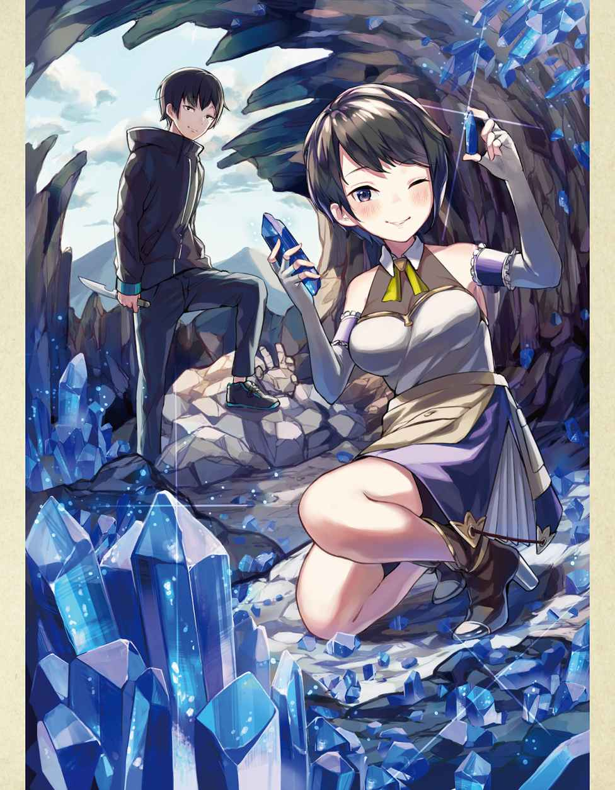

| 【合本版1-2巻】引きこもりだった男の異世界アサシン生活 | |
| 服部正蔵 | |
| TOブックス (2019) | |
※本電子書籍は「引きこもりだった男の異世界アサシン生活」１、２巻を１冊にまとめた合本版です。
イラスト：シロジ
デザイン：TOブックスデザイン室
俺の名前は佐藤 悠馬 。今年二十五歳、絶賛引きこもり真っ最中のニートだ。
大学を中退してから七年もの間、やる事もやりたい事も特になく、ひたすらネットゲームに明け暮れている。
だが、その生活にも最近危機感を覚え始めていた。そう、このままだと課金ができなくなりそうなのである！
ネットゲームをある程度やったことのある人なら分かってくれるとは思うが、いまや課金なしでネットゲームをやっていくのは中々に厳しい。
今までは親にもらっているお小遣いでやりくりしていたが、いよいよ限界に近付いてきたのだ。
だがどうすればいい!? 俺は所詮引きこもりのニート、それなのに親にお小遣いの額を値上げしろなんて言えるほど図太い性格はしていない。いや、まぁニートをやっている時点でかなり図太いような気もするが。
さて、そうなってくると今の俺に残された方法は、バイトくらいのものか。家の外に出るのは少々抵抗があるが、まぁ課金できなくなるよりはましだな！
よし、そうと決まれば早速バイト探しに出かけるとするか！
生まれてこの方働いたことなどないはずなのに、この時の俺はなぜか調子にのっていた。
次の日、意気揚々と家を出ていく。途中、久しぶりに顔を見た母さんが俺を見て非常に驚いていたが無視した。
とりあえず歩いて行ける距離に本屋があるので、そこに向かい街道を歩いて行く。
頭の中ではこれで課金できるようになる、その事ばかり考えていて他の事にまったく注意を向けていなかった。その時だった。大型トラックがこちらに向かってかなりの速度で突っ込んできたのだ！ まずい、普通の車ならまだしも、この大きさのトラックにはねられたら間違いなくお陀仏だ！ そう思い必死に避けようとするも、長年引きこもり生活をしていた体がいきなり俊敏に動くわけもなく、気づいた時には目と鼻の先にトラックが迫っていた。
「あ......俺死ん......」
あれ、どこだここ。
ふと目をあけると周りは無駄に広く、真っ白い空間だった。
「俺はたしか、バイトを探しに行く途中でトラックに......」
トラックに轢 かれて......。
「そうだ！ たしかに俺はあの時トラックに轢かれて死んだはず」
それなら、一体ここはどこなんだ。見た感じ普通の場所ではなさそうだが、天国や地獄ってわけでもなさそうだ。
俺はとりあえず自分の体を確認することにした。服装は死ぬ前の服装そのままで、特に痛いところや怪我もないようだ。
そんなことをしていると、唐突に男なのか女なのか判断のつかない声が聞こえてきた。
「やぁ、無事に目が覚めたようでなによりだ。まぁ無事とは言いづらいかもしれないがねぇ」
声が聞こえた方向に目を向けると、そこには非常に中性的な見た目をした人物が立っていた。
「ふーむ、少し混乱しているようだねぇ。まぁ君は死ぬの初めてみたいだし仕方ないかな」
この人物の話を信じるのなら、俺がトラックに轢かれて死んだのは確定のようだ。というか、死ぬのに初めてもないだろうと心のなかで思った。
まぁいい。それよりも気になっているのはこの人物の正体だ。こんな変わった空間にいるのだから普通の人間ではないのだろう。勇気を振り絞り聞いてみる事にした。
「あの、あなたは一体何者なのでしょうか？」
俺がそう質問をすると、答えはすぐに返ってきた。
「おっと、僕としたことが自己紹介を忘れていたようだね。僕の名前はラスティ。君たちの世界でいうところの神様ってやつだ。よろしくねぇ佐藤悠馬君」
神様......か。その答えに不思議と驚きはなかった。
「おや、いきなり信じてくれるのは珍しいねぇ。大抵の人間は神様なんてうさんくさいもの信じていないと思っていたんだけどねぇ」
うさんくさいか。言われてみればたしかにそうだが、こんな死後の世界のような場所にいる奴が普通の人間なわけがない。そう思っただけだ。
「あぁ、ちなみにここは君が思っているような死後の世界とかじゃないよ。あえていうなら、生と死の狭間の世界ってとこかなぁ」
生と死の狭間、なら俺は生きているのか、それとも死んでいるのか。どちらなのだろうか。
「このままだと死ぬだろうねぇ。ただ君はこのまま死なせるには少しもったいないと思ってさ。少し話をしてみようかなって思ったのさ」
このまま死ぬともったいない？ 俺は自分で言うのもなんだが長所も特にない平凡なただのニートだ。そんな俺が死んだところで何がもったいないというのだろうか......。
「気づいていないだろうけど、君って中々才能豊かなんだよねぇ。だからさ、君さえよければ異世界にでも行ってみないかい？」
俺が才能豊か？ まったく心辺りのない話だな。いや、それよりも異世界ってなんだ？ よくラノベとかであるゲームみたいな世界ってところだろうか。
「大体そんな感じだねぇ。今ならサービスで特別な力も付けてあげるからさ」
特別な力か......、いい響きだ。他人より優れた力、他人が持っていない力を自分だけが持っている。正直少し憧れるな。
「ああ、ちなみに君の場合転生じゃなく転移になるからそのままの姿で行ってもらう事になるよ」
なるほど。まぁ転生して姿が変わるより、慣れ親しんだ今の姿の方がいいか。
さて、ここまで神様の話を聞いたわけだが、正直異世界に行ってもいいかなと俺は思っている。ただ、最後に少し気になっている事を聞いてみた。
「あの、もしこれを断ったら俺はどうなるんでしょうか？」
俺がそう質問すると神様はニッコリ笑いながら言った。
「うん、このまま死ぬね」
その瞬間、俺の答えは決まった。まだ死にたくはないのだ。
「神様、異世界に行ってみることにします！」
神様は俺のその答えに満足したように笑った。
「うん、よかったよかった。じゃあ早速だけど異世界送ってあげるね」
神様がそう言った次の瞬間、急激に意識が遠のき始めた。
「じゃあねぇ。今度の人生は幸せになれるように祈ってるよ〜」
少しずつ、意識が覚醒していくのを感じる。
俺は朧 げながらも目を覚まし、ゆっくりと目を開いていく。
「ここは、どこだ......」
そう考えとりあえず周りを確認してみることにする。
すると、そこらじゅうに草や木が生い茂っていた。つまりは。
「ここは森の中ってとこか。でもなんで俺はこんな場所に......」
引きこもりだった俺がこんな森の中にいる理由。
分からん。いくら考えてもそんな理由は思い浮かばない。
だめだ、少し頭が混乱してきたので情報を整理してみる事にしよう。
まず俺はトラックに轢かれて死んだ。それから神様と出会って話をして異世界転移する事になって......。
信じられない。俺は本当に神様に会ったっていうのか。とりあえずほっぺをつねってみる。うん、普通に痛い。どうやら夢ではないらしい。
「てことは、ここが神様の言ってた異世界ってことか」
なんだろう、ぱっと見た感じだが、元の世界とあまり変わらないんだな。
さて、少し気持ちが落ち着いてきたところで現状の確認をしておくか。
まず体に異常は特になし。異世界に来る前とほとんど変わっていない。
衣服や持ち物に関しても異世界に来る前からそのままのようだ。もっとも財布くらいしか持っていなかったけどね。
最後に神様がくれると言っていた特別な力ってやつを確認したいんだが、どうやって確認すればいいのだろうか。
「うむ、分からん。こんな時、ゲームとかだとステータスが簡単に開けて便利なんだけどな」
俺がそうステータスと口にした瞬間、目の前に俺の名前が書かれた文字がずらりと並んだ。
佐藤悠馬Ｌｖ１
ＨＰ40 ／40 ＭＰ35 ／35
力５ 体力５ 素早さ２ 幸運20
【スキル】
経験値20 倍 スキル熟練20 倍 鑑定Ｌｖ10 気配遮断Ｌｖ７
【称号】
異世界転移者 引きこもり
なるほど、異世界ってのは中々便利なもんらしい。
俺の名前が表示されてるって事は、これが俺のステータスってわけね。
そうと決まれば一つずつ確認していくとしますか。
まずＨＰ40 とＭＰ35 。これは現時点だと高いか低いか判断はできないな。
次に力と体力の５。これはおそらく高くはないだろう。長年引きこもっていた俺に力や体力などあるはずもない。
次に素早さだが、これは酷い......。力や体力よりも更に低い２。これには少々ショックだが、まぁ仕方ない部分もある。長い引きこもり生活のせいで走ることはおろか、歩くことすら最近は減っていたからな。
最後に幸運だが、予想以上に高くなんと20 もある。力や体力の四倍だ。
正直この幸運の数値ならトラックになど轢かれるなよと思うが、まぁそこは神様に出会って転移させてもらえた事だし良しとするか。
さて、次はスキルを見ていく事にするか。
【経験値20 倍】モンスターを倒した際、得られる経験値が20 倍になる。
【スキル熟練20 倍】スキルを使用した際の成長が20 倍になる。
【鑑定ＬＶ10 】相手のステータスを見ることができる。ただし、レベル差が離れすぎていると効果が発揮されない場合がある。
【気配遮断ＬＶ７】気配を消すことができる。ただし、レベル差が離れすぎていると効果が発揮されない場合がある。
なるほど、どれも有用そうなスキルばかりだ。
まず経験値20 倍とスキル熟練20 倍は手っ取り早く強くなれる。
この世界が安全かどうかも分からない現状、できるだけ早くレベルを上げておいたほうがいいだろう。
次に鑑定、これもかなり有用なスキルだ。
戦う前に相手のステータスを確認できるのなら、戦いの難易度がまったく違ってくる。生き残れる可能性もグッと上がるだろう。
欠点は相手とのレベル差が離れていると見えなくなるくらいか。
まぁこれは仕方ないことだろう。とっととレベルを上げればいいだけの話だ。
それに、鑑定が効かなかった相手は警戒すべきという判断もとることができる。
次に気配遮断、これも文句なしに有用だ。
攻めにも守りにも使うことができるスキルだ。
敵に気付かれずに背後から仕留める。くく、かっこいいじゃないか。
よし、これでスキルは終わりだ。最後に称号を見ていくか。
【異世界転移者】異世界から来たもの。その多くは良くも悪くも世界に大きな影響を及ぼすだろう。
【引きこもり】数年の一人孤独に過ごしてきた者。
ふむ、異世界転移者ってのは予想通りそのまんまの内容だ。
しかし良くも悪くも世界に影響を及ぼすか。悪くもってとこが少し不安だな。
もう一つの称号の引きこもりの方は、まぁこんなもんだろう。
さて、ステータスの確認はこれくらいでいいだろう。
現状確認はすべて終わったことだし、次は安全な場所でも探すとするか。
できれば洞窟 のような場所があればいいんだけどな。
そう考え歩き出そうとした瞬間、視界の端から何らかの生物が俺の目の前に飛び出してきた。その一瞬の出来事に俺は少しだけ驚いたものの、すぐに冷静になり目の前の生物の姿を確認してみることにした。
すると、それは地球にいた兎 にそっくりな姿であった。
「へぇ、兎みたいなもんか。異世界にも似たような生物っているんだな」
うん、非常に可愛らしい見た目だ。少し頭でも撫でてみるか。
そう考え兎のような生物の頭に手を伸ばす。すると次の瞬間。
「ガウゥウウウウウウ!! 」
「......え？」
兎によく似た生物はその可愛らしい顔を鬼のように変え、大きな口を開け俺の手に噛 みつこうとしてきた。
「こ、こいつ!! 」
やばいと思った俺はとっさに腕を引っ込め、なんとか攻撃を避けることに成功した。
「そうだった！ ここは異世界なんだ、何をやっているんだ俺は!! 」
俺は自分の考えの甘さに苛立ちながらも必死に生き残る方法を考える。
まずは【鑑定】発動。
ラビッツＬｖ３
ＨＰ55 ／55 ＭＰ０／０
力４ 体力７ 素早さ13 幸運２
やばい、力と幸運は俺の方が上だが、体力と素早さはラビッツの方が上だ。特にこの素早さの差はまずいだろ！
そうして俺が必死に考えている間も、ラビッツは大きな口を開けてこちらを睨み続けている。どうやら俺を逃がすつもりはないらしい。
くそ、この状況一体どうすればいいんだ......。
初めての生死がかかった戦い、俺は恐怖のあまり混乱に陥っていた。
持っている物は財布だけで武器はない。スキルも攻撃に使えそうなのは一つもない。これでどうやって戦えって言うんだよ!!
俺がそうして混乱していると、好機だと思ったのかラビッツが大きな口を開けこちらに飛びかかってきた！
「ガウゥゥゥウウウウウウ!! 」
やばい！ そう思い必死に避けようとするも、素早さはあちらの方が上だ。
結果、太ももの一部が攻撃を避けきれず傷を負ってしまう。
「ぐぁぁああああ!! 」
太ももに走った余りの痛みに思わず叫んでしまう。
仕方ないだろう。こちとら平和な世界のしかも引きこもりだったんだ。
怪我なんて数えるほどしかしたことがない。痛みにまったく慣れていないんだ。
「はぁはぁ......くそぉ」
まずい、この足では次の攻撃を避けられるか分からない。
そしてこの絶好のチャンスをラビッツが見逃すはずもなく、再度大きな口を開けて俺の体へと向かってくる。
まさか、せっかくの二度目の人生、こんなとこで終わってしまうのか......。
嫌だ、そんなのは絶対嫌だ！ 俺は生きたい、もう二度と死ぬなんて御免だ！
すでにラビッツは至近距離まで接近している。こうなったら、一か八かだ！
「【気配遮断】!! 」
渾身の思いを込めてそのスキル名を叫んだ。
すると次の瞬間、目の前のラビッツがまるで時が止まったかのように静止する。
「ガゥゥ？ ガウゥ？」
急に動きが止まったラビッツはきょろきょろと周りを見る。
まるで、目の前にいたはずの獲物が急にいなくなり不思議がっているかのように。
その後、何事のなかったかのようにラビッツはこの場から去っていった。
「......助かった。のか？」
とりあえずの危機は去ったと考えてもいいだろう。
そう思い発動したままだった気配遮断を解除する。
「ぶはぁぁあああああああ!! 」
気配遮断を使っている間は念のためずっと息を止めていたので、思いっきり空気を吸い込む。命の危機から解放されて吸う空気は最高の味だった。
「はぁはぁ、死ぬかと思った......」
とりあえずは生き残ることができた。その事実に安堵する。
しかし、よくあの状況で生き残れたもんだ。すべてはこのスキルのおかげだな。
気配遮断、まさかここまで有用なスキルだとは思っていなかった。あの距離でまったく気付かれないとは。しかも相手は生物、まさか匂いすらも遮断してしまうという事だろうか。もしそうだとしたら、とんでもないチートスキルだなこいつは。上手く使いこなす事ができれば、ほぼ無敵だ。
おっと、そういや気配遮断はスキルだからＭＰを消費したはずだな。
どれだけ減ったか一応確認しておくとしますかね。
「ステータスオープン」
佐藤悠馬Ｌｖ１
ＨＰ30 ／40 ＭＰ15 ／35
力５ 体力５ 素早さ２ 幸運20
【スキル】
経験値20 倍 スキル熟練20 倍 鑑定Ｌｖ10 気配遮断Ｌｖ７
【称号】
異世界転移者 引きこもり
なるほど、さっき見た時よりＭＰが20 減っているな。
気配遮断を使っていた時間もおよそ二十秒。つまり気配遮断は一秒につきＭＰを１消費するってことか。
おそらくだが、将来的に見れば一秒につき１消費はまったく問題にならないだろう。
しかし、今の俺の最大ＭＰは35 。つまり気配遮断は最大でも35 秒しか持たないってことになる。流石に三十五秒じゃ少し厳しい気がするな。
これは早めにレベルを上げてＭＰの最大値を上げておいたほうがいいかもな。
幸い俺には経験値20 倍のスキルがある。これがあればレベルはすぐに上げることができるだろう。問題は、武器がないことだな。
流石に気配遮断で気づかれることなく近寄れたとしても、武器がなければどうしようもない。素手で戦うという最終手段もあるが、もし十五秒の間に倒しきれなかったらアウトだ。そんな危険な事はできない。
まぁいい、色々考える事はあるが、まずはこの場を離れるとするか。さっきのラビッツがこの場に戻ってこないとも限らないからな。
とりあえず夜までに安全な場所を見つける事が最優先だ。
そう考え周りを警戒しつつ歩き始める。
そうしてしばらく歩き続けていると、不意にお腹からグーと音が鳴った。
はあ、流石にこんだけ歩き続けると腹も減ってくるよなぁ。
かといって食べる物なんて持っているわけないからな。どうしようかね。
そんな事を考えながら歩いていると、偶然にもリンゴによく似た果実を発見した。
「これは、美味そうだな。食べてみるか......」
いや、だめだだめだ。ここは異世界なんだ、日本にいた頃の常識なんて通用しないってさっきのラビッツで分かったはずじゃないか。もしかしたらこれだって毒リンゴのような物かもしれない。
けど、美味そうだよなぁ。何かいい方法はないのだろうか。そこで俺は閃 いた。
「なんだ、鑑定使えばいいじゃん。【鑑定】発動っと」
【パプゴ】ファリス森林の入り口付近に生えている果物。非常に美味しく多くの人に食されている。なお毒はない。
おお、これは食べれそうじゃないか。ご丁寧に毒もないと書いてある。
しかも非常に美味しいだと、これはもう我慢できないな。俺は目の前に生っているパプゴを一つ掴み取り、そのままかぶりついた。
「う、うめぇぇぇぇぇえええええ!! 」
なんだこれは、めちゃくちゃ美味いぞ。
見た目はリンゴに近いが味はブドウだなこれは。
噛むごとに口の中に甘さがどんどん広がり食べるのを止められない。
おっと、夢中で食べていたらもうなくなってしまった。
だが幸いな事に俺の目の前にはまだまだパプゴは沢山ある。ここで食べておかないと今度はいつ食べれるか分からない。食べれるだけ食べておくことにしよう！
周囲に最低限の警戒を残しつつ、俺はパプゴを食いまくった。
「うぷ、流石に満腹だな」
ああ、めちゃくちゃ美味かったなぁ。
しかし気のせいだろうか。腹が膨れたのは当然として、なんだか体に元気がみなぎってきたように感じる。
不思議に思いステータスを確認してみると、なんとＨＰとＭＰが回復していた。
なるほど、この世界では食事でもＨＰとＭＰは回復するのか。
睡眠などでしか回復できないと考えていただけに、これはいい情報だな。
よし、持てるだけパプゴは持っていくことにしよう。そこまで重たいわけでもないし、もし魔物と遭遇してしまったら気配遮断を使って逃げればいい。
「こんなもんでいいかな」
とりあえずパプゴは持てるだけ持った。腹も膨れた事だしもうここに用はないな。そろそろ行くとしようか。
俺は予想外の幸運に感謝しながらも、安全な場所を求めて再び歩き出した。
それからほんの数分後、幸運なことに洞窟のような場所を発見することに成功した。
「おお、ここなら雨も凌げるし、ある程度安全なんじゃないか」
そう考えた俺はとりあえず洞窟の中へ入ってみる事にした。
いざ中へ入ってみると洞窟は想像していたよりも遥かに広く、少なくとも人が数十人は入れそうなほどだった。しかも奥にはまだ道があるようだ。何か役に立つ物があるかもしれないし、もう少し奥へ行ってみるか。
そう考え洞窟の奥へと進んでいった。当然魔物がいる可能性もあるので、いつでも気配遮断は使えるようにしながら慎重に進んでいった。
そうしてしばらく歩いていると、かなりの広さをもった空間に辿り着いた。
「おっと、いきなり広い場所に出たな。洞窟はここで行き止まりかな」
そう考えとりあえず辺りを確認してみる。
すると、空間の中心辺りで焚 き火 の跡のような場所を発見した。
どうやら以前、ここで焚き火をしていった人がいたわけか。あれ、洞窟で焚き火ってできたっけ。そう思いつつ、何か有用そうな物がないか探していく。
うーん、焚き火をするのに使ったらしき木の残り以外は何もな......ん、これはまさか、ナイフか!?
「おお、こんな場所でまさか武器が手に入るとは！」
さすが幸運がダントツで高いだけあるな。
しかし、よく見るとこのナイフボロボロだな。まぁそうじゃなきゃ捨てたりしないか。とりあえず鑑定してみるとしよう。
【ボロボロのナイフ】使い古されたナイフ。長年使われ続けた結果、ところどころ刃が欠けてしまっている。
少々の不安が残るが、しばらくはこれを武器に使っていくことにしよう。これで魔物に襲われたとしても、一方的に逃げるしかできないって事はなくなったな。
さて、武器も手に入ったことだし、とりあえず入り口まで戻るか。そう考え来た道をそのまま戻っていった。
「はぁ、結構歩いたせいでまたお腹が減ってきたな」
俺が持ってきたパプゴは全部で五個。五個もあるんだから一個くらい食べてもいいよな。そう考えパプゴを一つだけ食べることにした。
あまり大きくはないパプゴはほんの数分で食べ終わった。
「うん、やっぱり美味いな」
個人的な意見だが、リンゴやブドウよりも好みの味だ。
ステータスの方はどうなっているかな。そう考えステータスを確認してみると、ＭＰが２回復していた。てことはパプゴ一つでＭＰは２回復か。
となると残りのパプゴ四つを全部食べてもＭＰは８しか回復しないのか。やはり大きく回復させるのには睡眠が必要みたいだな。
しかし、そろそろ今後の事を考えてレベルを上げておきたいところだ。
ちょっと見た目は悪いが武器も手に入ったことだ。やってみるとしますかね。
「あのうさぎもどき、リベンジだ」
理想は気配遮断を使い気づかれないように近づき、一撃で仕留める事だな。
俺の残りＭＰは27 。つまり気配遮断を使える二十七秒間は俺の時間ってわけだ。
念のためにパプゴを二つだけポケットに忍ばせておくか。それ以上は邪魔になりそうだ。
さて、リベンジと意気込んでいるはいいが、まずがうさぎもどきことラビッツを見つけない事には話にならない。早速探しに行くとしますかね。
俺はパプゴを二つだけポケットに忍ばせ、洞窟を後にした。
まずはパプゴが生息していた場所に行ってみるとするか。あそこならパプゴ目当てのラビッツがいるかもしれない。
しばらく歩くと無事に目的地へと到着する。しかし、以前来た時と少々様子が違うようだ。地面に何かに食い荒らされたのだろうパプゴがいくつか転がっている。
そのうちの一つを手に取り確かめてみると、見覚えのある大きなキバの跡を発見した。間違いない。あいつのキバだ。
どうやら俺の予想通り、ラビッツはここを餌場 にしているようだな。
そうと決まればやることは一つだ。ここで待ち伏せをしよう。
都合のいいことに、ここら一帯は草むらと木で覆われている。隠れるにはもってこいの場所というわけだ。
「よし、ここにするかな」
すぐに隠れるのに最適な場所を発見することができた。ここならラビッツが俺に気付く心配はほぼいらないだろう。後はここでラビッツが現れるのを待つだけである。
隠れ始めてから数十分後、目の前の草むらがガサガサと小さく揺れる。
「......来たか」
そして俺の目の前に、あの憎きラビッツが姿を現した。
しかし、気のせいかもしれないが俺を襲ったラビッツより小さく見えるな。
まぁいい、とりあえずは鑑定だ。【鑑定】発動。
ラビッツＬｖ２
ＨＰ45 ／45 ＭＰ０／０
力３ 体力５ 素早さ11 幸運１
やはり、俺を襲ったラビッツよりも明らかに弱い。どうやら同じ魔物でも強さには差がでるようだ。
しかし、これは好都合だ。同じ種類の魔物なのだから、当然レベルの低い方が倒しやすいに決まっている。
そう考えながら目の前のラビッツを観察していると、どうやらやつはパプゴを食べるのに必死なようだ。うんうん、あれ美味いもんな。
おっと、呑気に食事を見ている場合じゃないな。どう考えても今が最大のチャンスだ。まず気配遮断を発動し、右手にナイフを持つ。これで準備は完了だ。
「よし、やるか」
俺はなるべく音を立てないように草むらから飛び出す。
まぁ音を聞かれてこちらを向いたところで、俺の姿はラビッツには見えないだろうけどな。
そんな事を心の中で考えながら、静かにラビッツの背後へと歩いて行く。
そしてやっとラビッツの真後ろまで接近することに成功した。目の前のラビッツは食事に夢中でこちらに気付いている様子は欠片もない。これはいけるぞ！
俺は右手に持っているナイフを大きく持ち上げ、そのままラビッツの首へ全力で振り下ろした！
「ギィィィィィ!! 」
ラビッツは一瞬だけ大きな悲鳴を上げ、その後すぐに絶命した。
「はぁはぁ、やった、やったぞぉおおおおおお!! 」
魔物が生息している森の中で大声を出すのは明らかに危険行為なのだが、この時の俺は嬉しさの余りそんなことは忘れ、ただ叫んでいた。
「やったぁ、やったぞお！」
数十年間生きてきて、この大きさの生き物を殺すというのは初めての経験になるのだが、不思議と哀れみや同情といった気持ちは湧いてこなかった。あるのはリベンジに成功したことによる嬉しさだけだ。
「そうだ、レベルはどうなったんだ!? 」
元々の目標を思い出し、急いでステータスを確認する。すると。
佐藤悠馬Ｌｖ４
ＨＰ70 ／70 ＭＰ50 ／50
力14 体力14 素早さ８ 幸運38
【スキル】
経験値20 倍 スキル経験値20 倍 鑑定Ｌｖ10 気配遮断Ｌｖ７ 短剣術Ｌｖ１
【称号】
異世界転移者 引きこもり
おお、レベルが一気に４に上がっている。他のステータスもかなり上がっているな。
ＨＰとＭＰは両方50 を超えたか。右が最大値で左が現在の数値ってわけね。どうやらレベルが上がったら全回復する仕様のようだ。本当にゲームのようだな。
さて、各能力だが、力と体力は順調に伸びているな。それに比べて素早さの伸びは少し寂しい。まぁ伸びていないわけではないので良しとするか。
それに比べて幸運の伸びは凄まじいものがあるな。今回も運よくラビッツを見つけることができたし、もしかしたら幸運は非常に重要な能力なのかもしれないな。
おっと、スキルも一つ増えているようだ。
短剣術か。おそらくさっきナイフを使ったから増えたんだろうな。
気配遮断は７のままか。もしかしたら８になっているかもしれないと思っていたのだが、そこまで甘くはないようだ。
最後に称号だが、これは特に変化はなしと。流石に称号は簡単には増えないか。
さて、これでステータスの確認は終わりだ。
後は、このラビッツをどうするかだが、もしかしたら非常食になるかもしれないし、一応持ち帰っておく事にしよう。
よし、とりあえず目標は達成したことだし、洞窟へ戻るとするかな。
ラビッツとの戦いから数十分後、俺は無事に洞窟へと戻ってきていた。
外を見てみるとすでに暗くなり始めている。なんとか真っ暗になる前に戻ってこれたな。
そうして安心したところで、俺は一つの違和感に気付く。
「あれ、結構な距離を歩いたっていうのに、思ったより疲れがない」
もしかしたら、これもレベルが上がった影響なのだろうか。
だとしたらおそらくＨＰ、いや体力の数値が関係している気がするな。
いいぞ、これは嬉しい誤算だ。こんな森の中にいるんだ。体力はあるだけあったほうがいいに決まっている。
それにしても、こんなことならラビッツをもう少し倒しておけばよかったな。
いや、油断は禁物だな。もしかしたらラビッツが集団で現れる可能性だってある。
それにラビッツよりも強い魔物があの周辺にいないとも限らない。ここは異世界なんだ。慎重すぎるくらいで丁度いいってもんだ。
さて、とりあえず外も暗くなってきたし、今日はここで寝るとしますか。おっと、その前に確認しておくことがあったんだった。
よし、洞窟に置いていったパプゴが魔物に食べられた形跡はない。
つまりこの洞窟に魔物は寄り付いていないというわけだ。多分だけどね。
魔物がいないと分かれば安心して眠ることができる。
そうして安心した途端、急にお腹からグーと音が鳴り響く。
「あれだけ歩くと流石に腹が減ってきたな。何か食べるか」
そう考え、現在手元にある食材を確認していく。
まずはパプゴが合計で四つ。そしてついさっき倒したばかりのラビッツが一匹。
パプゴはそのまま食えるので心配ないのだが、問題はこのラビッツだ。
俺は平和な世界で暮らしてきた普通の引きこもり。当然サバイバルの経験なんてあるはずもない。料理すらまともにしたことないのだ。
つまり、このラビッツどうやって食えばいいんだよ......。
まず前提として、捌 けたとしても生では絶対に食いたくない。
俺の世界では一部の高級な肉などは生のまま食えたりもしたが、流石にラビッツを生で食うのはやめておいたほうがいいだろう。下手したらそのままお陀仏って事もありえる。
かといって俺に火を点ける方法なんて分かるはずもない。ライターでもあれば楽なんだろうが、まぁこの世界にそんな物あるはずないよね。
「うーん、こういう時はゲームだと魔法があるから楽なんだけどな。こう、ファイアボール!! なんつってな」
冗談交じりでファイアボールと口にした次の瞬間、俺の手のひらに突如、野球ボールくらいの大きさをしている火の球体が出現する。
「うおおおお!! なんだこれは、手が焼けちまう！ 熱い熱い熱......あれ」
熱く、ない......だと？
なんだこれは、見た目と違ってまったく熱さを感じないぞ。
もしかして、俺が発動した魔法だから俺自身は影響を受けないって事なのか？
今のところはよく分からないな。まぁとりあえず今考えるべき事は。
「このファイアボール、どうすればいいんだろ......」
このまま出し続けておくわけにはいかないだろうし、魔法の消し方も分からない。
仕方ない、少し不安だがやってみるか。
そう思い俺は手の平を洞窟の壁に向け、まっすぐ飛んでいく姿をイメージして。
「飛んでけ、ファイアボール！」
そう叫ぶと、ファイアボールは洞窟の壁に向かい一直線に飛んでいく。
そして見事壁に命中して、ファイアボールは破裂するかのように大きく爆散した。
ファイアボールの着弾点を見てみると、壁の一部が粉々に砕けていた。
「おお、威力は中々ありそうだ」
これなら戦いにも十分使うことができるだろう。
問題は、これでどうやってラビッツを焼くかだな。今のままではどう考えても黒焦げになるか爆散するかの未来しか見えない。
威力を調節できたり、燃えやすい草や木でもあればいいんだけどな。
おっと、その前に少しステータスを確認しておくとするか。
ファイアボールはおそらく魔法。ならＭＰをどれだけ消費するか確認しておく必要がある。それにスキルを新しく覚えているかもしれないしな。
「ステータスオープン」
佐藤悠馬Ｌｖ４
ＨＰ70 ／70 ＭＰ45 ／50
力14 体力14 素早さ８ 幸運38
【スキル】
経験値20 倍 スキル経験値20 倍 鑑定Ｌｖ10 気配遮断Ｌｖ７ 短剣術Ｌｖ１ 火魔法Ｌｖ１
【称号】
異世界転移者 引きこもり 駆け出し魔法使い
おお、予想通りスキルに火魔法が増えている。称号も一つ増えているな。
火魔法レベル１か。おそらくレベルが上がるごとに扱える魔法が増えていったりするのだろう。
しかし、ファイアボール一回で消費するＭＰは５か。これは今のＭＰだと中々にきついな。十回使ったらすぐに０になってしまう。
気配遮断のためにＭＰはなるべく温存しておきたいからな。しばらく戦いでも使用は控えたほうがいいかもしれない。
後は称号の駆け出し魔法使いか。まぁこれは魔法を使ったから増えたんだろう。
それにしてもラッキーだったな。まさか偶然魔法が使えるようになるなんて。
もしかしたら他の属性の魔法も使えたりするのかもしれない。レベルが上がりＭＰに余裕ができたら色々と試したいところだな。
さて、色々やっているうちに完全に夜になってしまった。
若干眠くなってきたことだし、今日はパプゴを一個食って寝るとするか。
翌朝、目が覚めると外はすでに明るくなっていた。
よく寝たな。まさか異世界に来て初めての夜にここまで熟睡できるとは思っていなかった。予想以上に疲れが溜まっていたのか、それとも俺が図太い性格だったのか。
まぁいい、とりあえずよく寝たことで疲れもほとんどなくなったみたいだ。
そういやＭＰはどうなっているのか。回復しているといいのだが、そう思いながらステータスを開きＭＰを確認すると、無事回復していた。
「おお、やっぱり睡眠で回復するみたいだな」
これが分かったのは大きな収穫だが、今度は回復量が気になってくるな。
今度、余裕がある時にでもＭＰを０まで使い切り、その状態でどれだけ回復するか試してみるのも悪くないな。
よし、ステータスの確認はこんなもんにして、朝飯でも食べるとしますか。
昨日の残りでパプゴが残っているのでそれを食べることにしよう。起きたばかりで腹の減っていた俺はパプゴ一つをペロっと平らげた。
「うーん、ちょっと物足りないな」
また昨日の場所にパプゴを取りに行くとしますか。
ついでにレベル上げのためにラビッツも少し倒しておくとするか。
もしラビッツが大量に出現したり、俺の手に負えない魔物が現れたら全力で逃げるとしよう。気配遮断を使えば逃げられない魔物はそうはいないはずだ。
そうと決まれば準備をして早速行くとしますか。
まぁ準備っていっても、持っていくものはナイフくらいしかないんだけどね......。
俺は唯一の武器であるナイフを大切にポケットに入れ、洞窟を後にした。
洞窟からしばらく歩くと、昨日と同じ場所へと到着する。
それにしても、やはり疲れはほとんどない。
ラビッツを一匹倒しただけでこれだからな。レベルってのは偉大なもんだな。
まぁ俺には経験値20 倍のスキルがあるので、二十匹倒したようなもんだが。
さて、隠れるのはこの場所でいいかな。
俺は昨日とほとんど同じ場所の草むらに身を隠す。
後はここでラビッツが現れるのをじっと待つだけだ。
しかし、こうしてみると俺の戦闘スタイルって戦士とかそういう系じゃないよな。どう考えてもアサシンとかそっち系だ。まぁかっこいいからいいけどさ。
そんな事を考えのんびり待っていると、目の前に目的のラビッツが現れる。
昨日倒したラビッツよりも若干大きいが、初めてあったやつよりはやはり小さい。
一応ステータスを確認してみたところ、昨日と同じレベル２だった。これなら余裕そうだな。
「やるか」
気配遮断と発動して、昨日と同じようにラビッツの背後に静かに忍び寄る。
そして真後ろまで接近したら、そのままラビッツの首にナイフを刺し込む。
「ギィィィィ」
ラビッツは小さな悲鳴を上げすぐに絶命した。
「よし、成功だ」
そしてレベルが上がった影響は攻撃にも表れていた。
おそらく力が上がった影響だろう。少し力を入れただけで倒すことができた。
それだけじゃない。俺の気のせいかもしれないが、昨日よりもナイフが手に馴染んでいる感覚がある。これはおそらく短剣術のスキルのおかげだろう。便利なものだな。
おっと、せっかく倒したのにレベルの確認を忘れていた。
そうしてステータスを開きレベルを確認してみると、無事６まで上がっていた。
各能力だが、力や体力、幸運の伸びはいつも通り順調だ。
しかし、相変わらず素早さの伸びだけはイマイチだな。まぁそこは気配遮断などのスキルで上手くカバーしていくことにしよう。
さて、ステータスの確認はこれで終わりとして、このラビッツどうしようか。
洞窟に一匹保管してあることだし、少々もったいないがこのまま捨てていこうかね。
こういう時、ゲームとかだとアイテムボックスなどが使えて便利なのだが。まぁ流石にそこまでうまい話があるわけ......。
【アイテムボックスＬｖ１を取得しました】
おいおい、アイテムボックスってこんな簡単に取得できていいのかよ！
いや凄く嬉しいんだけどね。でもなんか釈然としないような。
まぁいいか、ここは素直に喜んでおくとしよう。
おっと、少し興奮してしまってスキルの確認を忘れていたな。
もしかしたら俺の思っているアイテムボックスとは効果が違うかもしれない。早速ステータスを開きスキルの効果を確かめてみることにした。
【アイテムボックスＬＶ１】色々な物を収納しておくことができるスキル。原則として生きているものに関しては収納することはできない。ただし、その生物がすでに死んでいる場合は問題なく収納することができる。収納できる容量はＭＰに比例する。また、アイテムボックス自体のＬＶが上がる事によっても、収納できる容量は増えていく。
ふむ、俺の思っていた通り、かなり有用なスキルだ。
生きている生物は入らないようだが、俺の倒したラビッツなどは死んでいるので問題なく入れることができるだろう。
容量は、ほうほうＭＰによって決まるか。
それとアイテムボックス自体のスキルレベルでも容量は増えるのか、なるほど。
しかし、こうなってくると現時点での容量が気になって来るな。
都合のいいことにこの場には大量のパプゴがある。少し確認してみるとするか。とりあえずパプゴがいくつ入るかを目安にしてみよう。
「そうと決まれば、【アイテムボックス】発動」
俺がスキルを発動すると、手の平にサッカーボール程度の大きさをしている箱が出現した。これがアイテムボックスってわけね。
この見た目だけで判断するならあまり量は入らなさそうだが、さてどうなるか。
とりあえず入れてみるか、そう思い試しにパプゴを一つ入れてみる。
すると、パプゴはまるで消えていくかのようにアイテムボックスの中へと吸い込まれていった。
その光景に少し驚きながらもアイテムボックスを確認してみると、外見に特に変化はなかった。ならばと次々にパプゴをアイテムボックスの中へ入れていく。
おお、どんどん入るな。やっぱり見た目通りの容量じゃないってわけね。
その調子で次々にパプゴを入れ続けた結果、五十を超えた辺りで少し入りにくくなってきたような気がした。
ふむ、もう少しで限界に近いな。今まで入れたパプゴの数は五十六個。単純に考えるのなら一個につき１ＭＰってとこかな。随分と入るもんだ。
しかも、レベルさえ上がればまだまだ容量は増える。これはいいスキルを覚えることができたな。パプゴもこれだけあれば当分は持ちそうだ。
最後にさっき倒したラビッツも入れてみるとするか。
生き物などは入らないようだが、倒して死体となったラビッツなら入るはず。そう考えラビッツをアイテムボックスに近づけていくと、パプゴと同じように吸い込まれていった。
よし、問題なく入ったな。あと二〜三匹は入りそうなので容量はパプゴと同じくらいだなこれは。どうやら入れる物の大きさは容量に関係ないらしい。
さて、アイテムボックスの検証はこんなもんでいいだろう。
これからどうしようかね。今は昼間なので洞窟に帰るにはまだ早い。
アイテムボックスはあと二〜三匹入るだけの余裕があり、俺のＭＰはさっきのレベルアップで全回復している。こうなるとやることはあれしかないよな。
「よし、もう少しここでラビッツを倒しておくか」
そう考えた俺は再び草むらに影を潜め、獲物がやってくるのをじっと待つのであった。
あれから数時間後、俺は無事拠点の洞窟まで戻ってきていた。
結論から話すと、ラビッツを倒す事には無事成功した。最初の頃のように緊張することもなく、淡々と作業のように次々と倒していった。
その結果、俺の目の前にには数十匹を超えるラビッツの死体が横たわっている。
「これは、少しやり過ぎたかな......」
違うんだ、少しだけ言い訳をさせてほしい。
俺は最初二〜三匹倒したら帰るつもりだったんだ。ＭＰやアイテムボックスの問題があるからな。
しかしどうしたことか、狩りを始めて数十分、俺のＭＰは減るどころか、むしろ狩りを開始する前より増えていたのだ！
なぜそうなったか、それは俺の持っている経験値20 倍のスキルの影響だ。
このスキルを持っていない普通の人ならラビッツを一匹倒したところでレベルなんて上がらないだろう。
しかし、俺の場合はラビッツ一匹につき１レベルは上がっていた。そしてレベルが上がると当然ＭＰは全回復する。しかもどんどん増えていったのだ。
当然アイテムボックスの容量もどんどん増えていった。つまり、まだまだ狩れるじゃないか、そう思ってしまったわけだ。
俺はゲームでもそうだが、レベルは上げれるだけ上げておきたい派だ。そんな俺は調子に乗って数時間ぶっ通しでラビッツを狩り続けた。その結果がこれだ。
「はぁ、どうすんだよこの大量のラビッツ」
適当に数えても三十匹以上はあるよな。
まぁ別にいいか。レベルも上がってアイテムボックスの容量もだいぶ増えた。このラビッツを全部入れるだけの容量も十分ある。問題ない問題ない。
それよりも、今はレベルがどれだけ上がったのか気になる。
これだけの数を倒したんだ。相当上がっていると思うのだがどうなっているか。
よし、早速確かめてみよう！
「ステータスオープン」
佐藤悠馬 Ｌｖ24
ＨＰ２１０／２１０ ＭＰ１５０／１５０
力74 体力74 素早さ48 幸運１５８
【スキル】
経験値20 倍 スキル経験値20 倍 鑑定Ｌｖ10 気配遮断Ｌｖ８ 短剣術Ｌｖ３ 火魔法Ｌｖ１ アイテムボックスＬｖ２
【称号】
異世界転移者 ひきこもり 駆け出し魔法使い ラビッツハンター
おおお。めちゃくちゃ上がってるじゃないか！
やばい、これは予想以上の結果だ。まさかレベルが一気に20 も上がるなんて。
各能力だが、ＨＰとＭＰは両方とも三倍近くの数字まで上がっている。
力と体力も両方70 を超えた。相変わらず素早さは少し低いがそれでも48 もある。
そして幸運だが、相変わらずやばいな。１５８とか文字通りけた外れの数値だ。
次にスキルだが、気配遮断がレベル８に上がっている。正直７から８になり何が変わったのかはよく分からないが、とりあえずレベルが上がる事はいいことだな！
そして短剣術もレベル３まで上がっている。これはもう俺のメイン武器はナイフに決定だな。気配を消して近づきナイフで一突き。くく、ゾクゾクするじゃないか。
最後に称号は特に変化は......ん、ラビッツハンターってのが増えてるな。一定数ラビッツを倒せば取得とかそういう感じかな。
よし、これでステータスの確認は終わりだ。
それにしても、正直ここまで一気に強くなれるとは思っていなかった。
すでにラビッツ程度なら数匹に囲まれて襲われても楽に倒すことができそうだ。
いや、大収穫だったな。アイテムボックスの中には大量のパプゴもある。パプゴからある程度の水分は取れるだろうし、当分生活の心配はしなくてよさそうだ。
ラビッツを倒すついでに集めておいた草木で簡易的なベッドもできた。そしてこの洞窟は魔物も寄りついていない安全地帯。
あれ、ここの生活って割と快適なんじゃないだろうか。よく考えたら洞窟ってなんかいいよね。こう密閉された空間って感じがしてさ。
そんな事をのんびり考えていると、またもお腹からグーと音が鳴る。
そういや今日はずっと戦い続け、そのまま洞窟に戻ってきたので朝ごはん以外何も食ってないんだよなぁ。パプゴでも食べるとするかな。
しかし、毎回パプゴだと少し飽きてきたな。贅沢なのは分かっているが、たまには違うものが食べたいな。例えば肉とか魚とか。
そういや、この洞窟って焚き火の跡があったよな。てことは焚き火は可能って事だ。
俺のアイテムボックスの中にはよく燃えそうな大量の草や木。さらに目の前には焼いて食べると非常に美味そうなラビッツ達。
さらにさらに、俺は火魔法が使える。まぁ制御できる自信はないけどね。
ここまで準備が整っていれば、俺のやることは一つだ。
「ラビッツ、食ってみるか！」
ラビッツを食べる決心をした俺は、早速焚き火の跡があった洞窟の奥へと足を運んでいた。
よし、以前見つけた焚き火の跡はここだな。
俺はその場に腰を下ろし、アイテムボックスから大量の草や木を取り出していく。
これだけあれば流石に足りるだろう。早速焚き火の準備に取り掛かるか。
昔テレビで見た情報だと、まず一番下に大量の葉っぱを敷き詰め、次に細い木の枝を積んでいく。次に中くらいの太さの木の枝を積み、最後に一番太い木の枝を積んだら完成だ。
こうすることで燃えやすくなるはずである。俺の記憶が正しければだが。
後は木の向きも重要と言っていた気もするが、そこまで詳しくは覚えていない。
とりあえずこれで焚き火の準備は完了だ。後は火を点けるだけだ......。
これが一番の問題だ。俺がファイアボールの火力を上手く調整できるかどうか。
以前使った時と同じ威力のファイアボールだと、確実にすべて黒焦げにしてしまうだろう。それだけは絶対に避けなくては......。
まぁ今更悩んでいても仕方ないか。とりあえずやってみよう。
確か以前使った時は野球ボールくらいの大きさだったな。それであの威力だ。
今回はとにかく小さく小さくだ。ただ木を燃やすだけ。ならイメージするのはパチンコ玉くらいで丁度いいだろう。
よし、イメージは固まった。いくぞ。
「ファイアボールゥゥゥゥ」
俺がそう小さな声で魔法を発動させると、
手の平にイメージ通り、パチンコ玉サイズのファイアボールが出現する。
いいぞ、これなら黒焦げになる心配はないだろう。
そう確信した俺はファイアボールをゆっくりゆっくり木へと近づけていく。
その結果、ファイアボールの火は見事に木へと燃え移った。
「やった、成功だ！」
後は火が消えないように気をつけるだけだな。
燃え移ったばかりの小さな火だと、少しの風で消えてしまう恐れがある。
とは言ってもここは洞窟の中。しかも入り口からかなり距離が離れている。風の心配はさほど必要はないだろう。
そんな事をのんびり考えていると、火が少し強くなり安定してきた。
火が安定してきたら、今度は逆に風が必要になってくる。風を仰ぐ道具なんてあるはずもないので、必死に手で仰いでいく。
その結果、無事全体に火が回り始めた。これでとりあえず安心だな。
さて、次はお待ちかねの食材の用意だ。
俺はアイテムボックスの中からラビッツを一匹だけ取り出した。
普通なら解体して細かくし、木の枝にでも挿してゆっくり焼きたいところだ。
しかし、俺は生き物の解体などやったこともないし見たこともない。そんな俺に解体などできるわけがないのでその方法は却下だ。
となると、残された方法はあれしかないよなぁ......。
「仕方ない。黒焦げにはならないでくれよラビッツ君」
そう願いを込めて、俺はラビッツを火の中へと放り込んだ。
すると焚き火の炎が一気に燃え上がる。本当に黒焦げにならないか心配になってくる火力だ。
おいおい、頼むぞラビッツ君、根性見せてくださいよぉ!!
申し訳程度に火の強さを調整しながら、俺は黒焦げにならないように祈り続けた。
それから数分後、俺の周りに肉の焼ける香ばしい匂いが漂ってきた。
おお、もう焼けたんじゃないかこれは!!
だめだ、この美味そうな匂いを我慢することは俺にはできない！
そう考えた俺は焚き火の中からラビッツの肉を取り出す。
ふむ、少し焦げてしまっているようだが、このくらいならまったく問題ない。
やばいな、めちゃくちゃ美味そうだ。
焼いたばかりなので、湯気が体中から出ている。
匂いも非常に素晴らしい。まるで高級な肉を焼いているかのようだ。
「もう我慢できん、早速頂くとしよう」
まずはその大きな身を両手で持ち豪快にかぶりつく。
これはやばい、噛んだ瞬間、口の中に肉汁があふれ出してきた！
肉は決して硬すぎる、かといって柔らかすぎず、丁度いい歯ごたえだ！
ラビッツの身は焼けたばかりなので両手で持っていると当然熱いわけだが、今の俺はそんなことまったく気にせず、思わず叫んでしまう。
「う、うめぇええええええええ！！！」
なんだこれは！ 空腹なのも影響しているかもしれないが、今まで食べた肉の中で一番美味いと感じる。まさに驚愕 の美味さだ!!
それから少しの間、俺は無我夢中でラビッツの肉を食べ続けた。
「はぁ、まじで美味かったなぁ」
パプゴも文句なく美味いのだが、やはり肉は一味違う。
まるで体中が活性化していくような美味さだ！
もし日本にこれが売っていたとしたら、外に出てでも買いに行くレベルだな。
引きこもりの俺がわざわざ買いに行くレベルなのだ。この美味さが分かってもらえると思う。
ああ、今日はこれを食えただけでもう満足だ。
腹も膨れた事だし、後は火を消して寝るとしますかね。
さて、問題はどうやって火を消すかだな。水でもあれば手っ取り早いんだろうが。
「こう、アクア！ なんつってな〜〜」
俺がアクアと口にした次の瞬間、焚き火の上から水が降り注いだ。
水の量はバケツ一杯分くらいだろうか。結果、焚き火は一瞬で消えていった。
......やったぜ！
あれ、もう朝か。
簡易ベッドから上半身を起こし、大きな欠伸をしながら昨日の事を思い出す。
あの水魔法？ 結局なんだったのだろうか。
昨日はその事が気になりながらも、満腹になった影響か急に襲ってきた睡魔に逆らう事はできずに......。
「そのまま寝ちゃったんだよな。うーん、しかしいい目覚めだ！」
洞窟の外に目を向けると、すでにかなり明るくなっていた。どうやらかなりの時間を睡眠に使ってしまったようだ。
まぁ別にいいか。どうせ起きててもパプゴを取りに行くか、ラビッツを狩りに行くくらいしかやる事なんてないもんな。
実はこの時、俺はこの洞窟での生活を割と気に入っていたせいか、この森からの脱出などまるで考えていなかった。
さて、とりあえず朝飯ても食べるとするか。
俺はアイテムボックスからパプゴを二つ取り出し、のんびり食べ始める。
うん、やっぱりパプゴも美味いな。起きたばかりの俺には丁度いい軽さだ。
しかし、昨日の水は何だったのかね。
まぁ魔法だとは思うんだけど、やっぱり気になるよな。
よし、確かめてみるか。そう思いステータスを開く。
佐藤悠馬 Ｌｖ24
ＨＰ２１０／２１０ ＭＰ１５０／１５０
力74 体力74 素早さ48 幸運１５８
【スキル】
経験値20 倍 スキル経験値20 倍 鑑定Ｌｖ10 気配遮断Ｌｖ８ 短剣術Ｌｖ３ 火魔法Ｌｖ２ 水魔法Ｌｖ１ 料理Ｌｖ１ アイテムボックスＬｖ２
【称号】
異世界転移者 引きこもり ラビッツハンター 駆け出し魔法使い 駆け出し料理人
ふむ、やはり昨日のアレは魔法だったようだな。スキルに水魔法が追加されている。
これはいい魔法を覚える事ができた。水があれば体を洗うことだってできる、何よりこれで完璧に飲み水の心配はなくなった。
それともう一つ、料理ってスキルも増えているな。
これは昨日の丸焼きの影響だろう。まぁあれを料理って言っていいかは疑問だが。
後は火魔法のレベルも少し上がってるな。レベルが上がる事によって扱える魔法が増えるのか、それとも単純に火力が上がるのか。いつか実験しないとな。
残りの変化は称号に料理人が増えているくらいか。
そういやレベルが24 に上がった時、アイテムボックスのレベルも同時に上がっていたようだ。
レベルが上がると容量も増えるらしいがどれくらい増えるのだろうか。ちょっと気になるので鑑定で確認してみるか。
【アイテムボックス】色々な物を収納しておくことができるスキル。原則として生き物など生きているものに関しては収納することはできない。ただし、その生物がすでに死んでいる場合は問題なく収納することができる。収納できる容量はＭＰに比例する。また、アイテムボックス自体のレベルが上がる事によっても、収納できる容量は増えていく。現在はＭＰの最大値の二倍を収納することができる。
ほう、いきなりＭＰの二倍ときたか。
現状の俺のＭＰは１５０。つまりその二倍の三百個を収納できるってわけか。
凄いな、これは当分アイテムボックスの容量で困る事はなさそうだ。
さて、ステータスの確認はこれですべて終わった。
もうやる事なくなっちゃったな。どうせやる事ないんだしまた寝ようかな......。
いやいや、こんなんじゃだめだ!!
いくら洞窟が快適でやる事がほとんどないからって、このままじゃ引きこもり時代に逆戻りになっちまう。せっかく神様に転移させてもらったんだ。少しくらいは変わらないとな......。
かといって、本当にやる事ないんだよな〜。
その後、しばらくあれこれ考えた結果、俺が至った結論は。
「仕方ない。またラビッツでも倒しにいくか」
まぁ簡単に倒せるし、レベルも上がるし、食べると凄く美味いし。
よし、ちょっとやる気が出てきたぞ。早速行ってみるとしますか！
こうして今日の予定を決定した俺は、今や外に出かける時の必需品となったボロボロナイフを手に取る。
そしてそのままポケットに入れようとしたのだが、何か違和感を覚えた。
あれ、このナイフこんな場所に傷ってあったっけ......。
まぁ元がボロボロのナイフだ。きっと俺の勘違いなんだろうな。
だが、やはり少し不安に思いその傷を指でつついてみる。
すると次の瞬間。
「パキィィィィィン」
大きな音を洞窟に響かせ、俺の愛用ナイフは粉々に砕け散った。
呆然と佇む俺の目の前には、粉々に砕け散ってしまった俺の唯一の武器。
何が起きたかすぐには理解できず、俺は数分の間、それを見つめ続けていた。
それからさらに数分後、やっと気持ちが落ち着いてきた。
まじか、まさか壊れるとは思ってもいなかった。
いや、よく考えればこのナイフは拾った時からすでにボロボロだった。
そこから更に三十匹以上のラビッツとの戦闘。いつ壊れてもおかしくない状態だったのかもしれない。むしろ戦闘中に壊れなかっただけ幸運だったともいえる。
はぁ、こうやって落ち込んでいても仕方ないよな。
俺はアイテムボックスから草葉を取り出し、その上にナイフの残骸 を乗せる。
そして最後にパプゴを一つだけ供える。お墓、みたいなもんかな。
ありがとな、ボロボロナイフ。お前がいてくれなかったら、俺は生き残れていたか分からなかったよ。
よし、ナイフのことはこれでお終いだ！
次に考えなければいけない事は、武器をどうするかって事だ。
一応魔法で攻撃できない事はない。最初に発動したファイアボールはかなりの威力を持っていた。おそらくラビッツ程度なら瞬殺だろう。
そういえば、気配遮断を使っている最中に魔法を発動したらどうなるのだろう。
魔法も一緒に見えなくなるのか、それとも魔法だけ見えている状態になるのか。今度ラビッツ相手にでも実験するかな。
後は武器になりそうな物といえば、この先端の尖った木の枝くらいか。
まぁ正直これは武器にできるか怪しいけどな。細いので簡単に折れてしまいそうだ。
うーん、やっぱりメインの武器がないと心もとないな。
魔法は確かに強いが気配遮断の事を思うとほいほい使えないからな。
そうなるとやはり......。
「この森から、出るしかないか」
これしか方法はないだろう。
こんな場所に都合よく武器が落ちているなんて事、おそらく二度とない。
そうなると、どうしても村や街に行って武器を調達する必要がある。
はぁ、この洞窟快適で気に入ってたんだけどな。まぁ仕方ないか、今後の為だ。
よし、そうと決まれば早速出かけるとしよう。
俺は必要な物をすべてアイテムボックスの中に入れ、洞窟を後にした。
洞窟を出てしばらく歩き、パプゴが生息しているいつもの場所へたどり着く。
丁度いい、少し疲れたので休憩していく事にしよう。
頭上に菜っていたパプゴを一つ掴み取り、大きな木にもたれ掛かりながらのんびりと食事を始める。
ここからどう進めば森から出られるのかね。
確か以前パプゴを鑑定で調べた時、この果物は森の入り口付近に生息しているって書いてあったよな。それなら森の入り口はそう遠くないはずなんだが。
そう考えながらのんびり食事をしていると、道の先から人の話し声が聞こえてくる。
流石に詳しくは分からないが、どうやら何かから逃げてきているようだ。
さて、どうしようかね。逃げている人達が善人だったらいいが悪人だったら面倒だ。
とりあえず隠れて様子見する事にしよう。
もし魔物から逃げてきたとかだったら、悪いがこのままスルーさせてもらう。
そうして草むらに隠れていると段々と話し声が近くなってくるのを感じる。
やがて屈強な体の顔に傷のある男、それにどちらかというと痩せ気味の男二人が俺の目の前に飛び込んできた。
三人の服装を見てみると、どう考えてもただの村人のようには見えない。
服のあちこちに血が付いているのも非常に気になる。
そして隠れている俺に気付くそぶりもなく、三人は息を整えると何かを話し始める。
「はぁはぁ、アニキ、なんとか逃げてこられたみたいですね！」
「ああ、ここまで逃げればひとまず安心だ。こんな森の中、そう簡単には追ってこれねぇはずだ」
「今回は運が悪かったっすね。まさか襲った村にあんな強いやつがいるなんて」
「そうだな。あいつはおそらくＢランク冒険者並みの強さはある。サブとアブは逃げ遅れて斬られちまったが、まぁ仕方ねぇ。俺らが逃げれただけでも御の字だ」
なるほど、村を襲うって発言から察するに、こいつらは盗賊か。
まぁ念のため鑑定を使って確かめておくか。一番強そうなやつに【鑑定】発動。
ラルドＬｖ28
ＨＰ90 ／１３５ ＭＰ０／０
力38 体力41 素早さ28 幸運16
【スキル】
剣術Ｌｖ１ 短剣術Ｌｖ１
【称号】
盗賊
やはり盗賊で間違いないようだ。だが、こいつのステータス少し妙だな。
ラルドという男のレベルは俺よりも高い28 。しかし、レベル以外のすべての能力で俺の方がラルドを上回っている。どうやら能力の伸びは個人差があるようだ。
まぁいい、とりあえず残りの二人のステータスも確認しておくとするか。もしかしたら力を隠してるって事もあるかもしれない。【鑑定】発動。
ヨサクＬｖ15
ＨＰ43 ／80 ＭＰ０／０
力27 体力18 素早さ20 幸運８
【スキル】
短剣術Ｌｖ１
【称号】
盗賊
ギルＬｖ16
ＨＰ40 ／75 ＭＰ０／０
力22 体力20 素早さ23 幸運10
【スキル】
短剣術Ｌｖ１ 鷹の目Ｌｖ１
【称号】
盗賊 狩人
やはりこの二人はラルドよりも強さは落ちるようだ。そして、この二人も盗賊で間違いはない。
よし、これで大体の情報は分かった。後はこいつらをどうするかだな。
おそらくだが、こいつら相手に俺が負けることはないと思う
この中で一番強いラルドでも、俺とはステータスにかなりの差がある。
人数の差はあるが、気配遮断の前ではあまり意味をなさない。
丁度、気配遮断を使っている時の魔法について実験したかったところだ。
万が一危なくなったら逃げればいい。気配遮断を使って逃げに徹すれば、こいつらでは俺に追いつくことはほぼ不可能だ。
「しかしアニキ、こんな場所にパプゴが大量に生ってるなんて運がいいっすね！」
「ああ、まさか森に入ってすぐこんな場所を発見できるとはな。まだまだ俺たちの悪運は尽きてねぇらしい。よしおめぇら、さっさと体力回復してとんずらすっぞ！」
「うっすアニキ！」
ほほう、どうやらこいつらは今から食事休憩のようだ。これは絶好のチャンスだな。
こいつらはさっき村を襲ったと話していた。それならこいつらを手土産にすれば上手く話が進むかもしれない。
残る問題はこいつらを殺すか、殺さないかだな。
正直、平和な世界で生まれ育った俺には殺しという行為に若干の抵抗はある。
ただこいつらは盗賊だ。殺してしまっても問題はないだろう。もし殺されたくないというのなら、盗賊なんてやらなければいいだけの話だ。
さて、そうなると後は準備だな。
まずはＭＰ、よし満タンだ。これで気配遮断は百五十秒は持つことになる。他に魔法を使わなかったらの話だけどな。
次にアイテムボックスの中から先端の尖った枝を取り出す。これはファイアボールで仕留めきれなかった時の保険だ。
そして最後に気配遮断を発動する。これで俺の姿はこいつらには見えなくなった。
それじゃ、やるとしますかね。
俺は草むらから静かに抜け出し。
「ファイアボール」
魔法を発動すると、俺の手の平にボーリング玉サイズのファイアボールが出現する。
まだ盗賊達が俺に気付いている様子はない。
俺は手の平をラルドのいる方向に向け、高速で飛んでいくイメージでファイアボールを放った。
その結果、かなりの速さで飛んでいく。
「な、なんだこいつは!! 」
俺の手から離れた瞬間、ファイアボールに気付いたようだが残念ながらすでに手遅れだ。
「ぐあああああああ!! 」
ファイアボールはそのままラルドの顔面へ命中。そして爆散した。
その威力は凄まじく、ラルドの首から上はすべて消失してしまっている。
これは中々にグロいな。そしてファイアボールだが、俺の体から離れた瞬間に認識できるようになるみたいだ。なるほどね。
「ア、アニキ!? 」
「なっこりゃ魔法か！ 一体どこから飛んできやがった!? 」
残った二人は俺に気付いている様子はない。
よし、今度は少し違うやり方でやってみるか。
まずはさっきと同じようにファイアボールを発動する。
そしてそのまま二人のうち一人に急接近し、そのまま手で相手の顔面を掴むように直接ファイアボールを押し付ける。
「ぎゃあああああ！ 熱い熱いいい!! 」
そしてファイアボールだけを残し、その場から遠ざかり爆散させる。
爆散させるタイミングはある程度こちらで調整できるようだ。便利なもんだな。
「くそ、ギルまで！ 一体何が起こっていやがるんだ！ ちくしょう、こんなところで死んでたまるかよ！」
そう大声を上げ、最後に残った盗賊のヨサクは必死にこの場から逃げ出す。
まぁ無理もないか。いきなり仲間が二人死んでしまったんだ。混乱するなというのは無理な話だろう。
まぁ、逃がすつもりなんて欠片もないんだけどね。
手の平をヨサクに向け、再びファイアボールを発動する。
するとさっきよりも数倍大きい、人が丸ごと収まってしまいそうなくらいのファイアボールが出現した。あれ、なんかでかくね？
まぁ別にいいか。そう思い特大ファイアボールをヨサクに向け発射する。
「ぎゃああああああああああああ！！！」
特大ファイアボールは大砲並の速さで飛んでいき、見事命中。
当たってしまったヨサクは余りの熱量にもがき苦しんでいる。
おっと、悪人とはいえあまり苦しめるのはよくないよな。そう考え俺は一言。
「爆散」
俺がそう口にすると、ヨサクだった物はただの肉片に変わり果てた。
よし、これですべて終わった。
しかしやはり殺した事への罪悪感はほとんど湧いてこない。異世界に来て変わってしまったという事だろうか。
まぁいい、むしろこれからの事を考えるとありがたくもある。こんな状況がこの先何度あるか分からないからな。
さて、今回の戦闘でＭＰをどれだけ使ったか確認しておくか。
「ステータスオープン」
佐藤悠馬 Ｌｖ24
ＨＰ２１０／２１０ ＭＰ45 ／45
力74 体力74 素早さ48 幸運１５８
【スキル】
経験値20 倍 スキル経験値20 倍 鑑定Ｌｖ10 気配遮断Ｌｖ８ 短剣術Ｌｖ３ 火魔法Ｌｖ３ 水魔法Ｌｖ１ 料理Ｌｖ１ アイテムボックスＬｖ２
【称号】
異世界転移者 引きこもり ラビッツハンター 駆け出し魔法使い 駆け出し料理人
今回の戦闘で使ったＭＰは全部で45 か。
ファイアボール三発でＭＰを15 消費したとして、気配遮断に使ったＭＰは全部で30 。まぁ上出来かな。
対人戦でのレベルの上昇はなしか。少し期待してたんだが残念だ。
その代わり火魔法のレベルが上がっているな。ファイアボールの複数同時展開もいつかやってみたいもんだ。そしたら俺の好きだったあの技の再現ができる。楽しみだ。
それ以外はステータスに変化はなしか。
まぁ今回は気配遮断と魔法の仕組みが分かっただけでも良しとするか。俺の体から離れた瞬間から相手にも認識できるようになるか。
おしいな、もし離れた後も見えなかったらかなりチートだったのに。まぁ気配遮断のレベルはまだ８。今後そうなる可能性がないわけでもない。
よし、とりあえずはこんなもんだな。
ステータスの確認を終えた俺は、再び盗賊の死体に視線を戻す。
やっぱかなりグロいな。まぁファイアボールがゼロ距離で爆散したらこうなるか。
まぁいい、とりあえず盗賊達が持っていた武器などをもらっておくことにしよう。
ふむふむ、結構色々な物を持っているじゃないか。
おお、ナイフが四本もある。これは使えそうだ。念のため鑑定しておくか。
【銅のナイフ】平凡なナイフ。切れ味は普通で耐久性に優れる。
四本のうち三本は銅のナイフか。まぁ丈夫みたいだから使い勝手はよさそうだ。
さて、最後の一本はどうかな。
【銀のナイフ】かなり上質なナイフ。切れ味は非常に鋭く、耐久性もそれなり。
おお、これは当たりだ！ これからはこの銀のナイフをメイン武器にしていこう。
残りのナイフは非常用としてとっておくか。銀のナイフは体に身に着け、それ以外のナイフはアイテムボックスの中へしまっておく。
さて、残りは銅の剣二本と投げナイフ三本か。投げナイフは一本だけ持っておいて、残りはアイテムボックスだな。
次に銅の剣だが、俺にはまったく使い道のない武器だ。一応アイテムボックスに入れておいて、どこかで売るとしよう。
後はお金らしき物も少しあるな。これも鑑定しておこう。
【銅貨】下位の硬貨。銅貨十枚で銀貨一枚となる。
【銀貨】中位の硬貨。銀貨十枚で金貨一枚となる。
なるほど、こういう仕組みね。
こいつらが持っていたのは銅貨十八枚に銀貨一枚。これにどれくらいの価値があるかは分からないが、一応もらっておくことにしよう。
もしこれが村のお金なら、返してあげることで俺の好感度も上がる。
使えそうな物はこれくらいか。中々に有用な物が揃っていたな。特に銀のナイフ。これが手に入ったのは相当ラッキーだ。
さて、最後の問題だがこいつらの死体どうしようかね。
綺麗に爆散してしまったヨサクってやつの死体をおいといて、ラルドとギルってやつの死体は一応残っている。
もしこいつらが名の売れた盗賊なら賞金が期待できるかもしれない。まぁステータスを見た限りそこまで大した盗賊には見えなかったけどな。
まずこいつらをそのまま担いで持っていくのは論外。ならアイテムボックスにでも入れて持っていくとするか。すでに絶命しているので多分入るはずだ。
結局、俺はこいつらの死体を持っていくことにした。倒したという証明にもなるからな。
二人の死体はあっさりとアイテムボックスの中へ入っていった。この大きさの物が普通に入るって、アイテムボックスの中はどうなっているのだろう。
よし、これでやる事は大体終わったな。欲を言えばパプゴを食べ、ＭＰを回復しておきたいところではあるが、さすがにこの場所で食事をする図太さは俺にはない。
そういや、こいつら村から逃げてきたって言ってたな。それなら、こいつらが逃げてきた方向に歩いて行けば森から出られるってわけか。
たしかこいつらが逃げてきた方向は、あっちだな。行ってみるか。
そう結論をつけ、俺は歩き始めた。無事に森から出られますようにと、神様に祈りながら。
実は武器が手に入ったので、森からでる必要はあまりなくなったわけだが、まぁ気にしないでおこう。
盗賊との戦闘から一時間は経っただろうか。
俺は若干の空腹とＭＰ回復のために、パプゴを食べながらのんびり歩き続けている。
ふぅ、まだ森は抜けられないか。
パプゴは森の入り口付近に生息しているようなので、すぐに森から出られるかと思っていたのだが、少し考えが甘かったようだ。
まぁ、仕方がない。最悪、日が落ちるまでに森を抜けれればそれでいい。
もしもの場合は野宿になってしまうが、今の俺ならそこまで危険はないだろう。
そんな事を考えながら歩いていると、うっすら森の出口が見えてきた。
「おお、やっとこの森ともおさらばか」
そのまま少し歩くと、無事に森から出ることができた。
そこからさらに歩くこと数十分、俺は盗賊達が襲ったであろう村に到着することができた。
よし、多分ここが盗賊達の話していた村だな。もっと小さい村を想像していたのだが、案外でかいもんだな。
そんな事を考えながら村の様子を観察していると、門番らしき人物の一人がこちらを睨んでいるのに気づく。どうやら、かなり殺気立っているようだ。
まぁ当然といえば当然か。盗賊達の話から察するに、この村はやつらに襲われたばかりのはずだ。警戒しないはずがない。
まぁいい、とりあえず警戒を解くために話かけてみるか。そう思い村に近寄っていく。すると、
「おい、変な服装のお前、そこで止まれ。お前は何者だ？ 一体何の用でこの村に来た？」
おっと、かなりの喧嘩腰だな。しかし、変な服装って酷いな......。まぁ、俺が着ているのは死ぬ前の服そのままなので、この世界の人々にとっては変な服で間違いはないか。
しかし、この村に来た理由ねぇ。まさか異世界から転移してきて、一番近かった村がここだったなんて言っても信じてくれないだろうな。
うーん、仕方ない。
「申し遅れました。俺の名前は佐藤悠馬と言います。二日ほど前からファリス森林に魔物の討伐を目的に訪れており、今朝、十分な数を倒したのでこれから帰るとこでした。この村にやってきた目的ですが、さすがに野宿は辛いので宿を借りようと思い立ち寄らせていただきました」
さて、この説明で果たして大丈夫だろうか。俺は嘘があまり上手ではないのだ。
そんな俺の不安をよそに、門番の人は俺の嘘を信じてくれたようだ。警戒して強張っていた表情が和らいでいくのを感じる。
「なるほど、若いのに魔物討伐なんて偉いじゃねえか坊主！ 疑っちまって悪かったな。俺の名前はガントってんだ、よろしくな！」
そう笑顔で話しながら、手を差し出してくる。俺も同じように手を差し出し、握手を交わす。
「はい、よろしくお願いしますガントさん」
よし、これなら大丈夫そうだ。
「ところで坊主、お前ファリス森林で狩りしてたって言ったよな？」
「はい、それがどうかしましたか？」
「いや、少し前に村が盗賊に襲われてな。盗賊は五人組で、二人は冒険者の方が倒してくれたんだが、残りの三人が森の方向に逃げやがったんだよ。それで、もしかしたらお前がそいつらを見かけてるんじゃないかって思ってな」
ああ、あの盗賊三人組か。すっかり忘れていたな。
「ガントさん、その三人って顔に傷のある男と、少しやせ気味の男二人であってますか？」
俺がそう言うと、ガントさんはかなり驚いたようだ。
「おお、間違いねぇそいつらだ。坊主、そいつらがどっちに向かったか分かるか!? もし、また村を襲う気なら放っておけねぇ」
ガントさんは鬼気迫る表情だ。
「そんなに心配しなくて大丈夫ですよ、ガントさん。あいつらがどこに向かう気だったのかは知りませんが、もう二度とこの村に来ることはできないと思います」「ん、どういう事だ坊主」
俺は少しだけ笑みを浮かべながら答えた。
「だって、その三人はすでに俺が倒しましたから」
いきなりの俺の発言に、ガントさんの表情が固まる。その数秒後、
「なにぃぃぃいいいいいい!? 」
辺り一帯にガントさんの絶叫が響き渡る。
うーん、驚く気持ちも分かるが、さすがにうるさいな。そう思った俺がガントさんを睨むと、申し訳なさそうに話の続きを始めた。
「すまねえな坊主、少し興奮しちまったぜ」
少し、ではなかった気がするが。
「しかし坊主よ、お前本当にあいつらを倒したのか？ あんまり疑いたくはねえんだが、簡単に信じるわけにはいかなくてな。すまん」
ふむ、まぁ疑うのは無理ないな。いきなり俺みたいなよそ者が盗賊三人倒してきましたよって言っても、信じるやつはいないだろう。
しかし、このおっさんさっきから俺の事を坊主坊主って。俺はもう二十五歳だっていうのに。
「簡単に説明させてもらいますと、あの盗賊三名は逃げることができたことで、安心して油断していたようでした。そこを魔法で仕留めたってわけです。アイテムボックスの中に盗賊の死体が入っているので、お見せすることもできます。最後に、俺はもう二十五歳なので坊主ではありません。佐藤悠馬という名前がちゃんとありますのでよろしくお願いしますね」
それを聞いたガントさんは、少し納得したようだった。
「なるほど、油断しているやつらに魔法まであったら、たしかに勝てるかもしれない。それにしても、魔法が使えるって事だけでも驚きなのに、さらに貴重なアイテムボックスまで使えるとは。見た目とは違いすげぇやつなんだな坊主......。いや、ユーマ！」
ほう、どうやらこの世界では魔法は貴重な存在だったようだ。
「信じてくれてありがとうございます。それで、あいつらの死体どうしましょうか？ 確認したいというならここで出してもいいのですが、あ......」
やべ、死体の状態かなりグロいって言うの忘れてた。
「そうだな、一応確認をしておきたいところだが、なにか問題でもあるのか？」
「いえ、問題ってわけではないのですが、少々死体がグロテスクな事になっておりまして。簡単に言ってしまえば、首から上が全部吹き飛んでいる状態なんです」
ガントさんはそれを聞いて、若干引いたような顔をする。だがそれも一瞬で、
「ああ、かまわねえさ。これでも門番なんて仕事をしてるんだ。あんま言いたくはねえが、死体は見慣れてる方だ。見せてくれ」
それなら大丈夫そうだな。そう思いアイテムボックスの中から盗賊二人の死体を取り出す。
死体を見たガントさんは少し驚いたような顔をしたものの、すぐに死体の確認を始める。
「この服装と入れ墨、ラルドで間違いねぇ。しかし、ここまでとは思わなかったぜ。ユーマ、おめえ一体どんな魔法使ったんだよ。ん、そういやもう一人の死体はないのか？」
「えーと、残りの一人はもっと派手にやってしまったわけでして。死体か判断がつかないくらいバラバラになってしまい......」
それを聞いたガントさんは、さすがにかなり引いていた。
仕方ないじゃないか！ 特大ファイボールがあんなに威力が高いとは思わなかったんだから......。
「そ......そうか。そういう事なら仕方ねえな」
その後、ガントさんはすぐに気を取り直し、
「よし、これで確認は終わりだ。でだ、こいつらの死体、もう一回アイテムボックスにしまってもらってもいいか？ さすがにこのままにしておくと騒ぎになりそうだ」
たしかに、そう思い二人の死体を収納する。
すると、それを見ていたガントさんが何かを思い出したかのように話しかけてくる。
「ありがとな。さて、俺はこれから村長に盗賊の件を伝えに行くんだが、ユーマはどうする？ さっき宿を探してるって言ったが、もし俺でよければいい宿を紹介するぜ？」
おお、それは助かるな。
「本当ですか？ 是非紹介してほしいです」
俺がそう答えると、ガントさんは笑みを浮かべながら答える。
「よっしゃ、ならここからまっすぐ道沿いに歩いて行って、六件ほど先にある宿屋がお勧めだぜ！ 値段も安いが何より飯が美味い！」
飯が美味いか、そいつは楽しみだな！
だが、俺はその前にまず聞いておくことがある。
「ガントさん、その宿屋凄く惹 かれるのですが......、一泊のお値段を聞いてもいいでしょうか？」
「ああ、一泊なら銅貨二枚で飯付きなら銅貨三枚だ！ しっかしユーマ、そんな心配そうな顔で聞いてくるなんて、おめぇもしかして金ねえのか？ もしそうなら一泊代くらいサービスしてやろうか？」
飯付きで銅貨三枚か、それなら大丈夫そうだな。
「いえ、どうやら大丈夫なようです」
俺がそう言うと、ガントさんは少し安心したように言った。
「おう、それならよかったぜ！ じゃあ俺は村長のところに行ってくるから、また後で会おうぜユーマ」
そう言ってこの場から立ち去ろうとしたガントさんだが、何かを思い出したかのようにこちらを振り向き、
「すまねぇユーマ、俺とした事が言い忘れてた事があったぜ」
言い忘れていた事？ 一体なんだろうか。
俺がそう考えていると、ガントさんはニッコリ笑いながら言った。
「ようこそバリス村へ、歓迎するぜユーマ！」
ガントさんと別れた俺は、もう一人の若い門番に軽く挨拶 をして、村の中へと入っていく。
ふむ、やはり中々広い村だな。
ざっと見る限り、二十〜三十程の小さめの建物が並んでいる。
どうやら、作りはすべて木造のようだ。
俺の住んでいた世界では木造の建物はあまり見なくなっていたが、こちらの世界では木造が主流なのだろうか。俺にとっては貴重な光景だな。
まぁいい、とりあえずガントさんの教えてくれた宿屋に行ってみるとするか。
たしか、ここを真っすぐ進み、六件ほど先だったな。
俺は周りの家などをのんびり眺めながら宿屋に向け歩き始めた。
少し歩くと、ゲームでいう道具屋のような店が見えてくる。
おお、さすが異世界だ！ と感心しながら見ていると、少し様子がおかしい事に気付く。店の周辺などに商品らしき物がかなり散らばっているのだ。
そうか、盗賊に襲われたんだったなこの村は......。
さすがに少し気の毒には思ったが、俺にできる事は何もないと判断し、そのまま歩いて行く。
そうして歩き続けていると、数人の村人達とすれ違う。
普通に挨拶してくる人もいれば、なんだこいつ？ と怪しい人物を見るかのようにこちらを警戒し睨んでくる人もいた。まぁ俺の服装は怪しいし、盗賊に襲われたばかりなので警戒するのも当然だろう。ただ、子供に怯えた目で見られたのは少しショックだったな......。
そんな事を考えながら歩いている内に、無事宿屋に到着することができた。
おそらく、ここがガントさんの言っていたお勧めの宿屋だろう。見た感じ、そこまで広くはなさそうだが、雰囲気のよさそうな建物だな。
よし、とりあえず入ってみるか。
俺は宿屋の扉を開け中へと入っていく。
中に入りまず目に入ったのが、綺麗に掃除されたテーブルやイス。おそらく、この宿に宿泊している人達はここで食事などをするのだろう。毎日使われているはずなのにここまで綺麗に保つとは。これだけでこの宿屋が当たりってのが分かるな。
次に目に入ってきたのは正面にある受付席、というよりはそこに座っている女性だ。
年はおそらく二十〜二十五歳前後だろうか。可愛いというより美人という言葉が似合いそうな人だ。
凄いな、日本でもここまでの美人さんは中々いないぞ。
俺がそんな事を考えていると、その美人さんから声がかかる。
「いらっしゃいませ。宿屋ロータスへようこそ。受付はこちらですのでどうぞー」
そう声をかけられた俺は、美人さんの座っている受付席の元へと歩いて行く。
うーん、近くで見るとさらに美人だなぁ。少し緊張してしまいそうだ。
俺はなるべく冷静に話を切り出す。
「初めまして、俺は今日この村にやってきた佐藤悠馬といいます。こちらで一泊したいのですが、部屋は空いているでしょうか？」
「はい、丁度一部屋空いていますよ。お泊りになられるのでしたら、食事はどうなさいますか？ 泊まるだけなら銅貨二枚で食事付きでは銅貨三枚になります」
俺は美味いもんが食べたい。腹も減っている。当然ここは、
「食事付きでお願いします」
「かしこまりました。では一泊食事付きで銅貨三枚になります」
俺はポケットの中から銅貨三枚を取り出し、なるべく丁寧に美人さんに手渡しする。
「はい、たしかに。では食事付きという事ですので、夕飯は大体今から一時間後ですが、ここで食べるか部屋に届けるかどちらになさいましょうか？」
「えーと、ここで食べる事にします」
さすがに部屋まで持ってきてもらうのも悪いもんなぁ。
それに、たまには大勢人がいるところで食べるのも悪くはないだろう。
「かしこまりました。では、これから部屋に案内させて頂きます。マリー、降りてらっしゃい！」
そう美人さんが少し大きな声を上げると、階段をドッドッドと降りてくる音が聞こえる。
「呼んだママー?? 」
そうして降りてきたのは、美人さんをそのまま若くしたような大変可愛らしい女の子であった。短めのスカートはよく似合ってるな。
というか、今この子、美人さんの事ママって呼ばなかったか？
「新しいお客さんよ。掃除も終わってるだろうし部屋に案内してあげてくれる？」
「わかったー。お客さん、名前はなんていうんですか?? 」
元気いいなーこの子。
「ああ、俺の名前は佐藤悠馬。ユーマと呼んでくれ」
ガントさんも俺の事ユーマって呼んでたし、こちらの方が呼びやすいだろう。
「ユーマさんですねー。私の名前はマリーっていいます。よろしくですよー。ではユーマさんの泊まる部屋に案内するので私の後を付いてきてくださいねー」
そう言いマリーは先に階段を上り始める。
俺も後を追い階段を上り始めるのだが、そこで俺は重大な事実に気付いてしまう。
マリーはスカートを穿 いている。しかも、かなり短めの。
そしてそんなマリーを俺は当然下から見上げる形になる。つまりはこの状態で俺が顔を上げると。
だめだ、俺は何も見ていない。見ていないんだ。忘れよう......。
「あれぇー、ユーマさんどうしたんですかー。顔が赤いようですけどー」
階段を上った後、マリーがそんな質問をぶつけてきた。
こいつ、狙ってやったんじゃないだろうな？......。
「いえいえ、何もなかったですよ。何もね？」
俺の答えを聞いたマリーは笑顔で、
「そうですかー、ならよかったです。あ、ここがユーマさんの泊まる部屋になりますよー」
おっと、どうやら部屋に着いたようだ。
扉を開け中を少し確認してみると、そこまで広さはないが中々綺麗な部屋だった。特にベッドがあるのはいいね！
「マリー、案内ありがとう。助かったよ」
「いえいえー。では食事は今から一時間後ですので忘れないようにお願いしますねー」
そう言い残し、マリーは扉を閉め自分の仕事へと戻っていった。
部屋に一人になった俺は、よくやく一息つきベッドに横になる。
うん、寝心地も悪くない。洞窟の簡易ベッドに比べれば月とスッポンだ。まぁあれと比べるのは失礼か。
しかし、まずいなぁ。このままベッドに横になっていたらそのまま寝てしまいそうだ。
夕食の時間まで暇なので今のうちにステータスの確認でもしておくか。
「ステータスオープン」
佐藤悠馬 Ｌｖ24
ＨＰ２１０／２１０ ＭＰ１３５／１５０
力74 体力74 素早さ48 幸運１５８
【スキル】
経験値20 倍 スキル経験値20 倍 鑑定Ｌｖ10 気配遮断Ｌｖ８ 短剣術Ｌｖ３ 火魔法Ｌｖ３ 水魔法Ｌｖ１ 料理Ｌｖ１ アイテムボックスＬｖ２ 話術Ｌｖ１
【称号】
異世界転移者 引きこもり ラビッツハンター 駆け出し魔法使い 駆け出し料理人 むっつりスケベ
ふむ、ＭＰはかなり回復したな。
それと、スキルに話術ってのが増えている。これはどこで取得したのだろうか。ガントさんと話した時だろうか。
後は特に変化は......っておい！ なんだ称号のむっつりスケベって！
これはあれか！ あれが原因なのか!?
仕方ないじゃないか、あの状況で上を向かずにいられるやつは男ではない！
そう、あの状況では仕方ない事だったのだ。俺に後悔などない！
......いい物見れたしね。
そんなこんなしている内に、どうやら一時間が経ったようだ。
一階が騒がしくなってきた。
「あー、そろそろ時間か。時計でもあれば分かり易いんだがな」
まぁこの世界にあるわけないよなぁ。
そんな事を考えながら食事のため部屋から出て、一階に向け歩いて行く。
階段を降り一階に着くと、食事の為かかなり賑わっている。
「あ、ユーマさん降りてきたねー。じゃあ空いてる席に座っててねー。夕食できたら持っていくからー」
そうマリーが笑顔で言う。
いい子だなぁ。可愛いしスカートも短いし本当にいい子だぁ。
心の中でそんな事を考えながら、俺は空いてる席を見つけ夕食が来るのを待った。
それからほんの数分後、マリーが熱々の夕食を持ってきてくれた。
「お待たせー。今日はシルバーウルフのステーキにスープとサラダだよー」
ごくり......。正直に言おう、めっちゃ美味そうだ！
初めて食べたラビッツの丸焼きも中々だったが、これには勝てそうにない。
「食べ終わったら食器だけ返しにきてねー。じゃあごゆっくりー」
そう言いマリーは仕事に戻っていく。
さて、目の前にこんな料理があったらもう我慢できん。
早速頂くとしよう！
まずは、シルバーウルフのステーキを口に運ぶ。
これは、やばいな。美味すぎる......。
シルバーウルフなんて見たことないからどんな肉なのかも分からないが、とにかく美味い!!
次にパン、異世界のパンというと硬い味のないパンを想像していたが、このパン柔らかいぞ！ それに味もしっかりしている！
最後にサラダ、これも文句なしに美味い！ このシャキシャキ感、たまんねぇぜ!!
予想以上の味に俺は黙々と料理を食べ続け、ものの数分ほどで完食した。
超美味かったぁあああああ!!
こりゃ、たしかにガントさんがお勧めするわけだ！
「はぁ、本当に美味かったぁ......」
その後、食後の余韻に浸りながらのんびり水を飲んでいると、宿屋の扉が勢いよく開いた。
客でも来たのかな？ そう思いチラっと見てみると、
「今帰ったぜぇ！ お、そこにいるのはユーマじゃねえか！ 迷ってるんじゃねえかと思って心配してたんだが、ちゃんと着いたみたいで安心したぜ！」
扉を開け中に入ってきたのは門番のガントさんだった。
「あれ、ガントさんじゃないですか。もしかして俺がちゃんと着いてるか確認しにきてくれたんですか？ それともガントさんもこの宿を利用してるんですか？」
俺がそう答えると、ガントさんは何いってんだこいつ？ みたいな顔をする。
あれぇ、なんか様子が変だな。俺がそう思っているとガントさんが、
「何言ってんだユーマ、ここは俺の家だぜ？」
......はい？
「あー、お父さんお帰りーー」
ガントさんの姿を確認したマリーがもの凄い笑顔でガントさんに抱きついていく。
ちょっとまて、お父さん......だと!?
「ああ、ただいまマリー。ちゃんと母さんの手伝いしてたか？」
「うん、いっぱりお手伝いしてるよー。ユーマさんの部屋の案内だって私がしたんだからー」
「そうか、そいつは偉いじゃねえか!! 」
そう言ってガントさんはマリーの頭を優しく撫でる。
そして厨房と思わしき場所からマリーの母親の美人さんがこちらに歩いてきて、
「あなた、お帰りなさい。今日もお仕事お疲れ様」
「おう、ただいまマリア！」
なんてこったい。
ガントさんの衝撃の事実発覚後、俺は呆然としながらも自分の部屋に戻ろうとしていた。
すると、ガントさんから声がかかる。
「おいユーマ、明日の予定って空いてるか？」
ガントさんからいきなりの質問。
俺は今日この村に来たばかり。当然予定なんてあるわけがない。
「いえ、特に予定などはありませんが、俺に何か用事でもありましたか？」
俺がそう質問を返すとガントさんは、
「実はよ、今回の盗賊退治の件で村長がお前に礼を言いたいみたいなんだ。もしよかったら明日俺と村長に会いに行ってくれねえか？」
なるほど、盗賊の件か。すっかり忘れてたな。
礼をしたいか、何かくれるのだろうか。少しだけ楽しみだな。
まぁどうせ予定なんてないし当然俺の答えは。
「分かりました。けどガントさんは門番の仕事とか大丈夫なんですか？」
「ああ、お前が盗賊を捕まえてくれたお陰でいつも通り門番は一日一人の交代制に戻った。だから俺はよっぽどの事がない限り明日一日暇ってわけだ。どんだけでも付き合ってやるよ！」
なるほど、さっき門番が二人だったのは緊急事態だったからって事か。
「分かりました。では朝起きたら向かうという事でいいでしょうか？」
俺のその質問に、ガントさんはニヤっと笑いながら言う。
「ああ、それでいいぜ！ じゃあ明日の朝はここで待ってるから寝坊するんじゃねえぞ？ もし寝坊したら俺が直接たたき起こしてやるからよ！」
おっと、これは寝坊するわけにはいかないな。少々失礼だが、おっさんに起こされるのは勘弁だ。
「分かってますよ。では、自分はこれで失礼しますね」
そう言い残し、自分の部屋に向かい階段を上っていく。
すると、背後で俺の事を話すマリーとガントさんの会話が聞こえてきた。
「ねえねえお父さん、ユーマさんが盗賊倒したって本当ー？」
「ああ、本当だ。俺がこの目で実際に確認したからな！ 実に見事だったぜ！ まぁ少々見事すぎた気がしねえでもないがな」
「凄いー。あんなに見た目弱そうで私と年齢だってあんまり変わらなさそうなのにそんな強いんだー。人って見た目で判断できないねー！」
なんか結構失礼な事言われてるような気がする......。
少しショックを受けながらも、俺は自分の部屋へと戻っていった。
そしてベッドに横になり、さっきの会話を思い出す。
はぁ、俺って見た目弱そうなのか。予想はしていたが少しショックだな。
まぁ元はただの引きこもりだ。強そうに見えるわけはないよなぁ......。
さて、明日はガントさんと共に村長さんの家に行く事になったが、本当に礼を言われるだけなのだろうか。
もしかしたら、俺が倒した盗賊の死体を渡せとか言われるかもしれないな。
まぁ死体なんてアイテムボックスに入れていても仕方ないので、渡せと言われれば渡すだけか。
よし、今日のところはもう寝ることにしよう。もし寝坊でもしてガントさんに叩き起こされたら嫌だもんな〜。
そう考え俺は目を瞑 り、久しぶりのベッドで気持ちよく眠るのであった。
翌朝、そろそろ時間かなと思い目を覚ます。
ベッドから体を起こし外を見てみると、どうやら日が昇ってそこまで時間は経ってないようだ。
よしこれでガントさんに叩き起こされることはなくなった。とりあえず一安心だ。
さて、ガントさんが一階で俺を待ってるだろうし、さっさと行くとするかね。
そう考えた俺は簡単に身だしなみを整え、部屋から出て一階に向け歩いて行く。
一階に着くとすでにガントさんがイスに座り俺を待っているようだった。
ガントさんも俺に気付いたようで、手を振り話しかけてきた。
「よおユーマ、無事に起きることができたみてぇだな！ もう少し起きるのが遅かったら俺が起こしてやろうと思ってたのに残念だぜ！」
おおう、どうやらギリギリだったようだ。
「すいませんガントさん。久しぶりに綺麗なベッドで気持ちよく寝れたものですから」
俺がそんな事を言っていると、厨房の方から美人さん......じゃないマリアさんが笑顔を浮かべこちらに歩いて来る。
「あら、嬉しい事言ってくれるわね。旦那から聞いたわ、ユーマ君が盗賊を退治してくれたって。本当にありがとうね。お礼に朝ごはんご馳走しちゃうわ」
そう言ってマリアさんは俺の元へ柔らかなパンとまだ温かいスープを持ってきてくれた。
ありがたい、起きたばかりで少しお腹が減っていたのだ。
「ありがとうございますマリアさん。丁度起きたばかりでお腹が減っていたところです。ご馳走になりますね」
マリアさんに礼を言い、早速朝食を食べ始める。
うん、起きたばかりの温かいスープは身に染みるねぇ。味の方も相変わらず文句なしだ！
そうして朝食を食べ続け、ものの数分ほどで完食した。
「マリアさん、朝食ありがとうございました。凄く美味しかったです！」
俺がそう言うとマリアさんは笑みを浮かべ、
「ふふ、そう言ってくれると嬉しいわね。ありがとうユーマ君」
ああ、いい人だなぁ。こんな美人で性格もいい人と一緒になれたガントさんが羨ましい限りだ。
俺が心の中でそんな事を思っていると、ガントさんが声をかけてくる。
「よっしゃユーマ、朝食は食べ終わったみてぇだな。じゃあ早速村長のところに向かうとするか！ 村長の家はこの村で一番でかいから目立つとは思うが、迷わないようにちゃんと俺について来いよ！」
うん、やっぱりガントさんもいい人だよな。
マリアさんとガントさん、まぁお似合いかな！
「分かりました。行きましょうガントさん」
俺とガントさんはロータスを出て、村長宅に向け歩き出した。
そうして村を歩いていると、気のせいかもしれないが昨日とは様子が違うことに気付く。
昨日は俺の事を警戒した目で見てくる人も多かったのだが、今日はそんな人はほとんどいなかった。
むしろ、好意的な目で見てくる人が多いような気がする。
まぁ俺の気のせいかもしれないがな。
そんな事を考えている内に、どうやら村長宅へと到着したようだ。
うん、確かにかなりでかいな。この村の中だとダントツだ。
「よし到着だ。さて、これから中に入るわけだが、まぁお前なら大丈夫だとは思うがあまり変な行動はとらないようにな。頼むぜ」
「分かっていますよガントさん」
そうして俺とガントさんは村長宅の中へと入っていった。
ふむ、家の中もかなり広いな。部屋もいくつもありかなり複雑だ。
もし俺一人だったら迷ってしまいそうなくらいだ。
そしてやっと村長さんがいる部屋に到着し、二人で中へと入っていく。
部屋の中はかなり大きく、奥に扉が一つだけあるようだ。
そして、おそらく中央に座っている老人が村長さんなのだろう。
まずガントさんが一言村長さんに声をかける。
「村長、連れてきたぜ。こいつが盗賊達を倒してくれたユーマだ！」
ガントさんが簡単に俺の事を説明してくれたので、続いて俺も自己紹介を始めた。
「初めまして、俺の名前は佐藤悠馬といいます。ユーマとお呼びください」
そう俺が自己紹介をすると、村長さんが口を開く。
「うむ、よく来てくれた。ワシの名前はゾンガといい、バリス村の村長をやっておる。今回、ユーマ殿の知っての通りこの村は盗賊に襲われての。なんとか二人は捕らえることができたのだが、残りの三人は逃がしてしまったのじゃ。ワシも含め村中は不安でいっぱいだった。そんな時、君が取り逃がした盗賊を倒してくれたとガントから連絡を受けた。本当に感謝しておる。村の代表として礼を言わせてもらう。ありがとうユーマ殿」
そう言いゾンガさんは俺に頭を下げ礼を言う。
あれ、本当に普通に礼を言うだけだったのか。少しだけ拍子抜けだな。
しかし、さっきからなんか気になるな、あの奥の扉。
何て言ったらいいか、さっきからあの扉の奥から視線のような何かを感じる。
思い切って質問してみるか。
「いえ、当然の事をしたまでですよ。ところでゾンガさん、奥の扉から何か視線のようなものを感じるのですが、気のせいでしょうか？」
俺がそう言うと、ゾンガさんは一瞬だけ驚いたような顔をしたものの、その後すぐに笑みを浮かべる。
そして。
「おいグレース、お主気づかれとるみたいじゃぞ。そろそろ出てきたらどうじゃ？」
ゾンガさんがそう声を上げた次の瞬間、奥の扉の中から大剣を背負った大男が現れた。
凄いな、俺が倒した盗賊のラルドよりもさらに体が大きく、しかもかなり鍛えているようだ。
そして、ゾンガさんからグレースと呼ばれた大男が口を開いた。
「いやぁ、まさかばれちまうとはな！ 一応気配は隠していたつもりなんだが、やるな少年！」
おいおい、少年はさすがに言いすぎじゃないか？
「初めまして、俺の名前は佐藤悠馬。ユーマと呼んでください。それから、俺は今年で二十五歳ですので、少年と呼ばれるには少し年をとり過ぎているかと」
俺がそう言うと、大男はかなり驚いたようで。
「なにぃ、その顔で二十五だと!? 俺とそこまで年変わんねえじゃねえか！ しかし、それが本当なら済まない事をした。これからはユーマと呼ばせてもらおう」
普通に謝ってきた。うむ、許そう！
さて、そろそろ一番気になっている事を聞いてみるか。
「大丈夫です、慣れていますので。それで本題なのですが、あなたは一体何者なのでしょうか？」
そう俺が質問すると、答えはすぐに帰ってきた。
「おっと、忘れていたぜ。俺の名前はグレース。この村の警護をしていたＢランク冒険者だ！」
へぇ、冒険者ねぇ。
そういえば、盗賊達は冒険者から逃げてきたという話をしていたな。なら、この人がその冒険者って事か。
うん、確かに見た目は強そうだ。後で鑑定してみるとするか。
俺がそんな事を考えていると、グレースさんが話の続きを始める。
「済まなかったなユーマ、お前を試すような事をしてしまって。情けない話なんだが、俺が仕留め損ねた赤目のラルドを、見た目は少年のお前が仕留めたっていうのを信じ切れなくてな。村長に無理言ってこんな事をしちまった。本当に申し訳ない事をした。済まなかった」
そう言いグレースさんは俺に頭を下げる。
それを見て俺は慌てて、
「グレースさん頭を上げてください。俺だってもしグレースさんと同じような状況になったらやはり信じ切れないと思います。俺はまったく気にしていないので、グレースさんもあまり気にしないでください」
「おお、ユーマは懐が深いな！ 感謝する！」
「ただ、さっきの話で少し気になるところがあるんですが、質問いいでしょうか？」
「おう、なんでも聞いてくれよ！ 俺が分かる事ならなんでも答えてやるぜ！」
俺はさっきの話で気になった事を質問する。
「赤目のラルドって、あいつそんなに有名だったのでしょうか？」
実際に戦った感想だが、とても強そうには思えなかったのだが。
「ああ、あいつはつい最近名前が売れてきた盗賊だ。やる事は残虐非道。その上Ｃランク冒険者並みの強さだった。たしか、賞金もかなりの額がかかっていたはずだぜ？」
まじでか!?
あいつ、そんなに有名だったのかよ。
しかも賞金もついてて、実力もＣランク冒険者と同等か。あの程度でねぇ。
まぁ俺の場合ほとんど不意打ちに近かったので、正確な実力などは不明なんだけどな。
ただ、ステータスを見る限りそこまでの強さは感じなかった。
しかし、そうなると俺はステータスだけで見ればＣランク冒険者以上の実力はあるってわけか。
そして、俺はもう一つの気になる事を聞いてみることにした。
「あと赤目のラルドの赤目ってなんなんですかね、グレースさん？」
「ああ、あいつは興奮したり本気で戦う時は目が充血して真っ赤になるんだ。それでついたあだ名が赤目のラルドってわけだ」
なるほど、俺との戦いの時は不意打ちで倒したから赤目になる暇もなかったっていう事か。
さて、これで聞きたいことは全部終わりかな。
......いや、最後に一つだけ聞いておくことがあった。
「グレースさん、ラルドに賞金がかかっているという話でしたが、その賞金はどこで受け取れるものなのでしょうか？」
俺がそう質問すると、グレースさんはその質問を待っていた！ とばかりに勢いよく話し出す。
「それなんだがユーマ、残念だがこの村ではそういった賞金は受け取れないんだ。この村からしばらく先にあるフロックスっていう街くらい大きなとこじゃないと賞金の受け取りはできない。そこでだユーマ、俺はこれから依頼の報告にフロックスに行くつもりなんだが、お前さえよければ俺と一緒にフロックスまで行かないか？」
ふむ、たしかに賞金がでるのなら早めに換金しておきたいところだな。
まだこの世界に来たばかりの俺にとってお金はかなり貴重だ。
ここはグレースさんと一緒に行った方がよさそうだな。
「それでしたら、お言葉に甘えさせていただきます。グレースさん、フロックスまでよろしくお願いします」
そう言い、俺はグレースさんに手を差し出す。
「おお、それならよかったぜ！ 一人旅より二人の方が楽しいもんだ！ よろしく頼むぜユーマ！」
そう言いグレースさんは俺の手を掴み握手を交わした。
手まででかいんだなこの人。
「そうと決まればユーマ、出発はいつにする？ 俺はいつでもいいからお前に合わせるぜ！」
正直俺もいつでもいいのだが、まぁ早めに行っておいた方がいいか。
そう思いグレースさんに返事をする。
「それでは、今日旅の準備をして、明日の早朝に出発というのはどうでしょうか？」
「おう、それでいいぜ！」
よし、これで今すべき大体の話は終わりだ。
もう村長宅に用はないので帰ってもいいのだが、その前にグレースさんのステータスを見ておくか。
【鑑定】発動。
グレースＬｖ39
ＨＰ１９０／１９０ ＭＰ０／０
力62 体力63 素早さ34 幸運42
【スキル】
剣術Ｌｖ３ 気配隠匿Ｌｖ１ 気配察知Ｌｖ１
あれぇ、俺の方が強くね？
それがグレースさんのステータスを見た俺の第一印象だ。
このステータスを見る限り、正直なところラルドとあまり変わらないように思える。
まぁもしグレースさんの方が圧倒的に強かったらラルドを逃がしたりはしないか。
それに、戦いはステータスの強さだけで決まるもんじゃない。
おそらくグレースさんの戦闘経験は俺よりも遥かに上だろう。真正面から戦えば負けるかもしれない。
まぁ、真正面から戦えばの話だけどな。
そんな事を俺が考えていると、グレースさんやゾンガさんが不思議そうにこちらを見つめている事に気付く。
おそらく鑑定を使ってのステータスは俺にしか確認できないので、グレースさん達にはいきなり俺が固まったように見えているのであろう。
これはまずったかな。そう思い先にグレースさんへ声を掛ける。
「すいませんグレースさん。少し考え事をしていました」
俺がそう軽く謝罪をすると、グレースさんとゾンガさんはそういう事かと納得の表情になり。
「そうか、じゃあ話を進めるが、出発は明日の朝。待ち合わせはユーマがこの村に来た時に通った門の反対側でいいか？」
「はい、それで大丈夫です。では自分はこれで失礼しますね。グレースさん、明日からよろしくお願いします。ゾンガさんもわざわざ招いていただきありがとうございました」
俺がそう言うと、ゾンガさんは最後に笑顔でこう言った。
「いや、本来ならわしが出向いて礼を言わなければいかなかったところだ。盗賊達を倒してくれて本当にありがとう。明日フロックスに向けて出発するらしいが、旅の準備などで困った事があったら遠慮なく言ってくれ。できる限り力になろう！」
うん、ゾンガさんもいい人だ。
こんないい人達が住んでいる村を襲うなんて、やっぱり盗賊は殺して正解だったな！
「ありがとうございます。では失礼します」
俺は軽く頭を下げ、ガントさんと一緒に村長宅を後にした。
そうして村長宅を出ると早速ガントさんが口を開く。その表情は少し寂しげだ。
「はぁ、ユーマは明日村を出ちまうのかぁ。せっかく面白いやつが来たと思ってたのに残念だぜ！」
そうか、明日にはガントさん達とお別れか。
不思議だな。昨日知り合ったばかりだというのに、俺は寂しいと感じている。
「そうですね。俺も結構寂しいです。ガントさんを初めこの村の人達はみんないい人ばかりだったから」
俺が寂しいと言ったのが意外だったのか、ガントさんは驚きの表情で。
「お、おいやめろ！ 俺はただお節介を焼いただけだぜ！」
そう言ってガントさんがそっぽを向いてしまう。ただし、顔が少し赤くなっているのは隠せていない。
おいおい、そういう反応はやめてくれよ。俺まで少し恥ずかしくなってくるじゃないか。
その後、ガントさんは照れ隠しなのか話題を変えてきた。
「そういやユーマ、お前今日の夜はどうするんだ？ うちの宿で泊まるならもちろん歓迎するが」
「そうですね、もしよければ昨日と同じくロータスにお邪魔しようかと思っています。マリアさんの作る料理は本当に絶品でしたので、もう一回村を出る前に食べておこうかと思っています」
そう言うと、ガントさんは自分の事を褒められたかのように喜び、とびっきりの笑顔で言った。
「おうよ！ マリアの料理は世界一だからな！ よし、そうと決まれば一旦宿に戻るとすっか！」
「はい、そうしましょう」
その後、俺とガントさんはロータスに戻り、
「おーい、帰ったぞー！」
ガントさんが帰宅の挨拶をすると、受付にいたマリアさんから返事がくる。
「あら、お帰りなさい。ユーマ君の用事もう終わったの、結構早く済んだのね」
「それでなんですがマリアさん、いきなりですが俺は明日バリス村を出発してフロックスに向かう事になりました。なのでもう一日ここで一泊したいのですが、部屋は空いているでしょうか？」
俺が明日バリス村を出発すると話すと、マリアさんは少し残念そうに言った。
「あらユーマ君、せっかく来たばかりなのにもう行っちゃうのね。おばさん、少しショックだわ。部屋なら空いてるから心配いらないわ。昨日と同じ部屋でいいかした？」
「はい、大丈夫です」
「じゃあ昨日と同じ部屋で、夕食はどうする？」
もちろん食べるに決まっている！
「夕食付きでお願いします。この村を出る前にもう一回食べておきたいと思っていたので」
俺がそう言うと、マリアさんは嬉しそうに笑顔で。
「ふふ、ならこっちも腕によりをかけて作らなくちゃね」
その後、俺はマリアさんに宿泊代銅貨三枚を渡し、昨日と同じ部屋に戻っていった。
そして昨日と同じようにベッドに横になり、これから何をしようか考える。
まずは、ステータスでも見ておくとするか。
「ステータスオープン」
佐藤悠馬 Ｌｖ24
ＨＰ２１０／２１０ ＭＰ１３５／１５０
力74 体力74 素早さ48 幸運１５８
【スキル】
経験値20 倍 スキル経験値20 倍 鑑定Ｌｖ10 気配遮断Ｌｖ８ 気配察知Ｌｖ１ 短剣術Ｌｖ３ 火魔法Ｌｖ３ 水魔法Ｌｖ１ 料理Ｌｖ１ アイテムボックスＬｖ２ 話術Ｌｖ１
【称号】
異世界転移者 引きこもり ラビッツハンター 駆け出し魔法使い 駆け出し料理人 むっつりスケベ
おお、スキルに気配察知が増えている！ これは今後役に立ちそうだ！
おそらくだが、村長宅で隠れているグレースさんに気付けたのはこのスキルのお陰かな？
後は、特に変化はないな。
しかし、そろそろ違う魔法でも覚えたいところだな。
できたら風魔法か闇魔法でも覚えたいところだ。どちらも俺の戦闘スタイルに合いそうだ。
さて、ステータスの確認はこれくらいにして、この後何しようかね。
用事の為に早く起きたおかげで夕食まで時間はたっぷりある。
明日の旅の準備をするにしても、水は魔法で出せるし、食事はまだアイテムボックスの中に大量のパプゴとラビッツがあるので特に問題はない。
やべぇ、本当にやる事ないな。
そういえば、最近レベル上げをしていないような気がする。
この暇な時間で魔物でも倒してレベルを上げておくのは悪くないな。
だが一つ問題がある。俺はこの村の周辺にどんな魔物がいるのかを知らない。
よし、早速ガントさんにでも聞いてみるとするか！ まだ宿にいるといいんだが。
そう思い部屋を出て一階に歩いて行くと、ガントさんはイスに座り寛いでいた。
「お、どうしたユーマ。何か用事でもあったか？」
「いえ、用事ってほどではないのですが。ガントさんってこの村の周辺に生息している魔物の種類って分かります？ 暇なので魔物でも狩りに行こうと思って」
「まぁ知ってはいるが、お前一人でやんのか？」
当然だろう。自称ボッチの俺に一緒に戦ってくれるパーティメンバーなんているはずはない。
まぁ俺の戦闘スタイル的に一人の方が戦い易いので別にいいんだが。
「はい、俺一人で行くつもりです」
「そうか。まぁお前なら一人でも大丈夫か。なんせラルド達を一人で倒しちまうやつだもんな！ よし、この辺りの魔物だが、お前が手こずりそうな魔物は特にいない。しいて言うならシルバーウルフが少し強いってくらいだが、まぁお前なら問題なく倒せるだろ！」
ほう、シルバーウルフね。昨日夕食に出てきた魔物か。あれは凄く美味かったなぁ。食料としても狩っておきたいところだ。
「なるほど、教えていただきありがとうございました。では少し村の外に行ってきます。夕食の時間までには戻るようにしますので」
「おう、行ってこい！ ただしユーマ、油断だけはするんじゃねえぞ！ どんなに強いやつだって百パーセント安全な戦いなんてないんだからよ」
百パーセント安全な戦いはないか......。確かにその通りだな。気を引き締めていこう。
「分かりました。では行ってきます」
そうガントさんに言い残し、ロータスを出て村の門へと歩いて行く。
すると、見覚えのある若い門番がその場に立っていた。
「すみません、村の外に魔物を倒しに行きたいのですが大丈夫でしょうか？」
俺がそう声を掛けると、若い門番はかなり緊張した様子で言った。
「は、はい！ もちろん大丈夫です！ それからあなたが盗賊達を倒して下さったと聞きました！ 本当にありがとうございました！」
んん？ 俺が盗賊達を倒したという話が広まっているのか？
なるほど、だから俺が村長の家に行く時好意的な目で見てくる人が多かったのか。
「いえ、当然の事をしたまでですよ。では行ってきますね。多分日が落ちるまでには戻ってくると思います」
そう言い残し、俺は魔物を探すためバリス村から離れていった。
結構歩いたな。
バリス村を出てから数十分、俺は未だ魔物を見つけられず草原をさまよっていた。
はぁ、いざ探そうとすると中々見つからないもんだなぁ。まさかこれだけ探して一匹も見つけることができないとは。
あまりの魔物の見つからなさに少し愚痴 を吐きそうになっていたその時、目の前でゴソゴソと動く生物を発見した。
「お、やっと初遭遇か。シルバーウルフだとありがたいんだが、さてさて」
ここからでは目の前で動く生物を確認できないので少し近くに寄ってみる。
「おいおい、お前は散々見飽きたぞ」
そこにいたのは、ファリス森林で何十匹も乱獲したラビッツであった。
まぁラビッツでも魔物は魔物か。俺には経験値20 倍のスキルがあるのでこいつでもまぁおいしいはずだ。食料にもなるし一応倒しておくか。
そう考えアイテムボックスの中から銀のナイフを取り出し戦闘の準備をする。
さて、久しぶりの魔物との戦闘だ。少々気の乗らない相手ではあるが、気を引き締めていくか！
目の前にいるラビッツは食事の時間なのだろうか、草原に生えている草を一心不乱に食べている。これなら気配遮断を使う必要はないだろう。ＭＰにも限りがある事だし、なるべく節約していこう。
「よし、やるか」
俺は食事に夢中のラビッツのすぐ後ろまで一気に駆け寄り、その首元に軽くナイフを振り下ろす。
ナイフは何の抵抗もなくラビッツの首に突き刺さり、そのまま横に切り裂きラビッツを絶命させる。
「うーん、弱すぎるな」
まぁいいか。次の獲物を探すとしよう。
そう考え俺は魔物探しを再開した。
それからさらにラビッツを三匹程倒し少しラビッツに飽きてきたころ、やっと目的の獲物が俺の目の前に姿を現した。
おお、あいつがシルバーウルフか！
見た目は狼に似ているな。ただし色は白く、体格も普通の狼よりはかなり大きめ。
さて、まずあいつがシルバーウルフで間違いないだろうが、一応鑑定しておくとしよう。
【鑑定】発動。
シルバーウルフＬｖ８
ＨＰ70 ／70 ＭＰ０／０
力15 体力18 素早さ22 幸運５
ほう、さすがにラビッツよりは格上のようだが、正直弱いな。
今の俺なら真正面から戦っても負ける事はないだろう。ただ、一応初めて戦う事になる魔物だ。念には念を入れ本気でいくか。
気配遮断を発動し、右手にナイフを持ち準備完了だ。
「やるか」
草むらから一気に駆け出しシルバーウルフの真横まで移動。右手に持っているナイフをシルバーウルフの首に突き刺しそのまま掻っ切る。結果、シルバーウルフは首元からおびただしい量の血を流し、その場に倒れ込み絶命した。
「よし、上手くいったな！」
しっかし、いつも同じ戦闘方法だから少しだけ味気ないな。
まぁ相手に見つかる前に殺すというのが俺の戦闘スタイルなわけだから仕方ないか。
とりあえずはこれでやっと一匹目だ。あと四匹くらいは倒して帰りたいな。
それからしばらく狩りを続け、四匹目のシルバーウルフを倒すことに成功した。
そして、目の前には五匹目のシルバーウルフがいる。こいつを倒せば目標達成だ。
「うーん、こいつを倒せば帰るつもりだが、まだＭＰには余裕がある......」
いい機会だ。ＭＰも余っているし風魔法でも使えるか試してみるか！
問題は魔法の名前が分からない事だが、まぁ適当に数を言えばいつか正解を引くだろう。まずは、エアスラッシュ！
次の瞬間、俺の手のひらに小さな風の刃が出現する。
おお、いきなり正解みたいだな！ 早速試してみるか！
気配遮断を使いシルバーウルフの正面に立ち、手の平をシルバーウルフに向け狙いを定める。そして。
「【エアスラッシュ】発射！」
俺がそう口にすると、風の刃はかなりのスピード、まるで空気でも切り裂くような速さでシルバーウルフの元へと飛んでいく。
シルバーウルフも俺の魔法に瞬時に気付いたようだが、それでも避けれるはずもなく、その体を真っ二つに切り裂いた。
「うぉお、結構グロイな」
こいつはマリアさんにお土産で渡す事はできないなぁ。
まぁいい、とりあえずアイテムボックスに入れておいていつか俺が食べよう。
それにしてもエアスラッシュか。かなり使えそうな魔法だな。
欠点はほぼないが、あえて言うのなら殺傷能力が高すぎて生け捕りに向かない事くらいか。
まぁ敵との戦いの場合生きたまま捕らえる必要なんてないから別にいいんだけどな。
敵は殺すだけだ。
さて、これで目標の数は倒したわけだが、帰る前にステータスを確認してみるか。
「ステータスオープン」
佐藤悠馬Ｌｖ29
ＨＰ２４０／２４０ ＭＰ１７０／１７０
力90 体力90 素早さ58 幸運１８８
【スキル】
経験値20 倍 スキル経験値20 倍 鑑定Ｌｖ10 気配遮断Ｌｖ８ 気配察知Ｌｖ１ 短剣術Ｌｖ３ 火魔法Ｌｖ３ 水魔法Ｌｖ１ 風魔法Ｌｖ１ 料理Ｌｖ１ アイテムボックスＬｖ２ 話術Ｌｖ１
【称号】
異世界転移者 引きこもり ラビッツハンター 駆け出し魔法使い 駆け出し料理人 むっつりスケベ
おお、結構上がってる。久しぶりのレベルアップはやっぱりいいねぇ。
えーと、力と体力は順調に上がり続けてるな。このままいくと近いうちに１００は超えそうだ。
素早さはまだかなり低めだな。足が遅いアサシンって言うのはなんともマヌケな感じがするなぁ。まぁその分幸運の伸びは相変わらず凄いな。
スキルは......よし！ 狙い通り風魔法が増えている！ 機会があったら次は闇魔法だな！
見た感じ変化はこれくらいか。うん、満足満足！
さて、ステータスの確認も済んだしそろそろ村に戻るとしようか。
あれから数十分後、俺は村の入り口が見える位置まで戻ってきていた。
同時にさっき少しだけ話した門番の人が必死に目を凝らして仕事をしているのが見える。
まじめな人のようだな。
そんな事を考えながら村に近づいていくと、門番の人も俺に気付いたようで声を掛けてきた。
「ご無事で何よりです。狩りの成果はどうでしたか？」
「ラビッツとシルバーウルフを五匹ずつ倒すことができました」
俺がそう話すと、若い門番さんはかなり興奮した様子で話を続ける。
「なんと!? この短い時間でそれほどの成果を上げるとは。さすがは赤目のラルドを仕留めたお方だ。尊敬します」
はは、全部不意打ちなんだけどね。
まぁそれでも倒したことには変わりはないか。それに楽に倒すに越したことはない。戦いなんてのは勝てばよいのだ！
「いえいえ、俺なんてまだまだですよ」
「あれほどの偉業をそんな簡単な事のように言うなんて、なんて謙虚な人なんだ。自分も将来はそうありたいものです！」
なーんかこの人との会話疲れるなぁ。
「すみません、そろそろ村の中に入りたいのですがいいでしょうか？」
「あ、最後に一つだけ聞いてもよろしいでしょうか？」
「なんでしょうか？」
「名前を教えてもらってもいいでしょうか!? あ、自分の名前はパラスと言います」
「いいですよ。俺の名前は佐藤悠馬です。ユーマと呼んでくださいパラスさん」
「おお、ありがとうございます！ この村の恩人としてユーマさんの名前は絶対に忘れません！ 長い時間引き留めて申し訳ありませんでした。どうぞお入りください！」
はぁ、やっと村の中に入れたわ〜。
パラスさんねぇ。いい人なんだろうけど少し疲れた。
さて、このままロータスに戻るのもいいがまだ夕食の時間には早い。
そういえば最初この村に来た時道具屋のような店を見かけたな。
明日からは遠出だ。何か必要なものがないか暇つぶしに行ってみるか。
そう考え以前の記憶を頼りに道具屋に向かい歩き出す。
すると、割と近くにあったようですぐに到着することができた。
「いらっしゃい、ゆっくり見ていっておくれ！」
元気のいいおばさんだな。
しかし困った。色々置いてあるんだが何が何だか全く分からない。鑑定を使えば分かるとは思うが、一つ一つ鑑定していくのは面倒だな。
「すいません、俺は明日から少し遠出をするのですが、必要そうな物とかありますでしょうか？ 一応水と食料は自前で用意できています」
「それならポーションは持っておいた方がいいね！ 旅の途中なんて何があるか分からないからね。回復魔法を使えなければポーションは必須さ！ うちにはいま下級ポーションが置いてあるよ。ちなみに値段は一個銅貨一枚さ！」
ポーションか。おそらく傷とかを治せるのだろう。なら二〜三個は持っておいたほうがいいな。
「分かりました。下級ポーションを三個お願いします。それと、図々しいようですがポーションの使い方を教えてもらってもいいでしょうか？」
俺はポケットから銅貨三枚を取り出しおばさんに渡す。
するとおばさんは水色の水が入ったビンのような物を俺に渡してきた。
なるほど、これがポーションというわけね。
「毎度あり！ それで使い方だけど二通りあってね。傷口に直接かけるかそのまま飲むかだね。体の傷を治したいなら直接かけて、体調を治したいとかなら飲めばいいと思うよ！」
「なるほど、ご丁寧にありがとうございます」
「礼なんていらないよ、見てのとおり暇だからね！ それに村の恩人のあんたを無下に扱ったらバチが当たっちゃうよ！」
おっと、俺が盗賊退治をしたこと知っていたのかこのおばさん。
どうやら色んな人に広まってしまっているようだな。まぁいいか。
「ではこれで失礼します」
そう言い残し俺は道具屋を後にした。
それにしても、ゲームのような世界だと思っていたがポーションまであるとはな。道具屋に寄って正解だった。
しかもあのおばさん気になる事を言っていたな。夜にでも実験してみるとするか。
さて、後はもう寄る所もないし宿に戻るとするか。お土産も渡さないといけないからな。
そうして俺は宿屋ロータスへと戻ってきた。
扉を開け中へと入ると早速野太い声が聞こえてくる。
「よおユーマ、無事に帰ってこれたみてぇだな！ 見たところ怪我もなさそうだな！ まぁおめぇならこれくらいは当然か」
「はい、無事シルバーウルフを五匹ほど倒すことに成功しました。もしよければお世話になっているお礼にシルバーウルフを一匹お裾分けしようと思うのですが大丈夫でしょうか？」
「おお、そいつは助かるぜ。ありがとな！」
「いえいえ、お世話になっているのでこれくらいは。それでですね、おそらく血は抜けていると思うのですが、解体などはしていないのですが大丈夫でしょうか？」
「そのままマリアに渡してきてくれれば大丈夫だぜ。あいつはそれくらいならパパっと捌いちまうからよ！」
まじか、マリアさんすげぇな。
「そうですか、ではマリアさんに渡してきます」
「おう、マリアは今厨房にいると思うから声を掛けたら気付くはずだぜ」
厨房か。えーと、あそこか。
「マリアさーん」
俺が少し大きめに声をかけると、マリアさんがすぐに厨房から出てきて。
「ユーマ君おかえりなさい。もっと遅くなると思ってたのに随分早かったわね。怪我はない？」
「はい、大丈夫です。それでですね、お世話になっているのでシルバーウルフを一匹お裾分けしようと思いまして。血は抜けているので後は解体するだけなのですが」
「あら、お世話になっているなんて気を使わなくてもいいのに。でもありがとう。ありがたくもらっておくわ。えーと、ユーマ君はアイテムボックスが使えるのよね。ならここに出してもらってもいいかしら？」
あれ、俺がアイテムボックス使えるってマリアさん知ってたっけ。まぁおそらくガントさんから聞いたんだろうな。
俺はマリアさんに言われた場所に今日倒した中で一番大きなシルバーウルフをドン！ と置いた。
「まぁ、立派なシルバーウルフね。これはユーマ君の夕食はかなり豪華にしないといけないわね」
おお、そいつは嬉しいな！
「ありがとうございます。では自分は夕食の時間まで部屋で休んできます」
そう言い俺は自分の部屋に向かい階段を上っていく。
そして階段を登り切った先でマリーと遭遇した。
「あ、ユーマさんお帰りー。もっと時間かかると思ったんだけどもしかして失敗しちゃった？」
「いや、ちゃんとシルバーウルフを五匹ほど倒してきたところさ。丁度いまマリアさんに一匹お裾分けしてきたんだ」
俺がそう言うと、マリーは驚きと尊敬が入り混じったような表情になり。
「凄い、ユーマさんって本当に強いんだー」
「まぁそれなりには強いとは思うよ。それなりにはね。じゃあ俺は部屋に戻って休むから、また夕食の時間にな」
「はーい。ゆっくり休んでくださいねー」
俺はマリーと一旦別れ部屋へと戻っていく。
「ふぅ、少し疲れたかな」
さて、夕食までまだ時間はあるし何しようかねぇ。
そうだ、あの道具屋のおばさんの言っていた回復魔法ってのを試してみるか。ずっと気になっていたんだ！
「回復魔法っていったらやっぱりこれだよな。いくぞ、【ヒール】！」
そう口にした次の瞬間、俺の手のひらに蒼く輝く光が現れる。
よし、無事発動したようだ！
発動を確認した俺はそのまま蒼く輝く光をそっと自分の体に当ててみる。すると、まるで俺の体に溶け込むかのように光は消えていった。そして俺の体に変化が。
「おお、さっきまで少し疲れていたはずなのに、元気が湧いてきた！」
どうやらこの世界に回復魔法は体の疲れなども回復するらしい。こいつはかなり便利だ！
まぁその分ＭＰはそれなりに減ってはいるが気にするほどではない。
......よしよし、回復魔法のスキルも無事覚えることができたようだ。これで旅も少しは楽になるだろう。
しかし、回復魔法がこんなに簡単に覚えれるのならポーションはいらなかったかもしれないな。まぁポーションはＭＰを節約したい時に使えばいいか。そもそもあのおばさんのお陰で回復魔法の存在を知ることができたんだ。銅貨三枚なんて安いもんだ！
その後、回復魔法のお陰で疲れもとれた俺は夕食の時間までベッドでのんびり待つのだった。
そして数時間後、外を見るとようやく日が落ち始めた頃であった。
そろそろ夕食の時間だな。
「よし、そろそろ行くとするか」
今日の夕食は楽しみだ。明日からはグレースさんとの長旅、当分の間は簡単な食事が続くだろう。
今日は腹いっぱい食べるぞ！ そう思いながら部屋を出て一階に向け歩いて行く。
そうして一階に到着するとすでにかなりの賑わいを見せていた。ていうか、昨日より明らかに賑わってないか？
やばいな、座る場所あるだろうか......。少し不安になりながら座れる場所がないか探していると。
「あ、ユーマさんこっちですよー。席とっておいたからここに座ってくださいねー」
マリーだ。なんて気の利く子なんだ素晴らしいぞ！
「ありがとうマリー。座らせてもらうよ。それにしても今日は随分と賑やかだな。何かあったのか？」
俺がそう聞くと、マリーはニヤニヤしながら答えた。
「ふふ、みんなユーマさんの事を一目見ようと集まってるんですよー」
なにぃ！ 俺のせいだと!?
そういや、気のせいだと思っていたのだがさっきからみんなの視線が俺に集まっているような......。
そんな事を考えていると、ガントさんがこちらに寄ってきてかなりの大声で話し始める。
「おうみんな！ こいつが逃がしちまった盗賊をたった一人で片づけたユーマだ！ こいつは明日には村を出ちまうから今のうちに感謝しとけよ！」
ガントさんがそう口にすると、一階は物凄い盛り上がりを見せる。
「「「うぉぉぉおおおおおおお!! 」」」
「そんな貧弱そうな体してるのにすげぇな坊主！」
「まさか俺達が取り逃がしちまったあいつらを一人でやっちまうとはな！ 人は見かけで判断しちゃいけねぇって事だな。村を救ってくれてありがとよ坊主！」
「うちの息子とそう年齢は変わらないだろうに、立派なもんだ！ うちの息子にも見習わせてやりてぇくらいだぜ」
「いい顔してるな......。どうだ、このあと俺と一緒に過ごさないか？」
周りにいた人々が次々に俺に向かって感謝の言葉を述べる。
やはりこの村の人々はいい人ばかりのようだ。助けてよかった。
まぁ一人だけ少し変な人がいるようだが、気にしないようにしよう......。
ただ、一言だけみんなに言っておく事がある！
「いえいえ、俺は当然の事をしたまでですよ。それと自分は今年で二十五歳ですのでそこのところよろしくお願いしますね」
その後、俺の周りの人々から驚きの絶叫が上がったのは言うまでもないだろう。
そうして村の人々と割と楽しく会話をしていると、マリーがかなりの量の食事を持ってきて。
「わー、なんか凄く盛り上がってますねー。ユーマさん、これが今日の夕食になります。シルバーウルフの特大ステーキにシルバーウルフのお肉をたっぷり入れたシチュー、それと昨日と同じサラダです」
うぉぉおおおお!! こいつは凄いボリュームだ！
しかも今日はスープではなくシチューのようだ。うーむ、見ているだけで涎が垂れてきそうだ。
「では私は仕事に戻りますのでゆっくり食べていてくださいねー。食べ終わったら食器はそのままでいいですのでー」
マリーがそう言い残し手を振りながら去っていった。
さて、目の前にある料理にもう我慢できそうにない。早速頂くとしよう！
俺は一心不乱に目の前の料理を食べ続けた！
そして、気が付いたら目の前の皿はすべて空になっていた。
ああ、大満足だぁ......。本当に美味しかった。
夕食を終えた俺は席を立ち、まだ仕事で忙しそうなマリーに一声だけかける。
「マリー、夕食最高に美味しかった。大げさかもしれないけど、今まで生きてきた中でも最高の味だったと思う。マリアさんにも最高の味でしたと伝えておいてほしい」
「ありがとうございますー！ ママもそこまで言ってもらえたら凄く喜ぶと思いますー！」
「はは、じゃあ俺は部屋に戻って寝るからまた明日な」
そう言い残し、俺は部屋へと戻っていった。
そして部屋に入るなり俺はベッドにグターと横になる。食べてすぐ横になるのは体に悪いと聞くがまぁいいや。
「ふぅ、本当に美味しかったなぁ」
正直、この料理が食べれただけでもこの村に来た価値は十分にあった。
それに、いい人達にもいっぱい出会えた......。
いきなり異世界に来て初めて会った人が盗賊でどうなるとか思ったけど、これなら悪くはないかな。
だけど、明日にはみんなとお別れか。やっぱり少し寂しいな......。
またいつかこの村には来てみたいものだ。
そんな事を考えながら、俺は目を瞑り眠っていった。
次の日の朝。
「よし、予定通りの時間に起きることができた」
これなら朝食を食べてからでも待ち合わせには十分間に合うだろう。
部屋に忘れ物がないかよく確認してから俺は部屋を出ていった。
そして一階に降りていくと、すでにマリーは働いているようだった。
「あ、ユーマさんおはようございますー。すぐに朝ごはん持っていきますからそこで座って待っててくださいねー」
「分かった。ありがとなマリー」
それからほんの数分ほどでマリーが朝ごはんを持ってきてくれた。
「お待たせー。朝ごはんのシチューとパンだよー」
おお、昨日のシチューか。いいねいいね！
よっしゃ、早速頂くとしますか。うんうん、やっぱり美味い！
「ふぅ、腹いっぱいだな。さて、そろそろ行くか」
朝からかなりの量を完食した俺はそろそろ出発しようかなと思い席を立つ。
するといつもより真剣な表情をしているガントさんが俺に目の前に現れ。
「よぉユーマ、そろそろ出発か。お前なら大丈夫だとは思うが気をつけて行って来いよ。お前が無事にフロックスに着くことを祈ってるぜ」
続いて厨房からマリアさんとマリーも現れる。
俺が今日ここを出るということで二人とも少し寂しそうな表情をしている。
「ユーマ君もう行っちゃうのね。どうか気をつけて怪我のないように。あ、そうだ。フロックスに行くのならジニアって宿屋に行くといいわ。ジニアは私の妹が経営している宿屋なの。私からの紹介って言えばもしかしたら値引きしてくれるかもしれないわ。ちなみに妹の名前はサリアよ」
ほう、マリアさんの妹さんが経営している宿屋か。覚えておこう。
「ユーマさんもう行っちゃうんだー。寂しくなるね......。あ、そうだ！」
マリーは突然こっちにこいこいと俺に手招きしてきた。
なんだろう、そう思いマリーの方に近寄っていくとマリーは俺の耳に顔を近づけ呟 いた。
「ユーマさんが私のスカートの中を覗いた事はお父さんには内緒にしといてあげるねー」
こいつ!? やはり気づいていやがったのか！
俺にそう呟いた後、マリーは俺から離れ笑顔で言った。
「えへへ、ユーマさん気をつけて行ってきてねー。またこの村に遊びに来てくれると嬉しいなー」
......可愛い。俺をからかっていた事は許してあげよう。
ガントさん一家からの温かい言葉を聞いた俺は三人に別れの挨拶をする。
「皆さん、本当にありがとうございました。過ごした時間は短かったけれど、本当に楽しかったです。では行ってきます！」
そう言い残し俺は宿屋ロータスを後にした。
ああ、本当にいい人達だったなぁ。飯も美味いし絶対また来よう！
さて、そろそろ待ち合わせの時間かな。もしかしたらグレースさんはもう待っているかもしれないし少し急ぐか。
そう考え小走りで集合地点の門へと向かう。
集合地点に到着すると、グレースさんはすでにそこにいて俺を待っているようだった。
「グレースさん、少し待たせてしまったようで申し訳ない」
俺がそう言うとグレースさんは気にするなといった感じで笑いながら言った。
「ユーマは真面目だな！ 大丈夫だ、俺もついさっき来たところさ！」
「それならよかったです。ではそろそろ」
「ああ、出発だ！」
そうして俺とグレースさんはバリス村を後にした。
バリス村を出発してから数時間後、
俺とグレースさんは比較的ゆっくりと歩き続けていた。
しかし暇だ。何かやる事でもないだろうか。いや、あるわけないわな。
そんな事を歩きながら考えていると、グレースさんが話しかけてきた。
「そういやユーマはなんでファリス森林にいたんだ？」
ファリス森林にいた理由ねぇ。まさか、異世界から転移したら偶然あの場所にいました、なんて言えるわけないよな。
「狩りをしていたんですよ。あの森にいるラビッツは食べると美味しいですからね」
俺のその雑な説明にグレースさんはなるほど！ と言った感じで頷く。
「そういう事だったのか。たしかにラビッツはうめぇよな！ 特に丸焼きで食べると絶品だ！」
ほう、どうやら食べ方はあれで合っていたらしい。まぁたしかに絶品ではあったな。
そういえばグレースさんは冒険者なのにパーティーとか組んでいないのだろうか。少し気になったので聞いてみた。
「パーティーか。少し前までは五人で組んでいたんだけどな。ある事件のせいで解散しちまったんだ。あの時は結構へこんだもんさ」
やっべぇ、これは聞いてはいけない事を聞いてしまったかな......。
俺のそんな申し訳なさそうな表情にグレースさんが気づき苦笑いするように言った。
「なに、少し前といっても数年前の事だ。全く気にしていないと言えば嘘になるだろうが、ユーマがそんなに気にする事じゃねえさ。むしろ一人になれてせいせいしてるってもんよ！」
そう話すグレースさんは無理やり元気に振る舞っているようで、逆に痛々しかった......。
そんな少し重苦しくなった雰囲気を変えようと、今度はグレースさんが俺に質問をぶつけてきた。
「そういやよ、ユーマこそパーティーとかは組んでねえのか？」
「ああ、俺は当分パーティーを組むことはないと思いますよ。詳しくは話せませんが俺のスキルは少々特殊でして。大人数での戦闘にあまり向いていないんですよ」
「なるほどな！ あとスキルの内容を人に話さないのは正解だぜユーマ。それが特殊なスキルなら尚更な。どんなに身近なやつだって絶対敵にならないとは言い切れないからな」
そうだろう、そうだろう！
特に俺の気配遮断は一見無敵にも見えるが弱点だってちゃんと存在する。その一つが広範囲攻撃だ。いくら姿を見えなくても辺り一帯を吹き飛ばされたら確実にお陀仏だ。
その後俺とグレースさんは特に喋る事はなく、たま〜に世間話のような会話をしながら黙々と歩き続けていった。
そのまま数時間歩き続けていると、辺りが暗くなってきたのを感じる。もうすぐ夜か。
「よし、今日はここで夜を明かす事にしよう」
「分かりました。それで、俺は何かする事はあるでしょうか？」
「ユーマはここにいていいぜ。俺はちょっくら焚き火用の木を拾ってくるからよ」
おっとそれならアイテムボックスの中に大量にあるな。
「グレースさん、焚き火用の木なら俺が沢山持っていますよ」
「なに、お前どこにそんな......ああ、なるほどアイテムボックスか」
あれ、グレースさんも俺がアイテムボックスを使える事を知っているのか。
まぁガントさんが話したんだろうな。
「そうです。では適当な数を出しますね」
そう言いアイテムボックスからかなりの量の木を取り出す。これくらいでいいか。
「おお、これだけあれば余裕で朝まで持つな！ 後は火をつけるだけだが、あー火を出すマジックアイテムどこにしまったかな」
ほう、火を出すマジックアイテムなんてもんがあるのか。てかマジックアイテムってなんだ？
まぁいいか、今はそれよりも。
「グレースさん、俺火魔法使えるんで俺が火をつけますよ」
俺がそう言うとグレースさんは少し驚き感心したように言った。
「アイテムボックスが使える上に火魔法まで使えるなんて、もしかしてユーマって凄いやつか？ まぁラルドのやつを一人で倒してる時点で十分凄いか。よし、じゃあ早速火をつけてくれユーマ！」
俺はかなり弱めにファイアボールを発動させ火をつける事に成功した。
ふぅ、上手くできてよかった。最近火魔法を使う機会があまりなかったのでうまく調整できるか少し不安だったのだ。
「おっしゃ、サンキューユーマ！ じゃあとりあえず飯でも食うとするか！ つっても当分は携帯食料しかねえんだけどな......」
「その携帯食料ってのに何か問題でもあるんですか？」
「ああ、こいつは栄養は申し分ないんだが、それを帳消しにするほどまずいんだよ」
まじか、そいつはいけないなぁ。こんな何もない旅なのだ。飯くらいは美味しいもんを食べないとな！
「グレースさん、俺のアイテムボックスの中にラビッツが大量に保管されているので、もしよかったら一緒に食べませんか？」
俺がそう言うと、グレースさんが顔を輝かせて言った。
「まじで!? 俺も一緒に食べていいのか!? 」
さすがに携帯食料を食っている人の前で俺だけ美味いもんを食べて平気なほど俺は鬼畜ではない。
「はい、もちろんですよ。ラビッツもパプゴもまだまだ大量にあるので一緒に食べましょう。ていうか、俺だけ食べるとか精神的にきついので一緒に食べてください」
「ありがてぇ。これから数日間携帯食料しか食えねぇと思ってたが救われたぜ。ユーマ、おめぇいいやつだなぁ。パーティー組むか？」
組まねぇよ。
それから俺とグレースさんはラビッツの丸焼きを二人で美味しく食べながら。
「そういえばグレースさん。これから行くフロックスってどういう街なんでしょうか？」
「もぐもぐ、やっぱりラビッツの丸焼きはうめぇなぁ。んん、ああフロックスか。いい街だと思うぜ。平和で争いも少なくて、あと有名なところだとフロックス魔法学園があるな」
フロックス魔法学園？ おそらく魔法を学べる学校のようなところだろうか。まぁ俺には関係のない場所だな。興味もないし行く気もない。
そんな話をしている内に食事も終わり、
「食った食った！ さてユーマ、これから俺達はここで寝るわけだが見張りを立てる必要がある。俺達は二人しかいねえから当然片方が寝ている間は片方が起きてなくちゃだめってわけだ。時間は一人四時間として、お前は先に寝るか後で寝るかどっちがいい？」
見張りの順番か。正直どちらでもいいがまぁ先にやっておくとするか。
「そうですね、俺からでお願いします」
「よし分かった。なら俺は先に寝るが火は消さないように気をつけろよ。まぁお前なら火が消えちまっても魔法ですぐつけれるけどな。あと何か起きた時は必ず俺を起こせ。絶対に一人で勝手な行動はとらないように。いいな？」
なーんか大人が子供に教えてるみたいだな。まぁ俺は見張り初心者なので仕方ないんだがね。
「分かりました。異常が起きたらすぐにグレースさんをたたき起こしますよ」
「それでいい。じゃあ俺は寝てくるが......、起こす時はゆっくり頼むな？」
そう俺に言い残し、グレースさんはその場で横になった。そして、すぐにいびきが聞こえてくる。
なんだこの人、寝るの早すぎだろ！
い、いやこれも冒険者にとっては必要な事なのかもしれない。寝れる時はすぐに寝て体力を回復させる。さすがグレースさんだ。
さて、グレースさんが寝て俺は一人になったわけだが。
暇なのでふと空を見上げてみると、地球と同じように異世界の夜空は綺麗だった。
これまでは洞窟や宿屋で寝泊まりしていたので、こうして夜空を見るのはこれが初めてか。
こうやって地球と変わりない空を見ているとここが異世界だって事を忘れるなぁ。
そういえば、今頃元の世界はどうなっているのだろう。母さんは俺のような引きこもりがいなくなって喜んでいるのだろうか。それとも、少しは悲しんでいてくれるのだろうか。
少しだけホームシックな感情になりながらも夜は更けていった。
「おいユーマ起きろ。朝だぞ」
グレースさんの野太い声で俺の一日は始まった。
「ふぁ、おはようごさいますグレースさん」
「おう、よく寝てたみてぇだな！ 初めての野宿だと中々眠れねぇってやつが多いんだが、おめぇは大丈夫そうだな！」
「はい、予想以上によく眠る事ができたようです」
「よかったじゃねえか！ それじゃ早速出発するぞ」
「分かりました。行きましょう」
そうして俺とグレースさんの二日目の旅が始まった。
そういえば聞きたい事があったんだ。
「グレースさん、このままのペースで歩き続けてフロックスにはいつ頃到着する予定なのでしょうか？」
「そうだな。このままのペースだと早くて五〜六日ってとこか」
結構かかるんだな。まぁ仕方ないか。
そうしてしばらく歩き続けていると、ある異変に気付いた。
「グレースさん」
「おう、ユーマも気づいたか、さすがだな。ゴブリンが二体ってとこか」
「なら俺が片づけて」
「いや、俺がやろう。盗賊達との戦い以来しばらく何もしてなかったからな。このままだと腕が鈍っちまう。ゴブリンじゃ少々物足りないところだが、まぁ何もしないよりはましだろう。ユーマはそこで見ておいてくれや」
「分かりました」
そう言い俺は一歩後ろに下がる。
しかし、これはいい経験になるかもしれないな。間近でＢランク冒険者の戦闘が見れるんだ。
それにしてもゴブリンか。強そうには見えないが一応初見の魔物だ。鑑定しておくとするか。
【鑑定】発動。
ゴブリンＬｖ７
ＨＰ60 ／60 ＭＰ０／０
力14 体力19 素早さ11 幸運２
うん、弱いな。おそらくシルバーウルフと同等かそれ以下だろう。
ゴブリンの鑑定を終えると、グレースさんがゴブリンに向かい走り始めた。
「いくぞぉおおおおおおおお!! 」
グレースさんはそのままゴブリンの真正面まで移動すると、背中の大剣を抜き放ち。
「おらぁぁあああ!! 」
ゴブリンを頭から一刀両断した。
ゴブリンも持っているこん棒で必死に防ごうとしたようだが、こん棒ごと両断されたようだ。
なんて力技なんだ......。
「つぎぃいいいい!! 」
グレースさんはそのまま大剣を背負い直しもう一体のゴブリンの元へと走る。
ゴブリンはグレースさんを見て敵わない相手だと思ったのか必死に逃げようとする。
しかしゴブリンの素早さでは逃げられるはずもなく、グレースさんに簡単に回り込まれ一匹目と同じように両断された。
うーん、あまり勉強にはならなかったな。相手が弱すぎる上に俺とは戦闘スタイルが違いすぎる。
そんな事を考えているうちに、戦闘を終えたグレースさんが剣に付いている血を払い少し不満そうな顔をしながらこちらに歩いてくる。
「グレースさんお疲れ様です」
「ああ、やっぱりゴブリン程度じゃだめだな！ 手ごたえがなさすぎて肩慣らしにもなりゃしねぇ。もっと斬りがいのある魔物でも出てきてくれねぇかな。それにしてもちょいと剣の調子が悪いな」
おいやめろ。フラグでも立ったらどうするんだこの脳筋め。
「いいじゃないですか平和で。安全に行きましょうよ安全に」
俺がそう説得すると、グレースさんは少し意外そうに言った。
「ユーマはよ、そんなに強いのに戦いは好きじゃねえんだな」
「そうですねぇ。あまり無駄に戦うのは好きじゃないですね俺は。まぁ相手が盗賊とかなら喜んで戦いますがね。やっぱり悪い事はよくないですから」
「そうだな。それでよユーマ、済まねえがこのゴブリン、お前のアイテムボックスにしまっておいてもらってもいいか？ 無理そうならこのまま置いていくが」
「いいですよ。しまっておきますね」
「ありがとな。じゃあ先に進むとしようぜ！」
俺とグレースさんはゆったりと歩みを再開した。
「よし、ここらで今日は終わりだ。飯の用意をするか」
「そうですね。昨日と同じラビッツとパプゴでいいでしょうか？」
「ああ、本当にありがとなユーマ！ お礼にフロックスに着いたら俺がなんでもご馳走してやるぜ！」
ほう、それは楽しみだなぁ。とびっきり高級な物でも頼んで困らせてやろうか。
俺がそんなあくどい事を考えていると、グレースさんがすかさず釘を刺す。
「一応言っておくが、そこまで高いもんはなしだからな」
ちっ、読まれたか......。
「なんだよその悔しそうな顔は！ 言っておくが俺だってそうそう金に余裕があるわけじゃないんだからな。今回の護衛依頼だって結局失敗だからギルドに賠償金を払わねえといけねぇしよ」
「依頼が失敗？ なんでですか？ 村は無事守れたし盗賊だって全滅したじゃないですか」
「いや、今回盗賊を全滅させることができたのはユーマ、お前がいてくれたからだ。それに村に盗賊を入れちまった時点で依頼は失敗だ」
そんなもんなのか。中々に厳しいな。
その後も話は続き、
「そういやユーマはよ、フロックスに行ってやりたい事とかないのか？ もしなさそうなら俺と同じ冒険者にでもなるか？ そんだけ強いんだから余裕だと思うぜ」
「そうですねぇ。とりあえずですが冒険者になろうと考えていますよ」
それを聞いたグレースさんは嬉しそうにニヤっと笑い。
「そうかそうか！ ならユーマは俺の後輩になるってわけだな！ 色々俺が教えてやるから覚悟しとけよ！」
「はい、その時はご指導よろしくお願いしますね」
「......なーんか素直すぎてつまんねぇーな。まぁあっちで困った事があったら俺に言いな。できる限りは手助けしてやるからよ」
「分かりました」
その後も俺とグレースさんは楽しく食事を続け、旅の二日目は終わっていった。
それから六日間ほどはトラブルなどもなく平和に歩き続け、そしてやっと。
「ユーマそろそろだ。おそらく今日のうちにフロックスに到着することができると思うぞ」
「なるほど、了解です」
もう少しでようやくフロックスに到着するみたいだ。さすがに七日間歩きっぱなしは疲れるな。
えーと、まずフロックスに着いたら盗賊の件を済ませて、それからマリアさんの紹介の宿屋に行くとしよう。今日は久々にゆっくり休めそうだな。
そんな事を考えながら歩いていると、ふと視界の端に森のような場所が見えてきた。
少し気になったのでグレースさんに聞いてみると。
「あの森はストン森林っていってな。街から近いせいか結構有名なんだが......」
「何か問題でも？」
「ああ、あの森には極力近づかないほうがいい。あそこは生息している魔物も比較的弱いのばかりなんだが、一匹だけかなり厄介な魔物がいるんだ」
ほう、厄介な魔物か。そこまで聞かされたら気になるじゃないか。
「どんな魔物なのでしょうか？」
「その魔物の名はコカトリスといってな。見た目はニワトリやら蛇やらを混ぜ込んだような外見なんだが、かなり厄介な毒をそいつは持っていてな。その毒を食らっちまうと体が石のようになっちまうんだ」
へぇ、確かに厄介だなそれは。
「その毒って回復魔法とかでは治らないもんなのでしょうか？」
「治るには治るらしいが、たしかレベル３以上の回復魔法じゃないと効果はないって話だ」
回復魔法レベル３か。俺の回復魔法はまだレベル１。当分は近づかないほうがよさそうだな。
そしてそこから歩くことさらに数時間、ようやく俺達の目的地が見えてきた。
「ユーマ見えてきたぜ！ あれが俺たちの目指している街フロックスだ！」
おお、あれがフロックスか。門でっけぇな。バリス村の門とか比較にならないほど大きく頑丈そうだ。これなら余程の事がない限り壊れることはなさそうだな。
「凄いですね。ここから見ても相当大きな街だっていうのが分かりますよ」
「まぁフロックスはここらじゃ一番でけぇ街だからな！」
おそらくこの街とは長い付き合いになる、そんな気がするな。
そして今になって夕食の時のグレースさんの言葉を思い出す。
俺がやりたい事ねぇ。果たしてこの街でそれを見つける事ができるだろうか。
バリス村からざっと八日。俺とグレースさんは無事フロックスに到着することができた。
しかし本当に立派な門だねぇ。近くて見るとさらに凄い。見ているだけで威圧感を覚えてしまうな。
そんな事を考えながら門へと近づいていくと、門番さんが声を掛けてきた。
「フロックスへようこそ。早速だが身分を証明できる物を見せてもらってもいいかな？」
するとグレースさんがポケットからカードのような物を取り出し。
「おう、これが俺の冒険者カードだ」
「ふむ、確かにＢランク冒険者グレース殿と確認しました。そちらの少年は何か身分を証明できる物は持っているでしょうか？」
まずいよまずいよ。俺がそんな物を持っているわけない！
こうなったら気配遮断を使って強引に......。
「こいつの身分は俺が証明するぜ。それとよおっさん、こいつの年は二十五だ。少なくとも少年なんて呼べる年じゃねえと思うぜ」
おお、どうやらグレースさんが助けてくれたようだ。
そして俺が二十五歳だと分かると門番さんは少し申し訳なさそうな表情になり。
「なんと、これは申し訳ない事をしました。ではこれで貴方の身分はグレース殿が証明した事になります。もしあなたがこの街で問題などを起こしてしまった場合、グレース殿にも迷惑がかかってしまう恐れがありますので慎重に行動する事をお勧めします」
こりゃグレースさんにでかい借りができてしまったな。
「はい、分かりました」
「では二人ともお通り下さい。改めてフロックスへようこそ！」
ようやく俺達はフロックスへと入ることができた。
さて、まずはさっきの礼をグレースさんに言わないとな。
「グレースさん、さっきはありがとうございました」
「気にするな！ だが問題はあまり起こしてくれるなよ？」
それは大丈夫だ。問題なんて起こす気は当然ない。
「さてユーマ、俺はこれから武器の修理を頼みに鍛冶屋 に行こうと思うんだが、お前はどうする？」
「そうですね。俺は道とか全く分からないのでとりあえずグレースさんに付いて行こうと思います」
「よし分かった！ じゃあ俺にちゃんと付いてくるんだぞ。はぐれると面倒だからな」
むぅ、またもや子供扱いをされた気分だ。
まぁ今回も仕方ないか。俺はこの街の事なんて一切知らないんだからな。はぐれたりしたら必ず悲惨なことになる！
「分かりました。絶対にはぐれないようにします」
「じゃあ早速行くか！」
グレースさんが歩き出したので俺も必死に後を付いて行く。
そして歩き始めて数十分後、無事鍛冶屋に到着した。はぐれなくてよかったぁ。
「おっす、おっさんいるか!? 」
グレースさんがそう声を掛けると、店の奥から俺より少し背が高いくらいの髭 もじゃのおっさんが出てきた。
「そんなでかい声を出さなくても聞こえとるわ。それで今回は何の用じゃ。武器の買い取りか？ それとも武器の修理か？」
ほう、鍛冶屋なのに武器の買い取りまでしているのか。
そういえば盗賊達が持っていた武器がアイテムボックスの中にあったな。せっかくだから買い取ってもらうか。
「今回は武器の修理だ。少し傷がついちまってるんだと思う。少し前に斬った感覚がおかしかったから間違いないと思うぜ」
ゴブリンとの戦闘の時か。
「どれ見せてみろ。ふむふむ、これならおそらく五日程で元通りになるじゃろう。五日後にまた取りに来い」
「おう、了解だぜおっさん！」
「それで、そっちの坊主も何か用がありそうじゃな？」
「はい、実は武器の買い取りをお願いしたいのですが。元は盗賊の武器なのですが大丈夫でしょうか？」
「問題ないわい。昔に誰が持ってたなんてわしは興味ないからのう。それよりもじゃ、問題はその武器はどこにあるんじゃ？」
「アイテムボックスの中にしまってあるので今から出しますね」
そう言い俺はアイテムボックスの中から使っていなかった銅の剣二本を取り出した。
まだ投げナイフが数本あるがそれは一応持っておくことにしよう。
俺がアイテムボックスから出した銅の剣を鍛冶屋のおっさんはじ〜と見つめる。
「ふむふむ、銅の剣が二本か。状態は中々良好。そうじゃな、これなら合わせて銀貨二枚ってとこじゃ」
まぁほう、銀貨二枚というと銅貨が二十枚分か。結構高く売れるもんだ。
「そうですか、ではその額で買い取りをお願いします」
そう言い俺はおっさんに銅の剣二本を渡し、銀貨二枚を受け取った。
「他の用事はあるのかの？」
「俺はもうねぇな。ユーマはどうだ？」
俺ももう用事はないな。
「俺も特にはないですね」
「そうか、なら行くか。じゃあなおっさんまた五日後取りに来るぜ！」
俺とグレースさんは鍛冶屋を後にした。
「よっしゃ、武器も修理に出したことだしそろそろ冒険者ギルドに行くか」
「そうですね。俺は盗賊達の賞金の受け取りと冒険者登録を」
「俺は護衛依頼の報告だぜ。はぁ、失敗の報告に行くのって嫌なんだよなぁ」
まぁ誰でも失敗の報告なんてしたくないだろうな。
グレースさんは少しだけ憂鬱 そうな表情になるも、すぐに気持ちを切り替えて。
「まぁ今更気にしても仕方ねぇ、さっさとギルドに行くとすっか。でだユーマ、今から向かうギルドなんだがここからでも見えるがかなり大きい建物だ。まぁはぐれることはねえと思うが、もしはぐれちまったら俺は先に行くからそのつもりでな」
なるほど、あの大きな建物が冒険者ギルドか。あれだけ目立っているのなら俺一人でもたどり着けそうだな。
「はい、分かりました」
そうして俺とグレースさんはギルドに向かい歩き始める。
それからほんの数分後、俺は人通りの激しい広場を一人で歩いていた。
くっそ、見事にはぐれちまったな。
ていうかここら辺、人通り激しすぎだろう！
幸いにもギルドが目立つので俺一人でもたどり着くことはできるだろうが、とにかく歩きづらい......。
そうして人と人との隙間を必死で歩く俺だが、やがて一人の少女とぶつかってしまう。
すると少女が慌てて俺に声を掛けてきた。
「すみません、怪我はないですか!? 」
「あ、はい大丈夫ですよ。そちらこそ怪我はないで─」
少女に怪我がないか確認しようと顔を見た瞬間、驚きのあまり言葉が途切れた。
俺の目の前にいる少女は非常に可愛らしかった。
綺麗な金髪を肩のあたりで綺麗に揃え、非常におっとりとした顔だちをしている。
それだけでも十分に目を引き付けられるのだが、それよりも気になる事が俺にはあった。
俺は少女にもう一度声を掛けようとするのだが。
「あの、すみません。私急いでいるのでこれで失礼します！」
声を掛ける前に、少女は俺に小さく頭を下げこの場から走り去ってしまった。
そして少女がこの場から走り去った後も、俺はあの少女の事で頭がいっぱいだった。
「......あの顔、似ている」
少女の顔はバリス村の宿屋の娘、マリーに瓜二つだった......。
俺が落ち着きを取り戻したのは、あれからしばらく経ってのことだった。
あの少女は一体誰だったのだろうか......。他人と言うには少しばかり似すぎていた。
そういえば、マリアさんがこの街に妹さんが住んでいると言っていたな。何か関係があるのかもしれない。
......はぁ、悩んでいても仕方ないな。
グレースさんが俺のことを待っているかもしれない。さっさとギルドに行くとするか。
そう考え俺はギルドに向けて歩き出す。それから数十分後、俺はギルドに到着して中へと入っていく。
ほう、見た感じ宿屋と少し似ているな。まず正面にテーブルがいくつも置いてあり、その奥にそこそこ美人の受付さんが立っている。その横にはかなり大きな掲示板のような物があり、おそらく依頼書であろう用紙が大量に貼ってあるようだ。
そうやってギルドの中を観察していると、視界に見覚えのある少女の顔が飛び込んできた。
間違いない、先ほどぶつかったマリーによく似た少女だ。どうやらあの少女もギルドに用事があったようだ。偶然だな。後で話を聞いてみるかな。
そんな事を考えていると聞き覚えのある声が聞こえてきた。
「おーいユーマ、こっちだこっちー！ 先に盗賊の件を済ませちまうぞー」
声のした方向を見るとそこにはグレースさんがいた。やはり俺より先に着いていたようだ。
俺はグレースさんの元へと歩いて行き。
「遅れてしまいすいません」
「いやかまわねぇさ。それよりとっとと用事を済ませちまおうぜ！」
「そうですね」
俺は目の前のそこそこ美人の受付さんに声を掛ける。
「すみません、盗賊を討伐したので賞金をもらいにきたのですが大丈夫でしょうか？ たしか名前は赤目のラルドだったと思います」
俺が赤目のラルドと口にすると受付さんは少し驚いたようだが、隣に立っているグレースさんを見て納得といった表情になり。
「あなたが赤目のラルドを？ ああ、グレースさんが倒したのね」
「いえ、赤目のラルドは俺が倒しました」
俺がそう言うと受付さんは少しムっとした表情になり。
「嘘はだめよ。君みたいなまだ冒険者にはなっていない子に倒せるほど赤目のラルドは弱くないのよ」
おいおい、ちょっと失礼じゃないかこの受付さん。
まだ冒険者になっていないのは正解だが、俺は事実を言っているだけだぞ。
そうして俺が少しイライラしていると、隣にいるグレースさんが。
「おいメル、こいつが赤目のラルドを倒したってのは事実だぜ。俺はあいつを逃がしちまった。それをこいつが倒してくれたんだ」
グレースさんの言葉を聞いた受付さんは少しだけ顔を青ざめ俺に頭を下げながら。
「も、申し訳ありません。今すぐ賞金を持ってきます。しかし、その前に倒した証拠などを見せてもらっても構わないでしょうか？」
倒した証拠ねぇ。死体ならアイテムボックスにしまってあるんだが、首から上がないんだよなぁ。そんなもんをここで出したら大騒ぎになりそうだ......。
俺が少し悩んでいると、事情を知っているらしいグレースさんから助け船が。
「ラルドの腕を見せてやれユーマ。あいつの腕には簡単にはマネできないような入れ墨がはいっている。それを見せてやれば大丈夫なはずだ」
おお、ナイスだグレースさん。
俺は早速アイテムボックスからラルドの腕だけを取り出し受付さんに見せる。
受付さんは俺がアイテムボックスを使った事に少し驚きながらもその特徴的な入れ墨をしっかりと確認して。
「これは、確かに赤目のラルドを確認しました。では賞金を持ってくるので少しお待ちください」
よし、これで大丈夫そうだな。
「グレースさんありがとうございます。助かりました」
「はん、こんな事くらいで礼なんかいうんじゃねえよ！ 俺にはおめぇに返し切れねぇでけぇ借りがあるんだからよ......。」
でかい借り？ そんなもんあったっけか。
そんな事を考えていると、受付さんが賞金を持って戻ってきたようだ。
「お待たせしました。これが賞金の金貨二枚となります。お受け取りください」
金貨だと!? 初めて見たな。銀貨が銅貨十枚分ということは、金貨は銀貨十枚分の価値があるだろう。
正直こんなにもらえるとは思っていなかったな。ラッキーだ。
「ありがとうございました」
よし、これで盗賊の件は終わりだ。残りの用事は。
「すいません、冒険者登録をしたいのですが大丈夫でしょうか？」
「ああ、やはり冒険者ではなかったのですね。道理で見ない顔だと思いました。さて、冒険者登録の件ですがもちろん歓迎します。では名前とレベル、後は職業などを教えてもらえるでしょうか？」
うーん、名前とレベルは問題ないんだが、職業はどうしようか。
まぁアサシンとかでいいかな。職業アサシンが大丈夫だといいのだが。
「えーと名前はユーマでお願いします。レベルは29 で職業はアサシンで」
俺がそう言うと、受付さんはかなり驚いた様子で。
「名前はユーマ様で、レベルは29 !? 凄いですね。確かにこれなら赤目のラルドを倒したというのも納得できます。そして職業が、アサシン？ 珍しい職業ですね。何が得意なんですか？」
「暗殺です」
「え......？」
「あ、いや......剣士みたいに近接戦闘が得意ですね！」
「そ、そうですか」
危ない危ない、ついノリで答えてしまった。
どう考えても、得意な事が暗殺なんてただの危ないやつだもんな。
「ではこれで登録に必要な事はすべて終わりです。数分後には冒険者カードが完成すると思いますので、それまでランクなどの説明をさせてもらいますね」
「はい、お願いします」
「では。まず冒険者のランクというのはＦ〜ＳＳまでの八種類となっており、冒険者を始める方はみなＦランクからのスタートとなります。そこから依頼をこなしたりそれ相応の成果を上げることによってランクは上昇していくことになります。ちなみにＡランクまでは戦闘能力だけで上がっていくこともできますが、それより先は特別な試験を受けることでランクを上げることができます。ここまでよろしいでしょうか？」
「はい、大丈夫です」
「では続きを。もし依頼を連続で失敗したりするとランクが下がる場合もございますのでご注意ください。それからご自身のランクより一ランク上までの依頼は受けられますが、それ以上は受けることができませんのでこれも覚えておいてくださいね。最後に、ユーマ様は盗賊ラルドを倒す実力を持っております。なのでユーマ様が望むのでしたらランクをＣまで上昇させることができます。どうなさいますか？」
へぇ、みんなＦランクからと説明されたばかりなのにいきなりＣランクまで上げてくれるのか。
それほど赤目のラルドは有名だったということだろうか。まぁいい、上げてくれるのなら特に断る理由はないよな。
「上げてくれるのでしたら是非お願いします」
「了解しました。では今日からユーマ様はＣランク冒険者となります。冒険者カードができるまでもうしばらくお待ちください」
よし、これでギルドでの用事もすべて終わりだな。
冒険者カードができるまで何をしていようか。とりあえず依頼掲示板でも見に行くか。
俺は掲示板の前まで移動し、まずＦランクの依頼から見ていくことにした。
ふむふむ、薬草採取に家の引っ越しの手伝い、それに街の掃除や......お、スライム討伐！ この世界にもやっぱりいるんだな！ これはちょっとテンション上がるね！
しかし他は最低ランクだけあって微妙な依頼ばかりだな。Ｃランクに上げてもらって正解だったなこりゃ。
そんな事をのんびり考えていると、当然俺の耳に叫び声が聞こえてきた。
「なんで、なんで依頼を受けてもらえないんですか!? 」
可愛らしい少女の声だ。てか、この声って......。
「ですから、あなたの依頼を実行するには最低でも冒険者ランクＢは必要なんです。しかし、今このギルドにいる唯一のＢランクであるグレースさんは武器の修理中で依頼を受けることはできません。残念ですが、現在その依頼を受けることができる冒険者はいないのです」
「けど、こんなことをしている間にもあの子は死に近づいているんです！ お願いします、お金ならあるだけ払いますから！」
少し近寄って確認してみると、やはりマリーに似たあの少女だった。
それにしても、あの慌てようは一体何があったのだろうか。近くにいたグレースさんに質問してみることにした。
「グレースさん、一体なんですかこの騒ぎは？」
「ああユーマか。いやこのお嬢ちゃんがある依頼を受けてほしいらしくてな。問題はその依頼の難易度がＢランク相当なんだ。本当なら俺が受けてやりたいところなんだが、武器が修理中で受けることができない。そういった感じでもめてるわけだ」
「なるほど。それで一つ気になったのですが、その依頼の内容とは？」
「コカトリスの討伐だ。正確にはコカトリスの心臓がいる」
コカトリスか。確か体を石のようにする毒を持った厄介な魔物だっけか。
おそらく、倒すには相当な実力がいるのだろう。
しかし気になるな。なんであの少女はコカトリスの心臓が必要なのだろうか。
俺がそう質問すると、グレースさんは少し申し訳なさそうな表情をしながら答えた。
「聞いた話じゃ親友が石化病らしくてな。これが珍しい病気で一旦かかると治すのに薬がいるんだ。で、その薬を作るのにコカトリスの心臓がいるってわけだ」
なるほど、そういうことね。
正直に言うと、この少女が赤の他人なら俺は放っておいただろう。助ける義理もないからな。
だが、この少女にはまだ気になる事がある。
俺は少女の元へと歩いて行き一つの質問をした。
「すまない、もしかして君はバリス村にいるマリアさんの知り合いだろうか？」
俺がマリアさんの名前を口にすると、少女は非常に驚いた表情になり。
「え、マリア伯母さんを知っているんですか!? 」
ああ、やっぱりね。
「ああ、少し前にお世話になってね。それで君に話があるんだけどいいかな？」
「なんでしょうか？ わたし凄く急いでいるので手短に言ってもらえると嬉しいです......」
「君の依頼なんだけどさ、俺が受けるよ」
「......え？」
この少女があの家族の知り合いだと言うのなら、放っておくわけにはいかない。
あの家族にはよくしてもらったからな......。
「ほ、本当に依頼を受けてもらえるんでしょうか!? 」
俺が依頼を受けると言うと、少女は凄い勢いでこちらに近寄ってきた。
てか必死なのは分かるけど近すぎるって!!
「あ、ああ受けるよ。それと俺の名前はユーマ。君の名前も教えてもらってもいいかな？ それと一応母親の名前も」
「ユーマさんですね。私の名前はサリーっていいます。サリーって呼んでください。母さんの名前はサリアっていいます。よろしくお願いしますねユーマさん」
確かマリアさんの妹さんの名前はサリアさん。うん、確定だな。
「よろしくなサリー」
俺とサリーがお互いに自己紹介をしていると、グレースさんがこちらに近づいてきて。
「ユーマお前本当に依頼受ける気なのか？ 正直言ってコカトリスはお前でもかなり危険だぞ。今回はよく考えたほうが身のためだぜ」
「そうですね。確かにコカトリスは危険な相手だと思いますよ。実際俺は見たこともないわけですし、どんな攻撃を仕掛けてくるかも分からない」
「だったらよ!! 」
「それでも、サリーはマリアさんの妹さんの娘。それだけで依頼を受ける理由は十分です。俺はあの家族には本当にお世話になった。少しでも恩返しをしたいんです。それに、俺だってなんの考えもなくこんなこと言ってるわけじゃない。ちゃんと策はあるので大丈夫ですよ」
俺は自分の知り合いには甘いのだ。
それ以外はどうなろうと知ったことじゃないがな。
俺がここまで話すとグレースさんは仕方ねえなと苦笑いの表情になり。
「......はぁ、分かったぜ。そこまで言うんならとっとコカトリス倒して帰って来いよ！ お前には飯を奢るって約束もあるんだからよ！」
「はは、それは楽しみですね。てことでサリー、君の依頼は俺が受ける。必ずコカトリスを倒してくるよ」
俺がそう言うとサリーは少し涙ぐみながらお礼を言った。
「ありがとうございます！ 正直もうダメだと思ってました......」
さて、そうと決まれば早速依頼を受けるとしよう。
「では受付さん、この依頼を受けたいのですが大丈夫でしょうか？」
俺がそう質問すると受付さんは少し呆れた様子で。
「私の名前はメルよ。はぁ、本当に前代未聞よ。まさかギルドに登録した初日にコカトリス討伐の依頼を受けるなんて」
まぁそんなやつは滅多にいないだろうな。
もし俺と同じような事をやるやつがいたら、そいつは自殺願望者か何かだ。
「はい、依頼の手続きは終わったわ。気をつけていってきてね。ユーマ君は将来有望な冒険者なんだから無事戻ってきなさいよ」
どうやら俺は将来有望なようだ。これは頑張らないとな。
さて依頼は無事受けれたし、後はあの為の準備をしないとな。
「あのグレースさん、申し訳ないですが道具屋まで案内してもらってもいいですかね？ もしもの時の為にポーションなどを買っておきたいのですが」
「そんなことならお安い御用だぜ！」
「ありがとうございます。じゃあサリー行ってくるね」
俺が背後を振り向きサリーにそう告げると、サリーは両手を胸の前に持ってきて心配そうな表情で言った。
「はい、私の為にすみません。気をつけて......」
「そんなに心配しなくても大丈夫。すぐに帰って来るよ」
そう言い残し俺とグレースさんはギルドを後にして道具屋に向かった。
数十分後、無事道具屋に到着して目的の物があるかどうか店員さんに質問する。
「すいませんポーションが欲しいのですが、ＭＰを回復させるポーションってありますかね？」
「あるよ。よく学園の生徒が買ってくからね」
学園の生徒？ ああグレースさんから聞いたフロックス魔法学園のことか。
「それならＨＰポーションとＭＰポーションの両方を買わせていただきます。値段はおいくらでしょうか？」
「ＨＰの方は銅貨一枚でＭＰの方は銅貨二枚だね」
へぇ、ＭＰポーションの方が高いらしい。
「ならＨＰの方は十個ほど、ＭＰの方は在庫どのくらいありますか？」
「今は十個程あるね」
「ならＭＰの方も十個もらいます。金貨でお支払いしてもいいですかね？」
「いいよ。いまお釣り数えるから少しまってな」
「銀貨七枚ですね」
「あんた計算速いね、はいよ」
「ありがとうございます」
よしよし、これであれをやる準備はできた。
その後、俺とグレースさんは街の門までやってきて。
「すまねぇなユーマ。本当は俺も付いていってやりてぇとこなんだが」
「さすがに武器がないんじゃ仕方ないですよ」
「そうだけどよ......。まぁ今更こんなこと言っても仕方ねぇか。死ぬんじゃねえぞユーマ、あいつのブレスだけは食らうなよ」
「ブレスですか、了解です。では行ってきますね。なるべく早く戻るようにはします」
「ああ、行って来い！」
そうして俺はストン森林に向かうため歩き始めた。
久しぶりに一人だな。
グレースさんと一緒の時も楽しかったけど、やっぱり一人は一人で落ち着くなぁ。
さてストン森林まで結構な距離がある。
時間も限られていることだし走っていくとするか！
「よし、いくぞ」
俺はストン森林に向け全速力で走り始める。
おおお、速い速い!!
おそらくレベルが上がり素早さが上がった影響だろう。俺は自分でも信じられないスピードで走り続けた。
その結果、フロックスを出てものの数分ほどでストン森林に到着することができた。
「凄いな。もう着いたぞ」
しかも、あのスピードで走り続けたにも関わらず疲れは一切ない。本当にレベルってのは偉大だな。
さてと、無事にストン森林には着いたわけだが入る前にまずやることがある。
以前グレースさんはコカトリスの毒を治すにはレベル３以上の回復魔法が必要だと言っていた。
俺の今の回復魔法のレベルは１。全然足りないわけだが、足りないのなら上げてしまえばいいだけの話だ。
俺はアイテムボックスからナイフを取り出し自分の指に傷をつける。そしてその傷を。
「【ヒール】」
魔法を発動させると、指の傷は一瞬で治っていく。
魔法は使えば使うだけレベルが上がる。つまりこれを繰り返せばレベルも上がるだろうというのが俺の作戦だ。
問題は残りＭＰだけだが、そのためにかなりの数のＭＰポーションを買い込んだ。これなら心配はいらないだろう。
そうと決まれば......。
「【ヒール】【ヒール】【ヒール】【ヒール】【ヒール】【ヒール】【ヒール】【ヒール】【ヒール】【ヒール】【ヒール】【ヒール】【ヒール】【ヒール】【ヒール】【ヒール】【ヒール】【ヒール】【ヒール】【ヒール】【ヒール】【ヒール】【ヒール】【ヒール】【ヒール】【ヒール】【ヒール】【ヒール】【ヒール】【ヒール】【ヒール】【ヒール】【ヒール】【ヒール】【ヒール】【ヒール】【ヒール】【ヒール】【ヒール】【ヒール】【ヒール】【ヒール】【ヒール】【ヒール】【ヒール】【ヒール】【ヒール】【ヒール】【ヒール】【ヒール】【ヒール】......そろそろいいかな」
そう思いステータスを確認してみる。
すると、無事回復魔法はレベル３になっていた。さすがはスキル成長20 倍だ。最後に減ったＭＰを回復させるためポーションをがぶ飲みして。
「これで準備完了だ。行くか」
俺はストン森林へと足を踏み入れる。
ストン森林に入り数分後、視界の端で何かが動いた。
おお、いきなりコカトリスか!?
そう考え細心の注意を払い、いつでも気配遮断を発動できるように準備をする。
そして目の前の草むらから姿を現したのは......。
「はぁ、またお前かよ」
俺にとって長い付き合いになるラビッツ君だった。本当にこいつどこにでもいるな。
俺は適当にラビッツを倒してアイテムボックスの中にしまい込み、コカトリス探しを再開した。
そして数十分後。
ついに目的の魔物を発見することに成功した。
多分あいつがコカトリスだな。グレースさんの言った通りの外見だ。
さて、まずは鑑定でステータスを確認させてもらうとしよう。
【鑑定】発動
コカトリスＬｖ22
ＨＰ１４０／１４０ ＭＰ０／０
攻撃32 体力34 素早さ35 幸運18
【スキル】
毒Ｌｖ２
ほう、今まで見た魔物の中で間違いなく一番強いな......。
毒もあるので真正面から挑めば確かに厄介な魔物だ。真正面から挑めばだけどな。
遠距離から魔法で仕留めるのもありだが避けられては面倒だ。確実に仕留めにいく。
「......いくか」
気配遮断を発動させコカトリスの背後まで移動。そのまま首をナイフで掻っ切る。
コカトリスは叫び声も上げることなくあっさり絶命した。
......ふぅ、何事もなく終わってよかった。
こうなると回復魔法のレベルを上げる意味はなかったように思えるが、まぁ保険は大事だ。それに上げておいて損はないしな。
さて、いつもならステータスを確認するところだがサリーやグレースさんが待っていてくれるかもしれない。急いで帰るとしよう。
そう考えコカトリスをアイテムボックスにしまい込み、早々と森から脱出しフロックスまで走っていった。
ストン森林を脱出して数分後、俺は無事フロックスまでたどり着いていた。
すると驚いたことにグレースさんが門で待っていてくれた。
俺を見たグレースさんは信じられない物でも見たかのように慌ててこちらに近づいてきて。
「どうしたユーマ!? まだ数時間そこそこしか経ってないぞ？ 何かトラブルでもあったのか!? 」
なるほど。グレースさんは何かトラブルがあって途中で帰ってきたと思っているのか。
「いえいえ、トラブルなんてのは何もありませんでしたよ。普通にコカトリスを討伐して帰ってきただけです」
そう俺が話すと、グレースさんは口を大きく開けめちゃくちゃ驚いた様子で叫んだ。
「なにぃぃいいい!! こんな短時間でストン森林まで行ってコカトリスまで倒してきたっていうのか!? お前なんか特別な移動手段でも持ってんのか!? 」
「特別な移動手段？ そんなもんあるわけないじゃないですか。ただ単純に走っただけですよ」
「は、走っただけってお前......。ああ、もういいや！ とっととギルドに行って嬢ちゃんに無事を知らせてやれ。多分めちゃくちゃ心配してるだろうからよ」
おお、サリーもギルドで待っていてくれているのか。
それは急いで行かないとな。
「分かりました。あ、その前に一つだけ質問が。コカトリスの解体がまだなんですがギルドでやってもらうことってできますかね？」
「それならギルドの奥にある解体場でやってもらえるぜ」
それならよかった。俺は解体などできないのでどうしようかと困っていたのだ。
ちなみにもしギルドで解体してもらうことが無理な場合はグレースさんにお願いするつもりだったのだ。
「なるほど、では俺はギルドに向かうことにしますね。グレースさんもわざわざ待っていていただきありがとうございました」
俺がそう小さく頭を下げ礼を言うと、グレースさんは少し照れくさそうに頬をかく。
だからさぁ、おっさんの照れ顔なんて見ても嬉しくないんだってば！ けどやっぱりいい人だなぁ。
俺は背後で照れたままのグレースさんを後目にギルドへと歩いて行った。
それから数分後、無事ギルドに到着して中へと入っていく。
すると、俺に気付いたサリーが凄い勢いでこちらに迫ってくる。だから近いんだって！ いや嬉しいけどなぁ。
「ユ、ユーマさん無事でよかったですうぅ!! ユーマさんが私のせいで死んじゃったらって凄く心配で......」
「心配かけてごめんな。でもこの通り怪我もしてないから心配しなくていいよ。コカトリスも無事に倒すことができたしね」
「え、ユーマさん本当にコカトリスを倒してきてくれたんですか？......あ、すみません。疑っているわけじゃないんですがユーマさんあまりにも帰ってくるのが早いし、それに何も持っていないので......」
サリーは非常に申し訳なさそうな表情をする。
そういやサリーは俺がアイテムボックスを使えるってこと知らなかったな。なら疑ってしまうのも仕方ない。俺はいま何も持っていないのだから。
「俺はアイテムボックスを持っているからね。その中にちゃんとコカトリスは入っているよ。ちなみに早く帰ってこれたのは思っていたより簡単にコカトリスを発見できたのと、走って帰ってきたからだな！」
「走って、ですか。それにしてもユーマさんアイテムボックス使えるんですね！ 凄いです！」
「はは、それほどでもないさ。じゃあ俺はコカトリスの解体をお願いしてくるからまた後で」
そうサリーに言い残し俺はギルドの奥にあるという解体場に向かう。
見つけるのに苦労するかなと思ったのだが、幸いにもすぐに見つけることができた。
解体場に入り誰かいるかなぁと辺りを探してみると、大きな包丁のような物を持ったおっさんがいたので話しかけてみることにした。
「すみません、魔物の解体をお願いしたいのですが大丈夫でしょうか？」
「解体か。問題ねぇやってやるよ。それで、どいつを解体すりゃいいんだ？」
「コカトリスですね」
そう言い俺はアイテムボックスの中からコカトリスの死体をドン！ と置いた。
それを見たおっさんは少しだけ驚いた表情になるもすぐに元に戻り。
「ほう、コカトリスとはまた珍しい魔物を持ち込んだもんだな。しかもお前さん、確か今日冒険者になったばかりの新人だろ？ 大したもんだぜ」
んん？ なんでこの人俺は今日登録したばかりだと知っているんだ。
「おじさん、俺が今日登録したばかりということよく知ってましたね」
俺がそう言うとおっさんは少し笑いながら答える。
「そりゃお前さんいまギルドの中じゃちょいと有名人だからな。何しろ冒険者にもなっていない坊主があの赤目のラルドを倒したっていやぁ、いやでも注目を集めるぜ。しかもだ、登録したてでレベルが29 だぁ!? 俺はそんなやつ聞いたことねえよ！ ギルドでも将来有望な新人ってめちゃくちゃ騒がれてるぜ」
なるほど、どうやら俺は知らない間にちょっとした有名人になってしまっていたようだ。まぁ別に問題はないかな。
「なるほど理解しました。それでコカトリスの解体なのですが時間はどれくらいかかりますかね？」
「そうだなぁ、おそらく数十分くらいで終わると思うぜ。あまり大きなサイズじゃないしな。そういやコカトリスの素材はどうすりゃいい？ もし必要がないのならこっちで全部買い取ることもできるが」
コカトリスの素材ねぇ。今のところ心臓以外に用はない。そのまま売ってしまってもいいだろう。
「そうですねぇ。心臓以外は買い取ってもらうということで大丈夫でしょうか。それと心臓だけは何か別の入れ物にでも入れておいてもらえると助かります」
「おう了解だ。早速今から解体作業に入るが、坊主もここで見ていくか？」
解体作業か。特に他にやることはないので見ていくことにするか。
もしかしたら何か得られるかもしれない。それに、解体作業は今後の為に一度見ておきたいと思っていたところだ。
「そうですね、このまま見ていくことにします。解体のやり方など少し勉強しておきたいですしね」
「そうか、ならしっかり見て勉強していけよ坊主！」
そしておっさんによるコカトリスの解体作業が始まった。
初めて見る解体作業は少々グロテスクではあったが中々勉強になることが多かった。やはり見ておいて正解だったな。
そしておっさんの言った通り解体は数十分後に無事終了した。
「おし、これで終わりだ！ コカトリスの素材の買い取りについては後日ギルドに連絡しておくからよ。おそらく二〜三日後くらいに金が届くはずだぜ」
「分かりました」
「それと、これがコカトリスの心臓だ。少し重いから気をつけろよ」
俺はおっさんからコカトリスの心臓が入った容器を受け取った。
確かに少し重いが、まぁこれくらいならサリーでも持てるだろう。
「コカトリスの解体ありがとうございました。これからもちょくちょく魔物を持ち込むと思うので、今後ともよろしくお願いします」
「おう、そしたらまた買い取らせてもらうぜ！」
「その時は是非お願いします。では俺はこれで失礼しますね」
とりあえずコカトリスの心臓ゲットだ！
俺はサリーが待っているだろうギルドの中へと戻っていく。
すると、サリーはイスに座りながらも落ち着きのない表情で俺のことを待っているようだった。
そんなサリーにコカトリスの心臓を持ちながら近づいていくと、サリーも俺に気付いたようで顔に笑顔が戻りこちらに近づいてきた。
「ユーマさん、コカトリスの解体お疲れ様です！」
「いや、俺は見ているだけだったさ。さてサリー、これがコカトリスの心臓だ。少し重いから気をつけてな」
俺はコカトリスの心臓が入った容器を慎重にサリーに手渡す。
サリーは少し大きめの容器を両手で大事に持ちながら満面の笑顔で俺にお礼を言った。
「ユーマさんありがとうございます！ これでリサのことを助けることができます！ 本当にユーマさんにはなんてお礼を言ったらいいか。後日改めてお礼をさせてもらってもいいでしょうか!? 」
「うーんお礼なんていらないんだけどな。依頼料ももらっちゃうわけだし......」
「それでも何かないでしょうか!? 」
「うーん......じゃあさ、俺宿屋はサリアさんのところに泊まるつもりだからそこで美味しい夕食でも作ってくれると嬉しいかな。最近同じもんしか食べてないからさ、お願いできるかな？」
「美味しい夕食ですか、分かりました！ 私、ユーマさんの為に毎日一生懸命作ります！ だから絶対ジニアに来てくださいね」
サリーはそう俺に言い残しギルドから出ていった。
しかし毎日作るか、気合い入ってるな。まぁ当分この街にはいるつもりだからそうなるのか。
さて、サリーも行ったことだしそろそろ依頼の報告でもするとしましょうかね。
そう思い受付さん......じゃなくてメルさんの元へと歩いて行く。するとなぜかメルさんは妙にニヤニヤしていた。
「ふふ、ユーマ君も中々隅に置けないわねぇ〜」
「何を言っているのか分かりませんが、依頼の報告をしてもいいでしょうか」
「あらあら、サリーちゃんもこれから大変そうねぇ。まぁいいわ、それで依頼の報告だったわね。えーと、ユーマ君が達成したのはコカトリス討伐だから、はいこれが報奨金の金貨五枚よ」
金貨五枚だと!? 予想していたよりも随分多いな。ラルドの賞金の二倍以上じゃないか。
まぁ確かコカトリスはＢランク相当という話だったので妥当といえば妥当なのかもしれないな。
「ありがとうございます」
「今回は仕方ないけどもうこんな無茶しちゃだめよ。何回も言うけどユーマ君は期待の新人なんだから。今度からはちゃんとＣランクの依頼を受けるようにね」
「ご心配ありがとうございます。まぁこんな無茶は早々しませんよ」
おっと、そういえばジニアの場所をサリーに聞くのを忘れていたな。
「すいませんメルさん、ジニアという宿屋がどこにあるか教えてもらってもいいでしょうか？」
「ジニア？ それならここを出てあっちに五分ほど歩いた場所にあるわよ」
へぇ、想像以上にここから近いんだな。これから色々と便利そうだな。
「メルさんありがとうございました。では俺はこれで失礼しますね。ギルドは明日からも利用すると思うのでこれからよろしくお願いします」
「うん、こちらこそよろしくねユーマ君」
そう言葉を交わし俺はギルドの入り口に向け歩いて行く。
心の中ではやっとすべての用事が終わったと少し浮かれ気分で歩いていたのだが、ふと妙な違和感を覚えた。
おいおい、なんだよこの嫌な視線は......。
嫉妬の視線が大多数のようだが、中には明確な敵意のこもった視線をぶつけてきている者までいる。
若干うっとおしいと思ったがまぁ気にしても仕方ないかと思いそのままギルドから出ていった。
よし、早速ジニアに向かうとするか。
そう思いジニアに向け歩き出すのだが、すぐに何人かに後をつけられていることにきづく。
四人......いや五人か。
おそらくギルドにいた連中なんだろうな。ギルドにいた時と同じような敵意を感じる。
はぁ、これはそのままジニアに向かうわけにはいかないなぁ。
そう考えた俺はわざとジニアとは反対方向に歩いて行き、人通りの少なそうな路地へと入る。
ここなら誰かに見られる心配もないだろう。さてと。
「おい、俺を尾行している奴ら出て来いよ！」
俺がそう背後に向け叫ぶと、予想通り五人の男が姿を現す。
ふむ、間違いないな。やはりあの時ギルドにいた連中だ。
五人の顔を見ながらそんなことを考えていると、その中で一番強そうなリーダーらしき男が威勢よく話し始めた。
「ぎゃはは！ わざわざこんな場所に逃げ込んでくれるとは馬鹿なやつだなお前！」
なんだろう、言っちゃ悪いが非常に頭が悪そうなやつだな。
「おいお前！ もし全財産を俺達に渡して黙って立ち去るなら命だけは取らないでおいてやるぜぇ!? 」
ああ、俺の金が目当てなのね。
それにしても、ギルドに居たのなら俺がＣランク相当だって知っているはずなんだが。それなのにこんな強引な手段でくるなんてもしかして相当強いのだろうか。
とりあえず鑑定してみるかね。【鑑定】発動。
ダルムＬｖ11
ＨＰ55 ／55 ＭＰ０／０
力18 体力19 素早さ９ 幸運２
よ、弱ぇえええええ......。
ラルドはおろかラルドの子分だった奴らよりも弱いじゃねえか!!
一応他の奴らのステータスも確認してみたところ、みなダルムと同程度かそれ以下だった。
おいおい、なんでこんな実力で俺に脅しなんて仕掛けてきたんだこいつら......。
「なぁお前らさ、ギルドにいたのなら俺がＣランクでしかもコカトリスを倒せる実力だって分かってるだろ？ それなのになんで喧嘩売ってきたんだ？」
思わずそう質問してしまう。
なぜこの程度のステータスで俺を脅せると思ったのか。純粋な疑問である。
するとダルムという男は俺を馬鹿にするように言った。
「あんなのインチキしたに決まってんだろうが！ 少し考えてみればわかる話じゃねえか。お前みてえなガキがコカトリスや赤目のラルドなんて倒せるわけねぇってよ！」
「そうだそうだ！ どうせあのグレースってやつに手柄をもらったんだろ!! 」
なるほどな。こいつらは俺が倒したって信じていないわけか。
まぁこんな奴らにどう思われようとどうでもいいんだけどな。問題は、こいつらをどうするかだ。
うーん、さすがに冒険者をいきなり殺すってのはまずいかなぁ。
まぁこいつら盗賊みたいなもんだし別に殺してもいいかな。いや、けどなぁ......。
そうやって俺が悩んでいるのをビビっていると勘違いしたダルム達は調子に乗ったようで。
「おらおら早く金だせや！」
「そういえばダルムさん、こいつえらい可愛い女と親しそうに話してましたよ。そいつ俺らでやっちまうってのはどうでしょう!? 」
「おお、そりゃいいな。たしかにあの女は別嬪だった。おいガキ、条件追加だ！ あの女もここに呼び出しな。早くしねえとぶち殺すぞ！」
悩む必要なんてなかったな。こいつらは皆殺しだ。
そうと決まれば準備しないとな。
俺はアイテムボックスからナイフを二本取り出し両手に持つ。そして気配遮断を発動させ。
「よし、やるか」
俺はダルム達に向け全速力で走り出す。
ダルム達は目の前の俺がいきなり消えたことに驚き焦っている。
「な、なんだ!? あいつどこへ消えやが......」
最後まで言葉を言い切る前に、俺はダルムの首を容赦なく切り裂いた。
そのまま真横にいた男の首も切り裂き、奥にいる二人の男の元へと近寄っていく。
そして両手に持ったナイフで二人の首を同時に切り裂き、残りはあっという間に一人に。
「どど、どうなってんだこりゃ!! 」
残った一人は気が動転してしまっているようだが、まぁ仕方ないだろう。
なんせほんの数秒の間に仲間がすべて殺されてしまったのだから。
「す、すまねぇ俺たちが悪かった!! もうこんなことは二度としねぇ！ 頼む命だけは助けてくれ！」
そう言いながら残った一人はいよいよ土下座まで始めてしまう。てかこの世界にも土下座なんてあるんですねぇ。
まぁ土下座されても俺の答えは決まっているんだけどな。
「悪いな、無理だ」
俺は土下座している男の首をなんの躊躇 もなく切り裂いた。
さすがに俺の暴言だけならまだしも、サリーに危害を加えると聞いて見逃すほど俺は甘くない。
さて、すべて終わったわけだがこいつらの死体どうしようかね。
こんな奴らでもこのまま放置して誰かに見つかると面倒なことになりそうだからな。
アイテムボックスに入れておくとするか。いつか使える機会があるかもしれないからな。
そう思い五人の死体をアイテムボックスに納めこの場を後にした。
はぁ、こんな奴らのせいで少し時間を食っちまったな。さっさとジニアに向かうとするか。
そう考え俺は再びジニアに向け歩き始めた。
あれから数分後。
俺は無事ジニアと思わしき宿屋に到着することができた。
しかし、こうして見るとジニアってロータスにそっくりだな。
まさか姉妹なので外見まで似せて作った、ということだろうか。
そんなどうでもいいことを考えながら、俺は扉を開けジニアの中へと入っていく。
中へ入ってみるとテーブルとイスがいくつも置いてありその奥に受付席のような場所がある。
うん、内装までそっくりだ！
その事実に少し感心していると、マリアさんによく似た声が聞こえてきた。
「いらっしゃいませ、宿屋ジニアへようこそ！」
おお、これはまた凄いな。
おそらくこの人がマリアさんの妹でサリーの母親のサリアさんだろう。マリアさんと物凄く似ていらっしゃる。姉妹ってのはここまで似るもんなのかねぇ。
「初めてのお客さんね。うちの宿をご利用に？」
「あ、はい。実はバリス村のマリアさんからここの宿を紹介してもらいまして」
「へぇ、姉さんの知り合いなんだね！ じゃあ少しだけ値引きしてあげるわね！」
おおお、本当に値引きしてくれるようだ。
正直ラルドの件やコカトリスの件でお金は割と潤っているのだが、それでも値引きしてくれるのならありがたい。
「うちの宿は普通は一泊銅貨三枚で食事付きだと銅貨五枚なんだけど、姉さんからの紹介ってことで特別に食事付き一泊銅貨四枚でいいわ！」
「では、とりあえず十泊ほどお願いします。すべて夕食付で」
「あいよ！ えーと十泊食事付きだから......銀貨四枚だね！」
俺はアイムテボックスから銀貨四枚を取り出しサリアさんに手渡しした。
「丁度だね。しかしアイテムボックスなんて珍しいスキルを持ってるんだね。冒険者か何かかい？」
「そうですね、今日冒険者登録をさせていただきました」
「おや、なら新人さんじゃないかい！ この宿にも新人冒険者って結構来るんだけど気をつけるんだよ。新人はすぐ調子にのって自分の実力に合わない依頼を受けちまうもんだらね！」
登録してすぐにＢランクの依頼を受けたことは黙っておいたほうがよさそうだな......。
「はい。自分の実力はよく分かっているつもりなので大丈夫です」
「ならいいんだけどね。さてあんたの部屋なんだけど階段を昇って突き当りの部屋だね。あと夕食だけどいつもは今から一時間後ってとこなんだけど今日は娘が留守だから遅れたらごめんね」
まぁサリーは親友のところに行っているはずだからな。遅れるのも当然だろう。
「分かりました。では俺は部屋で少し休んでくるのでこれで失礼します」
そう言い俺は階段を上がっていき自分の泊まる部屋に到着する。
中へと入ってみると驚いたことに部屋までロータスとそっくりであった。
さて、とりあえず夕食まで時間があるな。俺はベッドに横になり今日あった出来事を思い出す。
「はぁ、フロックスに着いたばかりだってのに色んなことがあったなぁ」
まず鍛冶屋に行きそれからギルドでラルド討伐の報告と冒険者登録。
それからサリーと話しコカトリスの依頼を受けることになってコカトリスを討伐。そこからさらに冒険者の襲撃だ。
やばいな、めちゃくちゃハードじゃないか......。
ただし疲れはあまり感じられない。レベルが上がり体力が増えた影響だろうか。
レベルかぁ。そういえば最近ステータスの確認をしていなかったな。
夕食まで時間はたっぷりあることだし、今のうちに確認しておくとするかー。
俺はベッドから起き上がり。「ステータスオープン」
佐藤悠馬Ｌｖ38
ＨＰ３００／３００ ＭＰ２１０／２１０
力１２０ 体力１２０ 素早さ80 幸運２４０
【スキル】
経験値20 倍 スキル経験値20 倍 鑑定Ｌｖ10 気配遮断Ｌｖ８ 気配察知Ｌｖ２ 短剣術Ｌｖ４ 火魔法Ｌｖ３ 水魔法Ｌｖ１ 風魔法Ｌｖ１ 回復魔法Ｌｖ３ 料理Ｌｖ１ アイテムボックスＬｖ３ 話術Ｌｖ２
【称号】
異世界転移者 引きこもり ラビッツハンター 駆け出し魔法使い 駆け出し料理人 むっつりスケベ
おお、コカトリスを倒したお陰でかなりレベルが上がってるなぁ。さすがはＢランク相当ってとこか。
力と体力はいよいよ１００を超えたか。素早さは相変わらず他のに比べたら低いが80 あれば今のところ十分か。幸運は言うまでもないな。
スキルは気配察知とアイテムボックスと話術のレベルがそれぞれ上がってる。称号は特に変化なしか。
ふむ、久々にステータスを見たがかなり強くなったもんだ。
ほぼすべてのステータスがグレースさんの二倍以上になっている。
今なら相手がグレースさんでも真正面から力押しで勝ててしまいそうだ。
しかし気配遮断だけはレベルが上がりづらいな。まぁ気長に見ていくことにしよう。
その後、ステータスの確認を終えた俺は再びベッドに横になり、夕食の時間までのんびり過ごしていた。
それから数時間後、そろそろいいだろうと思い部屋を出て階段を降りていく。
すると、すぐにサリーが俺のことを見つけて声を掛けてきた。
「あ、ユーマさん！ 本当に来てくださったんですね！」
「約束だったからね。そういえば親友の子は大丈夫だった？」
「リサなら薬を飲ませたあとすぐに症状は消え、今は安静にしている状態です」
「それはよかった」
「はい、明日には体力もある程度は回復するだろうって！ それでですね、お礼がしたいので今度店に来てほしいって伝えてほしいと言われたのですが......」
なんだ、急にサリーがモジモジしだしたぞ。もしかしてトイレか!?
「その、リサのお店はマジックアイテムを扱っているお店でして......」
ほう、マジックアイテムか。
確かグレースさんも火をつけるマジックアイテムを持っていると言っていたな。
「それでですね、今度機会があれば私と一緒に行ってみませんか......？」
ふむ、そんな店があるのなら是非行ってみたいな！
しかもサリーが案内してくれるなら万々歳だ。断る理由がない。
「いいよ。一緒に行こう」
俺がそう答えると、サリーは小さくガッツポーズをして表情も非常に嬉しそうだった。
「今度一緒に行きましょうね、絶対ですよ！ じゃあ私は夕飯の準備があるのでユーマさんは座って待っていてくださいね！ ではまた後で!! 」
そう言い残しサリーは走り去っていった。
うーん、やはりトイレでも我慢していたのだろうか......。
まぁいい、とりあえず空いている席に座って夕飯が来るのを待つとしよう。
そう思い席に座っていると、今度はサリアさんが声を掛けてきて。
「聞いたよ。あんた娘の為にコカトリスを倒してきてくれたんだって？」
「そうですね。確かにサリーの依頼を受けコカトリスを討伐したことは間違いないです」
「とりあえず礼は言っておくよ。娘の為にありがとね！ けどあんた宿に来た時無茶はしないって言ってなかったっけ？」
「はい、無茶はしていませんよ。コカトリスは俺の実力なら十分倒せる強さだったので依頼を受けただけです。さすがに自分の力が及ばないような依頼は受けないので大丈夫です。俺は死ぬのが大っ嫌いですからね」
「そうかい。なんかあんたは大物になりそうな気がしてきたよ」
そう言い残しサリアさんは厨房へと戻っていった。大物ねぇ。いつかなれるといいね。
その後サリーが大量の料理を持ってきてなんとか食べ切ることに成功した。
料理の味が最高だったのは言うまでもないだろう。
んん、もう朝か。よく寝たなぁ〜。
昨晩は大量の夕食を完食した後すぐに部屋へと戻り、そのままベッドに勢いよく横になると、五分もしないうちに俺は眠りに落ちていたようだ。
あの長旅にフロックスでのいくつもの騒動。気づいていないだけで俺も疲れていたのだろう。
正直まだ少し眠いが外も明るくなってるしそろそろ起きるか。
そう思いベッドから起き上がる。
さて、今日は何をして過ごそうかね。
初めてフロックスに来たわけだしゆっくり観光するのもいいな。
それとも、早速依頼でも受けて金稼ぎやレベル上げってのもありか。
うーん、まぁとりあえずギルドに行ってみるとするかー。
「よし、行くか」
部屋から出て階段を降り一階へと向かう。
すると、朝ごはんの準備などをしていたサリーが俺を見つけ声を掛けてきた。
「ユーマさんおはようございます。昨日はゆっくり眠れましたか？」
「おはようサリー。そうだね、昨日は久しぶりにぐっすりと眠ることができたよ。ずっと野宿ばかりだったからさ。大満足だ」
「それならよかったです！ じゃあユーマさん座って待っててくださいね。すぐに朝ごはんを持ってきますから」
ほう、夕食だけじゃなくて朝ごはんまで普通にあるのか。
これは非常にありがたいな。引きこもりだった頃は朝ごはんなんてほとんど食べなかったが、今ならその重要性がよく分かる。
「ありがとうサリー」
俺は空いている席に座り朝ごはんが来るのをゆっくりと待つ。
そうしているとすぐにサリーが朝ごはんを持ってきて。
「ユーマさんお待たせしました。こちらが今日の朝ごはんになります」
ふむ、スープとパンか。定番だが非常に美味そうだ。サリーに一言礼を言い、朝ごはんを食べ始める。
するとサリーは俺の真正面の席に座り、少しだけそわそわしながら話し始めた。
「あの、ユーマさんて今日の予定とかあるんでしょうか？」
予定か。とりあえずギルドには行ってみようと思ってるが、今のところそれだけだな。
「今のところこれといった予定はないな」
俺がそう言うと、サリーは少し安心したようでほっと一息。
そして何かを決心したかのように少し身を乗り出し、俺にある誘いを持ちかけて来た。
「そ、そうですか。それならユーマさん、昨日話したリサのお店に今日行ってみませんか？」
リサのお店？......ああ、マジックアイテムを扱っている店だっけか。
そういや昨日一緒に行こうって話をしていたな。
しかし昨日病気が治ったばかりで今日会いに行って大丈夫なのだろうか。
「俺は全然かまわないんだが、サリーの友達は大丈夫なのか？ 昨日病気が治ったばかりなのに」
「はい！ 昨日お薬を飲んだ時点でかなり元気だったので大丈夫だと思います。薬を調合してくれた方も一晩寝たら大丈夫と言っていたので」
その話が本当なら大丈夫そうだな。
サリーもなぜか行く気満々のようだし飯を食ったら行くとするか。
「それなら朝ごはんを食べて少ししたら行こうか」
俺がそう言うと、緊張した様子だったサリーの表情は一転して笑顔になり。
「わ、分かりました！ じゃあ私は出かける準備をしてくるのでユーマさんはゆっくり朝ごはんを食べていてください！」
そう言い残しサリーは走り去っていった。
出かける準備か。まぁサリーも女の子だもんな。外に出かけるのにある程度の準備はいるのだろう。
そんなことを考えながら俺は朝食をのんびり食べ終え、サリーの準備が終わるのをゆったりと待つことにした。
サリーが戻ってきたのはそれから数分後だった。
ふむ、随分と可愛らしい服装になったもんだ。これは文句なしに可愛いな。
「はぁはぁ、遅れてしまいすみませんユーマさん」
「いや、俺もさっき朝食を食べ終わたとこだから大丈夫。じゃあ行こうか」
俺とサリーはリサって子のいる店に向かい歩き出した。
まぁ俺は場所を知らないのでサリーの後ろを付いていくだけなんだけどな。
しかしこうして歩いてみると、やはりフロックスが大きな街だってのがよくわかる。
周りを少し見てみるだけでも実に色々な店がある。食料品を売っている店やポーションなどの冒険者用の店。それに衣服などを売っている店などもある。
そうやって周りを見ながら歩いていると、何かを思い出したかのようにサリーが話しかけてきた。
「そういえば、ユーマさんはどうしてこの街に来たんですか？」
「少し前に結構有名な盗賊を倒しちゃってね。その盗賊の賞金を受け取るためにこの街に来たってわけさ」
「えっそれじゃユーマさんはそれが済んだらすぐにどこかに行ってしまうんですか......？」
そう俺に質問するサリーの表情は悲し気だった。
「いや、当分この街にはいるつもりだな。少なくともあと数か月くらいはいるつもりかな」
俺がそう答えると、泣きそうだったサリーの表情は一転して笑顔になり。
「それならよかったです!! あ、ここがリサの家です」
どうやら目的地へ着いたようだ。意外と近かったな。
さて、ここがリサって子がいるマジックアイテムショップか。
見た感じ外見は少し古臭いな。だがその古臭さがかえっていい味をだしているようにも思える。
そんなことを考えている間にサリーが中へと入っていってしまったので、俺も慌てて店の中へと入っていく。
すると店の中は俺の想像を遥かに凌駕していた。
「......汚ねぇ」
思わず汚いと呟いてしまうほど、店の中はマジックアイテムと思わしき商品などで埋め尽くされていた。
するとサリーも俺と同じく汚いと思ったようで口に手をあてながら。
「はぁ、また近いうちに大掃除しなくちゃ......」
またってことは以前にも同じような状況があったってことか。
どうやらリサって子は相当な散らかし癖を持っているようだな。
しかしこの量はサリーだけで辛いだろう。そう思った俺は。
「サリー、今度大掃除する時は俺も呼んでくれ。手伝うからさ」
「本当ですか!? 今までほとんど私一人でやっていたので凄く助かります！」
こうして俺とサリーは大掃除の約束を交わしたのであった。
その後、いつまで経ってもリサという子が出てくる気配がないのでサリーが声を掛けることに。
「リサー！ 昨日話したユーマさんを連れてきたよー」
サリーが声を掛けしばらくすると、奥の扉から一人の少女が現れる。
その少女は綺麗な黒髪を短めに切りそろえ、目はキリッとしている。
非常に中性的な見た目だが、その中にもちゃんと女性としての可愛らしさは残っている。
そして一番目を引くのは、その豊かに実った大きな胸だ。これは素晴らしいね！
「やぁ初めまして。君が私のことを助けてくれたユーマ君かな？ 私の名前はリサっていうんだ、よろしくね。君には昨日からずっとお礼を言いたかったんだ。私を助けてくれてありがとう。おそらく君がいなかったら私は近いうちに亡くなっていたと思う......」
そう話すリサの表情は本当に俺に感謝しているのが分かるくらい真剣なものだった。
まあ俺はサリーの親友だから助けようと思っただけなんだけどね。
それを言うつもりはないけどな。
「礼は受け取っておくよ。それより体は大丈夫なのか？」
「今のところまったく問題ないさ。若干体に疲れが残っているような気がしないでもないけど、まぁそれは仕方ないね」
やはり一日では体の疲れまでは取れないか。
そういえば、この世界の回復魔法は体の疲れも取れるんだったな。試してみるか。
「なぁリサ、少し回復魔法を試してみたいんだけどいいか？」
俺がそう言うと、リサとサリーは少し驚いたような表情になり。
「驚いたな。君は回復魔法を使えるんだね」
おいおい、なんでそこで驚くんだよ。
もしかして回復魔法って使える人少ないのか？
「すまん、よく知らないんだが回復魔法って珍しいもんなのか？」
俺がそう質問するとリサは小さく頷き、丁寧に説明してくれた。
「うん、回復魔法ってのは覚えようとして必ず覚えられるってわけじゃないんだよ。ある程度の才能が必要なんだ。だから他の攻撃魔法とかより貴重ってわけさ」
「なるほどな」
「それで回復魔法を私に使うかどうかなんだけど、是非試してほしい」
「一応言っておくが俺は他人に回復魔法を使うのは初めてだ。いいんだな？」
「君は私の命の恩人。そんな君を信用せずに誰を信用しろって言うんだい？」
どうやら意志は固いようだ。
そこまで言うのなら遠慮なく使わせていただきましょう。
コカトリス用にレベルを３まで上げたヒール。使うのは初めてだ。
「じゃあいくぞ。【ヒール】」
ヒールを発動すると、以前と同じように手のひらに蒼く輝く光が出現する。
気のせいかもしれないが以前に使った時よりも大きな光だ。
そして光をリサの元へと近づけていくと、まるでリサの体に溶け込むように光は消えていった。
さて効果はあったのだろうか。
「どうだリサ、何か体に変化とかはあるか？」
俺がそう声を掛けてもリサからの返事はない。
何か失敗してしまったのだろうか。そんな不安が頭を一瞬よぎるが。
「なんだいこれは。体の疲れが全てなくなっている。むしろ病気になる前よりも体調がいいくらいだ......」
よかった。どうやらリサは驚きで固まっていただけのようだ。
これでもし魔法が失敗でもしていたらサリーに合わせる顔がないもんな。
「そうか、効果があってよかったよ」
俺がそう話すと、リサは興奮しているのか少し早口で喋り始める。
「効果があったどころの話じゃないんだけどね。こんなに強力な回復魔法、僕......じゃなくて私はほとんど見たことがないよ」
「ちょっと大げさに言いすぎじゃないか？」
「そんなことはないよ。私は回復魔法が使える人を何人か見てきたけど、その中でもユーマ君の回復魔法はダントツで凄いよ。もしユーマ君が望むのならすぐにでも学園の教師にだってなれると思う」
まじか。俺の回復魔法ってまだレベル３なのに。
これレベル10 まで上げたらどうなるんだよ。凄いことになりそうだな。
「......ごめん、少し興奮してしまったよ。さて、改めて回復魔法ありがとうユーマ君。お陰ですぐにでも店を再開できそうだ」
「それはよかった。じゃあ早速で悪いんだがマジックアイテムを見せてもらってもいいか？ 実は凄く楽しみだったんだ」
「いいよ、是非見て行ってくれ」
おっしゃ、じゃあどんな物があるか見せてもらうとしますか。
その後、リサに説明を受けながら結構な数のマジックアイテムを見せてもらった。
その中には俺にとって有用そうな物もいくつかあり、中でも一番俺の目を引いたのがこれだ。
「なぁリサ、このナイフなんだけど」
「まさかそんな物に興味を持つとは思わなかったよ。それはポイズンナイフっていうマジックアイテムなんだ」
ほう、ポイズンナイフか。
名前から察するに傷をつけた相手に毒などを付与するとかそういう感じだろうか。
「どんな性能なのか聞いてもいいか？」
「えーとね、名前で分かるとは思うけどそのナイフで傷つけられた相手は軽い毒にかかるんだ。あくまで軽い毒だから回復魔法とかポーションで簡単に治っちゃうんだけどね」
なるほどな。だが逆を言えばヒールを使えない相手やポーションを持っていない相手には脅威になるか。
それに戦いの最中にポーションなどを使おうとすれば必ず隙ができる。その隙を作れるだけで十分利用価値はある。
「あとは軽い麻痺 効果もあって動きも遅くなるみたいだよ」
なんだと!? その話が本当なら使い勝手は段違いに跳ね上がるぞ！
こうなってくると効果が本当なのか試してみたいところだな。あれをやるか。
「なぁリサ、このナイフめちゃくちゃ気に入ったんだが、一回効果があるか試させてもらってもいいか？」
俺がそう質問すると、リサは怪訝そうに言った。
「それは全然いいんだけど、どうやって効果を確かめるんだい？」
「ありがとう。じゃあ早速試させてもらう」
効果を確かめる方法、まぁこれしかないだろう。
俺はポイズンナイフで自分自身の腕を斬りつけた。
その光景を間近で見ていたリサは慌てて叫ぶ。
「な、何をしているんだい!? さっきも言ったがそのナイフには毒があるんだよ!! 」
さっき聞いたばかりだ、当然知っているさ。
だが実際の効果を確かめるにはこれが一番手っ取り早いんだ。
ふむふむ、確かに体が若干重くなってきたのを感じるな。
一応ステータスを開き確認してみたところ、確かに毒レベル１と麻痺レベル１がついていた。
くく、こいつは本物だ。
「リサ、このポイズンナイフ買わせてもらってもいいか。かなり気に入った！」
「いやいやいや、商品を買ってくれるのは嬉しいんだけど、君は大丈夫なのかい？ 毒が回っているはずなんだけど......」
おっと、そういや忘れていたな。
治しておくか。【ヒール】よし治ったみたいだ。
「治ったみたいだからもう大丈夫だ。さて話を戻すがこのポイズンナイフ是非買いたいのだが、値段はいくらくらいになるんだ？」
俺がそう聞くとリサは若干呆れたように言った。
「はぁもういいや......。それでそのポイズンナイフなんだけど値段は金貨一枚だよ」
ほう、結構高いな。
だがラルドの件やコカトリスの件で稼いだ俺には買えない値段ではない。
「そうか、なら買わせてもらう」
「結構高価だと思うんだけど迷わず買うんだね。私が高く売りつけようとしているとは考えないのかい？」
「俺はこのポイズンナイフに金貨一枚の価値があると思ったから買うだけさ。それに少し話をしてみてリサは人を騙 すようなやつじゃないって分かってるからな」
俺がそう言うと、リサは照れているのか若干顔が赤くなる。
普段照れなさそうな女の子がこういう表情をするって、なんかいいよね！
そんな事を心の中で思いつつ、俺は金貨一枚をリサに手渡しポイズンナイフを手に入れた。
やはりこの店に来てよかった。大満足だ。
さて、いくら体調が良くなったとはいえあまり長居するのはよくないだろう。
目的だったマジックアイテムも沢山見せてもらったことだしそろそろ帰るとしますかね。
そういえば途中からすっかり忘れていたがサリーは何をしているのだろうか。
「なぁリサ、そろそろ帰ろうかと思っているんだが、サリーがどこにいるか分かるか？」
「えーと、サリーならあっちで日常生活用のマジックアイテムを見てるみたいだよ」
リサが指を指した方向を見てみると。ああ、いたいた。
どうやらサリーが見ているのは火を出すマジックアイテムのようだ。
確かにこれは色々と便利そうだ。料理にも使えるだろうし焚き火や暗い場所に行く時などにも重宝しそうだな。
まぁ火魔法が使える俺にはあまり必要がないかもしれないがな。そんなことを考えながら俺はサリーに近づき声を掛けた。
「サリーそろそろ帰らないか？ まだサリーが見たい物があるのなら全然かまわないんだが」
「あ、私は見たいものとか特にないので大丈夫ですよ。ユーマさんの方こそもう用事はないんですか？」
「いい買い物をしたからな。今日はもう大満足だ。それであまり長々といても悪いのでそろそろ帰ろうかと思ってな」
「そうですね。あ、そうだユーマさん。さっき話をしていた大掃除の件なのですが、早速明日の朝から行おうと思うのですが大丈夫でしょうか？」
明日か。特に用事はないし問題ないな。
「ああいいよ」
「ありがとうございます！ じゃあまた明日ねリサ。あとたまには携帯食料以外の食事もしたほうがいいよ」
携帯食料......だと？
あのなんでも食べそうなグレースさんをして食べたくないと言わしめたアレか!?
まさかリサは普段からそのような物を食べているのだろうか......。
少し気になったので恐る恐る聞いてみると、リサは苦笑いしながら答えた。
「うーん、あれは確かにまずいけど栄養は満点なんだけどなぁ。じゃあまたねサリー。ユーマ君も今日は来てくれてありがとう」
「栄養があればいいってもんじゃないと思うけどな。まぁいいや、こっちこそいい買い物をさせてもらって助かったよ。またなリサ」
そうしてリサと別れ、俺とサリーは店から出ていく。
「さて、俺はこれからギルドへ向かう予定だけど、サリーはどうする？」
「そうですね。私はジニアで仕事が残っているのでそろそろ帰ろうかと思っています」
「そうか、ならジニアまで送っていくよ」
その後、俺は無事ジニアまでサリーを送り届けた。
ジニアに到着するとサリーは今日の出来事を本当に嬉しそうに話し始める。
「ユーマさん今日はありがとうございました！ あの子、普段は店に引きこもってばかりだからほとんど人と話す機会とかなくて。でも、今日ユーマさんと話しているリサは凄く楽しそうでした！」
ほほう、引きこもりねぇ。昔の俺と似たような感じかな。
まぁリサの方はちゃんと仕事をしているわけだから俺よりも遥かに立派だけどな......。
「それならよかった。じゃあ俺はギルドに少し顔を出してみるとするよ。また夕食の時にな」
「はい！ 今日もいっぱい夕食作って待ってますね！」
はは、こりゃ今日も大量の夕食が待ってそうだな。
俺はサリーに軽く手を振りながら一旦別れ、目的のギルドへと歩いて行く。
ギルドに到着し中へと入っていくと、やはり多くの視線を感じるな。
単純な興味の視線、微かに敵意を含んだ視線、色々だ。
まぁ気にしても仕方ないな。とりあえず依頼でも見てみるか。
ふむふむ、やはりＣランクの依頼は討伐系がかなり多いな。
おお、このオーク討伐なんて中々良さそうじゃないか。強さもそこそこで報奨金も結構多い。
えーと依頼の目的地は......どこだよここは、まったく分からん！
どっかで地図とか売っていないもんだろうか。メルさんにでも聞いてみるかね。
色々と考えた結果、オーク討伐の依頼を受けることにした俺は早速メルさんの元へと向かう。
「こんにちはメルさん」
「いらっしゃいユーマ君。今日は何か依頼を受けに？」
「はい、このオーク討伐を受けようと考えています。それで質問なのですが、オークのいる森の位置が分からないので地図とかって売っているでしょうか？」
「地図ならここで売ってるわよ。一枚銅貨三枚ね」
よかった、どうやら地図はここで買えるようだ。しかも思ったより安い。
「なら買わせていただきます」
俺はメルさんに銅貨三枚を渡し地図を受け取った。
「それで受ける依頼はオーク討伐でよかったかしら？」
「はい」
「本当にユーマ君は規格外ね。ギルドに登録した次の日にオーク討伐なんて。まぁコカトリスを倒せるユーマ君なら心配いらないと思うけど気をつけていってらっしゃいね。油断しちゃだめよ？」
「大丈夫です。油断なんか絶対にしませんよ。けど心配してくださり、ありがとうございます。では行ってきますね」
メルさんにそう言い残し俺はギルドを後にしようとする。その時だった。
「おいこら新人！ てめぇ調子に乗ってんじゃねぇぞ!! 」
ギルドの中に耳が痛くなりそうなほどの怒声が響き渡った。
なんだよ一体。そう思いながら声のした方向を見てみるとそこにいたのは......。
「てめぇちょっとまぐれが続いてラルドやコカトリスを倒せたからって調子に乗ってんじゃねぇぞ!? 新人は新人らしくゴミ掃除の依頼やスライム退治でもしてりゃいいんだよ！」
なんだこのゴリラみたいなおっさんは!?
まぁこのおっさんが勝手に怒っている理由については大体想像がつく。
おそらく俺がいきなりＣランクになった妬みとかそんなつまらない理由なんだろう。
とりあえずこの偉そうなゴリラのステータスでも見てみるか。
【鑑定】発動。
ゴリラスＬｖ31
ＨＰ１５０／１５０ ＭＰ０／０
力41 体力43 素早さ21 幸運１
【スキル】
剣術Ｌｖ２
「ぶぶぶぅ！！！」
や、やばい！ 名前ゴリラそのまんまじゃねえか！
思わす吹き出してしまったじゃないか!!
「てめぇ、人の顔を見てなに笑ってんだこらぁ!! 」
や、やばい！ ゴリラさんを怒らせてしまった！
い、いやしかし、ゴリラさん意外と強いな。
さすがにグレースさんよりは劣るが、ラルドと同程度の実力はある。
意外と実力派のゴリラさんだったようだ。
「す、すいませんゴリラさん。笑ってしまい申し訳ないです。少しゴリラさんと似たような顔の動物を知っていたのでつい笑ってしまいました......」
俺がゴリラさんに割と真剣に謝罪すると、ゴリラさんは顔を真っ赤にして怒鳴る。
「てめぇまじふざけんじゃねえぞ！ 俺を誰だと思ってやがる！」
いや俺は昨日ギルドに登録したばかり。あんたのことなんて知ってるわけないでしょうに。
心の中ではそう思いながらも、悪いのは俺なのでなるべく丁寧に説明する。
「すみませんゴリラさん。自分は昨日ギルドに登録したばかりでして......あなたのことはよく知らないんです」
そう丁寧に説明したにも関わらず、ゴリラさんはさらに顔を真っ赤にして。
「てめえいい加減にしろよ！ 俺はＣランク冒険者のゴリラス様だ！ ゴリラじゃねええ！ よく覚えとけ！」
へぇ、このゴリラさんＣランク冒険者だったのか。なるほど、道理で強いはずだ。
それにしても疑問だな。どうしてこのゴリラさんはいきなり俺に喧嘩を売ってきたのだろうか。
「それはすいませんでしたゴリラさん。それで一つ質問なのですが、なぜ俺に喧嘩を売ってきたのでしょうか？ 調子の乗っていると思われたのなら謝ります。すいませんでしたゴリラさん」
やっべ、またゴリラスさんのことをゴリラさんって呼んじゃった。
俺はそう思い再度謝ろうとするのだが、時すでに遅くゴリラスさんは切れてしまったようで。
「てめぇさっきから俺のことをゴリラゴリラってもう許さねぇぞこら！ ぶっ殺してやる！」
そう言い放つとなんとゴリラさんは背中の大剣を抜き放ち俺に斬りかかってきた。
おいおい、ここはギルドの中だぞ。冒険者がこんなことしていいのかよ......。
それにしても、遅いなぁ。レベルが上がった影響か、ほぼ止まって見えるスピードだ。
俺はゴリラさんの攻撃を余裕でかわし続け、説得を続けた。
「すいませんゴリラスさん。さっきまでのことは謝りますので武器をしまってもらえませんか？」
「うるせぇ、てめぇ避けてんじゃねぇぞ！」
そう言い再度攻撃を仕掛けてくるゴリラさん。
いや、普通は攻撃されたら避けるでしょう。ていうか話を聞く気はないなこりゃ。
しかしゴリラさん、さっきからどう考えても俺を殺す気だよね。つまりだ。
このゴリラ、殺してもいいって事だよなぁ
俺がそんな物騒なことを考えていると、メルさんの叫び声が聞こえてきた。
「やめなさーい！ ゴリラスさん、ギルドでの武器を使っての戦闘行為は処罰対象よ！ 今すぐ武器をしまって戦闘をやめなければギルドから除名するわよ！」
メルさんの注意に従う様子はゴリラにはなく、逆に怒鳴り返す。
「うるせぇぞ女ぁ！ それ以上ごちゃごちゃ言うならおめぇから殺しちまってもいいんだぞ！」
おっとこのゴリラ、メルさんにまで手を上げるつもりなのか。
それはいけないな。
とりあえず武器を使うのはダメそうなので、両手両足の骨でも折っておきますか。
俺はよそ見しているゴリラに一気に近づき、ゴリラの右足をローキックの要領で蹴りぬく。
蹴りが当たった瞬間、ゴリラの右足からゴキッと音が鳴り、ゴリラはその場に崩れ落ちる。
「ギャァアアアアアア」
さっきの音とゴリラの様子を見るにどうやら今の一撃で右足は折れてしまったようだ。
おいおい、骨がもろいぞぉゴリラ君。もっとカルシウムとらなくちゃね。
さて、とりあえずこれで一本目だ。次にいくとしよう。
俺はゴリラの左足に狙いを定め、倒れ込み真っすぐ伸びている足を思いっきり踏みつける。
「ギャアアァァァ......」
ゴリラは最後にそう叫ぶと目を見開いたまま動かなくなってしまった。
どうやら痛みで気絶してしまったようだ。
うーん仮にもＣランク冒険者が痛みで気絶って情けなくないか？
はぁ、なんか興が削がれた気分だ。両手の骨を折るのはやめておいてやるか。
ゴリラとの戦い？ が終わったのでふと周りを見てみると、俺をまるで怖いものでも見るかのような視線が集まっていることに気付く。
おいおい、俺は襲われたから仕方なく対処をしただけだぞ。
しかもこいつは武器まで出して俺を殺す気だったんだから、むしろ優しく済ませてやった方だろ！
そんな感じに少しだけ理不尽さを感じているとメルさんが真面目な顔でこちらに寄ってきて。
「ユーマ君お疲れ様。このゴリラスって冒険者はギルドの方で預からせてもらうわね。おそらくギルドを除名された後、奴隷送りになると思うわ」
「そうですか、分かりました。それで一つ質問があるのですが」
「何かしら？」
「俺に罰とかってあるのでしょうか？」
俺がそう質問するとメルさんは心配いらないわと首を横に振りながら答えた。
「ユーマ君に罰なんてあるわけないわ。私から見ても明らかにゴリラスはユーマ君を殺すつもりで攻撃してた。たとえユーマ君がゴリラスを返り討ちにして殺してしまったとしても正当防衛って事になって罪にはならないはずよ」
なーんだ。じゃあ殺してしまえばよかったかな。
まぁいいか。穏便に済めばそれに越したことはないもんな。
「それならよかったです。では俺は今度こそオーク討伐に行ってくるのでこれで失礼しますね」
「ええ。気をつけて行ってらっしゃいね」
そうメルさんと言葉を交わし、今度こそ俺はギルドから出ていった。
するとすぐに聞き覚えのある声が聞こえてくる。
「よおユーマじゃねぇか！」
おお、この少しだけ懐かしい声は。
「これはこれはグレースさんじゃないですか。久しぶりですねぇ」
「おいおい、久しぶりって俺とお前は昨日会ったばっかじゃねぇか！ まぁそれはおいといてだ、ギルドの方が騒がしかったみたいだが何かあったのか？」
「ええ、実は俺が依頼を受けようとしたところ、ゴリラスって冒険者に絡まれましたね」
「ゴリラスだって？ あの荒くれ者かよ。大丈夫かユーマ何かされなかったか？」
俺が何かされたんじゃないかとグレースさんは心配しているようだ。
どうやらあのゴリラは悪い意味で有名だったみたいだな。もっと痛めつけてもよかったかも。
「ええ、見てのとおり怪我一つありませんよ。まぁ武器まで使って攻撃してきたので、少々痛めつけておきましたけどね」
「ほほう、あいつは性格はともかく実力はそれなりにある。それを怪我一つなく痛めつけるなんてさすがだなユーマ！ それでこれからどんな依頼に行くつもりなんだ？」
「オークの討伐に行こうと思っています」
「ほう、オーク討伐っていうとあの森か。まぁあの森はこの街からそう距離は離れてねぇから迷うことはねえな！」
そいつは朗報だ。俺は割と方向音痴だからな。それなら迷わずに済みそうだ。
そう俺が喜んでいると、グレースさんは何かを思い出したかのように少し真剣な表情になり。
「一つだけ忠告しておくぜ。ただのオークくらいならユーマなら楽勝だろうが、いまあそこ一帯でオークが以上に増えてやがる。もしかしたら上位種がいるかもしれないから気をつけろよ」
上位種？ 初めて聞く言葉だ。
「すいませんグレースさん、上位種とは一体？」
「ああ、魔物ってのは稀に通常よりも遥かに凶悪な上位種が生まれることがあるんだ。でだ、最近あの森でオークが異常に増えてやがるから少し怪しくてな。まぁそんなこと滅多にないから取り越し苦労だといいんだけどよ」
ほう、そんなこともあるのか。
今の俺ではあまり関わり合いになりたくない存在だな。
「まぁ見た目で分かるとは思うからそいつを見かけたらすぐ逃げろよ？ いいな？」
「分かりました。大丈夫、無茶はしませんよ」
「無茶はしないって言われても、微妙に信用できないんだよなぁお前は。まぁいいさ、気をつけて行ってこいよユーマ！」
「はい、行ってきます」
そうして俺とグレースさんは別れた。
まぁ上位種は滅多に出ないそうなので遭遇することはおそらくないだろう。
さすがにそんな偶然ないない。
軽い気持ちで俺は街を出てオークのいる森へと向かった。
よし、ここで間違いないな。
フロックスを出てから数十分後、俺は無事オークの生息している森に到着した。
「地図を見る限りここで間違いないな」
見た感じコカトリスのいたストン森林と同じくらいの大きさだろうか。
もう少し広いと思っていたんだが、この程度ならオークを探すのにそれほど時間はかからないだろう。
とりあえずゴリラ、じゃなくてゴリラスさんとの一件で無駄な時間を取られてしまったからな。とっとと見つけて討伐するとしますか。
そうと決まれば早速オーク探しだ。
俺は幸運が異常に高いせいか目的のものは大抵すぐに見つかる。コカトリスの時もそうだった。
今回のオークもおそらくはすぐに見つかるだろう。そう祈ろう。
まぁ少なくとも日が落ちるまでには帰りたいものだな。
よし、いくか。
俺はオークを探しに森の中へと入っていった。
それから数分後。
「へぇ、この森興味深い物が結構あるな」
おお、このバナナみたいな果物美味そうだな。
ちょいと鑑定して食べられそうだったら持ち帰ってみるか。
【鑑定】発動。
【毒バナナ】毒があります。この毒は非常に強力でなんの治療も施さなければ食べた者は数分で死に至るでしょう。
こわ!! こんなの何も知らずに食べたら大変なことになってたぞ！
まぁ俺にはヒールがあるので大丈夫だったかもしれないけどな。
しかしこの毒バナナ、これはこれで使い道があるかもしれない......。
一応何個かアイテムボックスの中にしまっておくとするか。
俺は毒バナナを数十個ほどアイテムボックスの中に入れ、この場を後にした。
それからすぐに、俺はいつものように怪しい草むらを発見した。
これは、いつものあいつのような気がするなぁ。
それでもいつでも気配遮断を使えるように準備をし、俺は草むらから魔物が出てくるのを待った。
そして草むらから出てきたのは。
「うん、やっぱりお前だよねラビッツ君」
草むらから現れたのは俺の予想通りラビッツであった。
そうだよな。よく考えたらこんな草むらにオークが隠れられるはずはない。
むしろそんな小さなオークがいたらかなり不気味だ......。
まぁいい、とりあえずさっさとラビッツを倒してしまおう。
そう結論付け、俺は適当にラビッツを倒しアイテムボックスの中へと放り込んだ。
目的のオークではなかったことに落胆したが、まぁ別にいいかと思う。
こいつは食べると美味いし、アイテムボックスの中に入れておけば非常食にもなるからな。
それにしても、俺も随分と強くなったもんだ。
今でこそラビッツはゴミのような強さだが、俺は最初こいつに殺されかけたんだもんなぁ。
今考えると信じられない。
しかし、いくら強くなったといっても油断は禁物だ。人なんて本当にあっさり死んでしまうのだから......。
それから数十分、俺は必死にオークを探しているのだが。
「なんでこうもラビッツばっかりなんだよ！ さっきから何十体倒してると思ってるんだ！ いい加減飽きてきたぞ！」
どうやら森の入り口付近にはラビッツしかいないようだった。
なんでこうもラビッツばっかりここら辺に集まっているんだ！
仕方ない、もう少し奥へ行ってみるとするか。そう考え森の奥へと進んでいく。
すると、不思議とあれだけいたラビッツがほとんど姿を見せなくなっていた。
そのことを少し疑問に思いながらもさらに奥へと歩いて行くと。
「おお、あいつじゃないか!? 」
俺の目の前にオークらしき魔物が姿を現す。
見た感じ身長は二メートルを超えていそうなほどでかく、体は筋肉というよりは脂肪でパンパンに膨れている。
手にはかなりの大きさの木の棒を持っている。おそらくは武器にしているんだろう。
そして顔は......。
「顔はやっぱり豚なんだな。まぁオークなんだからそりゃそうか」
おっと、まだ見た目だけでオークと決まったわけではないか。
とりあえず鑑定だ。【鑑定】発動。
オークＬｖ24
ＨＰ１５０／１５０ ＭＰ０／０
力52 体力42 素早さ15 幸運９
どうやらオークで間違いないようだ。
レベルは今まで見た魔物の中では最高だな。あのコカトリスよりも上だ。
しかも力の数字は今までの魔物の中でも圧倒的。あのグレースさんとそう変わらない数字だ。
それに比べ素早さはかなり低い。せいぜいラビッツよりも少し高い程度だろう。
こうしてステータスを見た限り、今の俺なら苦戦するような魔物ではないな。
まぁいつも通りやるとしよう。
アイテムボックスの中から買ったばかりのポイズンナイフを取り出し気配遮断を発動する。準備完了だ。
「よし、やるか」
俺はオークに向かい全速力で走る。
そしてその勢いのままポイズンナイフでオークの首を斬りつける。
やったか？ そう思った俺だが。
「ブモォォォオオオオ!! 」
どうやら一撃では仕留めきれなかったようで、オークは木の棒を振り回し攻撃を始める。
ただ攻撃とはいっても俺の姿が見えるわけでもないのでただ大振りしているだけだ。
俺は余裕をもってその攻撃をかわし、いったん距離をとる。まさか、一撃で仕留めきれないなんてな。
仕留めきれなかった原因の一つはおそらく首まわりの脂肪のせいだろう。あれのせいで刃が途中で止まってしまった。思ったより脂肪は厄介だと認識する。
そしてもう一つの原因は俺がラビッツと戦いすぎたせいだ。
あれのせいで俺はラビッツを倒す時の要領でナイフを振るってしまった。つまり、さっきの一撃は半分程度の力しか使っていなかったのだ。
呆れるな、油断はしないと言っておきながらこれだ。気を引き締めよう......。
そうして俺は攻撃を再開しようとしたのだが、オークの動きが段々と鈍くなってきていることに気付く。
おお、これは毒と麻痺の効果か。なら今がチャンスだ！
俺は一瞬でオークの背後に回り込み、今度は油断なく全力で首を切り裂く。
「死ね」
オークは首から大量の血を流し地面に倒れ込み、やがて動かなくなった。
「よし、今度は仕留めたみたいだな」
ふぅ、やっと終わった。
まさか一撃で仕留めきれないとは思っていなかったな。
まぁ油断した俺が悪いだけなのだが。
しかしやはりポイズンナイフは買っておいて正解だった。これは間違いなく有用だ。一撃で仕留められない相手でもこれがあれば戦闘を優位に進めることができる。
さて、確か依頼はオーク三匹の討伐だったな。
残りは二匹、さっさと片づけてフロックスに帰るとしましょうかね。
そう考えオークを探すため森の奥へと歩いて行く。
ラッキーなことにその後すぐに二匹のオークを倒すことに成功した。
ちなみに二匹とも一撃だ。
「よし、これで依頼は達成だな」
まだ少し早いがやることもないし帰るとするかね。
そう考えた次の瞬間、何かに追われるようにラビッツが目の前を横切っていく。
それを追うように二匹のオークが必死にラビッツを追いかける。ちなみにオークはやはり足が遅かった。
そして最後に姿を現したのは、今まで戦った魔物とは比べ物にならないほどの威圧感をしている異様なオークだった。
なんだ、こいつは。明らかに普通のオークとは違う......。
まず目につく違いは色。通常のオークは人と大差ない色をしていたが、こいつの体は紫色だ。
そして体の大きさも通常のオークとは全く違う。
通常のオークの一・五倍はあるだろうか。おそらく三メートルは軽く超えている。
武器も木の棒ではなくもっとでかいこん棒のようなものだ。おそらく人間では持つことさえ困難であろう。
まさか、こいつがグレースさんの言っていた上位種ってやつなのか。
確かめてやる。【鑑定】発動。
オークキングＬｖ53
ＨＰ３４０／３４０ ＭＰ０／０
力１３５ 体力１０２ 素早さ52 幸運45
【スキル】
雄たけびＬｖ１ ブレスＬｖ１
【称号】
オークの王
強い......。
今まで会った魔物、いや、生物の中で一番強い。
しかも持っているスキルは両方俺の知らないものだ。
雄たけびはおそらく大きな声を出しての威嚇 だろう。
問題はブレスだ。こいつオークの癖にブレスなんて使うのかよ！
まぁ驚いてばかりもいられない。
今考えるべきは、逃げるか、戦うかだ......。
ステータスを見た限り、これまで見た生物の中で間違いなく最強。
力や体力などはグレースさんの二倍以上もある。
素早さは幸運はそれらに比べると少し低いが、それでも十分に高い数値だ。
見たことのない二つのスキルにも注意が必要だろう。
グレースさんは上位種を見つけたら迷わず逃げろと言っていた。
あの時は少し大げさじゃないかと思ったが、今ならなぜ逃げろと言ったのか理解できる。
おそらくこいつから逃げるのは容易いだろう。気配遮断を使えばいいだけの話だ。
しかし敵を目の前にして逃げるのか......。
俺が考えていた時間は数秒だった。
よし倒すか。やっぱり魔物は駆除しないとな。
それにこの森は街から割と近い位置にある。もし森から出て街に被害が及んだら大変だ。
しかしなんか俺この世界に来てから好戦的になっているような気がするなぁ......。
まぁいい、そうと決まれば戦いの準備だ。
まずＨＰとＭＰが減っているかもしれないのでポーションを飲んで回復しておく。
ステータスを確認するとＭＡＸになっていた。
次に武器の用意。まぁポイズンナイフで問題ないだろう。
もし一撃で仕留めきれなかった場合は、こいつで時間をかけじわじわと仕留める。
後は、よしこの辺りにいる魔物はオークキングだけだ。
もし戦っている最中に他の魔物が現れたりしたら厄介なので確認しておかないとな。
よし、これで大体の準備は終わりだ。
じゃあそろそろ。
気配遮断を使い、右手にポイズンナイフを持つ。
さぁ、戦闘開始だ！
「よし、いくか！」
俺は隠れていた草むらから一気に飛び出しオークキングの元まで走っていく。
オークキングが俺に気付いている様子はない。いける！
そう確信し、そのままの勢いでオークキングの首を全力で斬る！
「ブモオオオオオオオ！」
ちっ浅い！
しかも脂肪と筋肉で首の太さが半端ではない！
これは中々苦労しそうだ。
「ブモオオオオ!! 」
自分が攻撃を受けていることに気付いたのだろう。
オークキングは大きなこん棒のようなものを、かなりの勢いで振り回し始める！
これは、当たったら相当やばそうだ。当たればの話だがな。
やはり俺の姿は見えていないのだろう。
やつの攻撃はただ単純に武器を振り回しているだけだ。
俺はこん棒を掻い潜り、オークキングの首に攻撃を加えていく。
「ブモオオオオオ!! 」
おっと危ねぇ、乱暴に振り回されたこん棒が俺の体をかすめていく。
さすがに見えていないとはいえ、あれだけ大きなこん棒をここまで振り回されると怖いな。
ただ、今のところは俺の思惑通りに戦闘が進んでいる。このままじわじわと仕留めていくぞ。
そしてオークキングとの戦闘が始まってから数十秒後。
ん？ オークキングの動きが鈍くなってきたか？
まぁさすがにこれだけ斬りつけたら毒も回るか。
逆にここまでしないとだめってどんだけタフなんだよこいつは！
しかし動きが鈍くなってきたのなら今がチャンスだ！
俺はオークキングに止めを刺すため、懐へと飛び込んでいく。
こん棒の攻撃もこない。いける！
俺はポイズンナイフをオークキングの首に思いっきり刺し込んだ。
手ごたえあり、このまま首を掻っ切ることができれば俺の勝ちだ！
そう考えナイフに力を込めるが、そこで異変に気付く。
ナイフが、動かない......だと......。
何でだ、何で動かない！ まさか筋肉の締め付けか!?
俺が思考を張り巡らせている間に、オークキングは次の行動に移った。
「ブモオオオオオオオオオオオオオオオオオオオオオオオオオオ」
この周辺一帯にオークキングの今日一番の咆哮 が響き渡る。
その咆哮を至近距離で聞いた俺は、すぐに異変に気付いた。
なんだ、体が動かない......。
まさか、これが雄たけびのスキルか。
そして動けない俺に向かってオークキングの振り回すこん棒が迫ってくる。
まずい、これを無防備で食らうわけにはいかない！
動け、動けえええええええええ!!
「ブオオオオオオオオオオ!! 」
「ぐぅううう!! 」
危ねぇ、なんとか両手を動かしガードすることができた。
しかしなんて力だ、たった一撃でかなりの距離を吹き飛ばされてしまった。
「ブォォォォォォォォ」
オークキングは吹き飛ばされた俺の方向に向かい息を吸い込み始めた。
おいおい、まさかブレスか!?
まずい、俺の体は雄たけびの影響でほとんど動けない！
オークキングのブレスがどれだけの威力なのかは分からないが、まともに食らえば大けがは免れないだろう。
何か盾になるものはないのか。いやあるはずない。そもそも俺は武器くらいしかまともに持っていないんだ。
この状況、一体どうすればいいんだ！ どうすれば。
いや、あるじゃないか......盾になるもの......。
俺はアイテムボックスからある物を取り出し。
次の瞬間オークキングのブレスが放たれる。
「ブオオオオオオオオオ!! 」
オークキングから放たれたブレスはかなりの熱量を持ち、俺の周囲を容赦なく燃やしていく。
やがてブレスが止まると、黒焦げになった人間の死体が現れる。
それを確認したオークキングは。
「ブオオオオオオオオオオオオオオオ!! 」
それはまるで勝利の雄たけびかのように森中に響き渡る。
......煩いな。
俺はオークキングの首に刺さったままのポイズンナイフを掴み。
そのまま豪快に掻っ切った。
「ブォォォォォォ......」
オークキングは糸が切れたように地面に倒れ込み、すぐに絶命したようだ。
「俺が言えたことじゃないけどさ、戦いの最中に油断しちゃだめでしょ？ まぁもう聞こえてないか」
俺とオークキングの戦いは、俺の勝利で幕を閉じた。
ふぅ、何とか倒すことができた。
正直オークキングがここまで強いとは思っていなかった。
あのブレスなどは本気で焦った......。
俺はブレスで黒焦げになった死体を見ながらぼそりと呟く。
「はぁ、あの時襲撃してきた冒険者の死体をアイテムボックスに入れてて助かったな」
あの時とっさにアイテムボックスの中の死体を盾にしなかったら、俺は大けがを負っていただろう。
しかもオークキングは焼け焦げた死体を見て、おそらくそれを俺だと判断したのか油断までしてくれた。
よく勝利を確信した相手は隙だらけって言うが本当だったな。
後は気配遮断状態のまま近づいて殺すだけの簡単な作業だった。
こうして思い返してみると中々の激闘だったわけだが。
なんでだろう、不思議と体に疲れはない。
むしろ森に来る前より元気になっているくらいだ。まるでレベルでも上がったかのように......。
......そうか！ レベルが上がった影響で疲れを感じていないのか！
よく考えてみればレベルでは格上だったオークキングを倒したのだ。レベルが上がっていない方がおかしい。
そうと決まれば早速ステータスの確認だ！ 楽しみだな！
「ステータスオープン」
佐藤悠馬Ｌｖ58
ＨＰ４２０／４２０ ＭＰ２９０／２９０
力１８０ 体力１８０ 素早さ１２０ 幸運３４０
【スキル】
経験値20 倍 スキル経験値20 倍 鑑定Ｌｖ10 気配遮断Ｌｖ８ 気配察知Ｌｖ２ 短剣術Ｌｖ５ 火魔法Ｌｖ３ 水魔法Ｌｖ１ 風魔法Ｌｖ１ 回復魔法Ｌｖ３ 毒抵抗Ｌｖ１ 麻痺抵抗Ｌｖ１ 料理Ｌｖ１ アイテムボックスＬｖ４ 話術Ｌｖ２
【称号】
異世界転移者 引きこもり ラビッツハンター 駆け出し魔法使い 駆け出し料理人 むっつりスケベ
こいつは凄いな！
一気に20 もレベルが上がっている。
力と体力は両方１８０まで上がり、オークキングを軽く上回っている。
他と比べて低かった素早さもいよいよ１００を超えたか。これですべての能力が１００を上回ったな。少し感動。
次にスキルだが、短剣術とアイテムボックスのレベルが１つ上がっている。
それと抵抗スキルが増えている。これはおそらくリサの店でポイズンナイフの性能を確かめる時に覚えたのだろう。だからあの時あまり辛いと感じなかったのか。
最後に称号だが、特に変化はないか。少し寂しいな。
これでステータスの確認は終わりだ。
まさかここまで強くなれるとは思ってもいなかったな。
油断はよくないんだろうが、正直ここらの敵にはもう負ける気しないな。
さて、時間はまだ少し早いが依頼は達成済み。
オークキングも倒したことだし、とっとと帰るとするかね。
そんなことを考えていると。
「ブオオオオオオオオオ！」
これは、オークの叫び声か。しかも気配が複数あるな。
もしかして、この場所に集まってきているのか？
そういえばオークキングは最後勝利を確信して大きな雄たけびを上げていた。まさかそれが原因か？
とりあえず隠れるべきと判断し、黒焦げ死体はそのままにしてオークキングの死体だけアイテムボックスの中に入れ、近くの草むらに隠れた。
数分後、俺の目の前には数十匹のオークの姿があった。
これ、どうしようかなぁ。
依頼はすでに終わっているわけだからこのまま帰ってもなんの問題もない。
しかしレベルも上がったことだしどれくらい強くなったか試しておきたい気持ちもある。
逃げるか戦うか。俺の決断は早かった。
「よっしゃ、こいつら皆殺しだ！」
「ブオオオオオオオオオオオオオオオ！」
あ、やっべ。
気合いを入れて大声を出しちゃったから見事に気づかれた。
早速一番近くにいたオークが俺の顔面目がけて拳を放ってくる。
俺はとっさにその拳を片手で受け止めようとして。
「......軽い、これで全力か？」
オークの拳は片手だけで軽く受け止めることができた。
俺は大して力を入れていないのに、オークの方は必死な表情で力を込めているようだ
そんなオークのことが少し面白いなと思いつつも、俺は手に力を入れオークの拳を握りつぶした。
「ブオオオオオオ!? 」
「うーん弱すぎる。もういいや」
ぐちゃぐちゃに潰れたオークの拳から手を放し、オークの首にポイズンナイフを振るう。
そこそこの力で放たれた斬撃はいとも簡単にオークの首を斬り落とした。
その光景を近くで見ていたオーク達はみな怯えたように少し後ずさりをして俺から遠ざかろうとする。
「とっとと終わらせるか」
俺は気配遮断を使い次々とオークの首を落としていった。
戦闘が開始してから終わるまでの数分の間、オークの悲鳴が止まることはなかった。
「よし、終わった終わったー」
俺の目の前には数十体の首なしオークの死体が横たわっていた。
これだけの首なし死体があると、さすがにオークだと分かっていても割とえぐいな。
まぁとりあえず全部アイテムボックスに収納してっと。
しかし本当に強くなったなー。この森に来たばかりの頃と比べると段違いだ。
今ならオークキングでも特に苦労することなく倒すことができそうだな。
よし、これでもうこの森に用事は完璧になくなったな。そろそろフロックスに帰るとしましょうか。
そう考えた俺は森を出るために来た道を戻っていった。
すると、目の前から生きたままのラビッツを持ったオークが二匹ほど歩いてきた。
オークキングへの献上品ってとこかな？
まぁいい、とりあえず倒しておくか。
俺は適当にオーク二匹の首を落とし、ついでにラビッツも始末した。
なるほどね。森の入り口付近にラビッツが多かったのはオークから逃げてきてたってわけか。
まぁ必死に逃げた先に俺がいたんだからラビッツも不運だったな。
そんなことを考えながらのんびり歩いていると、やっと森の出口が見えてきた。
「よし、無事に森から出れたな」
じゃあ早速フロックスまで走って帰るとしますか！
オークのいた森から走り始めて数分後。
俺は無事にフロックスへと到着していた。
しかし改めて考えてみると、恐ろしいスピードだったな。
行きもずっと走りっぱなしだったが、それでも数十分はかかっていた。
それが帰りはほんの数分だ。
まさかレベルが上がり素早さが１００を超えた影響がこれほどとはな。
しかもあの距離を全速力で走ったにもかかわらず疲れも全くない。
もう俺はこれから馬車や馬で移動するよりも、普通に走って移動した方がよさそうだ。
そんなことを考えながら、俺は門番さんにギルドカードを見せ街の中へと入っていく。
さて、とりあえずは依頼の報告に行かないとな。それとオークキングのことも報告しなければ。
そういえばオークキングはステータスを見る限りＢランクは超えていると思う。おそらくはＡランク並の強さだろう。
それを一人で倒したのだからまた冒険者ランクが上がるかもしれないな。少し楽しみだ。
そんなことを考えながら街を歩きギルドへと向かう。
しかし相変わらず人通りが多いな。
少しでも油断すると誰かにぶつかってしまいそうだ。
そうして歩き始めて数分後、無事ギルドへ到着して中へと入っていく。
するとすぐに俺を呼ぶ声が聞こえ。
「おおユーマ、おめぇにしては帰りが遅いから心配してたぜ！」
ギルドに入りすぐに声を掛けてきたのはグレースさんだ。
おそらくは俺のことが心配でギルドで待っていてくれたのだろう。相変わらずお人好しな人だ。
「遅くなりました。心配してくださっていたようでありがとうございますグレースさん」
「ば、ばかやろう！ 俺は心配なんてしてねぇぞ！ 俺はお前がいつ帰って来るか気になってただけだ！」
おい、おっさんのツンデレは少しキモイぞ......。
その後グレースさんは気を取り直し真面目な顔で俺に質問してくる。
「しかしユーマよ。真面目な話、お前ならオークくらいぱぱっと片づけてもっと早く帰ってくると思ってたんだが。何かあったのか？」
グレースさんは随分と俺の力を買ってくれているんだな。
「そうですね、グレースさんの言う通り依頼分のオーク三匹だけならすぐに終わったのですが、そのあとが問題でして」
「やはり何かあったのか!? 」
「ええ、依頼が終わり帰ろうとした時に身長が通常のオークの一・五倍ほどのサイズのオークを見つけましてね」
そう俺が言葉を発した瞬間、今まで騒がしかったギルドがシーンと静まり返る。
どうしたのだろうか、そう思い正面のグレースさんを見てみると、今までとは考えられないほど真剣で怖い顔をしていた。
「おいユーマ。今お前が言ったオークってもしかして色は紫だったか？」
いつになく真剣なグレースさん。少しかっこいいぞ。
そう心の中で思いながら、俺は記憶に残っているオークキングの特徴を伝える。
「そうですね。色は紫で人では持つのが困難と思われるくらい大きなこん棒を持っていました」
俺がそう答えた瞬間、静まり返っていたギルドが一転してざわめきだした。
そしてギルドにいるほとんどの冒険者から恐怖と混乱の入り混じった叫びが聞こえてくる。
「お、おいあいつが今言ったのってオークキングじゃねえのか!? 」
「ああ、色が紫で体は通常の一・五倍、特徴も一致してやがる！」
「や、やべえぞ！ 本当にオークキングがいるっていうならオークを連れてこの街に攻めて来るかもしれねぇじゃねえか！」
「俺は逃げるぞ！ オークキングっていえばＡランクの魔物じゃねえか、俺らが束になっても勝てる相手じゃねえ！」
へぇ、やっぱりオークキングはＡランクの魔物だったのか。
まぁＢランクに収まる強さだとは思えなかったので納得かな。
俺がそんなどうでもいいことを考えていると、目の前に立っているグレースさんが周りの冒険者に向かって大声で叫ぶ。
「落ち着け、俺らが焦ってどうするんだ！ それにいくらオークキングが出たからっていますぐ攻めて来るとも限らねえ、まずは準備だ。それと」
グレースさんは正面にいる俺に頭を下げながら言った。
「すまねぇユーマ。依頼が終わったばかりのお前に頼むのは気が引けるんだが、力を貸してくれねぇか？ 今この街には最高でＢランクの俺しかいねぇ。しかも武器なしだ。お前の力がいるんだ！ すまんが手を貸してくれ、頼む！」
うーん、そんなこと言われてもねぇ。
「えーとですねグレースさん......」
「本当にすまねぇと思ってる。この街に来たばかりのお前にこんなこと頼んじまって」
「いやだからですねぇ」
「けど俺達みたいなこの街に長くいるやつらにとってはここは第二の故郷みてぇなもんなんだ！ 頼む！」
「オークキングなら俺が倒しましたよ」
「頼む！ お前にしか頼めな......今なんつった？」
「だから、オークキングなら少し前に俺が倒しましたよって。そのせいで帰って来るのが遅れたんですよ」
オークキングはすでに倒したというと騒がしくなっていたギルド内がいったん静まり返り、そして......。
「「「「「なにいいいいいいいいいいいいいいいいいいいい」」」」」
......煩いなぁ。
「嘘だろ!? あいつたった一人でオークキングを倒したっていうのかよ!? 」
「いや、さすがにそれはありえねぇだろ！ 嘘はいい加減にしろよ坊主！」
「でもよ、あいつ冒険者になったその日にコカトリスを倒してきてやつだぜ。もしかしたらオークキングだって......」
「いやいや、さすがにコカトリスとオークキングは次元が違うって！ さすがに無理だって！」
ふむ、信じていない派が圧倒的に多いな。
まぁ仕方ないよな。俺も逆の立場なら絶対に信じないと思う。
そうして騒いでいる連中をのんびり観察しているとグレースさんが申し訳なさそうに。
「ユーマ、さすがに今回ばかりは俺でもちょっと信じ切れねぇ。お前の実力は分かっているつもりなんだが、すまん」
「いえいえ、気にしなくても大丈夫ですよ。俺もグレースさんの立場だったら絶対に信じませんから。まぁけど倒したのは事実なんでどうにかして確かめてほしいんですけどね。もしよければですが、この場にオークキングの死体でも出しましょうか？」
「ああ、そうしてくれると助かるぜ。ただこの場所だと少し狭いから奥の解体場で確認させてもらってもいいか？」
「構いませんよ。では行きましょうか」
そうして俺とグレースさんは解体場へと向かった。
後ろから大量の冒険者が付いてきているが気にしないでおこう。
さて、解体場に着いたな。
おお、前にコカトリスを解体してくれたおっさん発見。
一応オークキングの死体を出しても大丈夫か確認しておこう。
「すみません、少し場所を借りても大丈夫でしょうか？」
「おお、昨日のコカトリスの小僧じゃねえか。また何か珍しい魔物でも倒してきたのか？ いいぜ、好きなように使ってくれや」
「ありがとうございます」
よし、確認はとったぞ。
早速オークキングお披露目といきますか！
「ではグレースさん早速オークキング出しますね」
「ああ頼む」
俺はアイテムボックスの中からオークキングの死体を取り出した。
うーんやっぱりでかいな。死んでいると分かっていてもその迫力は中々のもんだ。
そしてオークキングの死体を見たみんなの反応は。
「「「「うおおおおおおおおおおおおお」」」」
「すげぇ、こいつは本物のオークキングだぜ!! 」
「でけええ！、俺は初めて見るが通常のオークと迫力が段違いじゃねえか！」
「坊主の言ってたことは本当だったんだな！ 済まなかったな坊主！」
「おいおい、オークキングを倒せるようなやつを坊主なんて呼ぶんじゃねえよ！ ユーマさんだ！」
実際にオークキングの死体を目にして俺が倒した事をみんな信じたのだろう。
さっきまで疑いの視線ばかりだったのが、今では畏怖や尊敬のこもった視線に変わっている。
グレースさんもさっきまでの真剣な顔を崩して、大笑いしながら俺の背中をバンバンと叩く。
「疑っちまって悪かったなユーマ。この街の恩人だぜお前はよ、まったく大したもんだ！」
「いえいえ。しかしグレースさん、街の恩人は少し言いすぎでは？」
「そんなことはねえよ。実際この街にオークキングが攻めてきたら守り切れていたか分からん。そのくらいＡランクの魔物ってのは恐ろしいもんなんだ。それをたった一人で倒すなんてのはお前が考えているより凄いことなんだぜ？ むしろ街の恩人でも言い足りねぇくらいだ！」
はは、そこまで言われると少し照れてしまうな。
そして解体所のおっさんもオークキングに少し驚きながらもこちらに近づいてきて。
「お前さん、また物凄い魔物を持ち込んだな！ 昨日がコカトリスで今日がオークキングとはどんだけ驚かせる気だ。でだ、このオークキングだがギルドに売ってもらってもいいか？」
「はい、お売りしますよ。それとアイテムボックスの中に大量のオークがいるのでそちらも買い取ってもらっていいですかね？」
「ああ、構わんぞ」
「ありがとうございます」
それじゃアイテムボックスの中からオークを取り出すとしますか。
数分後、俺の目の前には数十体の首なしオークの山ができていた。
解体所のおっさんや周りの冒険者はその数にかなり驚いた様子だった。
「これはまた随分と大量だな。二十体以上いそうだ。金についてはコカトリスと同じようにギルドに預けておけばいいか？」
「はい、お願いします」
さて、あとは依頼の報告だけだな。ギルドへ戻るとするか。
そう思いグレースさんと共に解体場から出るために歩いて行く。
すると、後ろから冒険者達の喋り声が聞こえて来た。どうやら俺の事を話しているようだ。
「すげぇ、なんだこのオークの数は」
「しかもこいつら全部首なしだぜ。それに切断面が恐ろしく綺麗だ。おそらくすべて一撃で仕留めてやがる。
「これじゃまるで、首狩りだな」
「首狩り......首狩りのユーマか」
首狩りって、なんか凄く物騒な呼ばれ方してるんだが......。
オークキングとオークの解体の件の話も終わり、
俺とグレースさんは解体場からギルドへと戻ってきていた。
さて、あとはオーク討伐の報告をするだけだな。
「ではグレースさん、俺は依頼の報告に行ってきますので」
「おう、行ってきな。それともう伝わってはいると思うが、オークキングの話も忘れるんじゃねえぞ？」
「忘れていないので大丈夫ですよ。では行ってきます」
そう言い残しグレースさんと別れ、俺は依頼の報告のため受付さんの元へ歩いて行く。
おお、今日もメルさんいるじゃん。ラッキー。
別に男の受付でも気にはならないが、やっぱり男よりは美人の受付さんの方がいいよね。
「こんばんはメルさん。オーク討伐の依頼とオークキングについて話をしたいのですが大丈夫でしょうか？」
俺がそう声を掛けると、メルさんは少し呆れたような顔になり返事をした。
「やっと来たわね。まずはオーク討伐依頼の成功おめでとう」
「ありがとうございます」
「それから問題のオークキングの件なんだけど、本当にユーマ君一人で倒しちゃったのよね？」
「はい、俺一人で倒しました。さすがにちょっと苦戦しちゃいましたけどね」
俺が少し残念そうに言うと、メルさんはため息をつきながら答えた。
「ちょっと苦戦って。あのねユーマ君、本来Ａランクの魔物は数人のパーティーで倒すのが普通なの。それもＢランク以上の人達のね。Ａランクの魔物っていうのはそれくらい危険なのよ」
「なるほど」
「なるほどって......。はぁもういいわ。けどユーマ君、本当に無茶はしちゃだめだからね！ 何回も言うようだけど、ユーマ君はこのギルド始まって以来の逸材なんだから！」
「分かりました」
「分かったならいいわ。あと最後に、お説教みたいになっちゃったけどオークキング討伐おめでとうユーマ君。あなたはこの街を救ったわよ」
「いえ、当然のことをしただけですよ。この街には守りたい人達がいますからね」
俺がそう言うとメルさんは少しだけ上目遣いになりながらある質問をしてきた。
「へぇ、もしかして私もその守りたい人の中に入っていたりする？」
「そうですね。メルさんにはそれなりにお世話になっているので何かあれば守りますよ」
この街で俺が守りたいと思っているのはサリーの家族とリサとグレースさん、それにおまけでメルさんってとこかな。
残りの人達は正直どうでもいいかな。俺は無関係の人達まで助けたいと思えるような善人ではない。
そして俺の答えを聞いたメルさんは嬉しそうに笑いながら。
「ふふ、それなりって言葉が少し気になるけどありがとうね」
「いえいえ」
「さてと、じゃあ討伐の話に戻るわ。まずはオーク討伐の報奨金、金貨二枚よ」
金貨二枚か。Ｃランクの依頼でも結構もらえるもんだね。
俺はメルさんから金貨二枚を受け取りアイテムボックスの中へとしまっていく。
「次にオークキング討伐の件なんだけど......」
ん？ ちょっとメルさんが困ったような表情をしている。
「どうしましたかメルさん？」
「ごめんなさいユーマ君！ 依頼が出ていないからオークキング討伐の報奨金は払うことができないの！」
そう言ってメルさんは申し訳なさそうに俺に頭を下げる。
なんだ、困った表情をしているので何事かと思ったらそんな事か。
報酬がもらえないなんて当然だろう。俺はオークキング討伐の依頼は受けてないわけだし。
ていうかメルさんが謝る事じゃないだろうこれは。そう思い俺は慌てて声を掛ける。
「頭を上げてくださいメルさん。俺は全く気にしていないので大丈夫です。お金に困っているわけでもないですからね」
「本当にごめんなさいね。それと最後にユーマ君のランクについてなんだけど......。明日の予定って空いてる？」
「明日は友人の店の大掃除を手伝いに行く予定ですね。まぁ朝からやる予定ですしあまり大きな店でもないのであまり時間はかからないと思いますが」
俺が明日の予定を話すと、メルさんは少し考え込み。
「なら明日の昼過ぎ辺りにギルドに来てもらってもいいかしら？ そこでギルドマスターが正式にユーマ君のランクを決定することになると思うわ」
ギルドマスターか、まだ見たことないな。
まぁ俺は昨日ギルドに登録したばかりだ。見たことなくて当然か。
さて明日の昼過ぎか。その時間なら大掃除も終わってるだろうし別にいいかな。
「分かりました。明日の昼過ぎにまた来ますね」
「お願いねユーマ君。まぁギルドマスターは色々いい加減な人だから多少遅れても気にしないと思うわ」
「はは、なるべく遅れないようにしますよ。では俺はこれで失礼します。色々ありがとうございました」
そうメルさんに言い残し、俺はギルドから出ようと入り口へと向かう。
すると周りからひそひそと話し声が聞こえてきた。どうやら俺の事を話しているみたいだ。
「本当にあいつがオークキングを倒した首狩りか？ まだガキみてぇな顔してるじゃねぇか」
「ああ、見た目だけなら俺よりも弱そうに見えるぜ」
「俺は見たぜ。あいつが実際にアイテムボックスの中からオークキングと首なしオークを取り出すところを......」
「どうでもいいけどおめぇらもう少し小さい声で喋れ！ もし首狩りに聞こえちまったら俺達の首がなくなるかもしれないんだぞ！」
お前らの首なんていらねぇよ。まったく失礼な奴らだな。
しかもなんだよ首狩りって。
初めは少しかっこいいかなと思ったけど、よく考えてみれば物騒すぎるだろうが！
物騒なあだ名を訂正しようと思ったが、俺が声を掛けたらさらに騒がしくなりそうだったのでやめておくことにした。
まぁこの騒ぎもすぐに収まるだろう。その判断を俺はすぐに後悔することになるのだった......。
その後、俺はギルドを出てジニアに歩いて行っていた。
数分後にはジニアに到着して中へと入っていく。すると、
「ユーマさんお帰りなさい！ 少し遅かったので心配していました、大丈夫でしたか？」
俺に気付いたサリーが子犬のように駆け寄ってきた。
どうやら俺のことを心配してずっと待っていてくれたようだ。
やっぱりいい子だ。頭を撫でてあげたい。
「心配かけてごめんな。俺は大丈夫だ。ところでサリー、一つ頼みごとがあるんだがいいか？」
「頼みごとですか、いいですよ。なんでも言ってください！」
サリーは胸を張ってそう答えた。
今のサリーは俺の頼み事なら本当になんでも聞いてくれそうだ。
なら俺も遠慮なく言わせてもらおうじゃないか。
「そうか、ならいきなりで悪いんだが頭を撫でてもいいか？」
俺がそう言うと、サリーは少し驚いたあと顔を赤くして。
「い、いいですよ！ どうぞ！」
そう言い頭をグイっと俺の方に向けてきた。
随分とアグレッシブだな。よし、じゃあ遠慮なく。
「おお、サリーの髪はいい手触りだな！」
男と女の髪の毛ってここまで違うもんなのか！
俺は数十秒間サリーの頭を撫でまくった。うん、満足満足！
「ありがとうサリー。もう十分だ」
そう言いサリーの頭から手を退けるが、サリーは固まったまま動かない。
一体どうしたのだろうか。動かないサリーが少し心配になりもう一度声を掛ける。
「サリーどうした、大丈夫か？」
俺がそう声を掛けると、やっとサリーは顔を上げてくれた。
その顔は見事に真っ赤に染まっていた。
「ああああありがとうございました!! では私は夕食の準備に行ってくるのでこれで失礼しますね！」
そう俺にかなり早口で言い残し、サリーはかなりの速さで走り去っていった。
しかしありがとうか。本当は礼をいうのは俺の方なんだけどな。
そして俺とサリーの様子を遠くからジーと見つめていたサリアさんが妙にニヤニヤしながらこちらに近づき話しかけて来た。
「サリーったらあんたが帰ってくるまでずっと待ってたんだよ。いやぁ若いっていいね〜〜」
やはりサリーは俺を待っててくれたのか。
なんていい子なんだ。サリーだけはたとえこの街が滅んでも守り抜くぞ！
「ありがたいですね。では俺は少し疲れたので部屋で休んでくることにします。夕食の時間には降りてきますので」
「あいよー」
そうして俺は自分の宿泊している部屋に戻っていった。
部屋の中へ入っていくと、すぐにベッドに横になり一息つく。
「ふぅ、体力的にはあまり疲れてないけど精神的には結構疲れた。まぁ今日も色々あったからな」
まず朝一でリサの店へと行き、それからギルドでオーク討伐の依頼を受けた。
そこでえーと、あいつの名前なんだっけ。たしかゴリラみたいな名前のやつに絡まれて、そこからオークを倒してさらにオークキングの討伐だ。
やべえなぁ。相変わらず一日が濃すぎる。
明日は久々にゆっくり過ごしたいものだが、まぁそうはいかないだろうな。
まずリサの店の大掃除、それからギルドマスターに会いにギルドへ行くか。うん、相変わらず忙しそうだ。
あ、そういやオークの群れを倒してからレベルが上がったか確認していないな。
夕食まで暇だしちょっと見てみるか。
「ステータスオープン」
佐藤悠馬Ｌｖ68
ＨＰ４８０／４８０ ＭＰ３２０／３２０
力２１０ 体力２１０ 素早さ１４０ 幸運３９０
【スキル】
経験値20 倍 スキル経験値20 倍 鑑定Ｌｖ10 気配遮断Ｌｖ８ 気配察知Ｌｖ２ 短剣術Ｌｖ５ 火魔法Ｌｖ３ 水魔法Ｌｖ１ 風魔法Ｌｖ１ 回復魔法Ｌｖ３ 毒抵抗Ｌｖ１ 麻痺抵抗Ｌｖ１ 料理Ｌｖ１ アイテムボックスＬｖ４ 話術Ｌｖ２
【称号】
異世界転移者 引きこもり ラビッツハンター 駆け出し魔法使い 駆け出し料理人 むっつりスケベ 首狩り
おお、またレベル上がってんじゃん！
しかしさすがに上がりにくくはなってるな。Ｃランクのオークを数十匹倒して10 上がっただけか。まぁこれだけ上がれば十分だけどな。
ふむふむ、力や体力などの能力は順調に上がり続けているな。それ以外に特に変化は......ん??
あれ、なんか称号に物騒なのが増えてるんですけど......。
なんだよこの首狩りって称号は!!
俺はそんなことしていな......いやしてるな。
結構してるというかこの世界に来てから戦いはほぼ首狙いだな。
もしかして俺って結構危ないやつなのだろか......。
いや、それはない！ 首という急所を狙うのは戦いにおいて当然の行為だ！
俺は正しいことをしているはずなんだ！
まぁそれは置いといて、この称号ちょいと鑑定してみるとするか。
【鑑定】発動。
【首狩り】多くの生物の首を狩った者に与えられる称号。この称号を持つ限りその者は首に対しての攻撃成功率が増す。
ほうほう！
名前の割にかなり使える効果じゃないかこれは。
要するにこの称号を持っているだけで、敵の首の攻撃が通りやすくなるってことだよな。
首限定ってのが少し気になるが、まぁ俺は首しかほぼ狙わないし問題ない。
「初めてこの称号を見た時は驚いたが、これは使えるな」
さて、これでステータスの確認も終わりだ。
そしたら夕食の時間までのんびりと過ごさせてもらいますかね。
「さて、そろそろ夕食の時間か。行くとしよう」
ベッドから体を起こし部屋を出て一階へと向かう。
階段を降りて一階に着くと、すでにかなり混雑しているのが分かる。
これは、座れる場所があるかどうかも怪しいな。
俺は必死に座れる場所がないか探していく。しかしどの席も空いていないようだ。
これは困ったぞ。そう途方に暮れていると。
「あんた座る席ないのか？ なら俺と相席になるがこっちに座らないか？」
俺は声が聞こえた方向に視線を移す。
この男も冒険者って感じだな。弓を持っているということは職はハンターかな。
まぁそれは置いといて、せっかく相席を誘ってもらったのだ。俺の答えは当然。
「お言葉に甘えて。よろしくお願いします」
そう言いハンターらしき男の向かいに座る。
見た感じまだ若いな、20 代前半辺りだろうか。これなら普通の喋り方でいいかな。
「はは、いいってことよ。世の中助け合わないとな」
「たしかにそうだ。えーと、まずは俺からだな。俺の名前は」
俺がそう自己紹介を始めようとすると、正面の男は少し笑いながら。
「知ってるぜ。あんた首狩りだろ？ あの時ギルドの中にいて首狩りのユーマを知らない奴はいないと思うぜー」
お前あの時ギルドにいたのかよ！
ていうか首狩りのユーマってそこまで有名になっちゃってるのか。
ちくしょう、あの時無理やりにでも訂正しておくべきだったか！
そうして俺が少しショックを受けていると、正面のイグルが少し呆れながら話し始める。
「おいおい、何ショック受けたような顔してんだよ。二つ名が付けられたってことはそれだけで冒険者としてかなり名誉なことなんだぜい？」
二つ名？ 初めて聞く言葉だな。
「すまん、俺って昨日冒険者になったばかりなのでよく知らないんだが、二つ名ってなんだ？」
「ああ、そういやユーマは昨日登録したばっかりだったな。まったく、本当に規格外だぜお前はよ。でだ、二つ名ってのは冒険者になって数年後、Ｂランクくらいになったら周りや自分が付けるもんなのさ」
へぇ、自分でも二つ名を付けられるのか。
けど自分で自分の二つ名を付けるってちょっと恥ずかしいな。
というかその話が本当なら。
「じゃあグレースさんとかにも二つ名ってあるのか？」
「ああもちろんあるぜ。グレースさんの二つ名は剛剣だ」
剛剣のグレースか。
いいな、中々かっこいい。
「だからよユーマ、お前みたいに冒険者になって二日で二つ名が付くなんてのはめちゃくちゃ珍しいんだよ。ていうか多分ギルド始まって以来の事だと思うぜ」
ふむ、思ったより二つ名が付いたのは光栄なことだったんだな。
けど首狩りはなぁ。まぁ俺に合っていると言えば合っているんだが......。
「おっと話がそれちまったな。自己紹介の続きといこうか。俺の名前はイグル。冒険者歴二年くらいでランクはＣだ。得意なことは見て分かると思うが弓だな。改めてよろしくなユーマ」
「ああ、こちらこそよろしくイグル」
さて、自己紹介も終わったことだし鑑定タイムといくか。
【鑑定】発動。
イグルＬｖ26
ＨＰ１３０／１３０ ＭＰ０／０
力32 体力32 素早さ32 幸運65
【スキル】
弓術Ｌｖ２ 鷹の目Ｌｖ２ 気配察知Ｌｖ１
【称号】
スケベ
ほう、さすがはＣランクだけあって中々のステータスをしている。
弓術も見たことないスキルだ。まぁ弓の扱いが上手くなるとかそういった感じかね。
一番の問題は、こいつスケベだ！
だめだ、こいつがサリーに変なちょっかいを出さないように見張っておかなければ！
そう考えている俺の顔は少しばかり怖い顔になっていたらしい。
「ど、どうしたよユーマ。急に怖い顔になって」
若干びびりながらイグルがそう質問してくる。
いやいや、俺は怒ってはいないさ。今のところはな。
「いやいや、なんでもないよイグル君」
「そ、そうか?? 」
イグルとそんな話をしていると、サリーが夕食を持ってこちらに近づいてきた。
「ユーマさんイグルさんお待たせしました。こちらが今日の夕食になります」
なんだ、イグルはサリーと知り合いなのか。
まぁこの宿に泊まっているんだろうし当然か、そう考えているとイグルがサリーに。
「ありがとうサリーちゃん。今日も可愛いね。明日デートでもどうだい？」
こいつ、首落としてやろうか。
俺からの殺気に気付いたのだろう。イグルは顔が真っ青になっている。
一応言っておくけど本気じゃないからね。冗談だからね。今のところはね。
「またその話ですかイグルさん。この前ちゃんと断ったじゃないですか」
「そそそそうだね!! ごめんなさい調子に乗ってごめんなさい生きててごめんなさい!! 」
「そこまで必死に謝らなくてもいいんですけどね。じゃあユーマさん私は仕事があるので行きますね。ゆっくり食べててください」
サリーはそう言い残し厨房に戻っていった。
サリーがいなくなったので殺気を弱めると、真っ青だったイグルの顔が普通に戻っていった。
さて、一応警告しておくかな。
「なぁイグル。サリーは俺の大切な人だ。半端な気持ちで手を出したら首から上がなくなると思え。分かったか？」
「あ、ああ分かったよ」
うん、分かってくれたようで何よりだ。
その後すぐに調子を取り戻したイグルはニヤニヤしながら話し出す。
「しかしユーマよぉ。お前サリーちゃんとかなり親しげだったじゃねぇか〜。もしかしてお前ってサリーちゃんと付き合ってたりすんの？」
「いや、付き合っているわけじゃないさ。サリーは俺が世話になった人の知り合いでな。それで守ろうってわけだ」
「じゃあユーマはサリーちゃんに対して恋愛感情みたいなもんはねぇのか？」
「どうなんだろうな。確かにサリーは可愛いと思うし、好きか嫌いかで言えば間違いなく好きなんだろうな。けどその好きって感情が恋愛感情なのかはまだ分からん。実際会ってまだ二日だからな」
「ふーんそうか。まぁいいや、この話はここまでにして飯食おうぜ！ せっかくの美味い飯が冷めちまったら悪いからな」
「ああ、そうだな。いただくとしよう」
そうして俺とイグルは食事を始めた。
うん、やっぱり美味いな。マリアさんの料理と似ている味付けだが俺はこちらの方が好みだ。
「はぁ、食った食ったー。やっぱりここの飯はそこら辺の飯屋よりもよっぽどうめぇや。じゃあユーマ、俺は先に部屋に戻ってるとするぜい」
「それじゃ俺も戻るとするか。さすがに少し疲れたから早く休みたい」
「はっ、オークキングを倒して少し疲れただけってお前はやっぱり大物だよ。じゃあなユーマ、お前と話せて楽しかったぜい」
「ああ、俺もイグルと話せて楽しかったよ。またな」
そう言い俺とイグルは別れた。
そして自分の部屋まで戻ってきてベッドに横になる。
イグルか。グレースさん以外の冒険者と話をするのは初めてだったが陽気なやつだったな。
あれでスケベじゃなかったからもっと良かっただろうに。いや、よく考えれば俺もムッツリスケベだったな。あまり人のことは言えないか......。
さて、明日は大掃除をしてからギルドか。
ギルドマスターね。どんな人物なのか少し楽しみだ。
そんなことを考えながら、俺は眠りに落ちていった。
翌朝、窓から差し込む光で目を覚ます。
「はぁ、よく寝たよく寝た」
外を見てみると、日が昇ってほとんど時間は経っていないようだった。
これならもう少し寝ていてもいいかもしれない。
いや、早起きは三文の徳ともいうし、もう起きるか。
さて、今日の予定だがまずサリーと一緒にリサの店へ行き大掃除。
それからギルドマスターに会いにギルドへと向かう。今のところ予定はそんなもんだな。
まぁとりあえず朝飯でも食べに行くとするか。
そう考えベッドから体を起こし身だしなみを整える。
それにしても、引きこもりだった頃は身だしなみなんて気にしたことなかっんだけどな。
最近では色々な人達と関わる機会が増えてきたので、自然と身だしなみにはある程度気をつけるようになっていた。
これは、いい変化なのだろうか。そうだといいな。
そう考えながら一階に歩いて行くと、さすがに食堂にはほとんど人はいなかった。
まぁまだ朝早いからな。
そんなことを考えていると聞き覚えのある声が聞こえてきた。
「よおユーマ、おはようさん。お前って結構朝早いんだねぇ。こっち座れよ。一緒に朝飯食おうぜ」
「ああ、おはようイグル。お前も朝早いんだな」
朝の挨拶を交わし、俺はイグルの正面の席に座る。
「まぁね。俺ら冒険者は基本的に朝は早いのさ。俺の勝手な思い込みだが、昼過ぎまで寝てる冒険者にまともなやつはいないと思うぜい」
「ああ、そうかもしれないな」
そんな話をのんびりしていると、サリーがこちらに気付き。
「あ、ユーマさんイグルさんおはようございます。今から朝ごはん持ってくるので少し待っててくださいねー！」
サリーは朝から元気だな。偉いことだ。
「サリーの作る飯は美味いからな。楽しみにしてるよ」
俺の返事に気を良くしたのか、サリーは嬉しそうな表情で厨房へと戻っていった。
それを見ていたイグルは若干呆れながら。
「相変わらず仲がいいねぇ〜。はぁ、俺もサリーちゃんみたいな可愛くていい子を見つけたいぜ」
正直な話、俺から見たイグルは十分イケメンの部類に入るだろう。
普通なら女性関係には困らなさそうに見えるんだけどね。
もう少しそのスケベな性格を治せればだが。
「そういや早起きしたみたいだが、イグルは何か依頼でも受けるのか？」
「ん、ああ。今日はハイゴブリン討伐の依頼を受けるつもりだぜい」
ほう、ゴブリンなら聞いたことあるがハイゴブリンは聞いたことないな。
一体どんな魔物なのだろうか。
疑問に思いイグルに質問してみることにした。
「なぁイグル、ゴブリンなら知ってるんだがハイゴブリンはどういった魔物なんだ？」
俺がそう質問するとイグルは少し驚き、しかしどこか安心したように言った。
「まさかオークキングを倒せるやつがハイゴブリンも知らないとは......。まぁそういうところは新米冒険者って感じがするねぇお前も」
知らなくても仕方ないだろう。
なんせ俺はこの世界に来てまだ一か月も経っていないのだから。
「でだ、ハイゴブリンだがまぁほとんどゴブリンと同じだな。違いは体が少し大きくて頭に角が生えているくらいだ」
「なるほどな。それで、強さはどんなもんなんだ？」
「そうだな、ゴブリンよりは少し強いって程度かねぇ。まぁせいぜいＤランク程度の魔物さ」
なるほど。それならイグルなら苦戦することはなさそうだ。
口は適当だがステータスを見る限りイグルは中々強いからな。
それにイグルの武器は遠距離から攻撃できる弓だ。おそらく傷を負うこともないだろう。
「そういやよ、ユーマこそ早起きだったみたいだがなんか用事でもあんのか？」
「俺の予定か。まずは友人の店の大掃除を手伝いに行くことになっている。それが終わったらギルドマスターに会いにギルドへ行くつもりだ。なんでもオークキング討伐の件で昇格の話があるとかでな」
「まじかよすげーじゃん！ ユーマって今Ｃランクだろ？ 昇格でＢランクは確実、いやもしかしたら一気にＡランクになっちまうかもしれねぇぞ！」
「Ａランクか。なぁイグル、Ａランク以上の冒険者って全部で何人くらいいるもんなんだ？」
「Ａランク以上ねぇ。たしかあんまりいないはずだぜ。全部のギルドを合わせても五十人もいないんじゃねえかな」
「へぇ、意外と少ないもんなんだな」
「そりゃな。Ａランクを目指す冒険者は沢山いるが、大体はその途中で死んでいくやつばっかさ」
「イグルはＡランクを目指していないのか？」
「俺か？ 昔は目指してた時期もあったけどよ、もうあきらめたさ。俺は多分このままＣランクかよくてＢランクが限界だな」
イグルは少し寂しげにそう語った。
うーん、ステータスを見た限りイグルはもっと上にいけそうなんだけどな。
まぁそれを決めるのは俺じゃなくてイグルだから何も言わないけどね。
そうしてイグルとのんびり話をしていると、サリーが二人分の朝食を持ってきてくれた。
「ユーマさんイグルさんお待たせしました。ごゆっくりどうぞ！ それとユーマさん、私も出かける準備をしてきますのでまた後で」
「ああ、ゆっくり準備してきな」
サリーは出かける準備のため去っていった。
そして俺とサリーの会話を聞いていたイグルは少し羨ましそうに質問してくる。
「おいユーマ、お前このあとサリーちゃんと出かけるのかよ？」
「そうなるな。とはいってもデートとかそんなんじゃないぞ。大掃除の手伝いだよ」
「ああ、てことは大掃除に行く場所ってリサちゃんの店か」
「ん、リサのことを知っているのか？」
「まぁそりゃな。この街でマジックアイテムを売っている店はあそこだけだからな。それなりに有名だぜ」
なるほど、昔からある店だったのか。
けどおかしいな。それならなんであの店にはリサしかいないんだろう。
まぁここで気にしても仕方ないか。俺にそんなこと分かるわけないしな。
そうして俺とイグルは朝食をのんびり食べ始め、すぐに完食した。
「ふぅー、食った食った。じゃあユーマ俺は先に行くぜー」
「ああ、また夜にな」
そう言い俺とイグルは別れ......ようとしたのだが。
イグルが何か言い忘れたことでもあるかのように戻ってきた。
「いっけねー。ユーマに言っておきたいことがあったの忘れてたぜ」
俺に言っておきたいこと？ 一体なんなんだろうか。
イグルの表情から察するに、割と真剣な話のようだ。
「まぁ正直ユーマなら心配ないと思うけど一応忠告な。実は最近この辺りで切り裂き魔が出るらしい。一応注意しておいたほうがいいぜ。もう何人か被害にあってるみたいだからよ」
ほう切り裂き魔か。
それはまた物騒な話だ。怖い怖い。
「分かった、注意しておくよ。わざわざありがとな」
「いいってことよ。まぁ正直な話、お前が切り裂き魔程度に負けるとは思ってねぇけどな。さてと、じゃあ今度こそ行くわ。またな！」
そう言い残し、今度こそイグルはジニアから出ていった。
それにしても切り裂き魔か。一応頭の中に入れておくとしよう。
そしてイグルがジニアを出て行ってから数分後、準備を終えたサリーがこちらにやってくる。
「お待たせしましたユーマさん。では行きましょうか」
「ああ行こうか」
俺とサリーはリサの店に向け出発した。
さすがにリサの店の行くのも二回目なのでサリーの後ろをただ付いていくのではなく、ちゃんとサリーの隣で歩いて行ける。些細なことだが少し嬉しい。
そういえば今日のサリーの服装は。
「そういやサリー、今日の服装は前と違って少し違うね」
「そうですね。今日は大掃除をする予定なので汚れてもいい服を着てきました」
なるほどね。綺麗な服を着ていって汚れたら悲しいもんな。
「そういえばユーマさんは服とかは買わないんですか？ いつも同じ服ですけど」
サリーの指摘通り、俺は異世界に来てからずっと同じパーカーを着ている。
正直なところ別段着心地がいいというわけではないんだが、数少ない日本から持ってきたものだ。妙に気に入っているわけだ。
それと勘違いしてもらっては困るが、ちゃんと洗濯のようなことはしているからな！
「服ねぇ。今のところ興味はないかな。俺はこの服が一番気に入っているからさ」
「なるほど、確かにユーマさんに凄く似合っていると思います！」
「はは、そう言ってもらえると嬉しいね」
そうしてサリーと仲良く会話をしながら歩くこと数分。
俺達はリサの店へと到着した。
すぐにサリーが店の中へと入っていったので俺も続いて中へと入っていく。
うん、汚い！ 前回に来た時と変わらず相当な汚さだ。
日本にいた頃に引きこもっていた俺の部屋もここまでの汚さではなかった。
そうして日本にいた頃を少しだけ思い出していると、奥の扉からリサが現れ。
「やぁサリー。いつものことだけど面倒をかけてしまって済まないね。ユーマ君もわざわざ来てくれてありがとう」
そうして出てきたリサは大きな箒 のようなものを二本持っていた。
おそらくあれで掃除しろということだろう。しかし、リサとサリーと俺。三本必要なはずだがなぜ二本なのだろうか。
俺がそう考えていると、リサは箒二本を俺とサリーの前に置いて。
「さて、じゃあ私は病み上がりなので奥で休ませてもらうことにするよ」
ちょっとまてええええええええ!!
お前は昨日、体の疲れはすべてなくなったと言っていたじゃないか！
まさかリサのやつ、病み上がりを理由に大掃除をサボる気か！ そうはさせんぞ！
俺がそう考えていると、サリーも同じように考えたようで立ち去ろうとしているリサの手を掴み。
「ちょっと待ってリサ。あなた昨日体の疲れはすべてなくなったって言ってなかったっけ？」
サリーがそう言うと、リサはゆっくりこちらを振り向く。
その顔は非常に焦っているようだ。
「あ、あはは。昨日はそう思ったんだけど今日起きたらまた少しだるいなと思ってさ。休んだ方がいいかな〜って」
「そう？ 私にはリサは凄く元気そうに見えるんだけど。気のせいなのかな？」
「そ、それは......」
「ねぇリサ、本当のことを言ってほしいな。私達って親友なんだよね......？」
サリーが少しだけ悲しそうな目でリサを見つける。
するとリサはその目に耐えきれず観念したようで。
「う、うう。ごめんなさい!! 今すぐもう一本箒を持ってきます！」
そう言ってリサは大慌てでどこかに走っていった。それを見ていたサリーは少し呆れながら言った。
「はぁ、本当にリサは掃除が嫌いなんだから」
「なぁサリー。もしかしてなんだがいつもこんなやり取りをしているのか？」
「そうですね。大掃除するっていう時はリサは毎回サボろうとしますね。まぁすぐに観念するんですけどねいつも」
なるほど。まぁスキンシップのようなもんか。
その証拠にサリーも本気で怒っている様子はなかったみたいだからな。
俺にはこんな友達はいなかったな。いや、いなかったではなくいなくなったが正しいか。
その後、大きな箒を持ったリサがすぐ戻ってきたので俺達は大掃除を開始した。
俺は大掃除をするなんて初めてだったので最初はあたふたしていたのだが、それに気づいたサリーがすぐに的確な指示をくれた。
「はい、ユーマさんはまずそこの地面に転がっている物をどかしてください」
サリーの指示通り、俺は地面に転がっているマジックアイテムのような物を片づけていく。
おっと、こいつは重いな。レベルが上がった俺が重いと思うので相当だろう。おそらくサリーやリサでは持てない重さだ。
それを見ていたリサが唖然とした表情で声を出す。
「凄いねユーマ君。それを一人で持つなんて。ユーマ君って見た目以上に力持ちなんだね」
「まぁそれなりにな。それよりリサ、これはどういったマジックアイテムなんだ？」
「え、それはただのガラクタだよ」
そんなもん置いておくんじゃねえよ！
そんな感じで大掃除は順調に進んでいき、終盤にさしかかった頃。
「はい、ここはもういいのでユーマさんとリサはこれを倉庫に持って行ってくださいねー」
サリーからの指示通り、俺とリサは数量のマジックアイテムを持ち倉庫に向かう。
倉庫に到着して中へと入ってみると、すでに掃除が終わった倉庫は非常に綺麗だった。
「リサ、これはどの辺りに置いておけばいいんだ？」
「えーとあの辺りに置いておいてくれると助かるかな」
「あそこか。了解だ」
リサの言った場所へマジックアイテムを丁寧に置いていく。
そうしてすべてのマジックアイテムを置き終わり俺が一息ついていると、視界の端でリサが何かの本を見ていることに気付いた。
その本はここからではほとんど見えなかったが、それでも魔法学園という文字だけは見えた。
なぜリサがそんなものを持っているのか。
そんな質問をしようとしていた俺を止めたのは、その本を見るリサの悲痛な表情だった。
だめだ。これは会ったばかりの俺が踏み込んでいい領域じゃない。
そう思った俺はなるべく普段通りにリサに声を掛ける。
「リサ、掃除も終わったしそろそろサリーのところへ帰らないか？」
俺がそう声を掛けるとリサは持っていた本をゆっくり元の場所へ戻して。
「......そうだね。サリーも待ってるだろうし戻るとしようか」
そうして俺とリサは倉庫を出てサリーのいる店の中へと戻っていった。
「あ、二人ともお帰りなさいー」
俺とリサが店の中へ戻ると、すでに大掃除は終了したようでサリーが飲み物を用意して待っててくれていた。
サリーが用意してくれた飲み物はオレンジジュースをかなり薄めたような物だった。
普段ならあまり美味しいとは思わなかっただろうが、大掃除が終わったばかりの俺にとってはかなり美味しく感じた。
その後、三人で数十分ほどのんびり話をして、そろそろ帰ろうかとサリーが腰を上げる。
「そろそろ帰るねリサ。また仕事が暇な時に遊びにくるからあんまり散らかしちゃだめだよ？」
「分かってるさ。流石にここまで綺麗にされたら私だって散らかしにくいよ」
「その言葉忘れないからねー！ じゃあユーマさん行きましょう」
サリーの言葉を聞き俺の腰を上げ店を出る準備をする。
「またなリサ。サリーにも言われたと思うがあまり散らかすなよ」
そう言い残し俺とサリーはリサの店を後にした。
それから俺はサリーをジニアまで送り届け、これからの予定について考える。
困ったな。予定では大掃除が終わってそのままギルドに行くつもりだったのだが、予定よりも大掃除が早く終わったのでまだギルドに行くには早すぎる。
このままギルドに行ってもおそらく数時間は待たされるだろう。そんなのは嫌だぞ！
じゃあ約束の時間まで何をするかだが、色々考えた結果、武器屋に向かうことにした。
とは言っても武器屋の場所なんて知らないんだけどな。
まぁ時間だけはたっぷりあるんだ。のんびり探すとしますかね〜。
そうして武器屋探しに街を歩き出すと、周りからある会話が聞こえてくる。
普通なら自分に関係のない話などまったく興味もないのだが、今回は少し知っている単語が聞こえてきたので少し立ち止まって聞いてみることに。
「おい聞いたかよ、また切り裂き魔が出たらしいぜ？」
「まじかよ、これで一体何人目なんだ」
「しかも被害にあってるのはみんな女なんだってよ。俺のパーティーにも女がいるんだがすっかり怯えちまってるぜ」
「まぁそろそろギルドが動き出すらしいから、もうすぐ捕まるだろうさ」
どうやら俺が思ってたより切り裂き魔の件は大事らしいな。
まぁ俺には関係ないかな。そう思い武器屋探しを再開した。
それから数十分後。
無事に武器屋を見つけることができた。できたのだが......。
「これは、かなりオンボロな店だな。ちゃんとしたものは置いてあるのかね」
少しだけ入るのに戸惑うなこれは。
しかし数十分探し続けて見つけた武器屋はここだけ。
よし、一応入ってみるか。もしかしたら掘り出し物とかあるかもしれないからな。
そう考え店の扉を開け中へと入っていく。
ほほう、中は思っていたよりも綺麗だな。しかし店員さんがいる様子はない。
「すいませーん。誰かいらっしゃるでしょうかー？」
そうして三回ほど声を上げると、やっと奥の扉から一人の老人が現れた。
凄いな。ひげがめちゃくちゃ長い。
そしてかなりの年のようだ。足元が少しぐらついてしまっている。
「聞こえとるわい。しかし客人とは久々じゃのう。お前さんもよくこんな古臭い店に入ってきたもんじゃわ。まぁせっかく来たんじゃ、ゆっくり見ていけ」
「ありがとうございます」
ではゆっくり見させてもらうとしますか。
いい武器あるといいなぁ。
それから数分後、俺は一つの武器に心を奪われていた。
大きさはナイフよりも長く剣よりは短い。丁度剣とナイフの中間あたりのサイズだ。
その大きさからナイフというより包丁や鉈に近いかもしれない。
そして一番に目を引くのはその波紋だ。まるで血が蠢 いているように見える......。
見た目でやばそうな武器というのは分かるが、とりあえず鑑定してみるか。
【鑑定】発動。
【デーモンリッパー】恐るべき切れ味を誇る太古の呪われしナイフ。斬った相手の血を吸うことで切れ味を増していく。また魔力を込めることで一時的に切れ味を最大にすることが可能。ただし魔力のない者がこの武器を使うと命が吸い取られてしまう。
なんだこの武器は......。
性能自体は凄まじい、今までみた武器の中でも間違いなく最強だ。
しかし呪われた武器ってのが少し気になるな。
とりあえず持ってみるとするか。頼むから呪われたりとかはしないでくれよ。
そうして試しにデーモンリッパーを持ってみたところ、特に体に変化はないようだ。
ステータスを確認しても特に変化は......いや、少しずつＭＰが減り続けている。
なるほどな。どうやらデーモンリッパーを持っていると徐々にＭＰが減少していくようだ。
そうしてデーモンリッパーを持っているとさっきの老人がなぜか凄く焦りながらこちらに近づいてきた。
「お前さん、そいつを持って平気なのか!? 」
「はい。今のところは体には何の異常もないですね」
「そりゃ良かった。昔にそいつを使っておった戦士職の冒険者がいてな。最初は凄まじい切れ味だと喜んで使っておったんじゃが、そのあと見る見る衰弱していってな。結局はそのまま死んでしまったのじゃよ」
なるほど。おそらくだがその人はＭＰを持っていなかったのだろう。
だからＭＰの代わりにＨＰを吸われていってそのまま亡くなったというわけか。
「そんなことがあったんですね。まぁ俺は持っても大丈夫みたいなので心配はいらないと思います。それでこの武器なんですが、是非買いたいと思うんですが値段はいくらでしょうか？」
「そんなもんタダでええわい。店に置いておいても不気味がられるだけじゃからのう」
「本当ですか!? それは嬉しいですね」
まさかこんないい武器がタダで手に入るとは、やったぜ！
「じゃが一つだけ約束じゃ。死んでくれるなよ？ わしがそれを売ってしまったせいでお前さんが死んでしまったら寝ざめが悪いからのう」
「分かりました。大丈夫ですよおじいさん。俺は死ぬのが大っ嫌いですからね」
「ふん！ 死ぬのが嫌いじゃないやつなんてこの世におらんじゃろ」
「確かにその通りですね。では用事があるので自分はこれで失礼します。いい物を売っていただきありがとうございました」
そう老人に言い残し、俺は武器屋を後にした。
いやぁいい買い物ができたな！ まさかこれほどの武器が手に入るとは。大満足だ！
しかしデーモンリッパーは持っているだけでＭＰを消費していく武器だ。使わない時は極力アイテムボックスの中に入れておいたほうがいいだろう。
それと気配遮断とデーモンリッパーを併用した時のＭＰ消費も気をつけないとな。
さて、もう少しで約束の時間か。
丁度この武器屋はギルドからあまり離れていない位置にある。このまま向かうとしよう。
武器屋から歩き始めて数十分後。
「よし、なんとか約束の時間には間に合いそうだ」
思っていたよりも武器屋で時間を使いすぎて、
もしかしたら約束の時間に間に合わないかもと思っていたのでとりあえず一安心だ。
じゃあ早速ギルドマスターとやらに会いに行くとしますか。
一体どんな人なのか。少し楽しみだ。
そんなことを考えながらギルドの扉を開け中へと入っていく。すると、
「おい見ろよ。今入ってきたあいつが噂の首狩りだぜ」
「まじか、あんなガキみてぇなやつがオークキングを倒したあの首狩りユーマかよ」
「まぁ人は見かけじゃ判断できないってことだな。Ｓランクの紫電だって見た目はお子様なのに恐ろしく強いからな」
「そうだな。冒険者を見た目だけで判断するのは馬鹿のやることだ」
なーんか色々言われてんなぁ。
ていうか俺の二つ名は首狩りでほぼ決定みたいだな。
正直に言えばもう少し穏やかな感じにしてほしかったが、
まぁ今までの俺の戦い方を思い出すとあんまり文句は言えないか......。
そんなことを考えているといつものおっさんの声が。
「来たか首狩りのユーマさんよぉ。いやーおめぇもすっかり有名人になっちまったな。もう先輩面もできねぇなこりゃ！」
そう話しかけてきたのはグレースさんだ。
ていうかこの人いつもギルドにいるな。暇なのかね。
ああ、そういやこの人武器を修理に出してるんだっけ。それなら仕方ないわな。
「いえいえ、俺なんてまだ戦闘だけが取り柄のひよっこです。グレースさんにはまだまだ敵いませんよ」
俺がそう言うとグレースさんは少し照れながらも嬉しそうに言った。
「そうかそうか！ なら仕方ねぇな！ これからも俺が冒険者ってついてきっちり教えてやるから覚悟しとけよ！」
「はい、よろしくお願いしますね」
うん、やっぱりグレースさんはいい人だ。
異世界で最初に知り合った冒険者がグレースさんで俺は恵まれているな。
もしグレースさんに何か困ったことがあったら全力で手助けしよう。そう俺は決心した。
「そういやユーマ、お前今日はギルドに何をしに来たんだ？ もし依頼を受けに来たのならハイオーク討伐なんていいと思うぜ！」
「そうですね。もしかしたら依頼も受けるかもしれませんが、今日ギルドに来た一番の理由はギルドマスターとの昇格についての話ですね」
俺がギルドマスターと口にすると、グレースさんは苦笑いをしながら言った。
「そうか、あのおっさんに会うのか」
どうやらグレースさんはギルドマスターと知り合いのようだ。
しかもおっさんと気軽に呼んでいることから割と親しい間柄のように感じる。
「グレースさんはギルドマスターとお知り合いで？」
「まぁな。あのおっさんはギルドマスターって偉い地位についてはいるが、親しみやすくていい人だぜ。ただし、一つだけ欠点があるがな」
「欠点ですか？ それは一体」
「ああ、今はあのおっさんも冒険者を引退して大人しくなってはいるが、昔はかなりの戦闘狂だったんだよ。おっさんは強いやつを見ると目の色を変えるからな。ユーマも気をつけたほうがいいぜ。大人しくなったとはいえ話をしている最中にいきなり攻撃してくるかもしれないからよ」
どんだけ危ない人なんだよ！
まぁさすがに昇格の話をするだけなのに攻撃をしてくることはないだろう。ないよね？
「そうなんですか。分かりました、一応気をつけておきます」
「それがいい。じゃあ俺はこの辺りでのんびりしてるから、まぁ行ってこいや」
「はい。行ってきます」
グレースさんと一旦別れ、メルさんの元へと歩く。
するとメルさんも俺に気付いたようで少し笑いながら話しかけてきた。
「こんにちはユーマ君。いえ、首狩りのユーマ君って呼んだ方がいいかしら？」
「メルさんまで、やめてくださいよ。俺は今んとこ首狩りって二つ名あんまり好きじゃないんですから」
「ふふ、ごめんなさいね。けど二つ名が付くってことはそれだけで冒険者の中である程度認められたっていう証よ。それだけは忘れないでね」
「分かっていますよ。首狩りってのはともかく、二つ名が付いたこと自体は凄く光栄に思っています」
「ふふ、なら安心ね。さてユーマ君、まだ約束の時間まで少しあるから今のうちにコカトリスやオークの素材の分のお金を渡しておくわね。ただオークキングだけは少し待ってもらうことになると思うわ」
ああ、そういやギルドに魔物の素材売ったんだっけ。
メルさんに言われるまですっかり忘れてたな。やばいやばい。
「じゃあまずコカトリスの方は金貨四枚よ。次にオークだけど、全部で金貨五枚になるわね」
俺は合わせて金貨九枚をメルさんから受け取った。
しかしＣランクのオークの方が多いのか。まぁオークは数十匹いたからな。
逆にたった一匹で金貨四枚のコカトリスはさすがＢランクの魔物というとこだろう。
「ありがとうございます。確かに受け取りました」
「冒険者になってたった二日でここまで稼ぐ人を見たのは初めてよ。さて、そろそろ約束の時間だから行きましょうか。私が案内するわね」
おっと、色々話している間にもうそんな時間か。
「はい、よろしくお願いします」
「じゃあこっちよ。ちゃんと付いてきてね」
そうして俺とメルさんはギルドの奥へと歩いて行く。
こうして歩いてみると、ギルドってのは中々広いもんだな。
しかも部屋がいくつもあり無駄に複雑だ。俺一人だったら確実に迷ってるなこりゃ。
そして数十秒は歩いただろうか、俺とメルさんは他とは違い少し大きな部屋に着いた。
「この部屋の中でギルドマスターが君のことを待ってるわ。ユーマ君に言う必要はないと思うんだけど、あまり失礼な態度をとったらだめよ？」
「はい。その辺りは心得ています」
「さすがね。じゃあ入りましょうか」
おや、案内するだけだと思っていたのだがメルさんも一緒に入るのか。
メルさんってそれなりに偉い立場なのかね。まぁいいか、そう思い部屋の扉を開ける。
すると次の瞬間、
「ふん!! 」
いきなり大きな拳が俺の顔に向かって迫ってきた!!
速い、少し前までの俺ならとても反応できなかった速度だ。
だがオークキングを倒しレベルも上がった今の俺なら十分反応できる。
俺は顔に迫ってくる拳を片手で受け止めた。
ち、中々重いな。
オークキングほどではないがオークよりは明らかに強い。
「なんだと!? 」
部屋の中にいる人物は片手で受け止められたことに驚いている様子だ。
少しだけ見える顔から察するに五十代を超えたおっさんだ。
しかしその体は到底五十代には見えない。まるで筋肉の塊のようなおっさんだ。
さて、いきなり攻撃されたわけだが、それで黙っているほど俺は大人しくないぞ？
さすがに武器を使うつもりはないが、一発お返ししてやろうかと拳を握ったその時。
「ちょっと、いきなり何をやってるんですかギルドマスター!! 」
かなり怒っている様子のメルさんの声が聞こえてきた。
ていうか、今メルさん何て言った。まさかこの筋肉マッチョのおっさんがギルドマスターなのか？
その時、俺はグレースさんのギルドマスターに対する言葉を思い出した。
ああ、なるほど。戦闘狂ってこういうことね......。
いきなりの暴挙から数分後。
現在、俺の目の前ではギルドマスターと思われるおっさんが必死に俺に頭を下げていた。
「済まんかった。ギルドマスターとしてお主が本当にオークキングを倒せる実力を持っているのか確かめたかったんだ。申し訳ないことをした！」
まぁこうして素直に謝ってくるのは評価できる。
俺の実力を確かめるという理由が本当ならだがな。
「いえいえ、俺は気にしていませんよ。で、本音は？」
俺がそう質問すると、ギルドマスターはニヤリと凶悪な笑みを浮かべ。
「そりゃお前さんがオークキングを倒せるほどの実力の持ち主なら一度拳を交えたいと思ってな！ どうだ？ 今度俺と戦ってみないか!? 」
だめだこのおっさん、全然反省していない。
グレースさんは年をとって大人しくなったと言っていたが、これのどこが大人しくなったというのだろうか。
俺がそうして呆れていると、本気で怒っているらしいメルさんが。
「グレンさん、ユーマ君はこのギルド始まって以来の逸材なんですよ！ もしこんなところで無駄な怪我なんてしたらどうするつもりですか。もういい年なんだから少しは自重してください！」
メルさんから本気で怒られてギルドマスターは流石に少しへこんだ様子だ。
ギルドマスターはその大きな体を小さく丸め、少し申し訳なさそうに言い訳を始めた。
「そんなこと言われてもよぉ。目の前に強いやつがいると思うよ自然に手が出ちまうんだ」
この人、よくこんなんでギルドマスターになれたな......。
そしてこのままでは話が進まないと思った俺はメルさんに。
「すいませんメルさん。自分はあまり気にしていないので、そこまでにしておいてあげてください」
「ユーマ君がそう言うのなら、分かったわ」
「ありがとうございます。さてギルドマスターさん、俺に話があって呼んだんですよね」
俺がそう質問すると、ギルドマスターは用事を思い出したようで。
「おお、そうだったそうだった！ お前さんが思った以上に強者で忘れていたわ！」
はぁ、本当にこの人がギルドマスターで大丈夫なのかよ。
「まぁその話をする前にまずは自己紹介だ。俺の名前はグレン。灼熱のグレンなんて呼ばれている。よろしく頼むぞ」
ほう、二つ名持ちか。
まぁ当然だな。あの暴挙は別として確かにこの人の拳は重く鋭かった。
「グレンさんですね。俺の名前はユーマ。まぁ最近は首狩りのユーマなんて呼ばれています。よろしくお願いします」
そうして俺とグレンさんは握手を交わした。
おい、ただの握手なのにグレンさん力を入れ過ぎだろ！
さすがに少しイラっときたのでこちらもそれなりの力で握り返す。
するとグレンさんは悔しいのか嬉しいのかよく分からない表情を浮かべ。
「ぐぬぬ、やはりやるな！ わしに力で勝てる人間など最近では見たことなかったぞ！」
「なるほど。そいつは光栄ですね」
そう言いお互いの手を放す。
さて、話が始まる前にお決まりの鑑定といきましょうか。
【鑑定】発動。
グレンＬｖ54
ＨＰ３２０／３２０ ＭＰ90 ／90
力１１２ 体力72 素早さ82 幸運１０３
【スキル】
剣術Ｌｖ５ 狂化Ｌｖ３ 火魔法Ｌｖ３ 気配察知Ｌｖ３ 気配隠蔽Ｌｖ３
【称号】
バーサーカー
なるほどね、こりゃ強いわ。
この人なら真正面からでもオークキングと渡り合えそうだ。
ただ力に比べ体力がかなり低いな。これは多分年のせいかな。
後はスキルの狂化と称号のバーサーカーが気になるところだな。
「さて、自己紹介も終わったことだし話を始めようか。まずはオークキングを倒し街を救ってくれたことにギルドマスターとして感謝を」
そう言いグレンさんは俺に頭を下げた。
最初の暴挙であまりいい印象はなかったが、こういうとこはちゃんとしているんだな。
「いえいえ、当然のことをしたまでですよ。まぁ本音を言えば依頼のついでに倒しちゃっただけですから」
俺がそう言うとグレンさんは頭を上げ俺の顔をじっと見る。
その表情は驚愕半分、そして嬉しさ半分といった感じであった。
「くく、オークキングを倒したのはついでときたか。やはりお前さんは面白いな！」
そうしてオークキングの話は終了し、俺のランクについての話に移っていった。
「さて、次はユーマのランクについての話だ」
おお、きたきた。それを待ってたんだよ。
さてさて俺のランクはどうなりますかねぇ。
「ユーマも知っている通りオークキングはＡランクの魔物だ。ならそれを倒したお前さんは当然Ａランクに昇格してもおかしくないんだが」
むむ、何か問題でもありそうだな。
「いきなりお前さんをＡランクまで上げると他のギルドの偉いやつらがうるさくてな。済まんが今回はＢランクで我慢してもらうことになる。本当に済まん！」
そっか。さすがにいきなりＡランクは無理だったか。
まぁＢランクまで上げてくれるのなら十分嬉しいけどね。。
「グレンさん、俺は気にしていないので大丈夫です。Ｂランクでも十分嬉しいですよ」
「そうか助かる。次にユーマが今回のような成果を上げたら必ずＡランクに上がるようにする。俺の名前にかけてだ！」
「ありがとうございます」
とりあえずこれで俺はＢランクだ。
冒険者になって三日で早くもグレースさんと並んでしまったな。
まぁランクが並んだからといってグレースさんが冒険者の先輩なのは変わりないけどね。
そんなことを考えていると、グレンさんが真面目な顔でメルさんに指示を飛ばす。
「ではメル、ユーマはＢランクに昇格ということで手続きを頼んだ」
「はい、了解しましたギルドマスター」
そう言い残しメルさんは部屋から退室していった。
さて、用事もすべて終わったことだし俺も退室するとしようかね。
そう思い席を立とうとした瞬間、グレンさんから待ったがかかる。
「ユーマ、済まんがもう少し話に付き合ってもらってもいいか？」
「俺に話ですか？ 別に構いませんが他に何か話すようなことってありましたっけ」
「ああ、今回の件でお前さんの実力は分かった。その上で受けてもらいたい依頼ってのがあるんだ。まぁ指名依頼ってやつだな」
ほう、指名依頼か。
初めて聞く言葉だな。まぁとりあえず内容を聞いてみるか。
「指名依頼ですか。内容を聞いてもよろしいですか？」
「もちろんだ。それで依頼の内容なんだが、ユーマは最近街で噂になっている切り裂き魔のことを知っているか？」
切り裂き魔か。朝から何回も聞いている言葉だ。
「そうですね。知り合いの冒険者から聞いたりしています」
「よし、じゃあその切り裂き魔なんだがな、そいつは以前、ここのギルドに所属していた者のようなんだ」
ほう、元は冒険者だったのか。
なぜ元冒険者が切り裂き魔なんてのになってしまったのか。まぁどうでもいいか。
それよりもその話を俺にしたってことはだ。
「なるほど、その切り裂き魔を俺に捕まえてほしいってことですね」
「話が早くて助かる」
「それで、その依頼をわざわざ俺に指名したのは何か理由でも？」
「その男、名前はバキルというんだが元はＢランク冒険者でな。並の者では捕まえるのも困難なんだ。本当はグレースに依頼するとこなんだが、あいつは今武器がなく戦えない状態だ。そこでお前さんの出番ってわけだ」
「なるほど、分かりました。その依頼受けさせてもらいます。ただその前にいくつか質問が」
「助かる！ なんでも質問してくれ」
それから俺は何個かグレンさんに質問していく。
指名依頼の報奨金やバキルの得意な武器、それに出没する時間帯や場所など。
そして最後に、俺は一番肝心な質問をグレンさんに。
「最後の質問ですグレンさん。そのバキルという男、殺しても構わないのでしょうか？」
これは非常に大事なところだ。
生かして捕らえるってことになると難易度が段違いに上がる。
俺のその質問にグレンさんは当然といった感じで即答した。
「ああ、殺しても構わん。どうせ捕らえても死刑になるだけだからな」
グレンさんの言葉を聞き俺は心の中でほっと一息。
これで何の遠慮もなくバキルって男を殺 ることができる。
「なるほど、了解しました」
「頼んだぞユーマ。これ以上被害は出したくない」
「それは俺も同じ気持ちです。では今度こそ失礼しますね」
そうグレンさんに言い残し、俺は部屋を後にした。
とりあえず昇格についての話は無事に終わったな。
Ａランクは無理だったがＢランクになることはできた。
これで高難易度の依頼も受けることができるようになったな。まぁまだ受けるつもりはないが。
まずは地道に適当な依頼をこなしつつレベルを上げていくとしよう。
ここは異世界、何があるか分からない。なるべく安全にいくさ。
さて、後は指名依頼の切り裂き魔退治か。
たしかグレンさんから聞いた情報だと切り裂き魔が出るのは夜が多いらしい。
その情報が本当なら今すぐ捜索に行ってもあまり効果的ではない。
なぜなら外はまだ明るく、おそらく切り裂き魔はまだ潜んでいる時間帯だろうからだ。
それなら夜までどうやって時間を潰すかだが、まぁ適当に依頼でもこなせばいいか。切り裂き魔退治はそれからだな。
問題は切り裂き魔、名前はバキルだったか。
バキルが俺に倒せる強さかどうかだが、まぁ所詮はＢランク。
言っちゃ悪いがグレースさんと同ランクだ。油断さえしなければ負ける相手ではないな。
まぁ夜までまだまだ時間はある。
とりあえず広場に戻って何の依頼があるか見に行くとしますか。
そう考え広場に戻っていくと、速攻で興奮した様子のグレースさんが話しかけてきた。
「ユーマ戻ったか！ どうだった？ あのおっさん何もしなかったか？」
「そうですね。部屋の扉を開けるとすぐに殴りかかってきましたよ」
あの時はまじでギリギリだった。
おそらくメルさんがもう少し声を上げるのが遅ければ俺は反撃していただろう。
まぁあの戦闘狂のことだ。反撃したらしたで喜んでいたような気はするけどな。
そして俺の言葉にグレースさんは苦笑いしながら。
「はぁ、年とっても変わらねぇな、あのおっさんは」
そう話すグレースさんは一見呆れているようにも見えるが、どことなく嬉しそうだった。
「おっと忘れてたぜ。ユーマ、ランクの話はどうなったんだ!? 」
グレースさんがランクの話を持ち出すと、周りにいた冒険者までジっと俺の方を見つめてくる。
どうやら今の俺は注目の的らしい。
「嬉しいことにランクはＢに上がりました」
俺がそう口にした瞬間、広場は一斉に盛り上がった。
「「「おおおおおおおおおおおおお」」」
「すっげぇええ！ 首狩り早くもＢランクかよ！」
「ああ、ここのギルド、いやすべてのギルドを見渡しても三日でＢランクってのは聞いたことがねぇぜ！」
「もしかしたらよ！ このままＳランク、いやＳＳランクまでいっちまうんじゃねぇか!? 」
「おいおい、ＳＳランクなんてここ数十年新しくなったやつはいないんだぜ。さすがの首狩りでもそれは無理なんじゃねぇか？」
おいおい、いくらなんでも騒ぎ過ぎじゃないか？
そう思い少し呆然とした表情でその騒ぎを見つめているとグレースさんが。
「どうしたユーマ、おめぇのことなのにボーとして」
「いえ、少し大げさに騒ぎ過ぎなんじゃないかなと思いまして」
「いやこれは大げさでもなんでもねえよ。実際Ｂランク以上の冒険者ってのはな、冒険者全体のほんの一握りなんだ。おめぇはその一握りにたった三日でなっちまった。騒ぎにならねぇほうがおかしいぜ！」
なるほど、まさかＢランク以上の冒険者がそんなに少ないとは思っていなかった。
だがまぁその話が本当ならこの騒ぎも納得かもな。
「なるほど、理解できました」
あ、そういやバキルって以前はここのギルドにいたんだよな。
つまりグレースさんが知っている可能性も高い。ついでに情報収集といこうかね。
「グレースさん一つ質問なのですが、以前ここのギルドに所属していたバキルって男のこと知っていますか？」
俺がそう質問すると、騒がしくなっていたギルドが少しだけ静かになる。
「ユーマ、お前もしかしておっさんに切り裂き魔、いやバキルのことを依頼されたのか？」
ついさっきまで俺の昇格の件で騒いでいたグレースさんは一気に真面目な顔になった。
やはりバキルのことを知っているようだ。
「そうですね、ついさっきバキル討伐の指名依頼を受けてきたところです」
「そうか、武器さえあれば俺が捕まえてやりてぇとこなんだけどな。まぁお前がやるなら心配いらねぇと思うが、気をつけろよユーマ。あいつは目的のためならなんでもやる残虐なやつだからよ」
なるほど、まぁ切り裂き魔になるくらいだからまともな性格してるはずないか。
まぁいいさ。バキルがそんな性格なら俺も遠慮する必要はない。全力で駆除してやる。
「分かりました。大丈夫、油断はしませんよ」
「おう、それなら安心だぜ！」
グレースさんは俺なら問題ないと安心してくれたようだ。
さて、じゃあ依頼でも見に行くか。
「ではグレースさん、やつが出る時間帯の夜までまだ時間があるので、俺は依頼でも行ってきますね」
バキルと戦うまでに少しでもレベルを上げておくか。
それに、新しく手に入れたあの武器の試し切りもしたいしな......。
「おう行ってこい！」
じゃあ何の依頼があるか見に行きますか。
そう思い依頼掲示板の前まで移動する。
俺が見る掲示板はＣランク用のもので、俺の他に見ている人はいないようだ。
さてさて何があるかな......お、オーク討伐あるじゃん。
オークなら倒し慣れてるし、こいつの試し切りにも丁度良さそうな相手だな。
よしこれにするか。そう考えオーク討伐の依頼書をメルさんの元へと持っていく。
「さっきぶりですメルさん。今日はこの依頼を受けようと思います」
「はい、オーク討伐ね。確かに確認しました。ユーマ君には不要だろうけど一応言っておくわ。気をつけて行ってきてね。それとこれがＢランク用の冒険者カードよ」
メルさんからＢランク用の冒険者カードを受け取り。
「ありがとうございます。では行ってきますね」
そう言い残しギルドを出て、門を抜けて街から出る。
さて、今から行くのは前にも行ったあの森だ。迷う心配はない。
そうと決まれば、走るか！
そう決めた俺は全速力で走り出す。門番の人がめちゃくちゃ驚いていたが気にしない。
その後、全速力で走った甲斐もあり、ものの数分ほどで到着することができた。
「もう着いたよ。相変わらず俺の身体能力やばいことになってるなぁ」
日本にいた頃にこの身体能力があったら俺はどんなスポーツをしたとしても成功するだろう。
むしろ怪物として隔離されそうな気がしないでもないな。
「さて、では実験に付き合ってくれるオークを探すとしますか」
新たな武器、デーモンリッパーを早く使ってみたいと若干興奮しつつ、俺はオークを探しに森の中へと入っていく。
実験としてオークキングもいてくれるとありがたいんだが、まぁさすがにいないだろうな。
すると探し初めて数分、早速一匹目のオークを発見した。
「おお、幸先いいねぇ」
では早速やるとしますか。
まずアイテムボックスの中からデーモンリッパーを取り出す。
相変わらず禍々しいなぁこいつは。そして気配遮断を使い準備完了。
「よし、行くかぁ！」
一瞬でオークの背後に回り込み、首付近に一撃。
すると、まるで空気でも切っているかのように、何の抵抗もなくオークの首は体から分離した。断末魔を上げる暇もなかったようだ。
「これは、予想以上の切れ味だな」
俺にとって今の一撃はほとんど力を入れていなかった。
それなのに結果はこれだ。もしデーモンリッパーを全力で振るえば首どころか体すらも容易く真っ二つにするだろう。
デーモンリッパーの予想以上の性能に興奮しつつ、次の獲物を探し始める。
その後、ほんの数分で三匹のオークを倒すことに成功していた。
「やはり気配遮断とデーモンリッパーの併用はＭＰ消費が激しい。これは早めにレベルを上げてＭＰの最大値を上げておいた方がいいな」
さて、目の前には一匹のオークがいる。最後に魔力を込めての一撃を試しておくか。
魔力をどれだけ持ってかれるか分からないので、一応ポーションの飲みＭＰを全回復させておく。
準備は終わり。最後の実験だ。
まだ俺に気付いていないオークの背後に回り込みデーモンリッパーに魔力を込める。
すると魔力を込めたからかデーモンリッパーが少し伸びたような感覚になる。よし今だ！
オークの首めがけて全力で振るう。すると次の瞬間。
「嘘......だろ......？」
結果を言うとオークの首は無事切断された。
だが攻撃の成果はそれだけでは収まりきらず、なんとオークの正面にあった大木が一本丸ごと切断されていたのだ。
これは、なんて威力だ......。
そのあまりの攻撃力に驚愕していると、俺の体に異変が起き始めた。
「ぐぅ、なんだこれは。いきなり目まいが......」
いきなり俺の視界がおぼつかなくなる。
まさか！ そう思いＭＰを確認してみると予想通りほんの少ししか残っていなかった。
「まず、い......こんな森の中で意識を失うわけには」
このまま意識を失えば、どう考えてもオーク達の餌になってしまう。
俺は意識が朦朧 とするなか、なんとかアイテムボックスからＭＰポーションを取り出し回復することに成功する。
「はぁはぁ、コカトリスの時にポーションを買いだめしておいて助かったな......」
ポーションを飲むとＭＰも回復して、少しすると意識も落ち着いてきた。
しかし魔力を込めて放つデーモンリッパーの一撃、凄まじい威力だったな。当たればほぼ確実に一撃必殺だろう。
だが今の俺のＭＰでは使えても一発が限界。しかも使った後に毎回こうなっていてはまともに戦いでは使えないな。
これは早急にレベルを上げる必要がある。夜までまだまだ時間はある。これはやるしかない！
「夜まで数時間、ひたすらオーク狩りといきますか!! 」
その後数時間、俺は一言も発することなく黙々とオークを狩り続けた。
「あー疲れた」
流石に数時間ぶっ通しで狩り続けるのはちょっと疲れたな。
しかしその成果は十分にあった。
現在、俺のアイテムボックスの中は50 匹を超えるオークで埋め尽くされている。
もちろんすべて首なしだ。
まさかオークがこんなにいるとは思わなかった。もう少し奥に行けばまだいそうだが、さすがに今日はやめておこう。
さて、気になっているだろうオーク虐殺の成果はこれだ。
佐藤悠馬Ｌｖ79
ＨＰ５５０／５５０ ＭＰ３６０／３６０
力２４０ 体力２４０ 素早さ１６０ 幸運４５０
【スキル】
経験値20 倍 スキル経験値20 倍 鑑定Ｌｖ10 気配遮断Ｌｖ８ 気配察知Ｌｖ２ 短剣術Ｌｖ５ 魔力操作Ｌｖ１ 火魔法Ｌｖ３ 水魔法Ｌｖ１ 風魔法Ｌｖ１ 回復魔法Ｌｖ３ 毒抵抗Ｌｖ１ 麻痺抵抗Ｌｖ１ 料理Ｌｖ１ アイテムボックスＬｖ４ 話術Ｌｖ２
【称号】
異世界転移者 引きこもり ラビッツハンター 駆け出し魔法使い 駆け出し料理人 むっつりスケベ 首狩り
なるほど、五十匹以上倒してこれか。
さすがに相手がオークだと爆発的にレベルが上がるってことはなくなったな。
まぁそれでも十分か。基本能力は順調に上がり続けている。
スキルは、魔力操作ってのが増えているな。早速鑑定してみよう。【鑑定】発動。
【魔力操作】魔力を使うあらゆる行動で魔力の消費を抑えることができる。魔力を使えば使うだけＬＶが上がっていく。
ほほう、これはかなりいいスキルだ。
魔力を使うあらゆる行動ってことは、デーモンリッパーの魔力上乗せや気配遮断のＭＰ消費も抑えてくれるのだろうか。
もしそうだとしたら素晴らしいな。
ただし、まだレベルが低すぎる。これではあまり大きな効果は見込めないだろう。
とりあえずデーモンリッパーの魔力上乗せはあまり使わないようにしよう。使うたびに魔力枯渇 していたら話にならん。
まぁ普通に使っても十分使えるので問題ないな。それに便利という意味ではポイズンナイフだって負けちゃいない。
この調子だと当分はこの森でオークを狩り続けることになりそうだ。
少なくともレベルを１００にはしたいな。幸いオークはまだいっぱいいる。
「くく、俺はこの森のオークを全滅させてやるぞ！ 待ってろよ豚どもがああああああ!! 」
おっと、ついテンションが上がってしまった。
そろそろ帰るとしますかね。切り裂き魔の件もあることだし。
まぁ正直な話、俺の知り合いが襲われない限り切り裂き魔なんでどうでもいいんだけどな。
だがまぁ依頼を受けてしまったからには頑張るさ。そこそこね。
よし、そうと決まればフロックスに帰るとしましょうか。
そう考え森の出口へ向かい歩き出す。すると途中で予想外の魔物と遭遇することに。
「は？ あいつオークキンングじゃね？」
俺が帰り道の途中で発見した魔物、それは昨日倒したばかりのオークキングだった。
オークとの見間違い、なんてことはない。さすがにオークとオークキングでは見た目が違いすぎる。
なら俺の目の前にいるあいつはやはりオークキングで間違いない。おいおい、上位種が現れるのは稀って話じゃねえのかよ。
まさか二日連続で遭遇するなんて......ラッキーじゃないか！ これはレベルアップのチャンスだ！
都合のいいことに目の前のオークキングはラビッツちゃんを食べている最中。つまり隙だらけだ。
さてやっちゃいますか。気配遮断使ってデーモンリッパーを取り出してっと。
よし準備終わり。処刑の時間だ。
隠れている草むらから一気に飛び出しオークキングに接近。
攻撃が届く位置まで近づいてもこちらに気付く様子は欠片もなし。
さて、前回は首を落とすまでに相当攻撃したが今回は。
「バイバイ」
たったの一撃でオークキングの首は俺の足元に転がった。
前に苦労して倒した敵がこうも簡単に倒せると、成長してるって実感できるな。
「お、３もレベル上がってんじゃん」
さすがオークキングさんだ。経験値効率がいいねぇ。
しっかしグレースさんの話が本当ならこれって異常事態だよなぁ。
まぁ後でメルさんかグレンさんにでも報告しておけばいいか。
そう考えオークキングの死体をアイテムボックスに入れこの場を後にした。
それから数分後、無事森から出ることができた。
もしかしたらもう一匹くらいオークキングいるかな〜と思ったんだけどな。残念。
「さて、フロックスに帰るとしますか」
今から帰れば十分切り裂き魔が出る時間帯には間に合うだろう。
どうせならジニアで飯でも食ってから探しに行くのもいいな。
そんなことをのんびりと考えながらフロックスへと走っていく。
それから数分ほどで無事フロックスへ着くことができた。
しかしなんだろうか、妙に街が騒がしい気がするな。門番さんに聞いてみるか。
「すいません、少し街が騒がしいようですが何かあったんですか？」
「おお、これはユーマ様。実はですね、また切り裂き魔が出たみたいなんですよ」
なんだと、切り裂き魔は夜に多いって聞いたので油断してたな。
こんなことならもっと早く帰ってくるべきだったか。少し悔やむな。
「あの襲われた子、サリーちゃんでしたっけ。無事だといいんですけどね」
......ちょっと待て、今なんて言った。
「すいません。もう一度襲われた子の名前を聞いても」
その時の俺はよっぽど怖い顔をしていたのだろう。
俺に質問された門番さんはその身を少し震わせながら答えた。
「あ、ああ。ジニアって宿屋のサリーちゃんだよ」
門番の言葉を聞いた次の瞬間、すでに俺は門を抜けジニアに向け全速力で走っていた。
くそが、こういう時にこの人通りの多さはうっとおしい！
ちっ！ 注目を浴びるだろうが仕方ない！
俺は建物の屋根の上へと飛び乗り、屋根の上を疾走していく。
周りにいる街の住人達が俺を指さして何か言っているようだが、今はどうでもいい！
「早く、早く、早く!! 」
俺は全速力でジニアまで走っていった。
人という障害物がないお陰だろうか、俺はたったの数十秒ほどでジニアに到着した。
そしてそのままの勢いでジニアの扉を開け中へと入っていく。
「サリー、無事か!? 」
ジニアの中にはそれなりに人もいて、自然と俺に視線があるまる。
そしてその中の一人、サリアさんが俺に気付き慌てて声を掛けてくる。
「ユーマじゃないか、凄い汗だが大丈夫かい!? 」
「そんなことよりサリーは無事なんですか!? 切り裂き魔に襲われたと聞きました！」
この時の俺はよっぽど切羽詰まった顔をしていたのだろう。
サリアさんは俺が少しでも落ち着くようにと肩に優しく手を乗せ現状を説明してくれた。
「あの子なら大丈夫だよ。襲われて逃げているところを偶然通りかかった人が見つけて大声を上げてくれてね。それで犯人は逃げていったみたいだ。今は奥で寝ているところさ。一人じゃ心配だから今はリサちゃんに付いていてもらってるよ」
それを聞いた瞬間、安心のあまり地面に座り込む。
よかった。サリーが生きていてくれて本当によかった......。
しかしリサもジニアに来ていたのか。
おそらくはサリーが心配でここまで来たのだろう。自分も切り裂き魔に襲われる可能性もあっただろうに。本当にいい友達だ。
「だけどちょっと怪我をしちゃってね。当分料理はできないみたいさ」
「怪我ですか？ すいませんサリアさん、俺にサリーの怪我を見せてもらってもいいですかね。 俺は回復魔法が使えるので、もしかしたら治せるかもしれません」
「本当かい!? お願いだ見てやっておくれ。あの子、凄く落ち込んでいたから......」
「任せてください。必ず治します」
そうして俺とサリアさんはサリーが寝ている部屋へと向かった。
そして扉を開け中へと入っていくと、俺が一番聞きたい声が聞こえてきた。
「ユーマさん!? 」
ああ、やっぱり実際に声を聞くと安心するな。
だが安心してばっかりはいられない。今回サリーが怪我をしたのは......。
「サリー、切り裂き魔に襲われたって聞いた。すまん、俺がもっと早く切り裂き魔を捕まえていればこんなことには......」
そうだ、俺が甘かったんだ。
夜によく出るとは言っても他の時間帯に出ないとは限らない。
正直俺の知り合いが被害にあったわけではなかったので、この事件を甘く見ていた。その結果がこれだ......。
そんな俺の様子を見てサリーが慌てて。
「そんな、ユーマさんのせいじゃないですよ！ 今回の件で悪い人は犯人だけです！ それに私は元気いっぱいです！ 怪我だってすぐに治してみせます！」
サリーは俺のことを励ましてくれているんだろう。
自分の方が怪我をして怖い思いもしただろうに。
サリーにこれ以上心配をかけるわけにはいかないな。そう思い俺は気を取り直して。
「サリー、その怪我なんだが俺が治すよ。今から回復魔法を使ってもいいか？」
「け、怪我が治るんですか!? お願いします！」
「任せろ。絶対に治して見せる。【ヒール】！」
俺の魔力ほぼすべてを使いヒールを発動させる。
意識が少し朦朧とするが今はそんなことどうでもいい。
そうしてヒールを発動させると手の平から人が一人丸ごと入れそうなほどの光が現れサリーを包み込む。
サリアさんとリサはその光景を黙って見守っている。
ありがたい、どちらも俺のことを信用してくれているのだろう。
普通ならこんな光景見せられたら止めるはずだ。
そして数秒後、光が収まりサリーの姿がはっきり見えてくる。
「サリー、怪我の具合はどうだ？」
そう聞くとサリーは何が起こったか理解できないのか少しボーとした表情をして、次の瞬間には自分の体をペタペタとさわりはじめ。
「ユーマさん凄いです！ 体中の怪我がすべて治っています！ 腕と足の痛みもまったくなくなっています！」
そう言い、なんとサリーは俺に抱き着いてきた。
サリーの様子を見るに無事回復魔法は成功したようだ。一安心だな。
そしてそれを見ていたリサは少し涙ぐみながら言った。
「相変わらずユーマ君の回復魔法は凄いね。こんなの初めてだよ。けど本当によかったねサリー」
「うん！ これで今日もユーマさんの夕食を作ることができるよ！」
それを聞いたサリアさんとリサは涙を流しながら笑っている。
そんな二人の笑い声を聞いて、やっとサリーは俺に抱き着いているこの状況を二人に見られていることに気付く。
サリーは恥ずかしそうにしながら俺からゆっくり離れる。その顔は恥ずかしさのあまり真っ赤になっていた。
「あ、あのユーマさん、すみません。少し興奮しちゃって」
「いや、まったく問題ないさ。むしろ俺としては大歓迎だ！」
俺がそう言うとサリーの顔はさらに赤くなってしまう。
そんな俺とサリーの様子を見ていたサリアさんとリサは少し呆れながら。
「ふー、まったく親の目の前でいちゃついてくれちゃって。若いっていいね。サリー、あんたはもう少し休んでなさい。夕食の準備は私がやっておくか。それとリサちゃん、悪いんだけどもう少しサリーに付いていてもらってもいい？」
「はい、分かりましたサリアおばさん。てことでサリー、今度は私が看病してあげるね。おっと、サリーにはユーマ君の方が良かったかな？」
「もうリサまで何を言ってるのよ!! 確かにユーマさんの方がいいけどってちがーーう!! 」
はは、これならもう大丈夫そうだな。
俺はそう思いサリーとリサに一声だけかけてサリアさんと部屋から出ていった。
ちなみに部屋から出ていく時に布団から真っ赤な顔を半分だけ出してこちらを見ているサリーは最高に可愛かった。
そして部屋から出るとサリアさんが。
「ユーマ、娘の怪我のこと本当にありがとうね」
「いえ、サリアさんとサリーにはお世話になっているので当然のことです。もしサリアさんとサリーに何か起きたら俺は全力で助けますよ」
「ユーマは本当にいいやつだね。どうだい、いっそ私の息子にならないかい？」
「まぁそれは今後次第というとこですね。では俺は少しだけ用事があるので街に出かけてきます」
そう言いサリアさんに背を向け歩き出す。
するとさっきまで少しふざけていたサリアさんが真剣な声で。
「ユーマ、切り裂き魔を捕まえに行くのかい？」
その言葉を聞いて俺は一瞬足が止まる。
気づかれてないと思ったんだけどな。サリアさんは勘がいいねまったく。
「はい。サリーのような被害者を出さないためにも、しっかりと処分してきますよ」
「そうかい、気をつけなよ。あんたが怪我したらサリーが悲しむからね。もちろんリサちゃんやあたしもね。それと切り裂き魔だけど、サリーを助けてくれた人が言うには身長はあんまり大きくなくて、髪は坊主で顔に大きな傷のある男だそうだよ」
ありがたい情報だ。
事件にあったばかりのサリーに聞くわけにはいかないからね。
「ありがとうございます。では俺は行ってきますね。なるべく早く帰るようにはしますが、おそらく夕飯には間に合わないので、サリーには先に寝ておくように言っておいてあげてください」
そうサリアさんに言い残し俺はジニアを出ていく。そして周りに誰もいないことを確認して呟く。
「あーあ、サリアさんに嘘をついちまったな」
サリアさんにはああ言ったが、俺は街のために切り裂き魔を捕まえようとはほとんど思っていない。
俺の知り合い以外が切り裂き魔に襲われたって俺は何も思わないだろう。あったとしてもほんの少しの同情心くらいだ。
ただ、バキルはサリーを傷つけた。その報いだけは受けてもらう、必ずだ。
「バキル、首を洗って待っていろ......」
勢いのままジニアを飛び出したはいいが、どうやってバキルを見つけるか。
だめだな、少し落ち着こう。
ここまで頭に血が上っていたんじゃまともに思考なんてできない。
「ふぅ......」
少し落ち着いてきた。
さて、まずはＭＰの回復からするか。俺はサリーを治すためにＭＰをほとんど使ってしまった。
このままではまともに戦いなんてできないし、ましてや気配遮断やデーモンリッパーなどは絶対に使うことができない。
そう思いアイテムボックスからポーションを取り出し一気飲みする。ステータスを確認してみると無事に回復したようだ。
しかしこれでＭＰポーションの在庫はなくなってしまったな。
これではバキルと戦う時に少し不安が残る。少し補充しておくとするか。
そう考え以前グレースさんに連れて行ってもらった道具屋へと歩いて行く。
数分後、無事に到着することができた。まだ閉まってなくてよかったー。
「すいません、ＭＰポーションを買いたいのですが売っているでしょうか？」
「おや、あんたはこの前の坊やだね、いらっしゃい。ＭＰポーションなら在庫が三十個ほどあるよ。今日は学園の生徒が買いにこなかったから大量に余ってるのさ」
おお、ラッキーだね。
丁度いい機会だ。すべて買わせてもらおう。
「おばさん、それ全部買わせてもらいます」
「三十個全部かい!? あんた見かけによらず結構お金持ちなんだね。えーと全部で......」
「三十個で銀貨六枚ですね。これでお願いします」
俺は金貨一枚をおばさんに手渡した。
「おお、やっぱりあんた計算速いねぇ。どうだい、うちで働いてみないかい？」
「ありがたいお誘いですが、遠慮させてもらいますね」
「あら残念だね。じゃあはいお釣りの銀貨四枚だよ。いっぱい買ってくれてありがとね」
「いえいえ、必要だから買っただけですので。ではこれで失礼します」
俺はお釣りの銀貨四枚を受け取り、道具屋から離れていった。
ポーション三十個か、これだけあれば当分は持つだろ。
これでポーション問題は解決っと。
次の問題は、どうやってバキルを探すかだな。
おそらくこの広い街をすべて見て回るのは不可能に近いだろう。
俺を狙って近づいてきてくれれば一番早いのだが、たしかバキルは女ばかり狙うと言っていたのでそれも無理そうか。
こうなったら誰か知り合いの女性に囮 になってもらうか、例えばメルさんとか......・
いやだめだ！ 何を考えているんだ俺は！
サリーが襲われてしまったんだ。これ以上俺の身近な人達を危険に晒 すことはできない。
この世界はゲームとは違うんだ。リセットボタンなんてあるはずもなく、やり直しなんてきかないんだ......。
ただ、そうなると実際見つける方法が考え付かない。
俺の知っているバキルの外見は背丈と髪型、それに顔に傷があるってことくらいだ。
仕方ないな、手当たり次第に探すか。そう考え歩き出そうとすると。
「おお、ユーマじゃねえか。何やってんだこんなところでー？」
現れたのは、最初に切り裂き魔の存在を教えてくれたイグルだった。
おそらくは依頼の帰りなのだろう。ところどころに魔物の血と思わしき液体が付着している。
そういえば、以前イグルのステータスを見させてもらった時に鷹の目のスキルをこいつは持っていたな。
これは使える。この事件にイグルを巻き込むのは少し抵抗はあるものの、まぁこいつは男だ。襲われる心配はないだろう。
「おいおい、どうしたよユーマ。そんな怖い顔しちゃってよ。まぁいいや、それより早くジニアに戻ってサリーちゃんの料理食べようぜ！」
そうか、イグルはまだサリーが襲われたってこと知らないんだな。
まぁおそらくイグルは依頼から帰ってきたばかりだ。知らなくて当然と言えば当然か。
「イグル、突然で悪いんだが切り裂き魔を捕まえるのに協力してくれないか。頼む」
「おいおい、いきなりどうしたんだよユーマ。別に強力するのは構わないけどよ、何かあったんか？」
「サリーが切り裂き魔に襲われたんだ」
俺がそう口にすると、イグルの表情が一気に真剣なものに変わる。
「まじかよ、それでサリーちゃんは大丈夫なのか？」
「ああ、怪我は俺が治したから今のところ心配はないはずだ。しかし切り裂き魔だけは絶対に許すことはできない。サリーが襲われたのは依頼を受けていながらあまり真剣に考えていなかった俺にも責任がある。頼むイグル、協力してくれ」
俺はそう言ってイグルに頭を下げる。
それを見たイグルは若干呆れたように言った。
「あのなユーマ、サリーちゃんが被害にあってんのに俺が協力しないと思うか？」
「協力してくれるのか？」
「当たり前じゃねぇか！ 俺が協力するからには百人力ってことで、さっさと片づけちまうとしようぜ。でだ、切り裂き魔の情報は何かあるんか？」
「ああ、背はそれほど高くなく、髪型は坊主。それと顔に傷があるらしい」
それを聞いたイグルは自信満々にニヤっと笑い。
「はは、それだけ分かってるなら十分だ!! 」
それだけ言うとイグルはいきなり目の前の屋根に駆け上った。
一体何をするつもりなのだろうか。俺がそう疑問に思い質問してみると。
「ああ、実は俺には鷹の目ってスキルがあってな。それを全力で使うと目がめちゃくちゃよくなるんだよ。んで遠くまで見える屋根の上から探すってわけだ！」
それを聞いた俺はやはりイグルに手伝いを頼んで正解だったと確信する。
これならいける。俺がそう思っているとすぐにイグルから欲しかった情報が。
「いたぜユーマ！ 坊主頭で顔に傷のある男だ、今はジニアから少し北に行った路地裏にいやがる！」
「助かったイグル！」
「いいってことよ！ ただ俺は鷹の目を使っちまったからしばらく動けねぇ。だからユーマ、しっかり仕留めてこいよ！」
「ああ、イグルはゆっくり休んでいてくれ。必ず仕留めてくるからさ！」
そう言い残し、俺はイグルの言った場所へと走っていく。
そしてイグルの言った場所へとたどり着き、目的の獲物を発見する。
「見つけたぞ、バキル......」
俺の視線の先には今日も獲物を狙っているのか、両手に武器を持ったバキルがいた。
そして襲っている姿でも想像しているのか、何度も顔を悪趣味にニヤつかせている。非常に不愉快だ。
あの姿を見る限りほぼバキルで間違いなさそうだが、一応鑑定しておくか。【鑑定】発動。
バキルＬｖ40
ＨＰ１６０／１６０ ＭＰ０／０
力45 体力47 素早さ78 幸運67
【スキル】
短剣術Ｌｖ３ 気配隠密Ｌｖ２ 気配察知Ｌｖ２
【称号】
殺人鬼
間違いない、あいつがバキルだ。
やつを目にしているだけで、自然と手に力が入る。
だめだ、冷静になれ。こんな状態じゃ倒せる相手も倒せなくなる。
そう思い数十回深呼吸を繰り返すと、段々と気持ちが落ち着いてくる。
俺はアイテムボックスからデーモンリッパーではなくポイズンナイフを取り出す。
そして気配遮断を使い。
「よし、殺るか」
一気にバキルの背後まで回り込み、バキルの喉 にポイズンナイフを少し突き刺し一言。
「動くな」
バキルは突然俺の声が聞こえたことに驚いている。
そりゃそうか、俺は気配遮断を使っているので姿は見えてないんだもんな。
そんなバキルに分かりやすいように気配遮断を解除する。
するとやっとバキルは俺の存在が認識できたのか。
「な、なんだてめぇは!! 」
「俺か？ 俺はギルドからの依頼でお前を始末しに来た冒険者ってとこだな」
「冒険者だと!? てめぇ一体どんなスキル使いやがった！ まったく姿が見えなくなるスキルなんて俺は知らねぇぞ！」
「それをこれから死ぬお前に答える必要はあるか？ さて最後に言い残す言葉があるなら聞いてやるぞ？」
「お前！ 俺を殺す気かよ！」
「どうせお前は捕まったら死刑なんだ。別にここで死んでも問題ないだろうさ。ん、何かおかしいことでもあったか？」
何やら突然バキルがクスクスと笑いだす。
その笑いは俺のことを馬鹿にしているように思えた。
「へへ、最初は珍しいスキルを持ってるから相当有名な冒険者かと思ったが、お前新人冒険者だな？」
「どうしてそう思うんだ？」
「何でかって？ そりゃよ、おめぇが隙だらけだからだよボケが!! 」
そう言いバキルは強引に体を回転させると俺の拘束から逃れる。
同時に首を負傷したようだが気にしていないようだった。バキルは俺のことを嘲笑いながら。
「ざまぁねえな冒険者さんよぉ!! 早めに俺を殺しとけばよかったのになぁ!! 」
笑い声を上げるバキルはすでに勝ち誇ったような顔だ。
そして残虐な笑みを浮かべながら。
「俺はよ、こんなとこで死ぬわけにはいかねぇんだよ！ これからも女を切り刻まなきゃなんねえんだからなぁ！」
「よく回る舌だな」
「確かにおめぇはすげぇスキルを持ってるんだろうがよぉ！ 新人冒険者なんて怖くも......なんと......も」
威勢よく喋り続けていたバキルは突然その場に倒れ込む。
ふむ、やっと効いてきたか。さすがにレベルが高いだけあって抵抗力も中々だったな。
「なん......だこいつ......は」
「やっと麻痺と毒が効いてきたようだな。中々効いてこなくて俺もあせったよ」
「毒......だと......そんなのい......つ」
俺に手に持っているナイフをバキルに見せて。
「ああ、これポイズンナイフっていってな。傷をつけた相手を毒と麻痺状態にする効果があるんだよ。便利だろ？ 気に入ってるんだこれ」
「まさ......か最初か......ら」
「いやぁ、正直あのまま俺に黙って殺されるなら楽に殺してやろうと思ったんだけどさ。お前想像以上のゴミだったな。仕方ないからお前には毒で時間をかけて死んでいってもらうとするよ」
「............!? 」
「あれ、もう声も出なくなっちゃったのか。まぁ安心しなよ。ここなら滅多に誰も来ないからさ」
「............！」
「このポイズンナイフの毒はあまり強くはない。だから死ぬまでに数十分はかかると思うんだよね」
「..................!? 」
「まぁ死ぬまでの数十分、精々今まで傷つけてきた人達に懺悔でもしながら過ごすんだな。さて、俺は誰も来ないように見張りに行ってくるよ。じゃあなバキル」
俺は絶望した表情のバキルにそう言ってその場を離れる。
そして数十分後、その場に戻ってみるとバキルはその絶望の表情のまま絶命していた。
あーあ、今回は首を斬り損ねたな。まぁいいか、これで。
「依頼完了だな」
よし、とりあえずこれで依頼完了だ。
後はバキルの死体をギルドに確認してもらうだけだな。
しかしもう死んでいると分かっているのに、顔を見ているだけで不快な気分になるなこいつは。
さっさとアイテムボックスの中に入れるとしますか。
俺はバキルの死体を乱暴にアイテムボックスの中に放り込んだ。
「さて、そういやイグルの方はどうなったのかな」
鷹の目を全力で使うとしばらく動けないって言ってたよな。
もし今も動けないでいるなら助けに行く必要があるが、さすがにもう動けるようになってるかな。
しかし今回ばかりはイグルに助けられた。
あいつがいなければバキルを探すのにもっと苦労しただろう。もしかしたら見つけられなかったかもしれない。
後でちゃんと礼を言わなきゃな。
「まぁいい、イグルのことは一旦置いといて、ギルドへ向かうとするかね」
そうして俺を路地裏を抜けて、ギルドに向けて歩いて行く。
ギルドへ向かう途中にイグルのいた場所を見てきたが、やはりもういなくなっていた。おそらくジニアへ戻ったのだろう。
そんなことを考えながら歩くこと数分、俺はギルドへ到着した。
ギルドの扉を開け中へと入っていくと、さすがにもう遅いのでギルド内には人の姿はほとんどなかった。
いつもの癖でグレースさんでもいるかなと少し探してみたがいなかったのでそのままメルさんの元へと向かう。
するとメルさんはそんな俺にすぐに気づき話しかけてきた。
「今晩はユーマ君。こんな夜遅くにどうしたの？ 何か依頼の報告かしら？」
「そうですね。オーク討伐の依頼の報告。それと、指名依頼が終わったのでそちらの報告も」
俺が指名依頼を終わったと話すと、メルさんは驚きのあまりなんとも間抜けな表情になる。
なんていうか、普段綺麗な女性がこういった表情をするとギャップが凄いな。少し可愛いかも。
「指名依頼......てことはユーマ君、もしかしてもう切り裂き魔捕まえちゃったの!? 今日ギルドマスターに依頼されたばかりだっていうのに！」
「はい、ついさっき仕留めてきたところです」
「凄い！ 凄いわユーマ君、さすがね！」
メルさんはそう言って満面の笑みで俺を褒めてくれる。
しかし、その称賛に素直に喜ぶことは俺にはできなかった。
俺がもう少し早くやる気になっていればサリーが襲われることもなかったんじゃないか、そう思ってしまうのだ。
まぁいつまでも悩んでいても仕方ないか。これからは後悔しないよう気を引き締めていこう。
「どうしたのユーマ君？」
「ああ、いえなんでもないですよ」
「ならよかったわ。さてユーマ君、バキルを倒したって証明できる物、何か持ってるかしら？」
「それならアイテムボックスに中にバキルの死体が入ってます」
「なら大丈夫ね。じゃあ最後の確認のためにギルドマスターに会いに行きましょうか。私はバキルの顔を見たことないから判断できないのよ」
「なるほど、了解しました」
俺とメルさんはギルドマスターのいる部屋へと歩いて行く。
そして扉の前に到着して、メルさんが扉を数回ノックし声を掛ける。
「ギルドマスター、ユーマ君が指名依頼を達成したようなのでその確認をお願いします。入っても大丈夫でしょうか？」
メルさんがそう声を掛けると、返事はすぐにあった。
「おう、入っていいぞ」
了解を得たので俺とメルさんは部屋の中へ入っていく。
また拳が飛んでくるかもしれないと少し見構えていたのだが、今回はその様子はないようだ。
グレンさんは部屋に入った俺を笑顔で歓迎した。
「よく来たユーマ！ で、指名依頼を早速達成したらしいな！」
「はい、つい先ほどバキルを倒すことに成功しました」
「やるじゃねぇか！ と言いてぇとこだがまずは確認をさせてもらってもいいか？」
「分かりました。今からお見せしますね」
そう言いアイテムボックスの中からバキルを丸ごと取り出す。
顔だけ見せるだけでもいいかなと思ったが、まぁ分かり易いように全身を見せることにした。
するとグレンさんはバキルの顔を確かめるようにジーと見つめ、そして大きく頷き言った。
「よし間違いねぇな！ その面は確かにバキルのもんだ！ しかしユーマよ、見たところバキルは無傷みてぇだがどうやって仕留めたんだ？」
「そうですね。あまり詳しくは言えませんが、毒で仕留めたとだけ」
俺が毒で仕留めたと言うと、グレンさんは感心したように言った。
「あれだけの力を持っていながらそういう手も使えるのか。さすがだなユーマ！ ん、どうしたそんな顔して？」
「......あ、いえ。毒で仕留めたなんて言ったらあまりいい顔はされないと思っていたので。それで少し驚いてしまって」
俺がそう話すと、グレンさんは何言ってんだこいつといった表情になり。
「は？ そんなことするわけねえだろ。あくまで俺の持論だが、実戦において正々堂々や卑怯なんて言葉は戯言だ。結局は最後に生き残った方の勝ちなんだよ。だから俺は生き残るために手段は選ばねぇ。それが俺の考えだ」
正直グレンさんがこんなことを言うなんて少し意外だった。
だが不思議と今のグレンさんの言葉は俺の心に響いてくる。
そしてなぜグレンさんがギルドマスターになれたのか、俺は少しだけ分かったような気がした。
「そうですね、グレンさんの言う通りです。すいません、俺は少しばかりグレンさんのことを誤解してたようです」
「はは、いいってことよ!! さて、じゃあ次は報酬の話に移るとするぜ！」
そう言ってグレンさんは懐から一枚の貨幣を取り出した。
「ユーマ、これが今回の指名依頼の報酬だ。受け取ってくれ」
そう言ってグレンさんは俺の見たことのない貨幣を手渡してきた。
なんだこれは、そう思い少し鑑定してみたところ、金貨十枚分の価値を持つ白金貨だった。
そういえば以前に報酬を聞いた時金貨十枚と言っていたな。
しかし今更だがこんなにもらってもいいのだろうか、そう思ったがまぁもらえる物はもらっておくことにした。どうせ俺一人のもんじゃないしな。
「こんなに、ありがとうございますグレンさん」
「はは、感謝するのはこっちの方だぜ。本当によくやってくれたなユーマ。まさかこんなに早く解決するとは思ってなかったぜ。ありがとよ！」
「いえいえ、では今日はこのくらいで失礼しますね」
「おう！ また指名依頼をする機会があったらよろしくな！」
最後にグレンさんに少し頭を下げ、俺は部屋から退室した。
メルさんも一緒に退室するかと思ったが、どうやらグレンさんにまだ話があるらしく部屋に残るようだ。
さて、とりあえずギルドにもう用はないな。そう思いギルドを後にした。
「はぁ、さすがに今日は疲れたな」
肉体的な意味ではない。精神的な意味でだ。
もういいや、さっさとジニアに帰って寝るとしよう。
そう思いふと空を見上げると、すでに夜も遅く真っ暗になっていた。
「とっくに夕食の時間過ぎちまったなぁ」
はぁ、今日は飯抜きだなこりゃ。
せっかく夕食作るって張り切ってたのに、サリーには悪いことしちゃったな。
サリアさんに伝言を残しておいて助かった。それがなかったらきっとサリーは起きていただろう。
サリーの夕食が食べられなかったことに少しだけため息をつきながらジニアに向け歩いて行く。
数分後、無事ジニアに到着すると予想通り一階は静まり返っていた。
まぁ仕方ないよな。そう思い扉を開け中に入ろうとすると......。
「あ、ユーマさんお帰りなさい！」
「ユーマ君お帰り。怪我はないみたいだね。安心したよ」
「よおユーマ！ やっと帰ってきやがったか、この野郎め。俺はもう腹ペコペコになっちまったぜい」
「ユーマやっと戻ってきたね。あんたにしては随分時間がかかったね。怪我はないかい？」
なん......でだ......。
扉を開け中へ入っていくと、そこには俺を待っていてくれたみんなの姿が。
「ど、どうしたんだみんな。もうこんな時間なのに。夕食の時間だってとっくに過ぎて......」
状況が理解できなく俺が呆然と呟くと。
「言ったじゃないですか、今日の夕食は私が作るって！ じゃあユーマさん、早速夕食の準備してきますので待っててくださいね！」
そう言いサリーは厨房に走っていった。
なんで、俺は伝言を残したはず。そう思いサリアさんに目を向ける。するとサリアさんは少し笑いながら。
「私は先に寝ろって言ったんだよ？ それなのにあの子ユーマのために夕食を作るんだって聞かなくてね。まったく困った子だよ」
困った子、そう言いつつもサリアさんはどこか嬉しそうだった。
サリーの件はこれで分かった。俺は次にリサとイグルに目を向ける。
「リサとイグル、お前らはなんで」
俺の問にリサとイグルがほぼ同時に口を開く。
「えーとね、サリーの看病してたらすっかり遅くなっちゃってさ。そのまま今日はジニアに泊まることになったんだ。それでユーマ君が夕食まだって聞いて一緒に食べようと思ってね。私もたまには昔みたいに大勢で食事したかったからさ......」
「俺か？ 俺はあの後必死にジニアまで戻ってきたら、お前がまだ帰ってないから夕食の時間が延びてるって聞いてな。それならおめぇが帰ってきてから一緒に食えばいいじゃんと思ったってわけよ！ やっぱり飯は誰かと一緒に食べたほうがうめぇからな!! てかお前も突っ立ってないで早く座れよ」
「あ、ああ。分かった」
俺は少し戸惑いながらもイグルの正面の席に座る。ちなみにリサは隣の席だ。
席に座ると早速イグルが話しかけてくる。
「でだユーマ、お前のことだからしっかりケリは付けてきたんだろ？」
「依頼ならちゃんと片づけてきたさ」
「へっさすがだぜユーマ！ やっぱりおめぇは大したもんだ！」
そんな俺とイグルの会話を聞いていたリサは何があったのか大体察したのだろう。
リサは俺に怪我がないのを確認して安心したように言った。
「やっぱりユーマ君は依頼に行ってたんだね。お疲れ様ユーマ君、怪我がなくて何よりだ」
三人でそうして話をしているとサリーが料理を運んできた。
気のせいかもしれないが、いつもより相当豪華な夕食に見える。
「三人ともお待たせしました！ 今日はいつもより張り切っちゃいました。いっぱい食べてくださいね！」
俺の目の前にどんどん料理が並んでいく。
これはめちゃくちゃ美味そうだ。リサとイグルも同じように思ったようで。
「これは凄いね。サリーの作る料理はいっぱい食べてきたけど今日が一番美味しそうだ」
「うおおおお、めちゃくちゃ美味そうじゃねぇか!! 早く食べようぜ二人とも!! 」
「そうだな、俺ももう我慢できない。いただくとしよう!! 」
それを合図に俺達三人は食事を開始する。
ヤバいな、本当にめちゃくちゃ美味いぞ！ これは止まらん！
俺と同じようにリサとイグルもかなりのスピードで食べ続けていく。
しかし、なんだろうな。
こうやって一つの食卓を囲み、みんなでわいわい食事をする。
こんな光景、俺は昔にも見たことがある。
あれはまだ、俺が引きこもってしまう以前のこと。
まだ家族みんなで仲良く一つの食卓を囲んでいたあの頃。
もしも俺が引きこもりなどにならなければ、ずっと見れていただろうあの光景。
なんで、なんで今更思い出すんだよ......。
「ユーマさん？」
不意にサリーの心配そうな声が俺の耳に聞こえてくる。
一体どうしたのだろうか。そう不思議に思っていると正面に座っているイグルが。
「ユーマ、おめぇなんで泣いてるんだ？」
俺が......泣いている......？
それは本当なのか、そう思い目に手を伸ばす。
すると、俺は確かに泣いていた。
「ユーマさんどうかしましたか、何か辛いことでもありましたか？ もしかしたら私の料理に何か問題でも」
俺が泣いている理由が自分の料理だと思ったのかサリーが不安そうな表情になる。
いかんいかん。
「大丈夫だよサリー。昔、家族で食事をしていた時のことを思い出しただけだから」
「家族ですか。そういえばユーマさんの家族は」
「ああ、俺の家族は少し遠い場所にいてね。簡単には会いに行けないんだよ」
「そうなんですか......。いつかまた再会できるといいですね」
「そうだな。いつか、また会いたいな......」
会って......色々話がしたいな......。
その後、気を取り直して俺達三人は料理を完食して。
「ふー、めちゃくちゃ美味かったぜい！ 腹いっぱいだ！」
「うん、本当に美味しかったね。それにやっぱりみんなで食べるのは楽しいや」
「それならよかったです!! 」
よし、俺も腹は膨れたことだし部屋に戻るとするか。
おっと、その前に言うべきことがあった。
「みんな、今日は俺のことを待っててくれてありがとう。凄く嬉しかった。じゃあまた明日！」
そこまで言って照れくさくなった俺は急いで部屋へと戻る。
そしてすぐにベッドに横になり一息つき。
「今日も色々あったな、疲れた」
ベッドに横になり目を瞑ると夕食の時のことを思い出した。
父さん母さん、ごめん。
俺はこの世界で生きていくよ。サリー達と一緒にこの世界で。
その日、俺は久々に日本の夢を見た。まだ仲良く食卓を囲んでいたあの頃の夢を......。
......もう朝か。
どうやら昨日はあのまま眠ってしまったみたいだ。
昨日は色々あったからな。サリーのことがあったり。昔のことを思い出したり。
だけど何か、前を進めた気がする一日だった。
「よっしゃ、今日も一日頑張っていくとしますか！」
そう大声を出し気合いを入れベッドから起き上がる
すると廊下にいたのだろうか、サリーの驚いたような声が聞こえてきた。
「ユ、ユーマさん!? どうかしたんですか？ 何かあったんですか？」
「あ、いや何でもないんだ。大声出してごめん......」
少し恥ずかしかった......。
それから数分後、俺は食堂でサリーの作ってくれた朝食を食べていた。
「うん、今日も美味しいな。やっぱりサリーは料理上手だ」
「本当ですか!? それならよかったです！」
本当にサリーの料理は凄いと思う。美味しいのは当然なのだが、不思議と体に元気が湧いてくるような味なのだ。
これなら今日も一日頑張れそうだな。そう思いながら朝食を食べていると。
「そういえばユーマさん、今日って何か予定とかありますか？」
んー今日の予定か。あるとすれば昨日報告を忘れていたオークキングの件をギルドに報告するくらいか。すぐに終わる用事だな。
「そうだな。少しだけギルドに行く用事があるけどすぐに終わると思うよ」
俺がそう答えると、サリーは目を光らせて言った。
「そうですか！ ならその後に私と買い物に行ってくれませんか!? 少し買うものが多くなりそうで私一人じゃ持ちきれないかもしれないんです」
ああ、要するに荷物持ちってことね。
まぁけどサリーにはお世話になってるし荷物持ちくらいならまったく問題ない。
それにただの買い物だと分かっていても、サリーと二人で出かけられるのなら悪くないかな。
「ああ、俺でよければご一緒させてもらうよ。ギルドでの用事が多分あと数時間くらいで終わると思うから、それが終わったら迎えにくるな」
「分かりました！ じゃあ私は準備してくるので失礼しますね！」
そう言い残しサリーは走り去っていった。
ていうか準備って、出かけるのは数時間も後なのに随分気合い入ってんな。
まぁ女性の準備は長いってどっかのテレビで言ってた気もするからね。
さて、とりあえず俺は朝食を片づけるとしますか。
その後、俺は数分で朝食を食べ終わり、さっさとギルドに行き用事を済ませようと考える。
そうして席を立ちあがり、ギルドに向け出発しようかと思ったその時、最近聞きなれた少し軽めの声が聞こえてくる。
「よぉユーマ、今日も依頼に行くんか？ お前はいつも元気だねぇ〜」
そこにいたのは俺の想像通りイグルだった。
どうやら今起きて来たばかりのようで、まだ目が眠そうだった。
いつも朝が早いイグルにしては珍しいな。そう思いつつもそうなった原因は大体分かる。
おそらく昨日、俺がイグルに鷹の目を全力で使わせてしまったのが原因なのだろう。便利なスキルだと思ったが燃費はあまり良くないみたいだ。
「よぉイグル、おはよ。今日はギルドには行く予定だけど依頼を受けるつもりはないよ」
俺がそう答えるとイグルは少し驚いたような顔で意外そうに言った。
「へぇ、おめぇが依頼を受けないなんて珍しいじゃん。なんか用事でもあんの？」
「ああ、ギルドでの用事を済ませた後、サリーと一緒に買い物に行くのさ」
「なんだってええええええ!! お前買い物ってことは今度こそデートってことじゃねぇか!! 羨ましいぞこの野郎！」
「まぁ実際はただの荷物持ちだと思うがな」
おっと、イグルから依頼の話を持ち出されて思い出した。
昨日は随分とバキルの件でイグルに世話になった。
あの短期間でバキルを見るけることができたのは間違いなくこのイグルのお陰だ。
しかもあの後、イグルは俺のことを待っていてくれた。
正直に言うのは少し恥ずかしいが、イグルと一緒に飯を食べると楽しいんだよな。
少しはイグルにお礼をしておかないとな。バキルの報酬は白金貨一枚。つまり。
「なぁイグル」
「ん？ どうしたんだよ急に真面目な顔しやがって」
「いいから、ちょっと手を出せ」
そう強引に話すと、イグルは若干怪訝そうな表情をしながらも、俺に向かい手を出してくる。
俺はイグルのその手に金貨５枚を無造作においた。
イグルは最初何を乗せられたのか分からなかったのか手の平にある物体をジーと見つめる。
やがて何か乗せられたのか理解したイグルは、非常に焦った表情で俺に話しかけてきた。
「は？ おいユーマ、なんだよこの大金は！」
「そいつは昨日のバキル討伐の報酬だ。全部で白金貨一枚だったからな。それの半分の金貨五枚はお前のもんだ」
「何言ってんだよお前は！ バキルを実際に倒したのはユーマじゃねぇか！ 俺は見つけるのにほんの少し手助けしただけで他には何も！」
「いや、お前がいなければバキルを見つけるのにもっと時間がかかっていたのは間違いない。もしかしたら探している間に新たな被害者が出た可能性だってあるんだ。あの短期間でバキルを見つけることができたのは間違いなくお前のお陰だ。報酬の半分をもらうだけの仕事は十分にしてるんだよイグルは」
「けどよ!! 」
「言っておくが、これだけは俺も譲るつもりはないぞ。その金貨五枚はお前のものだよ。絶対にな」
俺がそう強めに説得すると、イグルもやっと納得してくれたようで。
「分かったよ。この金貨五枚はありがたく受け取らせてもらうぜ。けどなんかスッキリしねぇからユーマ、今度俺と一緒に飯でも食べに行くぞ！ そん時はこいつで奢ってやるからよ！」
「ほう、そいつは楽しみだな」
そういや、一緒に飯を食べに行くと言えば、グレースさんも俺に飯おごってくれるって話をフロックスに来る途中の旅で話してたな。
すっかり忘れていたよ。今度しっかり奢ってもらうとしよう。ふふ、グレースさんの奢りなら遠慮なく食べまくってやる。
俺がそんな事を考えていると、目の前のイグルが若干引いたような表情で。
「お、おいどうしたよユーマ。お前なんか悪だくみしてるような表情になってんぜ」
「いやなんでもないよイグル。じゃあ俺はギルドに用事があるからまたな」
そう言い俺とイグルは別れる。
そしてジニアを出て、ギルドへと歩いて行く。
数分後、無事ギルドに到着して中へ入って行こうとする。すると何かにぶつかったような衝撃が。
「おいおい、痛いじゃねぇかこのガキが！」
ぶつかった相手の顔を見て、俺は驚愕した。
なんだよ、なんだよこのオークみたいな顔のおっさんは!!
少し前に絡んできたゴリラみたいなおっさんも酷かったけど、このオークもどきも酷い顔だ！
「おいおい、なに黙ってんだこのガキ！」
「おっとすいません。少し気が動転してしまいました。ぶつかってしまい申し訳ないです」
「てめぇ、このマルブタ様にぶつかっておいてタダで済むと思ってんのかよ！ 金を出せよ金をよぉ!! 」
だからさぁ、以前のゴリラといいなんでこんなに変な名前のやつが多いんだよ！
人の名前を笑うことは失礼だって分かってるのに、ついつい笑ってしまうじゃないか。
そんなことを考えていると、周りからマルブタさんのことを憐れむような声が聞こえて来た。
「おいおい、あいつ首狩りに絡んでるぜ」
「ああ、なんて命知らずなやつなんだ」
「まさか首狩りにあんま絡み方するなんてな。死んだなあいつ」
おいおい、俺はいつからそんな物騒な存在になってんだよ。
そして今度は受付席からメルさんの声が聞こえて来た。てっきりマルブタさんに注意するのかと思ったのだが、聞こえて来た言葉は俺の予想とは違い。
「ユーマ君やっちゃっていいわよー。あ、武器は使わないでねー」
おいおい、やっちゃっていいわよって......。
ギルド職員がそんな発言してていいのかよ。
そしてそれらの話が聞こえていたのだろう。急にマルブタさんが俺の顔を見て震えだした。
「え、首狩り、ユーマ？ え？」
マルブタさんの顔が見る見る内に青くなっていく。
うーん、ここまで怯えられると少しだけマルブタさんが可哀想に思えてきたな。
まぁ先に絡んできたのはマルブタさんなので同情の余地は欠片もないんだけどな。
「ま、まさか。あの残虐非道、逆らうやつは容赦なく首を落としていく、あの首狩りのユーマ......さん？」
だからさぁ、いつ俺がそんな物騒なやつになったんだよ。
確かに俺は異世界に来て少し変わったが、殺すべき相手とそうじゃない相手の区別くらいついとるわ！
そうやって俺が無茶苦茶な噂に怒っていると、それを自分に対する怒りと勘違いしたマルブタさんが慌てて。
「すすすすいませんでしたああ！！！」
マルブタさんはついに土下座まで始めた。
やっぱりこの世界で土下座って結構有名なのね。
さて、さすがに土下座までされたら俺も許してあげないとな。
そう思って俺はマルブタさんの肩に優しく手を置き、笑顔で話し始める。
「はは、大丈夫ですよマルブタさん。俺は別に怒ってなんかいないですからね」
「ひぃぃいい!! すいません殺さないでください！ お金ならいくらでも払いますから！」
「だから怒っていないって言ってるじゃないですか。てことでマルブタさん、まずはそこを退いてもらってもいいですかね。ギルドに用事があるのでそこで土下座していると邪魔なんですが」
「は、はい！ すいませんでしたあああああ!! 」
そう言い残し、マルブタさんは見た目から想像できないスピードで走り去っていった。
あんなに速く動けるなんて、中々やるじゃないか。
さて、気を取り直してオークキングの報告をするとしますか。
そう思いメルさんの元へと歩いて行き声を掛けた。
「こんにちはメルさん。少し話があるのですが大丈夫でしょうか？」
「こんにちはユーマ君。それで話って何かしら？ まさかデートのお誘いとか？」
メルさんは俺のことをからかうようにニヤニヤしながら聞いてくる。
俺がメルさんをデートに誘う？ ありえないな。確かにメルさんは美人だが俺のタイプとは少し違う。
おっと、そんなどうでもいい話は置いておいてだ。
「実は昨日、オークキングと遭遇しましてね。その相談ですよ」
周りに聞こえないようになるべく小さな声で伝えると、メルさんは一瞬で真面目な顔になり、小声で話し始める。
「ユーマ君、ここでその話をするのはまずいわ。急いでギルドマスターのところに行くわよ」
「分かりました」
俺とメルさんは少し急ぎながらギルドマスターの元へと歩いて行く。
すぐに部屋に着き、メルさんが声を掛ける。
「すみませんギルドマスター、急用です」
「入れ」
すぐに返事があったので俺とメルさんは部屋へと入っていく。
部屋に入るとグレンさんはいつものよう大きなイスに座っているが、その表情はいつにもまして真剣だ。
おそらくメルさんの急用という言葉で大事だと察したのだろう。いつもこんな表情だとギルドマスターとしての威厳もあるんだけどな。
そしてグレンさんが俺の顔を見ながら口を開く。
「よく来た。早速何があったか聞かせてもらおう」
俺は昨日、オークの森でレベル上げをした帰りにオークキングを発見して始末したことを報告する。
そんな俺の報告を聞いて、グレンさんの顔が一層険しくなる。
「たったの二日で二匹のオークキングだと......。俺がギルドマスターになってからそんなことは初めてだぞ。何かよくない事が起きる前兆でなければいいが」
グレンさんは真剣に何かを考えているようだ。
メルさんもそんなグレンさんを真剣な表情で見ている。あれ、これって本当に大事なんじゃ......。
「ユーマ、この件はすぐには判断できない。悪いんだが明日、またギルドに来てもらってもいいか？」
「いいですよ。では報告したいことは終わりなので、俺は帰らせてもらいますね」
「おう、ご苦労だったな。と言いたいところだが、ユーマお前何か忘れてねぇか？」
俺が忘れていること？何かあったっけ。
俺がそう考えていると、グレンさんとメルさんは真剣な顔を崩して笑顔で言った。
「おめでとうユーマ、お前は今回の件でＡランク昇格だ！ まったく大した野郎だぜ。ギルドに登録してたった数日でＡランクなんてな」
「おめでとうユーマ君。これは本当に凄いことよ。誇っていいわ」
ああ、そう言えば以前オークキングを倒した時、同じような手柄を上げればＡランクに上げてくれるって話があったな。
やばいやばい、すっかり忘れていた。
しかしこれで俺はＡランク冒険者か。あっさりグレースさんより上になってしまったな。
まぁここから先は簡単に上がることはないだろう。なんせ特別な試験ってやつがあるらしいからな。
「ありがとうございます。これからも精進していきます」
おそらく冒険者になって数日の俺をＡランクに上げるのは反対も多かっただろう。
それなのにちゃんと約束を守りＡランクに上げてくれたグレンさんに俺は心から礼を言う。
その後、メルさんと共に部屋から退室して、広場へと戻って行くと。
「じゃあユーマ君、Ａランク用の冒険者カードを作ってくるから少し待っててね」
「分かりました。それまで依頼掲示板でも見てることにしますね」
そう言い俺は依頼掲示板まで歩いて行く。
そういえば、グレースさんはまたいなかったな。
最近まったく見ないがあの人何をしているのだろうか。少しだけ疑問だがまぁいいか。
さーて、何か良さそうな依頼でもあるかな。
まぁ今日はサリーとの約束があるので受けるつもりはないんだけどね。
ふむ、相変わらずオーク討伐があるな。明日はこれを受けるか。
その後も俺は依頼掲示板をのんびり眺めていく。さすがにＣランクより上の依頼となると討伐系の依頼が大多数を占めていた。
そして数十分が過ぎた頃。
「ユーマ君。Ａランク用のカード完成したわよー」
メルさんからそう声を掛けられる。
どうやらＡランク用の冒険者カードが完成したようだ。
「ありがとうございますメルさん」
「ふふ、これでいよいよユーマ君もＡランクね。ユーマ君が初めてギルドに来た時逸材とは思ってたけど、ここまでだとは思わなかったわ。おめでとう、これからも頑張ってね」
「ありがとうございます。ではこれから用事があるのでこれで失礼しますね」
こうして俺はメルさんからＡランク用の冒険者カードを受け取り、無事Ａランクになることができた。
Ａランク用の冒険者カードは俺の気のせいかもしれないが妙に輝いて見える。少しかっこいいと思ったのは秘密だ。
さて、ギルドでの用事も済んだことだし、そろそろサリーを迎えに行くとするか。
そう思いギルドから出てジニアに向け歩き出した。
ちなみに後日メルさんから聞いた話だが、俺が出ていった後のギルドは。
「「「「うおおおおおおおおおおお」」」」
「聞いたかよ、首狩りがいよいよＡランクに昇格だってよ！」
「へへ、俺は最初見た時からあいつはやるやつだって分かってたぜ！」
「けど本当に凄いよな。首狩りって冒険者になってまだ数日だぜ。もしかしたら、このまま本当にＳＳランクまでいっちまうんじゃねぇか!? 」
「ああ、俺も最初は無理だと思っていたが、今ならいけるかもしれねぇって思っちまうな！」
ちょっとした騒ぎになっていたらしい。毎回毎回飽きないのかねぇ。
まぁそれにしてもここまで順調にランクが上がるとは思っていなかったな。まだ登録して数日なのに。
しかしここまで来るとＡランクから上がるための試験ってのが気になってくる。
たしかメルさんは戦闘能力だけで上がっていけるのはＡランクまでと言っていた。それを踏まえて考えると、おそらく試験ってのは戦闘能力以外の要素が必要となるのだろう。
そうなると今の俺では厳しいかもな。なんせ冒険者になってまだ数日なんだ。脳筋のようで嫌なんだが、今の俺にできることは基本戦闘しかない......。
まぁ別にいいさ。今すぐ試験を受けるわけでもないからな。のんびりと経験を積んでいくさ。
そんな先のことを考えながら歩いていると、気付いたらジニアに到着していた。
「おっと、もう着いたのか」
さすがにギルドとジニアは距離が近いのですぐだな。非常に便利だ。
さて、サリーの準備は終わっているだろうか。まぁとりあえず中へ入るとするか。
そう思い扉を開けると。
「あ、ユーマさん。もう用事は終わったんですか？」
イスに座っていたサリーが俺に近づいてくる。
見た感じ出かける準備は終わっているようだ。しまったな、少し待たせてしまったか。
「ああ、もう用事は終わったよ。サリーは準備万端みたいだな。ごめんな待たせちまったみたいで」
俺がそうして軽く謝ると、サリーは慌てて。
「大丈夫ですよユーマさん。私もさっき準備が終わったとこですから！」
おそらくサリーは俺に気を使ってくれてるんだろうな。
本当にサリーは優しい子だ。そしてサリーが気を使ってくれている以上、俺も気にしないようにしよう。
「それならよかった。それじゃそろそろ出発しようか」
「はい、今日はユーマさんがいるのでいっぱい買い物しちゃいますね！」
「任せてくれ。これでも一応冒険者だ。力にはかなり自信がある。いくらでも俺が持ってやるさ！」
俺はそう自信満々にサリーに告げる。
なんせ俺の今の力はオークキングの二倍近くあるんだ。今の俺に持てない物などない！
「ふふ、じゃあ行きましょうかユーマさん」
そうして俺とサリーはジニアを出ていく。
ちなみに出ていく時後ろでサリアさんが妙にニヤニヤしながらこちらに手を振っていた。何をやっているんだかあの人は。
「ユーマさん、まずは少し服が見たいんですが付き合ってもらっても大丈夫ですか？」
「いいぞ。今日はもう用事はないからな。いくらでも付き合うさ」
「やった！ じゃあ行きましょー」
数分後、俺とサリーは衣服が販売している雑貨屋で商品を選んでいた。
まぁ俺に服はあまり必要ないので、選んでいるのはほぼサリーだけなんだけどな。
だからと言って俺が暇なんてことはない。一生懸命に服を選んでいるサリーだがたまにこちらに寄ってきては。
「ユーマさん、この服どうでしょうか？ 私に似合いますかね？」
こうやって俺に質問してくるのだ。
正直こういう時なんて言えばいいかまったく分からん。
なので俺は当たり障りのない回答でこの場を凌いでいる。
「あ、ああ。似合ってると思うよ、うん」
「やった、じゃあこの服も買いましょう！ じゃあ次の服を選んできますね！」
そう言いサリーはまた次の服を探しに行く。
それにしても、サリーめちゃくちゃ買ってるなぁ。
あれくらいなら俺一人で持てるので問題ないんだが、お金は大丈夫なのだろうか。
まぁサリーのことだ、おそらくお小遣いなどを貯めていたのだろう。もしも足りなかった時は俺が払えばいい。
しかしこの状況、まるでデートみたいだな。やってることは荷物持ちだけどちょっといいかも。
その後数時間、サリーは服を選び続けていた。うん、流石に長かったね。
「ず、ずいぶん大量に買ったなサリー」
俺の手にはバッグのような物に入った数十着の衣服があった。
ていうかアイテムボックスに中に入れとけばいいんじゃねこれ。軽いから別にいいけどさ。
「す、すみません。重かったですかね？ ついユーマさんに褒められると嬉しくて買いすぎちゃいました」
「いや、これくらいならまったく問題ないさ。俺を困らせたかったらこの百倍は必要かな！」
「それならよかったです！ じゃあ最後に食料品を買いにいきましょうか」
「了解だ」
俺とサリーは食料品の店が沢山ある通りに歩いて行く。
数十分ほど歩き無事到着することができた。できたのだが。
「わっ今日は凄く混んでますね」
「だな。少しでも油断したらすぐにはぐれてしまいそうだ」
「そうですね。ですのでユーマさん!! 」
うお、いきなりどうしたサリー！
急にそんなマジな顔で迫ってこられると驚くぞ。いや可愛いけどさ。
「サリー、急にどうした？」
「あ、あの。これだけ人がいてはぐれたら大変なので、手を繋いでもらってもいいでしょうか!? 」
なんだ、そんな事か。
「いいぞ、ほれほれ」
俺はサリーに向かい手を差し出す。
そしてその手をサリーは物凄く緊張した様子で恐る恐る掴んだ。
「しししし、失礼します!! 」
おいおい、そんな恥ずかしそうにしないでくれよ。こっちまで恥ずかしくなってくるじゃないか。
「じゃあ行こうかサリー」
「は、はい！」
そうして俺とサリーは手を繋いだまま買い物を進めていき、必要な物は大体買い終わった。そんな時だった。
「いたっ」
サリーが誰かにぶつかってしまったようだ。
そしてすぐにサリーを責めるような大声が聞こえてくる。
「ああ、おい嬢ちゃんよ！ おめえなに俺様にぶつかってきてんだこら！」
「す、すみませんでした」
「すみませんで済む問題じゃねえんだよこら！」
いやいや、ぶつかっただけなのだから十分すみませんで済む問題だろうが。
そして調子に乗った男はそのままサリーの腕を掴もうとしたので、俺は男の手を横から掴む。
「すいませんね。この子は俺の大切な人なんですよ。もしこの子に乱暴する気なら少し痛い目をみてもらうことになりますよ？」
俺はなるべく丁寧に優しく注意をする。
こいつはサリーに危害を加えようとした。
本当なら腕の一本くらい折ってやりたいところだが、残念なことに場所が悪すぎる。
なので注意だけで済ませてやるつもりだったのだが、男はそんな俺にかなりイラついた様子で。
「なんだてめえは！ 彼女と一緒だからって調子乗った事言ってんじゃねえぞこら！ 痛い目見るのはてめえだぼけ！」
なんか、俺この世界に来てからよくこういうのに絡まれるな。
そんな事を考えていると、男の友人らしき人物がその隣に来て耳打ちする。
「おいやめとけ、こいつ......じゃなくてこの人はやばいんだよ」
「はぁ？ こんなやつの何がやばいって言うんだよ！ どう見たってただのモヤシ野郎じゃねぇか！」
おいおい、モヤシ野郎は流石に酷くないか。
自分があまり恵まれた体格じゃないってのは理解してるが、それでもショックだぞ......。
「馬鹿が、お前は冒険者じゃないから知らないんだろうけどよ、この人はＡランク冒険者だ。しかもオークキングを一人で倒せるような人なんだよ。お前なんか一瞬で殺されちまうぞ」
「ま、マジで!? じゃあ俺ってＡランク冒険者に絡んで......」
友人に俺のことを知らされ、最初に絡んできた男は俺にビビッている様子だ。
よし、今がチャンスだ。俺はその男に少しだけ殺気を出しながら言った。
「おい、今なら俺は何もしない。さっさとどこにでも行ってくれ。だがな、これ以上俺たちに絡むつもりなら、どうなるか分かってるよな？」
俺の殺気に反応したのだろうか。
最初に絡んできた男は、俺のその言葉を聞き悲鳴を上げながら走り去っていく。
この場に、自分を止めてくれた友人を残して。
俺とこの友人との間に非常になんとも言えない空気が流れる。
「あ、あの。すいません。あいついつも短気で」
「うん、君も大変だったね。ただね、友人はよく選んだ方がいいと思うよ？」
「そうですね。あいつとは少し距離を置こうと思います。じゅあ俺はこれで」
友人君は最後に俺に頭を下げ走り去っていった。
そうしてこの場には俺とサリーが残ったわけだが、随分とサリーが静かだ。
もしかして怖がらせてしまったかな。そう思いなるべく優しく声を掛ける。
「サリー大丈夫か？ 怖がらせてしまって済まない」
「あの、ユーマさん......」
「ん、どうした？」
「さっき私のことを大事な人って......あと彼女って」
ちょっと待ったああああああ!!
俺は確かに大事な人とは言った！ だが彼女なんて口にした覚えはないぞ！
「あ、ああ。サリーは俺にとって大切な人だよ。何かあったら俺に言ってくれ。必ず俺が守るから」
俺がそう言うとサリーは顔を真っ赤にさせ俯 いてしまう。
まずいな、こんな人の多い場所にこのままいるわけにはいかない。
ていうか俺はこんな人の多い場所で何を口走ってんだよ！ 今になって恥ずかしくなってきた。
「サリー、もう時間も遅い。そろそろ帰ろうか」
「はい......」
その後、俺とサリーは無事にジニアまで戻る事ができた。
ちなみにその日のサリーは俺を見るだけで顔が真っ赤になるので、仕事どころではなかったらしい。
そしてその日の夜、ふとステータスを見てみると、称号に天然タラシが増えていたのであった......。
翌日、いつもより少し早めに目を覚ます。
昨日サリーと一緒に買い物に行き帰ってきた後、俺は久しぶりにのんびりベッドの中で過ごし、のんびりと一日を終えた。
いや〜、この世界に来てからというもの毎日が戦いの日々だったので、あれだけのんびり過ごしたのは久しぶりだったな。
飯の時間までベッドで横になり、飯を食ったらまたベッドで横になる。うーん、最高だ。
まぁしかし、いつまでもベッドの中にいるわけにはいかないな。
えーと今日の予定は、昨日のオークキングの件でグレンさんに会いに行くのと、後は久々に依頼でも受けてレベル上げしますか。
たしかオークの依頼があったはずだ。それを受けることにしよう。
よし、そうと決まればさっさと起きて朝飯でも食べに行くとしますかね。
俺はベッドから体を起こし軽くストレッチをする。うん、今日も体調は問題なし。行くか。
朝食をとるために一階の食堂に向かい歩き出す。
階段を降り一階に降りてみると、少し早めに起きた影響だろうか、食堂にはあまり人はいなかった。
これは久しぶりに一人で朝食かな。そう思い少しだけつまらないなと思っていると。
「おーいユーマ、おはようさんー」
そうやって俺を呼ぶのはイグルだ。
やっぱりこいつは朝が早いな。そう思いながらも少し元気を取り戻した俺はイグルの正面の席に座った。
「よぉイグル、おはよう。いつも思うけどさ、お前って毎朝起きるの早いよな」
「お前だって十分早いじゃねぇかよユーマ。まぁ俺の場合は冒険者ってのもあるんだろうけど、昔から村の狩りとかで早起きしてたから、そのクセでつい早起きしちまうんだよ」
「なるほどな」
そんな話をしているうちに、サリーが朝食を持ってこちらに向かってきた。
しかし気のせいだろうか。いつもより顔が赤いように感じる。まぁおそらく昨日の事を引きずっているんだろうな。
そして朝食を持ってきたサリーは少し早口で言った。
「ユーマさん、イグルさんこちらが今日の朝食になります！ ゆっくりお召し上がりください！ では私はこれで失礼します！」
朝食を置いたサリーはまるで逃げるように厨房へと走り去っていった。
その様子を見ていたイグルはニヤニヤと俺の事を見ながら話し始める。
「おいユーマ〜。おめぇ昨日たしかサリーちゃんとデートに行ったんだよな〜？」
「正確には荷物運びだがな」
「まぁそんなことはいいんだよ。とにかくお前がうまくやったようでよかったぜぇ〜〜。この調子でどんどんいっちまえよな！」
「お前が何を言っているのはよくわからんが、朝食を冷ますのも悪い。そろそろ食べないか？」
「ちっはぐらかしやがってよ〜。まぁいいか、確かにお前の言う通りだ。熱々のうちに食べるとするか！」
その後、俺とイグルは数分で朝食を完食した。味はいつも通り最高だった。
「ああうまかった。そういやユーマ、お前は今日用事とかあんのか？」
「今日はギルドマスターに呼ばれてるのでまずはギルドに行くかな。その後は適当に依頼でも受けようと考えているよ。イグルはどうなんだ？」
「俺も今日は依頼だな！ 久しぶりにオーガス森林に行ってオークでも狩ろうかと思ってよ！」
イグルが話すオーガス森林というのは、俺がいつも行っているオークの森の正式名称だ。
それにしてもオーク狩りね。確かにイグルならオークは倒せない相手じゃないだろう。遠距離から狙い撃てば完封できそうだ。
しかし今のオーガス森林にイグルが行くのは少しばかり危険だな。友達として忠告しておくか。
「イグル、今あの森に行くのはやめておいたほうがいい」
俺が真面目に忠告しているのがイグルも分かったのだろう。イグルは少し真剣な顔になり。
「オーク狩りの専門家がそう言うならやめておくことにするぜ。けどよ、一応理由を聞いてもいいか？」
おい、俺はいつからオーク狩りの専門家になったんだよ。
まぁ確かにこの世界に来てからオークを狩った数は軽く五十を超えるけどさ。
それはともかくイグルの疑問に答えるとしようか。
「実はな、この前あの森で狩りをしていたらまた出たんだよ。オークキングがな」
俺がオークキングが出現したと話すと、イグルは冷や汗を流しながら。
「ま、まじかよ。あっぶねー。行かなくてよかった〜」
まぁイグルがオークキングと遭遇してしまったらまず命はないだろう。
いや、イグルはいい目を持っているので気づかれる前に逃げる事くらいはできそうだな。
「ちなみにギルドでの用事もそのことについてだ。だからイグル、しばらくはあの森に近づかないほうがいい。お前には死んでほしくないからな」
「ああ、まだ俺も死にたくねぇからよ、絶対に近づかないことにするぜ！ 教えてくれてありがとなユーマ！」
助かったと俺に笑顔で礼を言うイグル。
しかしすぐに何かを思い出したかのようにイグルは真剣な顔つきに戻る。
一体どうしたのだろうか。そう思い聞いてみると。
「どうしたイグル。何か考えているようだが」
「いや、少し嫌な予感がしてな。俺も詳しくは知らないんだが、昔今と同じような状況があったらしい。上位種が何体も同時に現れて、魔物を率いてこの街に攻めてきたそうだ。一応街は無事だったんだがかなりの被害を受けたらしいぜ」
「そんな事が......」
「ああ、お前も当然知ってるだろうけどよ、この街の周りには魔物が生息している三つの森があってな」
いや、三つの森なんて知らないんですけど。
まぁ推測するに三つの森の一つはオーガス森林だろう。
なら残りの二つはどこなんだ？
「すまんイグル。一つはオーガス森林だと思うんだが、残りの二つはどこなんだ？」
「なんだ知らなかったのかよユーマ。けどおかしいな。二つのうち一つはお前も絶対知ってるはずなんだけどよ」
「俺が、知っている？」
「おめぇコカトリスの件でストン森林に行っただろ？ あそこだよ」
ああ、ストン森林か。すっかり忘れていた。
そういえばストン森林はフロックスからあまり離れていなかったな。
「なるほど、確かによく知っている。でだ、最後の森の名前は何ていうんだ？」
「最後は森の名前はゴルド森林。ちなみに今俺が話した三つの森の中でここが一番やばい。まずこのゴルド森林には弱い魔物は存在しない。生息している魔物のほとんどはＣランク以上だ。これだけでも十分やばいが、最大の問題は以前ここで発見された上位種だ」
「上位種か。どんなやつだったんだ？」
「名前はサイクロプスっつってな、図体もめちゃくちゃでかいんだが、問題はそいつの強さだ。おそらくだが、オークキングが三匹いたところでサイクロプスには勝てない。一応ギルドではＡランク級の魔物ってことにされてはいるが、Ｓに限りなく近いＡって言われてる」
「そいつは、確かにやばいな」
「だろ？ でだ、この三つの森の上位種が魔物を率いて攻めて来たのが以前にあったのさ。今では大侵攻って呼ばれてる事件だ」
なるほどな、そいつは確かに危険だ。
おそらくだが今この街に大侵攻に耐えうる戦力はないだろう。
「しかしイグル、よく前の大侵攻でこの街は壊滅しなかったな。サイクロプスなども攻めてきたんだろう？」
「ああ、魔物が活発になっているってことで警戒していたみたいでな。Ａランク数名にＳランクの冒険者まで来ていたらしい。それでもかなり被害を受けたらしいけどな」
おいおい、Ａランク数名にＳランクまでいてかなりの被害って今回絶望的だろ。
今この街にはＡランク以上の冒険者は俺しかいない。だめだ、今の状況で大侵攻が起きたら間違いなくこの街は壊滅する。
「まぁ前回も攻めてくるまでは相当時間はかかったらしいから、その間にギルドが動くとは思うけどな」
「イグル。もしもだ。もしも大侵攻が起きてしまったら、お前はどうする？」
俺のその問いに、イグルは間髪入れず答えた。
「逃げる！ って言いたいところだけどな。戦うさ。俺はこの街にはもう数年いる。守りたい人や物も沢山できた。この宿も含めてな。逃げるわけにはいかねぇよ」
「そうか。変なことを聞いて済まなかったな」
「へっ構わねぇよ。でユーマはどうすんだ？ 逃げるか？ 戦うか？」
ニヤニヤしながらこいつは質問してくる。
まるで答えなど分かっているかのように。
はぁ、随分と買いかぶられたもんだな。まぁ悪い気はしないが。
「もちろん、戦うさ」
サリーやリサにサリアさん、それにイグルやグレースさん。
この人達を見捨てて逃げることはできない。
それに、大侵攻を未然に防ぐ手段もあると言えばある。
イグルはそんな俺の答えに満足したのか、嬉しそうに笑いながら言った。
「へっお前ならそう言うと思ってたぜ。よっしゃ、じゃあ俺は依頼にでも行ってくるとするぜ。大侵攻が起きちまった時の為に少しでも強くなっとかねーとな！」
「俺もそろそろ出かけるとするよ。頑張れよイグル」
さて、俺は早速ギルドに向かうとしよう。
おそらくだが、大侵攻関係の話になるんだろうな。
そうしてイグルと別れジニアを出て数分後、ギルドに到着して中へと入っていく。
するとギルドの様子がいつもと少し違うことに気付く。
なんだ、気のせいかもしれないがギルドの空気がいつもより重い気がする。
どうしてだろうか、そう考えていると一枚の紙が目に入る。
見たことない紙だな。一応読んでみるとするかね。
【緊急、ギルドより緊急連絡。先日ある情報によりオーガス森林で上位種が複数確認された。これによりギルドはオーガス森林およびストン森林、ゴルド森林の三か所に調査隊を派遣。結果、オーガス森林にさらに複数の上位種が確認された。ストン森林、ゴルド森林は現在調査中。これによりギルドはこの三か所についてしばらくの間ギルドの許可が下りない限り侵入を禁止する事に決定した】
ほう、どうやらギルドが静かだったのはこれの影響か。
大方この告知を見て大侵攻の前兆だと気づいた者がいたんだろうな。
そう思い少し聞き耳を立ててみると、
「おい、これって数年前の大侵攻の時と同じじゃねえか！」
「間違いない。これは近い内に必ず大侵攻が起きるぞ。オーガス森林だけならまだしも、ストン森林やゴルド森林の魔物まで一斉に攻めてきたらこの街は終わりだ」
「おいおい、俺は逃げるぞ！ 正直この街は気に入ってはいるが命懸けるほどじゃねえ！」
「俺もだ。今この街には最高でもＡランクが一人しかいねえんだ。勝てるわけがねえ」
まぁ俺の想像通りだったな。
話を聞く限りこの街を見捨てて逃げる人も多いようだ。まぁそれを非難する気は欠片もないけどな。
誰だって自分の命が一番大切なんだ。俺だって自分に力がなければこの人達みたいに逃げていたかもしれない。
はぁ、ここでこんな事考えていても仕方ないな。とりあえずグレンさんに話を聞いてみよう。
そう思いまずメルさんに声を掛ける。
「こんにちはメルさん。ギルドマスターに会いにきたのですが、大丈夫でしょうか？」
「ユーマ君こんにちは。ギルドマスターの件なら大丈夫よ。今から案内するから付いてきてね」
俺とメルさんはいつもの部屋へと歩いて行く。すぐに部屋へ到着して。
「ギルドマスター、ユーマ君をお連れしました」
「おう、入ってくれ」
俺とメルさんは部屋の中へと入っていく。
すると、部屋へ入ってすぐ今まで会った中で一番真剣な顔をしているグレンさんが目に入る。
そんなグレンさんを見ていると、自然と俺の手にも力が入る。
「よく来たなユーマ。まぁ楽にしてくれ」
そう言われても、この空気で楽にするのは難しい。
とっとと話を進める事にしよう。
「グレンさん。ギルドからの告知を見させてもらいました。やはりアレは大侵攻の前兆だったようですね」
俺のその言葉に、グレンさんは少し驚き感心したように言った。
「ほう、ユーマはこの街に来て数日だろう？ よく大侵攻の事を知っていたな」
「はい、友人の冒険者に色々話を聞くことができましたので。なんでも三つの森から上位種が魔物を率いて攻めてくるとか」
「そこまで分かってるなら話が早くて助かるな。そこでユーマ、もし大侵攻が起きたらお前はどうする？ ギルドマスターの俺の立場から言わせてもらうと当然残って防衛に加わってほしいが、逃げるも戦うもお前の自由だ」
あくまで俺の予想だが、グレンさんはこの街に来て数日の俺に命を懸けて戦ってほしいとは言いにくいんだろう。
ギルドマスターなのだから少しは偉そうに命令すればいいだろうに。はぁ、とんだお人好しだこの人も。そういうの嫌いじゃないけどさ。
まぁ俺の答えは最初から決まっているのだが。
「俺はもちろん残りますよ。まだこの街に来て数日ですが、守りたい人達もできた。その人達を見捨てて一人で逃げる事はしたくないですからね」
グレンさんは俺の答えに少し驚き、そして満足そうに微笑んだ。
「くく、グレースの言う通りだったな。正直お前に残ってもらえるのは非常に助かる。ありがとう」
そう言い俺に頭を下げるグレンさん。
ていうかグレンさんとグレースさんはやっぱり知り合いだったのね。
「じゃあ改めて今の状況を説明するぜ。まず数年前の大侵攻の再現なら上位種が現れてから攻めてくるまで大体一週間前後ってとこだ。その間に防衛のための戦力を整えないといけないわけだが」
一週間前後か。思ったより時間はあるみたいだな。
それくらい余裕があるなら手の打ちようはあるだろう。
「でだ、今グレースが城塞都市ナーシサスに応援を呼びに向かっている。あの街にはＡランクのパーティーやＳランクもいるので戦力としては申し分ない。大体戻ってくるまで一週間前後ってとこだろう。まったく、最初にオークキングが出たって聞いた時に警戒してて正解だったぜ」
グレンさんは最初にオークキングの報告を受けた時からある程度の警戒をしていたようだ。さすがだな。
ていうかグレースさんが最近ギルドにいなかったのはそういう理由だったのね。けどあの人武器がないのに大丈夫なのだろうか。
まぁ代わりの武器くらいなら用意できるか。
「問題はそこまで街が無事かどうかだが、まぁ攻めてこないことを祈るしかないだろう。もしもの時は魔法学園の連中にも応援を呼びかけんといかんな」
攻めてこないことを祈るしかないか。
なら俺も攻めてくる可能性を少し潰しておくとするか。
「グレンさん、オーガス森林の上位種、まぁオークキングか。複数発見されたと告知で見ましたが、実際何体発見されたんですか？」
「ん？ オークキングは全部で六体発見された。腕利きの調査隊より報告された情報だ。間違いはないだろう」
「なるほど六体ですか。それならなんとかなりそうですね」
俺がそう言うとグレンさんとメルさんは怪訝そうな表情をしている。
「ではグレンさん。俺にオーガス森林に入る許可を下さい。大侵攻が起きる可能性を少し潰してきますよ」
俺がオーガス森林に入る許可を求めると、やっと俺の言いたい事が理解できたのだろう。
グレンさんとメルさんはかなり焦っている様子だ。
「ユーマ、お前まさか!? 」
「はい。オーガス森林にいる上位種、オークキング六匹は俺は始末してきますよ」
俺がそう答えると、メルさんは今までにないくらい必死な表情で話しかけてきた。
「無茶よユーマ君！ 確かにユーマ君は強いわ、それでもオークキング六匹は自殺行為よ！ 危なすぎるわ！」
そう話すメルさんは必死な表情で、本気で俺の事を心配してくれているのが理解できる。
もし大侵攻が起きてしまったらメルさんも当然無事では済まないんだろうな。それは、ちょっと嫌だな。
「大丈夫ですよメルさん。オークキングは今の俺なら油断しなければ負ける相手じゃない。だから心配しないで待っててください」
俺がそう語りかけると、メルさんは渋々納得してくれたようだ。
そして今まで黙っていたグレンさんが俺の言葉を聞き静かに口を開く。
「ユーマ、本当にできるんだな？」
「もちろんですよ。俺は自分の命が一番大事ですからね。できない事はできないって言います」
「そうか、なら俺が言うことは何もない。オーガス森林への侵入許可は俺が出しておく。頼んだぞ」
そう言い俺に頭を下げるグレンさん。メルさんはまだ心配そうな表情だ。
「任せておいてください。では行ってきますね」
そう言い残し、俺は部屋から退室していく。
まずはオーガス森林だ。早速向かうとしますか。
しかし、オークキング六匹とはラッキーだったな。
イグルも言っていたことだが、大侵攻が起きた時の為になるべくレベルは上げておいたほうがいい。
そこでオークキングの出番だ。今の俺なら倒すのにそれほど苦労することもなく、経験値もかなり美味い。
できることなら今日でレベルを１００代まで上げたいところだな。
そんな事を考えながら歩いているうちに門に到着した。するといつもの門番さんが。
「おや、ユーマ様お出かけでしょうか？」
「そうですね。オーガス森林に少し用事ができまして」
俺がオーガス森林に行くと話すと、門番さんは少し驚き、そして納得したような表情になる。
「そうですか、オーガス森林に。ユーマ様の実力なら心配するのは無駄かもしれませんが、どうかお気をつけて」
ふむ、この人も勘がいいねぇ。
俺がこの時期にオーガス森林に行く理由に気付いたのだろう。
「心配してくださりありがとうございます。大丈夫、さっさと用事を終わらせて帰ってきますよ。では行ってきますね」
俺は門番さんにそう言い残しフロックスを後にした。
おそらく大侵攻が起きたらあの門番さんは死ぬんだろうな。よし頑張るか。
気合いを入れなおしオーガス森林まで全速力で走っていく。全速力で走った甲斐もあり数分後には。
「よっしゃ、着いた着いたっと」
さて、早速オークキング狩りだ。
確か調査の結果だと六匹だったな。それくらいなら運が良ければ今日中に終わるだろう。行くか。
俺はオーガス森林へと足を踏み入れていく。そうして少し森の中を歩くと。
「ん、あれは普通のオークか。しかし数が尋常じゃないな。この周辺だけで三十匹以上はいるんじゃないか？」
見たところいるのはオークだけで、オークキングの姿はないようだった。
少し残念だがまぁいいか。オークでも経験値の足しにはなる。よし、狩るか。
アイテムボックスからデーモンリッパーを取り出し、気配遮断を使い準備完了。
「よし、いくか」
まずは群れの外側にいるオークに狙いを定め、素早く首を狩る。
すると仲間がやられたことに気付いたオークが攻撃を開始するので、一旦距離を取る。
そして攻撃の隙ができたオークに静かに近寄り首を落として、また距離を取る。
基本的にはこれの繰り返しで数を減らしていく作戦だ。
これだけ数がいると適当に振り回した攻撃でもあたる可能性があるので、なるべく慎重にだ。
それにしてもこいつら。
「ブオオオオオオオ!! 」
「ブオオオオオオオオオオ!? 」
「ブォォォォ」
見事に同士打ちしてますね。
この狭い空間にこれだけの数がいるんだ。適当に攻撃振り回せばそりゃ味方にも当たるわな。
まぁこっちは楽で助かるけどな。俺は同士打ちで倒れ込んだオークの首もついでに落としながら攻撃を加えていった。
そして戦闘開始からほんの数十分後。
「よし、終わりっと」
簡単な作業だったなー。そう思いながら少し休憩していると思わぬ幸運が訪れた。
「ブオオオオオオオオオオオオオオオオ!! 」
大きな雄たけびを上げながら何かがこちらに向かってきている。
間違いない。あれは、オークキングだ！
俺は気配遮断を発動させたまま近くの草場へと隠れる。
「ブオオオオオオオ!! 」
オークキングはオーク達の死体を目の当たりにすると、その体を抱き上げ大きな雄たけびを上げている。どうやら仲間がやられて悲しんでいるようだ。
ふむ、魔物にもそういった仲間意識ってのはあるもんなんだな。
まぁいいや、とにかくラッキーだ。
仲間がやられて悲しんでいるのなら、すぐにその仲間に会わせてあげよう。
俺は悲しみで雄たけびを上げ続けているオークキングの背後に接近して、その首に向かいデーモンリッパーを横一線に振るう。
するとオークキングの首は何の抵抗もなく切断され、俺の足元にその大きな首がゴロンと転がってきた。
「よし、まずは一匹目だ」
この調子で残り五匹パパッと片づけますか。
しかし、こいつら魔物に仲間意識なんてのがあるのは意外だったな。
それならオークを手あたり次第に殺し、オークキングをおびき寄せるのも悪い手ではないかもしれない。
まぁ最終手段として考えておこう。
「とりあえずは普通に探すとしよう。お、レベルも少し上がってんじゃん。この調子で１００まで上げたいもんだね」
その後数時間、俺はオークキングを探し続けた。その結果は。
「だめだ、どうしても最後のオークキングが見つからない......」
数時間狩りを続けた結果、オークを数百体、オークキングを五匹目まで倒すことに成功していた。
しかし六匹目が一向に現れる気配がないのだ。一体どういうことだこれは！
「はぁ、どうしたもんかね」
まぁじっとしていても仕方がないか。
そう思い適当に探し回っていく。すると横道から魔物が現れ。
「ブオオオオオオオオ!! 」
「残念。はずれ」
俺はオークが叫び声を上げている間に近づき首を落とす。
ていうか攻撃する前に叫び声上げてどうするんだよ。自分で隙を作ってるようなもんじゃん。
その後も俺はオークキングを探し続け、やっとオークではない何かがくる気配がした。
「やっと来たか。速攻で首落としてやるよ!! 」
俺は前方から走ってくる生物に向けてデーモンリッパーを振るおうとする。
あれ、でもこいつオークキングにしては小さいような。でもこの顔はオークだよなぁ。
そんな事を考えながら、デーモンリッパーをギリギリの位置で止めていると。
「ひぃぃぃぃい!! 首狩りいぃいい!! 」
あれ、なんか人間の言葉が聞こえたんだけど。しかも首狩りって。
おかしいと思った俺は目の前のオークらしき生物の顔をよく見てみる。すると。
「あなたはたしか、マルブタさん？」
この人、たしかギルドで俺に絡んできた人だよな。
しかしこうして見ると本当にオークにそっくりだな。本当に人間なのだろうか。
少し疑わしいのでちょいと鑑定させてもらいますねっと。【鑑定】発動。
マルブタＬｖ30
ＨＰ１４０／１４０ ＭＰ０／０
力35 体力34 素早さ57 幸運71
【スキル】
剣術Ｌｖ１ 逃げ足Ｌｖ１
うん、やっぱり人間だった。
そんな事をのんびり考えているとマルブタさんが絶望した表情で。
「ひいいいい！ オークキングから逃げてきたと思ったら、今度はもっとたちの悪い首狩りに会うなんて。今日はついてなさすぎる」
なんか、随分と失礼な事を言われているような気がするな。
ていうかオーガス森林は進入禁止なはずなのに、なんでいるんだか。
しかしマルブタさん、さっき聞き捨てならないことを言ったな。
「ねぇマルブタさん。あなたさっきオークキングから逃げて来たって言いました？」
「そうだった！ 早く逃げねぇと追いつかれる」
「ふむ、残念ながら逃げるには少し遅かったようですね」
マルブタさんにそう言った次の瞬間、俺達の目の前にオークキングが現れる。
デカイな。今まで見たオークキングの中で一番のサイズだ。
しかしこれは運がいい。思わず顔に笑みが浮かぶ。
「ぶひぃいいいい!! もうだめだ！ 俺はお終い」
「すいませんマルブタさん。邪魔なので少し後ろに下がっていてくださいね」
そう言い俺はマルブタの首元を掴むと、背後に放り投げた。
「ひいいいい！ なんだなんだ！」
「マルブタさん。このオークキングは俺が処分するので、死にたくなかったらそこを動かないでくださいね。下手に動かれると守れなくなるかもしれないので」
俺がそうマルブタさんに注意すると、なぜかマルブタさんは信じられないといった顔をして。
「お前、俺の事を助けてくれるのか？ ギルドであんな形で絡んだ、こんな顔の俺を」
「あの事なら別に怒ってないと言ったじゃないですか。それに助ける助けないに顔なんて関係ないでしょう」
そう、もし俺が普段通りならマルブタさんの顔がどんなにイケメンや可愛い顔だったとしても、助けていたかは分からない。
しかし、今の俺は非常に機嫌がいい。
あれだけ探しても見つからなかった六匹目がこんな形で目の前に現れたんだからな。
正直今の俺はマルブタさんに対して感謝の気持ちしかない。だから助ける、それだけだ。
ていうかマルブタさん、そんなに自分の顔のこと気にしてたのか......。
「ではマルブタさん、オークキングを始末してくるのでじっとしててくださいね」
「あ、ああ。分かった」
さて、オークキンング退治といきますか。
後ろにマルブタさんがいるので気配遮断はもしもの時以外は使わないようにしよう。
まぁそれでも今の俺なら。
「ブオオオオオオオオオ!! 」
「さぁ、いくぞ」
オークキングは先に攻撃を仕掛けてくる。
ああ、最近先制攻撃なんて受ける機会なかったから新鮮だな。
心の中ではそんな事を思いながらも、俺は慎重に攻撃を避けていく。
「その程度の速さじゃ、俺には当たらないかな」
「ブオオオオオオオオオオオ！！！」
俺の口から出た言葉が挑発と思ったのだろうか。
オークキングは怒りに任せ攻撃スピードをどんどん上げていく。
だが、そのスピードでも。
「まだ遅い」
俺はオークキングの攻撃の隙間を通り、オークキングの懐へと潜り込む。
体の大きなオークキングは懐にさえ入ってしまえば攻撃の手段がほとんどなくなる。
何もできなくなったオークキングは苦し紛れに。
「ブオオオオオオオオオオオオオオオオオオオオオオオオ！！！」
ああ、たしか雄たけびってスキルだったか。
以前はこれでしばらく動けなくなったんだよな。
しかし今の俺にはまったく効果はない。ただのでかい叫び声だ。
「終わりだ」
雄たけびを上げ続けているオークキングの首を一撃で狩る。
オークキングの首が俺の足元に転がり、雄たけびは空しく消えていった。
よし、これでオーガス森林の上位種は全部殺したっと。
少しステータスの確認をしたいところだが、後ろにマルブタさんがいるのでやめておくか。
そう思い後ろで固まっているマルブタさんに声を掛けることにした。
「マルブタさん、終わりましたよ」
俺がそう声を掛けてもマルブタさんからの返事はない。
一体どうしてしまったのだろうか。まさか怪我でもしたのか？いや後ろに攻撃を逸らしてないはずだ。
少しだけ心配になったのでもう一度話しかけてみる事にした。
「マルブタさん大丈夫ですか？ もしかしたらどこか怪我でも？」
「......ニキ」
「ん？ 今なんて言いました？」
マルブタさんは一気に顔を上げる。その顔は歓喜で満ちていた。
「ギルドであんなことをして、しかもこんな顔の俺を助けてくれるなんて。俺......感動しました!! これからはアニキって呼ばせてください！」
こうして俺に弟分ができたのだった。
オークキングとの戦闘を終え数十分後。
俺とマルブタさんはオーガス森林を出るため出口へ向かい歩いていた。
「そういえばマルブタさん」
俺がそう声を掛けるとマルブタさんは物凄い速さでこちらを向き。
「はい、なんでしょうアニキ!! 」
ちなみにマルブタさんは俺の事をアニキと呼んでいる。
正直恥ずかしいので普通に呼んでくれと言ったのだが、なぜかこれだけは譲れませんと言われた。
「マルブタさんはなんでこの森にいるんですか？ ギルドの告知を見てるなら分かってると思いますが、今この森はギルドからの許可がないと侵入禁止ですよ？」
「まじですか!? 昨日ギルドで依頼を受けた時はそんな告知なかったから気づかなかったっす！」
ああ、なるほどね。
おそらくマルブタさんは昨日依頼を受けて今日この森に来たのだろう。
おそらくあの告知が出たのは今日。それならマルブタさんが知らなくても無理はない。
「なるほど、大体理解しました」
「ならよかったっす！ それとアニキ、俺の事はマルブタって呼び捨てでいいっすよ。あと話し方ももっと軽めで大丈夫っす！」
んん、そう言われてもな。
目上の人と話す時は基本敬語になっちゃうんだよな。
マルブタさんってどう考えても俺より年上だと思うんだよね。
「そう言われてもですね。一応聞いておきますが、マルブタさんって年はいくつなんでしょうか？」
「俺ですか？ 俺は今年で十七歳っす！」
「......え？ 二十七歳ですか？」
「そんなわけないじゃないっすかー。今年十七っすよ」
嘘......だろ......。
その顔で俺よりも八つも年下とか、この世界の人は基本的に老け気味なのだろうか。
けどこうして話してみると確かにまだ子供っぽいような気もするな。
しかし不思議だな。年下と分かった途端、マルブタの顔が少し愛嬌を帯びたように感じる。
まぁいい、年下と分かったなら敬語を使う必要は確かにないな。
「なるほど、なら俺も敬語はやめて気軽にいくとするよ。よろしくなマルブタ」
「はい、よろしくっすアニキ！」
俺がそう気軽に話しかけると、マルブタも嬉しそうに微笑んだ。
その後、俺とマルブタは軽い雑談を交えながら出口に向け歩いて行く。
するとその道中、魔物の気配を感じた。横を歩くマルブタに注意を促す。
「マルブタ、ストップだ。魔物の気配を感じる」
俺とマルブタがその場で立ち止まると、横道からオークが一匹現れる。
始末するか。そう思いアイテムボックスからデーモンリッパーを取り出そうとする。
すると、横からやる気に満ちたマルブタの声が。
「アニキ、このオークは俺に任せてください！」
そう言い腰の剣を抜き放ち、俺の前方に飛び出すマルブタ。
まぁオークとマルブタのステータスを見た限り、マルブタの方が強いので負ける心配はないだろう。
とりあえずやる気満々のマルブタに任せてみるか。
「マルブタ、任せるが油断はするなよ」
「分かってますアニキ、じゃあ行きます！」
そうしてマルブタはオークに向かい駆け出した。
以前ギルドで見た時から思っていたが、やはりかなりの速さだ。
マルブタは一瞬でオークの正面まで移動すると、そのまま剣を一振り。
「おりゃ!! 」
マルブタの横切りが綺麗にオークの腹に命中した。中々に鋭く見事な一撃だ。
しかし。
「ブオオオオオオオオ!! 」
やはり一撃で仕留めるのは無理があったか。
マルブタのステータスを見た時から思っていたことだが、こいつは見た目の割りに素早い代わりに、見た目の割に力はないのだ。
そんな事を考えているうちに、オークがマルブタに向かって拳を放とうとしている。
助けるか？ 一瞬そう思った俺だが、マルブタの様子を見てその必要がないことを悟る。
「甘いっすよ!! 」
マルブタは冷静にオークの間合いから一歩後ろに下がり攻撃をかわす。
そしてオークの大振りな攻撃の隙をマルブタは見逃さず、一気に近寄りさっきと同じ場所を斬りつけた。
なるほど、マルブタの戦闘スタイルはヒット＆アウェイか。
見た目では到底想像がつかない、非常に堅実な戦い方だ。
そしてその行動を繰り返すこと数回、オークはその場に崩れ落ちた。
するとマルブタはどこか誇らしげな顔をしながらこちらに近づいてきた。
「アニキ、俺の戦いどうでしたか!? 」
「ああ、いい意味で予想外だったよ。まさかここまでやるとは思っていなかった。やるじゃないかマルブタ」
俺がマルブタの戦いを素直に褒めると、マルブタは本当に嬉しそうだった。
そうやって喜んでいる姿はまだまだ子供のように見えるな。
「やった！ 俺って人に褒められた事ほとんどなかったからめちゃくちゃ嬉しいっす！」
まぁよく考えれば一人でこの森に来るくらいだ。
これくらいの実力があっても不思議ではないな。
しかし人に褒められたことがほとんどないか。ギルドで絡まれたこともあるので何とも言えんが、少し悲しいな。
「そうか。じゃあ出口に向かうとするかマルブタ」
「はいっす!! 」
それから数十分後、俺とマルブタは無事オーガス森林から出ることができた。
さて、俺だけならここから全速力で走れば数分でフロックスに戻る事ができる。しかし今回はマルブタも一緒だ。どうしようかね。
「なぁマルブタ、今から走ってフロックスに帰ろうと思うんだが大丈夫か？」
走って帰ると言った俺にマルブタは少し不安そうに質問してくる。
「走ってですかい？ あの、休憩は何回くらい」
「なしだ」
「すいませんアニキ、俺は体力がないので無理っす！」
だろうなぁ。
ステータスを見た限りマルブタは体力があまりない。
これは、仕方ないね。
「よしマルブタ、お前はじっとしているだけでいい。あんまり暴れると落とすからそのつもりでな」
「へ？ 何を言ってるんですかアニキ？」
何を言ってるか理解できてなさそうなマルブタの体を片手で持ち上げ、そのまま肩に担ぐ。
よし、この程度の重さなら問題にならなそうだ。
「ア、アニキ!? 」
「よし行くぞ」
そう言い放ち、俺はマルブタは担いだまま全速力で走り始める。
たまに俺の頭上で。
「ひいいいいいいいいい！！！」
こうしてマルブタの悲鳴が聞こえてくるが、まぁ放っておこう。
そうして走り始めて数分後、俺とマルブタは無事フロックスに到着した。
「よし、到着だ。マルブタ着いたぞー」
そう声を掛けるがマルブタからの返事はない。
仕方ないと思いマルブタはその場にほんの少しだけ優しく下ろす。
「......は！ ここはどこっすか！」
「お、目が覚めたか。喜べマルブタ、フロックスへ到着だ」
こうして俺とマルブタは無事フロックスへ到着して、門を抜け街の中へと入っていく。
さて、早速オークキングの件の報告に行くとするか。
「じゃあマルブタ、俺はこれからギルドに行くから」
「アニキ、今日は本当にありがとうございました。この恩は一生忘れません。何か困った事があったらいつでも言ってください。全力でお手伝いしますので」
「ああ、頼りにしてるよ。じゃあまたなマルブタ」
そうして俺とマルブタは別れ、ギルドに向け歩き出す。
数分後、無事ギルドへ到着したので中へと入っていく。
ふむ、朝に来た時より大分人が減っているような気がするな。
まぁ別にいいか。そう思いメルさんの元へと歩いて行く。
「こんばんはメルさん。今日は少し疲れたので報告だけしておきます。オーガス森林の件はすべて片がつきました」
俺がそう簡単に報告すると、メルさんは信じられないといった表情で。
「嘘！ ユーマ君が出発してまだ一日も経ってないのよ！」
どうやら信じ切れていない様子。
仕方ないな。そう思い俺はアイテムボックスの中から六匹分のオークキングの首を取り出す。
メルさんは目を限界まで見開き驚いている。そして呆然とした表情で俺を見ながら。
「凄い、ユーマ君って本当に何者なの？ これだけの事をたった一日でこなすなんて、それこそＳランクやそれ以上の力がないとできないわよ」
「なら俺にＳランク相当の力があるって事にしといてください。それと一つだけ質問なのですが」
「はぁ、ユーマ君の事で驚くのはもう疲れたわね。それで何かしら？」
「ストン森林とゴルド森林の調査はまだ終わってないんですか？」
「そうね、ゴルド森林の方はまだ時間がかかりそうだけど、ストン森林の方は明日には終わるそうよ」
「なるほど、なら明日また来ますね。では自分はこれで。メルさんも仕事頑張ってくださいね」
メルさんにそう言い残し、俺はギルドを後にした。
さて、今日はもうやる事なさそうだし、ジニアに戻るとするか。
ギルドを出てから数分後、俺はジニアへと戻りいつものようにベッドに横になっていた。
「ふぅ、少しだけ疲れた」
今日も色々あったな。オークキングを殲滅 したりマルブタと再会したり。
マルブタは俺が思っていたよりずっといいやつだった。きっとこれからも良好な関係を築いていけるだろう。
そうだ、マルブタと言えばステータスの確認をしていなかったな。
早速確認してみるか。目標の１００レベルに届いていればいいのだが。少し緊張しながらステータスを開く。
佐藤悠馬Ｌｖ１０２
ＨＰ７００／７００ ＭＰ４５０／４５０
力３００ 体力３００ 素早さ２００ 幸運５４０
【スキル】
経験値20 倍 スキル経験値20 倍 鑑定Ｌｖ10 気配遮断Ｌｖ８ 気配察知Ｌｖ２ 短剣術Ｌｖ６ 魔力操作Ｌｖ２ 火魔法Ｌｖ３ 水魔法Ｌｖ１ 風魔法Ｌｖ１ 回復魔法Ｌｖ３ 毒抵抗Ｌｖ１ 麻痺抵抗Ｌｖ１ 料理Ｌｖ１ アイテムボックスＬｖ４ 話術Ｌｖ３
【称号】
異世界転移者 引きこもり ラビッツハンター 駆け出し魔法使い 駆け出し料理人 むっつりスケベ 首狩り 天然たらし
おお、目標の１００レベルをいよいよ超えたぞ！ こいつはかなり嬉しいな！
さて各能力だが、力と体力が共に３００になっている。これはオークキングの三倍ほどの数値だ。これならサイクロプスともいい勝負ができるのではないだろうか。
素早さは相変わらず他よりは低いが、それでも２００もある。幸運については言うことはない。
最後にスキルだが順調に上がっているな。特に短剣術がレベル６になったのはかなり大きい。
ふむ、やはり今日の成果はかなり大きかったな。
まさか一日で１００レベルを超えるとは思っていなかった。
少し不謹慎かもしれないが、オークキングが六匹も出現してくれたおかげだな。
さて、そろそろ夕食の時間か。そう思い一階の食堂に降りていく。
その後、俺はいつも通りイグルと夕食を食べて、部屋に戻りベッドに横になる。
「メルさんの話だと明日にはストン森林の調査が終わるって言ってたな」
それなら、明日はストン森林に行くことになるだろう。
コカトリスの討伐以来まったく行ってないので場所を覚えているか少し心配だな。
そんな事を考えながら、一日は終わっていった。
翌朝、いつもと同じような時間に目を覚ます。
さて、少し早いが朝飯でも食べに行くか。
今日はおそらくストン森林に向かう事になるだろう。少しでも体力を蓄えとかないとな。
ベッドから起き上がり軽くストレッチ。身だしなみを整えて準備終わりっと。
よし行くか。そう思い一階の食堂へ向け歩き出す。
階段を降り食堂に着くと相変わらず人の姿はほとんどなかったが。
「おーい、こっちだユーマ」
いつものイグルがいた。本当にいつでもいるな。
そう思いながらも俺はイグルの正面に座り一息つく。
「イグル、おはよう。昨日はどうだった？ レベルは上がったか？」
俺がそう質問すると、イグルは自信満々な表情になり。
「おうよ、昨日は一日狩り続けたからな。１レベル上がったぜ！ ユーマの方はどうだったんだよ？」
「俺も昨日はかなりレベルが上がったよ。なんせオークキングを六体も倒したからな。そのおかげでかなり強くなれたよ」
俺がそう言うとイグルは呆れと驚きが入り混じったような複雑な表情をして。
「おめぇは相変わらずおかしなことをやってんなぁ。一日でオークキング六体とか、おめえじゃなかったら絶対信じてねえぜ」
「まぁ昨日ばっかりは俺も相当疲れたさ。中々オークキングが見つからなくてね。そういえばイグル、お前ってマルブタっていう冒険者知ってるか？」
「マルブタ？ 当然知ってるぜ。あいつは外見でかなり損をして、そのせいで少し捻くれちまってるが、本当はかなりいい奴だと思うぜ。しかもかなりの実力者だ。それにしてもお前からマルブタの名前が出るとは思ってなかったな。何かあったんか？」
「それなんだがな、昨日オーガス森林で偶然マルブタを助けたら懐かれてしまってな」
俺がマルブタに懐かれたと言うとイグルはかなり驚いていた。
イグルの様子から察するに、マルブタはずっと一人だったのだろう。
「あいつは誰かに懐くなんて珍しいな。まぁあいつは将来有望な冒険者だ。無理しない程度に気にかけてくれると助かる」
「ああ、分かってるさ。あれだけ懐かれたら無下にはできん」
しかし、やはり外見でかなり損をしてしまっているようだなマルブタは。
まったく下らない話だ。外見なんてそうそう変えられるもんじゃない。もっとちゃんと見るべきところがあるだろう。まぁ俺も人の事は言えんがな。
そうして俺とイグルがのんびり話をしていると、サリーが朝食を持ってきてくれた。
「ユーマさんイグルさん今日の朝食です。ゆっくり召し上がってくださいね！」
そう言い残しサリーは厨房へと戻っていった。
そういやサリーを見て思い出したがイグルに聞きたい事があったんだ。
「なぁイグル。サリーや街の人達は大侵攻が起きるかもしれないってこと知ってるのか？」
「ああ、知ってると思うぜ。昨日この街の領主様が発表してたらしいからな」
なるほど、サリーやサリアさんは大侵攻が近いうちに起きるかもしれないと知っていてもあくまでいつも通りか。
こういう時にいつも通り過ごすってのは案外難しいもんだ。大したもんだ。俺も頑張らないといけないなこれは。
「そうか、ならサリーやこの街の為にも頑張らないとな」
「だな。よっしゃいっぱい朝飯食って今日も一日頑張ろうぜ！」
そうして俺とイグルはいつも通り最高の朝食を腹に納め。
「さて、それじゃイグル、俺は先にギルドに向かうとするよ。メルさんの話だと今日にもストン森林の調査の結果が出るみたいだからな。そしたら今度はストン森林で上位種狩りだ」
「まじか、本当におめぇは凄いな。もしかしたら大侵攻が起きる前に上位種を全部倒しちまうんじゃねぇかって思っちまうな」
「そのつもりだよ。じゃあ俺は行ってくる。イグルも頑張れよ」
「おう、じゃあな！」
そう言葉を交わし俺はイグルと別れギルドに向け歩いて行った。
さて、今日はおそらくストン森林に行くことになる。あそこの上位種はまだどんな魔物なのか分からない。それにコカトリスも十分厄介だ。気合い入れていこう。
そんな事を考えながら歩いているうちに、俺はギルドへと到着した。
そして扉を開け中へと入っていくと、昨日よりも明らかに冒険者の数が増えていた。
なんでかと不思議に思い耳を澄ませてみると。
「おい、来たぜ首狩りだ」
「やっぱり首狩りはこの街に残ってくれるんだ。これならいけるぞ！」
「しかも噂によると、首狩りは昨日だけでオーガス森林の上位種を全部倒したらしいじゃねぇか」
「ああ、この街に来たばかりの首狩りが頑張ってくれているんだ。俺達が逃げるわけにはいかねぇよな！」
ほう、どうやらオークキングをすべて始末したっていうのはいい方向に話がいってるみたいだな。
しかし昨日の話だっていうのになんでここまで話が広まっているのだろうか。
そう思いメルさんの方をチラっと見てみると、舌を少し出してまるで悪戯っ子のように笑っていた。
ああ、メルさんがばらしたのね。まぁ可愛いので許そう。そう思いメルさんの元へ歩いて行く。
「こんにちはメルさん」
「こんにちはユーマ君。ごめんね、オークキングの件を勝手に広めちゃって。ギルド全体が暗かったから少しでも明るい話をと思って」
「いえ、気にしていないので大丈夫ですよ。元から隠すような話じゃないですからね。それにどうやらメルさんの判断は正解だったみたいですしね」
「ありがとうユーマ君！ お礼にキスしてあげよっか？」
キス......だと......。
それは大変嬉しい提案なのだが、できる事ならもう少し小さい声で言って欲しかった。
メルさんがそれなりに大きな声で言ったので、周りの冒険者からの視線が凄い事になってるんだが。
さっきまでは俺に向かってくる視線は好意的な物ばかりだったのに、今は敵意がかなり混ざっている。
まったく現金な人達だな。まぁ昨日のようなお通夜ムードよりはましなのかね。
「メルさん、非常に嬉しい提案なのですが今は遠慮させてもらいますね。それよりストン森林の調査の結果を聞いてもいいですか？」
「ちぇ〜残念ね。まぁいいわ、えーとストン森林の調査の結果なんだけど、上位種が全部で三匹発見されたわ。全部コカトリスの上位種ね」
上位種は三体か。オークキングと比べるとかなり少ないな。
だが油断はできない。なんせコカトリスの上位種なんだ。相当厄介な魔物だろう。
「メルさん、上位種の名前を聞いても？」
「ストン森林の上位種、名前はゴリトリスよ」
......え？ ゴリトリス？
なんか想像していた名前と全然違うんだけど。
「ゴ、ゴリトリスですか。変わった名前ですね」
「そうね。けどゴリトリスはオークキングより格上って言われてるわ。前に大侵攻が起きた時はかなりの被害者を出したはずよ」
なるほど、名前の割にかなり強いみたいだな。
危ない危ない。変な名前に騙されるとこだった。
「そのゴリトリスってコカトリスとはどう違うんですか？」
「ゴリトリスとコカトリスの最大の違いがその身体能力ね。コカトリスはＢランク指定の魔物の中では身体能力自体は低い分類よ。けどゴリトリスは違う。あくまで聞いた話だけど、ゴリトリスの身体能力はオークキングを上回ると言われているわ。しかもコカトリス以上の毒も持ってるって噂よ」
まじかよ、話を聞く限りかなりの強敵だな。
しかも毒もコカトリス以上か。これは毒耐性を上げておいた方がいいかもな。
けど毒耐性ってスキル以外にどうやって上げればいいんだ？ メルさんに聞いてみるか。
「それはかなりの強敵ですね。ところでメルさん一つ質問なんですが、毒耐性を上げる手段ってスキル以外に何かありますかね？」
「一番簡単なのはマジックアイテムね。たしかマジックアイテムの指輪に毒耐性を上げる物があったはずよ。ただ効果が高い物はそれなりに値が張るって聞いたことがあるわね」
なるほど、まぁ多少値が張っても仕方ないだろう。安全には変えられない。
しかしマジックアイテムか。これは久しぶりにリサの店へ行くことになりそうだな。
「分かりました。では知り合いの店で毒耐性の上がる指輪を買ってからゴリトリス退治に行きたいと思います。色々ありがとうございましたメルさん」
そうメルさんに言い残しギルドから出ていく。
早速リサの店に行くとするか。そう考えリサの店へと歩き出す。
さて、リサの店はたしかこっちの方だったかな。
一人で行くのは初めてなので無事に着くか少し不安だったが、なんだかんだリサの店に行くのもこれで三回目。
これで迷うようなら俺は相当の方向音痴って事になってしまうな。
それにしてもゴリトリスか。メルさんからの説明を聞く限りかなり凶悪そうな魔物だ。
コカトリス以上の毒に加えてオークキング以上の身体能力。俺もレベル１００を超え相当強くなったが油断はできんな。
もし確実に仕留めるのなら、デーモンリッパーによる魔力上乗せでの攻撃が一番だろう。
だがあれは諸刃の剣みたいなもんだ。もしあれを使っても倒しきれなくて、こちらが魔力枯渇で倒れてしまっては意味がない。
まぁ今は魔力操作のスキルも取得して、レベルも上がりＭＰの限界値も上がっているので大丈夫かもしれない。
一応ゴリトリスと戦う前にどれだけ消費するのか試しておくのも悪くないな。
まぁとりあえずはリサの店で毒抵抗の指輪を買うことからだな。
メルさんの話だと効果が高い物はそれなりの値段になるそうだが、ここは多少高くても効果の高い物を買っておいたほうがいいだろう。
最近は毎日依頼をこなしているのでお金にも相当余裕があるからな。
そんな事を考えながら歩いているうちに、どうやら無事リサの店へと到着したようだ。
よかった迷わなくて。そう思いながら扉を開け店の中へと入っていく。すると。
「へぇ、結構綺麗にしてるじゃないか」
とは言っても大掃除をしたのはつい二日前。綺麗で当然なんだけどね。
もしたった二日の間に前のような汚い状態に戻っていたら、温厚な俺でも怒っていたかもしれない。
そんな事を考えながら店内を少し観察していると、奥の扉から普段着に身を包んだリサが現れた。
「いらっしゃいませ......てユーマ君じゃないか。二日ぶりだね。元気にしてたかい？」
おお、つい二日前に見たばかりだが、相変わらず胸の膨らみが豊かですなぁ。
サリーも普通程度にはあるんだが、さすがにこのメロンと比べると見劣りしてしまうな。
まぁ俺は大きさより形の方が重要だと思っているので別にいいんだけどね。
おっと、街の危機だっていうのに俺は何を考えているんだ。こんな胸の事ばかり考えていてはイグルのようになってしまう。
「ああ、二日ぶりだなリサ。ちゃんと掃除はしているようで何よりだ」
「そりゃそうだよ。ユーマ君とサリーが一生懸命手伝ってくれたんだ。できる限りこの綺麗な状態を維持しようと思ってるよ」
「それがいい。部屋が汚いと体にも悪い。もしリサがまた病気にでもなったら俺やサリーも悲しいからな。まぁ今度何かの病気にでもなったら遠慮なく俺に言ってくれ。いつでも治しにくるからさ」
俺がリサにそう伝えると、なぜかリサは少しだけ顔を赤くして。
「わ、私が病気になるとユーマ君も悲しんだね」
「そんなの当たり前の事だろ？」
昔から友人が病気になったら心配するのは当たり前だ。
まぁ俺にはそんな友人ほとんどいなかったんだけどね。
「そ、そうかい。サリー以外の友人なんてほとんどいなかったから、こういう時なんて言ったらいいか分かんないんだけど、凄く嬉しいよ。ありがとね」
そう言い終えると、リサは赤いままの顔をそのまま俯かせてしまう。
そういや以前サリーに聞いた話では、リサはほとんど人と話す機会がないと言っていたな。
なるほど、それで照れているというわけか。まったく可愛いやつめ。
顔を俯かせ恥ずかしがっているリサは可愛いのでずっと見ていたいところだが、残念な事に今日は用事があるのだよ。
俺は強引に話を進めようと話始めた。
「なぁリサ、今日この店に来た理由を話してもいいか？」
俺がそう話しかけると、リサはゆっくり顔を上げる。ちなみに顔は赤いままだ。
「う、うんいいよ。何かな？」
「助かる。でだ、今日俺はストン森林に行く用事があってな。そこで毒耐性のマジックアイテムを探しているんだ
「ストン森林で毒耐性がいるっていうと、コカトリスの討伐かい？」
「惜しい。コカトリスではなくゴリトリスだな」
俺がゴリトリスという言葉を口にすると、まだ若干照れが残っていたリサの顔が真剣なものに変わる。
そして慌てて俺に詰め寄ってくる。もう少しで胸が当たってしまうそうな位置だ。
「ゴリトリスだって！ ユーマ君正気かい!? ゴリトリスはＡランク上位の魔物なんだよ!? ユーマ君が強いのは分かってるけどあいつは......」
「強いのは分かっているさ。だが大侵攻が起きる可能性を少しでも減らすために必要な事なんだ」
「......なるほど、昨日領主様が言ってた大侵攻を止めるために動いている凄腕冒険者ってユーマ君の事だったんだね」
まじか、領主様はそんな事を言っていたのか。
しかし俺が凄腕冒険者か。随分と持ち上げられたもんだ。少し照れるな。
「まぁその領主様の言っている通りだ。俺は大侵攻を止めるために動いている」
「けど、ユーマ君はこの街に来てそんなに時間は経ってない。そんな命を懸けるような理由なんてないはず......」
「そうだな、実際俺はこの街に思い入れはほとんどない。おそらくこの街に来たばかりの俺だったらすべてを見捨てて逃げていたと思う。だけど、今はもう逃げられない。サリーやリサ達を置いて逃げる事はしたくないからな」
「......ユーマ君がそこまで言うのなら私はもう何も言えないね。ちょっと待っててね、すぐに毒抵抗の指輪あるだけ持ってくるから」
そう言ってリサは倉庫の方に走っていった。
ていうかあるだけ持ってくると言っていたな。どんだけ大量に持ってくるのだろう。少し不安だ。
そうして待つこと数分。俺の不安は的中することになった。
「お待たせユーマ君、この店にある全部の毒抵抗の指輪持ってきたよ！」
そう言いリサは俺の目の前に数十個の指輪を置いた。
いやいや、流石にこれは多すぎだろう。どう考えても指にはめれる数を超えている！
「あ、ありがとうリサ。けど流石にこれ全部はいらないから、この中で効果が高い物を二個くらい選んでもらってもいいか？」
「効果が高い物だね。分かった、ちょっと待っててね！」
リサは一つ一つ丁寧に確認しながら効果の高い物を選んでいく。
「お待たせユーマ君、この二つが一番効果の高い指輪だよ！」
リサが選んだのは、見るからに禍々しい二つの指輪だった。
あれ、これ本当に毒耐性が上がる指輪なんですよね。むしろ毒に侵されそうな感じなんですけど。
リサには少し悪いが鑑定させてもらった結果、二つとも毒耐性レベル＋の素晴らしい指輪だった。
見た目とは違い抜群の性能だ。疑ってすまんリサ......。
「ありがとうリサ、二つとも買わせてもらうよ。値段を聞いてもいいか？」
「えーとね、両方金貨二枚で合わせて金貨四枚だね」
会わせて金貨四枚か。やはり中々の値段がするんだな。
まぁあの性能ならこの値段も納得できる。なんせスキルレベルが会わせて四つも上がるんだからな。
それにこの指輪の性能なら、ゴリトリス戦だけじゃなく今後も使う機会はあるだろう。
買っておいて損はない指輪だ。そう思いアイテムボックスから金貨四枚を取り出し。
「分かった。買わせてもらうよリサ」
俺は金貨四枚をリサに渡し、毒耐性の指輪二つを受け取った。
よしこれでゴリトリス戦に向けての準備は終わりだ。
「ありがとなリサ。これでゴリトリスと戦える」
俺がそう言うとリサは再び顔を俯かせてしまう。
しかし今度はすぐに顔を上げ懇願するように言った。
「ユーマ君、気を付けて行ってきてね。無茶だけはしないで。もしユーマ君がいなくなったらサリーが凄く悲しむと思うから。もちろん私も......」
「心配してくれてありがとな。大丈夫、無茶はしないさ。じゃあ行ってくるよ。またなリサ」
リサに軽く手を振り俺は店を出ていく。
さて準備は整った、早速ストン森林に向かうとしますかね。
リサの店を出てから数十分後、ストン森林に向かうべく街の門まで来ていた。
ちなみにちゃんと店で買った指輪は装備済みだ。
アイテムボックスの中にポーションも大量に用意してある。準備完了だ。
しかしこうやって髑髏の指輪を装備していると、失敗したヴィジュアル系にしか見えんな。正直凄くダサい。
ゴリトリス討伐が終わったらしばらくアイテムボックスに中に入れておくか。また必要になったら取り出すようにしよう。
そんな事を考えながら、俺はいつもの門番さんに声を掛けた。
「こんにちは。通らせてもらいますね」
俺がそう話しかけると、門番さんは真剣な顔で俺に礼を言う。
「ユーマ様、昨日の領主様の話を聞かせていただきました。やはりユーマ様は大侵攻を止めるために戦っていらっしゃったのですね。ありがとうございます」
「いえいえ。俺自身この街がなくなってしまうと困るので、自分のために戦っているだけですよ」
「理由がどうあれ街のために戦ってくれているというのは事実ですよ。私達フロックスに住んでいる者はみなユーマ様に感謝しております」
フロックスに住んでいる人達か。
ほとんど俺の知らない人達ばかりだろうが、感謝されて悪い気はしないな。。
「感謝はありがたく受け取っておきますね。では俺はこれからストン森林へ向かいますので。まぁ日が落ちる頃までには戻ると思います」
「今度はストン森林に。ユーマ様、どうかお気をつけて」
そう門番さんと少し言葉を交わし、俺はフロックスから離れていった。
さて、ここからストン森林までどれくらいかかるんだっけな。まぁいい、とりあえずは。
「いつも通り、走って行くとしますか」
俺はまるでその場から消えたように走り出す。
やばいな、オーガス森林から帰る時はマルブタを背負っていたのであまり感じなかったが、また速くなっている。
これからすぐに着くことができそうだ。そして俺の予想通りほんの数分後には。
「よし、ストン森林へ到着だ」
コカトリスの依頼以降来ていなかったので迷わなくてよかった。
さて、では早速ゴリトリス退治といきますか！......と言いたいところだが、先にやる事がある。
まずはデーモンリッパーでの魔力上乗せでどれだけＭＰを消費するか検証しよう。相手はコカトリスがいいな。
そう考えながら俺はストン森林の中へと入っていく。そしてすぐに目的の魔物が現れた。
「いたいたコカトリスだ。思っていたより早く見つかったな。それとも大侵攻の影響で数が増えているのか」
まぁそんな事はどうでもいい。とっとと実験を開始しよう。
アイテムボックスの中からデーモンリッパーを取り出し気配遮断を発動させる。
「よし、いくか」
俺は一瞬でコカトリスの背後まで近寄り、デーモンリッパーに魔力を込める。
すると以前と同じように刀身が少し伸びたような感覚になる。これで攻撃の準備は終わりだ。
「しっっ!! 」
コカトリスの首に向け魔力を超えたデーモンリッパーを振りぬく。
その一撃はコカトリスの首をいとも簡単に切断し、悲鳴を上げる暇すら与えずその命を奪い去った。
さて、問題はここからだ！
そう意識した瞬間、俺の意識がほんの少し揺らめき始めた。
だがその症状は前回よりは遥かにましだ。
前回に使った時は立って歩く事もできない程だったが、今回はこのまま走ったりできるほど余裕がある。
おっと、症状の軽さに喜ぶのはいいがまずはＭＰの確認をしないとな。
そう思いステータスを開き残りＭＰを確認してみる。すると残りＭＰは半分を少し下回ったくらいだった。
「これはいいぞ！ 前回使った時はＭＰがほとんどなくなっている状態だった。だが今回は魔力上乗せを使った後に戦い続けられるだけのＭＰが残っている。これなら実戦でも十分使っていけるだろう。まぁ流石に魔力上乗せを二連発するのは無理そうだけどな」
おっと、ついつい興奮してＭＰを回復するのを忘れていた。
俺はアイテムボックスの中からＭＰポーションを取り出しＭＰを満タンまで回復させる。
「実験は大成功だったな。これならゴリトリスとの戦いでも普通に使える」
そうと決まれば早速ゴリトリスを探しに行くか！
たしかメルさんの話だとゴリトリスは全部で三匹だったな。
それならオークキングの時よりは楽そうだ。そう考えながら森の奥へと進んでいく。
そして探索を開始してから数十分後。
俺は無事ゴリトリスらしき魔物を発見することに成功した。成功したのだが......。
「あ、あれがゴリトリスか。実際に見ると、あれはやばいな......」
パッと見た感じ、体の特徴は比較的コカトリスと似ている。
しかし体の大きさはコカトリスの二倍近くあり、それに加え足などの部位がはちきれんばかりの筋肉で覆われている。
正直かなり強そうなのだが、それ以上に不気味でキモイ......。
「と、とりあえず鑑定してみるか」
まだあいつがゴリトリスって決まったわけじゃないもんな。
とりあえず【鑑定】発動。
ゴリトリスＬｖ76
ＨＰ３９０／３９０ ＭＰ０／０
力１４２ 体力１５６ 素早さ１８３ 幸運１２０
【スキル】
毒Ｌｖ４ 格闘術Ｌｖ２ 威圧Ｌｖ２
やばいな、想像していた以上の強さだ。
すべての能力がオークキングを上回っている。特に素早さは俺とほぼ差はない。
こいつ相手に長期戦は避けたいな。やはり最初の一撃で仕留めるのがベストか。
次に問題となるスキルだが、毒レベル４か。コカトリスの二倍の数値だな。
最後に少し気になっている事だが、なんで鳥の癖に格闘術なんてスキル持ってんだよこいつは!!
少し興奮してしまったがとりあえず倒すとしよう。
作戦だが、まぁ単純に気配遮断を使い背後に近づき一撃を食らわすくらいしかないな。
俺の戦い方ってそれしかないからね。戦いになる前に殺す。それが一番安全で確実なのだ。
さて、行くとするか。気配遮断を使いデーモンリッパーを取り出し。
「いくぞ、ゴリトリス」
右手にデーモンリッパーを持ち、ゴリトリスの背後まで一気に近づく。
攻撃が届く位置まで移動してもゴリトリスが俺に気付く気配はない。
いける！ そう確信した俺はデーモンリッパーに魔力を込め、筋肉で太くなったゴリトリスの首に全力の一撃を放つ。
その一撃は無駄に太くなった首を容易く切り落とし、首を失った胴体はその場に沈んでいった。
「よし、まずは一匹目だ！」
倒したゴリトリスの死体をアイテムボックスに入れ、その場に腰を下ろす。
やはりいくら上位種とはいっても、無防備な状態の首にあの一撃を食らわせれば耐えられないようだ。
今更ながらデーモンリッパーの魔力上乗せを使った一撃と気配遮断の相性は抜群だな。
その後、俺はＭＰポーションをがぶ飲みして魔力上乗せで減った分を回復させる。
「よし、ＭＰも全回復したし二体目を探すとしますか」
そう考えさらに森の奥へと進んでいく。
その途中、数匹のコカトリスと遭遇したので適当に倒してきている。
しかしオークの時と比べるとあまり数はいないんだな。
そう思いながら歩くこと数十分、俺は大きな広場のような場所に辿り着いた。
そこにいたのは......。
「おいおい、これは流石に無茶ってもんだろ」
俺の目の前には、数十匹のコカトリスと二匹のゴリトリスが群れをなしていた。
まずいな、流石にこの数は気配遮断を使ったとしても倒しきれるか少し不安だ。
仕方ない、まだ日が落ちるまでには時間はあるんだし、しばらくこの場に留まり群れから離れたやつから始末していくか。
そう考え作戦を開始して数時間後、俺の目の前には作戦開始前とほとんど変わらない数のゴリトリスとコカトリスがいた......。
少しだけ言い訳をさせてもらうが、最初の数匹は作戦通り始末できていたんだ。
しかし問題はその後だった。奴らはすぐに異変に気づきゴリトリスが何らかの指示を出した。その結果がこれだ。
「こいつら、思っていた以上に統率されてるな......」
ゴリトリスが指示を出した途端、こいつらはその場で固まり動かなくなった。
おそらくあのゴリトリス二匹がこの群れのボスなんだろう。あいつらをうまく始末できればいいのだが。
困ったな。おそらくこいつらは当分この場から動くつもりはないだろう。
しかもゴリトリスの指示でしっかり固まって死角をなくしている。これでは外側にいるやつから仕留めるのも難しそうだ。
となると強引に攻め崩すしかないか。
まずこういう群れを崩す場合は頭から狙うべき、つまり最初に狙うのは二匹のゴリトリス。
しかし攻め込むにも何か切っ掛けがほしいところだな。今のままだとリスクが高すぎる。
何かないか、あいつらの混乱を誘えるような何か。
そこで俺はオーガス森林でのオークキングの行動を思い出した。
はは、いい手があるじゃないか。
こいつらは群れで行動している、仲間意識は強いはずだ。この手なら十分に混乱を誘えるだろう。
そうなると他に注意すべきは毒くらいだが、まぁそのための毒耐性指輪だ。
それにアイテムボックスの中には優秀な盾が大量にある。今のところ不安要素は特にない。
「よし、いくか」
デーモンリッパーを取り出し、気配遮断を発動させる。
そして今回の作戦の要であるゴリトリスの首をアイテムボックスから取り出して......。
「そら、お前らの仲間の首だ」
俺はゴリトリスの首を丁度群れの中心辺りに投げ込んだ。
「ゴケエエエエエエエ!? 」
「コケコケエエエエエ!! 」
くく、俺の思った通り。
こいつらは仲間の無残な姿を見て混乱している。今がチャンス。
俺は混乱に乗じて片方のゴリトリスへ近づき、魔力を込めた一撃でゴリトリスの首を刈り取った。
まずは一匹目。そうやって喜ぶのも束の間。もう一匹のゴリトリスが怒りの形相で俺のいる方向を睨みながら。
「ゴケエエエエエエエエエ！！！」
まずいな、ゴリトリスは大きな口を開けブレスを放とうとしている。
しかも俺の周りにいるコカトリスも同様に俺にブレスを放とうとしている様子だ。
これは......避けられんな。
仕方ない。少々もったいないがここはあいつらの出番だ！
「出てこい、オークキング......の死体達」
オークキングの死体を四方に召喚した直後、ゴリトリス達のブレスが一斉に放たれた。
しかしブレスは図体のでかいオークキング達に阻まれ俺まで届かない。
俺はその隙にＭＰポーションでＭＰを全回復させ、ブレスが収まるのをゆっくりと待つ。
「ゴケエエエエエエェェ......」
ゴリトリス達のブレスが止まった。
そう確信した俺は石になったオークキングの上に乗りゴリトリスの位置を確かめる。
思ったより近いな、そう思いながらゴリトリスに向け全速力で駆け寄りその勢いのまま。
「じゃあなゴリトリス」
魔力を込めた一撃で、ゴリトリスの首を狩った。
すると周りのコカトリス達は頭が死んで呆然としている様子だ。
群れってのはこうなると脆いもんだな。
俺はこの場に残った大量のコカトリスを一匹ずつ始末していった。
「はー、終わった終わった〜〜」
少しだけ疲れたので地面に座り一息つく。
その周りには二匹の首なしゴリトリスの死体と、数十匹の首なしコカトリスの死体が散乱していた......。
ゴリトリス達との戦いを終え数十分後。
「よし、休憩終わりっと」
さてと、まずはこの大量にある死体をアイテムボックスにしまうとしますかね。
コカトリスだけで何十体いるのやら......。
そんな事を考えながらすべての死体をアイテムボックスに収納して残る問題は。
「うーん、流石に石になったオークキング達は置いていくしかないよな」
まぁ仕方ないな。素材として売れなくなったのは少し残念だが、盾としては最高の仕事をしてくれた。
ありがとうオークキング。そう思いを込めながらオークキング像に軽く手を合わせ感謝を伝えた。
しかしこれそのまま残しておいていいのかな。正直かなり不気味なような気がするけど......。
けど壊すってのもちょっとねぇ。首なしオークキングの石像か......まぁいいかな。
よし、とりあえずこれでストン森林でやるべき事はすべて終わった。
帰るとしますかね、おっとその前にステータスでも確認しておくか。
あれだけの数を倒したんだ。レベルも相当上がっているはず。
「ステータスオープン」
佐藤悠馬Ｌｖ１２２
ＨＰ８５０／８５０ ＭＰ５４０／５４０
力３６０ 体力３６０ 素早さ２３０ 幸運６６０
【スキル】
経験値20 倍 スキル経験値20 倍 鑑定Ｌｖ10 気配遮断Ｌｖ８ 気配察知Ｌｖ２ 短剣術Ｌｖ６ 魔力操作Ｌｖ３ 火魔法Ｌｖ３ 水魔法Ｌｖ１ 風魔法Ｌｖ１ 回復魔法Ｌｖ３ 毒抵抗Ｌｖ５ 麻痺抵抗Ｌｖ１ 料理Ｌｖ１ アイテムボックスＬｖ４ 話術Ｌｖ３
【称号】
異世界転移者 引きこもり ラビッツハンター 駆け出し魔法使い 駆け出し料理人 むっつりスケベ 首狩り 天然たらし
おお、俺の予想通りかなりレベルが上がったな。
まぁ三匹とはいえＡランク上位のゴリトリス、それとＢランクのコカトリスをあれだけ倒したんだ。
これだけレベルが上がるのも当然かな。
さてレベルが上がった事による変化だが、各能力は順調に成長している
スキルは魔力操作のレベルが１上がったくらいか。まぁ有用なスキルなので十分嬉しい。
しかし気配遮断は中々レベルが上がらないな。いつになったら９になるのやら。称号に変化はなしと。
よし、ステータスの確認はこんなもんでいいだろう。上々な結果だったな。
これだけ強くなればサイクロプスとやらにも簡単にやられる事はないだろう。
さて、やる事は済んだし今度こそ帰るとしますか。そう考え森の出口へと歩いて行く。
そうして帰り道を歩いていると草むらから一匹の魔物が。
「こ、この魔物は!! 」
草場から飛び出してきた魔物は、懐かしのラビッツ君だった。
なんだろう、異世界に来てから毎日のように会っていたせいか、一日会わないだけで非常に懐かしく感じるなぁ。
おそらく大侵攻で魔物が活発になり始めたので、襲われないように隠れていたのだろう。
まったく可愛いやつめ。俺はラビッツをまるで小動物でも見るかのように穏やかに見つめ続けた。
その後、ラビッツは普通に襲い掛かってきたので俺も蹴りで反撃するとラビッツの体は綺麗に爆散してしまった。少しだけ悲しい。
そんなこんなしているうちに、俺は無事ストン森林から出ることができた。
「よし、無事に出る事ができたな」
少し道に迷ってしまい日が落ちるまでに帰れるか少々不安だったが、これなら十分間に合いそうだな。
さて、ではいつも通り走って帰るとしましょうかね。目指せ最速タイム。
「よし、行くか」
俺はフロックスに向け全速力で走り出す。
ストン森林から出発してほんの数分後、俺はフロックスへと到着していた。
レベルが上がった影響だろうが最速タイムだ。ちなみに俺の全速力を間近で見た門番さんは軽く引いていた。
さて、では早速ギルドへ報告に行くとしますかね。
そう考えギルドへ向かい歩いて行き、無事到着したので中へと入っていくと。
「アニキ、ストン森林での用事が終わったんですね！ 無事で何よりっす！」
ギルドに入るなりマルブタがかなりの勢いで近づいてきた。
ふむ、慕ってくれるのは嬉しいんだが、少し距離が近いぞマルブタ君。
そんな事を考えながらマルブタと少し話していると、周りの冒険者達からひそひそと話し声が。
「おい、マルブタの野郎首狩りに取り入る気だぜ」
「少し強いからって調子に乗ってるよな。身の程を弁えろってんだよブタ野郎が」
うざいなこいつら。小声でもこっちには聞こえてんだよ。
俺はひそひそとマルブタの悪口を言う冒険者達に少しだけ殺気を浴びせ強引に黙らせる。
すると正面にいるマルブタが俺の表情の変化を感じ取り。
「あれアニキ、怖い顔してどうかしたんですか？」
「何でもないさ。じゃあ俺はストン森林の件についての報告に行ってくるから、またなマルブタ」
そうマルブタに言い残し、受付席でそわそわしながらこちらを見ているメルさんの元へ向かう。
「こんばんはメルさん。ストン森林での狩りが終了したのでそれの報告にきました」
「お帰りなさいユーマ君。ちょっと帰りが遅かったから心配したんだけど、その様子だと怪我もなさそうで安心したわ。じゃあ早速だけど報告を聞かせてもらってもいいかしら？」
「分かりました。ストン森林での狩りの成果ですが、ゴリトリス三匹とついでにコカトリス数十匹を倒すことに成功しました」
一応確認のためにアイテムボックスから三匹のゴリトリスを少し出しチラっと見せる。
するとそれを見た冒険者達は一気に盛り上がり、さすがは首狩りだ、などと騒いでいる。
目の前のメルさんは俺に感謝の言葉を口にしながらも、表情は若干呆れ気味であった。
「......はぁ、なんか最近ユーマ君の事で驚くのも疲れてきたわ。本当に規格外ねユーマ君は」
「そうですか？ まぁ今回はそれなりに苦戦しましたけどね」
「普通は苦戦じゃすまないわよ......。まぁいいわ、とりあえずお疲れ様ユーマ君。ゆっくり休んでね」
「そうですね、今後に備えゆっくり休みたいと思います。それと最後にゴルド森林の調査の結果っていつ頃でますかね？」
「多分だけど明日か遅くても明後日には出ると思うわ」
「分かりました。ではまた明日ギルドに来ることにしますね」
おっと、そういえばゴリトリスやコカトリスの死体はどうしようかな。
オークやオークキングの死体は盾に使えるので残してはいるが、ゴリトリスやコカトリスは盾にするのは少し小さい。
それなら売ってしまってもいいか。残しておいてももったいないだけだもんな。
よし、そうと決まれば久しぶりに解体場に行くとしようか。
「ではメルさん、自分は解体場に行くのでまた明日」
そうメルさんに言い残し解体場に向かって歩く。
解体場は近いので数分で到着していつものおっさんがいたので声を掛ける。
「こんばんは。解体をお願いしたいのですが大丈夫でしょうか？」
俺がそう声を掛けるとおっさんは笑いながら言った。
「今お前さんに頼み事をされて断れるやつはこの街にはいねぇと思うぜ！ なんせこの街のために頑張ってくれてんだ、解体くらいいくらでもやってやるよ！」
本当に俺の事が街中に広まってるんだな。
「ありがとうございます。ではここに魔物を出させてもらいますね」
そうおっさんに一言告げ、俺はアイテムボックスの中から三匹のゴリトリスと数十匹のコカトリスをすべて出した。
するとさすがのおっさんもこの光景は想像していなかったのか絶句してしまっている。少し出しすぎたかな？
「お、おお......。これ全部お前さん一人で倒したっていうのか。すげぇな。俺も長い間解体の仕事をやってはいるが、これだけの量を持ち込んだ冒険者はお前が初めてかもしれねぇ。こりゃ今日は気合い入れていかねぇとな！」
「調子に乗って全部出してしまったのですが大丈夫でしょうか？ もし無理そうなら遠慮なく言ってくださいね」
俺がそう尋ねると、おっさんは顔にやる気を浮かべて自信満々に言った。
「問題ねえさ。むしろ久々にやりがいのある仕事ができて燃えてるぜ！ でだ、素材はいつも通りこっちで買い取ってギルドに預けておけばいいか？」
「はい、いつも通りお願いします。では自分はこれで失礼しますね」
そうおっさんに言い残し解体場を後にした。
さて、とりあえず今日やるべき事はすべて終わりだ。
このままジニアに帰るとするか。いや、その前にリサの店に寄るとするか。随分と心配しててくれたからな。
そう考え俺はリサの店へと向かい、リサに無事ゴリトリスを倒し怪我もない事を告げた。
リサは俺が無事だと知ると非常に喜び、踏みとどまったもののもう少しで抱き着いてきそうなほどであった。惜しかったな......。
その後は少しだけリサと話をしてジニアへと戻り、いつも通りサリーの作ってくれた夕食を腹に納めベッドに横になる。
「よし、これでオーガス森林とストン森林の上位種はすべて倒した。残っているのはゴルド森林のサイクロプスか」
イグルに話を聞いた限り、ここが一番の難関だろう。
サイクロプスか、オークキングが三匹いても敵わないらしいが実際はどうなのだろうか。
まぁ今更気にしても仕方ないか。どうせ明日か明後日には分かるんだ。
今はとにかくよく寝て体力を回復させるとしよう。万全の状態で戦うために......。
次の日、昨日の疲れからかいつもより若干遅めに目を覚ます。
ギルドでの調査次第だが、もしかしたら今日ゴルド森林に行くことになるかもしれない。気合い入れていかないとな。
ベッドから体を起こし、いつものように体に異常がないかを確認する。そして軽めのストレッチを行い。
「よし、今日も体調は問題なし。絶好調だ」
体調に問題がない事を確認した俺は、朝食をとるために一階の食堂へと歩いて行く。
すると珍しい事に食堂にイグルの姿がなかった。まぁ今日は起きるのが遅かったし仕方ないかな。
そう思いながら久しぶりに一人で席に座っているとサリーがこちらに気付いて。
「ユーマさんおはようございます」
「おはようサリー。ところで今日はイグルの姿がないけどもう行っちゃった？」
「イグルさんなら数十分前に出て行きましたよ。今日もレベルを上げるぜって張り切ってました！」
なるほど、イグルも大侵攻に備えて頑張ってるんだな。
これは俺も負けていられないな！
「なるほどね。教えてくれてありがとうサリー」
「いえいえ、ではすぐに朝食を持ってくるのでもう少し待っててくださいねー」
その後、俺はいつも通り朝食を腹に納め、暇なのか目の前の席に座っているサリーに。
「ありがとうサリー。今日も最高に美味しかった。今日も一日頑張れそうだよ」
「やった、ユーマさんにそう言ってもらえると凄く嬉しいです！ 今日も一日頑張ってくださいね。夕食作って待ってますから！」
「ああ、楽しみにしてるよ。じゃあ行ってくるな」
サリーにそう言い残し、俺はジニアから出ていきギルドへと向かった。
その後すぐにギルドへ到着して中へと入っていく。すると周りの冒険者が俺を見ながら。
「来たぜ首狩りだ。昨日ギルドにいたやつの話じゃストン森林の上位種まで全滅させたらしいぜ」
「本当かよすげぇな。もう戦闘力だけなら首狩りはＳランク以上はあるんじゃねぇか？」
「それは流石に......いや、あるかもしれねぇな」
「まぁとにかくだ。首狩りがここまで頑張ってくれてるんだ、俺達ももしもの時のために少しでも強くなっとかねーとな。この街を守れるように」
どうやらギルドの冒険者達にかなり活気が出てきたようだ。
いいことだ。これなら仮に大侵攻が起きたとしてもある程度は持ちこたえるかもしれないな。
まぁ大侵攻を起こさせる気なんてないけどね。
そんな事を考えながら、俺はゴルド森林の調査の結果を聞くためにメルさんの元へと向かった。
「こんにちはメルさん。早速ですがゴルド森林の調査の結果は出ているでしょうか？ もし出ているのならすぐにでも出発しますが」
「こんにちはユーマ君。凄いやる気ね。でも残念、調査の結果なんだけどまだ出てないのよ。おそらく明日には出ると思うわ」
なるほど、まだ出ていなかったか。
まぁそれなら仕方ない。ゴルド森林の件は明日に持ち越しだな。
それにしても残念と言いながらなぜメルさんは少し安心したような表情をしているのだろうか。
調査が遅れてメルさんに都合のいい事ってあるのかね。俺がそう思案していると。
「ユーマ君、ゴルド森林の調査が終わるのは明日なんだし、今日はゆっくり休んだらどうかしら？ ユーマ君がこの街のために頑張ってくれているのはみんな分かっているけど、たまには休息も必要よ」
そうか、メルさんは俺の体の心配をしてくれていたのか。
だからさっき調査の結果が出なかった時も安心していたのか。俺が少しでも休めるようにと。
しかし休息か。確かに最近忙しくゆっくり休む機会はなかった。
特にこの二日間は非常にハードだった。たまには休息も必要なのかもな。
「そうですね。分かりました、今日はゆっくり休息を取ろうと思います。それと心配してくださりありがとうございます」
「ふふ、それがいいわ。ゆっくり休んでねユーマ君」
「そうします。では自分は失礼しますね。また明日来ます」
そうメルさんに言い残し俺はギルドから出ていく。
さて、休むとは言ったが今すぐジニアへ帰るのはなんか嫌だな。どこかへ寄って帰るか。
そうだな、久しぶりに武器屋にでも行ってみるとするか。
ゴリトリスの頭を投げた時に思った事だが、力がアップした影響か、かなり重いはずのゴリトリスの頭を少しの力で投げ飛ばすことができた。
それならもっと重い物でも投げれるんじゃないかと思ったわけだ。
例えば大剣とか槍とか。ＭＰを使わない遠距離攻撃は持っておいて損はないと思う。
その考えに至った俺はデーモンリッパーを買った時の武器屋に向かうことを決めた。
幸いにも道は覚えていたようで、歩き始めて数分で到着することができたので扉を開け中へと入っていく。
相変わらず外見では予想できないほど綺麗な内装だ。最初に見たリサの店を覚えているから余計にそう思ってしまう......。
さて、この前の老人はいるだろうか。俺がそう考えていると奥の扉が開いて。
「いらっしゃい。ん、お前さんはたしかデーモンリッパーを買っていった小僧じゃな。無事生きていたようで何よりだわい」
「お久しぶりですおじいさん。この武器には世話になってますよ」
「そりゃよかったわい。それで、今日は何の用事で来たんじゃ？」
「そうですね、大剣と槍を大量に買いたいのですが、あるだけ見せてもらってもいいでしょうか？ できれば安物を大量に」
俺がそう希望を伝えると、老人は何言ってんだこいつと言わんばかりの表情になる。
「ふむ、まぁお前さんが欲しいと言うなら持ってくるが。少し待っておれ」
それから数十分後、俺の目の前には大量の大剣と槍が並んでいた。
それらすべてを運んできた老人は完全に息が切れてしまっている。少し悪い事したかな。
「はぁはぁ、こんなもんでいいかのう？」
「はい、これだけあれば十分ですよ。ありがとうございましたおじいさん。全部買わせて頂きます」
「一体何に使うのやら。まぁええわい、これ全部で金貨一枚でどうじゃ？」
ほう、これだけの量があって金貨一枚か。
実際それが安いか高いかは分からないが、俺は十分満足だ。
「はい、その額でお願いします」
俺は老人に金貨一枚を渡し大量の投擲武器を手に入れた。
とりあえずこの量を持てるわけはないのでアイテムボックスにすべて入れる。
それと見ていた老人は少し感心するように言った。
「ほう、本当に魔法というのは便利なものじゃのう」
「そうですね、俺もそう思います。ではこれで失礼しますね。ありがとうございました」
そう老人に言い残し、俺は武器屋を後にした。
いい買い物をすることができた。武器屋に寄って正解だったな。
さてと、そろそろジニアへ戻るとしますか。そう考えジニアへと歩き始める。
それから数分でジニアへと到着して、夕食まで数時間あるという事なので部屋に戻りベッドでゆったり休む。
ああ〜〜、やっぱりベッドの中は落ち着きますねぇ。
そんなこんなでベッドの中でゆったり過ごしていると、不意に扉をノックする音が聞こえてきて。
「ユーマさん、起きてますか？」
どうやら俺の部屋の前にサリーが来ているようだ。
部屋まで来るなんて珍しいなと思いつつ、俺はベッドから体を起こし扉を開け。
「どうしたサリー。もう夕食の時間か？」
「いえ、そうではないんですけど。実は、今日リサの店に行ったらユーマさんが大侵攻を止めるために戦ってるって聞いて」
確かにサリーにはあまり心配をかけたくないので言っていなかった。
少し悪い事をしてしまったか。そう思っていると不安と希望が入り混じったような表情でサリーが話し始めた。
「多分私が何を言ってもユーマさんは戦いに行くと思うので二つだけお願いです。あんまり無茶な事はしないでください。それとちゃんとジニアに帰って来る事！ いいですね？」
少し驚いたな。てっきり戦いに行くのを止められるかと思ったんだがそうじゃなかった。
しかしサリーが俺の事を心配してくれているのは表情や言葉で凄く伝わってくる。
ジニアに帰って来る事か。そんなの当然の事じゃないか。だってここは。
「大丈夫だよサリー。無茶はしないしちゃんとジニアにも帰って来るよ。ここは俺の家みたいな場所だからな」
なるべくサリーが安心できるように優しく伝える。
俺の言葉を聞いたサリーはさっきまでの表情とは打って変わり太陽のような笑顔で言った。
「約束ですからねユーマさん！ それじゃ私は夕食の準備があるのでまた後で！」
俺にそう言い残し、サリーは夕飯の準備へと戻っていった。
その後、俺はいつも通りイグルと夕食を共に食べ部屋へと戻った。
そしてベッドに横になり、サリーが俺の部屋を訪れた時の言葉を思い出す。
誰かにあれだけ心配されたのは初めてかもしれないな。
日本にいた頃は俺の事を心配してくれる人なんて......いや、父さんや母さんは俺の事を心配してくれていたのかもしれない。
そんな父さんや母さんの気持ちに俺が気付くことができなかっただけか。
「......はぁ、今更後悔しても遅いよな」
どんなに後悔したって、あの頃の俺には戻れない。
それならせめて、今度こそは後悔しないようにしよう。
サリーや俺のことを心配してくれている人達を悲しませないように。
絶対に生きてここに帰ってくる。そう決心したのだった......。
翌日、窓から差し込む朝日で目を覚ます。
今日はいよいよゴルド森林での決戦の日だ。流石に少し緊張してしまうな。
まぁだからといってやる事はいつもと変わらないんだけどね。
いつも通りベッドから体を起こし軽くストレッチ。体に異常はなしっと。
「よし、行くとしますか」
部屋の扉を開け一階の食堂へと歩いて行く。食堂に着くと俺を呼ぶ声が聞こえてきた。
「ユーマ、こっちだこっち。一緒に朝飯食べよーぜ」
声がした方向を見てみると、昨日の朝は姿を見せなかったイグルがいた。
いいね。やっぱり朝はこうじゃないとな。そう心の中で思いながらイグルの座っている席へと近づき。
「よう。おはようイグル」
そう声を掛けながらイグルの正面の席へと座る。いつも通りの光景だ。
「でだユーマ、お前今日はゴルド森林に行くんだろ？」
「おそらくはそうなるだろうな。まぁいつも通りさっさと片づけてここに帰って来るさ」
俺がそう答えると、イグルは少し笑いながら言った。
「はは、ゴルド森林でサイクロプスと戦うってのにお前はいつも通りなんだな。逆に頼もしくなってくるぜ！ まぁそんなお前に俺が言えることなんてほとんどねぇけどよ、これだけは言っておくぜ。死ぬなよユーマ」
「分かってるさイグル。俺は絶対に死なない。もう前みたいに後悔したくないからな」
「へっその様子だと心配はいらねぇみたいだな。まぁ元から俺が心配したところで意味なんてほとんどないんだけどな」
「そんな事はないさ。イグルは俺の友達だ。心配してくれて嬉しかったしやる気も出たよ。ありがとな」
そう素直に礼を言うと、イグルは少し照れながらも嬉しかったようだった。
そんなこんなイグルと話をしているうちに、サリーが朝食を持ってこちらに向かってきた。
「ユーマさんイグルさんお待たせしました。今日の朝ごはんになります」
そう言い朝食を丁寧にテーブルへ並べていく。うん、今日も美味そうだな。
その後、俺とイグルは最高の朝食を腹の中に納め。
「よっしゃ、じゃあユーマ俺は先に依頼にでも行ってくるわ。また夜に会おうぜ」
「ああ、俺ももう少ししたら出発するとするよ。またなイグル」
そうしてイグルは先にジニアから出ていった。
さて、俺もそろそろ行くとするかな。そう思い席を立ったその時。
「あ、あのユーマさん」
後ろからサリーに声を掛けられた。その表情は不安でいっぱいといった感じだ。
「ユーマさん、その、気をつけて行ってきてくださいね」
「ああ、分かってるよサリー。すぐに片づけて帰って来るさ」
俺がそう答えると、サリーは一瞬だけ笑顔になったもののすぐに表情を曇らせてしまう。
だめだな。俺の勝手なわがままだがサリーには笑顔でいてほしい。
「なぁサリー」
「は、はいなんでしょうか!? 」
俺はサリーが少しでも安心できるように優しく頭を撫でながら言った。
「今日行くところはさ、結構大変なとこなんだ」
「はい、分かっています......」
「それでさ、帰ってきたら相当腹が減ってると思うんだよね。だから今日もサリーの作った夕飯楽しみにしてるからさ。よろしく頼むな」
俺がそう言うとサリーはやっと本来の笑顔を浮かべ。
「は、はい！ いつも通り、いえ最高の夕食を作って待ってます！ だからユーマさんも絶対に帰ってきてくださいね！」
「分かってるさ。俺は必ず戻ってくる、約束だ。じゃあ行ってくるよサリー」
最後にもう一度サリーの頭を軽く撫でて、俺はジニアから出ていった。
さて、では早速ギルドへ向かうとしますかね。
そう考え俺はギルドへと歩いて行く。その数分後にはギルドへ到着して扉を開け中へと入る。
ふむ、今日は結構人がいるんだな。しかも妙にざわついているような気がする。
まぁそんな事はどうでもいいか。そう思い調査の結果を聞きにメルさんの元へ。
「こんにちはメルさん。分かっているとは思いますが、ゴルド森林の調査の結果を聞きにきました」
「来たわねユーマ君。では早速調査の結果から。現在ゴルド森林には一匹の上位種が存在しているわ。知っているとは思うけどサイクロプスって魔物がね」
やはり、サイクロプスか。
しかし幸いな事に複数存在しているのではなく、一体だけのようだ。
これはかなりの朗報だな。そう思ってメルさんに。
「なるほど、一体だけですか。それならなんとかなりそうですね」
「油断しちゃだめよユーマ君。サイクロプスっていったらＳランク冒険者でも手こずる魔物なのよ。一応はＡランクに指定されてはいるけれど、その強さは限りなくＳランクに近い。現に小さな村や街なんかはこの魔物一匹に滅ぼされたって報告もあるくらいよ」
「大丈夫ですよメルさん。元から油断なんかしてません。俺の持てるすべての力で対処するつもりです」
「それなら大丈夫ね。じゃあユーマ君、気をつけて行ってきてね。もし危なくなったらすぐに帰ってくるのよ。たとえ逃げ帰って来たとしても誰もあなたを責めたりはしないから」
「分かっていますよメルさん。では行ってきますね」
そうメルさんに言い残し、ギルドから出るために入り口へと向かう。
すると、周りにいた冒険者達から次々と俺に向かって応援の言葉が投げかけられる。
「首狩り、気合い入れていけよ！」
「とっととサイクロプスの首をもぎ取ってきちまえよ！」
「危なくなったらすぐに帰って来いよ。お前がいなくたってこの街くらい俺達で守ってやるからよ！」
はは、最初は俺の事をあれだけ怖がっていたのに随分と調子のいいもんだな。
だがまぁ、不思議と悪い気はしなかった。
俺は周りの冒険者すべてに聞こえるよう少しだけ声を張り上げて。
「約束する。必ずサイクロプスは俺が仕留めてくる」
俺がそう宣言してやると周りの冒険者達は。
「「「「おおおおおおおおおおおおおおおおおお」」」」
めちゃくちゃ盛り上がっていた。
ちなみに後で少し恥ずかしくなったのは内緒だ。
その後、俺はギルドを出て街の入り口の門まで歩いて行く。
数分で門までたどり着き、いつもの門番さんと少しだけ話をすることに。
「ユーマ様、噂は聞きました。気をつけて行ってらっしゃいませ」
「心配してくださりありがとうございます。では行ってきますね」
最後に門番さんと軽く握手をして別れる。
さて、いよいよゴルド森林へ出発だ。地図を見る限りこの辺か。
見た感じあまり遠くなさそうなのですぐに着きそうだな。そう考えながら俺はゴルド森林に向け走り出した。
それから数十分後、俺は目的地のゴルド森林へと到着していた。
「ここがゴルド森林か。オーガス森林やストン森林と比べると格段に広いな」
この広さだとサイクロプスを見つけるまで相当時間がかかるかもな。
その事実に若干気持ちが沈みかけるが、気を取り直しゴルド森林の中へと足を踏み入れていく。
それからほんの数分後、早速一匹目の魔物を発見する。
「あれはオークか？ いや、体の色が若干違うか」
俺の目の前にいるのは少々変わったオークだった。
体の形は完全にオークなのだが、その体の色はオークやオークキングとは違い青色が混ざっているようだった。
こうやって見ていても正体が分かるわけはない。まずは【鑑定】発動。
ハイオークＬｖ37
ＨＰ２３０／２３０ ＭＰ０／０
力87 体力76 素早さ34 幸運23
なるほど、丁度オークとオークキングの間くらいの戦闘力か。
そういえば以前グレースさんがハイオークの名前を出していたな。
まぁいい、とりあえず目の前にいるんだ。狩るとしますかね。
「サイクロプス戦前の準備運動ってとこだな」
デーモンリッパーを取り出し気配遮断を発動させる。いくか。
準備を終えた俺は一瞬でハイオークの背後に近づき、首に軽く一振り。
それだけでハイオークの首は何の抵抗もなく俺の足元に転がり落ちた。今日も絶好調だ。
さて、それじゃサイクロプス探しを再開しますか。
そう思いさらに森の奥へと進んでいく。
それから数十分後、割とあっさりサイクロプスは見つかった。見つかったのだが......。
「こいつが、サイクロプスか。はは、なんて迫力だよ......」
単眼の巨人。簡単に見た目を説明するとこの言葉が出てくるだろう。
大きな口に大きな目、四メートルを超えるんじゃないかと思うくらい巨大な身体。
しかもその体には脂肪は一切なく、まるで筋肉の鎧でも着ているようだ。
その姿を見て俺は確信する。目の前にいる魔物は今まで戦ってきた何よりも強いと。
イグルは言っていた。オークキングが三匹いたところでサイクロプスには勝てないと。
今ならその言葉も簡単に信じられる。こいつは、サイクロプスは今までの魔物とは次元が違う。
これが、Ｓランクに限りなく近いと言われている魔物か......。
まぁ今更焦っても仕方ないか。とりあえずは【鑑定】発動。
サイクロプスＬｖ１３２
ＨＰ１１００／１１００ ＭＰ０／０
力４８０ 体力４５０ 素早さ１３８ 幸運98
【スキル】
雄たけびＬｖ３ 威圧Ｌｖ４
スキルは特に変わったものはない。
ただ、単純に強い。力、体力などはレベルが上がった俺でもまったく及んでいない。
だが素早さは俺の方が圧倒的に上だ。
もし一撃で仕留められなかった場合は、マルブタのようにヒット＆アウェイで戦えばいい。
大丈夫だ、俺なら倒せる。
そう自分に言い聞かせ少し乱れていた心を落ち着かせていく。
そろそろいけるな。
アイテムボックスからデーモンリッパーを取り出し、気配遮断を発動する。
まずは様子見、なんてことは当然しない。
最初から急所の首狙いだ。
「いくぞ、サイクロプス」
身を隠している草むらから一気に飛び出しサイクロプスの背後まで接近。
そのままサイクロプスの首の位置まで跳躍し、魔力を込めたデーモンリッパーで渾身の一撃を放つ。
できる事ならこの一撃で決まってくれ。
そう思いながら放った俺の渾身の一撃は確かにサイクロプスの首を切り裂いた。
手ごたえは十分にあった。だがそれでも......。
「ガアアアアアアアアアアア！」
サイクロプスの命を奪うまでには至らなかった。
ていうか皮膚 が硬すぎるだろこいつ！
まさか魔力を込めた渾身の一撃で首も半分も切れていないなんて......。
オークキングの比じゃない硬さだ。生き物を切っている感じがしない。
俺がそう冷静に分析していると、サイクロプスが行動を開始する。
「ガアアアアアアアアアアアアアアア!! 」
サイクロプスはその長い腕で辺り一面を無差別に殴り始めた。
こいつ、俺の姿が見えないからって無差別攻撃かよ!!
しかも一撃一撃がとんでもない威力をしている。
こいつの拳が偶然当たった大木を見てみると、見事に中心から折れてしまっている。
こんなの普通の人間が当たってしまったらミンチ確定だろう。
参ったな。この状況であの位置の首を狙うのは自殺行為だ。空中じゃ攻撃が避けれないからな。
ならどうするかだが、まずは足から崩してやる！
幸いなことにサイクロプスの攻撃は一撃一撃は強烈だが、その分スピードはそこまででもない。
今の俺なら十分に見切れる速さだ。
まぁそれでも台風のようなあの攻撃を掻い潜るのは勇気がいるが、行くしかない。
そう決めた俺はサイクロプスの攻撃を掻い潜り、その巨大な足を連続で切り付ける。
「ガアアアアアアア!! 」
流石のサイクロプスも痛みを感じ少し動きが鈍る。
だがそれも一瞬、またすぐに無差別に攻撃を始める。
そんな攻撃じゃ効かないってか!? いいだろう、そっちがその気なら何度でも斬りつけてやるよ！
それから数十分の間、俺はサイクロプスの巨大な足、その同じ部分を斬り続けた。
流石にこれにはサイクロプスも堪えたのか......。
「ガァァァァアアア！」
そう叫び声を上げサイクロプスの膝がくの字に曲がり、同時に無差別攻撃も止まっていく。
これは千載一遇のチャンスだ！
そう考えた俺は瞬時にサイクロプスの首の位置まで跳躍し。
「今度こそ、死ね！」
サイクロプスの首を最大の力で切り裂いた！
間違いない、今度こそ決まった！ 俺がそう思った次の瞬間、
「ぐああああああああああ」
サイクロプスの横振りの一撃が、空中で身動きのとれない俺に命中してしまう。
その威力は凄まじく、俺は野球ボールでも飛んでいくかのように吹き飛ばされていく。
「ぐうう!! 」
その勢いのまま大木に激突することでやっと俺の体は止まった。
まずいな、体のあちこちが壊れている。
指を一本動かすだけでも全身に激痛が走る。こんな痛み生まれて初めてだ。
それでもこのままでいるわけにはいかない。俺は激痛の走る体を無理やり動かしポーションでＭＰを回復。
ＭＰが回復したのを確認して自身の体にヒールをかけ続ける。
「......やっとまともに動けるようになってきた」
しかし、たったの一撃でこれか。なんて威力だよ。
回復魔法が使えたからいいものの、普通のやつなら完全にお陀仏だ。
これがＳランクに限りなく近いＡランクの力か。改めて化け物だと実感する。
そんなこんな考えている間に、ヒールをかけ続けていた俺の体が元通りに治っていく。
「よし、これだけ回復すれば十分だ。さっさとあそこに戻るとしよう。逃げられでもしたら面倒だ」
そう考え俺はサイクロプスと戦っていた場所へと戻っていく。
するとそこにいたのは......。
「なるほどな、あれはお前の最後の力だったってわけか」
俺の目の前にはすでに虫の息のサイクロプスが力なく横たわっていた。
おそらく俺が吹き飛ばされる前に放った首への一撃で勝負はほぼ決まっていたんだろうな。
それでもこいつは諦めることなくあの一撃を俺に放った。敵ながらいい根性だ。
多分、目の前のこいつはこのまま放っておけば勝手に息絶えるだろう。それでもここまで戦ったんだ。
「止めくらいは刺してやるさ。じゃあなサイクロプス」
デーモンリッパーに魔力を込め、全力の一撃で首を断ち切った。
「はぁ、疲れた〜」
俺はサイクロプスの首を切り落とすと同時にその場に腰を下ろす。
戦いが終わって一気に気が抜けたのであろう。
それにしても、予想以上に強かったな。
まさか魔力上乗せでの攻撃を二回も急所に当てて倒せないとは。驚異的な耐久力だった。
しかも一撃目は完全に無警戒な状態への攻撃なのにだ。
正直よく倒せたなと自分でも思ってしまう。
そんなこんなでしばらく座り込んでいると、やっと気持ちが落ち着いてきた。
「さて、とりあえずサイクロプスの死体をアイテムボックスにしまっておくか」
そう考えサイクロプスの頭と胴体をアイテムボックスにしまう。
ギルドに着いたらこいつどうしようかな。
おそらくだが、サイクロプスを丸ごと売ったらかなりの金額になると思う。
体がでかいので盾にするという手もあるが、まぁ流石にもったいないか。
盾が必要な時はオークですぐ補充できるもんな。
「よし、こいつは売ることにしよう」
お金はいくらあっても困る事はないからね。
そうだ、サリーに何か買ってあげるのも悪くないな。
俺の事を凄く心配してくれていたもんなぁ。本当にいい子だ。
最初は単純にマリアさんの知り合いってだけで守っていたが、最近はサリーだから守りたいと思うようになってきた。
これは本格的にサリーの事が好きになってきちゃったかもしれないな。
冷静に考えると年の差が離れすぎのような気がするけど、まぁ異世界だからいいよね！
「やばいやばい、こんな事ばかり考えていたら少し恥ずかしくなってきた」
少し深呼吸して心を落ち着かせよう......。すーすー。よし落ち着いてきた。
というか、なんで俺はこんな森の中でこんな事を考えているのやら。
さっさとフロックスへ帰るとしますか。色々と考えるのはその後だ。
そう考えた俺はその場から立ち上がり、森の出口へ向けて歩き出した。
幸運なことに帰り道は魔物と遭遇する事もなく、何事もなく森から出ることができた。
「よし、無事に森から出れたな」
それでは、早速走って帰るとしますか！
おそらくサイクロプスを倒して相当レベルが上がり素早さも上がっているだろう。
どれだけ速くなっているか楽しみだ。
そう考えながら俺はフロックスへ向かい全速力で走り出した。そしてすぐに体の変化に気付く。
「おお、なんだこれなんだこれ、ゴルド森林に来た時よりめちゃくちゃ速くなってるぞ！ どんだけレベル上がったんだこれ！」
俺がそうやって独り言を言っている間にも、周りの景色はどんどん変わっていく。
はは、なんて速さだ。風が気持ちいいじゃないか！
そんな感じで俺が興奮している間に、気がつけばフロックスへと到着していた。
もう着いたのか。本当にあっという間だったな。
そして俺が走ってくる姿を呆然と見ていた門番さんが若干引き気味に話しかけてくる。
「ユ、ユーマ様、怪我もなく元気そうで何よりです。その様子だとサイクロプスは無事倒すことができたので？」
「はい、サイクロプスは無事に倒すことができました。まぁ無事って言っても一撃だけ食らっちゃいましたけどね。回復魔法があったのでなんとかなりました」
俺がそう話すと、門番さんは口を大きく開け、心底驚いたような表情になった。
「まさか、サイクロプスの一撃は大木を容易くへし折り、家を軽く全壊させると聞いた事があります。その一撃を食らって生きているとは、流石はユーマ様ですな」
「はは、ありがとうございます。では自分はギルドへ報告に行くので、またお会いしましょう」
そう門番さんに言い残し、俺はフロックスの中へと入っていく。
すると、数時間ぶりのフロックスは俺の気のせいかもしれないがいつもより騒がしく感じた。
周りの人達を見てもどこか落ち着きがなく、そわそわしている感じだ。
しかし考えてみればそれも当然か。なんせ大侵攻が起きるかもしれなかったんだ。騒がしくもなるよな。
まぁその心配はもういらないんだけどね。さて、とりあえずギルドへ報告に行くとするか。
そう考えギルドへと歩いて行き、数分後には到着したので扉を開け中へと入っていく。
ギルドの中は俺が入るまでは騒がしかったようだが、俺が扉を開けた途端、辺りがシーンと静まり返る。
なんで急に静かになったのか、そう不思議に思いつつ報告のためメルさんの元へと歩いて行く。
「メルさん、今戻りました。そして無事サイクロプスを討伐したのでその報告に。これがその証です」
そう言い俺はアイテムボックスの中から巨大なサイクロプスの頭部を取り出した。
するとさっきまで静まり返っていたギルドでいきなりの大歓声が。
「「「「おおおおおおおおおおおおおおおおおおおお」」」」
「すげぇ！ 本当にサイクロプスをやりやがった！」
「こんなの信じられねぇよ、やばすぎるぜ首狩り！」
「な、なぁ、これでもう大侵攻は起きないんだよな!? 」
「ああ、間違いねぇよ！ なんせ攻めてくるはずの上位種を首狩りが全部始末してくれたからなぁ！」
おお、凄い大歓声だな。間違いなく今までで一番の盛り上がり。
そしていつもは冷静なメルさんも珍しく興奮気味に話し始めた。
「凄いわユーマ君！ 凄い、本当に凄すぎるわ！」
「ありがとうございます。まぁ今回もそれなりに苦戦しましたけどね。それでもなんとか帰って来ることができました。それとメルさん、少し興奮しすぎですよ。ちょっとは落ち着いてくださいね」
落ち着いてくれるように話すと、メルさんはようやく静かになった。
俺がその事に少しほっとしていると、今度はメルさんの目から涙が零れ始めた。
「ユーマ君、多分ユーマ君はこんなこと言っても自分のためって言うだろうけど、私達フロックスに住んでいる人達はみんなユーマ君に感謝しているわ。本当にありがとう」
そう話すメルさんは涙で顔を濡らしながらも今までで一番の笑顔だった。
これはやばい。少し心にグっときたぞ。少しだけね？
しかしここまで純粋に礼を言われると少しだけ恥ずかしくなってきたな。
周りの冒険者達は前回のキス騒動の時は怒ってきた癖に今回は首狩りなら仕方ねぇなと黙っている状態だ。
この場を去ろうにも目の前のメルさんは今だに俺の事を見つめ続けている。
だめだ、この甘ったるい空気は俺には耐えきれん。誰か、誰かこの空気をぶち壊してくれる人はいないのか！
俺がそう必死に助けを求めていると......。
「あれ、アニキ帰って来てたんすか、無事で何よりっす！」
マルブタくぅぅぅぅぅ〜〜〜〜ん。
素晴らしいタイミングだよマルブタ君。君は本当にいい弟分だ。
「おお、君はマルブタじゃないか。元気そうで俺も嬉しいぞ！」
俺がそう満面の笑みで話すとマルブタは少し困惑しながらも。
「お、おお!? なんかアニキいつもより優しいっすね！ まぁ俺はアニキが元気そうで安心しました！」
やばいな、マルブタに対する俺の好感度は上がりっぱなしだ。
間違いなく気のせいだが、マルブタのオーク顔が少し可愛く見えて来た。
「よしマルブタ、俺は流石に疲れたので先に帰るとするよ。メルさんも、今日は俺の事を心配してくれていたようでありがとうございました」
俺がそう話すと、メルさんは少しだけ残念そうな顔をしながら。
「ちぇ、もう少しだったのにな。まぁいいわ。今日はゆっくり休んでねユーマ君。それと明日、ギルドマスターから話があると思うからまた来てもらってもいいかしら？」
「ギルドマスターから話ですか。今日じゃだめなんです？」
「今日は領主様や魔法学園の校長さんと大侵攻の対策会議に行ってて留守なのよ。まぁその会議はもう必要なくなっちゃったけどね」
「そうなんですか。分かりました、また明日ギルドへ顔を出すことにします。ではこれで失礼しますね」
そうメルさんに言い残し、俺は出口へ歩いて行く。すると背後から。
「アニキー！ ゆっくり休んでくださいねー！」
そう話すマルブタの声が聞こえたので、軽く手を振っておいた。
そうしてギルドから出て少しすると。
「やっべ、サイクロプスの素材を売るの忘れてた。まぁ明日でいいか」
そう考えてジニアに向けて歩き出す。
はぁ、やっと帰れる。そう思うとジニアに帰る足も自然と軽くなっていく。
そろそろいい時間なので丁度夕食の時間かな。
そして数分後、ジニアに到着して扉を開けるといきなりイグルが。
「ユーマ帰ってきやがったな。その様子だとサイクロプスは倒せたみたいだな！」
「ああ、なんとか倒すことができたよ。もう大侵攻が起きる心配はない」
「流石だぜユーマ！ まぁお前なら倒して帰って来るって俺は信じてたけどな！」
そうしてイグルと少し話すと、今度はサリアさんが顔をのぞかせ。
「おや、ユーマ戻ってきたね。なら夕食の準備急ぐとするかい。街の恩人を待たせるわけにはいかないからね！」
サリアさんは俺が帰ってきたのを見て急いで夕食の準備に取り掛かるようだ。
そして最後にサリーが俺の元へと歩いてきて......。
「ユーマさん」
サリーは俺を最高の笑顔で迎えてくれる。
ああ、やっぱりサリーの笑顔はいいなぁ。
「ユーマさん、本当に無事でよかったです。それから」
サリーは俺に手を差し出しながら優しく言った。
「お帰りなさい、ユーマさん」
俺もサリーの手を取り、サリーと同じように笑顔で。
「ああ、ただいまサリー」
そう言葉を交わし、二人で手を繋ぎながらジニアの中へ入っていく。
今日はどんな夕食を作ってくれるのか。そんな事を心の中で考えながら......。
俺の名はグレース、フロックスを拠点に活動するＢランク冒険者だ。
今回、昔からの知り合いであるグレンのおっさんからの頼みで、隣街の城塞都市ナーシサスへ高ランク冒険者の応援要請に来ているところだ。なんでも近々大侵攻ってのが起きる可能性があるらしい。
俺はその大侵攻ってのを詳しくは知らねえんだが、もし実際に起きちまったらフロックスは間違いなく壊滅するだろうって話だ。最初は大げさすぎるんじゃねえかと思ったが、おっさんから詳しく話を聞くうちに真実味が増してきやがった。オークキングやサイクロプスが魔物を率いて攻めてくるとか冗談じゃねぇぜ。
そんな事があって大急ぎでナーシサスへ応援要請に来たわけなんだが、悪い状況ってのは不思議と重なるもんで......。
「おい、Ａランクパーティーがほとんど街にいないってのは本当なのか!? 」
俺がそう大声を上げている場所は城塞都市ナーシサスのギルド受付だ。
当然こんな場所で大声を上げれば多くの視線が俺に集まってしまうわけだが、今の俺にそんな事を気にしている余裕などなく、必死に目の前にいるギルド職員へと詰め寄っている。だがそれでさっきの質問の答えが変わる事はなく、目の前のギルド職員は申し訳なさそうに答えた。
「は、はい。現在このギルドに所属しているＡランクパーティーはすべてこの街から離れている状態です。おそらくは数日間は戻らないと思われます」
「......くそが!! 」
ギルド職員の答えを聞き、俺は思わず目の前の受付台をドンを叩きつけてしまう。
俺のその行為にギルド内の視線は再び俺に集まり、目の前のギルド職員は自分が何かやったんじゃないかと慌てふためいてしまっている。
そんなギルド職員の様子を見てみると、熱くなっていたはずの俺の頭が少しずついつもの状態へと戻っていく。
はぁ、一体何をやっているんだ俺は。これじゃただの八つ当たり野郎じゃねぇか。
俺はその場で数回深呼吸して完璧に気持ちを落ち着かせると、まずは今だに慌てふためいている状態のギルド職員に頭を下げ謝罪をする。
「すまねぇ。ちょっと頭に血が上っちまったみてぇだ。悪かった」
俺がそう謝罪すると、目の前のギルド職員は慌てて言った。
「そんな謝るような事じゃないですよ！ グレース様の気持ちは私達にも分かってますから。さっきはその少し驚いただけで、だからあんまり気にしないでください！」
「そう言ってもらえると助かる。ありがとな。そんで話の続きなんだが、Ａランクパーティーが今この街にいないってのは分かった。ならソロで活動しているＡランク冒険者はどうだ？ 俺の記憶通りなら数名はいたはずだが」
冒険者でいうところのＡランクってのは一流の集まりだ。
たとえパーティーでなくても数名いるだけで十分戦力になってくれるだろう。
そんな俺の考えは、次のギルド職員の言葉によって打ち砕かれる。
「グレース様のおっしゃる通り、現在このギルドにはソロで活動している三名のＡランク冒険者がいます。しかし、その中の二名は依頼でナーシサスを離れており、残る一人は少々問題がある人物でして......」
「問題のある人物？ すまんが名前を聞かせてもらってもいいか？」
俺のその問いに、ギルド職員は少し答えづらそうに小さな声で言った。
「【狂乱】キルヒ・アイゼン様です」
キルヒ・アイゼンだと!?
なんでよりにもよって唯一残ってるＡランク冒険者があのイカレ野郎なんだよ！
だめだ、あいつを応援に連れていったところで役に立つとは思えねぇ。
下手すりゃ無駄に混乱を招いて死人を増やすだけだぜ。
しかし、どうしたもんか。これで完全に戦力の当てはなくなっちまった。このまま一人でフロックスに帰ったんじゃグレンのおっさんに合わせる顔がねぇ。
こうなったら知り合いの冒険者に片っ端から頭下げて応援頼んでみるか。まぁあんまり期待はできねぇだろうけどな。やらないよりはましってやつだ。
そんな事を考えていると、俺に耳に懐かしい声が。
「なんじゃ、聞き覚えのある声だと思ったらやはりお主であったかグレース」
声がした方向に顔を向けてみると、こちらに近づいてくる一人の少女がいた。
見た目だけで判断するのなら年は十歳を少し超えたくらいだろうか。非常に可愛らしく人形のようにも思えるような見た目だ。
しかし俺は知っている。この少女が見た目通りの年齢ではない事を。
そしてこの少女が、数多くいる冒険者の中で別格の実力を誇っている事も
俺はやっと自分にも運が向いてきたと思いつつ、久しぶりに会った少女、いや婆さんに近づいていき声を掛ける。
「久しぶりじゃねえかよ婆さん、元気にしてたか!? 」
俺がそう声を掛けると、婆さんは当然とばかりに笑みを浮かべ。
「わしが元気かじゃと、そんなもん元気に決まっておろうが。お主の方こそどうなんじゃグレース。あの事件以来しばらく塞ぎ込んでおったと聞いておるが？」
おいおい、なんで婆さんがその話を知ってるんだよ。
ちくしょう、おそらくグレンのおっさん辺りが話しやがったんだな！
おっさんの事だから俺を心配して話したってのは想像できるが、それでもこの婆さんには知られたくなかった。何しろこの婆さんは......。
「その件ならもう心配いらねぇよ。もう三年前の事だ。俺だって吹っ切れたさ」
俺は無理やりに笑顔を作り婆さんにそう告げる。
婆さんはそんな俺の顔を目を細めジーと見つめながら言った。
「なるほど、心の傷はまだ開いたままのようじゃのう......」
これだ、この婆さん勘がよすぎて隠し事ができねぇんだよ。
俺が嘘を見破られた事に少し戸惑っていると、婆さんはため息をつきながら。
「はぁ、まぁええわい。こればっかりはお主自身が解決すべき問題じゃからのう。そういえばグレースよ、お主はフロックスを拠点に活動しておるのじゃろう？ 今回はこのナーシサスに何用で来たんじゃ？」
「そうだった！ なぁ婆さん、俺と一緒にフロックスへ来てくれねぇか!? 」
「ふむ、それだけ聞いても返答に困るのう。詳しく話を聞かせてもらえんか？」
「悪りぃ、ちょっと焦り過ぎた。それじゃ一から説明するぜ」
俺はオーガス森林にオークキングが出現した事、そして近々大侵攻が起きる可能性がある事を婆さんに説明していく。
「大体の事情は理解した。つまりお主は大侵攻に対する戦力の増強としてわしに来てもらいたいという事じゃな？」
「ああ、それで合ってるぜ。頼むよ婆さん、あんただけが頼りなんだ。このままじゃ間違いなくフロックスは滅んじまう。この通りだ！」
そうして俺は目の前の婆さんに必死に頭を下げる。
そんな俺の姿を婆さんは少し呆れたように見つめ、あっさりと言い放った。
「お主の頼み、わしが責任をもって引き受けよう。じゃから頭を上げい」
「ま、まじで？ 俺が言うのもなんだけどこんなあっさり引き受けてもらえるとは思っていなかったぜ！」
「ふむ、まぁわしにも色々と事情があるのじゃよ。あの街にはわしの知り合いもいるからのう。大侵攻なんぞで滅んでしまってはわしが困る」
フロックスにいる婆さんの知り合い、グレンのおっさん辺りだろうか。
まぁ別に誰でもいいか。大切なのはその知り合いのお陰で婆さんがやる気になってるってとこだ。これならいける、フロックスを守れるぞ！
「ありがとよ婆さん、恩に着るぜ!! 」
「礼なら大侵攻が無事終わってからでええぞ。さて、わしは出発の準備に取り掛かる。出発は明日の早朝、待ち合わせは正門でどうじゃ？」
「それでいいぜ。じゃあ俺は一足先に宿屋にでも行くからよ、またな婆さん！」
そう言葉を交わし、俺と婆さんは一旦別れた。
婆さんとナーシサスを出発してから数日後。
俺と婆さんは丁度フロックスとナーシサスの中間地点くらいの位置にいた。
この位置ならおそらくあと二日程度でフロックスへ到着するだろう。
このままの速度で歩いていけばの話、だが。
「おい婆さん、もうちょい急いでくれねぇかな!? 」
俺がそう声を上げるのはかなり後方を歩いている婆さんに向かってだ。
あの婆さん、絶対俺より体力あるくせにのんびりのんびり歩いているのだ。
こんな調子で歩いていて大侵攻に間に合うのだろうか、そんな事を心の中で思っていると、後方を歩いていたはずの婆さんがいきなり俺の隣に瞬間移動してきて。
「グレースよ、そう慌てるでない。お主の話を聞いた限りでは、大侵攻が起きるまでにあと数日は猶予があるはずじゃ。それならこのペースで歩いて行っても十分に間に合るじゃろう。今からそんな気を張り詰めていては身が持たんぞ？」
「分かってるよ婆さん。けど、どうしても焦っちまうんだよ。てか、いきなり俺の隣に瞬間移動してくんじゃねえよ！ びびるじゃねえか！」
「ほほ、普通に移動しただけなんじゃがな。まだまだ修行が足りんのぉグレース」
そう言って婆さんは悪戯が成功したかのようにニヤっと可愛らしく笑う。
うーん、俺が婆さんの年を知らなければ可愛らしいと思える仕草なんだけどな。
悲しいかな、百歳を超えた婆さんにこんな事されてもな......。
そんな若干失礼な事を俺が考えていると、横を歩く婆さんが真剣な声で。
「グレース、気づいておるか？」
「......ん、何かおかしなことでもあったか？」
俺がそう答えると、婆さんは小さくため息をつき。
「まったく、お主はもう少し気配を探る勉強をしたほうがいい。魔物じゃ、止まれ」
魔物だと、まったく気付かなかったぜ。
こりゃ婆さんの言う通り気配察知の勉強が必要かもしれねぇな。
そんな事を考えていると、俺と婆さんの目の前へ地中から一匹の魔物が姿を現す。
「ゴオオオオオオオオ!! 」
「ほう、アースドラゴンか。中々に珍しい魔物じゃな」
いやいや、珍しいってそういう問題じゃないだろ！
アースドラゴンっていえばＡランク指定の凶悪モンスターじゃねえか！
俺も実際に遭遇したのはこれが初めてだが、噂ではゴリトリスを凌ぐ強さだとか。
てかなんでこんな凶悪な魔物がこんな場所に生息しているんだっての！
俺がそうしてこの状況に混乱していると、隣の婆さんがその表情に凶悪な笑みを浮かべながら言った。
「丁度いい、少し肩慣らしがしたかったところじゃ。グレース、お主は少し下がっておれ。なるべく被害が出ないようにするが、巻き込んだら面倒だからの」
「おう分かった。後は任せたぜ!! 」
俺は一瞬で婆さんの数十メートル背後へと移動する。
その様子を婆さんは少しあきれ顔で見ていたが、アースドラゴンへ視線を戻し。
「さて、邪魔者もいなくなったことだし、わしらもそろそろ始めようか」
婆さんのその言葉が開戦の合図になったのだろう。
アースドラゴンはその巨大な腕を婆さん目がけて豪快に振るう。
その迫力は凄まじく、遠く離れている俺までビビっちまうほどだ。
だがそんなアースドラゴンの攻撃も、婆さんにとっては児戯に等しいのか。
「こっちじゃこっち。そんな速度じゃ一生かかってもわしには当たらんぞ〜」
婆さんは余裕たっぷりでアースドラゴンを挑発している。
アースドラゴンもそんな婆さんの様子に怒りをあらわにして、攻撃は更に速度を増していく。それでも、婆さんに当たる気配は欠片も感じられない。余りの攻撃の当たらなさに業を煮やしたアースドラゴンは次の行動を開始する。
「ゴォォォォォォ!! 」
アースドラゴンは口を大きくあけ息を吸い込んでいる。おそらくブレスだ。
その行動を見ていた婆さんは少しニヤっとして。
「ほほう、次はブレスか。面白いの。受けてやろう」
おいおい、婆さん避ける気ゼロかよ!!
まぁ避けたら避けたで俺に被害きそうだからありがたいんだけどよ。
婆さんはブレスを放とうとしているアースドラゴンへ片手を向け魔法を唱える。それと同時にアースドラゴンのブレスも婆さんへ一直線へ放たれる。
「ゴオオオオオオオオオオオオ！！！」
「これくらいでいいじゃろ【ライトニング】」
アースドラゴンのブレスと婆さんのライトニングが空中で衝突する。
その衝撃に俺まで吹き飛ばされそうになっちまう。めちゃくちゃな威力だ。
やがて爆風も収まり、アースドラゴンと婆さんの姿がうっすら見えてくる。
「ふむ、相殺したか」
いやいや、相殺したかじゃないでしょ！
なんで初級魔法のライトニングでアースドラゴンのブレスが相殺できるんだよ!!
相変わらずこの婆さんは規格外だぜ、ユーマといい勝負かもしれねぇな。
「さて、この勝負にもそろそろ飽きたの。終わらせるか......」
婆さんがそう呟くとアースドラゴンの身が小さく震える。
なぜか、それは婆さんが異常な魔力をその手に纏い始めたからだ。
魔力の操作がほとんどできない俺にも分かる圧倒的密度。
「終わりじゃ。【ソード・ライトニング】」
婆さんは魔法を発動すると同時に片手を小さく振りぬく。
今までの激しい戦闘を思うと余りにも軽い動作。だが、それで全て終わっていた。
俺の目の前で、アースドラゴンの太く頑丈な首が地面に転がり落ちる。
「婆さん、今何をしたんだ......？」
俺がそう呆然と呟くと、答えはすぐに帰ってきた。
「簡単な事じゃよ。ライトニングを刀の形に圧縮して斬った。それだけじゃ」
簡単な事なのか？ だめだ、俺には到底理解できねぇぜ。
ただ一つ言える事は、やっぱりこの婆さんは圧倒的に強いって事だ。
待ってろよユーマ、今すぐこの婆さん連れてフロックスに戻るからな！
それまで絶対くたばるんじゃねぇぞ!!
「グレース、ぼーっとしとらんで解体手伝え」
「......はい、さーせん」
あとがき
皆さん、こんにちは、作者の服部正蔵です。
「引きこもりだった男の異世界アサシン生活」を手に取って頂き誠にありがとうございます。
本作は「小説家になろう」というサイトに投稿をさせて頂いている作品であり、このたび幸運に恵まれＴＯブックス様から出版することになりました。
最初に書籍化の誘いを頂いた時は当然嬉しさもありましたが、まさか自分の作品が書籍化するなんて？ という驚きの気持ちでいっぱいでした。
なんせこの小説、書き始めた切っ掛けは単なる思い付きだったからです。当然ながらプロットや設定などはあってないようなものでした。そんなギリギリの状況で物語を進めていくうちに、世界観の設定やキャラクターなども徐々に完成していき、こうして一冊の本として完成させる事ができました。
当然の事ですが、自分一人の力ではここまで辿り着く事はありえなかったと思います。「小説家になろう」のサイトで私の作品を読んで応援してくださる皆様、実際に本を読んでくださった皆様、最初に声を掛けてくれた担当様、表紙や挿絵を担当してくださりキャラクターに命を吹き込んでくれたシロジ様、出版してくださったＴＯブックス様、皆さまの力添えの結果、「引きこもりだった男の異世界アサシン生活」は本として完成することができました。本当にありがとうございました。
最後になりますが、また皆様とお会いできる事を祈っております。それでは!!

おお、もう朝か。随分ぐっすりと寝られたようだ。
まあ、最近は戦いの連続の日々だった。おそらく疲れもたまっていたのだろう。
しかし、それも昨日で終わったんだ。
今日からはまた気楽に依頼でもこなして、地道にレベル上げでもするとしよう。
おっと、そう言えば今日はギルドマスターに話があると呼ばれていたんだったな。まあ、おそらくは大侵攻についての話になるだろう。
さて、それじゃ早速ギルドに行く準備をするとしますかね。
まあ準備といっても特にやることはないんだが。
「よいしょっと」
俺はべッドから体を起こして、ストレッチで体の状態を確認する。
よし、昨日はかなりの激闘を繰り広げたわけだが、特に体に異常はなし。
それにしても、この行動クセみたいになってるな。ルーティーンみたいなもんか。
確か毎日決まった行動をとる事により、集中力を高める行為だった気がする。
まあいいか。体に異常はなかった事だし、さっさと服を着て朝食を食べにいくとしますかね。
ちなみに俺は寝るときはいつも裸で、今も上半身には何も着ていない状態だ。
以前、外国の映画で男性が裸で寝ているのを見てかっこいいと思い真似したのが切っ掛けだ。
それが異世界に来た今も続いているってわけだな。
まあ、流石 に人前で裸で寝るなんて行動はしないけどね。
さて、それじゃ服を着るとしますかね。そう思い目の前のテーブルに置いてあるいつものパーカーに手を伸ばそうとしたその時、部屋の外から声が聞こえて来た。
「起きてますかユーマさん？ そろそろ朝ごはんの時間になりますよ」
どうやら部屋の外にいるのはサリーのようだ。俺の部屋にまで呼びに来るなんて珍しいな。
そう思いながら俺はベッドから立ち上がり、扉を開けサリーに朝の挨拶 をする。
「サリーおはよう。丁度今から朝ごはんを食べに行こうと思ってたところだよ」
サリーにそう告げると、なぜかサリーは顔を赤くして恥ずかしそうに言った。
「ユ、ユーマさん、その恰好は......」
ああ、そう言えば今の俺は上半身裸じゃないか。しまったな。
「済まないサリー。俺は寝るときはいつも裸なんだ。すぐに服を着るよ」
「ユ、ユーマさんの裸、凄いです......って何言ってるの私！ し、失礼しましたあああ！」
そう言い残し、サリーは顔を真っ赤にして走り去っていった。この廊下、割と狭いから走ったら危ないんだけどな。
それにしても、理由は分からないが、サリーのやつ少し嬉しそうだったな。まあ、多分気のせいだろう。俺のモヤシのような上半身を見て喜ぶやつなんているはずない。
そう考えながらお腹の辺りを触っていると、少し違和感を覚えた。
「あれ、俺の体ってこんな引き締まってたっけ」
この世界に来てから今まで意識した事なかったので気づかなかったのだが、どうやら俺の体は前の世界にいたころより圧倒的に引き締まっていた。
簡単に言うならば、細マッチョのような体つきになっていたのだ。
まさか、これも異世界に来た影響だというのだろうか。
それとも、レベルが上がり体力や筋力が増えた影響だろうか。どちらが正解かは俺には分からないが、これはかなり嬉しいな。
今までは見た目で侮られる事も少なからずあったが、これで少しはましになるだろう。
という事はだ、もしかしてサリーは俺のこの見事な体に見惚れちゃった感じなのか。まったく、俺も罪深い男だな。
まあ冗談はさておき、サリーには後で謝っておく事にしよう。
さて、俺の体が異世界仕様になったのは分かった事だし、今度こそ飯を食べにいくとするか。
俺はいつも着ているパーカーを身にまとい、一階に向けて歩いて行く。
まだ朝早いのですれ違う人などは当然いない。そして階段を降り一階に到着すると。
「お、こっちだユーマ」
声がした方向に目を向けると、いつものイグルがいた。本当にこいつはいつも朝が早いな。
そう思いつつも、いつものようにイグルの正面の席へと座る。朝ここでイグルと朝食をとるのも日課みたいなもんになってきたな。
「イグル、おはよう」
「おう！ ていうか昨日サイクロプスと戦って疲れているだろうに、今日も朝早いんだなお前。今日くらいはゆっくり休んでてもよかったんじゃねえか？」
「まあ俺もそうしたいところではあるが、そういうわけにもいかないんだ。実はギルドマスターに呼ばれていてな。おそらく大侵攻の話になるとは思うが」
「ああ、なるほどね。まあ大侵攻はもうお前が止めちまったんだ。多分お礼を言われるだけだろうさ」
お礼を言われるだけか、それなら楽なんだけどな。
そうしてイグルと話していると、サリーが朝食を持ってきてくれた。
「ユーマさんとイグルさん朝食です。ここに置いていきますね。では、私はこれで失礼します！」
そう言い残し、サリーはまるで逃げるようにこの場から立ち去っていった。
その様子を見ていたイグルがニヤニヤしながら話しかけてくる。
「おいおいユーマ、おめえまたサリーちゃんに何かやったんかよ〜。サリーちゃん、明らかにお前を見る時だけ顔を赤らめて恥ずかしそうにしてたぜ」
相変わらず、人の事をよく見ているやつだ。少し感心する。
流石は鷹の目のスキルを持っているだけはあるな。まあ関係ないかもしれないが。
「実はな、サリーに裸を見られてしまったんだ。まあ上半身だけだけどな」
部屋で起きた事をイグルに話すと、イグルは納得したように頷 き。
「なるほどね。まあサリーちゃんみたいな純真な子が、おめえみたいなやつの裸を見たらああなっちまうのも仕方ねえってもんだな」
「そうなのか。なあイグル、やっぱり俺ってそこそこいい体してるのか？」
「嫌味かよユーマ。おめえがそこそこいい体なら俺の体なんてモヤシみてえなもんじゃねえか！」
ふむ、どうやらこの世界に住人であるイグルから見ても、今の俺の体は中々のもんらしい。
イグルの表情を見ている限り冗談を言っている様子ではない。これなら少し自信を持てそうだ。
「そうか、変な事を聞いてすまんな」
「まあいいけどよ。さて、じゃそろそろ朝飯を食べるとするか」
「そうだな、頂くとしようか」
その後、数分で朝食を綺麗に平らげたイグルと俺は。
「よっしゃ！ じゃあ俺はまたこの街の周辺で狩りでもしてくるとするわ」
「そうか、じゃあ俺もギルドに行くとするよ。また夜にな」
そうして俺とイグルは別れ、俺も席を立ちジニアから出て行こうとしたところ。
「あ、あのユーマさん。さっきはすいませんでした」
頭を下げサリーが俺に謝ってくる。
いやいや、どう考えても謝るのは俺の方だろう。俺は慌てて言った。
「いや、サリーが謝る事じゃないさ。俺の方こそいきなり変な物を見せてしまってすまなかった。これからは気を付けるようにするよ」
俺がそう謝罪をすると、サリーは少し恥ずかしそうに言った。
「い、いえユーマさんは悪くないと思います。それに変な物でもなかったですし。あの、むしろ男らしくて、素敵でした......」
俺の耳が正常なら、確かにサリーは俺の裸を男らしくて素敵と言ったか!?
やばいな、サリーにそんな事を言われるとは思っていなかった。不意打ちで俺の顔も赤くなる。
「そ、そう言われると俺も少し照れてしまうな。けど、ありがとな。体の事で褒められたのは生まれて初めてだった。嬉しかったよ」
俺がそう正直に話すと、サリーは安心したように笑った。
できる事ならもう少しサリーと話をしていたいところなんだが、今日はギルドで用事がある。
「じゃあサリー、俺はこれからギルドに行くからまた夜な。今日も夕飯楽しみにしてるからさ」
「は、はい。行ってらっしゃいですユーマさん！」
そうして俺はジニアを出てギルドへと歩いて行く。
ふと後ろを見てみると、サリーはこちらに向かい必死に手を振っていた。本当に可愛いな。
俺も軽くサリーに手を振り返し、今度こそギルドへ向かった。
「よし、着いた着いたっと」
無事にギルドへと到着したので、扉を開け中へと入っていく。
すると、すぐに周りの冒険者達から俺へと視線が突き刺さる。しかし、その視線に悪意のこもった物は一つもない。あるのは憧れや尊敬など善意のこもった視線ばかりだ。
そんな視線に少しだけ照れくさくなりながらも、俺は受付のメルさんの元へと歩いていく。
「こんにちはメルさん。早速ですがギルドマスターに会いたいのですが、今大丈夫でしょうか？」
「大丈夫よユーマ君。今丁度みんな集まってるところだから」
みんなが集まっている？ 俺が今から会う人はグレンさんだけではないのだろうか。
そんな疑問をメルさんに質問しようか迷っていると、先にメルさんが口を開いた。
「それじゃユーマ君、今から案内するからちゃんとついてきてね」
そうしてメルさんに案内された部屋はいつもより若干広く豪華そうな部屋で、今まで俺が来た事ない部屋だった。そこにメルさんと共に中へ入っていく。すると。
「おお、来たか来たか。待っていたぞユーマ！」
部屋に入り最初に声をかけてきたのはグレンさんだ。
しかし、部屋の中にいるのはグレンさんだけではなく、両隣に二人の人物が座っている。
一人は四十代前後の品の良さそうな男性。もう一人は軽く七十を超えているような老人だ。
その二人の視線が俺に集まり、ほぼ同時に口を開く。
「この方がグレンさんが言っていたユーマ君なんですね」
「ほう、確かに優秀な冒険者のようじゃな。しかも、魔力の匂いを感じるのう」
どうやら二人とも事前に俺の事をグレンさんから聞いていたようだ。
しかし、この二人は一体何者なんだ。まあいい、とりあえずは自己紹介をしよう。
「初めまして、俺の名前は佐藤 悠馬 、ユーマとお呼びください。Ａランク冒険者をやらせてもらっています。今回はギルドマスターに話があると呼ばれてきたのですが、お二人の名前を聞かせてもらってもいいでしょうか？」
俺がいつもより少し丁寧 に自己紹介をすると、二人は少し驚き感心した様子だ。
そして、まず若い方の男性が話を始めた。
「なるほど、冒険者と聞いていたのですが、随分と丁寧な方のようですね。これは確かに将来が楽しみです。おっと、申し遅れました。私の名前はミゲル・ベリスタといいます。まだまだ若輩者の身ですがこの街の領主をやらせてもらっています。宜しくお願いしますねユーマ君」
続いてもう一人の老人も口を開く。
「そうじゃのう。お主どうじゃ、魔法が使えるのなら魔法学園に入学せんか？ 見たところ年は問題なさそうじゃし歓迎するぞ。さて、わしの名はアルベルト・ローエンシュタインという。今はフロックス魔法学園の校長をやらせてもらっとる。今後とも宜しく頼むぞ」
ふむふむ、領主様に魔法学園の校長か。
つまり、現在この部屋にはこの街のお偉い方たちが集まっているという事か。
はあ、俺はこれからこの人達と話をしなければいけないのか。少しだけため息をつきたい気分だ。
さて、さっきも言ったが現在、この部屋にはフロックスのお偉いさん達が集まっている。
この豪華なメンバーで一体どんな話をするのだろうか。そう思い内心かなり緊張していた俺だったのだが、おそらく今の俺はかなり呆れた表情をしている事だろう。
その理由はというと、現在俺の目の前で繰り広げられている言い争いが原因だ。
「ふざけるなよじじい、ユーマは冒険者ギルドのものだ！ こんなとびぬけた逸材は滅多に現れないんだ。今はまだ若いが、ユーマには将来冒険者ギルドを背負って立つ存在になってもらうつもりだ。あんたらみたいな魔法馬鹿に渡してたまるか！」
「ふん、何がユーマは冒険者ギルドのもんじゃ。それを決めるのはお主ではない、ユーマ自身じゃという事を忘れるでない。それにじゃ、ユーマにはとんでもない程の魔法の才がある。将来は魔法学園の講師にだってなれるくらいの逸材じゃ。お主のような者たちばかりのところより、わしのところに来た方がええに決まっておる！」
俺を魔法学園に勧誘しているローエンシュタインさん、それを止めようとしているグレンさん。
この二人がもの凄い勢いで言い争っている。これではまるで子供の喧嘩 のようだ。
俺がそんな事を考えていると、いつの間にか隣に来ていたベリスタさんが苦笑いしながら。
「すみませんねユーマ君。この二人は昔からこういった感じなんですよ。すぐに収まるとは思うので大目に見てくれると助かります」
どうやらベリスタさんは二人の事を必死にフォローしているようだ。
よかった、この人はまともなようだ。
そうして安心したのも束の間、二人の喧嘩の矛先がこちらに飛んできて。
「ユーマ、お前はどう思っているんだ。まさか、魔法学園みたいなところに行ったりしないよな!? 」
「いや、将来の事を考えるのなら冒険者などになるよりも、魔法学園に来た方がためになるぞ。冒険者など危険と隣り合わせの職業じゃ。その点、魔法学園は安全第一でしかも将来講師にでもなれれば給金も安定しておる。迷う理由はないと思うがのう」
はあ、できる事なら傍観しておきたかったのだが、このままじゃ収まらないか。
仕方ない。そう思い俺はローエンシュタインさんに向かい口を開く。
「ローエンシュタインさん、まず俺の事を魔法学園に誘って頂きありがとうございます。しかし、俺は魔法学園に入るつもりはありません。というかおそらく入学自体ができないでしょう。ですので、この先も冒険者を続けていくつもりです」
俺のその言葉を聞いたグレンさんは一気に機嫌が良くなり、逆にローエンシュタインさんは少しだけムッとしたような表情になる。
「そうか、お主がそう言うのならば仕方ないの。それと、わしの事はアルベルトでええぞ。じゃが、魔法学園に入学自体ができないとはどういう事じゃ。理由を聞いてもええかの？」
「分かりました。ではまずアルベルトさん、魔法学園とは何歳まで入学する事ができるのでしょうか？」
「ふむ、原則として十八歳までと決まっておるのう。しかし、お主なら問題ないのではないか？」
「いえ、その時点で俺には無理ですね。なんせ俺は今年で二十五歳ですので」
俺がそう発言すると、ベリスタさんとアルベルトさんがかなり驚いた表情になる。ついでにグレンさんもかなり驚いているようだ。あれ、言ってなかったっけ。
ただ、俺の年を聞いてもアルベルトさんはまだ諦めがつかないようで。
「それなら、学園の講師になるというのはどうじゃ？ お主なら十分にやっていけるだけの才を感じるんじゃがの」
俺が他人に魔法の使い方を教える？ 無理だ、そんな事できるはずがない。
この世界に来てから俺はただ適当に魔法を使っているだけ。どんな原理で魔法が発動しているのかすら理解していないのだ。
ここまで熱心に勧誘してくれているアルベルトさんには悪いが、俺の答えは変わらない。
「すみませんがお断りさせて頂きます。せっかく誘ってもらったのに申し訳ありません」
俺がそうしてはっきりと宣言すると、アルベルトさんはようやく諦めてくれたようで。
「そこまで言われたのなら仕方ないのう。お主を魔法学園に誘うのは諦める事にしよう。まあ、もし困った事があったのなら遠慮なく会いにくるといい。いつでも相談にのるからのう」
「ありがとうございます。そのような時には頼りにさせて頂きますね」
よし、これでグレンさんとアルベルトさんの言い争いは片がついた。
やっと終わった。俺がそう思っているとベリスタさんも同じ事を思ったようで。
「ふむ、やっとひと段落ついたようですね。では早速、今日の本題である大侵攻についての話に移るとしましょうか」
ベリスタさんが大侵攻の話を切り出すと、ようやくこの部屋に集まっている人達の表情が真剣なものへと変化していく。やっと真面目な話が始まるようだ。
まず最初にベリスタさんが俺に目を向けながら話し始める。
「まずはユーマ君。大侵攻の件、本当にありがとうございました。あなたのお陰で大侵攻を未然に防ぐ事ができました。フロックスの領主として感謝を」
同じようにアルベルトさんも俺に目を向け。
「わしからも礼を言わせてもらうぞ。もし大侵攻が起こったら間違いなく魔法学園にも被害が及んでいた事だろう。感謝する」
そして最後にグレンさんが。
「ユーマ、ギルドを代表して俺からも礼を言わせてもらうぜ。本当に助かった、ありがとうな」
そう言ってこの部屋にいる偉い人トップスリーが揃って俺に頭を下げた。
流石にこの状況には俺もかなり焦り、慌てて言った。
「いえ、この街に住む者としてできる事をしただけです。皆さんどうか頭を上げてください。それに、おそらくですが話はこれで終わりじゃないですよね？」
俺がそう言うと三人はその通りといった感じに頭を上げ、まずグレンさんが口を開いた。
「ユーマの言う通り、話はこれで終わりじゃない。現在、ユーマのお陰で三つの森に存在していた上位種はすべて滅んだ事がギルドで確認されている。しかしだ、そうして調査を進めているうちに新たな問題も浮き彫りになってきた」
「新たな問題ですか。どんな内容なのか聞いても？」
「ああ、勿論 だ。実は大侵攻の影響で各地の魔物の数が急激に増えていてな。まあオーガス森林だけはなぜか魔物の数はあまり増えていないようだったんだが」
なるほど、おそらくオーガス森林だけ魔物の数が少ないのは、オークキングを探す際にオークを倒しまくったせいだな。あの時だけで数百体は倒したからな。
「このままでは魔物の数が多くなりすぎて、もしかすると森の外に出ていき近くの街や村などに被害がでるかもしれん。それを防ぐために、すぐにでもギルドで大規模な魔物の駆除作戦を行うつもりだ。出来ればユーマにも参加してもらいたいんだが、どうだろうか？」
大規模な魔物の駆除か、いい機会だ。
丁度サイクロプスを倒してどれだけ強くなったのかを試してみたかったところだ。
それに大量の魔物を倒すとなると、経験値もかなりの量になるだろう。
これは参加しないわけにはいかないな。
「グレンさん、俺もその作戦に参加させて頂きます。村などに被害が及んだら大変ですからね。しかし、大丈夫なんでしょうか。オーガス森林はともかく、ストン森林にはコカトリスがいます。そしてゴルド森林に至っては魔物の平均Ｃランク以上ですよね」
俺がそう質問するとグレンさんは少し考え込むように頭を抱え。
「うむ、ユーマの言う通りオーガス森林は問題ない。次にストン森林だが、まあ俺が付いて行けばなんとかなるだろう。コカトリスは火に弱いからな。問題はゴルド森林だが、確かにうちの冒険者達では少し厳しいかもしれんな......」
なるほど、グレンさんも参加するのか。これならストン森林は心配いらないな。
ていうか、ギルドマスターのような偉い立場の人がこんな作戦に参加して大丈夫なのだろうか。
そう思いメルさんに目を向けると、すでにメルさんはどこか諦めたような表情で苦笑いしていた。
「それならグレンさん、ゴルド森林の魔物駆除は俺一人でやりますよ。あそこは確かに危険ですからね。冒険者を無駄に危険に晒 す事もないでしょう」
ちなみに俺がこの提案をしたのにはいくつか理由がある。
まずグレンさんにも言った通り無駄に冒険者を危険に晒すのはよくないと思ったのが一つ目の理由。二つ目は俺一人の方が経験値を稼ぎやすいと思ったから。そして三つめの理由は俺のスキルを他人に見られたくなかったからだ。
「本当か!? それならこちらとしてはかなり助かるのだが、ユーマは大丈夫なのか？ 最近は戦ってばかりのはずだが」
「大丈夫ですよグレンさん。今すぐゴルド森林に行けと言われてもまったく問題ありません」
「そうかそうか！ よし、なら早速ギルドも動くとしよう。駆除作戦の参加者を募って魔物狩りだ！」
グレンさんはそう言い勢いよくその場から立ち上がり、ほぼ同時にベリスタさんが口を開く。
「ふむ、どうやら大侵攻についての話はこれでお開きのようですね。ユーマ君、この街の為に何度も本当にありがとうございます。いずれお礼は必ずしますので、どうか今は宜しくお願いしますね」
続いてアルベルトさんもゆっくりと立ち上がり。
「本当にユーマは冒険者にしておくには惜しいのう。まあ仕方ないわい。魔法学園としても今回の礼はいずれしっかりとさせてもらう。お、そうじゃ。わしの孫と結婚してみんか？ 家事はまったく駄目じゃが、外見はかなり美人じゃぞ？」
ほう、美人さんか。ちょっと会ってみるのもいいかもしれないな......。
そんな事を考え少しだけ表情が緩んでいる俺を見てグレンさんは。
「おいじいさん、そうやって孫をダシにしてユーマに取り入ろうとすんじゃねえよ！」
そうしてグレンさんとアルベルトさんは言い争いを再開してしまう。
これは長くなりそうだ。そう思い隣のベリスタさんを見てみると苦笑いしながら出口を指さし。
「ユーマさん、長くなりそうなので先に出ましょうか」
「そうですね。行きましょう」
現在言い争い真っ最中のグレンさんとアルベルトさん、ついでにメルさんを残し部屋を出ていく。メルさん、まじどんまい。
そして部屋を出るとベリスタさんは俺に手を差し出して。
「では、またお会いしましょうユーマ君」
そうして俺とベリスタさんは握手を交わし、この場を後にしようとしたのだが、ベリスタさんが何かを思い出したかのように振り向きながら言った。
「ああ、言い忘れていましたが、私の娘は家事もできて容姿も端麗、親である私が言うのもなんですが中々のものだと思いますよ。いつか偶然会う機会などありましたら宜しくお願いしますね」
そう俺に告げて今度こそベリスタさんは俺の前から去っていった。
真面目な人だと思っていたが、あの二人に混じっているだけあって中々いい性格してるかも。
さて、とりあえず大侵攻についての話は終わった。グレンさんもやる気満々だったし、俺も自分の持ち場であるゴルド森林に向かうとしましょうかね。サイクロプスとの戦いでどれだけ強くなったのか、少し楽しみだ。
そんな事を考えながら、ギルドを出てゴルド森林に向け歩き出すのだった。
ギルドからしばらく歩き門に到着すると、いつもの門番さんがいて、俺に話しかけてくる。
「おやユーマ様、昨日大仕事を終えたばかりだというのに、今日も仕事ですかね」
「そうですね。実は大侵攻の影響で少し魔物の数が増えてしまっているようで。今からその後始末に行くところです。多分もう少ししたら、ギルドからも大勢来ると思いますよ」
「ユーマ様は皆さまと一緒には行かないんでしょうか？」
「俺は一人行動ですね。俺の持っているスキルを他の人に見られたくないですからね。まあ俺のわがままです。では行ってきますね」
そう門番さんに言い残し、門を出て街の外に。
それじゃいつも通りゴルド森林までひとっ走りするとしますかね。
「よし、行くとするか」
俺はその場から全速力で走り出す。
何やら後ろの方で驚いているような声がするが気にしない気にしない。
「うひょー、やっぱり風が気持ちいいなー！」
フロックスから全速力で走りだしてから数分後、無事ゴルド森林へ到着した。
余りにも早く着きすぎて、内心は散歩感覚だ。
「よし、到着だ。では、早速狩りといきますかね」
おっとまずいな。グレンさんからどれだけ数を減らせばいいか聞いてくるのを忘れてしまった。
うーん、まあいいか。とりあえず時間ギリギリまで片っ端から狩っていく事にしよう。狩り過ぎて注意されるって事は多分ないだろうからな。
そうして俺はゴルド森林へと足を踏み入れていく。
少し進むと目の前に見たことのない魔物が姿を現した。なんだあいつは。
見た目はグレースさんが以前倒したゴブリンと似ている。
しかし、頭に大きな角が生えていたり、若干ゴブリンより体が大きめであったりと違いはある。
まあとりあえず初見の魔物だ。まずは鑑定してみる事にしよう。
ホブゴブリンＬｖ28
ＨＰ１６０／１６０ ＭＰ ０／０
力43 体力45 素早さ38 幸運32
【スキル】
棒術Ｌｖ１
ほう、思っていたよりもずっと強いな。外見は似ているがゴブリンとは雲泥 の差だ。
流石はゴルド森林、平均魔物ランクＣ以上といったところか。
まあ、強いとはいっても所詮オーク程度、警戒には値しないな。
「気配遮断を使うまでもないだろう。いくか」
アイテムボックスからデーモンリッパーを取り出し、そこそこのスピードでホブゴブリンの背後まで移動して、首に一撃。
ホブゴブリンも背後に移動した俺に気付いて振り向こうとしたものの、俺の攻撃で首が地面に落ちる方が早く、そのまま絶命していった。
「ふむ、やはりこれくらいの魔物じゃ相手にならんな」
まあ俺の戦闘スタイル的に、戦う前に終わらせるのがベストなのでそれに越した事はないのだろうが。しかし、この程度の相手じゃ経験値もろくにもらえないだろうな。まあそこは数でカバーしていくとするか。質より量ってやつだな。
俺は倒したホブゴブリンをアイテムボックスに入れ、狩りを再開した。
それから数時間の間、俺はひたすら魔物を狩り続けた。
最初は数を数えながら狩っていたものの、百を超えるとそれも面倒になり、結局は何も考えずに無心で狩りを続けた。
「ん、そろそろいい時間になってきたかな。撤退するとしますかね」
おそらくだが、現在俺のアイテムボックスの中には今日狩った分だけで二百以上の魔物の死体が転がっている。大侵攻の影響で数が増えたといっても、これだけ狩れば十分なのではないだろうか。もし足りなくても、明日また狩りに来たらいいだけの話だ。
「よし、それじゃフロックスに帰るとしますか。いや、その前に」
ステータスの確認をしておくとするか。ふふ、サイクロプスを倒した分と今日の乱獲の成果、どれほどのものか楽しみだ。
「ステータスオープン」
佐藤悠馬Ｌｖ１５４
ＨＰ１０５０／１０５０ ＭＰ６８０／６８０
力４５０ 体力４５０ 素早さ２７０ 幸運８５０
【スキル】
経験値20 倍 スキル経験値20 倍 鑑定Ｌｖ10 気配遮断Ｌｖ９ 気配察知Ｌｖ２ 短剣術Ｌｖ７ 魔力操作Ｌｖ４ 火魔法Ｌｖ３ 水魔法Ｌｖ１ 風魔法Ｌｖ１ 回復魔法Ｌｖ４ 毒抵抗Ｌｖ５ 麻痺 抵抗Ｌｖ１ 料理Ｌｖ１ アイテムボックスＬｖ５ 話術Ｌｖ３
【称号】
異世界転移者 引きこもり ラビッツハンター 駆け出し魔法使い 駆け出し料理人 むっつりスケベ 首狩り 天然たらし 街の救世主
はは、これはやばいな。一気にレベルが30 以上も上がるなんて初めてじゃないか。
流石はサイクロプスといったところだろうか。まあ乱獲のおまけ付きだが。
さて、各能力の上昇だが、力と体力が両方４００を超えて来たか。
力はもう少しでサイクロプスと並ぶな。そして体力はすでにサイクロプスと同等だ。あんな化け物と同じような力か、嬉しいような少し悲しいような複雑な気分だ。
まあいい、次に素早さだが、これもかなり上がっているな。幸運はまあ凄いね、うん。
次にスキル。色々と上がっているようだが、注目は気配遮断のレベルが９になっているところか。
正直８から９になって何が変わったのかよく分からないが、まあ上がるのはいい事なんだろう。
最後に称号だが、なんか恥ずかしいのが増えてるなー。
おっと、まずいまずい。森の中だっていうのに少しばかり興奮しすぎてしまった。
それにしても、ここまで強くなっているとはな。想像以上の成果だ。
まあもっと強い魔物や人がこの世界にいないとも限らない。これに満足せず、これからもどんどんレベルを上げていく事にしよう。
さて、ステータスの確認は済んだ事だし、今度こそ帰るとしますか。
俺は森の出口へ向かい歩き出し、そして数分後。
「よーし出れた出れた。それじゃいつも通りフロックスまで走って帰るとしますか」
そう考え森から少し離れ、走り出そうとした次の瞬間。
「おい、そこのクソガキ止まれ」
はあ、せっかく気分よく帰れると思ったのに邪魔が入ってしまった。少しだけ不機嫌になりながら走るのをやめ、声がした方向へ目を向ける。
「よしそこで止まれ。そんで金目のもんは全部置いてきな。そうすれば命だけは助けてやるかもしれねえぞ？」
こいつら、どうせ金を出しても助ける気なんてないくせによく言うよな〜。
「はあ、隠れているおっさん達も出てきたらどうですか？ おそらく四〜五人はいると思うのですが」
俺がそう言うと、周りから四人の男が現れる。うん、気配察知はやはり便利なスキルだ。
「へえ、このガキ一人でゴルド森林に来るだけあって中々やるみたいだね」
「ああ、けど俺達黒狼にとっちゃ子供も同然だぜ。なんせ俺達はＡランク冒険者を殺した事があるんだからなぁ」
ふむ、俺の正体を知らないのか好き勝手言ってくれてますな。
そして最初に俺に話しかけて来た、おそらくこいつらのボスらしき男が再度話しかけてくる。
「おい小僧、俺達の話は聞こえていただろう？ なら次にどう行動すればいいのかは分かるよな？」
うーん、とりあえず鑑定してみるとしますか。ボスらしき男に鑑定を発動する。
グサロフＬｖ53
ＨＰ３００／３００ ＭＰ ０／０
力98 体力89 素早さ65 幸運44
【スキル】
剣術Ｌｖ２ 棒術Ｌｖ２ 気配察知Ｌｖ２ 気配隠蔽 Ｌｖ４
【称号】
盗賊
ほお、思っていたよりも全然強いじゃないですか。
流石にグレンさんには及ばないまでも、グレースさんよりは圧倒的に強そうだ。
確かこいつら黒狼っていったよな。もしかしたら有名な盗賊なのだろうか。
「おい、どうしたガキ。もしかしてびびって声も出ねえか？」
まあいいか。こいつらが盗賊なら俺も遠慮しないで済むからな。
俺はアイテムボックスから大剣を取り出し。
「あ？ 何してんだお前、もしかして俺達と戦うつもり......」
「ふん!! 」
俺は取り出して大剣をグサロフという男に向かい投擲 する。
一応こいつらは有名な盗賊かもしれないので、今回ばかりは頭を狙わず、体を狙う事にする。
そして油断していたグサロフに俺の放った大剣が避けれるはずもなく。
「ガフッ！」
大剣は体を貫通してグサロフは絶命した。
それを見た俺は小さくガッツポーズをして嬉しそうに呟 いた。
「よし、ストライク」
すると周りの盗賊達は突然の事に何が起きたか理解できないのか、呆然と突っ立ってしまっている。おいおい、お前ら有名な盗賊なんじゃないのかよ。頭がやられたくらいでそんな隙だらけになってどうすんだよ。そう呆れながらも俺は。
「ふん！ ふん！ ふん！」
次々に大剣を盗賊達に投擲していく。それらはすべて盗賊達に命中し瞬く間に盗賊の数を減らしていった。そして残る盗賊がたった一人になったとき。
「ひいいいいいい！ すいませんすいません！ 命だけは助け──」
「無理だな」
最後の一人にも同じように大剣を投擲、見事命中して絶命していった。
「よし、ゴミ掃除終了っと。それじゃ後始末するとしますかね」
俺は投擲に使った大剣をアイテムボックスに戻していき、その後、盗賊達の死体も同じようにアイテムボックスの中へと入れていく。
これで後始末も終了だ。しかし、こいつらラルド達よりは格上の盗賊だろうに、ギルドでは何の情報もなかったな。もしかしたら最近ここらに現れ始めたのかもしれない。
まあフロックスに着いてから考えればいいか。とりあえずやる事は終わった、帰るとしよう。
俺はフロックスに向け全速力で走り出した。
黒狼を始末して、ゴルド森林を出発してから数分後。
俺は無事にフロックスまで戻ってきていた。
いつもの様に門番さんに軽く挨拶をして街の中へ入っていく。
さて、とりあえずはギルドに向かうとするか。ゴルド森林での魔物駆除についてもそうだが、黒狼についての報告もしておきたいからな。
そう考えギルドに向け歩き出し数分後、無事ギルドに到着した俺は扉を開け中へと入っていく。
ギルドの中は受付の人以外、ほとんど誰もいなかった。
なるほど、みんな大侵攻の後始末に行ってまだ帰って来ていないのか。まあいい、とりあえずメルさんに報告だけでもしておくとしよう。
そう考えメルさんの元へと歩いて行き声を掛ける。
「こんばんはメルさん。ゴルド森林での魔物駆除について報告したいのですが大丈夫でしょうか」
「ええ、大丈夫よ。それでユーマ君は今日一日でどれだけの魔物を倒してきたのかしら？ ユーマ君の事だから五十匹くらいは倒してそうだけど」
メルさんはニヤニヤしながらそう質問してくる。その顔に少しだけイラッとしたので、少しだけ驚かせてあげましょうかね。
「そうですね。流石にゴルド森林は生息している魔物のレベルも高くて。俺もできるだけ頑張ったのですが、二百匹くらいが限界でした......」
「そう、まあ仕方ないわよ。二百匹でも十分凄い......え、二百匹!? 」
くく、狙い通りメルさんは面白いくらい驚いてくれている。
口を大きく開けポカーンとしたこの表情、いいねいいね。普段が美人でキリっとしているだけにこういう時のギャップはかなりいい。
「二百匹しか倒せなくて、本当に申し訳ないです。もしこれで足りないようでしたら、明日にでももう一度ゴルド森林に行ってきますので」
俺がそうして申し訳なさそうに言うと、メルさんは慌てて言った。
「二百匹も倒したなら十分よ！ むしろその話が本当なら、大侵攻が起きる前にいた数よりも減ってるくらいよ！」
「あ、そうなんですか。それならよかったです。じゃあ今日でゴルド森林の件は終わりですね」
「そうね。けどごめんなさい。ユーマ君の事を疑いたくないけど一応討伐した魔物を見せてもらってもいいかしら」
「全然かまいませんよ」
「それじゃ解体場に行きましょうか。ここで出したら大変な事になっちゃうからね」
そうして俺とメルさんは解体場へと足を運んでいく。
解体場に着くと、俺を見つけたいつものおっさんが嬉しそうに話しかけて来た。
「おお、メル嬢に首狩りの坊主じゃねえか。また珍しい魔物でも持ってきてくれたのか？」
あ、そうだった。おっさんの言葉で思い出したがサイクロプスの素材を売ろうと思ってたんだ。
どうせならついでに解体をしてもらうとしよう。おっと、まずは本題から終わらせるとするかね。
「まあそれもありますが、今回は大侵攻の後始末ということで、ゴルド森林で魔物の掃除をしてきたんですよ。それが少しばかり数が多すぎましてね。ギルドでは出せないのでここに出してしまっても大丈夫でしょうか？」
「ああ、それなら問題ねえぞ。いくらでも出してくれ」
「ありがとうございます」
よし、許可はとったので早速出していくとしますか。
俺はアイテムボックスの中から今日倒した魔物達を次々に放り出していく。
おお、どんどん出るな、止まらないぞこれは。
数十秒後、ようやく今日倒したすべての魔物を出し終えた。出し終えたのだが......。
「ユ―マ君、確かに二百匹の話は本当だったみたいね。けど私の勘違いかしら。これ、明らかに二百匹以上いる気がするんだけど......」
「はは！ やっぱおめえはすげえな坊主！ おめえ今日だけでゴルド森林の魔物の大半を狩り尽くしちまったんじゃねえか!? 」
そう、今日倒した分をすべて出した結果、明らかに二百匹を超えていたのだ。これは、少し調子に乗り過ぎたかもしれないな。
可哀想に、メルさんは驚きの余り表情が固まってしまっている。
「はは、まあ少々狩り過ぎてしまったようですね。それでメルさん、これでよろしかったでしょうか？」
「......え、ええ。ちょっと驚きすぎて声も出なかったわ。ちゃんと確認したからもう大丈夫よ。ゴルド森林の件は私が責任をもってギルドマスターに報告しておくわ」
よし、これでゴルド森林の件は終わりだ。
次はこの魔物達の解体の話だな。
「すいません、次は解体のお願いをしたいのですが、流石にこの数は無理ですよね？」
俺がそう質問すると、おっさんは少し悔しそうな表情を浮かべ言った。
「ああ、済まねえな坊主。流石にこの数は俺達全員でかかっても無理だ。この半分くらいならなんとかなるかもしれねえが」
「なるほど、了解しました。では今日のところは五十匹ほどお願いします。残りはまた今度という事で」
そして残りの魔物は再びアイテムボックスの中にしまっておく事に。
サイクロプスの解体の件もまた今度にしたほうがいいだろう。そうしてアイテムボックスに残りの魔物をしまい終えるとメルさんが。
「じゃあユーマ君、確認も済んだ事だしギルドに戻るとしましょうか」
「分かりました。ではおじさん、解体よろしくお願いしますね。お金はいつものようにギルドに預けておいてください。ではこれで失礼します」
おっさんに軽く頭を下げ解体場を後にする。そしてギルドに戻ってくると。
「あ、解体の件で思い出したわ。はいこれユーマ君」
そう言いメルさんは何かが入っているらしき小さな袋を手渡してきた。
一体何が入っているのだろうかと思い中を見てみると、何と白金貨が三枚も入っていた。
どういったお金なのだろうか気になりメルさんに聞いてみると。
「それは以前にユーマ君が倒してくれた、オークキングの素材のお金よ」
ああ、そう言えばオークやコカトリスの分の金はもらっていたが、オークキングはもう少し時間がかかるって事でもらってなかったな。
それにしても、オークキングがここまで金になるとはな。こうなってくると、ゴリトリスとの戦いの時に盾として使い捨てにしてしまったのはもったいなかったかもしれない。
「なるほど、ありがとうございますメルさん」
「ふふ、無駄遣いしちゃだめよ......ってそういえばユーマ君って私より年上だったわね。ユーマ君なんて呼んだら失礼かしら？」
「いえ、今まで通りで大丈夫ですよ。それとメルさんにもう一つだけ報告しておきたい事があるのですが」
俺がそう言うとさっきまで笑っていたメルさんの顔は真剣なものとなり。
「いいわよ、何かしら」
「実はゴルド森林での狩りが終わり帰ろうとしたところ、盗賊に襲われましてね。まあ全員始末したわけなんですけど、そいつら黒狼って名乗ってたらしくて」
俺が黒狼と口にした瞬間、一気にメルさんの緊張は高まり。
「ユーマ君、そいつらのリーダーの名前って分かる!? 」
「たしか仲間からはグサロフって呼ばれていたと思いますよ」
俺はアイテムボックスからグサロフの死体を取り出し、メルさんに見せる。
「手配書の顔と一致するわね。間違いないわ。ユーマ君、そいつらはかなり有名な盗賊よ。赤目のラルドなんて比べ物にならないほどのね。ナーシサスの方で見なくなったと聞いていたんだけど、まさかこっちに来てたなんてね。けどある意味襲われたのがユーマ君で助かったわ。もし他の冒険者が襲われていたらまず命はなかったはずよ」
ほう、やはりかなり有名な盗賊だったみたいだ。
メルさんの言う通り、襲われたのが俺である意味幸運だったかもしれない。
鑑定で見た限りこの街にいる冒険者だとあいつらには歯が立たないだろう。まともに戦えるのはギルドマスターであるグレンさんくらいのもんだろうからな。
「なるほど、まあ被害が出る前に倒せてよかったです。それでなんですが、こいつらって賞金とかかかってたりします？」
まあ手配書があるくらいなんだから賞金は間違いなくかかってるとは思うが、一応聞いておく事にしよう。そのためにわざわざ頭を狙わずに体を狙ったんだからな。
俺のその問いにメルさんは当然といった感じで頷き、しかしすぐに困った表情になる。
「ええ、かなり高額な賞金がかかってるわね。けどおそらく賞金の受け取りにはかなり時間がかかると思うわ。ナーシサスのギルドに連絡をしないとだから。ユーマ君が直接ナーシサスのギルドに行けばすぐに賞金はもらえると思うけど」
「なるほど。まあ賞金が受け取れるようになるまで気長に待ってる事にします。幸いな事にお金には特に困っていないですからね」
「分かったわ。賞金が受け取れるようになったらすぐに連絡するわね」
「はい、それでお願いします。では自分の用事はこれで終わったのでそろそろジニアに戻りますね。メルさん、また明日」
そうしてメルさんに軽く手を振りながらギルドを後にする。
さて、それじゃジニアに戻るとしますかね。そう考えジニアに向け歩き出す。
そして数分後、無事ジニアへ到着して中へと入っていく。すると。
「あ、ユーマさんお帰りなさい。今日もお疲れ様でした！」
入ってすぐサリーが俺の元へと走り寄ってきた。
なんかこのやり取り夫婦みたいだな。なんつってな。
まあ冗談はさておき、誰かにお帰りって言ってもらえるのは凄くいいな。
今日一日の疲れが一気に吹っ飛ぶようだ。
「ああ、ただいまサリー」
俺がそう笑顔で返事をすると、サリーはなぜか顔を赤くして俯いてしまう。
普通に返事をしただけなのになんでだろう。そう思っているとサリーがチラチラ俺の上半身を見ている事に気付く。なるほど、こやつ朝の事を思い出しているな。ならば。
「おいおい、どうしたんだサリー。大丈夫か？」
そうしてわざと上半身を見せつけるようにサリーへと近づいていく。俺のその行動にサリーはさらに顔を赤くするものの、目線だけは俺の上半身に釘づけだ。しかし、やがて我慢できなくなったのかサリーは突然大声をあげ。
「ユ、ユーマさん！ 夕食は一時間後くらいなのでお忘れなく！ それじゃ私はこれで失礼しますぅうううう」
そう言い残し、凄まじいスピードで厨房へと走り去っていった。
その様子に少しやりすぎたかなと反省するも、非常に可愛かったのでまあ良しとしよう。
さて、自分の部屋に戻るとするか。おっと、その前にサリアさんに話があったんだった。
「おや、ユーマどうしたんだい。さっきは娘とイチャイチャしてたみたいだけど」
「はは、少しからかい過ぎましたかね。それで本題なのですが、これから先も当分ジニアにいるつもりなので、宿泊料金の追加をしにきました」
そうしてサリアさんに三十日分の宿泊代金、金貨一枚と銀貨二枚を支払う。これで当分は大丈夫だろう。サリアさんは俺の言葉に嬉しそうな表情を浮かべながら言った。
「おや、これは随分と気に入ってくれたみたいだね。ユーマくらい稼ぎがあればもっといい宿に泊まれそうなもんだけどね」
「いえ、俺にとってジニア以上の宿屋はこの街にはありませんよ。では夕食の時間まで部屋で暇 を潰す事にしますので、これで失礼しますね」
そうサリアさんに言い残し、自分の部屋へと向かう。
そして扉を開け中へと入り、いつものようにベッドに横になる。
「さて、夕食の時間までゆっくり休ませてもらうとしますかね」
俺は目を瞑 り、夕食の時間がくるのをのんびりと待つことにしたのだった。
おっと、少しだけ眠っていたようだ。
さて、そろそろ夕食の時間かね。そう思いベッドから起き上がり一階へ向け歩き出す。
階段を降りていくと、食堂はかなり混雑していた。どうやら大侵攻の後始末に行っていた冒険者達も無事に帰ってきたみたいだな。
そんな事を考えながら座れる席を探していると。
「おいユーマ、こっちだこっち。席取っといてやったぞ」
いつものようにイグルが声をかけてくる。どうやら席を取っておいてくれたようだ、有りがたい。
俺はイグルの正面の席に腰を下ろすと軽く礼を。
「イグル、席とっといてくれてありがとな」
「はは、別に感謝されるような事じゃねーよ」
そんな話をしていると、サリーが俺に気付いたようで。
「あ、ユーマさん起きたんですね。中々来ないもんだから、呼びに行こうと思っていたところでした。夕食ができるまで結構時間かかりそうなので、もう少し待っててくださいね」
そう言い残しサリーは厨房へと戻っていった。
うむ、ここまで食堂が混んでいるとサリーも忙しそうだ。これは夕食ができるまで時間がかかりそうだな。まあイグルと話でもして気長に待つとしようか。
そんな事を考えていると、早速イグルが話しかけてきて。
「そういやよユーマ、グレンさんから聞いたんだが今日一人でゴルド森林に行ったんだろ？ その様子だと怪我はしてないみたいだが、どうだったよ成果のほどは」
「ああ、ざっと二百匹くらい数を減らしてきたよ。メルさんがこれだけ数を減らせば大丈夫だろって言ってたから、ゴルド森林の件は今日で終了だな」
俺の言葉を聞いたイグルは驚愕 の表情を浮かべるが、すぐに笑みを浮かべながら言った。
「はは、やっぱりおめえはとんでもねえな！ いや、流石はＳランク確実といわれ、将来はギルドを背負って立つ存在になるって噂 されるだけあるな！」
おい、ちょっと待てイグル。俺はそんな噂は初めて聞いたぞ。
誰だ、そんな噂を流したのは。
「なあイグル、一体誰がそんな噂を流したのか聞いてもいいかぁ？」
少しだけ凄みをきかせイグルに質問をする。
そんな俺の様子に若干びびりながらイグルは質問の答えを。
「あ、ああ。噂を最初に流したのは誰かは分からないけど、最近そう言った噂が増えたのはグレンさんのせいだと思うぜ。あの人、移動中とか大声でユーマの事色々言ってたからな。将来はギルドマスターを継いでもらうのも悪くないなガハハ！ なんてことも言ってたぜ」
ああ、グレンさんか、なるほどね。
そういやあの人、話し合いの時も俺を魔法学園に取られまいと必死だったからな。
まあそこまで俺の事を評価してくれるのは嬉しい気持ちもあるんだが、今度会ったらあまり言いふらさないように注意しておく事にしよう。
「そういやイグル、グレンさんと一緒だったって事は、お前もストン森林に行ったんだろ。お前の方の成果を聞かせてくれよ」
「ああ、大成功だったぜ。こっちも今日だけで魔物の数を二百匹近く減らすことができた。それでもまだ普通の時より数が多いから明日もいく事になりそうだけどな」
「そうか、まあ上手くいったようでよかったじゃないか」
「まあ厄介なコカトリスはグレンさんがほぼ倒してくれたからな。あ、そういやマルブタの野郎がすげえ頑張ってたぜ。前から戦闘の腕前はかなりのもんだったけどよ、まさかあいつが味方を庇 いながら戦うとは思っていなかったよ」
ほう、マルブタもストン森林へ行っていたんだな。
しかし、ギルドで俺に絡んできたあのマルブタが、まさか他人を守りながら戦うとは。あいつも成長したという事だろうか。
俺がそうしてマルブタの成長に驚いていると、イグルは少し嬉しそうにマルブタの事を語った。
「多分だけどさ、外見のせいでひねくれちまってたマルブタがあそこまで変われたのは、お前のお陰だと思うぜユーマ。移動中に少しマルブタと話をしたんだけどよ、あいつ、アニキに認められるために頑張ってるって言ってたぜ」
マルブタのやつ、そこまで俺の事を慕ってくれていたのか。
正直、今まで俺はマルブタの事を名前を知っているだけの知り合い程度としか思っていなかった。しかし、今になって俺の事をアニキアニキと慕ってくれるマルブタの事が少し可愛く思えて来た。
今度マルブタが何か困っていたら助けてあげる事にしよう。そう思えるほどに。
「ユーマさんイグルさん、お待たせしました。今日の夕食です」
おっと、イグルと話をしているうちに夕食が完成したようだ。
サリーがテーブルに料理を並べていく。うむ、今日もめちゃくちゃ美味そうだな。
「ありがとうサリー、今日もいつも通り美味そうだ」
「はい、一生懸命作りましたので、いっぱい食べてくださいね。では、失礼します」
そう言い残しサリーは厨房へと戻っていった。まだまだ忙しそうだ。
「よっしゃ、早速食べるとしますか。流石に今日はずっと狩りだったから腹が減っちまったぜ」
「そうだな。俺も我慢の限界だ。頂くとしよう」
その言葉を合図に俺とイグルはかなりの速度で夕食を食べ始める。
相当の量があったはずなのだが、二人ともかなり腹が減っていたようで、数十分後には夕食は綺麗になくなっていた。
「うおおお、美味かった。やっぱ狩りをした後の飯は最高だぜ！」
「ああ、まったくだ」
本当に美味しかった。イグルの言う通り、体を動かした後の飯は何時にもまして美味しく感じる。引きこもってしまっていた前の世界では味わえなかった感動だな。
「はあ〜、腹が膨れたら眠くなってきたな。よしユーマ、俺はそろそろ部屋に戻るとするわ」
「だな。俺も部屋に戻るとするよ」
そうしてイグルは一足先に部屋へと戻っていった。
俺も席を立ち、サリーの方を少し見てみるとまだ仕事があるようなので、軽く手だけ振り自分の部屋へと戻っていく。そしていつものようにベッドへ横になり。
「ふう、腹いっぱいだな」
確か飯を食べた後、すぐに横になると体に悪いと聞いた事がある気がするが、まあいい。ここは異世界なんだ。そう都合のいい解釈をする事にしよう。
そしてベッドに横になりながら、今日あった事をのんびりと振り返る。
「今日も色々あったな。まずギルドでの話し合い。その後はゴルド森林で大量の魔物掃除、そして帰り道で黒狼との遭遇 」
あの話し合いはかなり緊張したな。
グレンさんだけならまだしも、いきなりこの街の領主様と魔法学園の校長だもんな。緊張するなという方が無理があるだろう。
まあ、思ってたよりもずっと話しやすい人達だったのは幸いだったな。特にアルベルトさんとグレンさんは昔からの友人なのだろう。二人で言い争っているところとか、本当に子供のようだった。
「はは、今思い出しても笑えて来るな」
しかし、思ってたよりもちゃんと喋 る事ができてよかった。
あれだけ緊張している中で上手く喋る事ができたのは、スキルの話術のお陰かもしれないな。
それか異世界に来て俺も成長しているって事なのかね。
そしてその後は、ゴルド森林での魔物の駆除に黒狼の襲来だ。
そういえばゴルド森林での駆除は今日だけで十分とメルさんが言っていたが、明日はどうしようか。
イグル達に付いて行ってストン森林に行くというのも悪くはないな。大勢がいる前で気配遮断を使う気はほとんどないが、まあコカトリス程度なら使うまでもないだろう。
最後に黒狼の件なのだが、残念な事に速攻で片付いたせいであんまり記憶に残ってないんだよな。まあステータスを見る限りかなりの強者だったようなので、メルさんの言う通り襲われたのが俺でよかったと思うくらいか。
「ふう、相変わらず濃い一日を送っているな。引きこもりだった頃とは比較にならないほどハードな毎日だ」
しかし、その毎日が驚くほど充実しているのもまた事実。これもサリーやイグル達がいてくれるお陰なんだろう。感謝しないとな。
朝か、どうやら昨日は色々と考えているうちに寝てしまっていたようだ。
まあぐっすり眠れたので問題はないな。
さて、そろそろ起きるとしますかね。俺はベッドから立ち上がり、いつものように軽くストレッチ。よし、体に異常は特になし。いつも通り絶好調だ。さて次は。
「よし、忘れないうちに服を着るとしよう。流石にサリーを昨日と同じような目にあわせるわけにはいかないからな」
正直、俺の体を見て恥ずかしがっているサリーは非常に可愛らしかった。
できる事なら何度も見たいところなのだが、それでは流石にサリーが可哀想だからな。今日は早めに服を着ておく事にしよう。
「よし、これで準備万端だ」
サリーよ、いつもで来るがいい。そう俺が思っていると、本当に部屋のドアがノックされ。
「ユーマさん、そろそろ朝ごはんの時間ですよー」
丁度サリーが俺を起こしにきてくれたようだ。しかし凄いなサリーは。昨日といい今日といい、ほとんど俺が起きて少し経った丁度いい時間に起こしに来てくれる。
なんだろう、サリーは何か特別なスキルでも持っているのだろうか。はは、まあそんなわけないよな。そう考えながら俺は部屋の扉を開け朝の挨拶を。
「おはようサリー。今日も起こしに来てくれてありがとな」
「あ、はい。おはようございますユーマさん。そろそろ朝ごはんの時間なので準備ができたら食堂に来てくださいね。では、私はこれで失礼します」
そう言い残しサリーは一階へ戻っていった。
しかし、なぜだろうか。今日はちゃんと服を着ているというのに、サリーは俺の上半身を見ると、少しガッカリした表情になっていた気がする。まあ俺の気のせいかもしれないけどな。
「まあいいか。とりあえず朝食を食べにいく事にしよう」
そうして俺は部屋を出て一階へと歩いて行く。
ほう、結構混んでいるな。こんな朝早くからここまで混むのは中々珍しいんじゃないだろうか。
そんな事を考えながら空いている席を探していると。
「おい、こっちだユーマ」
声がした方向を見ると、イグルがいつものように席を取ってくれていたようだ。
毎度の事ながら本当に有りがたい。そんな事を考えながらイグルの正面の席へと座り、少し気になっている事を質問してみる事にした。
「おはようイグル。それにしても、今日は妙に混んでないか？ まだ朝早いっていうのに」
「多分、みんなストン森林での魔物の駆除作戦に行くためだと思うぜ。なんせ倒した魔物の素材の分の金はみんなで山分けだからな。割といい金になるんだよ。まぁサボッてるやつは当然もらえないがな」
「なるほどな。そういえばイグル、そのストン森林での駆除作戦なんだが、今日は俺も付いていっていいだろうか。昨日でゴルド森林の件が終わってやる事がなくて暇なんだ」
俺がそう質問すると、イグルは若干興奮したように言った。
「おお、ユーマが来てくれるのかよ。そんなもん大歓迎に決まってんじゃねえか！ おめえが来てくれれば百人力ってもんだぜ。けどいいのかよ。お前なら一人で他のとこ行ったほうが稼げると思うぜ。なんせこっちは山分けだからな」
「いいさ、特に金目的で行くわけじゃないからな。言ってしまえばただの暇つぶし程度さ」
「そうか。じゃあ朝飯食ったら一緒にギルド行くとするか」
「ああ、そうしよう」
その後、俺とイグルは朝食を食べ終えジニアを出てギルドへと向かった。
しかし、考えてみれば誰かと一緒にギルドに行くなんて珍しいな。いつもギルドに行くときは一人だったからな。そんな事を考えているうちにギルドへ到着して扉を開け中へと入っていく。すると。
「ア、アニキじゃないっすか。今日はどうしたんですか、アニキはゴルド森林に行ってるって噂だったんすけど」
ギルドに入った直後、マルブタが俺を発見したようで近くに寄ってきた。うーむ、昨日のイグルの話を聞いたからなのか、マルブタのこの顔に少しだけ愛着がわいてきた気がするぞ。
まあそれは置いといてマルブタの疑問に答えるとしよう。
「ああ、実はゴルド森林の件は昨日ですべて終わってな。今日はお前らと一緒にストン森林へ行くつもりだ」
「ま、まじっすかアニキ！ アニキが付いてきてくれるなら怖い物なしじゃないっすか！」
俺がストン森林へ行くといった途端、マルブタは大げさに騒ぎ出す。
そして周りの冒険者達もこの話が聞こえていたようで、ギルド内が一斉に騒がしくなっていく。
「おい、首狩りもストン森林に行くんだってよ！」
「まじかよ、魔物全部首狩りに持っていかれるんじゃねえかこりゃ」
「いや、魔物は全部山分けなんだ。むしろ首狩りがどんどん倒していってくれた方が俺たちは楽できるってもんだろ」
「それによ、首狩りがストン森林へ来るって事は、目の前で首狩りの戦いが見れるって事じゃねえか。俺はそれだけで興奮してきたぜ！」
ふむ、どうやら俺が付いて行く事に関してはみんな好意的のようだな。まあ俺が倒しまくったとしてもどうせ山分けになるんだからそりゃそうか。
そんな事を俺が考えていると、奥の扉がガタっと開いて。
「なんだこの騒ぎは、お前ら少しは静かに......ってユーマじゃねえか」
奥の扉から姿を現したのはギルドマスターであるグレンさんだ。その体に普通の人なら持つのにも苦労しそうな大剣を背負い、今から戦闘に行くからなのか、かなりの威圧感を纏っている。
「どうもグレンさん。実はですね、ゴルド森林の件が終わってしまったのでストン森林での駆除作戦に付いて行こうと思っているのですが」
「ほう、おめえが来てくれるのなら駆除も今日で終わりそうだな。しかしいいのか、素材はすべて山分けになってしまうが」
「ええ、構いませんよ」
「そうか、なら大歓迎だ。ほれ、これが駆除作戦の依頼書だ」
そう言いグレンさんは一枚の紙を俺に手渡してきた。
「おめえは昨日参加してないから一応説明しとくが、その依頼書が駆除作戦に参加したっていう証明になるから無くすんじゃねえぞ。もしそいつを無くしちまったら魔物の報酬 が受け取れねえからな」
なるほど、それは無くすわけにはいかないな。大切にアイテムボックスにしまっておこう。
「よし、じゃあ早速行くとするぜお前ら！ 合流地点は昨日と同じでストン森林の入り口付近だ。遅れたやつは置いて行くから覚悟しとけよ。よし出発だ！」
「「「おおおおおおおおおおおおお」」」
グレンさんの言葉を合図にギルドにいた冒険者達はストン森林を目指して、次々にギルドから飛び出していく。さて、それじゃ俺達も行くとしますかね。
そうして俺とイグルとマルブタは街の門までやってきた。するとイグルが。
「はあ、ストン森林まで歩いて行くのだりいな。割と近いつっても一時間そこそこはかかるからな。もっと楽で速い方法があればいいんだが、ねえわな」
マルブタはイグルの呟きに苦笑いしながら答えた。
「そうっすね。まあのんびり行きましょうよ。ねえアニキ？」
マルブタに同意を求められるが、俺は別の事で頭がいっぱいだった。
つまりだ、イグルは手っ取り早くストン森林へ行きたいってわけだよな。はは、そういう事は早く言ってくれよイグル君。いい方法があるんだからさ。
「なあイグル、マルブタ。俺に一ついい考えがあるんだが。うまくいけばほんの数分でストン森林に着くことができるぞ。しかもお前らはほとんど疲れない。どうだ？」
俺の提案を聞いたイグルとマルブタはそれぞれ別の反応を見せる事に。
「まじで!? そんな方法があるならもっと早く言ってくれよユーマ。んで、どんな方法なんだ？」
「......アニキ、まさかその方法って」
ふむ、どうやらマルブタは勘づいているみたいだな。まあマルブタは体験済みだからね。
「そうだな、まあ簡単な方法さ。要は俺がお前らを担いで」
そう言いながら俺は片方の腕でイグルを担ぎ、もう片方の腕でマルブタを担ぐ。
「ストン森林まで全力で走ればいいんだよ！ 行くぞ！」
俺はそのまま全速力で走り出した。
最初の数十秒はイグルとマルブタ、特にイグルがかなり騒いでいた気がするが、それもすぐに収まり静かになった。うむ、二人とも分かってくれたようだ。
その後数分間、俺は速度を欠片 も緩める事なく全速力で走り抜けた。その結果。
「よーし着いたぞ。もう降りていいぞマルブタ、イグル」
俺がそうして声をかけてもマルブタとイグルから返事はない。
おいおい、もしかして、あまりに快適すぎて寝てしまっているんじゃないだろうな。そう思い俺は少しだけ乱暴に二人を地面に下ろす。すると。
「......あれ、アニキここは」
おお、マルブタが先に目を覚ました。その後すぐに。
「あれ......ここどこだ、俺はフロックスにいたはずじゃ......」
よし、イグルも無事に目を覚ましたようだ。
「よお二人とも、おはようさん。無事ストン森林に到着したぞ。どうだ、速かっただろ？」
そう笑顔で告げると、二人は呆れた表情で俺の事を見ながらほぼ同時に口を開いた。
「なぁユーマ、たしかにめちゃくちゃ速かったけどさ、今度同じような機会があったら、もう少しスピードを下げてくれると助かる。頼むわ......」
「アニキ、俺からもお願いするっす」
ふむ、二人の様子を見るに少しばかり飛ばし過ぎてしまったようだ。
仕方ない、帰りはこれの半分くらいの速さにするとしよう。
ちなみにすべての冒険者が集まったのはそれから一時間後の事だった。うーん、これならここまで急ぐ必要はなかった気がするな。
そして、やっと駆除作戦に参加する冒険者が揃ったということで、グレンさんから一言。
「よし、全員揃ったようだな。では昨日と同じように前衛後衛に別れてくれ」
なるほど、流石にこの人数が一斉に動いてはまとまらないと思ったのか、前衛後衛の二手に分かれるようだ。戦闘狂のグレンさんにしては適切な判断だな。
前衛には近距離武器を持つ者、まあ剣や斧や短剣などの武器だ。当然俺も前衛に入る事になる。他には知り合いだとグレンさんやマルブタなども前衛だ。
そして後衛には弓や魔法を使う人達。知り合いだとイグルなどが後衛になるようだ。ちなみに今回の駆除作戦に魔法を使うものはいないらしい。
街に魔法学園があるのになんでいないのかと質問したところ、学園を卒業した人達は冒険者にはならずに、違う道に進む人が多いそうだ。そしてその道から外れた人達が仕方なく冒険者になるのだそうだ。少しだけグレンさんが魔法学園を嫌っている理由が理解できた気がした。
そして数分後、参加者がみな前衛後衛に分かれたのを確認するとグレンさんが。
「よし、前衛後衛に分かれることができたようだな。では早速出発することにする。みんな仲間が大勢いるからといって決して油断はしないように。では出発だ！」
そうして俺達数十名の冒険者集団はストン森林の中へと侵入していく。
まず先に前衛の俺達が森の中へと入っていき危険がないかを確認する。先頭は俺とグレンさんだ。そしてそのすぐ後ろにマルブタや他の前衛冒険者がいる。
そうしてしばらく歩いていると、魔物の気配を感じたので隣のグレンさんに。
「グレンさん、魔物の気配が」
「ああ、おそらくゴブリンだ。数は三匹ってとこだろうな」
流石はグレンさんだ。俺よりも早く魔物の気配に気づいていたようだった。まあたしかグレンさんの気配察知のレベルは俺よりも高かったはずなのでその差だろう。
「さて、それじゃここは俺が」
「いやユーマはここにいろ。俺が行く！」
そう言ってグレンさんはゴブリンへと突っ込んでいった。
おいおい、あんた今回の討伐体のリーダーじゃないのかよ！ リーダーが真っ先に敵に突っ込んでいってどうするんだよ。
「いくぞおおおおおおおお!! 」
そう叫びながら、グレンさんがゴブリンに向かって走っていく。
うむ、速いな。その大きな体からは想像もつかないほどのスピードだ。
そしてあっという間にグレンさんはゴブリンの真正面まで移動するとそのまま。
「せやああああああああああああ!! 」
持っていた大剣でゴブリンの体を一刀両断する。
うん、見事な力技だ。この戦い方、グレースさんを思い出すな。
そして大剣を振り下ろした体制のまま。
「おらあああああああああ！」
近くにいたゴブリンへと豪快な横切りを繰り出す。
するとゴブリンの体はまるで豆腐でも斬っているかのようになんの抵抗もなく真っ二つとなる。
「おっと、すまねえユーマ、そっちに一匹逃した」
いやいや、グレンさんわざと逃がしたでしょう。
大方俺の実力を早めにみんなへ見せるためか？
「ゴブリン程度では、武器を使うまでもないかな」
俺はこちらに走ってくるゴブリンに向かって。
「ふん！」
蹴りを放った。何の技術もない、何の工夫もない本当にただの蹴り。
しかし、その一撃はいとも容易くゴブリンの頭蓋 を木っ端みじんに砕く。そして頭部を失ったゴブリンは力なくその場に倒れ込んだ。
「ふう、まあこんなもんかね」
そしてその光景を後ろで見ていた冒険者達は驚きの余り固まってしまっている。しかし、過去にオークキングを倒すのを目の前で見ていたマルブタだけがすぐに立ち直り。
「おおおおお、流石は兄貴、凄すぎるっすよ！」
マルブタの歓声を皮切りに固まっていた冒険者達も動き出し。
「「「「うおおおおおおおおおおお!! 」」」」
「なんだ今のは、相手がゴブリンだったとはいえ、蹴り一撃とは」
「ゴブリン程度じゃ武器すら使うまでもないって事なのかよ」
「凄いなお前ら。俺には蹴りが速すぎて何が起きたのかほとんど見えなかったぜ」
「心配すんな、俺も辛うじて見えただけだ。それにしても、これがサイクロプスを一人で倒した首狩りの力か。味方ならこれほど頼もしい存在はいねえな」
なんか凄く持ち上げられてるな。
そしてグレンさんも満足そうな表情をしながらこちらに近づいてきて。
「はは、ユーマおめえは本当にとんでもねえな。ゴブリン程度相手にはならないとは思っていたが、まさかあんな技術も何もない蹴りで一発とはな！」
ふむ、流石に技術も何もないただの蹴りって事を見抜かれているな。今度暇な時があったのなら、俺も少しは格闘術を学んでおいてもいいかもしれない。
戦場で武器がなくなった途端、戦えませんでは話にならんからな。
「まあ最初は派手な方がいいと思い蹴りにしておきました」
それにしても、森の中でこんな騒いで大丈夫なのだろうか。普通なら魔物でも寄ってきそうなもんだが。そんな事を考えていると予感が的中してしまったようで。
「グレンさん」
「ああ、魔物だ。しかもかなりの数だな。よし、全員戦闘準備だ！ おそらく数十体の魔物がここにやってくる。だが大丈夫だ。こっちには俺や首狩りがいる。何も恐れる事はない、行くぞ！」
おお、さっきまでお祭り騒ぎだった冒険者達がみな戦う顔になっていく。グレンさんは士気を上げるのが上手いな。そして各々が自らの武器を構えて。
「よし、戦闘開始だ。前衛はあまり前に出過ぎないように、後衛は前衛にできる限り攻撃を当てないように。それとコカトリスは俺と首狩りが対処するから近づくんじゃねえぞ。それじゃ行くぞ！」
「「「おおおおおおおおおおおおお」」」
そして目の前に魔物の群れが現れる。
見た感じ、コカトリスが二匹混ざっているようだな。
俺はアイテムボックスからデーモンリッパーを取り出し、隣にいるグレンさんに。
「グレンさん、先に行きます」
そう言い残しコカトリスに向かい全速力で走り始める。
おそらく周りの冒険者達からは俺が瞬間移動でもしているように見えているだろう。
そしてすれ違いざまに。
「首、もらうぞ」
コカトリスの首を切断して、もう一体のコカトリスの元へ向かう。コカトリスは俺に気付いている様子はない。そしてそのままの勢いで。
「二匹目だ」
二匹目のコカトリスの首を切断する。
よし、これで厄介なコカトリスは始末した。後は冷静に、掃除していくだけだ。
周りを見てみると各々有利に戦っていた。
グレンさんは相変わらず大剣を振り回し、マルブタは得意のヒット＆アウェイで。
そして後衛からは的確に魔物の急所を狙い撃つ弓の攻撃。俺は大人数での戦闘が初めてだったので、正直うまく戦えるか不安だったが、これなら心配なさそうだな。
おっと、危なそうな冒険者もいるな。
俺の前方に、地面に倒れ込み、今にもこん棒で殴られそうになっている冒険者がいた。俺はその場へ一気に近づき、こん棒を掴 みそのまま握りつぶす。そして握りつぶした手でそのまま裏拳を叩き込み魔物の頭を粉砕する。
そして今も倒れ込んでいる冒険者に。
「おい、大丈夫か。動けるか？」
「首狩りか、済まん、足を怪我しちまって動けないんだ。どこか隅にでも移動させてくれると助かる」
「ああ、分かった」
俺は負傷している冒険者を片手で持ち上げ。
「ふん!! 」
魔物の攻撃が届かなさそうな、後方へと放り投げる。まあ多少痛いだろうが、このままここにいるよりはましだろう。
ヒールで治してやるという手もあったが、実はヒールは発動してから効果があるまで割と時間がかかる。流石に見知らずの冒険者のため、戦闘中にそんな隙を作ってまで回復してやるほどお人よしではない。さて、戦闘の続きといこうかね。
その後しばらく戦い続けた結果、見事魔物の群れを殲滅 する事に成功した。
そして戦闘終了の合図をグレンさんが声高らかと。
「よし、みんな戦闘終了だ。魔物の群れは無事すべて殲滅する事ができた。怪我をしている者は各々ポーションなどで回復するように。解体班は魔物の解体を頼む」
ん、魔物の解体だって？
「グレンさん、今ここで魔物の解体をするんですか？」
「ん？ そんなもん当然だろ。ここの魔物の死体を全部持っていく事はできんからな。魔石と貴重な部位だけ持って帰るんだよ。まあゴブリンやハイゴブリンは魔石くらいしか価値のあるとこがないから楽なんだがな」
「コカトリスはどうするんですか。もし面倒そうなら俺がアイテムボックスに入れて持ち帰りますが」
「おお、そうしてくれると助かる！」
それから俺はコカトリスをアイテムボックスにしまい、座って休んでいる。周りの冒険者は俺の事をじろじろ見てくるだけなので暇だ。そうして一人で座っていると。
「よおユーマ、お疲れさん。まさかおめえがあそこまで強いとは思ってなかったぜ」
「アニキお疲れ様っす。アニキが戦ってるとこ本当に凄かったっす！」
お、丁度いいとこに話し相手がやってきた。
「ああ、イグルもマルブタもお疲れ。マルブタもかなり頑張ってたな。ちゃんと見てたぞ」
俺がそういうとマルブタはめちゃくちゃ喜んでいた。どのくらい喜んでいたかというと、その場でいきなり飛び跳ねるくらいだ。まだまだ元気だな。
そんなマルブタの姿を見ていたイグルは嬉しそうに言った。
「はは、よかったなマルブタ。チッ俺も後衛じゃなかったら華麗な弓さばきを見せられたのにな」
「まあイグルの華麗な弓さばきとやらはこれから見る機会があるだろうさ。まだ魔物の駆除は終わったわけじゃないんだからな」
俺がそう言うと、イグルは小さく首を振り。
「いや、今回の駆除作戦はもう終わりだ。今回は昨日の残りって事で三十匹程度が目標だったからな。今の戦いで三十匹以上は間違いなく倒してるから、これで作戦は終了だと思うぜ」
まじか、思ってたよりもずっと早く終わったな。まあ早く終わる分にはいいか。
「そうか。なら後は帰るだけだな」
俺が帰るだけと発言すると、イグルの表情が一気に青ざめ、喜びで飛び跳ねていたマルブタでさえもその動きが急に止まり、冷や汗を流しながらこちらを見てくる。
「あ、あのよユーマ、帰りもあの方法で帰るのか？」
「ん？ 当然だろう」
「そうか。ユーマ、帰りは少しスピード落としてくれよな」
「ああ、分かってるさ」
その後、三人で適当に話をしているとグレンさんがみんなの前に出てきて。
「よし、今の戦いで目標の討伐数は達成した。よって今回の駆除作戦はこれにて終了とする。みなご苦労だった」
グレンさんの宣言を最後に駆除作戦は無事終了したのだった。
さて、グレンさんが駆除作戦終了を宣言してから数十分後、俺達冒険者はストン森林から脱出し、各自フロックスへと帰還していっていた。
そして今この場には俺とイグルとマルブタの三人しかいない。つまりだ。
「さて、イグル君マルブタ君、準備はいいかな」
俺がそう声を掛けると、二人は体を震わせながら言った。
「お手柔らかに頼むぜユーマ」
「アニキ、くれぐれも手加減よろしく頼むっす」
俺は行きと同じように両手で二人を担ぎ、優しく言った。
「ああ、勿論だ。安心してくれ、帰りは行きの半分程度の速さで走る事にするからさ」
俺のその発言に二人は慌てだす。しかし、それをあえて無視して。
「よし、行くぞ！」
そして俺は、行きの丁度半分のスピードでフロックスに向かい走り始めた。また担いでいる二人がうるさく騒いでいたがすぐに静かになった。
そして走り始めて数十分後、俺達は無事フロックスへと到着した。
「うむ、流石にこれだけスピードを落とすと行きより大分時間がかかってしまったな。まあいい、着いたぞ二人とも」
俺がそう声をかけると、二人からはすぐに返事がきた。
「お、おお。着いたか。なんか少しだけ慣れた感じがするぜ......」
「そうっすね......アニキがスピード落としてくれたのもあるっすけど、意識は保っていられるようになったっす」
ふむ、今回はちゃんと二人とも眠らずに起きていたようだ。感心感心。そして両手で担いでいる二人をゆっくり地面に下ろしてやる。
そして三人で門を抜け、フロックスの中へと入っていく。
「さて、二人ともこれからどうする？ 俺はこのままギルドに行って預かっているコカトリスの解体を頼みにいくつもりだが」
俺の質問に二人の答えは。
「そうだな。今日は色々と疲れたから先にジニアに戻っておくとするわ」
「アニキ、俺はちょっと鍛冶屋に用事があるので今から行ってくるっす」
ふむ、二人ともギルドに行く事はないようだ。そうなると。
「そうか、ならここでお別れだな。イグルもマルブタもまた今度な」
そう二人に言い残し、俺たちは別れた。まあイグルにはどうせ夕食の時に会うだろうけどな。
そして俺はそのままギルドに歩いて行き。
「よし、着いた着いたと。それにしても、なんだかギルドの中が騒がしいような気がするな」
まだ駆除作戦に参加した冒険者達は戻ってきていないはずなので、ここまで騒がしいのは少しおかしいな。まあいい、とりあえず中に入るとするか。そして扉を開け中へ入ると。
「おお、ユーマじゃねえか。久しぶりだな！」
なんとも懐かしい声で俺を呼ぶ声が聞こえて来たので、声がした方向に視線を向けると、そこには久しぶりにみたなんとも懐かしい顔が。
「おお、誰かと思ったらグレースさんじゃないですか。久しぶりですね」
そこにいたのは、懐かしのグレースさんであった。
ああ、本当に懐かしい。まぁ実際は一週間そこそこ会っていなかっただけなのだが、この世界にきてからグレースさんとはほぼ毎日顔を合わせていたので、少し見ないだけで懐かしく感じてしまう。
「おう、しばらく見ない間に随分と強くなったみたいじゃねえかユーマ。聞いたぜ、ゴリトリスやサイクロプスを一人で倒したそうじゃねえか！」
「はは、まあサイクロプスはそれなりに苦戦しちゃいましたけどね。勝負が決まったと油断して一撃食らっちゃいましたしね。あれには肝が冷えましたよ」
「はっ！ サイクロプスをそれなりに苦戦で済ませちまう辺りがやっぱりおめえは大物だぜ。しっかしせっかくナーシサスから応援を連れて帰ってきたっていうのに、戻ってきたら大侵攻はもう終わってたっていうんだからな。正直少し拍子抜けだったぜ」
ああ、そういえば、ナーシサスから冒険者の応援を連れてくるために街を出ているとグレンさんが言っていたな。たしかＡランクのパーティーやＳランクもいるという事だったがどうなったのだろうか。俺がそんな事を考えていると。
「グレースよ。その坊やがお主の話しておったユーマという冒険者かの？」
そんな事を言いながら、受付の辺りから一人の少女がこちらに近づいてきた。見た目は長めの金髪をそのまま後ろに流し、目はキリっとしている。そしてその体は非常に小柄だ。おそらくサリーやリサなどよりも小さい。
しかしこの少女、見た目は本当にただの少女にしか見えないのだが、なぜか体が緊張して動かない。そして、一歩ずつこちらに近づいてくるたびに、緊張は更に強まっていく。
おそらくだが、この少女は圧倒的に強い。それこそサイクロプスと相対した時よりも強烈な威圧感のようなものを覚える。この少女は一体、何者なんだ。
そして少女は俺の目の前までやってくると、その表情に笑みを浮かべて言った。
「そこまで緊張する事はないぞ。別にお主と戦いにきているわけではないからのう。単純に大侵攻を一人で止めたお主と話をしてみたかっただけじゃ」
どうやら、今のところこの少女は俺に対して友好的なようだ。
ならば、こちらも相応の対応をしなければ。
「失礼な態度をとってしまい、申し訳ありませんでした」
「ふむ、思ってたよりも礼儀正しい坊やじゃのう。これは確かにグレースの言っていた通り、将来有望かもしれん。それと態度については気にする必要はないぞ。お主を試すためにわざと威圧しておっただけじゃからのう」
おいおい、あれわざとだったのかよ。
さっきは友好的だなんて思ったけど間違いだったかもしれないな。
しかしこの少女、見た目とは違いかなり古臭い喋り方をするんだな。それこそアルベルトさんのように何十年も生きているような。
まあいい、とりあえず自己紹介しておくことにするか。
「初めまして。俺の名前は佐藤悠馬。ユーマとお呼びください。現在冒険者ランクはＡランクで首狩りのユーマとも呼ばれております。それで、失礼ですが俺はあなたの事を知りません。すみませんが名前をお聞きしてもよろしいでしょうか？」
俺がそう質問すると、少女は驚いたような表情を浮かべて。
「ほう、ギルドに所属していてわしの名前を知らんとは、珍しい事もあるもんじゃのう」
「ばーさん、旅の途中でも話したがユーマは冒険者になってまだ一か月も経ってないんだ。知らなくても無理はねえぜ」
「ふむ、それならば納得じゃのう。ではわしも自己紹介をするとするか」
さて、この少女は一体何者なのだろうか。
「わしの名前はミナリス・アマランス。二つ名は【紫電】。まあこれでもＳランク冒険者をやらせてもらっておる。今後ともよろしく頼むぞ首狩り殿」
Ｓランク冒険者【紫電】ミナリス・アマランス。それがこの可愛らしい少女の正体だった。
さて、俺の目の前の少女、只者ではないと思っていたが、まさかＳランク冒険者だったとはな。道理であの迫力なわけだ。今の俺では正面から戦ったのではまず勝てないな。
「まさかＳランク冒険者だったとは。お会いできて光栄です、アマランスさん」
俺が少女の事をアマランスさんと呼ぶと、少しだけ不機嫌そうな表情になって。
「首狩り殿、わしの事はミナリスと呼ぶがいい。わしはアマランスと呼ばれるのが嫌いなんじゃ」
ふむ、自分の名前を嫌うなんて何か訳でもあるのだろうか。
まあ今はそんな事はどうでもいいか。
「分かりましたミナリスさん。それでしたら俺の事もユーマと呼んでください。首狩りと呼ばれるのも最近は慣れて来たのですが、まだ少し恥ずかしいものでして」
「うむ、分かった。これからはユーマと呼ぶことにしよう」
「ありがとうございます。では早速質問なのですが、ミナリスさんは大侵攻の応援でフロックスに？」
「うむ、ナーシサスでいつものように酒を飲んでおったら、何やら困っておる様子のグレースを見かけての。気になって話を聞いてみたところ大侵攻が起きる可能性があると聞かされたわけじゃ。流石のわしもそんな話を聞かされて黙っておるわけにもいかんので、大急ぎで救援にやってきたというわけじゃよ」
ミナリスさんのこの説明にグレースさんは不満があったようで、婆 さんゆっくり歩いていたじゃねえかよと呟いていた。しかしこの発言はミナリスさんに聞こえていたらしく、かなりの威圧感をグレースさんに放ち、グレースさんはかなりビビッていた。
それにしても、ミナリスさんはこの外見でお酒を飲むのか。中々にアンバランスな事だ。まあ大侵攻の救援に駆けつけてくれる辺り、悪い人ではないのだろうな。
「そして今日フロックスに着いてみたら、もう大侵攻が起こる心配はないというではないか。内心少しだけイラっときたが、そこでお主の事を聞いてのう。興味を持っておったところじゃよ」
ミナリスさんは俺の事を見ながらニヤッと笑う。
なんか、厄介そうな人に目を付けられたかもしれない。
「まさかこんな田舎街にオークキングやゴリトリスはまだしも、サイクロプスを一人で倒せる冒険者なんているとは思っていなかったからのう。しかもじゃ、まだ冒険者になって数週間の者がそれをやったというではないか。興味を持つなという方が無理な話じゃよ」
そう言いながらさらにこちらに近づいて来るミナリスさん。
うーん、見た目だけで判断するなら本当に可愛らしいんだけどな。
そうだ、一つ気になる事を聞いてみよう。
「ミナリスさん、失礼を承知で質問させて頂きます。年齢はいくつなのでしょうか？」
これをずっと聞きたかったんだ。ミナリスさんは見た目は完全に少女のはずなのに、グレースさんはミナリスさんの事をばーさんと呼んだ。それにミナリスさんの喋り方は少々古臭すぎる。完全に見た目とあっていない。
そして質問の答えはすぐに返ってきて。
「わしの年齢か。そうさな、百五十までは数えておったのじゃが、そこから先は数えるのが面倒になってしまったので不明じゃな」
それは俺の予想を遥かに超える答えだった。
おいおい嘘 だろ。見た目通りの年齢とは流石に思っていなかったが、百歳を超えているというのは予想外すぎる。まさかのミナリスさん合法ロリってやつかよ。
それにしても、普通の人間ってそこまで生きられるものなのだろうか。そう思いミナリスさんの顔をもう一度見てみると、一つの違和感に気付く。
ミナリスさんの耳、普通の人よりもとがってないか。そして俺はその耳に非常に見覚えがある。なんせ死ぬ少し前までやっていたゲームで見慣れた存在だったからだ。
「あのミナリスさん、もし違っていたら申し訳ないのですが、もしかしてミナリスさんはエルフなのでしょうか？」
俺のその質問にミナリスさんは少し笑みを浮かべながら。
「半分は当たりじゃな。確かにわしはエルフじゃ。ただし、普通のエルフとは少し違う。わしはハイエルフじゃよ」
ハイエルフ？ そういえばたしかゲームにもそんなのいたな。
俺のプレイしていたゲームだと、ハイエルフというのはエルフの上位種族という設定だったが、この世界ではどうなのだろうか。思い切って聞いてみることにした。
「すみませんミナリスさん、もしよければエルフとハイエルフの違いについて説明してもらっても大丈夫でしょうか？」
俺のその質問にミナリスさんは珍しいものを見たといった表情になり。
「そんな事を聞かれるなど何十年ぶりかのう。この世界に生きていたら子供でも知っていそうな情報なんじゃがな。まぁいいわい、ハイエルフはエルフの上位種族じゃよ」
やべえ、まずい事を聞いてしまったかもしれない。俺が元はこの世界の人間じゃないって事ばれてないよな？
まあもしばれていたら正直に言うしかないかもしれない。百五十歳を超える婆さん相手に、隠し事ができる自信はあまりない。
ていうか、ハイエルフがエルフの上位種ってゲームのまんまかよ。それ以外に何か違いはあるのだろうか。
「ミナリスさん、それ以外にハイエルフとエルフに違いなどはないのでしょうか？」
「あるぞ。まずハイエルフはエルフの十倍以上の魔力を持って生まれると伝えられておる。その多すぎる魔力のせいで、大体のハイエルフは体の成長がすぐに止まってしまうと言われておるのう。そのお陰でハイエルフはみな、わしのようにチビばかりじゃ」
「ミナリスさん以外にもハイエルフが？」
「うむ、わしの他には五人おるぞ」
ほほう、それは是非とも会ってみたいものだ。
なんせミナリスさんの説明を聞く限り、その五人も合法ロリ確定だろうからな。
「なるほど、その五人もミナリスさんと同じように冒険者を？」
「いや、冒険者をやっているのはわしともう一人だけじゃのう。他の四人は昔のままならエルフの里で暮らしておるはずじゃ。まあエルフの里があるのはロータス大陸なので、確認のしようもないが」
ロータス大陸？ なるほど、この世界はいくつかの大陸に分かれているのか。今まで気にしたことなどなかったので知らなかった事だな。
なら俺がいるこの大陸にも名前があるのだろうか。今度暇なときにでも調べてみることにするか。
「なるほど、色々教えていただきありがとうございました」
俺がミナリスさんに礼を告げると、ミナリスさんは感心したように言った。
「うむ、しっかり礼ができるのは当然だがいい事だ。最近はそれさえできない冒険者も増えているからのう。ユーマよ、お主には期待しておるぞ」
そう最後に言い残し、ミナリスさんはこの場から立ち去ろうとする。
しかし、グレースさんがそれに待ったをかけて。
「ばーさん、これからどうするんだ。もう大侵攻は止まっちまったんだし、ナーシサスに帰るのか？」
「いや、少し前はそのまま帰るつもりじゃったんだがな、気が変わった。しばらくこの街に滞在することにしようと思う。その方が近くでユーマを見ていられるからの」
そう言い残し、今度こそミナリスさんはこの場から去っていく。
おっと、完全に姿が見えなくなる前に鑑定だけでもさせてもらうとしよう。
そうして鑑定を発動させると、俺にとって予想外の事態が起きた。鑑定がミナリスさんに対して発動しないのだ。
まじかよ。確かに最初、鑑定はレベル差がある場合だと発動しないとあったが、それほどまでに俺とミナリスさんのレベルは離れているという事だろうか。
それとも何か鑑定を阻害するスキルでも持っているという事だろうか。どちらにしても初めての経験だ。少しだけショックだな。そうして落ち込んでいるとグレースさんが。
「どうしたユーマ？ ばーさんの方みながらぼーぜんとしやがって。まさか、あのばーさんに惚れちまったんじゃないだろうな！」
はは、なんかグレースさんと話していると落ち込んでいたのが馬鹿馬鹿しくなってくるな。
よし、元気を出そう。逆に考えれば目標が見つかってよかったじゃないか。これからはミナリスさんに追いつけるように毎日頑張るだけだ。
「いえ、少しミナリスさんと俺の実力の差を感じてしまってショックだっただけですよ。今はもう大丈夫です。グレースさんのお陰で立ち直りましたから」
俺がそう告げるとグレースさんはさっきまでとは違い真剣な表情になり。
「ユーマ、お前に一つだけ忠告しておく。あの婆さんを普通のＳランク冒険者と思わない方がいい」
「それは、どういう事でしょうか？」
「あの婆さんはな、ＳＳランクになれるだけの実績と実力を十分持ってる。しかし、面倒だからという理由でずっとＳランクにとどまっているんだよ。そしてあの婆さんの実力だが、おそらく冒険者全体で五本の指に入る」
グレースさんの言っている事が本当なら、俺が立てた目標は果てしなく遠いもののようだ。いいじゃないか、逆に燃えて来たぞ。絶対に追いついてやる！
「なるほど、教えてくれてありがとうございましたグレースさん。いつか、必ず追いついてみせます」
「はっ、さっきの言葉を聞いて出てきたのが追いついてやるだとはな。お前以外のやつが言ったんなら笑い飛ばしてやるところだが、不思議とお前ならできるんじゃねえかって思っちまうな。俺から言える事はこれくらいしかねえが、頑張れよユーマ」
その後、俺とグレースさんは少し話をして別れた。
さて、このままジニアに帰りたいところだが、その前に解体場に寄らないとな。そう思い解体場に向け歩き出して数分後。
「よし着いたっと。えーといつものおっさんは」
お、いたいた。いつものおっさんを発見したので近くに行き話しかける事に。
「こんにちはおじさん。魔物の解体をお願いしたいんですが大丈夫でしょうか？」
「おお、首狩りじゃねえか。いいぜ、なんでも出してくれ」
「ありがとうございます。ではまずこちらを」
まず最初にアイテムボックスからコカトリス二匹を取り出す。
「まずこの二匹の解体をお願いします。素材の金はギルドマスターのグレンさんにお願いします」
「おう、了解だぜ。で、これ以外はないのか？」
これ以外か。ゴルド森林で狩った大量の魔物でも出すか。
いや、今回は前から考えていたサイクロプスの解体をお願いするとしようか。
「すいません、サイクロプスの解体をお願いしたいのですが、大丈夫でしょうか？」
俺がそう質問するとおっさんは驚きでしばし固まる。
しかしすぐに正気に戻り俺の肩を叩きながら笑みを浮かべ答えた。
「ああ、そういやお前さんは大侵攻を一人で止めたんだったな。当然サイクロプスも倒してるよな。よし、解体の件だが勿論大丈夫だ。今すぐ出してくれ」
「ありがとうございます。では、こちらになります」
俺はアイテムボックスの中からサイクロプスの死体を取り出しその場に広げる。改めて見ると相変わらずでかいな。おっさんも俺と同じことを思ったようで。
「おお、流石にでかいな。よくこんな化け物を一人で倒せるもんだぜ。よっしゃ、こいつの解体を俺達が責任をもってやらせてもらう。素材の金はいつも通りでいいか？」
「はい、それでお願いします。では、自分はこれで失礼しますね」
これで今日やるべき事は全て終わった。そう思い解体場を出ていき、ジニアに向け歩き出す。そして数分後、無事ジニアに到着して中へと入っていく。
「あ、ユーマさん」
そう言いながらサリーがこちらに走り寄ってくる。その様子はまるで子犬のようだ。実に可愛らしい。
ああ、しかしなんだろうか。サリーを見ると安心するな。うまくは言えないが、家に帰ってきたんだって実感できる。俺は近くに寄ってきたサリーの頭を軽く撫 でてあげながら。
「ただいまサリー」
頭を撫でられているサリーは、少し恥ずかしそうにしながらも、その表情は非常に嬉しそうだ。
「はい、お帰りなさいユーマさん。そういえばさっき帰ってきたイグルさんから聞きました。ユーマさんストン森林での狩りで大活躍だったって。さすがユーマさんです！」
そう言いながら俺を見るサリーの目は、見事に輝いていたように思えた。
「はは、ありがとな。サリーにそう言ってもらえると頑張った甲斐があったよ。それじゃ俺は夕食の時間まで部屋で休んでる事にするから、また夕食の時間にな」
俺がそう言い残し部屋へと戻ろうとすると、サリーが何かを思い出したかのように。
「はい。あ、そういえばユーマさん」
ん、なんだろうか。サリーが俺を呼びとめるなんて珍しいな」
「どうしたサリー。何か言い忘れていた事でもあった？」
「はい。実はユーマさんの隣の空き部屋に今日からお客さんが入ってきたんですよ。しかもそのお客さん凄く可愛い子なんです。多分私より少し年下くらいだと思います。ユーマさん、もしその子が困ってたら助けてあげてくれませんか？」
ああ、本当にそんな子供がいたのなら俺は手助けしたいと思うかもしれないな。大人は子供を助けるもんだ。しかし、今の俺は非常に嫌な予感に襲われている。そこで俺はある質問を恐る恐るサリーにする事にした。
「なあサリー。その子供なんだけどさ、喋り方ってどんな感じだった？」
「喋り方ですか。そう言えば、少し古臭いような気がしましたね。私のおばあちゃんのような喋り方だったと思います」
おいおいおい、これはもう確定なんじゃないのか!?
「あ、ありがとなサリー。じゃあ俺は部屋に戻るとするよ」
そうサリーに言い残し、俺は階段を昇り二階へ向かう。
そしていつもの俺の部屋ではなく、その隣の部屋の扉を叩きながら。
「すいません、誰かいらっしゃいますでしょうか」
そう声をかけると返事はすぐにきた。
「うむ、その声はユーマか。入ってええぞ」
ああ、この声は確定ですね。
俺は恐る恐る扉を開け中にいる人物の顔を確認する。するとそこにいたのは。
「あれ、そんなまさか」
嘘だろ？ 声を聴く限り間違いなくミナリスさんだったはずだ。
しかし、今俺の目の前にいる少女は、髪は緑髪、目もかなりおっとりとしていて、極め付けに耳がとがっていない。どういう事なんだこれは。俺がそんな事を考えていると。
「ふむ、困惑しておるようじゃの。まぁ無理はないの。だがユーマよ。お主なら真実が見えるはずじゃぞ。サイクロプスを単独で倒せる実力を持っているお主ならのう。よく目を凝らして見てみるがよい」
この少女は一体何を言っているのだろうか。そう疑問が湧いて来るがとりあえず言う通りにしてみる事にした。その少女の事を改めて目を凝らして見てみるとそこにいたのは。
「......ミナリスさん？」
そう、すでに俺の目の前にいた少女の姿は先ほどまでの少女とは違い、つい先ほどギルドで見たばかりの、ミナリスさんの姿になっていた。
「これは、まさか幻覚の類ですか？」
俺のその呟きにミナリスさんは満足そうに頷き。
「うむ、正解じゃ。よう分かったのう」
なるほど、どうやらミナリスさんは自身に幻覚をかけ、姿を変えていたというわけか。
「ミナリスさん、なぜこのような事を？」
「まあお主は知らんだろうが、わしはこれでも有名人でのう。普段の姿だと、どうしても周りが騒いでうっとおしいのじゃ」
ああ、確かにギルドでは大騒ぎになっていたな。
「お主と会ったお陰で、しばらくこの街に滞在することにしたからの。それでのんびり生活をするために幻覚魔法で姿を偽る事にしようとしたわけじゃ。まあさすがに声までは変えれんがの。それと、ある一定以上の実力を持っておる者にもこの魔法は通用せん。もっとも、この街でわしの幻覚魔法が通用しないのはお主と、ギリギリでグレンくらいのもんじゃな」
なるほど、大体の理由は理解した。確かに普通に生活しているだけなのに、いちいち騒がれていたんじゃうっとおしいだろうからな。
「ふむ、大体理解できました。では早速質問なのですが、なぜわざわざこの宿に泊まることにしたんです？ ミナリスさんならもっと豪華な宿に泊まることもできたはずですけど」
俺がそう質問すると、ミナリスさんはニヤっと笑いながら。
「ふふ、そんなもん、お主を近くで見るために決まっておろうが。わしが今、興味あるのはお主だけだからの」
うわ、めっちゃ目をつけられてるな。
しかしいくら大侵攻を一人で止めたからって、ここまで興味を持たれるのはおかしくないだろうか。
少し怖いが質問してみる事に。
「あの、俺に興味を持ってもらうのは嬉しいのですが、なぜそこまで？ やはり俺が大侵攻を止めたからでしょうか？」
「ふむ、たしかにそれもある。だがそれよりも、もっと気になる事があってのう......」
そう言いながら、ミナリスさんは笑みを深くする。やはり見た目は普通の少女なだけあって、笑った姿などは非常に可愛らしく見えるな。
しかし、今はその笑みが少しだけ怖く質問の答えを聞くのが戸惑われる。だが、どうせここまで聞いてしまったのだ。もう最後まで聞かせてもらおうじゃないか。
「もっと気になる事、とは？」
俺がそう聞くと、さっきまで笑っていたミナリスさんの顔は一瞬で真面目そのものの顔になり、質問に答えてくれた。
「お主、おそらくじゃがこの世界の人間ではないな？」
ああ、ギルドで話をしている時からやばいかなと感じてはいたが、やはり俺がこの世界の人間じゃないと気づかれてしまっていたようだ。
「すいません、いつからばれていたのか聞かせてもらっても？」
「そうじゃな、理由は二つある。まず一つ目じゃが、お主、わしにエルフとハイエルフの違いについて聞いてきたな。ギルドでも言ったが、この世界では知らない者はほとんどいない情報なんじゃよ。特にグレースから聞いた限りお主は二十五歳。それだけ生きておって知らんというのは少しばかり不自然すぎたのう」
なんだグレースさんが俺の年をばらしたせいだったのか！......などという冗談は置いといて、失敗したな。そう思っていると、さらにミナリスさんは話を続けていく。
「そして二つ目じゃが、この世界にお主のような黒髪黒目の人間はまずおらん。わしは数百年生きておるが、お主と同じ黒髪黒目の人間はたった一人しか知らんからのう」
そうか、今まで特に気にした事なかったが、俺のこの外見はこの世界では非常に珍しいみたいだ。なんせミナリスさんのように数百年以上生きてる人が、たった一人しか知らないんだもんな。
いや、ちょっと待ってくれ。
数百年を生きるミナリスさんが知る、たった一人の黒髪黒目の人物。
まさか、もしかして......。
「うむ、気づいたようじゃな。そう、わしはお主のようにこの世界の外からやってきた人間を一人だけ知っておる」
「その人の、名前を聞いても？」
「その人物の名前は、クロダ・リュウノスケ」
クロダ・リュウノスケ......。
間違いない。ミナリスさんが数百年の時を生きてきて、唯一出会った黒髪黒目の人物は、俺と同じ日本人だ。
「お主のその反応から察するに、クロダ・リュウノスケという名前に心当たりでもあるのかの？」
「......はい。おそらくですが、ミナリスさんの言っている人物、クロダ・リュウノスケさんは俺と同じ世界から人物だと思います。一応聞いておきますが、ミナリスさんがクロダさんと出会ったのは何年くらい前なのでしょうか？」
もしかしたら、クロダさんはまだ生きている可能性がある。
しかし、そんな俺の希望はミナリスさんの言葉にあっさりと打ち砕かれる事に。
「うむ、わしがクロダと出会ったのは、今から百五十年ほど前の事じゃな」
「百五十年ですか。それならクロダさんはすでに......」
「うむ、わしも直接確認したわけではないが、すでに亡くなっておる」
そっか。まあ仕方ない事だよな。普通の人間が百五十年以上生きられるはずがない。
「ミナリスさん、クロダさんはどういった人物だったのでしょうか？」
「クロダか。色々と愉快なやつじゃったぞ。楽しい事や人を笑わせる事が大好きで、いつも大勢の人達に囲まれておったよ。ずっと昔にクロダがエルフの里に滞在しておった時期があってのう。エルフという種族は普通は人間に敵対心があるのじゃが、クロダにだけは心を開いておった」
「なるほど、クロダさんは随分と明るい性格だったのですね」
「そうじゃな。しかし、わしにはクロダはどこか無理して明るく振る舞っておるようにも見えた」
「無理して明るく振る舞っていた、とは？」
「あやつがエルフの里に滞在しておった時のことじゃ。みなで酒を飲む機会があっての。あやつ、なぜか酒だけには弱く、酒に酔ったあやつはよく愚痴をこぼしていたよ。日本に帰りたい......とな」
「日本に帰りたい。ですか」
「そう言っておったよ。その当時わし達はまだ、クロダがこの世界の人間ではない事など知らなかったからの。少し遠くの故郷に帰りたいだけだと軽く考えておった。真実を知ったのはそれから数十年後じゃった。おそらく日本とはお主やクロダのおった世界のことじゃろ？」
「はい。俺たちが暮らしていた国の名前です」
しかし、だとしたらクロダさんは、この世界に来てからずっと日本に帰りたいと願いながら死んでいったのだろうか。もしそうだとしたら、悲しすぎるじゃないか......。
この時の俺はよっぽどひどい顔をしていたのだろう。そんな俺を見かねてミナリスさんが。
「ユーマよ、心配するでない。クロダの最期は笑顔だったそうだ。なぜだか分かるか？」
「い、いえ。俺には分かりません」
「家族ができたのじゃよ。冒険者の女性と恋をして、結婚し、子供が生まれ、そして最期は家族に見守られ安らかに息を引き取った。流石に故郷への未練がすべてなくなったとは思わんが、それでも最期は幸せそうだったそうじゃ」
「......そうですか。それならよかった」
ミナリスさんの言葉を聞き、俺はホッと胸をなでおろした。そうか、クロダさんはちゃんとこの世界で幸せを掴めたんだな。
クロダさんは俺と同じ境遇の日本人なので、どうしてもいつも以上に感情移入してしまうな。俺がそう思っているとミナリスさんが。
「ユーマ、お主の方はどうなんじゃ？」
「俺ですか？」
「ユーマはクロダと同じ世界からこちらにやってきたんじゃろ？ なら元の世界に戻りたいとは思わんのか？」
元の世界に帰りたくないのか。そう質問され俺は一瞬固まってしまう。
「俺は、元の世界に帰りたいとは特に思っていませんね。すでにこちらの世界で大切な人達もできましたから。ただ......」
「うむ、心残りがあるんじゃな」
ふう、流石は数百年を生きてる人だな。俺の考えなどお見通しって事か。
「俺は元の世界では中々の親不孝者でした。俺の知らないところでも両親には沢山迷惑をかけてきたと思います。数えきれないほどに」
俺の話をミナリスさんは黙って聞いてくれる。それが少しだけ有りがたい。
「その事について、本当に今更ですが一言謝りたいんです。そして俺はこっちの世界で元気にやっていると伝えたい。それだけなんです」
俺の話がすべて終わると、ミナリスさんがゆっくりと喋り始めた。
「そうか、お主のやりたい事が理解した。だが、それを実行するにはとんでもない力がいる。それはもはや神の領域と言っても差し支えない力。おそらく、この世界の存在しておるどんな魔法を使ったとしても不可能に近いじゃろう」
「そうですよね......」
厳しい現実に俺が顔を俯かせていると、ミナリスさんが俺の肩に手を置いて。
「諦めるのはまだ早いぞ。本当に存在しておるかどうかも分からんが、一つだけお主のやりたい事を実現できる魔法がある」
沈みかけていた俺の心に、希望の光が灯る。
まさか、そんな事ができる魔法がこの世界に存在しているのか!?
「ミナリスさん、その魔法とは？」
「古代魔法 、これがお主のやろうとしている事を実現できるかもしれん唯一の魔法の名じゃよ」
「......古代魔法？」
「うむ、今の時代には存在しないと言われておる魔法じゃ。伝承によれば、その発動には優秀な魔術師数十人クラスの魔力が必要と言われておる。少なくとも、わし程度の魔力はないと話にならんじゃろうな。しかしその効果は凄まじく神の如き力を発揮する、かもしれないと言われておる」
なんか最後で少し不安になったぞ。しかし、希望は見えた！
「まあ本当に今の時代に存在しておるかどうかも怪しいがの。だが探してみる価値があるじゃろう。おそらくこの魔法でしかお主の望みをかなえる事が不可能だろうからのう」
「そうですね。ちなみにミナリスさん。この世界での優秀な魔術師って、魔力をどれくらい持っているのでしょうか？」
「そうじゃな。大体１５０〜２００が平均といったところじゃの」
あれ、思っていたよりもずっと少ないな。ていうか、その話が本当なら、今の俺でも優秀な魔術師の三倍以上の魔力を持ってるって事かよ。
これは古代魔法を発動するだけならレベルさえ上げれば問題なさそうだな。しばらくはレベル上げを優先にやっていくとするか。
「なるほど、ではレベル上げと並行して古代魔法の調査もしてみる事にします。ミナリスさん、貴重な情報をありがとうございました」
そうしてミナリスさんに頭を下げると。
「よいよい、若者の手助けをするのは年寄の役目じゃからのう」
そう言ってミナリスさんは得意げな顔でこちらを見る。まるでドヤ顔だ。
ミナリスさんにそのつもりはないのだろうが、見た目が少女なだけに、その姿は非常に可愛らしかった。くっロリババア恐るべしだな。
「では自分はこれで失礼して夕食を食べに行きますね。ミナリスさんもご一緒にどうですか？」
「いや、わしは今日は遠慮しておく事にしよう。それとわしが幻覚で姿を偽っているときは、わしの事はミリスと呼ぶがいい。そのままミナリスと呼ばれてはすぐにばれてしまうからのう」
「分かりました。では失礼しますね」
そう言い残し俺はミナリスさんの部屋から出ていく。
そしてその後、俺はいつものようにイグルと夕食を食べていた。その時にイグルが。
「なあユーマ、噂で聞いたんだけどよ、お前の隣の部屋にすっげえ可愛い子が入ってきたらしいじゃねえか。その話本当かよ!? 」
「ん、ああ。確かに見た目は非常に可愛らしいな」
「うおお、まじな話だったのかよ！ やっべー、今度見かけたら声かけてみっかな」
「イグル、悪い事は言わん、あの子だけはやめておいた方がいいぞ」
「ん、そんな事いうなんてどうしたよユーマ。あ、もしかしてお前その子に惚れちまったんじゃねえだろうな。いいのかいいのか、サリーちゃんに言いつけてやるぞ〜」
やばい、少しウザいぞイグル君。
こいつは少し痛い目にあった方がいいかもしれない。
「いや、そんなわけじゃないさ。今の話は気にしないでくれ。どんどん声をかけていくといい。お前ならいけるかもしれないぞ」
「おお、じゃあ早速夕食終わったら、挨拶しに行ってみるぜ！」
その言葉通りに、イグルは夕食を食べ終えると二階へと走って行った。あいつ、欲望に忠実だよな。そして俺が夕食を食べ終え二階へ上がっていくと。
「あらまあ。これは酷い」
そこには黒焦げとなったイグルが廊下に転がっていた。非常に無残な姿だ。
しかしこれは、炎に焼かれたって感じじゃないな。おそらくは、雷。二つ名から予想はしていたが、やはりミナリスさんが得意とする属性は雷か。
おっと、流石にこのままイグルを放置しておくと邪魔になりそうだな。そう考えイグルに軽〜くヒールをかけてあげる事に。するとイグルはすぐに目を覚ました。
「よお、気がついたかイグル。ここに転がってたら他の客に迷惑だろうから早めに自分の部屋へ戻った方がいいぞ？」
俺が優しくそう告げると、イグルは勢いよく立ち上がり。
「そんな事よりユーマ、どうなってんだよ！ あの雷魔法の年寄口調、あの人、絶対にミナリス様だろ!? なんであんな人が姿まで変えてこんなところにいるんだよ！」
ほう、それだけの情報でミナリスさんだと気づいたのか。イグル君、中々鋭いね。
「さあな、俺にも理由は分からん。まあこれで正体は分かったんだ。これからはあまり無礼な態度はとらないほうが身のためだと思うぞ？」
「ああ、分かってるよ。はあ、あんな可愛い見た目なのに、中身はババアなんて酷いぜ......」
おいおい、大丈夫かイグルよ。
その言葉、もしミナリスさんに聞こえていたらまた黒焦げにされてしまうかもしれんぞ。
「イグル、女性に対してあまり失礼な事は言わない方がいいと思うぞ？」
「おっと、やべえやべえ。これからは気を付ける事にするぜ。さて、それじゃ俺は自分の部屋に戻るとするわ。またなユーマ」
そう言い残しイグルは自分の部屋に戻ろうとする。
しかし、去り際に何かを思い出したかのように振り返りながら言った。
「忘れてたぜ。怪我、回復してくれてありがとな。あれがなかったら今も動けてなかったぜ」
そう俺に礼を言い、イグルは今度こそ自分の部屋へと戻っていった。
さて、俺も今日は色々あった。そろそろ部屋に戻り寝るとしますかね。
そう考え部屋へと戻り、いつものようにベッドへ。
「ふう、今日も疲れたな」
大侵攻の後始末に、ミナリスさんとの邂逅。
次に俺と同じ日本人であるクロダさんについての話。そして最後に古代魔法か。
「ミナリスさんは存在しているかも怪しいと言っていたが、探す価値は十分にある」
まあもし見つけたとしても今の俺では使えはしない。しばらくはレベル上げが優先だろう。当面の目標はミナリスさんのステータスを鑑定で確認する事だな。
よし、新しい目標もできた。明日に備え今日は寝ることにしよう。そう考え目を瞑った。
「はあ、まさか日本にいた頃の夢を見るとは」
俺が異世界に来てから、日本にいた頃の夢を見るのはこれで二回目だ。
おそらく、ミナリスさんとクロダさんの話をしているうちに、無意識に日本の事を思い出していたのだろう。それが夢を見る切っ掛けになったと。
まあ夢の中だとしても、あの頃を思い出せただけでよかったとするか。
それにしても、あの頃は楽しかったな。まだ家族みんなで食卓を囲み、その日あった事を楽しく話して、本当に幸せな日々だった。
もし、あんな事件さえ起こらなければずっと続いていただろう日々。あの時、俺がもう少し家族の事を、父さんの事を考えていたのなら......。
「やめよう、もう終わってしまったことだ。今更どれだけ後悔しても、あの頃には戻れないんだ」
よし、気を取り直して起きるとしますかね。
ベッドから体を起こし軽くストレッチ。よし、今日も体に異常はなし。
そしてサリーが来る前に服を着て、軽く身だしなみを整える。
準備が終わり一息ついていると、廊下から声が。
「ユーマさん起きてますか？ そろそろ朝ごはんの時間なので食べに来てくださいね」
本当にサリーはいつも丁度いいタイミングで起こしに来てくれる。いつも不思議なほどにピッタリだ。そんな事を考えながら扉まで歩いて行き。
「おはようサリー。いつも起こしにきてもらってわるいね」
うん、今日もサリーは可愛い。そう思いながらサリーの顔を見ていると、急にサリーの表情が曇 ってしまう。しまった、可愛いからといって直視しすぎたか。
「サリーすまん。可愛かったのでつい見惚れてしまった」
俺が割と真剣に謝罪すると、なぜかサリーは恥ずかしそうな表情で。
「か、可愛い!? あ、ありがとうございます！」
あれ、お礼を言われてしまったぞ。サリーは怒っていたんじゃないのか。
「なあサリー、俺が顔をじろじろ見るから怒っていたんじゃないのか？」
「え、別に怒ってなんかいませんよ。ユーマさんに見られるのは嫌いじゃないですし、可愛いって言ってもらえたら凄く嬉しいです」
「それじゃ、さっきはなんで顔を曇らせていたんだ？」
「ユーマさん、気づいていないんですか？」
ん、何か俺におかしなところなんてあったか？
身だしなみもきちんとしているし何も問題はないように思えるのだが。
「ユーマさん、今日は凄く寂しそうな顔をしています。何かあったんでしょうか？」
俺が寂しそうな顔をしている？ そんな顔をしているつもりなどないのだが、もしそうだとしたら、思い当たる原因はあれしかないだろう。
「そんな顔をしていたのか、俺は」
「はい。みんなで以前、食卓を囲んでいた時のような顔でした」
おいおい、本当にサリーは勘が良すぎるだろ。
そう心の中で苦笑しながら、サリーへと返事をする事に。
「実はさ。故郷にいた頃の夢を見たんだ。それで少しだけ懐かしい気分になってただけだよ」
俺がそう言ってサリーを安心させようとしても、サリーはまだ少しだけ浮かない表情をしている。参ったな、心配などかけるつもりはなかったのに。
俺はサリーの頭に優しく手を置きながら。
「サリー、確かに故郷の事は懐かしく思うし寂しい気持ちになったりもする。もし一人だったとしたら耐えられなかったかもしれない」
「ユーマさんは一人じゃないですよ！ 私達がいます！」
「ああ、その通りだ。今の俺にはサリーやみんながいる。たまに寂しい気持ちになったとしても、みんなが俺を支えてくれる。だから大丈夫さ」
俺がそう告げると、サリーはやっと顔を上げてくれて。
「分かりました。けど、また寂しくなるような事があったら遠慮なく言ってくださいね。ユーマさんの周りには私や母さんやリサ、それにイグルさん達だっているんですから」
「分かった。その時は遠慮なく頼らせてもらう事にするよ」
「はい、約束ですからね。それでは私は今度こそ朝ごはんの準備に行ってきますので、ユーマさんも早く降りてきてくださいね」
そう言い残しサリーは食堂へと歩いて行く。
それにしても、まさかサリーにあんな事を言われるとはな。自分で考えていた以上に、俺はあの夢に影響を受けていたようだ。
「これ以上、サリーに心配をかけるわけにはいかない。よし、気合い入れて行くとするか！」
俺は気合いを入れるため、かなりの力で頬を引っ叩く。その結果は。
「いってえええええええ!! 」
めちゃくちゃ痛かった。レベルが上がって力も上昇しているのを忘れていたな。だが、これで気合いは十分に入ったことだろう。今日も一日頑張れそうだ。
ちなみにこの後、ミナリスさんにうるさいわと言われ、電撃を食らいそうになったのは内緒だ。
その後、いつものように食堂でイグルと朝食を食べていると。
「なあユーマ、少し前、お前の叫び声みたいなのが聞こえたんだが大丈夫か？ まさか、お前もミナリスさんに手を出そうとして電撃を食らったわけじゃ」
「お前と一緒にするなよ。少し自分に気合いを入れようと思って、かなり力を入れて頬を引っ叩いたら予想以上に痛くてああなった。それだけだ」
「はは、まじかよ！ お前にもそんなドジなとこあったんだな！」
そう言いながらイグルはこちらを指差し大笑いしている。
うむ、またもや少しうざいぞイグル君。これはミナリスさんにお願いして、もう一回電撃を食らわせてあげる必要があるかもしれないな。
そんな事を考えていると、イグルは少し申し訳なさそうに言った。
「おい顔が怖いぜユーマ。笑っちまったことについては謝るからよ。悪かったって」
「ふ、まあ許してやるかな」
「そんならよかったぜ。お前を怒らせると何されるか分かったもんじゃねえからな」
そんな事を適当に話しながら、朝飯を食べていく。うむ、うまい。やはりサリーの作った朝ごはんは最高だ。これを食べて初めて一日が始まるって実感するな。
「そういやよユーマ。おめえ今日はギルド行くんか？ もし行くなら一緒に行かねえか？ 駆除作戦の報酬ももらわなきゃだからな」
ああ、そういえば駆除作戦の報酬をまだもらってなかったな。すっかり忘れていたよ。
しかし、確かに大量の魔物を倒す事には成功したが、あの人数で分けるとなると大した額にはならないだろうな。まあもらえるもんはもらっておく事にするか。
「そうだな。俺も一緒にギルドに行く事にするよ」
「よっしゃ。じゃあ朝飯食ったら早速ギルドに行くとしますか」
そして数分後、俺とイグルは朝飯を見事完食し、ジニアを出てギルドへ向かっていた。
それにしても、相変わらずこの辺は人が多いな。そう思いながら歩いている人達を見ていると、いつもと少しだけ違う点に気付く事に。
「なあイグル、なんか変わった服を着ている人達が多くないか？」
まるで、学生が着る制服のような。
「あれなら多分だが、魔法学園の生徒達だと思うぜ。俺も詳しくは知らねえんだけどな、この時期になると一気に多くなるんだよ」
ほう、あの制服を着ている人達はすべて魔法学園の生徒か。
なるほど、確かによく見てみれば、杖のような物を持っている人が多いな。
そうだ、魔法学園と言えば、古代魔法の情報があるかもしれない。暇なときにでも行ってみるとするか。幸い学園長であるアルベルトさんとは知り合いなわけだしな。
そんな事を考えながら歩くこと数分、俺たち無事ギルドに到着し、扉を開け中に入っていく。すると中にはそれなりの人数がいて。
「よし、じゃあ早速駆除作戦の報酬をもらいにいくとしようぜ」
「そうだな」
そう言葉を交わし、俺とイグルはメルさんの元へと歩いて行き。
「あら、いらっしゃいユーマ君とイグルさん。今日は何の用事かしら？」
「やっほーメルちゃん。今日はユーマと一緒に駆除作戦の報酬をもらいにきたぜ」
「ああ、そういえば二人とも駆除作戦成功の立役者だったわね。ギルドマスターがあなた達の事を絶賛してたわよ。じゃあ少しだけ待っててね。報酬持ってくるから」
そう言い残しメルさんは受付の奥へと歩いていった。
メルさんが戻ってくるまで暇だな。そう思い周囲を見渡してみると。
「イグル見てみろよ。三つの森への進入禁止の張り紙がなくなってる」
「お、まじじゃねえか。これでようやくオーガス森林での狩りを再開できる。久しぶりにオーク退治に行くとするぜ」
「よかったな。俺も今日はゴルド森林で狩りでもするとしようかね」
そんな話をしているうちにメルさんが戻ってきて。
「お待たせ。はい、これが駆除作戦の報酬の金貨一枚よ」
ほう、あの人数で山分けしたにしてはかなりの金額だな。
イグルも同じような事を思ったようで。
「へえ、あの人数にしては結構もらえたな。正直銀貨数枚だと思ってたぜ」
「そうね、魔物の数が多かったのもそうだけど、コカトリスが二匹いたのが大きかったわね」
「なるほどね。よし、これで用事は終わりだな。じゃあユーマ、俺は適当な依頼見つけてオーガス森林に行くことにするけどよ、お前はどうする？」
「ああ、俺もゴルド森林の依頼を探しにいくとするよ」
俺とイグルは依頼掲示板へと向かう。
そしてゴルド森林での依頼がないか探していると、一つだけ気になる依頼が。
「Ａランク依頼、ゴールデンラビッツの討伐か」
俺が依頼内容を呟くと、隣にいたイグルが真剣な顔で言った。
「ユーマ、その依頼はやめておいたほうがいいと思うぜ」
「どうしてだ？」
「その依頼の魔物、ゴールデンラビッツだけどな。実際強さはそれほどじゃねえんだ。多分まともにやりあったらゴブリンにも負けるくらいじゃねえかな」
ほう、それは確かに弱い。だがこれで終わりじゃないはずだ。そんな弱い魔物がＡランクの討伐目標になるわけがないからな。
「で、問題点だが、まずこいつは異常なほど臆病なんだよ。さらに厄介なのがこいつのスピードだ。俺も少し見ただけだからはっきりとは言えないが、お前よりも速いと思うぜ。まあここまで説明したら分かるとは思うが、こいつは異常なほど倒しにくい魔物なんだよ」
なるほどな、確かにＡランクも納得の厄介さだ。
まあ俺なら倒せるとは思うが、わざわざ厄介な依頼を受ける事もないか。残念だがこの依頼は受けない事に。
「まあ倒しさえすれば素材も高く売れるし、経験値もめちゃくちゃもらえるからメリットもあるんだけどな」
前言撤回。この依頼は絶対に受ける。
「イグル君。俺はこの依頼受けることにするよ」
「まじで!? 俺の話ちゃんと聞いてたか？」
「勿論だ。だが人は時に無謀と分かっていても挑戦しなければいけない時もあるもんさ。じゃあ俺は依頼を受けてゴルド森林に行ってくるよ」
イグルにそう言い残し、俺は依頼書を持ちメルさんの元へ。
「メルさん、今日はこの依頼を受けようと思います」
俺が依頼書を出すとメルさんは少し驚き。
「ユーマ君本気？ この依頼はここ最近まったく達成した者はいない超難関依頼よ。それでもやるの？」
「勿論ですよ！」
「そ、そう。なんか何時にもまして張り切ってるわね。まあいいわ、ユーマ君が受けると言うなら止める事はできない。頑張ってね」
「はい。必ず仕留めてみせますよ」
そうメルさんに言い残し、俺は意気揚々とギルドを出ていく。ふふ、これで大量の経験値はゲットしたも同然だ。なんせ俺には気配遮断という素晴らしいスキルがあるからな。
そんな事を心の中で考えながら、ゴルド森林へ向け歩き出す。
ギルドを出てから数分後、俺は門の前にいた。
そしていつもの門番さんと。
「おや、また依頼ですか。最近のユーマ様は少し働き過ぎのように思えます。少しばかり休息をとってもよろしいのでは？」
「心配してくださってありがとうございます。けど大丈夫です。これでも体力には少々自信がありますので。おそらく二〜三日程度なら戦い続けれるくらい元気です」
「ふむ、それは素晴らしい。やはりその辺は若さという事でしょうか」
「まあ俺はもう二十五歳なので若いかどうかは疑問ですけどね」
「いえいえ、私から見たらまだまだユーマ様はお若いですよ」
その後も門番さんと少し話を続けて。
「おっと、長い事お引き留めしてしまい申し訳ありませんでした。ではユーマ様、どうかお気をつけて行ってらっしゃいませ」
「はい、行ってきますね」
よし、行くとするか。
俺はゴルド森林に向け、全速力で走り出した。
「おお、やっぱり一人だとスピードも段違いに速いな。これならゴルド森林くらい一瞬で着いてしまいそうだ」
そのまま走り続けて数分後、無事にゴルド森林の入り口へと到着した。
「よし、到着だ。流石に一瞬は言いすぎだったが、おそらく五分もかかっていないんじゃないだろうか。恐ろしい速さだ」
しかし、俺でこの速さならミナリスさんはもっと速いんだろうな。
まあミナリスさんは見た目だけだと普通の少女なので、あの姿で猛スピードで走っているのを想像すると少しだけアンバランスだな。
「まあそんな事はどうでもいいか。早速ゴールデンラビッツを探すとしよう」
そうして俺はゴルド森林の中へと入っていく。
すると入ってすぐ魔物の気配を感じ取り、そちらの方向に目を向けると。
「残念、はずれだ」
そこにいたのは以前、かなりの量を倒したホブゴブリンであった。
うーん、こいつは倒してもほとんど経験値もらえないんだよな。
まあ倒さないのもあれだし、塵も積もれば山となるという言葉もあるんだ。倒すとしよう。
そうして俺はアイテムボックスから武器を取り出そうとするが。
「いや、まてよ。こいつなら素手での戦闘の練習に丁度いいんじゃないか。強すぎず、弱すぎず。よし、こいつは素手で潰そう」
この前は足技で決めたので、今回は手技で倒してみるか。
練習だからな、気配遮断も使わないでおこう。そう決めた俺はホブゴブリンの真正面に立つ。
すると当然ホブゴブリンは俺の存在に気付き、俺に向かって走ってくる。おそらく、両手で持っている大きなこん棒を俺に振り下ろすつもりなのだろう。
攻撃が当たりそうな位置までやってくると、こん棒を振りかぶり攻撃の準備をする。
しかし、今の俺にはホブゴブリンの一連の行動が止まって見えるほどに遅く感じていた。
必死な形相でこん棒を振りかぶっている今の姿も、隙だらけすぎてあくびが出てきそうなくらいだ。
まあいい、自ら隙を作ってくれているんだ。遠慮なく攻撃させてもらうとしますかね。
「せや!! 」
こん棒を振りかぶり無防備になっている腹部へと、空手の正拳突きのような攻撃を放つ。
まあ当然空手などやった事はないので、ただの力任せの突きなんだが、それでも威力は十分だったようで。
「ギャアアアアアアアアア」
俺の放った突きはホブゴブリンの腹部を易々と貫通し、ホブゴブリンを死に至らしめた。
「ほう適当に放った突きだったんだが、かなりの威力だな」
よし、それじゃ次の獲物を探すとしますか。
「お、またホブゴブリンか。よし、今度は首狙いでいってみるか」
そう決めた俺は静かにホブゴブリンの背後へと近づく。
そして首の頸椎 辺りを掴み、そのまま頸椎を折ろうと力を入れる。
すると次の瞬間、ホブゴブリンは叫び声をあげる暇すらなく、一瞬で息絶える事に。
上手くいったようだ。そう思いホブゴブリンの亡骸を見てみる。
すると、そこにあったのは首のほとんどが失われているホブゴブリンの姿だった。
どうやら頸椎を折るだけのつもりが、勢い余って首の八割ほどを一緒に握りつぶしてしまったらしい。
道理で少し変な感触だと思ったわけだ。それにしてもこれは......。
「まじかよ、ちょっと頸椎を折ろうとしただけだぞ。それでこれってやばくないか」
まあ、今の俺ってサイクロプスと同じような筋力なんだよな。
そう考えたらホブゴブリンの首くらい握りつぶせても何ら不自然ではない。
問題なのは、ホブゴブリンの頸椎を折るだけのつもりが、握りつぶす結果になったって事だ。
つまり、今の俺は力の制御が不安定ってわけだ。これは早めに慣れるしかないな。
とりあえず、これから人と接する時は気を付けるようにしよう。うっかり握手でもして相手の手を握りつぶしたなんて事になったら大変だ。
「よし、気を取り直してゴールデンラビッツ探しを再開するとするか」
俺は出会った魔物を適当に素手で葬りながら、ゴールデンラビッツの捜索を続けていった。
そして数時間後、今日は諦めて帰ろうと考えていたその時、俺はやっと目的の魔物を発見する事に成功した。
おお、あれがおそらくゴールデンラビッツ。
見た目はほとんどラビッツと同じようなもんだが色が違う。名前通りにこいつの体は金色だ。
よし、じゃあ早速やるとしますか。気配遮断を発動しデーモンリッパーを取り出す。
準備万端だ。覚悟しろよゴールデンラビッツ。
俺は一気にゴールデンラビッツの背後まで接近し、デーモンリッパーに魔力を込める。
そのままゴールデンラビッツの首元へデーモンリッパーを振り下ろし、見事ゴールデンラビッツの首を落とす事に成功した。
「よし、やったぞ！」
討伐完了だ。やはり気配遮断を使える俺にとってこいつは絶好の獲物のようだ。
おっと、まずはステータスの確認だな。レベルはどうなっているか。
「ステータスオープン」
佐藤悠馬Ｌｖ１９２
ＨＰ１３００／１３００ ＭＰ７８０／７８０
力５８０ 体力５８０ 素早さ３４０ 幸運１１５０
【スキル】
経験値20 倍 スキル経験値20 倍 鑑定Ｌｖ10 気配遮断Ｌｖ９ 気配察知Ｌｖ３ 短剣術Ｌｖ７ 魔力操作Ｌｖ４ 火魔法Ｌｖ３ 水魔法Ｌｖ１ 風魔法Ｌｖ１ 回復魔法Ｌｖ４ 毒抵抗Ｌｖ５ 麻痺抵抗Ｌｖ１ 料理Ｌｖ１ アイテムボックスＬｖ５ 話術Ｌｖ３ 投擲Ｌｖ１ 格闘術Ｌｖ２
【称号】
異世界転移者 引きこもり ラビッツハンター 駆け出し魔法使い 駆け出し料理人 駆け出し武闘家 むっつりスケベ 首狩り 天然たらし 街の救世主
凄いな、前に見た時より40 近くレベルが上がっている。
ゴールデンラビッツ、たった一体でなんて経験値の量なんだ。
さて、能力を見ていくか。まず体力と筋力は完全にサイクロプスを上回った。今ならサイクロプスにも素手で勝てたりしてな。まあ流石に無茶かな。
次に素早さ、これも３００を超えて来たな。他と比べたら低いが中々の数値だ。
そして幸運だが、こいついよいよ１０００を超えてきやがった。この世界に来てから色々上手くやってこれたのも、この幸運のお陰なのかもしれないな。
次にスキルだが、よし狙い通り格闘術のスキルが増えている。
しかもだ、早くもレベルが２に上がっている。いいぞ、これは嬉しい誤算だ。
これからも弱い敵には極力素手で相手をして、スキルレベルを上げていくとしよう。
最後に称号だが、駆け出し武闘家が増えているな。
うむ、予想以上の結果だったな。
まさかたった一匹倒しただけでこれだけ上がるとは。こうなると明日からもゴルド森林に通う事になりそうだ。
せめてミナリスさんのステータスが見えるようになるまでは、ここでゴールデンラビッツ狩りの日々になるだろう。
さて、このまま狩りを続けたいところではあるが、流石にもう時間がやばいね。
せめて日が落ちるまでには帰りたい。そろそろ撤収するとしよう。
その後、数分ほどでゴルド森林を脱出し、フロックスに向け走って行った。
ゴルド森林を出て数十秒後、俺はフロックスに向け全速力で走っていた。すると、一つの違和感に気付くことに。
「ふむ、明らかに走るスピードが上がっている。それもかなりだ」
そう、俺の走るスピードは行きと比べて段違いに上がっていた。この調子ならフロックスまで三分とかからないだろう。
しかし、いきなりレベルが40 も上がると、流石にかなりの違和感があるな。
そういえば素早さが上がったという事は、力や体力も更に上がってしまったという事だよな。
体力はどれだけ上がっても問題ないんだが、力は少しだけ不安だ。
なんせ今の俺の力はサイクロプスを上回る。
少し力を入れただけで周りの物を壊さないとも限らない。早く慣れないとな。
そんな事を考えているうちに、あっという間にフロックスへと到着した。
そしていつもの門番さんが驚きの困った表情で話しかけてくる。
「お帰りなさいませユーマ様。それにしても、いつ見ても凄まじい速さですね。私も長年門番をやっておりますが、その速さで走れる人間などほとんど見たことありません」
ふむ、ほとんど見たことがないか。
つまりはこの速さで走れる人間を少しは知っているという事か。やはり世界は広いな。
「はは、依頼が無事に成功したもんですから、少し張り切って思いっきり走ってきました」
「おお、それならば無事にゴールデンラビッツを仕留める事ができたのですね。おめでとうございます」
「ありがとうございます。いや、中々見つからなくて苦労しましたよ」
「それは仕方ない事でしょうな。ゴールデンラビッツは見つける事も難しいとされている魔物です。むしろユーマ様の様に一日で見つけることができたのは非常に運のよい事かと」
一日で見つけられたのは運がよかったか。
これもやはり幸運の数値が高いお陰なのかもしれないな。
「なるほど、確かに自分は運がよかったようです。さて、それでは自分はギルドに向かいますので、これで失礼しますね」
そう門番さんに言い残し俺はフロックスへと入っていく。
まずはギルドへ依頼達成の報告に行かないとな。そう考えギルドに向け歩き出す。
そして歩き始めて数分後、ギルドへ到着して中へと入っていく。
「アニキ、帰ってきたんですね！」
そう言いながらこちらに向かってくるのはマルブタだ。
俺がギルドに入ってきて瞬時に近寄って来るとは、相変わらず俊敏な動きだ。
「アニキ、今日はゴールデンラビッツの依頼だったらしいですけど、その様子だと？」
「ああ、無事依頼は成功だ」
「おおお、流石はアニキっす。凄いっす。最高っす！」
俺の依頼成功をまるで自分の事かのように喜んでくれるマルブタ。
それ自体は非常に微笑ましいのだが、もう少し静かにできないものだろうか。
まあ注意しても無理だろうから何も言わないけどね。
「ありがとなマルブタ。そういやお前は今日何をやってたんだ？ ギルドにいるって事はどこかに依頼に行っていたのか？」
「俺ですか？ 今日は新人の冒険者に狩りのやり方を教えてました！」
なんだと？ あのマルブタがタダで新人の面倒を見るなんて信じられない。
まさかお金でももらっているのか。いくらもらうつもりだこのブタ野郎め！
さて、冗談はこれくらいにしておいてだ。
変わったなマルブタ。最初に絡んできた時は単なるチンピラみたいなやつだったのに。
イグルの話では一日目の駆除作戦でも味方を庇いながら戦ったと聞いているし、マルブタも本当に頑張っているんだなと実感する。
残念ながら、今だにマルブタの事を顔だけで判断する冒険者も少なくない。
それでも、駆除作戦に参加した冒険者などは少しずつマルブタに好意的になってきている。
「なあマルブタ。この先もその調子で頑張れよ。そしたら、いつかきっと......」
いつかきっと、みんながお前の事を認めてくれるさ。
「うっす。アニキに言われたからにはこれまで以上に頑張っちゃいますよ！」
「まあほどほどにな。じゃあ俺はメルさんに依頼の報告してくるよ。またなマルブタ」
「はい、また今度っす！」
そうしてマルブタと別れ、メルさんの元へ歩いて行く。
「こんばんはメルさん。無事依頼を達成する事ができましたのでその報告に」
俺がそう告げると、メルさんは驚いているような呆れているような複雑な表情で。
「はあ、本当にユーマ君は非常識の塊ね。まさか一日で達成するとは思ってなかったわ」
「まあ運がよかったんですよ。それでも見つけるのにかなり苦労しましたけどね」
「運がよかったで済む話じゃないと思うんだけど。まあいいわ。おめでとうユーマ君。早速ゴールデンラビッツを見せてもらってもいいかしら」
俺はアイテムボックスからゴールデンラビッツを取り出し、メルさんへと渡す。
メルさんはゴールデンラビッツを珍しそうに見つめながら。
「間違いないわね。この金色に輝く体。本当に久しぶりに見たわ。じゃあ依頼は素材採取だからこれはこちらで預からせてもらうわね。依頼外の素材のお金は後日支払うわ」
「分かりました」
「それじゃ依頼の報奨金を渡すわね。はいこれ」
そうしてメルさんから渡された袋の中身をチラっと確認すると、そこにはかなりの量の金貨と数枚の白金貨が入っていた。流石はＡランク依頼ってとこだな。
「ありがとうございました。では自分はこれで失礼します」
そうメルさんに言い残しギルドから出ていく。
さて、今日やる事はなくなったな。ジニアに帰るとしますかね。そう考えジニアへと歩き出す。
数分後、無事ジニアに到着して中へと入っていく。
「ユーマさんお帰りなさい。今日はいつもよりちょっと遅かったですね」
サリーがこちらに近寄ってきたので、俺はサリーの頭を撫でながら。
「ただいまサリー。今日は目的の魔物を見つけるのに手間取ってね。それで遅くなっただけさ」
「そうですか。怪我でもしてるんじゃないかって少し心配でしたけど、それならよかったです」
おっと、どうやらサリーに心配をかけてしまっていたようだ。
これからは遅くならないように気を付けないとな。
「ユーマさん、夕食はいつも通りの時間なので、あの、そろそろ手を」
「ああ、ごめんな」
ずっと頭を撫でたままだった。
サリーの頭から慌てて手をどけると、サリーは若干恥ずかしそうにしながら言った。
「い、いえ。ユーマさんに頭撫でられるのは凄く好きなので、本当はいつまででもやっててほしいんですが、夕食の準備があるので失礼しますね」
そう言い残しサリーは厨房へと戻っていった。
本当に可愛くていい子だよな。
さて、俺も部屋に戻るとするかな。そう考え部屋へと戻りベッドに横になる。
「ふう、やはりジニアに帰って来ると落ち着くな」
さて、夕食の時間までのんびりするとしますか。
そう思い目を瞑ると、ふとギルドでもマルブタの事を思い出す。
マルブタは、本当に自分を変えようと頑張っていた。
俺は頑張れなかったからな。マルブタにはこの先もあの調子で頑張って欲しいと心から思う。
もしマルブタに何か困った事でもあったら全力で手助けしよう。
はあ、自分でも気づかないうちに随分とマルブタに甘くなったもんだ。
まあ仕方ないよな。弟分を助けるのは兄貴分って昔から決まっているんだから。
そんな事を考えながら、夕食の時間までのんびりと過ごすのだった。
おっと、やばいやばい、少しだけ寝てしまっていたようだ。
外を見てみると、すでに暗くなっていた。
そろそろ夕食の時間だな。行くとしますかね。
そう思いベッドから立ち上がり、部屋を出て食堂へと歩いて行く。
そして階段を降り食堂へ入ると。
「おーい、こっちだユーマ。早く来てくれー！」
いつも通りのイグルの声が聞こえる。
しかし気のせいだろうか、いつもより若干だがイグルの声が震えているような気がするな。
なんでだろうと思いつつも、イグルの座っている席へと近づいていく。
するとそこにいたのはイグルだけではなく。
「ユーマ、昨日ぶりじゃのう」
小さくて遠くからじゃ見えなかったのだが、イグルの正面の席にはミナリスさんが座っていた。
なんでイグルと一緒にいるのかは知らんが、そりゃ声も震えるわな。
なんせ、昨日自分を黒焦げにした相手だもんな〜。
とりあえず俺はミナリスさんの隣に席に腰を下ろして。
「ミナリ、じゃないミリスさんこんばんは。今日はちゃんと夕食を食べるのですね。それにしても、なんでイグルと一緒なんですか？」
「うむ、どうやらお主はこの変態小僧と一緒に夕食を取ることが多いと聞いての。ここで待っておったというわけじゃよ」
ん、変態小僧？ ああ、イグルの事か。
それにしてもイグルよ、お前昨日ミナリスさんに会ったばかりだよな。
いきなり変態小僧なんて呼ばれ方するって、一体何をやったんだよ。
そう思いイグルに疑問の目を向けていると、イグルは慌てて言い訳を。
「いやいや、ミナリス様、変態小僧ってのはやめてくださいよ！ ちょっと声をかけて手を握っただけじゃないですか！」
「ふむ、扉を開けていきなり手を握ってくる輩など変態小僧で十分だと思ったのじゃがな。まあええ、これからは小僧と呼んでやろう。それと、ここではわしの事はミリスと呼べ」
まじかよイグル、こんな見た目は少女なミナリスさんに手を出そうとするなんて、なんて見境のない変態なんだ。まあ相手が悪すぎたわけだが。
「そ、そういやよユーマ。お前は結局ゴールデンラビッツを倒す事はできたんかよ!? 」
無理やりにでも話題を逸らそうとしているな。必死ですなイグル君。
しかし、イグルの話にミナリスさんも興味を持ったようで。
「ほう、ユーマは今日ゴールデンラビッツを倒しに行ったのか。あやつはわしでも数えるほどしか倒した事のない魔物じゃな。結果はどうだったんじゃ？」
「無事に倒す事はできましたよ。まあ時間はかなりかかりましたけどね」
「おお、流石はユーマだぜ」
「うむ、確かに大したもんじゃな。あやつをたった一日で倒すとは。よほど運がいいと見える。それとも、何か特別なスキルでも持っておるのかのう？」
おそらく最後に小さく呟いた言葉はイグルには聞こえていない。
しかし、隣に座っている俺にははっきりと聞こえていた。
ミナリスさんはじっとこちらを見つめている。これは俺が特別なスキルを持ってるって気付かれているな。
一体どこで気づかれたのだろうか。気になるので後で聞いてみるとするかな。
そんな事を話しているうちに、サリーが夕飯を持ってこちらにやってきた。
「ユーマさんとイグルさんと、今日はミリスちゃんも一緒なんですね。早速仲良くなってくれたみたいで嬉しいです！ ではこちらが今日の夕食です。ゆっくり食べてくださいね」
そうしてサリーは厨房へと戻っていった。
さて、夕食もきたことだし早速。
「ほう、これはうまそうじゃな。早速頂くとしよう」
「そうですね。食べるとしましょう」
その後、俺達三人はかなりの速度で夕食を食べ始める。
俺とイグルはいつもの事だが、意外だったのがミナリスさんだ。
見た目は少女なのに俺たちとほぼ変わらない速度で夕食を平らげていった。
相変わらずアンバランスだな。周りからも少し注目されている。
そして夕食を三人とも食べ終えると、まるで逃げるようにイグルは自分の部屋へと戻っていった。あいつ、そんなにミナリスさんの事が怖かったのか。
「さて、わしも部屋に戻るとするかの」
そう言ってミナリスさんは席を立ち、自分の部屋へと戻っていった。
俺はサリーに夕食美味しかったとだけ伝え、ミナリスさんの部屋に向かう事に。
目的は当然、あの発言の真相を聞くためだ。
「ミナリスさん、少しよろしいでしょうか？」
「うむ、やはり来たか。入ってええぞ」
許可を得たので部屋の中へと入っていく。そして早速。
「ミナリスさん、いきなりですが聞かせてください。なぜ俺が特別なスキルを持っていると分かったのでしょうか？」
そう俺が質問すると、ミナリスさんはニヤリと笑いながら言った。
「ほほ、まだまだ若いのうユーマよ。わしは普通に質問しただけじゃというのに」
しまった、夕食の時はカマをかけていただけか。
流石は百五十年以上を生きているババアだ。油断も隙もあったもんじゃない。
まあ俺が単純すぎるというのも理由の一つだが。
はあ、もう言い逃れはできないよなこの状況。仕方ないな。
「確かに俺は少しばかり特殊なスキルを持っていますよ」
「うむ、やはりお主も持っておったか」
俺も？ もって事は俺の他にも特殊なスキルを持っている人がいたのだろうか。
まさか俺と同じような境遇の人がいるわけ。いや、一人いるじゃないか。
「クロダさん、ですか？」
「そうじゃ。あやつも特殊なスキルを持っておった。確か未来予知と呼んでおったかのう」
「未来予知ですか」
「そうじゃよ。あやつが言うには最大で数分先の未来まで何が起きるか分かると言っておった。まあ似たようなスキルに直感というものがあるが、それの超強化版といったところかのう」
「なるほど、それは便利そうなスキルだ」
そして直感なんてスキルも初めて聞いたな。
機会があれば是非とも会得したいスキルだ。
「さて、ではお主の持っておるスキルの事を聞かせてもらえるのかの？」
ミナリスさんにはお世話になったので教えたいところではある。
まあ教える事はできないんだけどな。
「すみませんミナリスさん。それはできません」
「うむ、まあそうじゃろうな」
あれ、思っていたよりもあっさりと引いてくれたな。
俺がそうして少し驚いていると、ミナリスさんは真面目な表情で言った。
「なんじゃ、わしが無理やりにでも聞き出すと思ったのかの？ 流石にそんな事はせんよ。基本的にじゃが、自分の持っているスキルは余程信頼している人物以外には教えないもんじゃよ」
「それでは、なぜこのような事を？」
「まあわしは多少なりともお主の事情を知っておる。不用意にスキルの内容を喋るなと釘を刺すつもりだったわけじゃ。まあその必要はなかったようじゃがな」
なるほど、ミナリスさんは俺の事を心配してくれていたってわけか。
「ミナリスさん、俺の事を気にかけてくれてありがとうございます。これからも自分もスキルの事はできるだけ秘密にしておく事にしますね」
「それがいいじゃろうな。クロダも本当に信頼している数人にしかスキルの内容は喋らなかった。警戒しておいて損はないじゃろう」
「はい、心に留めておきます。それでは、自分はこの辺で失礼しますね」
最後にミナリスさんへこっそりとスキルを使い、部屋から出ていく。
そしてすぐ隣の自分の部屋へ入っていき、いつものようにベッドに横になる
「はあ、疲れた」
肉体的な疲れはあまりないが、精神的に疲れた気がする。
俺の事を心配してくれるミナリスさんには申し訳ないが、ミナリスさんと話すとどうにも緊張してしまい体力を使ってしまうんだよな。
「それにしても、やっぱりまだ無理だったか」
部屋を出るときにこっそり鑑定を発動したのだが、やはりミナリスさんのステータスを見る事はできなかった。
まあ仕方ないな。明日からもレベル上げ頑張るとしますか。
翌日、俺はゴルド森林の入り口に立っていた。
目的は昨日と同じくゴールデンラビッツ。そしてホブゴブリン五匹の討伐依頼だ。
正直なところ今の俺のレベルだと、フロックス周辺でまともに経験値を稼げるのはゴールデンラビッツくらいのもんだからな。
他のＣランクやＢランクの魔物でも少しは稼げるのだが、あまり効率はよろしくない。
せめてオークキングやゴリトリスなどＡランクの魔物がいれば経験値も稼ぎやすいのだが。
まああんなのそうそういるはずがないし、いても困るよな。
さて、目的のゴールデンラビッツだが、今日も倒す事ができるだろうか。昨日は数時間をかけて倒せたのは一匹だけだったからな。
まあミナリスさんは一日で一匹倒せるだけで幸運だと言っていた。あまり期待はしないでおこう。
ふう、入り口でこんな事を考えていても無駄なだけだな。とっとと探しに行くとしますかね。
「よし、行くか」
俺はゴルド森林の中へと入っていった。
そして入り口から数分歩くと、目の前の草むらが激しく揺れる。何かいるな。
「ほう、早速ゴールデンラビッツか？」
まあ流石にそれはないか。期待させるだけさせておいてラビッツっていう落ちだろう。
そう思いながら一応近くの草むらに身を隠し、魔物が現れるのを待つことに。
そして数秒後、草むらから一匹の魔物が姿を現した。
その魔物は見た目はラビッツで色は金色。つまり、俺の探している獲物だった。
「いきなりか、やはり運がいいな......」
俺は急いで気配遮断を発動して、息をひそめる。
ばれてないよな？ そう思いゴールデンラビッツを見てみると、どうやら俺に気付いている様子はなく、周りの草をちまちま口へと運んでいた。
よし、どうやらやつはお食事タイムのようだ。今がチャンス。
その後、俺は昨日と同じ要領で見事ゴールデンラビッツを倒すことに成功した。
ふう、やはり気配遮断を使える俺にとって、こいつは最大のカモだ。いくら臆病で足が速いとはいっても、気づかれなければ問題はない。
幸先のいい出だしに頬を緩めながら、ゴールデンラビッツをアイテムボックスへとしまう。
「さて、レベルの方はどうなっているかな」
気になったのでステータスを確認してみると、30 近くレベルが上がっている。
うむ、やはり経験値でこいつの右にでる魔物はいないな。美味すぎる。
さて、とりあえずの目標は達成したわけだがフロックスへ帰るには早すぎる。それにホブゴブリンの討伐依頼も終わっていない。二匹目を探すとしますか。
そう考え森の奥へと進んでいく。
しばらく歩くと数十体のホブゴブリンと遭遇したので、適当に素手で仕留めていく。
もはやホブゴブリン程度では俺の相手にはならない。なんせほんの少し力を入れただけの手刀で簡単に首が飛ぶんだからな。
そうしてホブゴブリンを殲滅しながら更に歩き続けていると。
「ん、こいつはたしかハイオークだったか」
目の前に以前にも戦った事のあるハイオークが現れる。
どうやら群れで行動しているわけではなく、こいつ一匹だけのようだ。
たしか、こいつの強さはオークとオークキングの中間程度だったな。丁度いい、ホブゴブリンじゃ少し物足りなかったところだ。
俺はハイオークに向かって挑発するように手招きをする。
その行動をハイオークが正確に理解したかは不明だが、ハイオークは大きな叫び声を上げながら、こちらに向かい突進してくる。
そして俺の目前まで迫ると、ハイオークはその大きな拳を振りかぶる。どうやらそのまま俺の顔面を殴るつもりのようだ。
それにしても、こいつの動き遅すぎるな。俺がその気なら、すでに数回は殺せているところだ。
まあ今回はあえて攻撃がくるのを待っているわけだが。
そしてハイオークはやっと振り上げた拳を俺の顔面へと放ってきた。
俺は首を少しだけ動かしその拳を避ける。そしてそのまま伸びきった腕を掴むと。
「せやあああ!! 」
ハイオークを背負い投げの要領で地面へと叩きつける。
おお、格闘術のスキルのお陰だろうか。見よう見まねの技だったのだが、思いのほか上手く決まったような気がするな。
そして俺の背負い投げを食らったハイオークだが、体のあちこちが壊れ、背中は無残に裂け、すでに絶命しているようだった。
「うむ、割とグロイ感じになっているな」
見ていてあまり気持ちのいい物ではないので、さっさとアイテムボックスへと入れる。
そして二匹目のゴールデンラビッツ探しを再開するのだった。
それから数時間はゴールデンラビッツが現れる事は特になく、ホブゴブリンやハイオークを倒しながらのんびりと探索を続けていた。
「よし、今日はこれくらいにして早めに帰るとするかな」
すでに目的のゴールデンラビッツは一匹倒せたし、依頼は達成済み。たまには早く帰るとしますかね。そう思い森の出口へ向けて歩き出す。
数十分後、無事ゴルド森林から出て、フロックスに向け走り出す。
そしてすぐにフロックスに到着。いつもの門番さんに軽く挨拶し、門を抜け中に入っていく。
さて、とりあえず依頼の報告だな。そう思いギルドへ向けて歩き出す。
そしてギルドに到着して、中に入りメルさんの元へと向かう。
「こんにちはメルさん、依頼の報告にきました」
そう声をかけるとメルさんはなぜか少し驚いたような表情に。
今日は何もおかしな事はやっていないはずだが、どうしたのだろうか。
「珍しいわね、ユーマ君がこんなに早く帰ってくるなんて。ユーマ君の事だから日が落ちるギリギリまでは帰ってこないと思ってたわ」
なるほど、そういう方向で驚いていたわけね。
「まあ依頼も終わったので、たまには早めに帰ろうかなと思っただけですよ」
「良い心がけだと思うわ。ユーマ君は暇さえあれば戦ってるって感じだからね。たまにはゆっくりと休む事も大事だと思うわ」
俺って周りからはそんな感じに、戦闘中毒者みたいに思われていたのか......。
俺はただこの世界で安全に生きていくために、早めに強くなっておきたかっただけなのに。
なんせこの世界は大侵攻のような危機がいつ迫ってくるとも限らない。
そういう時のために強くなれるだけ強くなっておいたほうがいい、だから仕方なく戦っているだけで俺はまともなんだよ!!
そんな事を心の中で考えても当然メルさんに伝わるはずもなく。
「じゃあユーマ君。依頼の件のホブゴブリンの討伐証明を見せてもらってもいいかしら」
「あ、はい。これです」
アイテムボックスから五匹分のホブゴブリンの生首を取り出す。
「はい、たしかに確認したわ。これが依頼の報酬の金貨一枚ね」
俺はメルさんから報酬を受け取り背を向け。
「ありがとうございます。それでは、自分はこれで失礼します」
そう言い残しギルドを後にしようとするのだが、メルさんが何かを思い出したように。
「ちょっと待って。ユーマ君に一つ指名依頼が来てたのを忘れていたわ」
ほう、わざわざ俺に指名依頼ね。
依頼主は誰かな。もしかして、またグレンさんだろうか。
「すいません、依頼主の名前を教えてもらっても？」
「リサって子よ。ユーマ君の事知ってるようだったけど、知り合いかしら？」
「リサですか。そうですね、友人です。依頼内容を聞いてもいいでしょうか」
「分かったわ。今から説明するわね」
さて、依頼内容を聞くとしましょうかね。
「指名依頼の内容はゴレイ山脈への同行及び護衛。拘束期間はおそらく一週間前後。報酬は金貨五枚よ」
ほう、護衛依頼か。受けるのは当然初めてだな。
そして目的地はゴレイ山脈。聞いた事がないな、どのような場所なのだろうか。
「メルさん、ゴレイ山脈についての説明をお願いしても？」
「いいわよ。まず、ゴレイ山脈はここから南西に進んでいったところにあるわ。かなり大きな山だから遠くからでも目立つはずよ」
「なるほど、それならば迷う事はなさそうですね」
「そうね。ただフロックスからはかなり距離があるから、普通に歩いて行くと数日はかかっちゃうわ。ていうかユーマ君地図持ってたわよね。そこに乗ってるわよ」
ああ、そういえば地図があったか。
自分が地図を持っている事を思い出し、アイテムボックスから地図を取り出す。
そしてゴレイ山脈の場所を確認してみると、確かにメルさんの言う通りかなり遠い。
歩いて行くとしたらかなり面倒な距離だが、走ればそこまで時間はかからないだろう。
あ、けど今回は護衛依頼だからリサも一緒なのか。
しまったな、それだと俺一人の時のように走って行く事はできない。
まあイグルやマルブタの時のように担いでいけばいいか。
「次にゴレイ山脈は鉱石が豊富な事で有名な場所ね。ここから採取された鉱石は色々な用途で使われるわ。武器の材料だったり鎧の材料だったり。後はマジックアイテム制作にも使うって聞いた事があるわ」
ほう、マジックアイテムの制作ね。間違いなくリサの目的はこれだろうな。
ていうか、リサはマジックアイテムを売るだけじゃなくて作る事もできるのか。
俺はマジックアイテムの事はよく分からんが、それって割と凄い事なんじゃないだろうか。
「最後にゴレイ山脈に出現する魔物だけど、比較的弱い魔物ばかりね。けど、ゴレムって魔物にだけは注意が必要ね。体が石のように硬くて、打撃や斬撃ではまともにダメージを与える事すら困難よ。逆に魔法にはかなり弱いから、魔術師がいると楽に戦える相手ね」
ほう、物理攻撃が通りにくいというのは確かに厄介だ。
しかし魔法に弱いという事なら問題なく倒すことができそうだ。
「さて、ゴレイ山脈についての説明はこれくらいかしらね」
「メルさん、詳しく説明してくれてありがとうございます。おかげで大体の情報は掴めました」
「それならよかったわ。さてユーマ君。色々説明したけど改めて聞くわね。この指名依頼を受けるか受けないか。どっちかしら？」
ふむ、まあ断る理由もないよな。
正直まだ完全にはリサの事を信用していないので気配遮断を見られるのは避けたい。
まあメルさんの説明通りなら気配遮断を使う状況になる事はおそらくないと思う。今の俺なら大抵の魔物は気配遮断なしで倒せるからな。
それに、リサは俺の数少ない友人の一人だ。できるだけ力になりたい。
よし、俺の答えは決まった。
「メルさん、その指名依頼受けさせて頂きます」
俺のその答えにメルさんは小さく頷き。
「分かったわ。この指名依頼はギルドの方で受理するわね。それでは、まずユーマ君にはこれを渡しておきます」
メルさんは護衛依頼の受理を素早く済ませ、俺に依頼書を渡してきた。
「いいユーマ君、それは絶対に無くさないように気を付けるのよ」
メルさんの表情から察するにかなり大事な物のようだ。
無くさないように、すぐにアイテムボックスへとしまっておく事にした。
「ユーマ君は護衛依頼初めてだから一応説明しておくわね。それは護衛依頼書と言って、依頼が無事に終わったら、その紙に依頼人からサインをもらってギルドに持ってきてもらうことになるわ。そこで確認ができたら護衛依頼は無事成功ってことになるわね」
「なるほど、理解しました」
「さて、ギルドで話せる内容はこれくらいね。後は依頼人に直接聞くことになるわ」
「了解です。メルさん、色々ありがとうございました」
俺はメルさんに礼を言いながら頭を下げる。
それを見たメルさんはなぜか嬉しそうに笑みを浮かべながら。
「ふふ、どういたしまして。ユーマ君ってそんなに強いのに、本当に礼儀正しいわね」
ほう、メルさんから見た俺は礼儀正しい存在なのか。
俺は普通の事をしているだけだと思うんだけどな。そう不思議に思っていると。
「ユーマ君は知らないかもしれないけど、冒険者って結構野蛮な人が多いのよ。特に高ランクになってくると力に物をいわせて好き勝手する人もいるくらいよ」
俺はその事実に少し驚き呆れ半分で。
「そんな冒険者もいるんですね。いくら強いとはいっても、礼儀を疎 かにしていい理由にはならないでしょうに」
俺の言葉を聞きメルさんは本当に嬉しそうな表情で。
「ふふ、本当にその通りね。その考え大切にしていってね」
「はい、分かっています」
その後、メルさんと少しだけ話をしてギルドを後にする。
さてこれからどうしようかね。そう考え空を見上げてみると、どうやら日が落ちるまでにはまだ相当時間がかかりそうだった。
よし、時間も余っている事だし、リサに護衛依頼の内容でも聞きに行くとするか。そう考えリサが居るであろうマジックアイテムショップへと向かう事に。
そうして歩いていると、何人かの魔法学園の生徒とすれ違う。
少し前まではまったく見ることがなかったのに、最近は本当に増えているな。
どうやら武器にでも使うのか杖などを買っている生徒が多いようだ。
まあ俺には関係のない話だな。そう結論をつけリサの店へと歩き続ける。
それから数分後、無事にリサの店へと到着したので中へ入る事に。
「うん、店は綺麗にしているようで安心したな」
ゴリトリスの件で訪れた時と比べると若干の汚れはあるが、それでも十分に綺麗だ。
俺がそうして感心していると、扉の奥からリサが現れる。
「誰かと思ったらユーマ君じゃないか。いらっしゃい」
リサは客が俺だと分かると笑顔で出迎えてくれた。
それ自体は好ましい事なのだが、今の俺は別の事で頭がいっぱいだった。
「あのさリサ、今日は随分と薄着なんだな」
「確かにそうだね。いや〜掃除してたら熱くなっちゃってさ」
「それなら仕方ないな」
この会話から理解してもらえると思うが、今のリサは驚くほど薄着なんだ。
そのせいで普段から目立っているリサの大きなメロンが、普段の倍以上に自己主張しているように見えてしまう。要は目のやり場に困るってわけだ。
とはいえ胸ばかり見ていてはリサに失礼だ。女性は男の視線に敏感って聞くからな。
気を取り直してまず忘れていた挨拶をする事に。
「すまん、少し錯乱していた。久しぶりだなリサ」
「そうだね。それでユーマ君がここに来た理由は、指名依頼の件で合ってるかな？」
「正解。そんで指名依頼を受けることに決めたから、その内容を聞きにきたってわけだ」
俺が用件を伝えると、リサは満面の笑みを浮かべ言った。
「よかった。もしユーマ君が受けてくれなかったらどうしようかと思ってたよ」
「その時は別の冒険者に依頼すればいいんじゃないのか？」
「うーん、流石に知らない冒険者の人と寝泊まりするのは避けたいからさ」
おいおい、寝泊まりする予定なのかよ。
ていうか俺ならいいのか。随分と信頼されたもんだ。
「じゃあ早速だけど依頼の説明を始めるね」
リサから聞いた依頼の内容を簡単に説明すると。
まず二人でゴレイ山脈へと向かい、リサの探し物である【アルス鉱石】を掘り出す。
そしてフロックスへ帰って来るまでの護衛が今回の指名依頼の全容だ。
ちなみに出発は明後日を予定しているとの事だ。
なんでも泊まり込みなので色々と準備が必要らしい。
ここまで聞いた限りは、大体想像していた通りの内容だ。ただ少しだけ聞いておきたい事が。
「なあリサ、これって七日もかかるもんなのか？」
「多分それくらいはかかると思うんだよね。まずゴレイ山脈まで向かうのにかなり時間がかかるからね。それに帰りの分も合わせるとそれくらいは必要だと思うよ」
うん、安心してくれリサ。
その時間は大幅に短縮できると思うぞ。
「リサ、移動手段は俺に心当たりがあるから大丈夫だ。多分だがここからゴレイ山脈まで数時間もあれば着くと思うぞ。しかもお金は一切かからない」
「それは凄い！ その話が本当なら多分二日くらいで帰ってこれると思うよ。けどユーマ君、その移動手段って何なんだい？」
「リサよ、それは明後日のお楽しみだ。大丈夫、リサは少しも疲れない素晴らしい方法だから」
「それは凄い。分かった、楽しみにしているよ」
「よし、じゃあ出発は明後日の朝、待ち合わせは門の前でいいか？」
「うん、それで大丈夫だよ」
「よし、じゃあ今日はこれで失礼することにするよ。また明後日な」
そう言い残し俺はリサの店から出て行った。
さて、明後日か。俺も食料なりポーションなり準備しておかないとな。
そして空を見上げると、そろそろ日が落ちてきそうな時間だった。
丁度いい時間だしジニアへ帰るとするかな。そう考えジニアへと歩き出すのだった。
リサの店を出て数分後、無事ジニアに到着。
扉を開け中に入っていくと。
「あ、ユーマさんお帰りなさい」
そう言いながらサリーが笑顔でこちらに駆け寄ってくる。
何度も同じ事を言うようだが、やはり誰かにお帰りと言ってもらえるのは嬉しい。
前の世界では、お帰りなんてしばらく聞いていなかったからな。
まあ俺が引きこもっていたせいなんだけど......。
「ああ、ただいまサリー」
そうサリーに言いながらいつものように頭を優しく撫でてあげる。
俺が頭を撫でてあげると、サリーはいつも幸せそうな表情になる。うむ、最高に可愛い。
おっと、そう言えばリサからの指名依頼の件について少し話しておいたほうがいいかもな。
おそらく一日では帰ってこれないだろうから。
「サリー、少しだけ話があるんだけど、今って大丈夫か？」
サリーも夕食の準備があるといけないので、一応確認はとっておく。
「はい大丈夫ですよ。何の話ですか？」
「まあ大した話でもないんだが、おそらく俺は明後日から数日宿を空けることになると思う。それを伝えておこうと思ってな」
すると幸せそうだったサリーの表情は一転、かなり沈んだ暗い表情になってしまう。
おいおい、いきなりどうしたんだ。俺なんか変な事でも言ったか!?
俺がそうして内心慌てていると、サリーが恐る恐る俺に質問をぶつけてきた。
「ユーマさんジニアから出て行っちゃうんですか？ も、もしかして私何か失礼な事を......」
ああ、なるほどな。
サリーは俺がジニアに愛想を尽かせて出ていくと思っているのか。
ちょっと俺の言い方が悪かったなこれは。
俺はサリーを少しでも安心させようと笑顔を向け言った。
「サリー、大丈夫。俺は最高にジニアが気に入っているんだ。ここを出ていくつもりなんて欠片もないさ。俺が明後日から宿を空けると言ったのは、指名依頼で少し遠出するからその間宿を空けるってことだ。サリーが心配しているような事は起きないから安心してくれ」
頭を撫でながらそう話すと、サリーは間違いに気づいてくれたようだ。
サリーは安心したように笑顔を見せてくれる。
しかし、それと同時に少しだけ恥ずかしそうな表情にもなり。
「わ、わたし。早とちりしちゃったみたいで、ごめんなさい！」
「問題ないさ。それくらい俺の事を大切に思ってくれてるって事だからな。嬉しかった」
「本当ですか、それならよかったです」
「というかサリー、聞いてないのか？ 俺にこの指名依頼をしてきたのはリサなんだが」
そう話すとサリーは何かを思い出したようで。
「あ、そういえばなんとか鉱石が欲しいから、ユーマさんに指名依頼するかも〜って言ってたような気がします。てことは、ユーマさんとリサが行くのはゴレイ山脈ですか？」
「よく分かったなサリー。正解だ」
「なるほど、では六日〜九日分程度の食料が必要ですね。ユーマさん、もしよければ明日私と食料の買い出しに行きませんか？」
おお、そりゃ助かるな。
正直食料なんてどこで買っていいか分からなかったんだ。
「それは有りがたい。是非お願いするよサリー」
俺がそう言うと、サリーは小さくガッツポーズをしていた。
「分かりました。では明日朝食を食べ終えたら一緒に出掛ける事にしましょう」
うむ、本当にサリーはええ子やのう。
その後、サリーと少しだけ話をして自分の部屋へと戻っていった。
そしてベッドに横になり、夕食の時間が来るまでのんびりする事に。
「ふう、少しだけ眠いな」
そう思いゆっくりと目を閉じていく。
「んん、少し寝てしまっていたようだ」
窓から外を見てみると、完全に日は落ち真っ暗になっていた。
この様子ではおそらく数時間は寝てしまったようだ。
少し寝すぎたな。そう思い急いで部屋を出て食堂に向かって歩いて行く。
すると遅れてしまった影響だろうか、食堂はいつも以上に混み合っていた。
しかし、この状況に俺は欠片も焦ったりはしない。
なぜなら俺にはあいつがいるからだ。さあ来い、そう思っていると。
「ユーマこっちだ。席取っといてやったぞ」
来た来た、いつものイグルさんだ。
毎回の事ながら、本当にイグルには感謝だな。
俺はイグルの向かいの席まで行き腰を下ろす。
「イグル、いつも悪いな」
「気にすんなよ。俺も一人で飯を食うより、誰かと一緒に食べたほうが楽しいからよ」
そうして俺に気にするなと笑顔を向けてくる。
ああ、いいな。気軽に軽口を言い合える存在って凄くいい。
こういうのを友達というのだろうか。
そうだ、イグルには指名依頼の事を一応言っておくとするか。
何日かは留守にするわけだからな。
「イグル、いきなりだが俺は明後日から数日の間出かけることになる。その期間は悪いが飯は一人で食べといてくれ」
「へえ、護衛依頼でも受けたのか？」
「ああ、ついさっきリサから指名依頼を受けて来たところだ。ゴレイ山脈への同行と護衛だな」
俺がゴレイ山脈と口にすると、イグルは表情を強張らせ言った。
「ゴレイ山脈か。あそこには嫌な思い出しかねえぜ」
「ん、何かあったのか？」
「お前は知らないかもだけど、あそこにはゴレムっていう厄介な魔物がいてな。動きが遅いから本当は俺の得意とする魔物なんだが、そいつの体がめちゃくちゃ硬くてよ。俺の弓なんて欠片も刺さりもしなかった。そんで逃げ回ってたって話だ」
なるほど、イグルの使っている武器は弓矢。
どう考えてもゴレムのような相手には相性が悪いよな。
「そうか、それは災難だったな」
「全くだぜ。てかユーマ、お前は大丈夫なんかよ。ストン森林での戦いを見た感じ、お前もナイフを使っての接近戦が主体だろ？ あいつまじで硬いぜ？」
「ああ、メルさんに話を聞いたがそうらしいな。しかし、魔法攻撃には弱いらしいじゃないか。それなら問題ないさ。それなりに攻撃魔法も使えるからな」
攻撃魔法が使えると話すと、イグルは驚愕の表情となり。
「まじで？ お前あんなとんでもねえ動きをするくせに、攻撃魔法まで使えるのかよ。はあ、これじゃ心配した俺が馬鹿みたいじゃねえか」
そんな事はないさイグル。
誰かに心配されて嬉しくないやつなんてそうはいないだろう。
「いや、心配してくれてありがとなイグル。まあ安心してくれよ。お前が仕留められなかったゴレムは俺が代わりに仕留めてくるからさ」
まあゴレムと遭遇したらの話だけどな。
今回は討伐依頼ではなく護衛依頼。できるだけ無駄な戦闘は避けた方がいい。
その後もイグルと少し話をしていると。
「ユーマさんイグルさんお待たせしました」
サリーが夕食を持って俺達の席へと近づいてくる。
まだ忙しいのか夕食をテーブルに置くと、すぐに厨房へと戻っていった。
さて、早速食べるとしようかと目の前に置かれた夕食へと視線を移す。
相変わらず最高にうまそうだ。おそらく街を離れることで一番残念な事は、サリーの作った夕食を食べられない事かもしれないな。
今までの経験からアイテムボックスの中は時間経過がないようなので、サリーに飯を作り置きしてもらい、アイテムボックスで保存しておくというのも一つの手だな。
まあサリーに負担がかかるので、気軽には頼めないけどな。
「おいユーマ、そろそろ食わねえか？ 俺はもう待ちきれねえよ」
おっと、イグルを待たせてしまっていたようだ。
「悪いなイグル、少し考え事をしていた。よし、頂くとしようか」
「おう、今日はめちゃくちゃ腹減ってるからな。食うぜ食うぜ〜〜」
その後、俺とイグルはいつも通りかなりの速さで夕食を完食した。
飯はゆっくり食べたほうがいいと前の世界で聞いた事があるが、これは無理だな。
一口食べるともう手が止まらなくなってしまう。サリー恐るべしだ。
「腹いっぱいだぜ。相変わらずサリーちゃんの作る飯は最高だな」
「ああ、全くだ」
その後、少しだけゴルド森林について雑談をしてイグルと別れた。
それから自分の部屋へと戻っていきベッドへと横になる。
「ふう、今日も無事に一日終了だ」
まずはサリーと食料の買い出しだが、これはおそらく昼前には終わるだろう。
その後はゴルド森林で魔法の練習でもするとしますか。
最近は接近戦ばかりで魔法なんてほとんど使う機会がなかったからな。
いざ本番になって上手く使えませんでしたでは話にならない。
それに今回は俺だけではなくリサも一緒なんだ。
本番で魔法が失敗してリサを危険に晒すような真似は絶対にできない。
「よし、明日の予定は決まりだな」
予定も決まったことだし、明日に備えて寝るとしよう。
流石に満腹な状態でベッドに横になると眠気がきつい。もう我慢の限界だ。
俺は目を瞑った。
翌日。俺はいつも通りの時間に起床し、イグルと朝食を食べていた。
「美味い。やっぱり朝はサリーちゃんの朝飯に限るな。これを食べると今日も一日が始まるんだなって実感するぜ」
「たしかにな。サリーの作った朝食を食べると力が湧いてくる気がするよ」
ちなみにサリーは俺たちの朝食を作り終えると自分の部屋に戻り、出かける準備をしているようだ。おそらく着ていく服などを選んでいるのだろう。
「そういやよ、お前サリーちゃんとの買い物が終わった後は何するんだ？ まあ流石のお前も明日から遠出なんだからゆっくり休むか」
「休む？ 今日もいつも通りゴルド森林で狩りをするつもりだが？」
休むつもりはないと話すと、イグルは呆れた表情になり。
「はあ、お前って本当に戦闘が好きだよな。最初はグレンさんみたいな戦闘狂に付きまとわれて可哀想と思っていたが、案外お前ら似たもん同士かもな」
俺とあの戦闘狂が似ている、だと？
おいおいイグル、いくら友達だからって言っていい事と悪い事があるぞ。
「ちょっと待てよイグル、お前はあの戦闘狂と俺のどこが似ているというんだ。たちの悪い冗談はよしてくれ。俺はどちらかと言えば戦闘なんて好きじゃないんだ。そう、俺は平和主義者なんだよ。お前なら分かってくれるよなイグル君？」
「あ、ああ、済まねえ。確かにグレンさんと一緒にしたら失礼だよな」
うん、イグルは無事に誤解を解いてくれたようだ。
聞き分けが悪いようなら実力行使も選択肢にあっただけに一安心だ。
まあ実力行使をしようとしている時点で平和主義ではない気がするが、気にしないでおこう。
「それに今回ゴルド森林に行く目的は、しばらく使ってなかった魔法の練習がしたいだけだ。それが終わったらすぐに帰って来るつもりだ。それとゴレイ山脈までの移動についてはいい方法があるから問題ない。すぐに目的の物を見つけて帰って来るさ」
いい移動手段がある、そう告げるとなぜかイグルは表情を青ざめ。
「なあユーマ、お前の言っている移動手段ってアレの事だよな？」
「ああ、アレだな」
「そんでよ、お前の護衛依頼を頼んだのってリサちゃんだよな？」
「そうだ。それが何か問題でもあるのか？」
「いや、特に問題があるってわけじゃないんだけどよ。一応これだけは聞いておくけど、リサちゃんは女の子なわけだから、かなり遅めに走るんだよな？」
「まあそうなるだろうな。流石に俺もその辺りは配慮するさ」
するとイグルはホッと一息つき。
「まあそれなりのスピードは出すつもりだ。でなければ俺が担いで走る意味がないからな」
俺がそう告げると再びイグルの表情が真っ青に。
「ユーマ、できる限りゆっくりだ。おめえは普通に走っても十分速い。それはもう化け物みたいに速い。ゆっくり走るくらいで丁度いいんだ。いいか、分かったな？」
おお、イグルのやつ凄い迫力だ。
まあ人の事を化け物みたいとか若干失礼な事を言われた気がするが。
「分かったよ。できる限りゆっくり走る事にする」
「おう、そうしろそうしろ。......これ以上俺たちみてえな被害者は増やしたくねえからな」
最後イグルは何か呟いたようだがよく聞こえなかったな。
その後は何事もなかったよう朝食を食べ終え、イグルが席を立って。
「そんじゃユーマ、俺は依頼に行ってくるとするわ」
「ああ、怪我しないようにな」
イグルを見送りサリーの準備が終わるまでのんびりとする事に。
そして数十分後、奥の扉から慌てた様子のサリーが現れこちらに走ってきた。
こんな事を言うのは失礼かもしれんが、慌てているサリーも可愛いな。
「遅れてしまいすいませんユーマさん！」
「ほとんど待っていないので大丈夫。だから少し落ち着いてな」
するとサリーはその場で数回深呼吸する。
そうしている内に気持ちも落ち着いてきたようで。
「ありがとうございますユーマさん。少し落ち着いてきました」
「それならよかった。それにしてもサリー、その服装はもしかして」
「は、はい。この服は前にユーマさんと買い物に行った時に買った服です。似合ってるって言われたのが嬉しくて、着てきちゃいました。あの、どうでしょうか？」
恥ずかしそうにしながらサリーはそんな質問をしてきた。俺の答えは当然。
「ああ、文句なしに可愛い。やっぱりサリーに凄く似合っている」
俺がそう言うと、サリーは顔を真っ赤にして俯いてしまう。しかし、その表情は嬉しい気持ちが我慢できないのか、かなりニヤニヤしている。
正直凄く可愛いのでこのままにしておきたいのだが、残念な事に今日は予定がある。俺は仕方なくサリーに声をかける事に。
「サリー、そろそろ買い出しに行くとするか」
「そそそうですね！ そろそろ行くとしましょうか!! 」
ふむ、これは落ち着くまでに相当時間がかかりそうだ。
その後、食料の買い出しは何事もなく順調に進んでいった。
まあたまに店員のおばさんから。
「彼氏と買い物かい？ いいね若いもんは。おばさん嫉妬しちゃうよ」
などと言われサリーが恥ずかしがり時間が余分にかかる事はあったが、そんなサリーも可愛かったのでまったく問題なしだ。
そして買い物も終盤に差し掛かったその時。
「あ、すみません」
サリーが誰かにぶつかってしまったようだ。
たしか最初にサリーと買い物に来た時も同じような事があったな。
前回はこの後イチャモンをつけられた。今回はそうなる前に動こうとしたところ。
「こっちこそ申し訳ないっす。どっか怪我でもしてないっすか？」
ほう、今回ぶつかった相手は随分と紳士なようだ。
それにしてもこの喋り方、どこかで聞いた事のあるような気が。
そんな事を考えながらサリーの隣まで移動すると。
「なんだ、やっぱりマルブタじゃないか」
「ん、おおアニキじゃないですか!? こんなとこで会うなんて奇遇ですね」
「ああ、たしかにな」
「てことはこの人はアニキの彼女さんですか？ めちゃくちゃ可愛いじゃないっすか！ アニキにこんな可愛い彼女がいたなんて羨ましいっす！」
マルブタ君、怒涛のべた褒めである。
かなりの大声で言うもんだから目の前のサリーは少し恐縮してしまっている。
そしてマルブタは何かを思い出したように。
「あ、自己紹介忘れてたっす。俺の名前はマルブタっていいます。まだまだ未熟者ですがアニキの弟分をやらせてもらってるっす」
マルブタが非常に丁寧に自己紹介する。
うんうん、自己紹介は基本だもんな。するとサリーも顔を上げて。
「よろしくお願いしますねマルブタさん。私の名前はサリーといいます。ユーマさんも泊まっている宿屋ジニアで働いています。よろしければマルブタさんもどうぞ」
「おお、アニキが泊まっている宿っすか。それなら今度からそっちに泊まる事にするっすよ」
流石は宿屋の娘、勧誘のやり方が上手い。
それから俺達三人で少しだけ話をしてから、用事があるらしいマルブタと別れる事に。
「それじゃアニキ、俺はこれで失礼するっす」
「ああ、また今度な」
マルブタと別れ、再びサリーと二人になる。
するとサリーが去っていくマルブタの後ろ姿を見つめながら言った。
「マルブタさんってちょっとだけ顔は怖いけど、凄くいい人でしたね！」
「そうだな。あいつはいいやつだよ」
思わぬ場所でマルブタの頑張りを目にするのだった。
それにしても、あいつ本当にジニアに来る気なのかね。騒がしくなりそうだ。
それから残りの買い物をしてサリーをジニアへと送っていく。
「ユーマさん、今日はありがとうございました。凄く楽しかったです」
満面の笑みでサリーは俺に礼を言う。
いやいや、どう考えてもお礼を言わないといけないのは俺の方だろう。
「俺の方こそ食料の買い出しに付き合ってくれてありがとな。そうだ、今度一緒に買い物に行く機会があったら、お礼にサリーの好きな物を買うと約束するよ」
「ほ、本当ですか!? 」
「ああ、これでもかなり稼いでいるんだ。なんでもこい」
「ふふ、楽しみにしておきます。では私は仕事があるのでこれで失礼しますね。夕飯を作って待っているので、ユーマさんも早く帰って来てくださいね」
そう言い残しサリーはジニアの中に入っていく。
よし、これでまたサリーと一緒に出かける口実ができたな。
さてと、それじゃ俺もそろそろゴルド森林へと向かうとしましょうか。
現在、俺のいる場所はゴルド森林の入り口だ。
「ふう、やはり全力で走るとかなり速いな」
正確に測ったわけではないので怪しいが、全力で走ればフロックスからここまで二分そこそこで着くようになった。どんどん速くなっていくな。
この分だとゴレイ山脈へ行くのもあまり時間はかからないとは思う。
まあ今回はリサも一緒なので全力で走る事は不可能なわけだが。
イグルにも言われたがリサは女の子。流石にイグルやマルブタと同じ扱いはできん。
たしかイグルやマルブタを担いで走ったときは半分くらいの速さだったはず。
それなら、リサの時は四分の一程度の速さで走れば問題ないだろう。多分だがな。
「まあいい、とりあえずゴルド森林に着いたんだ」
まずは魔法の練習相手を探すとしましょうかね。
そう考え森の中へと入っていく。
それから数分後、早速一匹目の魔物が俺の目の前に姿を現す。
「ギイイイイイイ」
ホブゴブリンか。最初の練習相手としては悪くない。
まずはどの魔法から使っていくか。
とは言っても、俺の使える魔法はファイアボールとエアスラッシュの二種類しかないが。
よし、まずはファイアボールから試してみるとするか。
「ギイイイイイイイ」
ホブゴブリンは雄たけびを上げながらこちらに走ってくる。ただ動きが遅すぎるな。それではいい的だぞホブゴブリン君よ。
俺は手の平をホブゴブリンに向け魔法発動の準備を。
それなりの魔力を込めながら、サッカーボール程度の大きさを想像する。
「いくぞ。ファイアボール」
魔法を唱えた瞬間、俺の手の平にイメージ通りのファイアボールが出現して、ホブゴブリンへ向かいかなりの速さで飛んでいく。
ホブゴブリンはその速さに反応が遅れ、上半身へファイアボールが着弾。そのまま爆散して辺りに爆風をまき散らす。
「よしよし、久しぶりだったが無事成功だ」
それにしても、予想以上の威力だった。
死体となったホブゴブリンを見てみると、腰から上が綺麗に消失してしまっている。
以前に使用した時はこれほどの破壊力はなかった気がするけど。
これもレベルが上がった影響なのだろうか。
まあ威力が上がる分には問題はない。次の実験台を探すとしようか。
そう考えゴルド森林の更に奥へと進んでいく。
すると俺の目の前に数匹のハイオークが出現する。
「ほう、今度はハイオークか。的がでかくて助かるな」
見た感じハイオークは五匹。
この連中を一気に始末するにはさっき以上の魔力が必要だな。
俺はハイオークの群れに手を向け、魔法の準備を始める。
そして先ほどホブゴブリンに使ったときよりも魔力をかなり多めに込めていく。
大きさも人が丸ごと入れそうなくらいの球体をイメージ。
「さあどれくらいの威力になるかな。ファイアボール」
魔法を唱えた瞬間、俺の手に想像以上の大きさのファイアボールが出現する。
その大きさは俺の想像していた遥か上をいき、普通の人間なら三人くらいは軽く入ってしまいそうなくらい大きな球体。まるで小型の太陽のように見える。
これは少し魔力を込めすぎたかもしれない。正直、解放するのが怖い。
そしてこの大きさのファイアボールにハイオークが気づかないはずもなく、五匹のハイオーク達は一斉にこちらへ視線を向ける。
だが俺が発動させたファイアボールの余りの大きさに驚き、近寄ってくる様子はない。むしろ少しずづ後ろへと下がり俺から遠ざかっていく。
至近距離でこれを解放したくはないので、離れて行ってくれるのは有りがたい。
これくらい離れてくれれば爆風の心配も必要ないだろう。これなら放てる。
「よし、飛んでけファイアボール！」
次の瞬間、特大ファイアボールは俺の手を離れ、普通のファイアボールよりもかなり遅めのスピードで進んでいく。
そして俺の狙い通り特大のファイアボールはハイオークの群れへ着弾。
辺り一面へ爆音が響き渡り、かなり離れているはずの俺にも爆風の波が押し寄せてくる。
「おいおい、まじかよ！」
俺は両腕で顔を庇い、爆風が収まるのをじっと待つ。
しばらく経つと次第に爆風も収まっていき視界も良好になっていく。
もう大丈夫かなと考えファイアボールが着弾した地点へ目を向ける。するとそこには。
「馬鹿な。何もない、だと？」
そこには、何も残ってはいなかった。
中心地にいたハイオーク数匹は勿論、周りの草や木、何もかもが消失していた。
正直、ここまでの威力とは思っていなかった。そして改めて思う。
「やべえ。近くから打たなくて本当に正解だった」
もし近くで着弾でもしていたら、確実に俺まで被害が及んでいた。
危ない危ない。そんな事を考えていると、俺の体に少しだけ疲労感が現れる。
これはあれか、ＭＰの使い過ぎってやつだろうか。
そう考えステータスを確認してみると、予想通りＭＰが半分近くまで減少していた。
これはまずいと急いでアイテムボックスからポーションを取り出し回復する。
「よし、回復完了だ」
それにしても、本当にとんでもない威力だったな。
まあ一回であれだけＭＰが減ってしまうのでは、実戦では使いにくいだろうな。
それに形を大きめにしたせいか、スピードはかなり遅くなってしまっていた。
おそらく、普通のサイズのファイアボールの半分程度のスピードしか出ていただろう。
これではハイオークのような魔物ならまだしも、素早い魔物には普通に避けられてしまう。
これらを考えると今のままでは使い物にならないかな。改良の余地ありだ。
まあ普通のファイアボールでも威力は十分なので、特に問題はないだろう。
「さて、ファイアボールの実験はこれくらいにしておくか」
次はエアスラッシュを使ってみるとしましょうかね。それから数匹の魔物へエアスラッシュを使ってみたところ、すべて一撃で仕留める事に成功した。
俺の手持ちの魔法は両方とも無事に発動したことだし、魔法の実験はこれで終わりだな。
さて、明日に備えて今日は早めに帰っておく事にするかな。
そう考え出口へ歩き始めると、途中である魔物を発見する事ができた。
はは、俺はやはり幸運だな。まさか、帰り道にゴールデンラビッツに遭遇するとは。
しかも以前と同じようにやつはご飯タイム。どうぞ倒してくださいと言わんばかりだ。
それでは、遠慮なく倒させて頂きましょうか。
気配遮断を発動してデーモンリッパーを取り出し戦闘準備は完了。
そして食事中のゴールデンラビッツの背後へ静かに近づき、首へと一閃。
ゴールデンラビッツの首は俺の足元へ転がり落ちた。
「食事中のとこ悪いが、経験値のためだ」
そしてステータスを確認してみると、レベルが20 近く上昇していた。
流石に前よりは上がる量が少なくなってきた気がするが、それでも十分な上昇量だ。
その後、俺は思わぬ幸運に興奮しながらもゴルド森林を脱出し、フロックスへと走って行く。
そしていつもの門番さんと話をして街の中へ。
さてと、今日はこれ以上やる事もないのでさっさとジニアに帰るとするか。
そう考えジニアへと歩き出し、数分後には到着して中へと入っていく。
「あ、ユーマさんお帰りなさい。今日はいつもより早いですね」
そう言いながら、サリーがいつものように俺に近寄ってくる。
ああ、そう言えば俺は明日から遠出なわけだから、サリーのお帰りも少し聞けなくなるのか。
俺も変わったもんだ。お帰りと言ってもらえないだけでこんな寂しい気持ちになるとは。
「サリーただいま。まあ明日から遠出だからさ。用事も無事に終わったし、たまには早く帰って来て休むのも悪くないと思ってな」
「確かに遠出になると体力が必要ですもんね。分かりました、夕食の時間になったら私が起こしに行きますので、それまでユーマさんはゆっくりと休んでいてください」
「そいつは有りがたい。実は少し眠かったんだ。夕食の時間まで仮眠をとる事にするよ」
「はい。それでは私は夕食の準備があるので失礼しますね」
そう言い残しサリーは厨房へと戻っていき、俺も自分の部屋へと戻っていく。
そしていつものようにベッドに横になり。
「ふう、そこそこ疲れたな」
久しぶりに魔法を使った影響だろうか。思っていたよりも疲れた気がする。
まあ魔法の実験が無事に成功して一安心だ。
この調子なら明日からの指名依頼も問題はなさそうだな。
そうだ、明日の指名依頼に行く前にステータスの確認だけでもしておくとするか。
「ステータスオープン」
佐藤悠馬Ｌｖ２３７
ＨＰ１５００／１５００ ＭＰ８８０／８８０
力７１０ 体力７１０ 素早さ４００ 幸運１４５０
【スキル】
経験値20 倍 スキル経験値20 倍 鑑定Ｌｖ10 気配遮断Ｌｖ９ 気配察知Ｌｖ３ 短剣術Ｌｖ７ 魔力操作Ｌｖ５ 火魔法Ｌｖ４ 水魔法Ｌｖ１ 風魔法Ｌｖ２ 回復魔法Ｌｖ４ 毒抵抗Ｌｖ５ 麻痺抵抗Ｌｖ１ 料理Ｌｖ１ アイテムボックスＬｖ５ 話術Ｌｖ３ 投擲Ｌｖ１ 格闘術Ｌｖ３
【称号】
異世界転移者 引きこもり ラビッツハンター 駆け出し魔法使い 駆け出し料理人 駆け出し武闘家 むっつりスケベ 首狩り 天然たらし 街の救世主
ふむ、やはり凄まじい上がり方だな。レベルも一気に２３７か。
よしまずは各能力の成長を見ていく事にしよう。
まず体力と筋力は両方７００を超えたか。これはサイクロプスの一・五倍ほどの数値だ。
次に素早さは４００を超えて、幸運に至っては体力筋力の倍以上の数値に成長している。
相変わらず桁違 いの成長率だな。これからも期待させてもらおう。
次にスキルの方も見ていくとするか。
ほう、魔力操作と火魔法と風魔法と格闘術がそれぞれ１レベル上がってるな。
流石はスキル経験値20 倍といったところか。随分と簡単に上がっていくもんだな。
最後に称号は変化なしと。少し寂しいが仕方ない。
うん、やはりレベルが上がっていくのを見るのは楽しいな。自分が強くなっていくのを分かり易く実感できる。
さて、ステータスの確認も終えた事だし、サリーの言葉に甘えて夕食の時間までのんびりするとしましょうかね。そう考え目を瞑り眠りについていく。
ベッドに横になり、眠りについてから数時間後。
部屋の扉をドンドンとノックする音で俺は目を覚ますことに。
「そろそろ夕食の時間ですよユーマさん」
ふむ、もうそんな時間か。
窓から外を見てみると、確かにかなり暗くなっている。
どうやら相当な時間寝てしまっていたようだ。起きるとするか。
まだ少し眠気が残っている体をベッドから無理やり起こし、部屋の扉を開けてから。
「悪いなサリー。ぐっすり眠っていたようだ」
俺がそう言うと、サリーは嫌な顔などほとんどせず笑顔で言った。
「いえいえ、ゆっくり休めていたようで安心しました。それにしても、本当にぐっすり寝ていましたねユーマさん。部屋の外まで寝息が聞こえてましたよ。あまりにも気持ちよさそうだったので起こそうか少しだけ迷っちゃいました」
部屋の外まで寝息が聞こえるとか、俺はどんだけ熟睡してたんだよ。
しかもそれをサリーに聞かれるとか少し恥ずかしいな。
そうして少し落ち込んでいると、サリーが苦笑いしながら言った。
「さて、最初の話に戻りますが、そろそろ夕食の時間なのでユーマさんも食堂に来てくださいね。イグルさんもミリスちゃんもユーマさんの事待ってましたよ」
そう言い残しサリーは食堂へと戻っていった。
それにしても、イグルはともかく今日はミナリスさんまで待っているのか。
俺に何か用でもあるのだろうか。まあいい、待たせるのも悪いしとっとと行くとするか。
そう考え軽く身だしなみを整え食堂へと向かう。
「こっちだぜユーマ。早く来てくれぇええええ」
うむ、イグル君いつもより相当声が震えていますね。
やはりミナリスさんに黒焦げにされたのがトラウマになっているようだ。
まあ完全なるイグルの自業自得なので同情する気は全くないけどね。
そう考えながらイグルとミナリスさんのいるテーブルへと歩いて行き、席へと座る。
「イグルとミナリスさん、待たせてしまったようで申し訳ない」
「本当だぜユーマ。まったく来るのが遅いんだよ。いつまで俺とこの婆さんを二人きりに」
イグルが婆さんと口にした瞬間。
ミナリスさんからイグルへと凄まじい量の威圧感が放たれる。
目の前にいるだけの俺がこれだけの威圧感を覚えているんだ。実際に威圧感を向けられているイグルは絶望的な気分だろうな。
「エロ小僧、誰の事を婆さんと言ったかのう？」
「ひぃぃいいい、すみませんでしたミナリス様！ あとエロ小僧はやめてください！」
イグルはそのまま土下座でもしようかという勢いだ。
まあこの状況ではイグルの気持ちも理解できる。正直今のミナリスさんは怖い。
その後、なんとか許してもらえたイグルと三人で夕食を食べていると。
「そういえばユーマ、明日からゴレイ山脈に行くそうじゃのう」
おお、良く知ってるな。
まあサリーかイグルから聞いたんだろうけど。
「そうですね、明日から護衛依頼で行くことになっていますよ」
「ほう、護衛依頼か。お主だけなら何の心配もないんじゃがのう。護衛依頼ともなるとそうはいかん。誰かを守りながら戦うというのは存外難しい。気を抜かぬことじゃな」
「分かっています。気を抜くつもりなんて毛頭ありません」
俺がそう断言すると、ミナリスさんは少し笑いながら。
「うむ、お主には無用な心配だったようじゃな。まあ実際にお主ほどの腕があれば、気を抜かぬ限り一人くらい守りながら戦うのは余裕じゃろう。ゴレムだけは少しばかり厄介じゃが、まあ魔法の使えるお主の敵ではないのう」
「そうですね......あれ、俺ってミリスさんに魔法使えるってこと言いましたっけ？」
俺がそう疑問を口にすると、ミナリスさんは首を横に振り。
「いや、聞いておらんよ。しかし、お主からは魔力の匂いを感じる。それもかなり多くの」
ほう、魔力の匂いか。
そういえば以前、アルベルトさんも俺に魔力の匂いを感じると言っていたな。
「ある程度魔法に精通している者なら、大体は魔力の匂いを感じ取れるはずじゃ」
なるほど、それじゃ俺には無理だな。
なんせ俺は魔法の事なんてほとんど知らないのだから。
「ミリスさん、俺にその方法は使えません。俺は魔法の知識なんてほとんどありませんので。今も言い方は悪いですが適当に魔法を使っているだけなんです」
俺がそう言うとミナリスさんは俺にだけ聞こえるように小声で。
「するとお主は、魔力だけはあるが魔法の扱いは素人同然ということかの？」
「はい、その通りです」
「ふむ、その辺りはクロダと全く同じじゃのう」
おっと、こんなところでクロダさんの名前が出るとは思わなかったな。
しかもクロダさんは俺とまったく同じような状況だったようだ。親近感を覚えますね。
そしてミナリスさんは小声をやめて宣言するように言った。
「ユーマよ。護衛依頼から帰ってきたら、わしが直接魔法の使い方を教えてやろう」
おお、そいつは有りがたい話だな。
これから先、戦闘でどれくらい魔法を使っていくかは分からないが、教えてもらっておいて損になる事は絶対にないだろう。
それにもしかしたら、ミナリスさんが魔法を使うところや戦うところが見れるかもしれない。それだけでも十分に楽しみだ。
「本当ですか、助かりますミリスさん」
「気にせんでええ。若者を手助けする事がわしらの役目じゃからのう」
その後、俺達三人は数分で夕食を食べ終わり、イグルは自分の部屋へと戻っていった。
ミナリスさんも立ち上がり自分の部屋へ戻ろうとするが、何かを思い出したかのように振り返ると、真剣な表情で言った。
「わしとしたことが肝心な事を言い忘れておったよ。もし体の黒いゴレム、エビルゴレムと遭遇したとしたら、決して油断はしない事じゃ」
「エビルゴレムですか。そんな名前の魔物はメルさんの情報には」
「あやつが最後に現れたのは今より数百年前じゃからのう。今を生きる者たちが知らないのも無理はあるまい。わしも数百年以上生きておるが数回しか目にした事はないからのう。この時代に存在しているかどうかも怪しい魔物じゃ」
「最後に現れたのが数百年前なら特に心配の必要はないのでは？」
「わしもそう思っとるんじゃがのう。妙な胸騒ぎを感じるんじゃよ。数百年まえにエビルゴレムが現れた時に感じた胸騒ぎと同じようなものを」
「......分かりました。ミナリスさんがそこまで言うのなら自分も最大限に警戒しておきます」
「うむ、そうしてくれるとわしも安心じゃよ。なんせエビルゴレムはわしでも少しばかり手こずる魔物。いくらお主でも油断すれば命はないぞ」
そう言い残しミナリスさんは自分の部屋へと戻っていった。
俺も自分の部屋へ戻りベッドへと横になる。
「ふう、腹いっぱいだな」
相変わらずサリーの作る夕食は最高に美味しかった。明日から数日はあれを食べれないのが残念極まりないな。
さて、明日からはいよいよ護衛依頼。それが終わったらミナリスさんとの魔法の訓練だ。これはしばらくの間、忙しい日々が続きそうだな。
それにしてもエビルゴレム。ミナリスさんが手こずる程の魔物か。
最後に現れたのが数百年前らしいのでおそらく現れる事はないと思うが、ミナリスさんが感じたという嫌な予感が気になるところではある。
ミナリスさん程の人が言うんだ、俺も気にかけておくとしよう。
「さて、とりあえず明日に備えて早めに寝るとするか」
そう考え目を瞑る。
指名依頼日の当日。
俺はいつもより少し早い時間に起き、朝食を一人でとっていた。
流石にこの時間ではイグルはまだ起きていないようだ。
少しだけ寂しい気持ちはあるが、まあ一人で食べる朝食も新鮮でいいかもな。
そうして一人で朝食を食べ続けていると、向かいの席にサリーが座り話しかけて来た。
「ユーマさん、朝食の味はどうでしょうか？」
「ああ、いつも通り最高の味だよ」
「本当ですか！ それならよかったです」
その後はサリーを楽しく会話をしながら朝食を食べ進めていった。
さっきは一人で食べるのもいいと思ったが、やはり誰かと一緒に食べるのが一番だな。
そして朝食も食べ終わり、そろそろ出かけようかと思いサリーへ声をかける。
「サリー、そろそろ出かけるとするよ」
「ユーマさん、気を付けて。それからリサの事よろしくお願いします」
「大丈夫。リサも俺もすぐに帰ってくるさ。じゃあ行ってくるな」
そう言い残し俺はジニアから出て行った。
そして待ち合わせの場所である門に向かい歩いて行く。流石にこの時間帯だと人も少なく歩きやすくて快適だ。
そのまま歩き続けること数分、俺は門へと到着した。
どうやらリサはまだ来ていないようなので、門番さんと雑談しながらのんびり待つことに。
もう少しで約束の時間なのでそろそろかなと思っていると、目の前の道からかなりの大荷物を持って歩いてくるリサの姿が。
あんな大荷物を持ってリサは平気なのだろうか。そう思っていると案の定かなり無理をしていたようで、リサの歩く姿は老人のようにヨレヨレだった。
そんなリサを放っておく事はできないので声をかける事に。
「大丈夫かリサ？ 重いようなら俺のアイテムボックスに入れておくぞ」
「はあはあ、本当かいユーマ君。そうしてくれると凄く助かるよ」
リサは嬉しそうにそう答えた。
俺はリサから荷物を受け取りアイテムボックスの中へ。
そして実際にリサの荷物を持ってみた感想だが、予想通りかなりの重量だった。
俺には問題ない重さだが、リサは相当きつかっただろう。
「はあはあ、ありがとうユーマ君。おかげで楽になったよ。それと、集合時間に遅れてごめん。持っていく荷物を選んでたら店を出るのが遅くなっちゃって」
「いいさ。俺もほんの数分前に着いたところだ。さて、荷物問題は解決したことだし、そろそろ出発するとするか」
そうして俺達二人は門から外へと出ていく。
いよいよ出発なわけだが。その前にリサに聞いておく事がある。
「なあリサ、いきなりだけどお姫様抱っこってどう思う？」
俺がそう質問するとリサは表情を赤くして。
「ええ、いきなりだね。えっとされてみたいって気持ちも少しはあるけど、やっぱり少し恥ずかしいかな。特に街の中だと誰かに見られるかもしれないから」
そうかそうか。されてみたいか。
ならしてあげようじゃないか。俺はリサを両腕で抱きかかえる。
すると突然の事にリサは動揺して表情を真っ赤に。
うむ、普段冷静な子が取り乱す姿は非常に素晴らしいものだ。
「何するのユーマ君!? 恥ずかしいよ！」
「大丈夫、落ち着けリサ。ここはもう街の外だ。誰かに見られる心配はない」
「そういう問題なの!? 」
「そういう問題だと思うぞ。さて、そろそろ出発だリサ。いいか、俺の背に手を回して思いっきり抱きついてこい。そうしないと真面目に危ないからな」
「今日はどうしたのユーマ君!? 危ないってどういうことなの!? 」
リサは少し混乱しているようだ。
だが混乱しながらも、しっかりと俺に抱き着いてはきている。
これならリサを落とす心配もないだろう。それにしても、胸の感触が凄いな。
「よしリサ、簡単に説明しよう。俺がリサを抱えて走る。理解したか？」
「簡単すぎるよ！ もっと詳しく！」
詳しくと言われても、これ以上説明する事なんてないんだが。
リサもちゃんと俺に抱き着いている事だし、もう出発しよう。
「よし、無事に説明も終わったし出発するぞ」
そうリサに告げ、そこそこの速さで走り始める。
さあ、待ってろよゴレイ山脈！
フロックスを出発してから数時間後。
俺とリサはゴレイ山脈までの道のりを半分ほど進めていた。
おそらく俺一人ならすでにゴレイ山脈へ到着しているだろうが、今回はリサもいてスピードもかなり落としているのでまあこんなもんだろう。
それでも今日中にはゴレイ山脈へ到着しそうなペースではある。
さて、俺はこのまま走り続けても問題なさそうだが、腕の中のリサが少しきつそうだ。
これがイグルやマルブタなら容赦 なく走り続けるんだが、リサが相手ではそれはできない。
リサは冒険者ではなく普通の一般人。それも女の子。そろそろ休息が必要だ。
そう考え俺は走るのをやめ、大きな木の陰へと腰を下ろす。
その後、リサと向かい合う形で昼飯を食べていたのだが、どうもリサの機嫌がよろしくない。
昼飯もずっと下を向いたまま食べているし、俺が必死に話しかけても空返事しかしてこない始末。これはかなり怒っているな。
確かにいきなりお姫様抱っこをしたのは失敗だったかもしれない。
今更ながら最初に許可をとっておくべきだったと後悔するが、すでに手遅れだ。
よし、ここはしっかりと謝っておく事にしよう。
「リサ、そろそろ機嫌を直してくれないだろうか。たしかにいきなりお姫様抱っこをしたのは俺が悪かった。本当に申し訳ない事をした。済まない」
そうして俺は土下座に近い形まで頭を下げ謝罪をする。
悪い事をしたら謝るのは当然だからな。許してくれるかは相手次第だが。
するとリサはなぜか少し驚きながらこちらを向き、俺と目が合うとすぐにまた顔を俯かせてしまう。そしてぼそぼそと恥ずかしそうに話し始めた。
「あのね、勘違いしないでほしいんだけど、別にユーマ君に怒ってるわけじゃないんだよ。ただあんな事されたの初めてだったから、その......恥ずかしくって......」
言い終えたリサの表情は、俯いていても分かるほど真っ赤だった。
それにしても、リサが俺のせいで機嫌を悪くしてるわけじゃない事が分かって安心した。
それと同時に、お姫様抱っこでこんなに恥ずかしがるリサの事が非常に可愛らしく思えて来た。リサもやっぱり女の子なんだよな。
それから俺達は特に会話する事もなく昼飯を食べ終え、少し休憩しているとリサも普段の調子に戻ってきたようで。
「そういえばさ。改めて考えてみるとユーマ君って凄い身体能力してるよね」
「ん、そうかな？」
「そうだよ。普通は人を抱っこしたままあの速度で走るなんて無理だよ。ユーマ君って能力ＵＰ系のマジックアイテムってまだ持ってないんだよね？」
ほう、マジックアイテムにはそういう物まであるのか。
それは少し興味があるな。そう考え早速リサに質問してみる事に。
「そんな物があるなんて初めて聞いたよ。リサの店でも扱っているのか？」
俺の質問にリサは小さく首を振り。
「まだ私の店には置いてないね。能力ＵＰ系のマジックアイテムは結構貴重だから、売りに来る人もほとんどいないし、作るのにも貴重な鉱石がいるんだよね」
「そうか。少し残念だがそれなら仕方ないな」
リサの店で扱っていないのなら当分手に入れるのは無理そうだ。
まあ違う街にでも行く機会があったら探してみるとするか。
それから数十分ほど休憩した後、再びゴレイ山脈へ向け走り出す。
リサも二度目だからだろうか少しお姫様抱っこに慣れてきたようで、顔を赤くする事もなく、しっかりと俺に抱き着いてきている。しかもだ。
「凄い凄いよユーマ君！ こんなに速いのは初めてだよ！」
そう、なんとリサのやつ走ってる最中に会話まで始めたのだ。
流石にイグルやマルブタの時よりはスピードを落としているが、それでも大したもんだ。
もしかしたらリサって肝が据わっているかもしれないな。
まあそれはともかくとして、走っている最中に喋るのは割と危険なので。
「リサ、上機嫌なとこ悪いが走っている最中はあまり喋らない方がいい。舌を噛 んだりしたら危ないからな。まあ気を付けておいてくれ」
「ん、分かった。周りの景色でも眺めてる事にするよ」
ふっ、本当に度胸があるな。
そのまま走り続けること数時間、俺達は目的地へと到着した。
ほう、ここがゴレイ山脈か。
異世界の山って事で相当大きいのを想像していたんだが、思っていたよりもかなり小さい。
少なくともテレビで見たことのあるエベレストや富士山よりもずっと小さい。
ほんの少しだけ拍子抜けした気分だ。そんな事を俺が考えていると。
「あのユーマ君、そろそろ下ろしてもらってもいいかな？」
あ、やべえリサの事忘れてた。
俺は慌てて腕の中にいたリサを地面に下ろす。
「ありがとユーマ君。それにしても、本当に一日とかからずに着いちゃうなんて」
「やはりあの方法は正解だっただろう？」
「ふふ、そうだね。最初は少し恥ずかしかったけど慣れれば快適だったよ」
ほう、快適ときたか。やはりいい根性をしている。
イグルやマルブタにも見習わせたいくらいだ。
「そいつはよかった。さて、これからどうするリサ？」
空を見る限り、おそらく日が落ちるまで相当時間がありそうだ。
俺一人ならこのまま探しに行ってもいいのだが、今回はリサも一緒。
もしリサに疲れがあるようなら無理をせずにここで一泊するのが正解だと思う。
そして明日の朝からゆっくりと捜索を再開する。
まあ今後の予定を決めるのは依頼人であるリサだ。さて、どうするかね。
「そうだね。まだ日が落ちるまで相当時間がありそうだし、このままアルス鉱石を探しに行こうか。ユーマ君はあれだけ走った後だけど体力は大丈夫？」
「俺なら問題ないさ。体力には少し自信があるからな。よし、そうと決まれば早速探しに行くとするか。はぐれないように気を付けてなリサ」
「大丈夫、ユーマ君から目を離さないようにするから。それじゃ行こうか」
こうして俺とリサはゴレイ山脈へと足を踏み入れていく。
そしてしばらく山道を歩き続けていると、一つ聞き忘れていた事を思い出し。
「リサ、聞き忘れていたんだがアルス鉱石ってどんな見た目をしているんだ？」
「そういえば言ってなかったね。えーとアルス鉱石はこれくらいの大きさで、色は青一色だから分かり易いとは思うよ」
なるほど、確かにそれは目立ちそうだ。
それから俺とリサは一緒に山道を奥へと進んでいった。
当然の事だが歩いている最中も警戒を怠 ったりはしない。常に周りに魔物の気配がないかを確認しながら慎重に歩き続けていく。
そうしてしばらく歩き続けていると、正面の草むらから魔物の気配が。あまり強い気配ではないのでおそらく手ごわい魔物ではない。ゴブリン程度と予想する。
「リサ、魔物の気配がした。そこで止まってくれ」
「魔物、大丈夫かいユーマ君？」
「おそらく気配から察するに問題ない相手だ。すぐに始末してくるからここで待っててくれ」
俺はアイテムボックスからデーモンリッパーを取り出し、目の前の草むらに接近していく。
そうして近づいて行くと、目の前に二匹の魔物が姿を現す。
どうやら俺の予想通りゴブリンのようだ。とっとと仕留めるとしよう。
まず一匹目のゴブリンの正面へと素早く移動し即座に首を刎 ねる。同じように二匹目のゴブリンも首を刎ね、二匹の死体をアイテムボックスへと収納する。
これで掃除は終了だ。そう考えリサの元へ戻るとなぜかリサは驚愕の表情を浮かべ。
「ただいまリサ。そんで、どうしたんだその顔は？」
「......あ、その。僕もユーマ君が強いってのは知ってたんだけどね。まさかここまで強いとは思わなくてさ。正直さっきのユーマ君の動き、ほとんど見えなかった。話に聞くのと実際に見るのじゃ大違いなんだなって実感したよ」
「まあこれでもＡランク冒険者だからな。さて、魔物も片付いた事だし先に進むとしよう」
「うーん、Ａランク冒険者以上の動きだったように思えるんだけどな〜」
俺とリサは山道をさらに奥へと進んでいった。
そして数匹の魔物を倒しながら山道を進んでいくこと数十分が過ぎた頃。
俺達は無事に目的のアルス鉱石を見つけることに成功した。成功したのだが。
「なあリサ、アルス鉱石ってあれだよな」
「うん、間違いないね。あれはアルス鉱石だ。いっぱいあるね」
「だよな。そんでこのアルス鉱石を手に入れるためには、こいつらを倒す必要があるって事だよな。はあ、なんでこんな事になったんだ」
現在、俺とリサが隠れている少し先には大量のアルス鉱石と、それを守っているかのように鎮座している三匹のゴレムが存在していた。
うーん、一匹なら問題なさそうだが三匹となるとな。
まあ魔法には弱いと聞いているからなんとかなるとは思うけど、まずは鑑定かな。
そう考え三匹のうちの一匹へと鑑定を発動させる。すると。
ゴレムＬｖ42
ＨＰ３１０／３１０ ＭＰ ０／０
力79 体力82 素早さ14 幸運11
......ん、こいつ弱くね？
俺が想像していたよりもレベルも能力も遥かに低い。
しかもこいつ、スキルも称号も何も持っていない。
いや待てよ、もしかしたら三匹のうちこいつだけが弱いだけなのかもしれない。
そう考え残りの二匹にも同じように鑑定を使っていく。
その結果、三匹とも同じようなもんでしたとさ。
うん、余裕でこいつら倒せそうな気がしてきたわこれ。
「リサ、ここで少し待ってて。ちょっとあいつら倒してくるわ」
そう軽めに言い残しリサを置いて飛び出していく。
後ろでリサが無茶だよなどと言っているが気にしない気にしない。
そして三匹のゴレムの背後へと回り込み。
「まず一匹目だ。ファイアボール」
俺の放ったファイアボールはゴレムの背中に着弾する。
「ゴオオオオオオオオオオオ!! 」
その一撃でゴレムの体は砕け、崩れ去っていった。
よ、よえええええええええ。
魔法に弱いとは聞いていたが、ここまでとは思わなかったぞ。
そして仲間の一匹が崩れ去るのを目撃した残りのゴレムがようやく俺に存在に気付いたようで。叫び声を上げながら俺のいる場所へと突進してきた。
体の大きなゴレムが突進してくるのでそれなりの迫力はあるのだが、いかんせん動きが遅すぎるぞ。歩いているかと勘違いしそうなほどの遅さだ。
はあ、本当にこいつらは大きくて硬いだけの魔物なんだな。
道理でミナリスさんが魔法を使えたら問題ない相手と言うわけだよ。
「もうお前ら飽きたわ。ファイアボール、ファイアボール」
俺は適当に走ってくるゴレム二匹へファイアボールを飛ばし、戦闘を終わらせる。
はあ、本当にあっさり終わってしまったな。
少しだけ拍子抜けした気分だが、まあこれで邪魔者のゴレムはいなくなった。早速目的のアルス鉱石を採取するとしますかね。
そんな事を考えながらアルス鉱石の元へ向かおうとすると、背後からかなりの勢いでこちらに走ってくる足音が聞こえて来た。
あ、そういえばリサの事を忘れていたな。
そう考え背後に目を向けてみると、思った通りリサがこちらへと走ってきていた。
その表情を見るに、相当興奮しているように思える。
そして俺の元へとたどり着くと、もう我慢できないといった感じで喋り始める。
「凄い、凄いよユーマ君！ まさかあのゴレムを一撃で倒しちゃうなんて！ 僕のファイアボールとは桁違いの威力だよ！」
ふむ、興奮するのは別に構わないんだが、少し近寄りすぎじゃないだろうか。
顔もかなり近いし、視線を下に向けるとその豊かな胸がもう少しでくっつきそうだった。
まったく、目に毒だなこれは。
「はは、ありがとな。けどゴレムってかなり弱かったぞ？ 魔法が使えたら苦戦するような魔物には見えなかったんだが」
そう思った事を話すとリサは首を横に大きく振り。
「そんな事ないよ！ 確かにゴレムは魔法に弱いって言われてるけど、それでも普通は下級魔法のファイアボール一発で倒せるような魔物じゃないんだよ。少なくとも僕はそんな事できる人ユーマ以外に知らないよ！」
理由は不明だが、俺の魔法は他の魔法使いよりも威力が高いらしい。
これは異世界人補正でもあるのだろうか。
それとも、単純に俺のレベルがリサの話している魔法使いより上なのだろうか。
まあどちらでもいいか。今の俺にはそれよりもっと気になっている事がある。
「なあリサ、さっきから自分のこと僕って呼んでるみたいだけど」
リサって僕っ子だったっけ。
「............!! 」
俺がそう質問した途端、リサは俺から離れてしまう。少し残念。
そしてリサは少しため息をつきながら。
「はあ、興奮するとすぐ昔みたいになっちゃうな。最近は慣れてきたと思ってたんだけど、なかなか上手くいかないものだね」
「リサの言葉から察するに、昔は自分の事を僕と呼んでいたのを、今は無理やりに変えてしまっているということか？」
「そうだね。僕ってこんな見た目してるだろ？ それに加えて自分の事を僕なんて呼ぶもんだから、昔は男の子に間違えられる事が多くてさ。それが嫌で僕って呼ぶのをやめたってわけ。まぁそのお陰で最近は男に間違えられる事もなくなったけどね」
なるほど、確かにリサは非常に中性的な顔をしている。
髪も女性にしては短めだ。
確かに昔であれば男と間違えられたのも無理はないかもしれない。
だが現在は中性的ながらも女性としての可愛らしさもあり、十分魅力的に見える。
それと多分、最近男に間違えられる事がなくなった最大の原因は、僕っ子をやめたからではなく、その大きく育った胸の影響だと思いますけどね。
「なるほど。大体の事情は分かったよ。ただ今のリサなら自分の呼び方なんて変えなくても、十分に女の子らしくて可愛いと思うぞ」
「......本当かい？」
「ああ、本当だ。リサは難しく考えすぎだ。自分の呼び方なんて、自分が一番呼びやすいと思ったのでいいんだよ。そんなの気にしなくてもリサは十分可愛い。少なくとも俺はそう思う」
俺は自信満々にそう断言する。
するとリサは表情を赤くしながらも笑顔で言った。
「ふふ、男の子にこんな事言われるなんて思ってもいなかったよ。あーあ、ずっと悩んでたのが馬鹿らしくなってくる。そうだね、たしかにユーマ君の言う通りだ。なんかスッキリしたよ。これからは無理に女の子らしくせずに、自然にいくことにするよ」
そう笑顔で話をするリサは今までで一番自然で可愛らしく見える。
まあ長年悩んでいた問題がこんな簡単に解決するのは少し驚いたが、リサは満足しているのならそれに越したことはないだろう。
それにしても、リサのやつ俺の事を男の子って。俺はもう男の子なんて呼ばれる年ではないんだけどな。いい機会なのでその辺をはっきりさせておくか。
「吹っ切れたようで何よりだ。それとリサ、最後に一つだけ言っておく事がある」
リサは小さく首を傾げながら。
「ん、なんだい？」
「俺は今年で二十五歳。もう男の子なんて言えない年なんだ。済まんがな」
そう言い放ってから数十秒間。
リサの表情は驚きで固まったままだった。
それから数十分後。俺はリサと協力して、この場所にあるすべてのアルス鉱石をアイテムボックスに収納していた。
最初は依頼に必要な分だけを持って帰ろうと思っていたのだが、リサからアルス鉱石は貴重で高値で売れるという情報を聞き予定変更。ここにあるアルス鉱石はすべて持って帰る事にしたのである。
「ふう、終わった終わった。付き合わせて悪かったなリサ」
「このくらいなら問題ないよ。無事に依頼も達成する事ができたわけだしね」
そう、本当ならこれで依頼は達成。後はフロックスへ帰るだけだ。
だがなぜだろうか。俺は今になってミナリスさんの言葉を思い出していた。
前に現れたのは数百年前。本来なら現れるはずのない魔物。
そのはずなんだが、どうしてもミナリスさんの言っていた嫌な予感というのが気になって仕方ない。これは俺の考えすぎなのだろうか。
「どうしたんだいユーマ君。何か考え事でもしてるの？」
「実はな、ここに来る前にある知人から気になる話を聞いたんだ。なんでもこの場所には普通のゴレムとは違い黒いゴレムが出現するらしい。まあ前に現れたのが数百年前らしいのでほぼ伝説みたいなもんだけどな」
俺がリサにそう話すと、リサは顎に手を当て何かを考えながら呟く。
「黒いゴレム。もしかして、災厄の......」
ん、リサはエビルゴレムについて何か知っているのか。
そう思い質問しようとしたところ、俺達の立っている場所が突然激しく揺れ始めた。
まるで前の世界でいうところの大地震のように。
突然の事にリサは慌てて俺の手を掴み、青ざめた表情で言った。
「ユーマ君、これはもしかして!? 」
「ああ、魔物の気配だ。それも、今までほとんど感じた事のないほど圧倒的な。いいかリサ、俺の手を絶対に離すなよ。来るぞ」
俺の言葉が言い終わると同時に、俺達の目の前に地中から魔物が出現する。
その魔物は見た目だけはゴレムによく似ている。
しかし、体は漆黒のように黒く、大きさはゴレムの倍以上にも見える。
間違いないな。こいつがミナリスさんの話してくれた黒いゴレム、エビルゴレムだ。
なるほど、俺が倒した一匹目のゴレムが最後に発したあの声、あれは断末魔ではなく仲間を、エビルゴレムを呼ぶために発したのかもしれない。
まあこの状況だ。色々考えても意味はない。まずはリサを俺の背後へ移動させ。
「いくぞ、ファイアボール、ファイアボール、ファイアボール!! 」
エビルゴレムへとファイアボール三連発を放つ。
一発一発がかなりの威力を持った一撃だ。それが三連続、流石にこれは効くだろ？
しかし、そんな俺の甘い考えはすぐに否定される事になる。
「おいおい勘弁してくれ。これで無傷なのかよ」
爆風の中から現れたエビルゴレムは、その体に傷一つ付けていなかった。
エビルゴレムは俺に狙いを定めたようで腕を振りかぶると、その体の大きさから全く想像できない程の速度で攻撃を放ってくる。
これは避けないとまずいな。そう思い体を横に動かそうとするが、俺は後ろにリサがいる事を思いだす。俺が避けるとリサに被害がいくなこれは。
そう考え両手でエビルゴレムの攻撃を受け止める体制に入る。
しかし、俺の予想以上にエビルゴレムの力は強かったようで、その攻撃に耐えきれず俺の体は後方へと弾丸のように飛ばされていく。
「ユ、ユーマ君!? 」
リサは俺が飛ばされるのを間近で見て大きく悲鳴を上げる。
そして俺という敵がこの場からいなくなった今、エビルゴレムの標的はリサへと移り、リサの眼前へとエビルゴレムは移動し拳を振りかぶる。
こうなるとリサには何もする事はできない。目の前で腕を振りかぶっているエビルゴレムを呆然と見つめ、目から涙をこぼし足を震わせ、小さく呟いた。
「は、はは。僕、こんなところで死んじゃうのかな。父さん母さん、僕も今からそっちに......」
「生きるのを諦めるにはまだ早いぞリサ」
エビルゴレムの拳が振り下ろされる直前、俺はリサを抱きかかえその場から離れる。
次の瞬間、誰もいない地面へとエビルゴレムの一撃が炸裂する。その一撃で地面は大きく抉れてしまっている。まともに食らったら確実にミンチだな。
「ユーマ君!? 無事だったのかい!? 」
「俺にあの程度の攻撃は効かないさ。まあ、少し痛かったけどな」
「あれで少し痛かったって......ふふ、さっきまではもうダメだと思ってたけど、ユーマ君と話しているとこれで大丈夫なんだなって思えてくるから不思議だよ」
「そう思ってくれるなら嬉しいね。さて、この辺でいいかな」
そう考えエビルゴレムからそこそこ離れた位置にリサを下ろす。
次にアイテムボックスから数匹のオークの死体を取り出しリサの前方へ並べていく。
リサはそれを見ながら少し引いたような声で。
「あ、あのユーマ君。これはどういう事なの？」
「見て分かる通り、これはオークの死体だ。もし戦闘の余波がここまで来たら、こいつらを盾にしてくれ。図体はでかいからいい盾になると思うぞ」
「ちょっと待ってよ。ユーマ君はまだ戦うつもりなの!? 今なら逃げる事も！」
「無理だな。エビルゴレムは図体の割りにかなり素早い。リサを抱えて逃げるのは不可能に近いと思う。あいつも俺達を逃がすつもりはないようだからな」
「そんな、ユーマ君......」
「それでも、今回の依頼主はリサだ。もしリサがこのまま逃げろと言うのなら俺はリサに従う。そしてリサがあいつを倒せと言うのなら、俺は必ずあいつを倒すと約束する」
するとリサは覚悟を決めた表情で言った。
「分かった。僕はユーマ君を信じる。だから絶対にあいつを倒してほしい。そして、必ず生きて帰って来てほしい」
「ああ、了解した。リサは安心してここで待っててくれ。では行ってくるよ」
そうリサに言い残し、俺はエビルゴレムの正面へと移動する。
さあ、お待ちかねのタイマン勝負と行こうか。
まず俺はアイテムボックスからデーモンリッパーを取り出し魔力を込める。
それを見たエビルゴレムが俺に攻撃を開始するが、俺はその攻撃を掻 い潜 っていき、エビルゴレムの首付近へ魔力を込めた一撃をお見舞いする。
これは流石に効いたんじゃないか？ そう思い攻撃が当たった場所を確認するが、そこには少しの傷があるだけでほとんど効いている様子はなかった。
「ゴルウウウウウウウウウウウウウ!! 」
「あれでノーダメージは少し堪えるぞ。どうやって倒すんだよこいつ」
エビルゴレムの攻撃を避けながら、反撃の手段を考える。
まず魔力を込めての一撃で駄目なら斬撃系の攻撃はほぼ役に立たない。
次に魔法だが、最初に撃ったファイアボールはほとんどダメ―ジを与えてはいなかった。
もっと魔力を込めて大きくすれば効果もあるかもしれないが、それだとエビルゴレムだけではなく近くにいるリサも危険に晒す事になるかもしれない。
次に気配遮断だがこれは絶対に使う事はできない。もし俺の姿が見えなくなったらエビルゴレムがリサに向かう可能性があるからだ。
そうなってくると、俺に残された手段はこれだけだな。
いいだろう、正々堂々真正面から殴り合うとしようじゃないかエビルゴレムよ。
俺はエビルゴレムの攻撃を掻い潜っていき、その腹部を最大の力を込め殴りつける。
「ゴオオオオオオオオオオ!? 」
エビルゴレムの腹部は少し砕けて、叫び声を上げる。
しかし、その一撃で砕けたのはエビルゴレムの腹部だけではなく、殴った方の俺の腕も血だらけとなり、同じように砕けていた。
俺はかなりの痛みを感じながらも、すぐにヒールで腕の傷を回復させる。しかし、以前にも言ったことだが回復魔法を使うには若干の溜め時間がいる。そしてそのような隙を見逃すはずもなく、エビルゴレムは俺に拳を振り上げ、振り下ろした。
「ゴルォォオオオオオオオオオオオオオオオオ!! 」
エビルゴレムが今日一番の雄叫びを上げる。
それはまるで自分の勝利が確信した時に上げるような勝利の雄叫び。
全く、オークキングといい魔物は詰めが甘いな。
俺はエビルゴレムの拳を両手で受け止めながら、徐々に腕に力を入れていく。
ここまで来るとエビルゴレムも俺が死んでいない事に気付き、慌ててもう一度押しつぶそうと力を入れるが、すでに手遅れだ。
俺は体全体に力を入れると、エビルゴレムの巨体を力の限り投げ飛ばした。
「ゴルゥウウウウウウ!! 」
エビルゴレムは地面に叩きつけられた衝撃でかなりのダメージを受けている様子。
俺はその隙を見逃さず、エビルゴレムの腹部へ馬乗りになり何度も何度も拳の一撃を食らわす。するとエビルゴレムの腹部は徐々に砕けやすくなっていき、俺の血で赤く染まっていく。
そして必死に立ち上がった時には、その腹部は限界を迎えていた。
しかし、エビルゴレムはその闘志を欠片も緩める事はなく、俺に殴りかかってくる。
「いい覚悟。だがこれで終わりだ。砕け散れ、エビルゴレム」
エビルゴレムの最後の攻撃をギリギリで避けながら、腹部へとクロスカウンター気味に拳を放つ。この一撃でエビルゴレムの腹部は粉々に砕け、その巨体が音を立てて崩れていく。
「やっと終わったか。全く、とんでもない硬さだった」
ただ相手が悪かったな。なんせ俺の力はサイクロプス以上だからな。
まあ少し前まではサイクロプスと同等以上の力なんて嫌だなと思っていたんだけどね。
今回はその力に助けられる事になった。世の中何が起きるか分からないもんだ。
そんな事を考えていると、後ろの方からリサが走ってきてその勢いのまま。
「ユーマ君、やったんだね！」
なんとリサはそのまま俺に抱き着いてきた。
正面から抱き着かれているのでリサの顔がすぐそばにあるのを感じる。
そして胸の感触も直に感じる。これは効きますね。まあそれはともかくとして。
「リサ、少し落ち着いてくれ。そして俺から離れたほうがいいぞ」
「え、僕はもう少しこのままでも......」
「俺は別に構わんのだが、リサの服が色々と大変な事になってるぞ？」
現在、俺はエビルゴレムとの戦いの影響で血だらけの状態だ。まあ真っ黒なパーカーを着ているので気付きにくいとは思うけどな。
そんな俺にリサは正面から抱き着いてきた。ここまで話せば分かってもらえるとは思うが、現在リサの来ている服は俺の血でべっとりという事だ。
俺がそこまで言うとリサは血だらけになった自分の服を見て。
「うう、僕としたことが、ユーマ君に汚されちゃったよ」
「おいリサ、その言葉、色々と誤解されそうなので他のやつには絶対言うなよ。それと、抱き着いてきたのはリサの方だから俺は悪くないからな」
「そ、そうだよね。僕の方から抱き着いてたんだよね。今になって少し恥ずかしくなってきたよ。それと、色々と誤解ってどういう事？」
「それはまだ知らなくてもいい事だ。さて、血が固まってしまう前にとっとと服を洗うとするか。リサの服も一緒に洗うから早く脱いでくれ」
俺のこの発言のせいで、リサは再び顔を真っ赤に染めて微妙な空気になってしまうのだった。
エビルゴレムを倒してから数時間後。
俺とリサは血で染まってしまった服をしっかりと洗い、近くの洞窟 で身を休めていた。
そしてこれからの予定を話し合う事に。
「リサ、日が落ちるまであと数時間もない。今から下山するのならおそらく途中で夜になってしまうと思う。俺はここで一泊するのが正解だと思うんだがどうだろうか？」
「うん、僕もユーマ君の言う通りここで一泊するのが正解だと思う。幸い、この洞窟には魔物もいないみたいだからね。安全だと思う」
「まあどんな魔物がいたとしてもリサは守るから安心してくれ」
「うう、そんな事を言われるとまた恥ずかしくなってくるじゃないか。けどありがとねユーマ君。さてと、そうと決まれば僕の荷物をここに出してもらってもいいかな？」
ああ、あの妙に重かった大荷物ね。
そういえば何が入っているのか結構気になっていたんだよねあれ。
アイテムボックスからリサの荷物を取り出し地面にそっと置く。
するとリサがその荷物の中から何か大きな物を取り出す。なんだろうと思い聞いてみると、どうやらテントのようなもんらしい。異世界にもテントってあるんだな。
そんな事を考えている内に、リサはあっという間にテントを組み立てていく。
ふむ、流石に地球に存在したテントと比べると劣ってしまうが、それでもかなり立派だな。
まあ洞窟にテントがいるのかは疑問だが。
その後、二人で夕食を食べ終えると。
時間も遅くなってきたのでリサが寝る準備を始めていた。
そしてリサは申し訳なさそうな表情で俺に問いかける。
「ねえ本当にいいのかい？ 僕だけ寝てユーマ君だけ起きてるなんて」
「問題ない。流石に依頼主を見張りにするわけにはいかないからな。それに、俺は多少寝なくても平気だ。日が昇る頃に起こすからそれまではゆっくり寝ているといい」
「うん、分かった。じゃあ遠慮なく休ませてもらうことにするね。また明日ねユーマ君」
「ああ、お休みリサ」
その後、何も起きることなく時間は過ぎていった。
護衛依頼日の翌日。
洞窟の外を見てみると丁度日が昇るところだったので、リサを起こすことに。
「おーいリサ、時間だぞ起きろ」
その俺の言葉に返事はなかった。
それから何度も呼びかけてはいるのだが、一向に返事がくる気配はない。
この様子だとおそらく熟睡しているようだな。
だが起こさないわけにもいかないよな。そう考えテントの扉を開け強引に起こす事に。
すると俺の目の前に予想もしていなかった光景が。
「これは、随分と酷い寝相だな」
テントの中で寝ているリサの姿は中々に酷いものだった。
例えるなら、子供が寝ているかのような感じだ。
おっと、ずっと見ているのも悪いな。さっさと起こすとしようか。
そう考え寝ているリサの肩を軽く揺さぶりながら。
「おいリサ、そろそろ時間だ。起きてくれ」
すると流石のリサも目を覚ましたようで体を起こす。
しかし、顔を見てみるとまだ半分は寝ぼけているような表情だった。少し可愛い。
リサは寝ぼけ半分の目で周りの様子を確認すると、やっとテントの中に俺がいる事に気付き、いきなり表情を赤くして慌てだした。
「な、なななんんでユーマ君がテントの中にいるんだい!? 」
「いや、朝なので起こそうと思い、テントの外から何度も声をかけたんだが中々起きなくてな。それで仕方なく直接起こしにきたというわけだ」
「そ、そうだったのか。それは申し訳ない事をした。済まないね」
「いいさ。それよりもうすぐ朝食にするから準備ができたら来てくれ。それと、お腹が丸出しだと風邪を引く恐れがある。寝ている時はちゃんと服は着たほうがいいぞ」
そう言い残し俺はテントの外へと移動する。
すぐ後にテントの中から可愛らしい悲鳴が聞こえたが、まあ気にしないでおこう。
その後、俺達は何事もなかったかのように朝食を食べ終える。
最後にテントを片づけアイテムボックスに入れた。
後はフロックスへと帰るだけだ。
「リサ、準備はいいか？」
現在、俺にお姫様抱っこされている状態のリサに質問すると。
「僕はいつでも大丈夫だよ！」
「よし、なら出発だ」
帰るとしましょうか、フロックスへ。
ゴレイ山脈を出発してから数時間後。
俺とリサは無事にフロックスに到着していた。
ふむ、予想よりもずっと早く帰ってこれたな。
これもリサが思っていたよりタフで、休憩回数を最低限に抑えられた影響だろう。
イグルやマルブタの件があったので一応体調には気を配っていたのだが、取り越し苦労だったようだな。全く大したもんだよ。
もしかしたら、リサはイグルやマルブタよりも体力があったりして。
まあ流石にそれはないだろうけどね。
さて、とりあえずフロックスへ到着したことだし、そろそろ抱っこしているリサを下ろすとするか。
そう考えリサに声をかけるとリサは少しだけ残念そうな表情で。
「あ、もう着いちゃったんだね。僕はもう少しこのままでもよかったんだけどな」
「ほう、昨日は随分と恥ずかしがっていたのにたった一日で慣れたもんだな。だがいいのか？ 俺はこのままお姫様抱っこしていってもいいが、そうなると必然的に大勢の人達に見られる事になる。それでもいいならこのまま行くけどな」
俺は冗談半分でそう質問する。
するとリサは少し表情を赤くし苦笑いしながら言った。
「そ、それは確かに恥ずかしいね。仕方ないな」
納得してくれたようなのでリサを地面へとゆっくり下ろす。
その後、門を抜けフロックスに入った俺達はまずリサの店へと向かった。
リサの大荷物や今回の依頼の目的であるアルス鉱石を届けるため、そして護衛依頼書にリサのサインをもらうためにだ。
それにしても、よく考えてみればリサと二人で街を歩くのは初めてだ。
なんだか新鮮な気分だ。そんな事を考えながら歩いていると、目の前を魔法学園の生徒が数人横切っていった。そのまま武器屋に入っていくようだ。
本当に最近よく見るようになったな。何かイベントでもあるのだろうか。
そんな事を考えていると、隣で歩いているリサが俺の顔を覗 き込みながら言った。
「どうしたのユーマ君。何か気になる事でもあったかい？」
「いや、別に大した事じゃないんだけどな。最近魔法学園の生徒をよく見るようになった思って」
「ああ、それなら進級の時期だからだと思うよ。魔法学園の生徒って二年生になると授業で杖を使うようになるんだ。それが理由でこの時期は杖を買いに街に来る生徒が多くなるのさ。それと偶にだけど杖を買うお金がない生徒が、学園で紹介された簡単な依頼のような事をしてお金を稼ぎに街に来てるらしいよ」
ほう、リサは魔法学園の事について詳しいな。
大掃除の時から少し気になっていたのだが、リサは魔法学園に何か関係がありそうだ。
まああの時のリサの表情から察するに、この件にはまだ触れない方がいいだろう。
誰にだって触れられたくない過去はあるもんだ。俺だって自分の過去を話すのは嫌だし怖い。
そう考え俺は疑問を心の奥底にしまい込むと。
「なるほど、道理で杖を買う生徒が多いわけだ。ありがとなリサ。疑問が一つ解消したよ」
「どういたしまして。ユーマ君の役に立てたようでよかったよ」
それから俺とリサは話をしながら歩き続けた。
数十分後、無事リサのお店へと到着して扉を開け中へと入っていく。
リサはまさか一日で戻ってくるとは思ってもいなかったようで。
「本当にゴレイ山脈まで行ってたった一日で帰ってきちゃったよ。今だに信じられない気持ちだよ。なんで門番の人はあっさり信じてくれたんだろ」
「あの人は俺に慣れてるからな。さて、荷物とアルス鉱石だがどの辺に出せばいいんだ？」
「慣れてるって問題じゃないと思うんだけどな〜。えーと、荷物はあの辺に、アルス鉱石はこの台の上に出してもらってもいいかな」
「よし、分かった」
俺はまずリサの指定した場所に大荷物を出して、それからアルス鉱石を次々と取り出していって、四分の一程度を出し終えたところでもう十分だよと言われたのでストップだ。
そして最後にリサから護衛依頼書へサインをもらい、これで今回の依頼はすべて終了した。
後はメルさんのところに行き報告をするだけだな。
さて、それでは早速ギルドに向かうとしますかね。そう考え店から出ようとするのだが、その前に気になる事を聞いておこうと思いリサへ。
「なあリサ、依頼を受けた時から少し気になっていたんだが、アルス鉱石を使ってどんなマジックアイテムを作る予定なんだ？」
「うーん、まだ秘密かな。まあ完成したら絶対にユーマ君に知らせるから楽しみにしててよ」
「そういう事なら俺も出来上がるのを楽しみに待つことにするさ。さて、俺はそろそろ依頼報告のためにギルドに向かうとするよ。また今度なリサ」
「うん、またねユーマ君」
その後、リサの店から出た俺はギルドへ向け歩き出す。
数分後、無事ギルドに到着して中へと入りメルさんの元へ向かう。
「こんにちはメルさん。指名依頼を達成したのでその報告にきました」
そう言って護衛依頼書をメルさんへと渡す。
するとメルさんはなぜか頭を抱えながら俺に話しかけて来た。
「あれれ、私の記憶違いかしらね。ユーマ君は昨日ゴレイ山脈に出発したと思うんだけど」
「そうですね。昨日出発して今日帰ってきました」
「それじゃ、ユーマ君はフロックスからゴレイ山脈の往復を一日で終わらせたって事？」
「はい、その通りです」
「ちなみになんだけど、移動手段を聞いてもいいかしら。魔法とか使ったの？」
「いえ、普通に走っただけですよ」
「そう。流石はユーマ君、足が速いわね」
「褒めて頂きありがとうございます」
「はあ、もういいわ。相手はユーマ君だもんね。なんでもありよね」
なんかめちゃくちゃ言われてんな。
まあメルさんがそう言いたくなる気持ちも分かるので気にしないけどね。
そしてようやくメルさんはいつもの真面目な表情へと戻り。
「ようやく落ち着いてきたわ。さてユーマ君、護衛依頼書確かに確認しました。改めて依頼達成おめでとう。これが今回の依頼報酬よ」
そう言ってメルさんは金貨五枚が入った袋を手渡してきた。
俺はその袋を受け取り、一応中身を確認してからアイテムボックスへと入れる。
今日はもうギルドに用事はないな。最後にメルさんへ頭を下げながら。
「ありがとうございました。それでは、俺はこれで失礼します」
そう言い残しギルドを後にするのだった。
さて、用事も済んだ事だしそろそろジニアに帰るとしますかね。
そう考えジニアに向け歩き出す。
数分後、無事にジニアに到着して扉を開け中へと入っていく。
「ほらお母さん。やっぱりユーマさん帰ってきた！」
「はあ、本当にたったの一日で帰ってくるとはね。やっぱりユーマは色々とおかしいね......」
俺が中へと入るといきなりそんな会話が聞こえて来た。
どうやらサリーとサリアさんで俺の事について何か話していたようだ。
それにしても一体何の話をしていたのだろうか。
少し気になったので二人に聞いてみる事にした。するとサリアさんが。
「簡単に説明すると、まずこの子が急にユーマさんがもう少しで帰って来るって言いだしてね。なんでそんな事をいきなり言いだしたのか聞いてみると、ただの勘だって言うじゃないか」
なるほど、勘ねぇ......。
その後もサリアさんの話は続き。
「まあこの子の勘は不思議と昔からよく当たるんだけどね。流石に今回ばかりは信じられなくてさ。だってゴレイ山脈まで言って一日で帰って来るなんて普通は信じられないだろ？」
「そうなんですよユーマさん。お母さんったらなかなか信じてくれなくて」
いや、サリーには悪いが今回ばかりはサリアさんの反応が普通だろうな。
俺だって逆の立場だったら絶対に信じないと思う。
「それで少し口論になりかけてたんだけど、その矢先にユーマが帰ってきたってわけさ。全く、本当にたった一日で帰って来るなんて、あたしには今だに信じられないよ」
サリアさんは少し苦笑いしながら言った。
そしてサリーよ。自分の勘が当たって嬉しいのは理解できるんだが。母親に向かってその全力のどや顔はどうなんだ。まあ見ている分には可愛いので問題はないかな。
そんなサリーのどや顔を見てサリアさんは。
「ふふ、これも女の勘ってやつなのかね。それとも、愛の力ってやつかね？」
サリアさんはニヤニヤしながらそう告げた。
するとその言葉を聞いてサリーの表情は一転、顔色は一気に真っ赤となり、表情は羞恥心と若干の怒りが混ざり合ったような顔になっている。
「お、お母さん何を言ってるの!? あ、愛なんてそんな！」
「ふふ、母親に向かってあんな顔をするからだよ。それに、満更間違いでもないとあたしは思うけどね。それじゃあたしは夕飯の準備に戻るとするよ。後は若い二人ごゆっくり〜」
そう言い残し、サリアさんは最後までニヤニヤしながら厨房へと戻っていった。
残されたのは俺と顔を真っ赤にして俯いているサリーだけ。
ふむ、こういうとき男の俺は何て声をかけたらいいんだろう。うむ分からん。
そんな事を考えていると、この空気に耐えきれなくなったのかサリーが先に口を開き。
「そ、それじゃ私も夕飯の準備に戻りますね！ ユーマさんまた夕飯の時間に！」
「ああ、準備頑張ってな。夕飯楽しみにしてるよ」
そうしてサリーは逃げるように厨房へと走り去っていった。と思ったら途中で振り返りこちらに戻ってくる。何か言い忘れた事でもあったのかと聞いてみると。
「はい、お母さんのせいですっかり言い忘れちゃってました」
そして俺の目の前までやってきたサリーは、顔を赤くしたまま笑顔で言った。
「ユーマさんお帰りなさい。無事に帰って来てくれて凄く嬉しいです」
なるほど、そういうことね。これを言うためだけにサリーは恥ずかしいのを我慢して戻って来たって事か。まったくサリーらしいな。
せっかくサリーが恥ずかしいのを我慢して言いにきてくれたんだ。俺も何か言わないとな。
まあお帰りなさいなんて言われたら、返す言葉はこれしかないだろう。
「俺もジニアに帰ってこれて嬉しいよ。ただいまサリー」
あれから数時間後。
俺は自分の部屋へと戻り夕食の時間までのんびり過ごしていた。
今はベッドに横になりながらステータスの確認をしている最中なのだが。
「うむ、思ったよりもレベルが上がっていないな」
エビルゴレムを倒したのだからレベルも相当上がっていると期待していたのだが、現実は厳しいもんだ。まあエビルゴレム以外はゴブリン数匹とゴレム三匹を倒しただけ。これではレベルが上がらなくても仕方ないかなとも思う。
やはりレベル上げにはゴールデンラビッツが最適のようだな。
そうなってくると明日からはまたしばらくの間、ゴルド森林へ通う日々になりそうだ。
まあレベル上げは楽しいので全く問題ないんだけどね。
その後、数十分ほど外をのんびり眺めていると、少しずつ日が落ちて来たようだ。
そろそろ夕食の時間だな。そう考えベッドから体を起こし食堂へと向かう。
そして食堂へ到着するといつもの俺を呼ぶ声が。
「お、サリーちゃんの言う通り本当に帰ってきてるじゃねえか。こっちだぜユーマ」
「アニキ、こっちですよー」
あれ、俺の気のせいかもしれんがイグル以外の声が聞こえたような。
しかも最近はよく聞くようになった野太い声が。
俺は声の正体を確かめるために、急いでイグルの元へと向かう。
すると、そこには俺の予想通りの人物の姿があった。
「お前、本当にここに来たんだなマルブタ」
「勿論ですよ。アニキに誘われたとあれば来ないわけにはいかないっす！」
ふむ、俺の記憶が正しければマルブタを誘ったのはサリーだったと思うが。
まあ別にいいか。サリーも客が一人増えて喜んでいるだろう。
そんな事を考えながらマルブタの隣の席へと座ると、マルブタは興奮しながら。
「そういやアニキ聞きましたよ。護衛依頼でゴレイ山脈まで行ったって。それなのにたった一日で帰って来るなんて、本当にアニキは凄いっす！ 最高っす！ 化け物っす！」
おいマルブタ君、悪気はないんだろうが化け物はやめろ。
そうして興奮が続いているマルブタをよそに、イグルは普通に話しかけて来た。
「それにしてもユーマ。一日で帰って来るって事はそれなりの速さで走ったんだろ？ お前はともかくリサちゃんは大丈夫だったんか？」
「リサか。全く問題なさそうだったぞ。走っている最中に普通に話しかけて来たくらいだからな。むしろあの状況を楽しんでいたように思えるな」
それを聞いたイグルとマルブタは表情を引きつらせながら言った。
「まじかよ、そりゃ凄いな」
「そうっすね。女性でアレを楽しめるって相当ですよ」
まあ確かにリサは根性あったな。
それ以外の原因だと運び方の違いとかもあるのだろうか。リサは丁寧にお姫様抱っこして運んだが、こいつらは適当に担いで走っただけだからな。
もしかしたらイグルやマルブタもお姫様抱っこしたら大丈夫だったのではないか。そんな事を考えた途端、俺を急激な寒気が襲った。
だめだ、これ以上は決して考えてはいけない。
俺はなんておぞましい姿を想像してしまったんだ......。
「おいユーマどうした。いきなり顔色が悪くなったようだけど」
「あ、ああ......俺の事なら心配するな。少し休めば元に戻るさ」
「アニキ、本当に大丈夫っすか!? 」
「あ、ああ......本当に大丈夫だ。それと心配してくれるのは有りがたいが、少しばかり顔が近いぞマルブタ君。もう少し離れてくれないかな？」
俺がそう言うとマルブタは素直に顔を遠ざけてくれる。
有りがたい。今の精神状態でマルブタの顔が至近距離にあったら、ついついグーパンしてしまう恐れがあるからな。
そんな事を話しながら三人でのんびりしていると、サリーが夕食三人分を持ってきてくれた。たったの一日食べていないだけで妙に懐かしく感じる。最高に美味そうである。
ちなみにサリーは夕食を置くとすぐに厨房へと戻っていった。まだまだ忙しいようである。
さて、そろそろ我慢の限界だ。食べるとするか。
数分後、目の前にあったはずの三人分の夕食は綺麗になくなっていた。
腹が膨れて満足しているとマルブタが満面の笑みで。
「凄く美味かったですアニキ！ 俺が前に泊まってた宿屋とは大違いっすよ！」
そうだろうそうだろう！
サリーの作った夕食は最高なんだ。マルブタ君はよく分かってるね。
その後、腹が膨れて満足した俺達は各自の部屋へと戻っていく。
俺も部屋に戻る為に階段を昇っていくのだが、隣にはなぜかマルブタの姿が。
そして自分の部屋に着くとマルブタが嬉しそうに。
「おお、アニキの部屋って俺の正面の部屋なんですね。これからよろしくっす」
「そうだな。これからよろしくなマルブタ」
マルブタにそう言い残し俺は自分の部屋へと入っていく。
そして一日ぶりのベッドに横になりながら。
「ふう、今日も無事に一日終了だな」
それにしても、まさかマルブタまでジニアに来るとはな。
しかも正面の部屋。これは明日から騒がしくなる予感がビンビンしますね。
さて、腹も膨れて丁度眠くなってきた。そろそろ寝るとしますか。
護衛依頼を終え、ゴレイ山脈から帰還した翌日。
ぐっすり眠っていた俺は、窓から差し込む明るい日差しで目を覚ます。
「......眩 しいな。もう、朝か」
まだ完全には目が覚めていない、半分は寝ているような状態の目で窓から外を確認してみると、どうやら日が昇ってから少し時間が経ってしまっているようだった。
ふむ、少し寝すぎてしまったようだな。おそらく昨日寝てなかった影響だろう。
昨日は初めての護衛依頼、体力的には全く問題ないと思っていたのだが、精神的には疲れていたという事だろうか。
まあいいか。色々考えるのはこれくらいにして、そろそろ起きるとしましょうかね。
そう考えベッドから体を起こしいつものストレッチを始める。
そしてストレッチをしながら今日の予定について考えていく。
「今日は何をするか。まあいつも通りゴルド森林に行ってレベル上げかな」
そう考えた直後、ある用事を忘れていた事に気付く
そうだ、確かゴレイ山脈から帰ってきたらミナリスさんに魔法を教えてもらう約束をしてたな。
まずいな、すっかり忘れていた。準備が終わったら早速ミナリスさんの部屋に行くとしよう。
その後、数分ほどで準備を終えた俺はミナリスさんの部屋へと向かう。
そして扉を軽くノックしながら声をかける。
「ミナリスさん、話したい事があるのですが大丈夫でしょうか？」
すると返事はすぐにきて。
「その声はユーマじゃな。うむ、入ってええぞ」
「そうですか、では失礼しますね」
許可を得たので扉を開けて中へと入っていく。
するとミナリスさんはベッドにちょこんと座っていた。見た目だけなら本当に可愛らしい姿だ。中身は婆さんなんだけどね。まあそれはそれで有りかな。
そんな事を考えながらミナリスさんを見ていると、悪戯 っぽい表情で。
「ユーマよ、いくらわしが可愛いとはいえ、そうジロジロ見るのは感心せんぞ？」
その表情は年相応に可愛く見えた。
それにしても、百五十歳を超えた婆さんが自分の事を可愛いとよく言えたもんだ。
まあ確かに可愛いけどさ。見た目だけはね？
まあそれはともかくとして、女性に対してジロジロ見るのは確かに失礼だったな。
「申し訳ありません。今度から気を付けますので」
「うむ、許そう。では本題に入るとするか。今回ユーマがわしの部屋を訪ねてきた理由は、前に約束した魔法の使い方を教える件で合っているかの？」
「はい、その通りです」
「やはりそうか。結論から言うと、済まんが用事ができてしまっての。今すぐ教える事はできそうにない。おそらく二〜三日後なら大丈夫と思うがそれでもええか？」
ほう、ミナリスさんに用事か。
どんな用事なのだろうか。まあ俺が気にしても仕方ないか。
「そうですか、分かりました。では三日後に改めて話を伺う事にしますね」
「約束を守れなくて済まんの」
「いえ、俺はご厚意で教えてもらえる立場なんで気にしないでください。俺はいつもで大丈夫ですので。それでは、これで失礼します」
そう言い残し部屋を出て行こうとする。
しかし、途中でゴレイ山脈で起きた事を思い出し振り返ると。
「どうしたユーマよ、何か言い忘れていた事でもあったか？」
「お察しの通りです。ミナリスさん俺に言いましたよね。ゴレイ山脈には黒いゴレムがいると。俺は今回の指名依頼の中で黒いゴレム、エビルゴレムと遭遇して戦闘を行いました」
「なんじゃと!? それは本当かユーマ!? 」
そう質問してくるミナリスさんの表情は、今までに見ないくらい焦りに満ちていた。
俺はその問いに静かに頷きながら話を続ける。
「はい、見た目はゴレムをそのまま真っ黒にしたような感じで、ゴレムの倍以上の大きさ。そして力や体の硬さ、魔法に対する抵抗などはゴレムとは比較にならないほどでした」
「そうか。お主が嘘をつくような性格の人間ではない事は分かっておった。そしてお主の言っておる特徴はわしの知っておるエビルゴレムと一致しておる。決まりじゃのう」
そう言うとミナリスさんは何かを考えるように目を瞑る。
そのまま数十秒が経過すると、ミナリスさんは小さくため息をつき目を開く。
「まさか、この時代にエビルゴレムが現れるとはな。ユーマ、この話は一旦お主とわしだけの秘密にしておいてくれるか？ 無駄に混乱を招きたくないのでな」
「それは構いませんが、エビルゴレムがどのような存在なのか説明してもらってもいいでしょうか？ 俺と一緒にいたリサはやつを見て災厄と口にしていましたが」
俺がそう質問すると、なぜかミナリスさんは少し感心したような感じで言った。
「この時代にエビルゴレムの情報を知っておる者がおるとはな。わしは詳しく知らんがそのリサという娘は相当な勉強家じゃな。話の続きじゃがエビルゴレムはその昔、災厄と呼ばれ皆から恐れられておった。まあ正確には災厄の黒と呼ばれておった」
「災厄の黒ですか。どこか不吉な呼ばれ方ですね」
「お主の言っておる通り、あやつは昔から不吉の象徴として扱われておった。数百年前にあやつが姿を現した時には、街が丸ごと消滅する事になったという噂があるくらいじゃ」
その話を聞いた俺は血の気が引いていくようだった。
あくまで噂、そう思えればいいのだが信憑性のない噂でミナリスさんがここまで焦るはずがない。その事に気が付いてしまったから。
「この件はわしが責任をもって調査にあたろう。まあグレンやアルベルトには折を見て話しておく事にするがの。それ以外は基本的に他言無用で頼むぞ。理由は分かるな？」
「はい。混乱を避けるためですよね」
「その通りじゃ。今回の件が街中に広まってしまったとしたら、もうただの噂では済まなくなってしまう。下手をしたら大侵攻以上の混乱が訪れるじゃろう」
「そうですね。俺もこの件については誰にも喋らないと約束します。リサにも伝えておきます」
俺がそう言うとミナリスさんは安心したように少し笑う。
そして笑みを苦笑いに変えて。
「それにしても、この年になってこんな問題が起きるとはな。全く、人生も楽じゃないのう。それにしてもユーマ、お主よくエビルゴレムから逃げる事が出来たのう」
あれ、もしかしてミナリスさん勘違いしてる？
そういえばエビルゴレムを倒したとは言っていなかったな。
「ミナリスさん、少し勘違いされているようですが、エビルゴレムはその場で倒しましたよ。倒す手段が少なかったのでかなり苦労しましたけどね」
手とか服とか血だらけになってたからね〜。
あの時はテンションが上がり後半はほとんど痛みを感じなくなってたな。本当によく勝てたもんだよ。もう二度とあんな戦いはしたくないね。アサシンっぽくないしね。
そして俺の話を聞いたミナリスさんは、珍しく間抜けそうな表情をしながら言った。
「まさか、本当に倒したと言うのか。いや、お主が嘘を言うような人間ではない事はさっきも言ったが理解しておる。だが、それでもあやつは高度な魔力操作がないと」
「そうですね。俺の魔法では傷一つ付けられなかったので、素手で倒しました」
俺の言葉を聞いたミナリスさんは、見た目相応の可愛らしい仕草で首を傾げ。
「......ん、済まんユーマ、今なんて言った？」
「分かりました。ではもう一度。エビルゴレムは俺が素手で倒しました。何度も何度も拳が砕けてかなりの激戦でしたけどね。最後はなんとか倒す事が出来ました」
それを聞いたミナリスさんは再度驚きで固まる。
数秒後、我に返ったミナリスさんは今度は表情を歓喜で染め大声で笑いだした。
「はは、ははははは!! まさか、エビルゴレムを素手で倒すじゃと!? そんな倒し方をする者が現れようとはな！ 長生きはしてみるもんじゃわ！」
「は、はあ。ありがとうございます」
褒められているかは微妙なところだが、とりあえず礼を言っておく。
そしてミナリスさんの興奮はまだ収まりきらず。
「くっく、わしがここまで笑うのは何十年ぶりかのう！ お主からエビルゴレムの出現を聞き若干狼狽 えていたのじゃが、お主の話を聞いているとなんとかなりそうな気になってくるのう！」
「そう思ってくれるなら嬉しいです。ミナリスさん、俺にできる事があったら遠慮なく言ってくださいね。俺もこの街を、サリー達を守りたいですから」
「うむ、何か分かったらすぐにお主に知らせよう。今のお主の腕ならば十分に戦力となる。よし、わしは早速調査に出かけるとしよう！ 三日後に会おうぞユーマよ！」
そう言い残すと、ミナリスさんはまるで雷のような速さで部屋から出て行った。いきなりの出来事に呆然としている俺を部屋に残して。
ミナリスさんって数百年を生きているわりに、案外子供っぽのかもな。
まあそれは置いといてだ、今の俺がするべき行動は。
「とりあえず部屋を出るか。女性の部屋に俺がいるのはまずい」
そう考えた俺は急いでミナリスさんの部屋から出ていく。そして朝食をまだ食べていない事を思い出し、食堂へと歩いて行くのだった。
食堂へ入ると俺の事を呼ぶ声が聞こえて来たのでそちらに向かう。
そしてイグルが意外そうな表情で話しかけて来た。
「よおユーマ。今日はお前にしては珍しく遅かったじゃねえか」
「そうだな。いつもより起きるのが遅れてしまってな」
「イグルさん、アニキは昨日ゴレイ山脈から帰って来たばかりなんですよ。起きるのが遅いどころか、もっと寝ててもいいくらいっすよ」
「おっと、そうだったな。すぐ帰ってきたもんだからすっかり忘れてたぜ」
その後、俺が席に着くとすぐにサリーが三人分の朝食を持ってきてくれた。三人分って事はイグルとマルブタは俺が来るまで食べずに待っててくれたのか。
相変わらずいい奴らだな。俺は心の中で二人に感謝をしながら朝食を食べ始める。
それから数十分後、俺達三人は朝食を綺麗に完食し、のんびりと話をしていた。
「そういやユーマ、お前は今日何をする予定なんだ？」
「俺か？ 俺はいつも通りゴルド森林にでも行ってレベル上げをする予定だな」
そう答えるとイグルとマルブタは呆れ半分、心配半分のような顔になり。
「はあ、お前って本当にレベル上げ好きだよな。まあお前が大丈夫だと思うならいいんだけどさ。たまには休息も必要だと思うぜ」
「イグルさんの言う通りですよアニキ。確かにアニキは人間を半分くらいやめてるような凄い人ですけど、それでもたまには休んだ方がいいっすよ」
相変わらずマルブタ君は少し失礼な事を言ってるな。あながち間違ってはいないが。
ただ二人の表情を見る限り、本気で俺の体を心配しているのは伝わってくる。
「本当にきついと思ったら素直に休息をとるから大丈夫さ。二人とも心配してくれてありがとな」
その後も少し話を続けた結果、三人でギルドへ向かう事にした。
ジニアを出て数分後、ギルドに到着した俺達は扉を開け中へと入っていく。
「それじゃユーマ、俺はＣ級の依頼を探してくるからまた後でな」
そう言い残しイグルはＣ級掲示板の元へ歩いて行った。
俺はこの場に残ったマルブタに。
「それで、マルブタは今日の予定は決まっているのか？」
「俺ですか？ 今日は可愛がっている新人の依頼に付いて行くつもりっすよ。お、丁度こっちに向かってきてるみたいなんでアニキにも紹介するっす」
ほう、どれどれ。俺はマルブタが指を指した方向へと目を向ける。
すると、俺の視線の先にマルブタと瓜二つ、それかマルブタの顔を少しマイルドにしたような少年がこちらに向け走ってくるのが確認できた。そしてマルブタの前まで来ると。
「お待たせしましたっす兄貴。それで兄貴、こちらの方はどなたで？」
マルブタによく似た少年は俺を見ながらそう質問する。
するとマルブタは腰に手を当て、なぜか少し威張りながら言った。
「よくぞ聞いてくれたっす。こちらの方は俺の命の恩人にして、俺がこの世界で一番尊敬している人物。つまりは俺のアニキっす！」
するとマルブタによく似た少年は俺の事を尊敬の眼差しで見ながら。
「おお、あなたが噂の兄貴の兄貴でしたか！ これは失礼しました。俺の名前はハンブタと言います。これからよろしくお願いします大兄貴！」
そう言ってハンブタ君は俺に頭を下げる。
どうやら非常に礼儀正しい子のようだ。おっと、俺も挨拶しないとな。
「丁寧にありがとな。俺の名前はユーマだ。これからよろしくな」
そう言って手を差し出しハンブタと握手を交わす。
その後、マルブタとハンブタはＥランク依頼を受けてギルドから出ていった。
ちなみにマルブタにこっそりと聞いた限り、マルブタとハンブタの間に血縁関係はないらしい。つまり赤の他人というわけだ。それであそこまで似るのは凄いな。
さて、そろそろ俺も依頼を探しに行くとしますかね。
そう考え依頼掲示板の元へと歩いて行く。すると、早速気になる依頼を見つける事に。
「Ｂランク依頼、グロースラビッツの討伐。報酬は金貨六枚」
目的地はファリス森林、俺がこの世界に来て最初に降り立った、あの森だな。
ファリス森林か随分と懐かしく感じるな。まあ考えてみればあれから一か月以上も経っているんだよな。懐かしく感じるのも無理はない。本当に時が過ぎるのは早いもんだ。
昔を懐かしむのはこれくらいにしておいて、依頼内容を見ていくとするか。
まず依頼人はゾンガさん。確かバリス村の村長さんだよな。
討伐目標はグロースラビッツ。聞いた事のない魔物だな。
まあ所詮はＢランク、今の俺なら油断さえしなければ問題なく倒せる相手だろうな。
おまけでラビッツ数匹を確認とあるが、これも気にする必要はないだろう。
最後に報酬は金貨六枚。まあＢランク依頼の平均ってとこだな。
依頼の内容は大体こんなもんだな。さて、問題はこの依頼を受けるか受けないかだ。
依頼人はゾンガさん、つまりバリス村からの依頼って事になる。バリス村にはお世話になったガントさん達が住んでいるので受けてもいいんだが、少し遠いんだよな。
まあ今の俺なら走ればそれほど時間はかからないか。それにもしかしたらガントさん達が困ってるかもしれないんだ。放っておく事はできないよな。
そんな事を考えていると、近くにグレースさんが寄ってくる。
ギルドにいたんだなこの人。珍しく声をかけて来なかったので気付かなかった。
「ユーマ、その依頼受けるつもりなのか？」
グレースさんは今までに見た事ないくらい真剣な表情で質問してきた。
俺はそんなグレースさんの表情に少し戸惑いながらも。
「あ、はい。今のところ受けるつもりですよ」
「そうか。お前なら心配いらないと思うが、気を付けろよ。その依頼はＢランクの依頼だが、グロースラビッツの強さはおそらくＡランクはある」
なんだと？ それならなんでこの依頼はＢランク依頼になっているんだ。
少し疑問に思ったのでグレースさんに質問した結果。
「俺の勝手な憶測になるが、バリス村には今あまり金がないんだろう。元々あの村はかなり貧乏なんだよ。お前が倒してくれたラルドの時も、俺を雇うために必死に金を集めたらしい。その上、俺が不甲斐ないせいで村にかなり被害が出ちまった。俺には気にするなとゾンガのおっさんは言ったが、復旧にもかなり金を使ってると思う」
なるほど、そんな事情があるなら納得できる。Ａランク依頼ともなれば報奨金も膨大だ。Ｂランクの冒険者を雇うだけでもきついのに、そんな大金を払えるわけがない。
「そういう事でしたか。事情は把握しました。この依頼は俺が受けますよ」
しかし、そんな理由があるのならやはりこの依頼は俺が受けるしかない。
おそらく、俺以外にこの依頼を受ける冒険者はいないだろうからな。
冒険者だって慈善企業じゃないんだ。Ａランク級の難易度の依頼にＢランク並の報酬で行く人なんてほとんどいないだろう。冒険者にとって依頼人の事情なんてのは関係ない。
俺だってもし無関係な人がこんな依頼をしていたらおそらく受けない。もし依頼人が困っていようが所詮は他人。無理して受ける理由がなさすぎるからだ。
「済まねえなユーマ。本当なら俺が行かないとならないところなんだが、俺じゃこいつは倒せなかった。いや、俺達じゃ倒せなかったか」
そう話すグレースさんは今までに見た事ないほど暗い表情をしていた。
理由が少し気になるところだが、今それを聞くのはやめておこう。
「安心してくださいグレースさん。この魔物は俺が責任をもって討伐してきますから」
そうグレースさんに言い残し、俺は依頼書を持ってメルさんの元へ。
するとそれを見ていた人物が俺に話しかけて来た。
「あ、あなたこの依頼を受けてくれるんですか!? 」
俺に話しかけてきたのは、かなりボロボロの鎧を着こんだ男性だった。
「はい、そのつもりですが、何があったのか聞いても？」
俺がそう答えると、男性はよっぽど嬉しかったのか勢いよく話し出す。
「ありがたい！ 一刻を争う事態だって言うのに誰も依頼を受けてくれなくて困ってたんです。実は数日前、グロースラビッツが村まで攻めてきたんです。その時は何とか森まで追い払ったんですが、今度いつまた攻めてくるかもわからない状況で......」
なに、村まで攻めてきただと!?
そんな大変な事になっていたのか、ガントさん達は無事なのか!?
「すいません、村まで攻めて来たっていうのは本当でしょうか!? 村の住人に被害は出なかったんですか!? 」
そう質問すると、男性は少し俯きながら答えた。
「何とか村に侵入される最悪の事態は免れたのですが、怪我人はかなり出ました。特に先輩のガントさんは俺を庇って、足を......」
こいつを庇ってガントさんが怪我をした、だと？
そうか、こいつどこかで見た事あると思ったが、あの時ガントさんと一緒にいた門番か。
まあ今はそんな事どうでもいい。俺が気になるのは一つだけだ。
「それで、ガントさんは無事なのか。答えろ」
「は、はい。命に別状はないと聞いています。しかし、もう歩けなくなってしまうかもしれないと聞かされました。俺なんかのために、うう......」
よし、それなら俺の回復魔法で何とかなるかもしれない。
興奮していた気持ちが少し落ち着いてきたので、目の前の門番が少しでも安心できるように。
「分かりました、俺はこれで失礼します。安心してください。バリス村にこれ以上の被害が出ないよう、グロースラビッツは必ず仕留めると約束します」
すると男性は涙ぐみながら、ありがとう、ありがとうと呟いていた。
そして俺はメルさんの元へと歩いて行って。
「こんにちはメルさん。早速ですが、この依頼を受けたいと思います」
俺がそう話すとメルさんは真剣な表情で頷き言った。
「こんにちはユーマ君。話は私にも聞こえてたわ。気を付けるのよ。グロースラビッツにやられた冒険者はかなり多いわ。それこそＢランクののパーティーでも壊滅の危険がある。そんな魔物よ。油断だけは絶対にしないでね」
「はい、分かっています。あ、そうだメルさん、イグルに伝言を頼んでもいいですか？」
「伝言？ いいわ、何を伝えればいいのかしら？」
「えーと、ファリス森林まで行ってくるのでおそらく二〜三日は帰れない。サリーやみんなにもそう伝えておいてもらえると助かると。あと心配はいらないとだけ」
「分かったわ。責任をもって伝えておくわよ」
「ありがとうございます。では行ってきます！」
そう言い残し俺はギルドから出て行った。
さて、まずはバリス村に行ってガントさんの足の治療だな。
バリス村まではそこそこ時間がかかるだろうが、アイテムボックスに食料は大量に入っているので特に準備はいらない。早速向かうとしますかね。
俺はいつもの門番さんに軽く挨拶をして、バリス村へ向かい走って行く。今回はガントさんの事もあるので最初から最後まで全速力で突っ走るぞ。
その甲斐あってかフロックスを出発してから数時間後、俺は無事にバリス村へと到着する事が出来た。以前はバリス村からフロックスまで十日前後かかっていたのにな。俺も随分と成長したもんだ。
そしてバリス村へ到着してすぐ、以前来た時との違いに気付く。
「門が、ボロボロだな」
以前に見たときはかなり綺麗な状態だった門が、今は所々に傷がつき、なんとか村を守っている状態だ。それでも、この門があったからこそ村は無事に済んだんだよな。
俺はよくやった、と門を軽く撫でてから村の中へと入っていく。すると村の中は以前来た時とほとんど変わっていないようだった。いや、若干綺麗になっているかもしれない。
そして俺が村に入ってすぐ、俺を見つけ話しかけてくる人物がいた。
「あれー、もしかしてユーマさんですかー？」
そう声をかけながら近寄ってくるのは、サリーとほとんど瓜二つの顔をしたマリーだ。改めてみるとマリーの方が若干だが髪が長いな。
俺は近寄ってくるマリーに軽く手を振りながら答えた。
「よおマリー、久しぶりだな」
するとマリーは元気な表情を浮かべ笑顔で言った。
「久しぶりって数か月前に会ったばかりじゃないですかー。まさかこんなに早く再開できるとは思っていませんでしたよ。それにしても、ユーマさんはほとんど変わっていませんね。と思ったけど、少し筋肉質になりましたかー？」
おお、やはり俺の肉体は日々進化を続けているようだ。この調子で筋肉モリモリのマッチョ体系に。いや、それはないな。ほどほどでいいや。
「まあ沢山の魔物と戦い、沢山成長したからな。あ、そうだマリー。いきなりで悪いんだが俺をガントさんのいる場所に連れていってくれないか？」
「え、別にいいけど。お父さん今は怪我して動けないよー」
口調はいつも通りのマリーだが、表情が少し暗くなってしまっている。
「ああ、丁度その怪我についてだ。もしかしたら俺の回復魔法が効くかもしれないからな」
俺がそう言うと、マリーは暗くなっていた表情を変え興奮した様子で言った。
「それ本当!? 今すぐ案内するから付いてきてユーマさん！」
そう言ってマリーは俺の手を握り走り出した。
数分後、マリーに案内されマリアさんが経営している宿屋へ到着する。そしてガントさんがいるらしい部屋へ二人で入っていった。
「お父さん！ ユーマさんが来て怪我が治るかもしれな......」
ん？ 先に部屋に入ったマリーの言葉が妙なとこで途切れた。
何があったのだろうか、そう考え一言だけ声をかけ部屋の中へと入っていくと。
「おい、勝手に人の部屋に入って来るな......ってユーマじゃねえか！」
「あらあら、ユーマ君また来てくれたのね。歓迎するわ」
ガントさんとマリアさんは冷静にそう言った。なんで、なんで二人ともそんな冷静なんだよ。そんな至近距離で抱き合ったままの状態でさ。
俺のその視線に気づいたのだろうか。ガントさんは少し慌てながら言った。
「おっと、何時までもこんな体制でいるわけにはいかねえな。済まねえなマリア、いきなり持たれかかっちまってよ。重かっただろ？」
「いいのよ、気にしないで。あなたは村の為に戦ったわ。その結果、歩けなくなるのは残念だけど、これからは私達があなたを支えていくわ」
「マリア、お前ってやつは、本当に最高の女だぜ」
「ふふ、あなたにそんな事言われたのは久しぶりね。嬉しいわ」
おい、この二人、俺とマリーがいること忘れてんじゃねえだろうな。
怪我をしたと聞いて必死に走ってきたのに、こんなラブラブシーンをなんで見せつけられねばならんのだ。もういいや、とっとと治療をしてこの場を離れる事にしよう。
「ガントさん、ちょっとこっち向いてくださいね。はいそのまま。【ヒール】」
「おおお!? いきなり何するんだよユーマ！」
そう言ってガントさんは両足で立ち上がる。そう、怪我をしていたはずの足で。そしてその姿を隣で見ていたマリアさんが呆然とした表情で呟く。
「あ、あなた。足が」
マリアさんの言葉を聞いたガントさんは視線を下へと向ける。
そこでようやく今の自分の状態に気が付いたようで、興奮した様子で騒ぎ出す。
「お、おおお、足が、俺の足が動いてるぞ!! 」
「治ったみたいですね。それでは俺はこれで失礼します。後はお二人で仲良くどうぞ」
そう言い残し俺は部屋を出ていく。
おっと、マリーを残してきてしまったな。まあいいか。
それにしても、まさかあんな光景を見せられる事になるとはな。実に羨ましい。まあ元気そうで少し安心したのも事実だけどさ。
さて、とりあえずこれで一番の目的は達した。次は依頼の話を聞きにゾンガさんのところへ向かうとしますかね。そう考えゾンガさんの家に向け歩き出す。
以前にゾンガさんの家に行ったのは数か月前。道を覚えているか少し不安だったのだが、記憶を頼りに歩いて行くとほんの数分で到着する事ができた。
それにしても、相変わらずでかい家だね。他の家の三倍近くはありそうだ。
よくこんな貧乏な村でここまで大きな家を建てたもんだ。おっと、少し嫌味みたいになってしまったな。ゾンガさんすいません。
そんな事を考えながら村長宅を観察していると、村長宅の敷地内に小さな建物を発見した。
その建物は非常に小さく、一見するとただの物置のようにしか見えない。しかし、よく見てみると人が住んでいるらしき痕跡を発見する。
不思議なもんだ。敷地内にこんな大きな家があるのだから一緒に住めばいいだろうに。
まあ俺が気にしても仕方ないか。所詮は人様の家の事情だからな。
それに今は別の用事がある。そう結論をつけ村長宅の玄関へと歩いて行く。
さて、ゾンガさんが家にいてくれるといいのだが。そう考えながら扉を軽くノックして人を呼ぶ。
数秒後、待ってましたと言わんばかりに、勢いよく扉を開け一人の男性が現れる。その男性は俺の顔を見るや否や、不機嫌そうな顔でこう言った。
「ちっ、冒険者かと思って期待してみれば、ただの子供じゃねえか」
はあ、本当に異世界に来てから子供扱いされる事が多くなったな。
まあ俺の顔は童顔らしいので諦めるしかないか。それにしてもこの男は失礼だな。
「申し遅れました。俺の名前はユーマ。冒険者として活動しています。今回はグロースラビッツ討伐依頼の件でこちらを訪問させて頂きました。ゾンガさんはご在宅でしょうか？」
なるべく丁寧に分かり易く説明する。
しかし、俺の言葉を全く信じていない男性は俺の事を鼻で笑いながら。
「お前が冒険者だって？ はん、冗談はほどほどにしとけよ。しかも、あの化け物を倒すだって？ やめとけやめとけ。お前みたいなやつに倒せるようなやつなら苦労はしねえよ」
この男、殴ってもいいかな？
いや、だめだ落ち着け。いくら失礼な態度を取られたからといって、すぐに暴力に走ってしまうのは悪手だ。俺はもう二十五歳、大人の部類なんだ。
それに、よく見てみればこの男は俺よりもかなり年下だ。おそらく二十歳前後といったところだろう。ここは年長者の余裕ってやつを見せるいい機会......。
「お前は何時までここにいるつもりなんだよ。こっちは今かなり忙しいんだ。本当ならお前なんかに構っている暇がないくらいにな。分かったらとっととこの村から消えるんだな。そんで当分この村には近づかねえ事だ」
やっぱり軽くなら殴っちゃってもいいかなー！
そんな事を心の中で考えながら拳を軽く握りしめていると、目の前の男は何やら独り言をつぶやき始めた。どうやら何かを思い出そうとしているようだ。
「いや、待てよ。冒険者のユーマってどこかで聞いた事があるような気が」
お、これは兆しが見えて来たか。
「確か首、首折りの......」
惜しい、少し違うんだよな。
仕方ない、少しだけヒントをあげるか。男の近くで小さく首狩り、首狩り、と呟く。
すると男はその表情を驚愕に染めると慌てて言った。
「もももも、もしかして首狩り、首狩りのユーマ様でしょうか!? 」
「はい、それで合っていますよ。さて、無事に誤解も解けた事ですし、そろそろゾンガさんの元に案内をお願いしても大丈夫でしょうか？」
「は、はい。色々と失礼な事を言ってしまい申し訳ありませんでした！」
凄いな。喋り方から態度まですべてが変わってしまった。
やはりＡランク冒険者という存在はそれだけでかなりの影響力を持っているようだ。
そんな事を考えていると、目の前の男が申し訳なさそうに言った。
「あの、疑うわけじゃないんですが、一応ギルドカードを見せてもらっても大丈夫でしょうか？」
男性のその言葉に俺は雷でも落ちたかのような衝撃を受けた。
そうだ、ギルドカードなんて便利な物があったじゃないか。すっかり忘れてしまっていた。これを覚えていればこんな面倒な事にはならなかっただろう。俺の不注意だなこれは。
そう心の中で反省をして、アイテムボックスからギルドカードを取り出し男性に見せる。すると男性は珍しい物でも見たかのように目を輝かせて言った。
「おお、これがＡランクのギルドカード。間違いないようですね。それでは早速村長の元へと案内させて頂きます。後ろに付いてきてください」
そうして俺と男性は村長宅の中へと入っていく。
相変わらず中も広いな。そんな事を考えながら歩くこと数十秒後、前に村長と会った時の部屋へと到着した。部屋に入る前に男性が一声かける。
「村長、Ａランク冒険者、首狩りのユーマ様をお連れしました」
すぐに部屋の中から入ってくれと返事が戻ってくる。
案内してくれた男性が扉を開け中に入るよう促してきたので、部屋の中へと入っていく。どうやら男性は一緒に部屋には入らず、部屋の外で待機するようだ。
部屋の中へ入りゾンガさんの姿を確認すると、気のせいかもしれないが以前に見た時より少し痩せたような気がした。やはり色々と大変なんだなと実感する。
そんな事を考えながらゾンガさんの正面へと座り、頭を下げながら。
「お久しぶりですゾンガさん」
俺の挨拶にゾンガさんは笑顔で答えた。
「うむ、久しぶりじゃなユーマ殿。噂は色々と聞いておるよ。なんでも大侵攻を一人で阻止したとか。丁度わしからもお礼が言いたかったんじゃよ。もし大侵攻が起きていたとしたらフロックスだけではなく周りの街や村にも被害が出ていただろう。ユーマ殿、感謝する」
そう言って頭を下げるゾンガさんに俺は。
「頭を上げてくださいゾンガさん。あの大侵攻は俺が止めたいと思ったから止めただけです。結局のところは自分のためですので。それに後始末の事も考えると、俺一人が頑張ったからではなく、冒険者みんなが頑張ったお陰ですので」
俺がそう話すと、ゾンガさんは顔を上げ呆然とした表情で俺を見る。
まるで、何か懐かしい人でも見るかのように。
「どうかしましたか、ゾンガさん？」
「......ああ、いや何でもない。ユーマ殿がわしの昔の知り合いにダブって見えてのう。まあ気にしないでくれると助かる。さて、それで今回ユーマ殿がこの村を訪れた理由じゃが、グロースラビッツ討伐の依頼を受けて来たという事でいいんじゃろうか？」
うむ、どう考えても強引に話を逸らしたな。まあ少々気になるところではあるが、深追いはしないほうがいいだろう。それに今は依頼の話が優先だ。
「はい、ゾンガさんの思っている通りです。まあ先にガントさんの治療を優先させて頂きましたけどね。その辺は大目に見てくれると助かります」
「勿論じゃよ。ガントの怪我を治してくれたのなら文句なぞあるわけない。それにしても、本当によかったのかユーマ殿？ 今回の依頼はＢランクじゃがグロースラビッツは」
「ああ、その点でしたら問題ないです。事前にグレースさんから情報を聞いたうえでこの依頼を受けることに決めましたので。ゾンガさんもそんなに気にしないでくださいね」
「済まんのユーマ殿。この埋め合わせはいつか必ずさせてもらう。さて、それでは依頼の説明とわしらが掴んだグロースラビッツの情報を話すとしようか」
「はい、お願いします」
俺がそう言うと、ゾンガさんから依頼の説明が始まった
それから数十分後、説明を聞き終えた結果、現在グロースラビッツはファリス森林に奥深くにいるらしい事。グロースラビッツの他のラビッツが数十匹いる事。
最後にグロースラビッツは村に攻めて来た時の戦闘で左の前足に傷がつき、動きが多少鈍くなっているらしい事が分かった。
これはかなり有りがたい情報だ。大体の生息地が分かっただけでも収穫なのに、まさか弱点まで判明するとは。これで戦いも随分と楽になるだろう。
「分かっている情報はこれくらいじゃが、大丈夫かのユーマ殿」
「十分過ぎるくらいですよゾンガさん。これだけの情報があれば相当有利に戦える事は間違いないです。正直言って俺の予想以上でした」
「ふむ、そう言ってもらえると必死に情報を集めた者たちも報われるというものじゃ」
「その人達には俺が感謝していたと伝えてくれると助かります。では今日のところはこれで失礼します。ファリス森林へは明日の早朝に向かおうと思います」
「そうじゃのう。今日はもう遅い。ゆっくり休んで明日に備えてくれ」
ゾンガさんとの話を終え、俺は部屋から出るために立ち上がる。
すると、突然に部屋の外から大きな怒鳴り声が聞こえて来た。何があったんだ？
「だから今は駄目ですって。村長の客人が来ているんですから」
「そんな事はどうでもいいんだよ！ いいからお前はそこを退け！」
どうやら俺の事を案内してくれた人と言い争っているようだ。
それにしても、仮にも村長の家でこんな騒ぎを起こすとは。一体何者なのだろうか。
そんな事をのんびり考えていると、何者かが強引に部屋の扉を開け中へと入って来た。正直言って何が何だかよく分からないが、とりあえずゾンガさんを守れる位置に移動する。
そして部屋に入って来た少年はゾンガさんに向けて何かを叫ぶ。
「じいちゃん、何で俺は駄目で冒険者なんかに依頼したんだよ！ ちゃんと説明してくれよ！」
じいちゃんだと？ つまりこの少年はゾンガさんのお孫さんって事か？
あくまで俺の勘だが、なーんかややこしい話になりそうな気がしてきたな。
ゾンガさんのお孫さんが部屋に着てから数十分後。
現在、俺の目の前では祖父と孫の言い争いが勃発していた。
「なんで俺じゃ駄目なんだよじいちゃん！ あれから俺だって強くなった。今の俺ならグロースラビッツだって倒せるはずだ！」
「何回も言うとるじゃろ。確かにお前は強くなった。それはわしも十分に分かっておるつもりじゃ。しかし、いくら強くなったと言っても今のお前がグロースラビッツに勝てるとは到底思えん」
あ、あの。依頼の話はもう終わったんだし、俺はもう帰ってもいいですかね。
などと言い出せる雰囲気ではない。ここは黙って部屋から出ていくのが正解だ。そう考えゆっくりゆっくり部屋の出口へと近づいて行く。
そしてもう少しで出口というところで、俺をここまで案内してくれた男性が俺の前へと立ちはだかった。男性の目は俺をここに置いて行かないでくれと訴えているようだ。
ああ、その気持ちは俺にも理解できる。こんな場所に一人はさぞかし辛いだろう。
だが俺も譲る事は出来ない。男性に今すぐそこを退けと目で訴える。しかし、そんな俺の視線を受けても男性が扉の前から動く気配はない。意地でも俺を部屋から出さないつもりか。
そういう事なら仕方ないな。この男性には少し眠ってもらうと事にしよう。物事にはいつだって犠牲は付き物なのだから。
俺は右手を男性の首元に伸ばし意識を刈り取ろうとする。すると男性もそれに気付き一瞬で俺の右手を掴みそれを阻止しようとする。俺の攻撃を止めるとはこの男性、中々の強者だな。だが甘い、Ａランク冒険者、首狩りを舐めるなよ！
俺と男性がそんな下らないやり取りをしている間に、祖父と孫の言い争いは更に激化しているようだった。お孫さんが体を大きく震わせて叫ぶ。
「大体じいちゃんは俺がどれだけ強くなったのか知ってるのかよ！ いつもいつも村の仕事ばっかりで、俺の事なんてほったらかしにしてた癖に！」
お孫さんにそう言われ、ゾンガさんの表情が申し訳なさそうに歪んだ。
「シング、わしはバリス村の村長なんじゃ。わしにはこの村のすべてを守る義務がある。お前だけを特別扱いするわけにはいかんのじゃよ」
「言い訳なんて聞きたくないよ！ とにかく、俺は明日グロースラビッツを倒しにファリス森林に行く。誰にも邪魔はさせない。もちろんじいちゃんにもだ！」
そう言ってお孫さんは俺の事をギロリと睨む。
うーん、そんなに睨まれても、俺には何が何だかさっぱりなんだが。
「あいつだけは、父ちゃんの仇のあいつだけは俺が倒すんだ！」
そう言い残し、お孫さんは部屋から飛び出していった。
残されたのは部屋の入り口で固まる俺と男性、それに酷く落ち込んだ様子のゾンガさん。
やばい、なんだこの気まずい空気は。
少しの間、俺はどうしていいか分からずにその場で固まっていた。
するとゾンガさんが俺の様子に気付いたようで、申し訳なさそうに言った。
「済まんなユーマ殿、こんな話に巻き込んでしまって」
ほんとその通りだよ。心の中ではそう思いながらも平静を装い。
「大丈夫ですよゾンガさん。俺は特に気にしていませんから」
「そう言ってもらえると助かる。しかし、ここまで聞かせてしまったからには、ユーマ殿にも話をしないわけにはいかないのう。グロースラビッツとわしらの因縁、詳しく話すとしよう」
え、俺は別にそういう事は興味ないんですけど。
正直言って今すぐにでも帰りたいところだが、ゾンガさんの真剣な表情を見ていると、流石に話を聞くしかないかと諦める。
「はい、お願いします」
ゾンガさんの正面へと腰を下ろすと、昔話が始まった。
「今から三年ほど前の事じゃ。当時この村には一つの冒険者パーティーが滞在しておった。パーティーの名は蒼き狼。メンバーのほとんどがＢランク以上の実力を持つ冒険者で、ギルドからも将来が期待されておったパーティーじゃった」
Ｂランクと言えばグレースさんと同ランク。つまりグレースさん並の実力者が集まったパーティーか。なるほど、確かに優秀なパーティーのようだ。
「蒼き狼のメンバーはみな気さくな人物ばかりでのう。村の住人とも非常に仲が良く、大きな獲物を狩ってきた日などには、村中を巻き込み騒ぎ倒したもんじゃ。シングもあの頃はよく笑っておったよ」
きっと昔の事を思い出しているのだろう。
ゾンガさんの表情は今まで見た事ないほど穏やかなものだった。
だが、その表情はすぐに曇っていく......。
「あの頃は本当に楽しかった。じゃが、そんな時間は長くは続かなかった。丁度蒼き狼が拠点をフロックスに移そうと考えていた時期。やつが、グロースラビッツが現れたのじゃ」
「......」
「ユーマ殿も知ってはおると思うが、グロースラビッツの強さはＡランク。当時のこの村は今以上に貧乏でのう。Ａランク冒険者を雇う金などあるはずもなかった。村中が困り果てていたその時に立ち上がったのが蒼き狼じゃった」
勇敢ともいえるが無謀ともいえるその行動。
ただ、それでも蒼き狼には戦う理由があったんだろうな......。
「本来なら、わしは止めるべきだった。蒼き狼は確かに強かったが、それでもグロースラビッツに勝てるとは到底思えんかった。それでも、村長として村の事を一番に考えると、蒼き狼に頼るしか道はなかったのじゃ」
その事を話すゾンガさんの表情は、本当に苦しそうだった。
「結果、グロースラビッツを倒す事は出来なかったが、大きな傷を与え、ファリス森林の奥深くに追いやることに成功した。当時、蒼き狼のパーティーリーダーだったジルグ、わしの息子であり、シングの父親でもあったあやつの命を引き換えにの......」
シングというのはゾンガさんの孫の少年か。
三年前という事はシングは当時十歳前後。その年でこれは辛いな。
「当時まだ小さかったシングは、その事実が受け止めきれずに、毎日一人で泣きじゃくっておったよ。考えてみれば当然の話じゃ。シングの母親はまだ幼かった頃に他界しておる。つまり、シングにとって父親のジルグは特別な存在だったのじゃろう」
「......」
「本当に情けない話じゃが、そんなシングにわしや村のみんなはかける言葉が見つからなかった。それをシングは見捨てられたと思ってしまったのだろう。それ以来、シングは周りに誰も近づけず、一人を好むようになってしまったのじゃ」
なるほど、離れの家はそういう理由ね。
それにしても一人を好むか。まるで昔の......。
「さて、話はこれで終わりだが、ユーマ殿に一つ頼みがある。聞いてくれるかの？」
「......あ、はい。何でしょうか？」
「明日のグロースラビッツの討伐にシングも一緒に連れていってはくれないだろうか？ もしこのままシングが一人で向かう事になったら、間違いなくシングの命はないじゃろう」
なるほど、俺と一緒ならある程度は安全という事か。
しかし、同行は難しいのではないだろうか。
最後に俺を見た時のあの目。おそらくシングは冒険者の事を......。
「ゾンガさん、別にシングが同行するのは構いませんが、大丈夫なのでしょうか？ 俺の勝手な思い込みになりますが、シングは冒険者の事を嫌っているのでは？」
「気付いておったか、流石はユーマ殿じゃ。確かにシングはあの事件以来、冒険者に敵対心のような感情を抱いておると感じる。原因があるとすれば、それはおそらく蒼き狼が父親を見捨てて逃げたと思い込んでおるといったところか」
「それなら、俺が同行するのは難しいのでは？」
「まあその辺はわしが説得するので大丈夫じゃ。それに、これがあの子の本心とは限らんからのう。わしにはあの子が本気で冒険者を嫌うとは思えんのじゃ」
説得か、果たして成功するかどうか。
まあいい、ゾンガさんがそう言うのなら俺は信じるだけだ。
「分かりました。それでは明日、日が昇る頃にこちらに伺いますので、それまでに説得の方はよろしくお願いしますね。では失礼します」
そう言い残し、部屋から出るために立ち上がる。
すると、背後で俺を案内してくれた人が驚きの表情で立っていた。
何にそこまで驚いているのだろうか。少し気になったので聞いてみると。
「実は、首狩りのユーマ様は非常に冷徹な性格で、気に入らない物は即座に首を刎ねると噂で聞いていたものですから。そんな人物が村長の頼みを簡単に受け入れたのが少し意外でしたので。いや、噂なんて当てにならないものですね」
根拠のない噂に少し怒りが湧いたが、言われてみれば確かにそうだ。
後半の噂はまるっきりデマだが、俺が冷徹な性格だというのはあながち間違ってはいない。なんせ敵とはいえ人の首を斬りまくっても何とも思わないからな。
少なくともいつもの俺ならばたとえゾンガさんの頼みであっても、こんな簡単に引き受ける事はなかったと思う。
それなら、なんで俺はこんな簡単に頼みを受け入れたんだ？
何か魔法でも使われたか。いや、違う。ゾンガさんはそんな事をするような人間ではない。それくらいは俺にだって分かる。
だめだ、いくら考えても答えは出てこない。よし、こういう時はいくら考えても無駄なもんだ。諦める事にしよう。もしかしたらただの気まぐれかもしれない。
「あの、どうかしましたか？」
男性がそう心配そうに話しかけてくる。
どうやら考えるのに夢中で少し固まっていたようだ。
「いえ、少し考え事をしていただけなので大丈夫です。それでは、今度こそ失礼します」
俺がそう言うと、男性が玄関先まで送ってくれた。
「ではユーマ様、明日はシング様をよろしくお願いします」
男性はそう最後に言い残し、村長宅の中へと戻っていった
村長宅から外に出てみると、外はかなり暗くなっていた。
依頼の話も終わったし、そろそろガントさん達のいる宿屋に戻るとするか。
村長宅を出発してから数時間後。
俺は宿屋ロータスへと戻り、ガントさん一家と夕食をご馳走になっていた。
マリアさんの作ってくれた夕食を口に運び、懐かしの味を味わっていく。
「いや、相変わらずマリアさんの作る料理は美味しいですね」
「ガハハ、そうだろそうだろ。なんたってマリアの作る飯は世界一だからな！」
ガントさんの言葉を聞き、マリアさんは少し照れくさそうに笑った。
全く、相変わらず仲がいいねこの二人は。夕食を口に運びながらそんな事を考えていると、横に座っているマリーが俺の服の袖を少し引っ張りながら言った。
「ねえねえユーマさん、こっちの料理は私が作ったんだよ。食べて食べてー」
「おお、マリーが作ってくれたのか。早速頂くとするよ」
俺はマリーが作ってくれた料理を口へと運ぶ。
うん、美味い。流石にマリアさんには及ばないまでも、それでも十分に美味い。これなら将来マリーがこの宿を継ぐ事になっても安心だな。
俺はマリーに美味しかったと笑顔で告げる。マリーは俺の返事に表情を笑顔に変えて、マリアさんからも良かったわねと頭を撫でられていた。
そうして夕食を進めていると、急にガントさんが真面目な表情になり言った。
「そういやユーマ、おめえ本当に明日グロースラビッツを倒しに行くのか？ それも一人で」
ガントさんがグロースラビッツと口にすると、今まで明るかったマリーが急に暗い表情になり、心配そうに俺の顔を見つめてくる。マリアさんも同じような感じだ。
俺は二人に心配ありませんよと告げ、ガントさんに返事をする。
「俺一人ではありませんよガントさん。おそらくシングという子も付いてくると思います」
俺がシングの名前を口に出すと、ガントさんは神妙な表情になる。
「シングか。やっぱりあいつは今だにグロースラビッツに執着しているんだな。まあそれも仕方ねえよな。あいつは父親の仇だもんな」
そう話すガントさんは、昔を懐かしむような悔やむような複雑な表情をしていた。
なるほど、やはりガントさんはシングの事を知っているようだ。
「ガントさんはシング、いやジルグさんと知り合いだったんですか？」
「ああ、俺とジルグは幼馴染ってやつでな。昔は色々と一緒に馬鹿やったもんだぜ。そんな俺だからこそ、もっとシングの事を気にかけてやるべきだったんだけどな」
悲痛な表情で話すガントさんの背中を、マリアさんが優しく撫でる。
ガントさんはマリアさんに済まねえなと一言だけ告げると、話の続きを始めた。
「言い訳になっちまうんだけどよ。ジルグが死んだときに俺も少し参っちまったんだよ。そんで気付いた時にはもう手遅れだったってわけだ。情けねえよな。大人の俺がこんなんだから、シングは一人になっちまったんだ」
それは、仕方ない事なんじゃないかと思ってしまう。
昔からの幼馴染が死んで普通でいられる人など、ほとんどいないんじゃないかと思う。まあ俺のこの考えは、ガントさんにとって気休めにもならないだろうけどな。
そんな落ち込んだ様子のガントさんを、マリアさんとマリーは心配そうに見つめる。
その視線にガントさんが気付くと。
「おっと、飯の最中に暗い話をしちまったな。ユーマ、それにマリアとマリーも気を使わせちまったみたいで済まねえな。よし、気を取り直して飯の続きと行こうぜ！」
ガントさんは暗くなった雰囲気を戻そうと、いつものように笑顔で話し始める。
俺にはそれが空元気にしか見えなくて、逆に痛々しかった。
あれから数十分後。
夕食も終わり、マリアさんは夕食の片づけ、マリーは自分の部屋へ戻っていった。
俺もそろそろ部屋に帰ろうかと思い席を立つ。
すると目の前のガントさんの表情が再び真剣なものとなり言った。
「なあユーマ。俺が頼める義理じゃねえかもしれないけどよ。シングをよろしく頼む」
そう言ってガントさんは俺に頭を下げる。
全く、最近は頼みごとをされる機会が本当に多くなったな。
まあガントさんに頼みごとをされて断る気がないけど。
「分かりましたよガントさん。シングの事は俺の可能な限り守ると約束しましょう」
守るとは言ったが、あくまで可能な限りだ。
流石に会ったばかりの子供に命を投げ出すような真似はできない。これがサリーやリサ、おれにイグルやマルブタだったら答えは違ったかもな。
まあそんな俺の答えにガントさんは満足したようで。
「ありがとなユーマ。恩にきるぜ。本当なら俺も付いて行きたいところなんだが、悔しいが俺の実力じゃ足手まといになるのが関の山だからな......」
ガントさんには悪いが、確かにその通りだ。
今回の戦い、俺はよっぽどの事がない限り気配遮断を使うつもりはない。
そんな状態で初見の魔物を相手に、ガントさんとシングを守りながら戦うと言うのは、流石に無茶というもんだろう。今回は単純に倒すだけじゃなく目的もあるしな。
おっと、そう言えば俺もガントさんに聞いておく事があったのを忘れていた。
「ガントさん、グロースラビッツの外見について詳しく教えてもらってもいいでしょうか。ゾンガさんに簡単に説明は聞いたのですが、実際に見たガントさんにも聞いておきたくて」
「そうだな。俺も必死に戦ってたせいでよく覚えていないんだが、簡単に説明すると体の大きくなったラビッツってとこだな。体色も見た目もほぼそのままだ」
体が大きくなっただけか。それだけ聞くと強そうには思えないな。
そんな俺の様子にガントさんは少し笑いながら言った。
「くく、それだけじゃ弱そうだなって思っただろ？ けどな、体が大きいってのはそれだけで結構厄介なもんだぜ。なんせあいつの体は五メートル近くあるからな」
ほう、その話が本当なら、グロースラビッツの体格はサイクロプス以上って事か。
それに加えてガントさんは付け加えるように言った。
「しかもだ、あいつはそんな図体をしている癖に、異常な速さで動きやがる。お陰で俺達の攻撃なんてほとんど当たりはしなかった」
そう悔しそうな表情で話すガントさん。
しかし、俺はそんな状態でよく森まで追い返す事が出来たなと、逆に感心していた。
それにしても、話を聞く限りかなりの強敵のようだ。仇を討ちたいシングには悪いが、場合によっては俺が速攻で仕留める必要があるかもしれない。できる事なら、シングに仇を討たせてあげたいとこなんだけどな。
「ガントさん、色々とありがとうございました。お陰でグロースラビッツが俺の考えていた以上に強敵という事が理解できました。明日は決して油断はしないようにしますね」
「そうだな。なあユーマ、さっきはシングを守ってくれなんて言ったけどよ、お前も無事に帰って来てくれよな。俺だけじゃなくマリアやマリーも同じようにお前の無事を祈ってる」
「大丈夫ですよガントさん、俺は必ず無事に帰ってきます。そしたら、昔のように村中を巻き込んで宴なんてどうです？ もちろんシングも一緒に」
俺がそう言うと、ガントさんは少し驚いたような表情になる。しかし、すぐにその表情を今日見た中で最高の笑顔へ変えて嬉しそうに言った。
「はは、そうなったら最高だなユーマ。俺はもう昔みたいに馬鹿騒ぎなんて出来ないと思っていたが、お前が言うと本当にそうなりそうな気がしてくるぜ。よし、ゾンガのおっさんには俺から話を通しておく！ お前とシングが帰ってきたら宴の開始だ！」
「俺も楽しみにしておきますよ。それでは、俺はこの辺で失礼します」
そうガントさんに言い残し、俺は自分の泊まっている部屋へと戻っていった。
きっとマリアさんが気を利かせてくれたのだろう。俺が今日泊まる部屋は、数か月前に泊まった時と同じ部屋だった。少し懐かしく感じる。
俺はすぐにベッドへと横になり、相変わらずの寝心地の良さに満足する。
「ふう、今日も色々あったな」
まさか、ガントさん一家とこんなに早く再開する事になるとは。
それとは別にサリーには悪い事しちゃったな。ゴレイ山脈から俺とリサが帰って来たのをあんなに喜んでくれたのに、またすぐに遠出する事になるとは。何か埋め合わせをしないとな。
それにしても今回の依頼、最初は割と軽い気持ちで受けたっていうのに、何だか随分と大事になってしまったもんだ。
ゾンガさんやガントさんの頼みもあるし、明日はシングの事をしっかり守らないと。はあ、俺が子供のお守りをする羽目になるとはな〜。
しかし、なぜだろうか。不思議とシングの事を放って置けないと思ってしまうのは。
俺ってそんなに子供好きな性格だったかな。いや、それはないな。別に子供が嫌いなわけじゃないが、特に好きってわけでもない。
そうやって考えているうちに、一つの答えが見えてくる。
「まさか、そういう事なのか......」
半信半疑だが、考えられる理由としてはこれしかない。
シングは、似ているんだ......。
お互いの事情に相当の違いはあれど、今のシングと昔の俺は、どこか似ている。
そんな気がするから、俺はシングの事を放って置けないのだろう。
我ながら単純なもんだと少し気を落とすが、同時にスッキリとした気分にもなる。
答えを見つけた事に満足した俺は、明日に備え懐かしのベッドで一夜を過ごすのだった。
翌朝、村長宅での待ち合わせの為に早めに目を覚ます。
俺はベッドから体を起こし、いつもより少しだけ入念にストレッチを行い、適当に身だしなみを整え、部屋を出て食堂へと歩いて行く。
すると、すでにマリアさんは朝食の準備を済ませていたらしく、俺が席に着くとすぐに出来立ての温かい朝食を持ってきてくれた。
これから戦闘を行うだけにこれはかなり有りがたいな。元気が出そうだ。
「マリアさん、おはようございます。こんな早朝から朝食ありがとうございます」
俺がそう礼を言うと、マリアさんは気にしないでと笑顔で言い厨房へと戻っていった。
美人で優しく料理も上手、本当にガントさんが羨ましい限りだ。
さて、温かいうちに食べるとしますか。そう考え出来立てのスープを口に運ぶと、口の中だけではなく体中が温かくなってくるのを感じる。
起きたばかりの体に出来立てスープは身に染みるな。相変わらずの美味しさだ。
これなら今日も一日頑張ることが出来そうだ。そう思いながら朝食を食べ進めていく。
それから数十分後、マリアさんの用意してくれた朝食を綺麗に完食し、そろそろ村長宅へ向かおうと席を立つ。すると、それを見ていたマリアさんが何かを持ってこちらに歩いてくる。
何か俺に渡す物でもあるのだろうか。そう思っているとマリアさんは。
「ユーマ君、お弁当作ったんだけど、良かったら食べてね」
そう言ってマリアさんは俺に弁当箱のような物を二個手渡してきた。
まさか、お弁当まで用意してくれているとは予想外だった。しかもシングと俺の二人分。
「お弁当まで用意して頂けるとは。本当にありがとうございますマリアさん」
俺は弁当箱をアイテムボックスに入れ、マリアさんに頭を下げ礼を言う。
それを見たマリアさんは首を小さく横に振りながら笑顔で言った。
「ふふ、本当に気にしないでいいのよ。主人から聞いたわ。ユーマ君がこの村の為に戦ってくれるんだって。私にはこれくらいしか出来ないけど、頑張ってね」
まあバリス村の為というよりは、ほとんどガントさん一家の為だけどな。
そんな事を心の中で考えながら、最後にもう一度マリアさんに礼を言いロータスを後にした。
さて、待ち合わせの時間は大丈夫かな。
そう考え空を見てみると、日が昇るにはまだ時間がありそうだった。
これなら待ち合わせまで余裕がありそうだ。朝食を食べたばかりなわけだし、ゆっくりと歩いて行くとするかね。そう考えのんびり村長宅へと歩いて行った。
そうしてしばらく歩くと村長宅は見えてくる。これなら待ち合わせには十分に間にあうな。
そう考え村長宅へと更に近づいて行くと、玄関先で村長の孫のシングが俺の事を少し怒った様子で見ている事に気付く。どうやら説得は成功したようだ。
しかし、なぜシングは怒っているのだろうか。おそらく待ち合わせの時間には間に合っていると思うんだけどな。
そう不思議に思いながらも、とりあえず話を聞いてみるかとシングに近づいて行く。するとシングが眉間 にしわを寄せ怒りの表情で怒鳴った。
「遅い、俺がどれだけ待ったと思っているんだよ！」
「すまん、俺の勘違いでなければ、待ち合わせの時間には遅れていないと思うんだが？」
俺がそう問いかけると、シングは少しだけ怒りを収めて言った。
「確かにお前の言う通り待ち合わせの時間にはなってない。ただ冒険者ってのは普通は余裕を持って少し早めに来るもんなんだよ。少なくとも俺の父ちゃんはいつもそうだったぞ！」
なるほど、確かに日本にいた頃も五分前行動や十分前行動など色々あったな。
それが冒険者にとっての常識ならここは素直に謝っておく事にするか。
そう考え俺はシングに軽く謝罪をした。するとシングは俺が素直に謝ると思っていなかったのか少し驚いた表情になり、少し照れくさそうに言った。
「ふ、ふん。分かればいいんだよ分かればな。まあお前も冒険者ならこれくらいは覚えておけよな。俺の父ちゃんみたいな冒険者になりたいんだったらさ！」
そう強気に言い放つシング。
しかし、恥ずかしいのか俺の顔を見ようとはせずそっぽを向いてしまっている。
おいおい、なんだその可愛らしい反応は。昨夜とは全然様子が違うじゃないか。まあ子供らしいと言えば子供らしいような気もするけど。
そんな事を俺が考えているうちに、どうやらシングは落ち着きを取り戻したようで、こちらを向き話を再開する。まずは自己紹介からだな。
「初めましてではないが改めて自己紹介させてもらう。俺の名前はユーマ。一応Ａランク冒険者をやらせてもらっている。今回はグロースラビッツ討伐の依頼でお前と同行する事になった。短い付き合いになると思うが、まあよろしく頼む」
そう先に自己紹介をして、握手のために手を差し出す。
しかし、俺がそうした行動をとってもシングに動きはない。
なるほど、やはり冒険者の事は嫌いで握手もしたくないって事かな。そう考え少し残念な気持ちになったわけだが、それは俺の勘違いだったらしい。
目の前のシングを見てみると、なぜか驚きの表情で固まっていたのだ。何にそんな驚いているのだろうか。そう不思議に思っていると。
「......なあ兄ちゃん、Ａランク冒険者ってのは本当なのか？」
「ん、ああ本当だぞ。ほら、これが俺の冒険者カードだ」
俺が冒険者カードをシングに見せると、シングは顔を近づけ真剣な表情で目を動かす。どうやらこれが本物かどうかを確認しているようだ。
その後、冒険者カードが本物だと分かるとシングは驚きの表情で言った。
「凄い、本物の冒険者カードだ。兄ちゃんって意外と強いんだな。見た目は父ちゃんよりも貧弱そうで、父ちゃんよりも顔も良くないのに」
お前が父ちゃんのことが大好きなのは理解したよ。
ただ、強さに顔は関係ないだろうが顔は！ そう声にしたい気分だったが我慢した。
その後、少しの時間俺の事を驚きの表情で見ていたシングであったが、握手の為に差し出したままの俺の手を見て自己紹介の最中だった事を思い出す。
シングは少しだけ申し訳なさそうに俺の手を掴んだ。
「じいちゃんから聞いてるとは思うけど、俺の名前はシングだ。よろしく頼むな兄ちゃん！」
ふむ、冒険者嫌いだと思っていたのにあっさりと握手するんだな。しかも、その表情はどことなく嬉しそうだった。うーん、俺の勘違いだったのかな。
その後、俺とシングは簡単にお互いの情報を交換していくことに。
話を聞いて行く限り、シングは剣を使っての戦闘がメインのようだ。まあ腰に剣がある時点である程度の予想はついてたけどな。
そんな感じで話は進んでいき、いよいよ出発。その前に、俺は最後の確認をすることにした。
悪いなシング、今後のためにステータスを見させてもらうぞ。シングに対してお久しぶりの鑑定を発動させる。すると、そこにあったのは俺の想像以上のもので。
シングＬｖ17
ＨＰ１１０／１１０ ＭＰ 30 ／30
力31 体力21 素早さ33 幸運21
【スキル】
剣術Ｌｖ７ 気配察知Ｌｖ２ 気配隠蔽Ｌｖ１
【称号】
冒険者を目指す者 剣神の加護
あれ、思ってたよりもずっとシング君が強いんだが。
まずレベルに対しての能力の伸びがおかしい。俺には流石に及ばないまでも、全ての能力が高水準でまとまっている。特に素早さの数値は驚異的だ。
確かグレースさんはレベル39 で素早さ34 だったはずだが、恐るべきことにシングはレベル17 ですでにグレースさんの素早さを抜きつつある。
まあ流石に体力などは少し見劣りするが、そこは子供だし仕方ないだろう。
そして、特にやばいのはそのスキルだ。なんだよ剣術レベル７って。この世界に来て何人ものステータスを見て来たが、文句なく最高レベル。
フロックスのギルドマスターであるグレンさんであっても、剣術レベルは５。これをシングはこの年で上回ってしまっている。恐ろしい才能。努力で何とかなる問題じゃない。
そして最後に称号だが、なんだこのかっこいい称号は。俺も欲しいぞこの野郎。
まあいい、これは考えようによっては嬉しい誤算だ。シングがこれ程の強さを持っているなら、もしかしたら本当に仇を取らせてあげる事もできるかもしれない。
「おい兄ちゃん、どうしたんだよいきなり固まっちまって。もう話す事は全部終わったんだし、さっさとファリス森林に行こうぜ！」
おっと、今度は俺の方が驚きで固まってしまっていたようだ。
「すまん、少し考え事をしていた。そうだな、行くとしようか」
そうして俺とシングはファリス森林へ向かうために門に向け歩き出す。
すると、まだ早朝といってもいい時間帯にも関わらず数十人を超える村の人たちが俺とシングのことを、特にシングのことを心配そうに見つめているのに気付く。
はは、何だかんだみんなシングの事が心配なんだな。その事実に少し表情が緩む。
「兄ちゃん、今度はニヤニヤしてどうしたんだよ。気味悪いぞ？」
「いや、なんでもないさ。ただ、少し嬉しくてな」
残念ながら今のシングはこの視線に気付いてはいないようだ。
いつか、気づいて欲しいものだと心の中で思う。
あれ、けどおかしくないか。確かシングは気配察知のスキルを持っていたはず。こんな素人同然の村の人達が隠れていたところで気付かないはずは......。
「おーい、早く来ないと置いていっちまうぞ兄ちゃん！」
声のした方向に目を向けると、すでにシングは俺からかなり遠ざかっていた。
いかんな、このままだと本当に置いて行かれてしまう。
さっきの事は後で考えるとして、とりあえず向かうとしようか。懐かしのファリス森林へ。
バリス村を出発して数十分後。
現在、俺はファリス森林に向け疾走中だ。肩にシングを担ぎながら。
「ちょっと兄ちゃん速すぎるよ！ 少しは加減してくれよおおお！」
「あまり暴れてくれるなよシング。落としてしまっても知らんぞ？ それに加減はしているさ。もし俺が全力で走れば、今頃お前は夢の中だ」
そう、流石の俺でも子供を担ぎながら全力で走ったりはしない。
俺が今走っている速さは、丁度リサを抱っこして走った時と同じくらいの速さだ。それなのにここまで騒ぐとは、少しだらしないんじゃないかシング君。
そう俺が思っている事をシングにも話してやると、シングは首を大きく横に振り。
「俺が普通なんだよ兄ちゃん！ そのリサって女の人がおかしいんだよおお！」
その後、シングはファリス森林に着くまでひたすら叫び続けていた。
数十分の間叫び続けるその体力は大したもんだが、この調子でグロースラビッツを倒せるか少し不安になってきたぞ。まあ今更遅いけどね。
「ほらシング、ファリス森林にご到着だ」
そう言い肩に担いでいるシングを地面に下ろす。
するとシングはほっとしたように地面に座り込み、小さく呟いた。
「あ、ああ。やっと着いた......。」
「シング、安心しているところ悪いが休んでいる暇はない。さっさと進むぞ。できる事なら夜になるまでにグロースラビッツを仕留めておきたいからな」
俺がグロースラビッツの名を口に出すと、さっきまで魂が抜けたような表情をしていたシングの顔がやる気に満ちたきりっとした表情へと変わり、俺に元気よく言った。
「うん、行こう兄ちゃん。グロースラビッツを倒しに」
そうして俺とシングはファリス森林の中へと入っていった。
すると、森に入ってすぐの草むらで何かがいる気配を感じた。これは魔物か。
そう考え隣を歩くシングに注意をしようとしたところ、それよりも早くシングが口を開き。
「兄ちゃん、魔物がいるね。多分二〜三匹だと思う」
ほう、シングも気付いていたのか。
流石は気配察知のスキルを持っているだけはある。
それにしてもこれはチャンスだな。そう考え俺は一歩後ろに下がりシングに言った。
「よく気付いたなシング。さて、お前の言う通り前方の草むらには魔物がいる。俺が倒しても問題はないが、まずはお前が戦ってみろ。グロースラビッツと戦う前の準備運動にはなる」
そう、俺はステータスを見ただけで実際にシングが戦っている姿を見たことがない。
ここらで一度自分の目で確かめておいたほうがいいだろう。
そして俺の発言を聞いたシングはニヤっと小さく笑い、自信満々に言った。
「はっ、こんな魔物だと準備運動にもならないよ兄ちゃん！」
そう言ってシングは腰にある剣を抜き放つ。
それと同時に草むらから三匹のラビッツが飛び出し、シングに向け襲い掛かる。
「いくぞ、はああ！」
三匹のラビッツはほぼ同時に攻撃を仕掛けてきたが、シングは落ち着いていた。
まず正面から向かってきたラビッツを袈裟切りのように斜めに斬りおとす。
次に、二匹目と三匹目のラビッツが左右から挟み撃ちのようにシングを襲うが、それで慌てる事もなく、落ち着いて後ろに一歩だけ下がり攻撃を躱す。
そして攻撃後の隙を見逃す事はなく、一匹をさっきと同じように袈裟切りで倒し、もう一匹をそのままの体制から剣を切り上げ止めを刺す。
「これは、凄いな......」
剣の使い方が恐ろしい程に滑 らかで、それでいて剣速もかなりの速さ。
普段剣を使わない俺でも分かる。おそらく俺が異世界で見た剣士、グレースさんやグレンさんよりもシングは剣の扱いが上手い。それもかなりだ。
まさかここまでとは思わなかった。完全に俺の想像以上。まあ欠点がないわけでもないけどな。それについては後で話しておくとするか。
そんな事を俺が考えていると、戦いを終えたシングが俺に近づいてきて。
「ねえねえ兄ちゃん、俺の戦いどうだった!? 」
若干興奮している様子で俺に質問してくる。
ふむ、こういう姿を見てみると本当に子供みたいだな。まあ実際に子供か。
「ああ、いい戦いだったよ。俺の想像以上だ。やるなシング」
そう言ってシングの頭を軽く撫でる。
するとシングは若干恥ずかしそうにしながらも、表情は笑顔だった。
「よし、シングの実力も確認できた事だし、先に進むとするか」
「分かった、行こう！」
そうして俺とシングは森の更に奥へと進んでいく。
ほんの数分後、再び魔物の気配を感じた俺とシング。今度は５匹か。
「また魔物だね。今度は五匹も。少し気合いを入れないとかな」
そう言ってシングは腰にある剣を抜こうとするが、俺がそれを手で止める。
「シング、悪いが今回は俺に譲ってくれ。丁度、俺も準備運動をしておきたかったところだ」
俺はアイテムボックスからデーモンリッパーを取り出し戦闘準備を行う。
それを見ていたシングは剣を抜くのをやめる。そして目を輝かせながら言った。
「おお、やっと兄ちゃんの戦いが見られるんだな。楽しみだ！」
「そうか、楽しみにしておいてくれ」
まあ、シングに俺の動きが確認できればの話だけどな。
そう考えながら、俺はデーモンリッパーを片手に五匹のラビッツが待ち構えているであろう場所の中心地へと移動する。それを確認したラビッツ五匹が一斉に襲い掛かってくる。
それを近くで見ていたシングはかなり焦った様子で何かを叫んだ。
「危ないよ兄ちゃん！ 早く逃げ──」
「心配するなシング。もう戦いは終わっている」
そう言った次の瞬間、俺に襲い掛かってきたはずの五匹のラビッツはほぼ同時に首から血を噴出し、断末魔をあげる暇すらなく地面に崩れ落ちる。
「......え、え？」
目の前で何が起きたか理解が追いついていない様子のシング。
ふむ、やはりシングにはまだ見えなかったようだ。まあそれも仕方ないか。
その後、少しの間呆然としていたシングだが、気を取り直したのか俺に質問をぶつけてくる。
「兄ちゃん、いつの間に攻撃したの？ もしかして、魔法を使ったとか？」
「まあ確かに俺は魔法も使えるが、今回は違う。単純に少しだけ本気で動いた。それだけだ」
そう、さっき俺の行った行動はシングの反応できないスピードで動き一匹ずつ仕留めていった。それだけだ。魔法もスキルも使ってはいない。
その事実を聞いたシングは更に驚いていたようだが、やがて腕を大きく上下に振り、興奮した様子で話しかけて来た。
「凄い、やっぱり兄ちゃんは凄いよ。まさかストレングスも使っていないのにあんな速く動くなんて。そんな人を見たの俺初めてだよ！」
ストレングスか、初耳だな。おそらく魔法だとは思うが。
気になったので聞いてみる事に。
「シング、ストレングスってのは何か教えてもらってもいいか？」
「兄ちゃん、魔法は使えるのにストレングスを知らないのか。いいよ、俺が教えてやるよ！ ストレングスってのはさ、身体強化魔法の一種さ！」
ほう、身体強化魔法か。初めて聞くな。
中々に興味深い話だ。早速試してみるとしましょうか。
「【ストレングス】発動」
そう口にすると無事に魔法は発動したようで、俺の体が一瞬だけ少し光る。
それを見ていたシングは驚きと興奮の入り混じった表情で言った。
「おお、兄ちゃんいきなり成功するって凄いな。ある程度修行を積んだ魔法使いでも取得には数か月かかるもんだって父ちゃんが言ってたのに」
シングの様子から察するに、これがストレングスで間違いないようだ。
そう言えば、確かにさっきよりも体が軽くなった感じがする。
気になったのでステータスを確認してみると、力や体力などの能力が全て一割ほど上乗せされていた。俺の思っていた以上に強力な魔法のようだ。
「シング、いい魔法を教えてもらったよ。ありがとな」
「へへ、いいって事よ。さあ兄ちゃん、さっさと先に進むとしようぜ！」
「ああ、そうしよう」
俺がストレングスを解除し、ファリス森林の奥深くへと進んでいった。
「シング、今度は六匹だ。やれるか？」
「またかよ兄ちゃん！ 確かにこんな魔物何匹いようと問題ないだろうけどさ。いくらなんでもさっきから数が多すぎじゃない!? 」
そう愚痴をこぼしながらも、シングは六匹のラビッツへと向かっていく。
それにしても数が多いか、確かにな。
俺達がファリス森林に入ってここに来るまでに、すでに五十匹以上のラビッツと戦闘を行っている。いくらなんでも多すぎるだろう。
ゾンガさんからは数十匹と聞いていたんだけどな。これは認識を改める必要があるか。
そんな事を俺がのんびりと考えているうちに、シングの方は戦闘が終了したようだ。
「終わったよ兄ちゃん」
「ああ、お疲れ。いい戦いだったな」
まあ、本当は考え事に夢中であんまり見ていなかったけどね。
しかし、そんな俺のお世辞にシングは気分を良くしたようで自信満々に言った。
「へへ、こんな奴ら何匹いたって俺の敵じゃないさ！」
あらら、シング君随分と調子に乗っちゃってるな。
まあこれは無駄にお世辞を言った俺にも責任があるんだろうな。少し反省だ。
それにしても、子供だからと甘やかすのは簡単だが、このままだと若干不安が残るな。
念のために釘を刺しておく事にするか。そう考えなるべく真剣な表情を作りシングに言った。
「シング、自信を持つのはいい事だ。だけどな、過剰な自信は油断に繋がる事もある。そして、少しの油断が命取りになるのが実戦だ。これだけはよく覚えておいてくれ」
「......うん、分かったよ兄ちゃん」
シングの様子から察するに俺の言いたい事は分かってくれたようだ。
しかし、若干不貞腐れたようなその表情は隠せていない。
おそらく褒められると思っていたのに説教のような事を言われたのが不満なのだろう。
はあ、仕方ないな。俺はシングの頭を軽く撫でながら言った。
「よし、それじゃ先に進むとしよう。それとなシング、さっきも言ったがいい戦いだったぞ。この先もその調子で頼むな」
「......あ、うん！ 任せてくれよ兄ちゃん！」
俺がそうして雑なフォローをすると、シングは本当に嬉しそうに微笑む。
それにしても、何度か思っていた事だがシングには時折妙な必死さを感じるな。
まるで、人との交流に飢えているような。そんな感情を......。
「兄ちゃんまた考え事か？ 先に行っちゃうぞー？」
「......悪い。今行くよ」
まあ別にいいか。そう結論をつけ俺とシングは森の奥へと進んでいった。
それから数十分後。
丁度時間がお昼に差し掛かろうとしていたその時、俺は懐かしの場所を発見する。
「これは、懐かしい場所に来たな」
「ん、兄ちゃんはこの洞窟の事を知ってるの？」
「ああ、以前この森に来た時は、この洞窟で寝泊まりをしたのさ」
そう、俺の目の前にあるのは以前寝泊まりをしたあの洞窟だ。
あの時、この洞窟を見つける事が出来なかったら、俺は生き残れていなかったかもしれない。俺にとってはかなり大事な場所だ。まさか、また来ることになるなんてな。
丁度いい、記憶が正しければこの洞窟に魔物はいないはずだ。ここで休息する事にしよう。
「シング、一旦ここで休息をとる事にしないか？」
俺がそう提案するとシングは少し不機嫌そうな表情になって。
「ええ、俺はまだまだ行けるよ！ 休息なんていらないよ！」
「まあそう言うなシング。昔から言うだろう？ 腹が減っては戦は出来ないとな」
「何言ってんだよ兄ちゃん、そんな言葉聞いたことないよ！」
ああ、そうだったそうだった。
最近忘れがちになるが、ここは異世界だったな。
日本のことわざなんてこっちの世界に存在するはずもないわな。
「まあ簡単に説明すると腹が減っては満足に戦う事は出来ない。なのでまずは腹ごしらえをして体力を回復しましょうって事だ。それに、そろそろ時間帯も昼頃だ。俺も少し腹が減って来たしお前だって腹が減ってるんじゃないか？」
俺がそう話すと、シングのお腹からグ〜と音が鳴る。
シングは慌てて自分のお腹を両手で隠すがもう遅い。俺は少し笑いながら言った。
「はは、お前も腹が減ってるみたいだな。大人しく食事休憩といこうじゃないか。それに、今回はマリアさん特製の弁当まであるんだぞ？ 食べたいだろ？」
俺がマリアさんのお弁当と言葉を発した瞬間。
今まで腹が減っているのを我慢していたシングの様子が変わる。
「マリアさんのお弁当があるの!? もう兄ちゃん、今すぐ休憩しよう！」
そう言ってシングは一目散に洞窟の中へと走り込んでいく。
その様子から察するに、どうやらシングとマリアさんは顔見知りのようだ。
まあ少し考えればそれも当然か。なんせシングの父親とガントさんは親友同士だったんだもんな。それならガントさんの妻のマリアさんと交流があっても何ら不思議ではない。
さて、あんなに嬉しそうなシングを待たせるのは悪いな。俺もさっさと洞窟の中へ入るとするか。そう考え久しぶりに洞窟へと足を踏み入れた。
うん、以前に来た時とほとんど変わっていないな。魔物が生息している気配もない。これなら安全に過ごす事が出来そうだ。
そう考え早速アイテムボックスから弁当を二つ取り出し、一つをシングへと手渡す。するとシングは弁当を持って大はしゃぎだ。
「やったやった！ 久しぶりのマリアさんの弁当だ！」
「シング、嬉しいのは分かるがあまり急いで食うなよ。喉にでも詰まらせたら大変だからな」
「分かってるって兄ちゃん。あんまり子供扱いしないでくれよな！」
そんな事を口では言いながらも、シングは子供のように弁当を掻き込んでいく。
その姿、俺から見たらまるっきり子供なんだけどな。
まあいい、俺もそろそろ食べるとするか。
そうして俺とシングはマリアさん特製の弁当を食べ進めていく。
「美味しい美味しい！ やっぱりマリアさんの作るお弁当は村で一番だ！」
確かに、マリアさんの料理の腕前はかなりのもんだ。
まあサリーには負けるけどな。
「そういえば、シングは昔からマリアさんの弁当を食べていたのか？」
「うん、そうだよ。まだ父ちゃんがパーティーを組んでいなかった頃、よく父ちゃんとガントさんと俺の三人で出かけたりしてたんだ！ そんな時はいつもマリアさんが弁当を作ってくれたんだよ！」
なるほど、日本でいう遠足のようなところか。
「父ちゃんが蒼き狼を結成した後も時々作ってくれたんだけど、それがまた蒼き狼のみんなにも大好評でさ！ みんな美味しいって食べてたよ！」
弁当を口に運びながら器用に話をするシング。その表情は笑みで埋め尽くされている。
「あの頃は父ちゃんやみんなで毎日毎日騒いでさ。それに俺も混ざって夜遅くまで遊んでたんだ！ 蒼き狼のメンバーもみんないい人達で、まだ子供だった俺に凄く優しくしてくれたんだ！ 本当にあの頃は毎日が楽しかった！」
シングは昔の事を本当に楽しそうに話す。
その目から、涙が流れている事に気付く事もないままに。
その姿に耐えきれず、俺は口を挟む。
「......なあ、シング」
「それでさそれでさ。って何だい兄ちゃん!? 」
「お前さ、本当は昔みたいに戻りたいんだろ......？」
俺がその言葉を発した瞬間、時が止まってしまったかのように場に静寂が訪れる。
先ほどまで楽しそうに昔の事を話していたシングは、何かを言い返そうとするも、上手く言葉が出てこない様子だ。そしてやっと帰って来た言葉は。
「は、はは。何言ってるのさ兄ちゃん。俺は進んで一人になったんだよ？ 今更昔みたいに戻りたいなんて、思うわけないじゃん......」
やめろ、やめてくれシング。
そんな辛そうな表情でいう言葉が本心なわけないだろ。
俺はシングの頭に優しく手を置いて言った。
「シング、もういい。俺はお前の本心が聞きたいんだ。幸いこの場にはよそ者の俺しかいない。お前が何を言おうとバリス村の住人には秘密にすると約束する。だから、お前の本心を俺に聞かせてくれないか？」
俺がそう言うと、シングは下を向き黙ってしまう。
それでも、それでも諦めずにシングの事を見つめ続けていると、やがて何か決心がついたかのように、俯いたままの状態で口を開いた。
「戻りたいよ俺だって。戻れるものなら昔みたいに戻りたい。だけど、今更どうやって戻ればいいのさ！ 兄ちゃんは知らないだろうけど、父ちゃんが亡くなってすぐの頃、俺の事を心配してくれたジイチャンや蒼き狼のみんな、それにバリス村の人達に俺はすっげえ酷い事を言ったんだ。取返しのつかないくらい酷い事を」
シングの言葉を俺は一言も喋ることなく黙って聞いている。
「バリス村のみんなやジイチャンが俺の事を心配してくれているのは分かる。今朝もいっぱい見送りに来てくれて凄く嬉しかった。けど、怖いんだ。あんな酷い事を言った俺の事を本当はみんなどう思っているのか。もしかしたら拒絶されるんじゃないか、凄く怖いんだ。そんな事になるくらいならいっそ一人でいたほうが楽なんじゃないかって、そう思って......」
なるほど、これがシングの本心。
聞けて良かった。やはり、俺にはシングの事を放っておく事は出来ない。
シングを俺のようにしてはいけない。そう思うから。
「なあシング、お前が今進もうとしている孤高の道。確かに今は楽な道に見えるのかもしれない。けどな、きっとその道の先には後悔しか待っていない」
「......なんで、なんで兄ちゃんにそんな事が分かるのさ！」
顔を上げ俺の事を睨みつけるようにそう言うシング。
そんなシングに俺は苦笑いのような表情を浮かべながら言った。
「分かる、俺には分かるんだよシング。なんせ、実際に俺が歩んだ道だったからな」
「......え。それってどういう」
「まあお前とはまるっきり事情は違うけどな。俺の場合はほぼ自業自得の結果だった。それでも、後悔しかなかったのは事実だ。実際に見て来た俺が言うんだから間違いはないと思うぞ。まあそれに気付いたのは最近になってなんだけどな」
俺がそう言うと、シングは再度顔を俯かせてしまう。
そして、やがてシングの体が小刻みに震えだした。参ったな、怖がらせるつもりはなかったんだが。俺はもう一度シングの頭を手を置きながら言った。
「シング、そう怖がることはない。さっきはああ言ったが、お前は俺とは違う。俺はもう手遅れだが、お前はまだ十分にやり直す事が出来る」
「......兄ちゃん」
「多分だけどさ。今のお前に足りないのはほんの少しの勇気だけだよ」
「ほんの少しの勇気......」
「ああ、そうだ。ほんの少しでいいんだ。勇気を出して村のみんなやゾンガさんに話しかけてみな。きっとみんながそれを待っているはずだ」
俺の言葉にシングは一瞬戸惑いを見せるも、すぐに顔を上げて言った。
「分かったよ兄ちゃん。俺、頑張ってみるよ」
そう言い放つシングの顔は、不思議と少し大人びて見えたのだった。
洞窟での昼食から数十分後。
俺とシングはグロースラビッツを倒すため森の奥へと歩を進めている。
あの洞窟での一件で俺はシングの本心を聞くことができた、そのお陰なのかは分からないがあれ以来シングの俺に対する態度に変化が現れてきたように感じる。
それまでは口調はともかくとして、どこか余所余所しい態度が拭いきれなかったシングの態度が、少しだけ柔らかくなったように感じる。
分かり易く言えば、年相応に子供らしい態度をとるようになった。
それ自体は俺にとっても大変に嬉しい事だ。やはり子供は子供らしいのが一番だからな。
そう思って最初は俺も喜んでいたのだが、今になってほんの少しだけ後悔している。
「ねえねえ兄ちゃん聞いてる？ やっぱりＳランク冒険者の中でもミナリスさんは別格だと思うんだよね。確かにあの強さも凄いけど、長年Ｓランク冒険者として活躍を続けている事が本当に凄いと思うんだ。兄ちゃんもそう思わない？」
「そうだな。俺も実際にミナリスさんと会った事があるが、シングの言う通り本当に凄い人だったよ。あの人には俺もまだまだ敵わないかな」
今のところ、俺が鑑定を使って効果がなかったのはミナリスさん唯一人。
自分でも今の俺はかなり強くなったと思ってはいるが、それでもミナリスさんの強さは全く底がしれない。俺の当面の目標である人物だ。
そして俺がミナリスさんに会ったことがあると話すと、隣にいるシングは目を輝かせながら、嬉しそうに話を再開する。
「うわあ、ミナリスさんと会った事があるなんていいな兄ちゃんは。俺もいつか実際にミナリスさんに会って色んな冒険の話を聞かせてほしいな！ でさでさ、次はＳランク冒険者のレブナントさんの話なんだけどさ！」
そう嬉しそうに話すシングには悪いが、レブナントなんて人は知らんぞ。
ここまで聞いてもらえば分かってもらえるとは思うが、シングは冒険者の事を嫌っているというのは俺やゾンガさんの勘違いで、実際は生粋の冒険者オタクだったのだ。
そのせいで洞窟を出てから数時間、俺はひたすらシングの冒険者自慢を聞く羽目に陥っているというわけだ。ミナリスさんの話など今ので三回目だぞ。
「確かにレブナントさんはミナリスさんと比べるとまだまだ若いんだけど、あの速さは凄いと思うんだよ。流石は身体強化魔法を極めてるって言われるだけあるよね。多分だけど単純な速さだけなら冒険者で一番じゃないかな。......兄ちゃん、俺の話ちゃんと聞いてる？」
シングが下から俺の顔を覗き込むように質問してくる。
正直なところ、そろそろシングの冒険者自慢にも飽きてきているのだが、俺と話している時の楽しそうなシングの様子を見るとそんな事が言えるはずもなく。
「......ああ、聞いてるから大丈夫だシング」
「それならよかった。それでさ、次はＳランク冒険者のクリュウさんの話なんだけど、あの人の剣術は本当に凄くてさ。まるで未来が見えてるみたいな......」
その後、しばらくの間シングの冒険者自慢が止まる事はなかった。
それから更に数十分が経過した頃、やっと俺が興味を持てる話がシングの口から。
「やっぱり一番有名な冒険者はあの人だよね。なんたって魔王を倒したんだから！」
......ん、魔王だって？
俺がまだ日本にいた頃は魔王が出てくるアニメなどをよくやっていたもんだが、やはりこちらの世界にもそういったのは存在しているんだな。
この話には少しだけ興味があるな。早速聞いてみる事に。
「シング、悪いが魔王について教えてもらってもいいか？」
俺の質問により、シングによる魔王説明会が始まった。
「まず魔王ってのはさ、数百年前に存在したって言われているんだ」
ほう、魔王が存在していたのはそんなに前の事なのか。
てことは、シングが魔王の存在を知っているのは本で見たとこだろうか。それともジルグさんかゾンガさんにでも教えてもらったのか。
もし魔王についての資料が今も残っているのなら。俺も是非見てみたいところだ。
今度ミナリスさんにでも聞いてみるとするかね。
「その頃はまだ魔族達の動きも活発だった時期らしくてさ。魔王はそんな魔族や魔物を操っていくつもの村や街を襲ったんだって」
ふむ、魔王もそうだが魔族ってのも初耳だな。
まだまだこの世界には俺の知らない事が沢山ありそうだ。
「それでいよいよ魔族がこの大陸にまで攻めてきたその時、たった一人の冒険者が魔王に立ち向かって行ったんだ！」
ほう、話を聞いた限り魔族や魔物を従える魔王は相当の強者。
その魔王を相手に一人で立ち向かうとは、凄い人もいるもんだ。
俺はその冒険者に少し興味が湧いたので詳しく聞くためにシングに質問を。
「シング、その冒険者の名前を聞かせてもらってもいいか？」
「うーん、兄ちゃんってＡランク冒険者なのにあんまり昔の事は知らないんだね。えーとね、その冒険者の名前はクロダさんっていうんだよ」
俺の知ってる人だったああああああああああ!!
いや、待て待て。もしかしたら名前が同じだけの別人って事も。
「なあシング、そのクロダさんっていう冒険者の外見を聞いてもいいか？」
「えーと前に読んだ本によると黒髪黒目の凄く珍しい外見だったって話だよ。あ、そういえば兄ちゃんも黒髪黒目だ。凄い偶然だね！」
ああ、確定だよ。シングの話してくれた冒険者は間違いなくクロダさんだ。
それにしても、なんでクロダさんは魔王と戦う事になったのか。人々を守るためか？
いや違う。あくまで俺の勘だがそれだけじゃないような気がする。
「シング、クロダさんが魔王と戦う事になった理由って分かるか？」
「俺もそこまで詳しくは知らないけど、目的の邪魔だっただけだ、ってクロダさんは答えたらしいよ。それが本当かは分からないけどね」
クロダさんの目的、おそらくは日本に帰る事。
そしてその目的の邪魔になった存在が魔王だったって事か。
だめだな、今のところなぜ魔王が目的の邪魔になるのか理解できん。
これも今度ミナリスさんに聞いてみよう。
「ありがとなシング、お陰で魔王の事についてある程度分かったよ。それで、魔王を失った魔族や魔物達はその後どうなったんだ？」
「えーとね、魔物達はその場で殲滅して、魔族達は魔王を失った時点で降伏して自分たちの住んでいる大陸へ戻って行ったらしいよ」
なに、その話が本当なら魔族達は逃がしたって事か。
それは少し危ないんじゃないだろうか。もし魔族達がもう一度戦争を仕掛けてきたら。
そうシングに質問すると、大丈夫だよ兄ちゃんと言って。
「その心配はいらないと思うよ。魔族ってのは魔王がいないと本来の力が発揮出来ないみたいなんだ。だからもう一度攻めてくるなんて事はないと思う」
なるほど、だから魔族達は魔王がやられた時点で降伏したのか。
まあそれなら確かに心配はいらないか。なんせ魔王は既に死んでるんだからな。
「そうか、色々と教えてくれてありがとなシング」
そう言いながらシングの頭を撫でる。
以前に頭を撫でた時は少し恥ずかしそうだったのだが、今回は満面の笑みだった。
シングと魔王についての話をしてから大体一時間後。
俺とシングは森の奥深くへと進んでいき、やがて目的の魔物へとたどり着いた。
現在、俺とシングは草むらに隠れている状態。
そして俺達の目の前には、圧倒的な巨体の怪物が悠然と佇んでいる。
間違いない、あれがグロースラビッツか。
ラビッツと名前がついているだけで、まるで別物だなあれは。
おそらく大きさはサイクロプスと同等。いや、もしかしたら上回っているかもしれない。
頭には巨大な角も生えていて威圧感も十分だ。
さて、とりあえずは鑑定してみるとしますか。【鑑定】発動。
グロースラビッツＬｖ67
ＨＰ４００／４００ ＭＰ０／０
力１４５ 体力１２３ 素早さ98 幸運97
なるほどな、グレースさんの言っていた通りＡランク級の強さだ。
おそらくオークキングとゴリトリスの中間程度の強さだろうか。
力と体力はオークキングと同等だが素早さは圧倒的にグロースラビッツが上だ。
確かにこいつは厄介だ。幸いなのは特別なスキルを持っていない事くらいか。
とは言っても今の俺ならば相手にならないだろう。問題はシングが倒せるかどうかだ。
ステータスだけを見るならば、シングに勝ち目はないように思える。
ただし、ステータスの差が勝敗の全てを決するわけではない。
シングにはステータスの差を補えるほどの剣の才がある。
それにゾンガさんから聞いた情報では、グロースラビッツは左足に怪我があり動きが鈍っているという。上手くその怪我をシングが狙う事が出来れば十分に勝機はある。
まあ俺が色々と考えたところでどうしようもない。決めるのはシングだ。
そう考え隣に座っているシングに目を移す。すると。
「に、兄ちゃん......」
俺の隣に座るシングは、その体を小刻みに震わせていた。
そうか、ステータス云々の差の前にこれがあったか。俺は自分の考えの浅さに少しイラつく。
おそらくだが、シングはグロースラビッツを前に恐怖を感じている。
無理もない。シングにとっては初めての格上の魔物。恐れるなという方が無理な話だ。
俺は震えているシングを落ち着かせるように静かに声をかける。
「シング、グロースラビッツが怖いか？」
俺のその問いに、シングは体を震えさせたまま無理やりに笑顔を作り。
「こ、怖くなんかないよ。俺だって、覚悟はしてきたんだ......」
「シング、勘違いしているようだが一応言っておくが、恐怖を感じる事は悪い事じゃないぞ」
「......どういうこと？」
「お前が感じている恐怖って感情は人間にとって大切なもんだ。実際に人間なんて脆い生き物だからな。少しの事で死んでしまう事もある。つまりだ、俺達人間には恐怖って感情は絶対に必要なもんなのさ。死なないためにな」
「......それじゃあさ、恐怖を感じた時ってどうすればいいの？」
「そうだな。俺が今のシングの立場になったとしたら、間違いなく逃げるだろうな」
「そうだよね。逃げ......え？」
まさか俺が逃げると答えるとは思っていなかったのか、シングの表情が驚愕に染まる。
はあ、そんな表情をされてもな。これが俺の正直な気持ちなんだから仕方ない。
「そう意外そうな顔をするなよシング。俺だって人間だ。死ぬのが怖いさ。実際の話、恐怖を感じるような相手と出会った場合、逃げたり戦わないのが正解だと思うぞ」
「逃げるのが、正解？」
「そうだ。だからシング、今回お前がグロースラビッツに恐怖を感じているなら無理に戦わなくてもいい。俺が全て片づけてこよう。それで全てが解決だ」
俺がそう話すと、シングは下を向き何かを考え込む。
そして次に顔を上げた時のシングの表情は、今までの怯えているだけの表情ではなかった。
「だめだよ兄ちゃん。あいつだけは、父ちゃんの仇のグロースラビッツだけは俺が倒さないといけない。そうしないと俺は前に進めない。そんな気がするんだ」
今だにシングの体の震えは止まっていない。
だが、その表情には今までにはなかった力を感じた。
「それが、お前の答えか。後悔はないか？」
「うん、あいつは俺が倒す。勿論兄ちゃんなら簡単に倒せるって事も理解してる。それでも、俺がやりたいんだ。わがまま言ってごめんね兄ちゃん......」
はは、せっかくの勇ましい顔が最後で台無しだぞ。
俺はシングの頭を優しく撫でながら答えた。
「シング、それがお前の答えなら俺は全力で手を貸すよ。お前はグロースラビッツだけを見ておけばいい。それ以外のゴミは俺が全て処理する。まあ危なくなったら少し手助けするかもしれないが、それくらいは勘弁してくれよな？」
俺がそう言うと、シングは俺を見ながら嬉しそうに言った。
「ありがとう兄ちゃん。俺、絶対にあいつを倒すから」
グロースラビッツを絶対に倒すと覚悟を示すシング。
その体には、先ほどまであった恐怖による震えは残ってはいない。
黙って俺を見つめているその視線も、先ほどまでの不安や恐怖が入り混じった弱々しい視線とは違い、自分自信が戦うという確かな強い意志を感じる。
おそらくだが、シングに恐怖といった感情がなくなったわけではない。
実際には今も目の前にいるグロースラビッツの事は怖いと感じているはずだ。
だが、その恐怖をシングは意志の力で抑え込んでいる状態だ。全く、この年で大したもんだ。
「シング、お前の覚悟は受け取った。なら次は戦闘についての話だ」
俺は今までシングに見せた事がないくらいの真剣な表情で話を切り出す。
シングも俺の表情を見て少しだけ強張った様子になりながらも、小さく頷いた。
「まず最初に言っておくが、グロースラビッツは間違いなくお前よりも強い」
今からグロースラビッツと戦う事になるシングに向かって、俺は少し残酷かもしれない言葉を投げかける。もしかしたらシングの心に動揺を生んでしまうかもしれない。
そう心配していたのだが、シングは俺の予想をいい方向に裏切り冷静に言った。
「うん、分かってるよ兄ちゃん。ここから見てるだけで分かる。グロースラビッツは俺よりも圧倒的に強い存在だって事が」
グロースラビッツが自分より強い存在だと認めながらも、シングの表情に焦りは見られない。
俺はそんなシングの様子に少し笑みを浮かべ話を再開した。
「よし、それなら力押しが通用する相手じゃないって事も分かるはずだな。さて、そんな相手にどうやって勝てばいいか。まずは弱点を探す事だ」
「あいつの弱点？」
「そうだ。あれだけ大きな体ならここからでもよく見えるはずだ。俺が直接教えてやってもいいが、まずは自分で探してみな」
俺がそう言うと、シングは草むらから少しだけ身を乗り出し、必死にグロースラビッツの弱点となる部位を探していく。
少しすると何か見つけたようで、嬉しそうにこちらを振り向きながら言った。
「兄ちゃん、あいつ左足に怪我してる」
「正解だシング。あの怪我はつい数日前、バリス村の人達が必死につけたものだ。そのお陰で多少動きが鈍くなっているとも聞いている。シング、戦闘になったらまず左足を集中的に狙うんだ。そうすればやつの機動力も衰え、必ずチャンスは来る」
「バリス村の人達があの傷を......分かったよ兄ちゃん、みんなの為にも俺は頑張る」
バリス村の名前を聞き、シングにより一層やる気が満ちて来たように感じる。
やはりシングにとってバリス村は特別な存在のようだ。
「さて、最後にもう一つだけ言っておくことがある。シング、グロースラビッツの攻撃は絶対にまともに受けようとするな。避けるか、避けきれない時は必ず受け流せ。いいな？」
「え、攻撃を受け流すって、俺にそんな事が出来るわけ......」
「それが出来なければ、死ぬだけだ」
俺がそんな事を言うとは思わなかったのか、シングは驚いた表情を俺を見る。
そんな表情をされても事実は事実だからな。それに、こういう事ははっきりと言っておいた方がシングの為にもなる。シングには死んでほしくないからな。
「シング、少し考えてみろ。お前、まさかグロースラビッツの攻撃をまともに食らって立っていられるとでも思っているんじゃないだろうな？」
「そ、それは......」
「結論を言ってやろう、無理だ。今のお前ではグロースラビッツの攻撃には耐えきれない。下手をすれば一撃で絶命って事も有りえるくらいだ」
「そんな......」
シングは俺の非情とも取れる発言に言葉をなくしてしまっている。
まだ話は終わってないんだけどな。
俺はシングの頭に手を置いて、目を見ながら言った。
「おっと、勘違いはするなよシング。俺はさ、お前にならできるって信じてるからこういう話をしているだけだ。もし無理だと思っていたら、初めから戦わせたりしない」
「兄ちゃんが、俺を信じてくれてる？」
「そうだ。俺はお前が戦っているところを少ししか見ていないが、それでも素晴らしい剣の才能がある事は分かっている」
まあ本当は鑑定で確認したから知っているんだけどね。
勿論それはシングには秘密だ。
「そんなお前だからこそ俺は信じているんだ。お前ならきっと大丈夫だってさ」
俺の励ましの言葉に、シングは少しずつ元気を取り戻していく。
そして手に力を入れ握りこぶしを作り、俺の目を見ながらはっきりと言った。
「兄ちゃんがそんなに俺の事を......うん、なんだかできるような気がしてきたよ！」
よーしよしよし、無事にシング君はやる気になってくれたみたいだ。
騙しているようでほんの少し心が痛むが、この場合はまあ仕方ないよな！
「よく言ったぞシング。さて、戦闘前の話はこれで終わりだ。という事でいよいよ戦闘開始なわけだが、準備はいいか？」
「うん、俺はいつでも大丈夫だよ兄ちゃん！」
「それなら今から10 秒後。同時に飛び出すぞ」
俺はアイテムボックスからデーモンリッパーを取り出し右手に持つ。
シングも腰にある剣に手を置いていつでもいけるといった感じだ。
そして十秒後、俺とシングはほぼ同時に草むらから飛び出し、グロースラビッツの元へと疾走している。さあ、戦闘開始といくとしようか。
さて、まず俺がすべき事はゴミ掃除だな。
シングよりも素早さの数値が高い俺は当然一足先にグロースラビッツへと辿り着き、シングの戦い易いように周囲のラビッツを倒すことに。
まずはグロースラビッツの周囲を固めているラビッツを掃除していく。
流石に最弱クラスの魔物だけあり、デーモンリッパーを軽く振るだけであっさりと絶命していって、ラビッツ達は瞬く間に数を減らしていった。
そんなこんなでグロースラビッツ周辺のゴミ掃除が完了したので、邪魔にならないように死体をアイテムボックスに収納して、近くの大木の上へと移動する。
ここなら戦いがよく見れそうだし、シングの邪魔になる事もないだろう。
そして大木の上の俺の姿を、グロースラビッツは敵意むき出しの目で睨みつけてくる。
おいおい、俺にそんな敵意を向けている暇はお前にはないだろう。
お前の敵はほら、すぐ後ろに迫っているというのに。
「おおおおおおおおおおおおおおおお!! 」
「ギイイイイイイイイイイイイイイイイイイイイイ!! 」
俺がゴミ掃除をしている間に、シングはグロースラビッツの背後へと静かに移動していた。
そして無防備なグロースラビッツへとシングの斬撃が炸裂した。
俺から見てもその一撃は見事だった。普通の魔物ならこれで勝負は決まっていただろうと思えるほどに。しかし、現実はそこまで甘くなかったらしい。
「ギギギイイイイイイイイイイイイイイ!! 」
グロースラビッツがシングの攻撃など効いていないと言わんばかりの咆哮 を上げる。ちなみにスキルではないので体が硬直するような効果はない。
だが間近でその咆哮を聞いたシングは驚き、その場から離れてしまう。
「くそっ俺の攻撃が効いてないのか!? いや違う、確かに手ごたえはあった！」
そう、シングの言う通りあの一撃はグロースラビッツにそれなりのダメージを与えていた。今も首から流れ続けている血がその証拠だ。
おそらく、グロースラビッツのさっきの咆哮は威嚇 目的ではなく、シングをあの場から遠ざけるのが目的だったのだろう。つまり、シングはまんまとグロースラビッツの思惑通りに動いてしまったわけだ。実戦経験の差が出てしまったという事か。
「ギイイイイイイイイイイイイイ!! 」
グロースラビッツが咆哮を上げながらシングを睨みつける。
どうやらシングの事を倒すべき敵と判断したようだ。これでもうさっきのような不意打ちは出来ないだろう。ここからが本当の戦いだな。
シングはそんなグロースラビッツの様子を間近で見ているわけだが、表情に少し笑みが浮かんでいる辺り、思ったよりも余裕がありそうだった。
「父ちゃんが仕留めきれなかった魔物だ。こうなる事は覚悟してたさ」
シングが剣を両手で構え、グロースラビッツを睨みつけながら言い放った。
「お前が倒れるまで何度でも。何度でも攻撃を食らわせてやる。いくぞおおおお!! 」
なんとシングは叫び声を上げながら、真正面からグロースラビッツへと突っ込んでいった。
おいおい、シングのやつ俺の言った事を忘れてるんじゃないだろうな！
グロースラビッツは突っ込んでくるシングにカウンターを食らわせようとしている。
まずい、この勢いでカウンターを食らったらまずお陀仏だ！
そう考え俺が動こうとした次に瞬間、真正面から突っ込んでいったシングの重心が一気に沈み、その勢いのままグロースラビッツの左足を剣で切り裂いた。
「ギイイイイイイイイイイイイイイイイ！」
怪我をしている左足を攻撃された痛みでグロースラビッツから悲鳴が上がる。
悲鳴が上がるという事は、攻撃が効いているという証拠。
シングは上手く攻撃を躱しながら、何度も何度も同じ場所を斬りつけていく。
やがてその攻撃にグロースラビッツが耐えきれなくなり、その大きな体を無理やりに回転させ攻撃すると同時にシングを自分から遠ざけようとする。
しかし、シングはグロースラビッツの僅かな動きの変化からその行動を予想していたようで、少し後ろに下がる事で回転攻撃をあっさりとかわした。
そして再び体の大きなグロースラビッツに張り付くように攻撃を再開する。
「これは、驚いたな......」
大木の上で戦いを見守っていた俺は思わずそう呟く。それ程にシングの動きは見事だった。
グロースラビッツへ突っ込んだと見せかけ、足へ攻撃した時も確かに驚いたが、問題はその後だ。まさかあの回転攻撃を僅かな動きで予測して避けるなんて。
初めての強敵との戦闘。しかも父の仇を目の前にして、シングは恐ろしく冷静だ。
もしシングが父と同じく冒険者の道へ進むことになったら、凄い冒険者になりそうだ。
俺もうかうかしていられないなこれは。
「ギアアアアアアアアアア！」
俺がそんな事を考えている間にもシングは攻撃を続けていたようで、いよいよグロースラビッツの体がシングの攻撃に耐えきれず地面へ崩れ落ちる。
「これで、終わりだあああああああ！」
これを最大のチャンスをみたシングは持っている剣を大きく振りかぶり、目の前に存在するグロースラビッツの太い首を最大の力で斬りつけた。
その一撃は確かにグロースラビッツの首を深々と切り裂き、致命傷に近い傷を負わせる事に成功する。しかし、ここでシングは致命的なミスを犯してしまった。
「倒した!? 俺が、倒したんだ！ 父ちゃんの仇を！」
グロースラビッツを倒したという喜びがシングの全身を支配し、今まで必死に抑え込んでいた感情が溢れ出し、冷静さを完全に失ってしまう。
そしてあろうことか、目の前のグロースラビッツから目を逸らし、大木の上にいる俺へと視線を移してしまった。その表情はここからでも見えるくらい嬉しそうだ。
そんな様子のシングに向かって俺は大声を上げ必死に叫んだ。
「シング前を向け！ 戦いはまだ終わっていないぞ！」
「え、何言ってるの兄ちゃん。グロースラビッツはもう俺が倒し───」
シングの言葉が最後まで続く事はなく、無防備なその体にグロースラビッツの大きな角による横殴りの一撃が叩き込まれてしまう。
「がは!! 」
まるで弾丸のような速さで飛んでいくシングの体。
大木に激突することでやっと止まったようだが、そのダメージは計り知れない。
シングは口から血を流しながら、剣を杖のように使い必死に起き上がろうとするも、中々思い通りに体が動いてくれない様子だ。
無理もない。確かにシングは剣の才があるが、レベル自体はまだ低いんだ。
限界か。そう考え大木から飛び降りシングの元へ駆け寄ろうとするが、それを止めたのはすでに喋るのも辛そうなシングの声だった。
「に、兄ちゃん。俺は、大丈夫だから。こいつは、俺が倒すから......」
そう言ってシングは何とか立ち上がる事に成功する。
しかし、その立ち姿からは全く力を感じられない。立っているのがやっとなのだろう。
それでも、シングは残る力全てを振り絞り、グロースラビッツへと駆け出した。
「ガアアアアアアアアアアアア！」
対するグロースラビッツも先ほどの一撃でほとんど力は残ってはいない。
グロースラビッツは必死に頭だけを動かし、走り近づいてい来るシングに向け大きな角でカウンター気味に攻撃を繰りだす。
駄目だ、あの一撃を避ける力はシングに残っていない。
そう考えシングに駆け寄ろうとするのだが、シングは俺の想像の上をいった。
「おおおおおおおおおおおおおお!! 」
なんと、シングはグロースラビッツの大きな角を足場にその場で跳躍したのだ。
そしてそのまま落下の勢いを利用して、グロースラビッツの首の裏側、丁度この戦闘で一番初めにシングが攻撃したその場所へ、思いっきり剣を突き刺した。
「ギアアアアアアァァ......」
最初の時と同じようにグロースラビッツの口から叫び声が聞こえる。
しかし、今度の叫びは断末魔だったようで、その巨体が音を立て地面を崩れていく。
そして最後の攻防で力を使い果たし、無防備な状態で落ちてくるシングの体をなるべく丁寧に両手で抱きかかえるようにキャッチする。
俺の腕の中のシングは本当に全ての力を使い果たしたようで、意識を保つのも辛そうに思える。それでも、シングは意識を失う前に俺に一つだけ質問をした。
「ね、ねえ兄ちゃん。俺は、父ちゃんの仇、ちゃんと討てた？」
「ああ、今回の戦いは間違いなくお前の勝ちだ。本当に、本当に見事だった。後の事は俺に任せて、お前はゆっくりと休むといい」
俺がそう答えると、シングは安心したようで目を瞑り眠っていった。
あの激しい戦いの後とは思えない程、穏やかな表情で。
そんなシングを見ながら、俺は本当によく戦ったとシングに称賛を送る。
正直に言ってしまうと、俺は最初にシングが攻撃を受けた時点でほとんど勝負を諦めていた。あの攻撃を受けて立てるわけがない。そう思ってしまったからだ。
しかし、シングは決して諦める事はしなかった。バリス村のみんなを守るため、亡き父の仇を討つため、そういった強い想いがシングを勝利へと導いたのかもしれない。
俺は基本的に精神論はあまり信じないが、今回ばかりはそうあってほしいと思う。
さて、色々考えるのはこれくらいにして、まずはシングの怪我の治療をするとしましょうかね。そう考えシングの体を大木に預け、回復魔法を発動する。
「念のため全力でいくか。【ヒール】」
魔法を発動させると、いつも通り青白い光が出現してシングの体を包み込み体を癒していく。そして光が収まった頃には、体の傷は綺麗になくなっていた。
怪我の影響か少し荒くなっていたシングの寝息も、穏やかなものへと変化していく。この様子だと無事に回復魔法は成功したようだ。もう心配はいらないかな。
「さて、シングの方はこれで大丈夫として、後はさっさとバリス村へ帰るだけだな。おっと、その前にやっておく事があったか」
俺はシングを背に背負い、背後にそのままの姿で放置してあるグロースラビッツの死体へと目を向ける。せっかくシングが倒したんだ。このまま放置しておくわけにはいかない。
そう考えグロースラビッツをアイテムボックスの中へと収納する。
さて、これで今度こそファリス森林ですべき事は全て終わった。バリス村へ帰るとしよう。
そうして俺はシングを背負ったまま、ファリス森林の入り口へと歩を進めて行くのだった。
歩き出してから数十分後。
特に魔物に遭遇する事もなく、順調に歩き続けた。
その結果、早々にファリス森林を抜け、もうすぐでバリス村が見えてきそうな位置まで俺達は来ていた。そろそろシングを起こしておくとするかな。
俺がそう思った直後、俺の背で眠っていたシングが丁度よく目を覚ます。
そしてまだ寝ぼけ半分のような声でぼそりと呟いた。
「......あれ、ここは、兄ちゃん？」
「目を覚ましたようだなシング。体の調子はどうだ？ お前が寝てすぐに回復魔法をかけたから大丈夫だとは思うが、もしまだ痛むところがあったら言ってくれ」
俺がそう質問すると、背にいるシングが少し体を動かす。
どうやら痛みがないかを確認しているようだ。そして自分の体に異常がない事を確認すると。
「うん、体調は問題ないよ。痛むとこもないみたいだ」
「そうか、それを聞いて安心した」
「それよりも、兄ちゃんって回復魔法まで使えるんだね。父ちゃんが回復魔法が使える魔法使いはあんまりいないって言ってたのに、やっぱり凄いや兄ちゃんは！」
「まあ回復魔法については最近使えるようになったばかりだけどな。それよりシング、もうすぐバリス村に到着しそうなんだが、体調が治ったのなら自分で歩くか？」
俺がこの質問をした理由は、シングくらいの年頃だと背負われているのを見られるのは恥ずかしいかなと思ったからだ。実際に俺がそうだったから。
まあこの考えは俺の思い込みだったようで、シングは俺の提案に小さく首を振り、もう少しこのままでいさせてと言った。
なぜシングがこのような選択をしたのか。答えはすぐに分かった。
おそらく、シングは昔の事を思い出しているのだろう。まだ父親が生きていた頃の事を。その証拠にシングは俺の背で小さく父ちゃんと呟いていた。
そんなシングに掛ける言葉は俺にはなく、俺達は特に会話する事もないままバリス村に向かい歩いて行った。
しばらく歩きバリス村が見えてくる位置まで来ると、少しいつもの様子と違う事に気付く。入り口である門の前に数十人もの村の人達が集まっているのだ。
その中にはガントさんやマリアさんの姿もある。そしてその集団の先頭に立っているのは、この村の村長でありシングの祖父のゾンガさんだ。
その光景を目にしたシングはビクッと体を小さく震わせ、俺の背に隠れてしまう。
シングの行動に俺は少しだけ苦笑し、なるべく優しく問いかけた。
「なあシング。昔を思い出すのはいい。昔を懐かしむのもいい。ただ、それだけじゃ駄目だと俺は思うんだ。そろそろ前に進む時なんじゃないか？」
「ごめん兄ちゃん、俺、やっぱり怖くて......」
「分かってるさ。お前は大好きな村のみんなに拒絶されるかもしれないのが怖いんだよな。けどな、そんな事は有りえないと俺が断言してやるよ。バリス村のみんなは間違いなくお前のことを本気で心配してるし、本気で仲直りしたいと思ってる」
「そんな事が兄ちゃんに分かるわけ......」
「分かるさ。嘘だと思うならあそこで俺達の事を待っている人達の表情を見てみな。きっと俺の言っている事が真実だと分かる」
俺がそう断言すると、シングは恐る恐る俺の背から顔を出す。
そしてバリス村の人達の表情を確認していくと、緊張が現れていたシングの表情が少しずつ和らいでいくのを感じる。そして俺にだけ聞こえるように呟く。
「みんな、凄く心配そうな表情をしてる」
「だろ？ あの人達はみんなお前の事が心配で待っててくれているんだよ。まあ中には俺の事を待っててくれる人も少しはいるかもしれないけどな」
「じいちゃんも凄い表情してる。今にも泣きそうだ。あんなの初めて見た」
「ああ、ゾンガさんか。よっぽどお前の事が心配だったんだろうな。なんせ討伐に付いて行った孫が俺に背負われて帰って来たんだ。普通なら怪我でもしてるんじゃないかと不安になるさ」
「じいちゃんが、みんなが俺の事を本気で心配してる......」
「そうだ。洞窟でも言ったがもう一度だけ言うぞ。みんながお前の事を待っている。これは疑いようのない真実だ。どうだ、まだ不安は残っているか？」
俺のその問いにシングは小さく首を振って答える。
その様子に俺は満足して、背にいるシングをそっと地面へと下ろす。
そしてシングの背中を少しだけ強めにパンと叩き。
「行って来いシング。とっとと仲直りしてきな」
「うん、行ってくるよ兄ちゃん！」
俺にそう言い残し、シングは村のみんなの元へと走って行き、真っ先にゾンガさんへと抱き着き、涙を流しながらゾンガさんに色々ごめんなさいと謝っている。
そんなシングにゾンガさんはわしの方こそ済まんかったと言って、こちらも大量の涙を流しながらシングの小さな体を抱きしめ返す。
そして周りにいた人達もシングの様子に涙を堪え切れなくなったようで、俺達の方こそ悪かった、長い間放って置いてごめんと言いながらみんなで泣きじゃくっている。
この様子だともう心配はいらないな。そう考え少しほっとする。
それにしてもだ、この光景は中々に凄いな。なんせこの場に集まっているのはバリス村の住人ほぼ全てだ。そのほとんどが泣いている状態なのだ。
これは収拾がつくまで当分時間がかかりそうだ。
そう考え少しため息をつきながらも、今日だけはそれでもいいかなと思ったのだった。
俺は現在、マリアさんの経営している宿屋で休んでいる最中だ。
休んでいると言っても実際にグロースラビッツと戦ったのはシングなので、肉体的な疲れはほとんどない。あるとすれば、それは精神的な疲れだけだ。
その疲れの原因は、間違いなく数時間前のアレだろうな......。
今から数時間前、村に戻ったシングは無事バリス村の人達と和解する事が出来た。
それ自体は大変喜ばしい事なのだが、その後が本当に大変だった。
なんせそれから約一時間の間、ひたすらその場にいたほとんどの人々が泣きじゃくっていたのだ。あの場にはバリス村の住人ほぼ全てが集まっていたため、その規模は半端じゃない。
最初は俺もこのくらいは仕方ないよなと呑気に放って置いたのだが、流石にこれ以上放って置くと魔物が寄ってくる危険があると考え、急いで止めに入ったというわけだ。
そしてこの人数での騒ぎが簡単に収まるはずもなく、俺は仕方なく村の住人に一人ずつ声をかけて回っていたというわけだ。
「たった一人の子供の為にあそこまで親身になれる。いい人達なのは理解出来るんだが、流石に疲れたわ。少し横になって休むとしますか」
そう考えベッドに横になり目を瞑る。
出来る事ならこのまま少し仮眠をとりたかったところなんだが、どうもそう思い通りにはいかないらしく、誰かが部屋の扉をノックする音が聞こえてきた。
「ユーマさん起きてますか？ 村長さんがユーマさんに用事があるって訪ねて来てますよー」
どうやら扉をノックしたのはマリーだったようだ。
そしてゾンガさんが俺に用事ね。まあ大体の想像はつく。無視するわけにはいくまい。
「分かった。すぐに向かうとゾンガさんに伝えておいてもらえると助かる」
「分かりましたー。では私は仕事もあるのでこれで失礼しますねー」
「ああ、わざわざありがとなマリー。仕事頑張れよ」
俺がそう告げると、マリーはスキップでもするかのように機嫌よく走り去っていった。俺に褒められて嬉しかったのだろうか。全く可愛いやつめ。
さて、あまり待たせるのも悪い。俺もさっさとゾンガさんに話を聞きに行くとしよう。
そう考え部屋を出て一階へと向かうと、俺を見つけたゾンガさんから早速声が掛かった。
「来てくれたかユーマ殿。休んでいるところ済まないの」
「ゾンガさんに用事があるなんて言われたら、来ないわけにはいきませんよ。それに気を使う必要はありません。俺はシングのお陰で疲れはほとんどありませんので」
「そう言ってもらえると助かるわい」
「まあ事実ですからね。さてゾンガさん、俺を呼んだ理由について聞かせてもらっても？」
「うむ、今回ユーマ殿を呼んだのはグロースラビッツの件で話があったからじゃ」
「なるほど、ではあれをどうするか決まったんですね？」
「そうじゃのう。村のみんなで、勿論シングも含めて話し合った結果、グロースラビッツは今夜の宴会の主食に使う事になった。しかし、本当にいいのかユーマ殿。グロースラビッツを我々が丸ごともらってしまって？」
申し訳なさそうに言うゾンガさんに、俺は少しため息をつきながら言った。
「はあ、何度も言ってるじゃないですかゾンガさん。今回のグロースラビッツとの戦闘で俺は一切手を出していません。あれを倒したのはシングです。確かにほんの少しの助言はしたかもしれませんが、本当にそれだけなんです。なのでこれ以上俺が口を挟む事はないですよ」
俺がそうはっきりと断言すると、ゾンガさんは深く頷き。
「そこまで言うのなら、この話はこれで終わりにしよう。それにしても、本当にシングがグロースラビッツを倒すほどに力をつけていたとは。今でも信じられんよ」
俺がそのゾンガさんの態度に少しだけイラっとしながら言った。
「ゾンガさん、グロースラビッツは今のシングでは到底勝てるような相手ではありませんでした。それでも、シングはゾンガさんやバリス村の為に必死に戦ったんです。それこそ死に物狂いで。その想いの差が勝負を分けたと俺は思っています。そうして必死に戦ったシングの事をゾンガさんが信じてあげなくてどうするんですか」
俺のその言葉に、ゾンガさんは少しショックを受けたようで少し俯く。
そしてあまり元気のない声でボソリと言った。
「ユーマ殿の言う通りじゃ。祖父であるわしが一番に信じてあげるべきじゃった。長年シングと触れ合っていなかった影響か、少しシングの事が分からなくなっておったようじゃ。これではシングに自分の事を放って置いたと言われても仕方ないのう......」
「大丈夫ですよゾンガさん。時間はこれからいくらでもあります。きっと昔のように何でも言い合える関係に戻っていきますよ。シングもきっとそれを望んでいますから」
俺のその言葉にゾンガさんは力強く頷きながら答えた。
「うむ、わしもそうなるように努力していこうと思う。ユーマ殿、助言感謝する」
「いえ、俺は思った事を言っただけですので。それではゾンガさん、俺への用事はこれで終わりでしょうか？ もしこれで終わりなら自分の部屋に戻ろうと思うのですが」
「いや、済まんがもう一つだけ話がある。実はこれから数時間後に村の広場で大宴会を行う予定なんだが、それにユーマ殿も参加してほしいのじゃ」
「宴会ですか。そうですね、別に用事などもありませんので参加していこうと思います。しかし村の住人ではない俺が参加しても大丈夫なのでしょうか？」
「ふふ、何を言うかと思えば。ユーマ殿なら村のみんなも大歓迎に決まっとるよ。それにシングもユーマ殿には是非参加してほしいと言っておった。遠慮なく参加してくれ」
「なるほど、そういう事なら是非参加させて頂きます」
「そう言ってくれると有りがたい。これでシングの機嫌を損なわずに済む。それではユーマ殿、わしは家に帰り準備をしてくる。宴会でまた会おうぞ」
そう言い残しゾンガさんは自分の家へと戻っていった。
それじゃ俺は宴会開始の時間まで部屋でのんびり過ごすとしますかね。
あれから数時間後。そろそろだろうか。
宿屋の外が騒がしくなってきたのを感じ、俺は部屋を出て一階へ向かう。
階段を降りていくと、俺の事を待っててくれたのかガントさんがイスに座っていた。
「よお、やっと降りてきやがったかユーマ。待ちくたびれたぜ」
「ガントさん、待っててくれたんですか」
「まあ、お前だけを宿屋に残して行くわけにはいかねえからな。ただ、お前を待ってた理由はそれだけじゃねえ。ちゃんと礼を言いたくてな」
ガントさんは今まで見た事のないくらい真剣な表情になり、俺に頭を下げ言った。
「ユーマ、シングを守ってくれてありがとな。それと、俺の足を治してくれた件についてもだ。俺は魔法の事はあんま詳しく知らねえけどよ、お前の使った回復魔法が相当凄いもんだって事は簡単に想像がつく。なんせ歩く事も出来なかった俺の足が一瞬で治ったんだからな」
「ガントさん......」
「お前にだけ話すが、俺はかなり参ってたんだと思う。マリアやマリーの前では必死に強がっていたが、内心はこれからどうするか不安で一杯だった。そんな時にお前が来てくれたんだ。あの時はいきなり足が治った事で気が動転して何も言えなかったが改めて言わせてくれ。本当にお前には感謝してる。ありがとう」
余りにも真剣なガントさんに少しだけ面を食らいながらも、俺は笑みを浮かべ言った。
「どういたしまして。まあ今度また怪我でもしたら遠慮なく俺に相談してくださいね。ガントさん達に何かあったらどれだけ遠くにいたとしても絶対に駆けつけますから」
「少し大げさな気もするがありがとな。さて、結構話し込んじまったな。そろそろ腹も減って来た事だし俺達も宴会に向かうとするか。なあユーマ」
「そうしましょうか。俺も丁度小腹が空いてきたところです。行きましょう」
俺とガントさんは宿屋を出て宴会が行われている広場へと向かった。
少し歩くとすぐに目的の宴会広場へと到着する。どうやらすでにかなりの人数が集まっているらしく、相当の賑わいを見せていた。まるで日本にいた頃のお祭りみたいだな。
まあ俺はお祭りなんて見るだけで参加した事はなかったんだが。そんな寂しい事を考えていると、俺に気付いたゾンガさんとシングがこちらに近づいてくる。
「よく来てくれたユーマ殿。今日は楽しんでいってくれ」
「兄ちゃん、これ俺達が仕留めたグロースラビッツの丸焼きだぜ！ 滅茶苦茶美味かったからいっぱい食ってくれよな！」
ほう、これがグロースラビッツの肉か。確かにこれは美味そうだ。
それにしても、やっぱりラビッツ系統なだけあって丸焼きなんだな。
そんな事を考えながらグロースラビッツの丸焼きを口に運ぶと、ラビッツの丸焼きとは比べ物にならない程の味と肉汁が口の中を支配していった。
「どう兄ちゃん、美味しいでしょ!? 」
「ああ、まさかこれ程の味だとは思っていなかった。最高に美味しい」
「やった！ じゃあ俺は向こうでみんなと遊んでくるから、また後でね！」
そう言い残しシングは元いた場所へと戻っていく。
そこには、丁度同じ年頃の子供と仲良く遊んでいるシングの姿があった。
隣にいるゾンガさんはその光景を本当に嬉しそうに見つめ、感慨深そうに言った。
「あんなに楽しそうなシングを見たのは本当に久しぶりじゃ。本当に、本当に良かった。ユーマ殿、改めてシングを救ってくれた事に感謝する」
「いえ、俺はほんの少しシングの話を聞いただけですよ。あそこでああして笑っていられるのはシング自身が頑張った成果です」
「本当に謙虚じゃのう。さて、わしらも宴会を楽しむとするか」
「そうしましょう。それにしても、宴会とはいえここまでの規模になるとは思っていませんでしたよ。バリス村の住人のほとんどが参加してそうですね」
「うむ、ユーマ殿の言う通り全ての村人が参加しておるよ。わしが確認したので間違いはない」
ゾンガさんは村の人達の顔を全て覚えているのか。流石は村長だ。
それにしても全員参加は素直に凄いな。改めてバリス村はいいところだと実感する。
その後、食事を進めながらのんびりしていると、少しの違和感に気付く。
あれ、村人は全員参加だと言っていたのにあの人はいないのだろうか。
「そういえば、ゾンガさんの家にいたお手伝いさんは宴会に来ていないんですか？」
「わしの家のお手伝い？ 誰の話じゃそれは」
「やだな。前日ゾンガさんの家に伺った時に俺を案内してくれた人ですよ」
「済まん、ユーマ殿が何を言っておるのかわしには理解できん。まず最初に、わしの家にお手伝いなんぞはおらんよ。そんな者を雇う金などあるはずがない。ここ数日でわしの家に入った人物はわしを除けばユーマ殿とシングの二人だけじゃよ」
ゾンガさんの言葉を聞き、俺は心臓の鼓動が一気に速くなるのを感じる。
気付いた時には、その場から走り出していた。
そして数分後、俺はゾンガさんの家に前に立っていた。目的の人物を目の前にして。
「おや、ここに何か用でしょうか首狩りのユーマ様。私の記憶が正しければ現在は宴会の真っ最中のはずですけど。私に何か御用でも？」
「あなたは、いやお前は誰だ」
「はて、いきなり誰だと聞かれましても。私はただのお手伝い」
「とぼけなくていい。村人全員の顔を覚えているはずのゾンガさんがお前の事を知らないと言った。しかもだ、俺の記憶が正しければお前とゾンガさんは先日に顔を合わせている。そんな相手の事を覚えていないなんてありえないだろ？ もう一度だけ聞くぞ、お前は誰だ」
俺のその言葉に、目の前の男は観念したように両手を上げ答えた。
「はあ、そろそろ魔法が切れる頃だとは思っていたんですよ。昨日のシング君が私に対して敵意がむき出しだったのもその兆候だったのかもしれませんね。はあ、せめてあなたがこの村を出発するまで持てばと思っていたのですが。思い通りにはいかないものですね」
「つまり、お前はゾンガさんとシングに魔法をかけていたという事か？」
「まあそんな感じで正解です。それではご要望通り自己紹介といきましょうか。私だけあなたの名前を知っているのは不公平ですから。ふふ、人間相手に自己紹介なんて数十年ぶりなので緊張してしまいますね」
緊張する、そう言いながらも目の前の男はどこか楽しげだ。
そして俺が今まで見た中でも最上とも言えるお辞儀をして、自身の正体を明かした。
「私の名はランビリス。魔人ランビリス・レゾムと申します。以後お見知りおきを」
目の前の男は自身を魔人ランビリス・レゾムと名乗る。
あくまで俺の勘だがこいつが嘘を言っている気配はない。ならこれが本当の名前か。
それにしても魔人か。魔族や魔王なら聞いた事があるが、魔人は初めて聞くな。
俺がそんな事を考えていると、目の前のランビリスは俺の様子になぜか驚きの表情だ。
「はあ、昔は魔人を目にすれば人間は恐れ慄いたはずなんですけどね。これは時代の流れなのでしょうか。それとも、私が嘘を言っていると思っているとか？」
「悪いな。お前が嘘を言っていないのはなんとなく理解できるが、俺は魔人なんて存在は聞いた事もない。知らなければ恐れようがないだろう？」
俺のその答えにランビリスはそういう事ですかと納得した様子。
そして敵意がない事を現すかのように両手を広げ、笑みを浮かべ言った。
「そういう事なら我々が無駄に争う必要はなさそうですね。あなたは魔人に対して敵意を持っていない。私もあなたと戦闘を行う気はありません。すぐにこの村から立ち去ると約束します。どうでしょう、見逃してもらえないでしょうか？」
ふむ、相手が何の信用も出来ない相手という事を差し引けば悪くない提案。
確かにこんな村の中で戦闘を行ったのでは村の建物に被害が出てしまう恐れがある。
それに騒ぎを聞きつけて村の人達もやって来ないとも限らない。
不本意だが仕方ない。ここはランビリスの提案に乗っておくとしよう。
「ランビリス、お前の提案を受け入れよう。ただし、少し質問をさせてもらうぞ」
「ええ、それくらいなら別に構いませんよ」
「まず最初に、お前はなぜ俺に魔法をかけなかった？ お前にとって俺は隙だらけだったはずだ。魔法をかける機会はいくらでもあったんじゃないのか？」
「残念ながらそう上手くもいかないものでしてね。実はこの魔法、ある程度の魔力を持つ者に対してはほとんど効果がないのです。それが欠点なんですよ」
「なるほど。では次にお前をここで見逃すとしてこれ以上この村に何もしないと約束するか？ もしお前がこれ以上ゾンガさんやシングに何かするつもりなら、俺はお前をここで殺す」
「その心配は不要ですよ。もうこの村に用はありませんので。それに、これ以上魔力を使い派手に動くと厄介な存在に勘付かれる可能性がありますからね。全く、あれから何百年も経っているというのにあのハーフエルフはいつの世も我々の邪魔をする」
そう話すランビリスは今までの上品な振る舞いと違い、明らかに苛立っている様子。
おそくらランビリスの話すハーフエルフとはミナリスさんの事だろう。
ランビリスとミナリスさんの間に何があったのか知らないが、相当怨みがあるなこれは。
まあ今の俺には関係のない話だ。そう考え俺は最後の質問をぶつける。
「これで最後だランビリス。お前は何が目的でこの村を訪れた？」
俺がそう質問するとランビリスは表情に不気味な笑みを浮かべ言った。
「ふふ、流石にそれは話す事は出来ませんね。まあ、いずれあなたにも分かる時が来ますよ。必ずね。それでは、私はこの辺で失礼させて頂きます」
そう最後に言い残すとランビリスは俺に背を向け壁に向かい歩いて行く。そして壁にあたる直前、まるで霧にでもなるかのように忽然 と姿を消したのだった。
ランビリスとの一件から数十分後。
俺が宴会会場の広場へ戻ると、今だに大盛り上がりのようだ。
そして俺の事を見つけたシングが走り寄ってきて。
「兄ちゃんどこに行ってたんだよ。俺もじいちゃんも必死に探してたんだぜ」
「ああ、それは済まない事をした。少しばかり用事があってな。それよりシング、悪いんだがゾンガさんがどこにいるのか教えてくれないか？」
「ん、じいちゃんならあっちにいるよ」
「そうか、俺はゾンガさんに少し用事があるからまた後でなシング」
シングにそう言い残し俺はゾンガさんの元へと向かう。
背後でシングが俺も構ってくれよと叫んでいるが、悪いが今は無理なんだ。
そうして俺はゾンガさんを見つける事に成功し真剣な表情で話しかける。
「ゾンガさん、少し話したい事があるのですが大丈夫でしょうか？」
そう話しかけるとゾンガさんは笑顔を崩しバリス村の村長としての厳しめな表情に。どうやら俺の様子で何かが起きたと察してくれたようだ。
「分かった。人気のない場所へ案内しよう。付いてきてくれ」
そう言ってゾンガさんが歩き出したので俺も後を付いて行く。
歩き出して数分後、ゾンガさんに連れて来られた場所は村の空き地のような場所だ。
確かにここなら誰かに話を聞かれる心配はない。
そう確信した俺はゾンガさんについ先ほど起きた事を全て説明していく。
そして全てを聞き終えたゾンガさんは神妙な表情で言った。
「なんてことだ。まさかこの村にそのような者が入り込んでおったとは」
「やつの口ぶりからおそらくこの村に現れる事は二度とないとは思いますが、ゾンガさんにだけは伝えておこうと思いまして。勿論シングにも伝えてはいません」
「うむ、村の皆には秘密にしておいたほうがいいじゃろう。下手に伝わろうものなら混乱を招くだけじゃからのう。それにしても、今の時代に魔人の名を聞くことになろうとは」
そう言いながらゾンガさんは深いため息をつく。
どうやら魔人の事を知っている様子だ。俺は気になったので質問してみる事に。
「ゾンガさん、魔人について教えてもらってもいいでしょうか？」
「わしも余り詳しくは知らんのだが、なんでもわしが生まれてくる数十年前に魔王がこの大陸の攻め込んできた時、魔族や魔物の指揮をしておったのが魔族という噂じゃ」
なるほど、つまり魔人は魔族の上位の存在といったところか。
確かにあのランビリスという男には何か不気味なものを感じた。今思えばあの時にランビリスと戦う選択をしなかったのも、無意識に警戒していたのかもしれない。
「なるほど。ではゾンガさんは魔人がこの村に来た理由などは？」
「それについては全く心当たりがない。何しろ魔人が最後に現れたとされているのは今より数百年前。それが今になって現れても、何が目的かなど見当もつかん」
ゾンガさんは頭を抱え必死に考えているようだが、答えは出てこないようだ。
魔人がこの村に来た理由か。もしかしたら、この村には魔人が求めるような絶大な力を持った何かが存在している可能性があるとか。いや、それはないな。
もしそんな物が存在しているなら、村長のゾンガさんも少しくらい知識があるだろう。
駄目だな、俺の知識じゃこれ以上考えても無駄だ。
「ゾンガさん、この件については俺の信頼出来る人物に相談する事にします。魔人の目的について何か分かったら必ず伝えに来ると約束します」
「うむ、ユーマ殿が信頼する人物ならわしも信じる事が出来る。この件はユーマ殿に任せ、わし達は普段通りに生活していく事にする。それが最善じゃろう」
「それが正解ですね。ゾンガさんが変に不安な気持ちを抱いていると、それが村の人達にまで伝染してしまう恐れがある。それだけは避けたいですから」
俺の言葉にゾンガさんはそうじゃなと深く頷いた。
魔人についての話はこれでひとまず終了だ。宴会に戻るとしますか。
「それではゾンガさん、俺達も宴会に戻るとしましょうか。実はシングの事を無視してこっちに来てしまったんですよね。早く戻らないと色々と文句を言われてしまいそうです」
俺がそう少し困り顔で話すと、ゾンガさんは真剣な表情を崩し笑みを浮かべた。
「本当にシングはユーマ殿に懐いたのう。確かにあそこまで楽しそうなシングを見るのは数年ぶりじゃ。余り待たせるのは酷じゃろう。小腹も空いてきた。そろそろ戻るとするか」
そう言いゾンガさんが歩き出したので俺も一緒に広場へと向かった。
広場に戻ると、俺の考え通りシングが凄い勢いで近づいてきて俺の手を掴む。
それから数時間の間、俺はシングと一緒に休む暇もない程に宴会を楽しむのだった。
グロースラビッツとの戦闘から翌日。
前日の宴会の影響かいつもより遅めに起きてしまったようだ。
体を少し伸ばしながらベッドから体を起こして部屋の窓から外を見てみると、すでに日が昇ってから数時間が経過しているようだ。すでに部屋の外も騒がしくなっている。
ちなみに俺は今日朝飯を食べたらバリス村を出発するだった。
その考えはすでにガント一家やゾンガさん、それにシングにも伝えてある。
昨日これを伝えた時にはシングに必死に引き留められたものだが、フロックスに俺の帰りを待ってくれている人達がいる事を話すと、シングは渋々だが納得してくれた。
そんな事もあり今日は早朝に出発する予定だったのだが、これは無理そうですな。
まあ今更後悔しても仕方ない。さっさと準備をして食堂へ向かうとしますか。
そう考え簡単に身だしなみを整えると、部屋を出て食堂へと歩いて行く。そうして一階へ到着すると早速ガントさんの元気のいい声が聞こえて来た。
「おお、やっと起きてきやがったかユーマよ！」
「おはようございますガントさん。それにしても、昨日あれだけ騒いでいたはずなのに相変わらず元気そうですね。疲れとかはないんですか？」
「まあ昔は毎日のように宴会をしてたからよ。体が慣れちまったのかもしれねえな。お前の方こそ体の方は大丈夫なのかよ。昨日は随分と騒いでたみたいじゃねえか」
「そうですね。若干ですが体が重いです。まあ昨日は楽しませてもらったので文句はありませんけどね。あれだけ楽しく騒いだのは本当に久しぶりでした」
「良かったじゃねえか。それじゃ俺はマリアにお前の分の朝飯を頼んでくるからよ。まあそこら辺に座ってのんびりしていてくれよ」
そう言い残しガントさんは厨房へと歩いて行った。
俺は少し申し訳ないと思いながらも、空腹には勝てず大人しく待つことに。
そうして席に座りのんびりしていると、俺に気付いたマリーが俺の正面の席へ座り言った。
「ユーマさん朝食を食べたら出発しちゃうんだよね。また私の作った夕食を食べてもらいたかったのに残念だなー。ねえ、またバリス村に来てくれる？」
「そうだな。俺にとってバリス村、特にロータスは心地のいい場所だ。また暇が出来たら遊びに来るとするさ。その時は必ずマリーの作った夕食を食べる事にするよ」
俺がそう話すと、マリーは俺に顔を近づけ嬉しそうに言った。
「本当!? 私それまでに必死に練習するから。約束ですよー」
そう言い残しマリーはスキップしながら厨房へと戻っていく。
そしてマリーと入れ替わるようにマリアさんが出来立ての朝食を持ってきてくれる。
「お待たせユーマ君。ゆっくり食べてね」
「遅くなってしまいすいませんマリアさん。頂きます」
数分後、マリアさんの作ってくれた朝食を綺麗に完食した俺は、空になった食器を持って厨房へと向かい、マリアさんとマリーに別れの挨拶をした。
そして最後に扉の前で俺を待っているガントさんに挨拶をする。
「ガントさん、今回も色々ありがとうございました。またこの村には来るつもりなので、その時にはまたよろしくお願いしますね」
「何言ってんだよユーマ。世話になったのは俺達の方だ。お前には二度もバリス村を救われた。本当に感謝してる。また会える日を楽しみにしてるぜ」
「俺もガントさんと同じ想いです。必ず会いに来ると約束します。では失礼します」
そうガントさんに言い残し、俺は宿屋ロータスを後にした。
宿屋を出た俺が村の入り口の門まで歩いて行く途中、何度も何度も村の人達からありがとうと礼を言われる。今回頑張ったのはシングなので少しだけ複雑な気分だ。
そうしてグロースラビッツによってボロボロにされてしまった門に着くと、そこには村の村長であるゾンガさん、泣くのを我慢しているような表情をしているシングがいた。
そんなシングの表情に俺も少し涙が出そうになるが、我慢してゾンガさんに声をかける。
「ゾンガさん、色々お世話になりました。また必ず来ます」
「うむ、是非来てくれ。ユーマ殿ならバリス村の住人も大歓迎じゃよ。そうだ、もしまた今度来る機会があったら、その時はまた村中を巻き込んで宴会をするのも悪くないの」
「それは楽しみだ。その時は是非参加させて頂きますよ。それではこの辺で失礼します」
そうゾンガさんに言い残し、俺は最後にシングの元へと向かう。
俺を目の前にしたシングはもう涙を堪える事は出来ず泣き出してしまった。その様子に俺は少し苦笑しながらシングの頭に優しく手を置いて撫でる。
すると段々と涙の流れる量が少なくなっていった。そして涙が完全に止まると、シングは残った涙を腕で強引に拭い、確かな覚悟を秘めた表情で俺にある宣言をする。
「兄ちゃん、俺は冒険者になるよ。兄ちゃんや父ちゃんのような冒険者に」
そのシングの発言に俺は特に驚くことはなかった。シングと一緒に行動している間に、冒険者に憧れているのは何となく理解していたからだ。
シングの後ろの立つゾンガさんに目を向けると、冒険者になるというシングの言葉に苦笑いの表情を浮かべている。すでに説得済みのようだ。
そういう事なら俺に出来る事は冒険者の先輩としてのアドバイスくらいだな。俺はシングの目をじっと見つめ少しだけ厳しめな表情で言った。
「シング、お前が冒険者を目指すのは理解した。俺も何か言いたいところではあるが、なんせ俺は冒険者になって数か月だ。特別な事は何も言えない」
シングは俺の冒険者歴に驚いている様子だが、それを口に出す事はせず黙って話を聞いている。その表情は今までに見た事ないほど真剣だ。
「俺に言える事はこれくらいだ。シング、冒険者を目指すならまず強くなる事を考えろ。これはあくまで俺の考えだが、冒険者とは極論を言ってしまえば戦いの中で生きていく事を決めた者達を意味する。そんな冒険者に頼れる物があるとすれば、それは自分自身の強さだけだ」
「頼れるのは、自分自身の強さだけ......」
「あくまで俺の考えという事を忘れてくれるなよ。俺はまだパーティーも組んだ事がないからな。誰かを頼るという行動を知らないだけかもしれない。それと、強さだけを求めて礼儀などを疎かにしないように気を付ける事だ。俺から伝える事はこれくらいだな」
俺の話が終わると、シングは緊張した様子で小さく頷く。
そんなシングの緊張を和らげるように、俺は厳しめな表情を崩し笑顔で言った。
「そう緊張する事はないシング。幸いな事にお前には才能がある。焦らずゆっくりと強くなっていけばいいさ。ゾンガさんやガントさん、バリス村のみんなと一緒にな」
俺がそう言うとシングは緊張を解いてくれたようだ。
そして俺とシングは最後にある約束を交わすことになった。
「兄ちゃん、俺は強くなるよ。じいちゃんや村のみんなと一緒に。それでさ、俺が一人前の冒険者にまで成長したら、また一緒に冒険に行ってくれる？」
「ああ、勿論だ。お前ならきっといい冒険者になれる。その時が来るのを俺も楽しみに待っている事にするよ。さて、そろそろお別れの時間だな」
俺がお別れの時間と告げると、再びシングの目が少し曇る。
しかし今度は泣き出す事はなく、しっかりと俺の目を見ながら別れの言葉を。
「またね兄ちゃん。絶対にまた来てくれよな！」
そう今まで見た中でとびっきりの笑顔で言った。
そのシングの様子に俺も笑顔を浮かべながら言った。
「ああ、必ずまた来る。約束だ。また会おうシング！」
そう最後に言い残し、俺はバリス村に背を向け走り出す。
背後を見てみるとゾンガさんは俺の走りを見て固まっており、隣のシングは俺の姿が遠ざかって見えなくなるまで必死に手を振り続けていた。
「なあユーマ、もし暇なら俺と模擬戦闘でもしてみねえか？」
大侵攻が無事に終わり数か月が過ぎた頃。
俺がいつも通りギルドで依頼を探していると、メルさんが珍しく俺に声をかけてきた。なんでもギルドマスターのグレンさんが俺に話があるみたいだ。
グレンさんが俺に話なんてまた何か問題でも起きたのだろうか。そう考え少し緊張しながらグレンさんの元へと向かったわけなのだが。
「あの、俺に用事ってもしかしてそれだけです？」
「おうよ。俺は思えばお前の戦っているところをあんまり見た事ねえからな。この機会にお前の実力をギルドマスターとして正確に確かめておきたくてよ！」
なるほど、俺の実力を確かめるために模擬戦闘か。
一応は筋は通っているな。自分のギルドに所属している冒険者の実力を把握しておくのはギルドマスターとしては重要な事なのだろう。
まあ目の前のグレンさんの嬉しそうな表情を見る限り、それ以外にも何か目的がありそうだけどな。そう考え俺はグレンさんに少し睨みを効かせて。
「なるほど、グレンさんの事情は大体理解しましたよ。ただ、本当に俺の実力を確かめる事だけが目的ですか？ 他に何か隠してる事があるのでは？」
「か、隠してる事なんて、ねえよ......」
そう言って俺から目を逸らし口笛を吹くグレンさん。
グレンさんは隠し事をするのは苦手のようだ。その行動はどう考えても怪しすぎる。
同室にいるメルさんも同じ事を思ったようでグレンさんへ疑いの視線を向ける。
数秒後、俺とメルさんの視線に耐えきれなくなった観念した様子のグレンさんは俺に頭を下げる。そして顔を俯かせたまま小さな声でぼそりと言った。
「すまねえ。本当はお前と戦ってみたかっただけなんだ......」
「はあ、それならそうと最初から言ってください。無理に理由など考えなくても今日のところは断るつもりはありませんので。模擬戦闘、望むところですよ」
俺がそう話すと先ほどまで落ち込んだ様子だったグレンさんの態度が一変。勢いよくその場から立ち上がると大声を上げ喜びを露わにする。
まるで子供のようだ。他の冒険者には見せられない姿だなこれは。
そしてグレンさんの様子に呆れ半分のメルさんが俺の隣に移動し小さく耳打ちした。
「本当にいいのユーマ君。別に断ってもいいのよ？」
「グレンさんにはお世話になっていますからね。これくらいなら別に構いませんよ。それに、グレンさんとの模擬戦闘は俺にとってもいい経験になりそうですので」
俺がグレンさんとの模擬戦闘を受けた理由は二つある。
一つ目はさっきも言ったがグレンさんにはお世話になっているから。二つ目は高レベルの対人戦闘を経験しておきたかったのだ。
思えば俺はこの世界に来てから強い魔物とは戦ったが強い人間とは余り戦っていない。
以前にステータスを見た限りグレンさんが強者である事は間違いない。例え模擬戦闘だろうと戦っておく価値は十分にあると考えたわけだ。
まあステータスだけで判断するなら少し前に遭遇した黒狼もかなりの強者だったな。残念な事に全て不意打ちで片付いたので欠片の役にも立たなかったわけなんだが。
「それなら良かったわ。それじゃ模擬戦闘は今から一時間後。場所はギルドにある修練場で行うって事で二人とも大丈夫かしら？」
俺はメルさんの言葉に小さく頷き、グレンさんもいいぜと元気よく答えた。
そしてそれから丁度一時間後。
戦闘の準備を整え修練場に向かうと、そこには多くの冒険者の姿があった。
冒険者達は俺が到着すると小さな声でこそこそ話し始める。
「おい見ろよ、首狩りが来たぜ」
「ああ、どうやらギルドマスターと模擬戦闘を行うって噂は本当らしいな」
「そんでお前らはどっちが勝つと思うよ？ 俺は当然首狩りだけどな」
「俺も首狩りだな。なんせ大侵攻をたった一人で止めちまったんだ。さすがのギルドマスターだって首狩りには勝てねえと思うぜ」
ほう、随分と俺の評価も上がったもんだな。
まあ今はそんな事どうでもいい。目の前の相手に集中するだけだ。
「よく来たユーマ。待ちくたびれちまったぜ」
「時間は丁度だと思うんですけどね。それよりもグレンさん、少し肩に力が入っているようですが大丈夫ですか？ 例え模擬戦闘だろうと俺は手加減はしませんよ」
挑発とも取れる俺の言葉にグレンさんはほとんど耳を傾けず笑みを浮かべる。普段の人懐っこい笑みとは違う、大好きな戦闘を前にした凶悪な笑みを。
グレンさんがそのつもりなら俺も戦闘の準備をするとしますか。
目を閉じて思考を魔物と戦う時と同じような戦闘モードへと移行させていく。
そして思考が完全に戦闘へと変化したのを確認してゆっくりと目を開いていく。それと同時に俺とグレンさんとの間に深く重苦しい空気が流れる。
周りの冒険者はその空気に少し気圧され気味のようだが、目の前のグレンさんだけは少しも気圧される事はない。むしろ表情を喜びで歪めていた。
「はは、いい気迫じゃねえかユーマ。昔を思い出すようだぜ!! 」
「グレンさんの言う昔ってのはよく分かりませんが、そろそろ始めませんか？」
「俺もそうしてえところだがな、その前にやる事がある。メル、頼むぜ！」
グレンさんの合図でメルさんが前に出る。
どうやら模擬戦闘の説明をこれから行うようだ。
「それでは説明を開始します。まず両者が使用する武器ですが、こちらで用意した武器を使用してもらいます。次に勝敗ですが相手の背中を地面につける、もしくは相手の武器を破壊する。このどちらかの条件を満たした方の勝ちとします」
なるほど、模擬戦闘では自分の武器は使えないわけね。まあグレンさんも同じ条件なわけだし特に問題はない。公平なのはいい事だよな。
俺はメルさんから銅のナイフを受け取り、グレンさんは銅の大剣を受け取る。
「最後に一つ、審判である私が終わりだと判断したらその時点で戦闘は終了となりますのでお忘れなく。それではお二人とも、準備はよろしいでしょうか？」
メルさんの言葉に俺とグレンさんは武器を構え頷いた。
それを確認したメルさんは修練場の端っこまで走って行き。
「それでは、首狩りのユーマ様ＶＳ灼熱のグレン様、戦闘開始です」
メルさんによる戦闘開始の合図とほど同時。
修練上の真ん中で俺のナイフによる斬撃とグレンさんの大剣による斬撃が激突した。
お互いかなりの力を入れていたようで衝撃はかなりのもの。激突の瞬間、俺とグレンさんの周りに衝撃波が吹き荒れる。その衝撃でグレンさんの体が少し後方へと流される。
グレンさんはまさか自分が力負けするとは思っていなかったのかかなり驚いていたようだが、すぐに表情に笑みを浮かべ嬉しそうに叫んだ。
「はは、まさか俺が力負けするとはな。ユーマ、お前は最高だ！」
「それはどうも。ではどんどん行きますよ」
そう言葉を発すると同時、俺はグレンさんの目の前へ一瞬で移動し斬撃を放っていく。
グレンさんは大剣で必死に俺の攻撃を防いでいく。しかし、武器の影響もあるだろうが圧倒的に攻撃速度は俺の方が上だ。瞬く間にグレンさんの体に切り傷が増えていく。
グレンさんも黙ってやられているだけではない。俺の攻撃を隙を狙って大剣による一撃を放ってくるが、俺はその一撃を背後に少し後退する事で避ける。
そして大剣が目の前を通り過ぎるのを確認すると、再びグレンさんへと接近して斬撃を加えていく。マルブタが使っていたヒット＆アウェイだ。
これにより俺の攻撃は休むことなくグレンさんを襲い、模擬戦闘は一方的な展開で進んでいった。そして戦闘開始から数十分が経過した頃。
「はぁはぁ、ちくしょう......」
絶え間のない俺の攻撃でグレンさんの体力は限界に近付いているようだ。今までは大剣を支えになんとか立っていたのだが、いよいよその場に膝をつけてしまう。
ここまでかな。そう考えメルさんの方をチラリと見るとメルさんは小さく頷き前に出る。
「審判である私の判断により灼熱のグレン様のこれ以上の戦闘続行を不可能と判断。これにより模擬戦闘の勝者を首狩りのユーマ様とします」
メルさんが戦闘終了の合図をすると、周りの冒険者から一斉に歓声が上がる。
そして各々に今の模擬戦闘について熱く語り始めている。
まあ俺はそんな話に興味はないので、今も地面に座り込んでいるグレンさんの元へ。
「グレンさん、お疲れ様でした」
「ユーマか。済まねえな。俺から勝負を挑んだ癖に不甲斐ないところ見せちまって」
「そんな事はないですよ。俺にとってこの模擬戦闘はいい経験になりました。グレンさんさえ良ければまた戦ってくださいね」
俺がそう言うとグレンさんは元気を取り戻したようだった。
ちなみにこの時の発言のせいでこれから数日間、グレンさんに模擬戦闘しようぜ〜と付きまとわれる羽目になるのを、この時の俺は知る由もなかった。
「アニキ、今日は一体何の依頼を受けるんすか？」
大侵攻が無事に終わり数か月が過ぎた頃。
ギルドで依頼を探していると、背後から俺を呼ぶ声が聞こえて来た。
背後にいるので姿は見えないのだが、すでに正体は分かっている。
なぜなら、俺の事をアニキと呼ぶような人物は俺の知っている限りでは一人しかいないからだ。俺は後ろに振り向きながら言った。
「マルブタ、俺の事をアニキって呼ぶのいい加減やめないか？」
ちなみに俺がこの提案をするのはこれで数十回目だ。
当然この後マルブタが何て言うかは大体想像がつく。
そして俺の想像通り、マルブタは首を大きく横に振りながら言った。
「それは無理ってもんですよアニキ。なんせ俺とアニキは兄弟分ですからね」
想像通りだったマルブタの言葉に俺は苦笑を漏らす。
一応言っておくが、普段のマルブタは基本的に俺に口答えはしない。いつも笑顔で分かりましたアニキと言う、非常に素直な弟分なのだ。
しかし、なぜかこの件だけは絶対に譲るつもりがないらしい。
その理由は俺には分からないが、普段素直なマルブタがここまで強情になるのなら、まあこのままでもいいかなと最近は思うようになってきていた。
「確かにお前は俺の弟分だもんな。まあこのままでいいか」
「おお、アニキがそう言ってくれるのは珍しいっすね。嬉しいっす！ そんでアニキ、最初の質問に戻りますがアニキはどんな依頼を受けるつもりなんですか？」
「そうだな。今日はオーク討伐の依頼を受けようと思ってるよ。本当はもう少し難しい依頼を受けたいところなんだが残念な事に余りいい依頼がなくてな。まあ正直なところ、今日の依頼は単なる暇つぶしってとこだな。勿論依頼を受ける以上真面目にはやるけど」
「確かにオークが相手だとアニキは物足りないかもしれないっすね」
そうそう、マルブタの言う通りなんだよなぁ。
大侵攻が無事に終わったのは当然喜ぶべき事なんだが、最近はオークやゴブリンとばかり戦っていて少々物足りないと思ってしまっている。
流石に大侵攻のような事が起こってほしいとまでは思わないが、もう少し刺激が欲しいと感じているのが最近の悩みというとこだな。
「なるほど、アニキくらい強いってのもある意味大変なんですね」
「まあな。そういやマルブタ、お前もギルドに来たって事は依頼を受けるつもりで来たんだろ？ お前はどんな依頼を受けるつもりなんだ？」
「俺っすか？ 俺は今日予定があるんで軽めの依頼だけにしておくつもりです」
そう話すマルブタは口調は軽めだが表情は真剣だ。
マルブタの様子から察するにかなり大切な用事のようだな。だが何をするのだろうか。
少し気になったのでマルブタに聞いてみることに。
「えーと、アニキは知ってると思うんですが、俺ってアニキに会う前は結構ヤンチャやってたんすよ。色んなやつに喧嘩ふっかけたりしてたっす」
「ああ、知ってる知ってる。俺からもお金取ろうとしたもんなお前」
「うう、あの時の事は本当に申し訳なかったっす......」
マルブタはおそらく俺と初めて会った時の事を思い出しているのだろう。その表情は絶望の色に染まり、顔を俯かせ黙り込んでしまう。
これでは話が続かないと思った俺はマルブタにあの時の事は気にしていないと告げる。するとマルブタはほっとした表情をしながら顔を上げ話の続きを始める。
「けど今思うと、あの時アニキに出会えて本当に良かったって思います。アニキに会えたお陰で俺は間違いに気付く事が出来ました。けど、それで俺がこれまでしてきた事が許されるってわけじゃないっす。だから今は少しでも罪滅ぼしになったらと思い、今まで喧嘩を吹っ掛けた相手に謝りに行ってるとこなんすよ。まだまだこれからですけどね」
なるほど、確かにマルブタの言う通りかもしれない。
今が真面目になったところで、昔にやった事が許されるなんて事は有りえない。
これはマルブタに限った話ではない、俺だってそうだ。
確かに俺は異世界に来て少しはまともな人間になったのかもしれない。
しかし、いくら俺はまともになったところで俺が引きこもり生活を続けていたあの時、父や母にかけた迷惑の数々が許されるなんて事は絶対にない。
「だから今日も昔に喧嘩した冒険者に謝りにいくとこなんです。ってどうしたんですかアニキ、そんな思いつめたような顔して!? 」
「......いや、何でもないさ。罪滅ぼし、頑張れよマルブタ」
俺はもう罪滅ぼしをする事すら叶わない。
今の俺に出来る事はマルブタの罪滅ぼしが上手くいく事を祈るくらいだ。
そんな俺の言葉を受けたマルブタは一層気合いが入ったようで。
「おお、俺頑張るっすよアニキ！ ではまず依頼に行ってくるので、また後で！」
そう言い残し、マルブタは元気にギルドから飛び出していった。
さて、俺も随分と話し込んでしまった事だし、そろそろ行くとしますかね。
俺はオーク討伐の依頼を受け、オーガス森林へ向かった。
あれから数時間後。
オーガス森林でオーク数十匹を始末した俺はフロックスへと戻ってきていた。
依頼の内容はオーク三匹の討伐だったのだが、少し調子に乗って狩り過ぎたな。
まあオークの死体は盾として活用出来るし別にいいか。そう考え俺は依頼報告の為にギルドへ向かい歩いて行く。
「ん、何かギルド周辺が騒がしいな」
もう少しでギルドに到着するという地点で俺は異変に気付く。
なぜかギルド周辺が異常に騒がしく、十数人の人だかりができているのだ。
いつもの俺なら特に興味など湧かないのだが、なぜか少し嫌な予感がしたので人だかりの中心まで足を運んでいく。そして俺の嫌な予感は的中してしまう。
「マル、ブタ......？」
人だかりの中心点、そこで俺が目にしたのは血だらけ姿で横たわるマルブタの姿だった。
ほんの数時間前にはギルドで俺と元気に喋っていたマルブタ。
そのマルブタが今は力なく俺の目の前で横たわっている。
どうしてこうなった。一体、誰がこんな事をした。
そういった疑問が一気に俺の頭に浮かぶが、すぐに我に返り。
「おい、大丈夫かマルブタ!? 」
俺は血だらけのマルブタに近寄り体を抱き上げる。
こんな事をすれば当然俺の服はマルブタの血でべっとりなわけだが、今はそんな事どうでもいい。いざとなれば水魔法で洗浄すればいいだけの話だ。
それよりも、今はマルブタをどこか落ち着ける場所へ運ばなくては。
こんな人の多い場所では落ち着いて怪我の確認も出来ない。
そう考えた俺はマルブタの体を背に背負い、ギルドの中へと入っていった。
「おい、あいつマルブタじゃねえか。なんで血まみれなんだ？」
「まあ依頼を失敗したか、また何かもめ事でも起こしたんじゃねえのか？」
「いや、最近のあいつの様子を見る限りその線はないと思うぜ」
冒険者達が血まみれのマルブタに気付きギルドの中が少し騒がしくなる。
そんな冒険者達を無視して俺はメルさんの元へと向かう。
メルさんは急に騒がしくなった冒険者達に最初は不思議そうな表情をしていたのだが、すぐに俺の背にいる血だらけのマルブタに気付くと焦った様子で言った。
「マルブタ君血だらけじゃない！ 何があったのユーマ君!? 」
「俺もさっきギルドの前でこの状態のマルブタを発見したばかりなので、詳しい事は何も分かりません。それよりもメルさん、マルブタを落ち着ける場所へ移動させたいのですが、ギルドの中にそういった場所はないでしょうか？」
「......分かったわ。付いてきて、空き部屋に案内するわ」
俺はメルさんの言葉に従い、ギルド内にいくつかあるらしい空き部屋へと向かう。
そして空き部屋へ到着するとマルブタをベッドに寝かせて、早速怪我の状態の確認をしていく。そして思っていたよりも怪我が軽いのを確認した俺は。
「これは見た目ほど酷い怪我ではないようですね。大量の血の原因は、おそらく鼻が折れている事による失血でしょうか。安心しました」
「それでも顔だけで数十回以上は殴られてる。十分に重症よ。すぐにギルドの治療係を呼んでくるからユーマ君はここで待ってて！」
「あーメルさん、その必要はありませんよ。マルブタの治療は俺がやりますので」
「......え、ユーマ君が治療するってどういうことなの？」
「こういうことですよ。【ヒール】」
俺はマルブタに手をかざしヒールを発動させる。
そこそこの魔力を込めているため、サリーの怪我を治した時とほぼ同程度の青い光が出現してマルブタの体を丸ごと包み込んでいく。
そして光が収まった時には、マルブタの体の傷は綺麗さっぱりなくなっていた。
俺は治療が無事に終わった事を確認して、隣で呆然としているメルさんへ声を掛ける。
「メルさん、傷の治療は終わりました。後はしばらく寝かせておいてください」
「......は、今の回復魔法はどういう事なのユーマ君!? あんな強力な回復魔法が使えるなんて私は聞いてないわよ！ なんで教えてくれなかったの!? 」
そう言ってメルさんは割と凄い形相で俺に迫ってくる。
せっかくの美人がそんな顔してたら台無しだな、と心の中で思ったのは内緒だ。
「言う必要がなかったので言わなかっただけですよ。それよりもメルさん少し質問があります。マルブタがこんな状態になった原因に心当たりはありませんか？」
「はあ、まあいいわ。えーとマルブタ君の怪我の原因だけど、今のところ私に心当たりはないわね。......あ、ちょっと待ってそう言えば」
メルさんは急に何かを考えるように黙り込んだ。
もしかしたらマルブタの怪我について何か知っているのかもしれない。そんな希望を胸に俺はメルさんの考えが終わるまでじっと待つことに。
数十秒後、何かを思い出したようにメルさんは勢いよく顔を上げて言った。
「ユーマ君がマルブタ君をギルドに連れてくる少し前の事だったかしら。依頼の報告に来た冒険者が服に大量の血をつけていたわね」
「なるほど。しかし冒険者の服に血が付く事なんてよくあるのでは？」
「そうね、普通なら私もそう思うわ。けど依頼の報告を終えた後にあの冒険者はこう呟いていたのよ。謝ったって許すわけねえだろマルブタの野郎ってね」
メルさんの話を聞いた俺はマルブタの身に何が起きたのか理解した。
なるほど、マルブタは喧嘩した相手に謝りに行ってあれだけ殴られたという事か。
正直これを聞いただけでかなりの怒りが俺の中に湧いてくるのだが、それをぐっと我慢して最も重要な事をメルさんに聞いてみる事に。
「ねえメルさん、マルブタはその冒険者によっぽど酷い事をしたのでしょうか」
もしマルブタがその冒険者に相応に酷い事をしていたのなら、残念だがあれだけ殴られるのも理解は出来るし我慢も出来るというものだ。
しかし、メルさんから返って来た言葉は俺の予想を裏切るものだった。
「いえ、あくまで聞いた話だけど単純な口喧嘩だったらしいわよ。しかも先に喧嘩を吹っ掛けたのは相手の冒険者だったらしいわ」
「......そうですか。メルさん、その冒険者の外見を教えてもらえないでしょうか？」
「えと、長髪に長めのコート。それに短めの剣を腰に二本差してるわね」
「なるほど、よく分かりました。それでは俺は少し出かけてきますので、仕事の合間にでもマルブタの様子を見てやってくれると嬉しいです」
メルさんにそう言い残し、俺は部屋から出るため扉へと歩いて行く。
すると俺は扉に手をかけると同時に扉が勢いよく開き、その先から焦った様子のイグルが部屋に中へ飛び込んできた。そして部屋の中に俺がいるのを確認したイグルは。
「ユーマ、マルブタがやられたって聞いたぞ!? 」
「話が早いなイグル。まあマルブタなら大丈夫だ。今は怪我も全て治り、あそこでゆっくりと寝ているところだ。そうだ、丁度いいからしばらくマルブタの様子を見てやってくれないか？」
イグルはマルブタの怪我が治ったと聞き安心した様子で言った。
「そうか、血だらけの状態って聞いたから心配してたんだが安心したぜ。そんでマルブタの様子を見るのは勿論いいけどよ、お前はこれからどこに行くつもりなんだ。あくまで俺の勘だけどよ、このままジニアに帰るってわけじゃないんだろ？」
「ああ、マルブタの件で少し話し合いに行くことろだ。多分それなりに時間がかかると思う。俺が帰って来るまでマルブタの事を頼むな」
「......そうか。分かった、マルブタの事は俺に任せな！」
「ありがとなイグル。それじゃ行ってくる」
イグルにそう言い残し、俺は今度こそ部屋から出ていく。
目的の人物が見つかったのは、ギルドを出て数十分後だった。
メルさんの話してくれた外見情報に一致している。おそらく間違いはない。
さて、まずはどの程度の実力をもっているのか拝見させてもらうとしましょうか。
そう考え俺は鑑定を発動させ相手のステータスを確認していく。
オリーサルＬｖ22
ＨＰ90 ／90 ＭＰ０／０
力24 体力27 素早さ22 幸運11
弱いな、明らかにマルブタよりも一回りは弱い。
目の前の男が相手なら間違いなくマルブタが戦いで後れをとる事はない。例え背後から不意打ちを食らったとしても、いくらでも反撃のチャンスはあるはずだ。
それなのに目の前の男の体に傷はない。あるのは殴っている時についたのだろうマルブタの返り血だけだ。てことは、つまりこいつは完全に無抵抗だったマルブタをあの状態になるまで永遠と殴り続けていたというわけか......。
まずいな、ここから見ているだけだと言うのに怒りが抑えきれなくなってくる。
さっさと始めるとしますかね。そう考え俺は冒険者オリーサルの眼前へと姿を現した。
俺の姿を確認したオリーサルは怪訝 な表情になり。
「ああん、なんだお前は俺に何か用か？」
「本題から入ろう。マルブタをやったのはお前だな？」
俺がマルブタの名前を口にすると、オリーサルはその表情に笑みを浮かべる。
「ああ、お前あのブタ野郎の知り合いなのか。てことは、お前が街で噂になってる首狩りのユーマってわけか。なんだ、ただのガキじゃねえか」
「俺の事はどうでもいい。マルブタをやったのはお前だなと聞いている」
「せっかちな野郎だな。まあいい、確かにマルブタの野郎をやったのは俺さ」
「......そうか。なら次の質問だ。なぜ謝りに来ただけのマルブタにあんな事をした。お前とマルブタの因縁はただの口喧嘩。あそこまでする必要はないはずだ」
俺がそう疑問をぶつけると、オリーサルは表情にゲスな笑みを浮かべ言った。
「なんでやったかだと。そんなもん気に食わねえからに決まってんだろ。いや、まじであのブタ野郎は傑作だったわ。なんせいくら殴っても反撃はおろか逃げだす事もしないんだもんよ。お陰でいいストレス解消になったぜ」
「お前は、その行為に少しも反省はしていないのか？」
「反省？ そんなもんするわけないじゃねえか。むしろこれから先もあいつには俺のサンドバッグになってもらうつもりだぜ。いくら殴っても抵抗しねえとか最高じゃねえかよ。まああのブタ野郎も少しは人様の役に立てて満足してるんじゃねえか？」
そのゲスな表情から今の言葉が嘘偽りのない本心だと理解する。
済まないマルブタ。お前は我慢したっていうのに、俺は我慢出来そうにない。
俺は抑えきれなくなった殺気を体中から放出しながらオリーサルへと近づいていく。
その殺気にオリーサルもさっきまでの余裕を崩し恐怖して後ずさりするが、何かを思いついたのか再びその表情に笑みを浮かべ、俺の肩に手を置いて言った。
「くく、いいのかい首狩りさんよ。あんたがここで俺に手を出しちまったら、お前だけじゃなくあのブタ野郎の立場まで危うくなるんじゃねえか？」
「その心配は不用なので安心していいぞ。今回は痕跡を残すつもりはない」
「ああ？ てめえ何を言って──」
オリーサルが最後まで言葉を言い切る前に、俺はオリーサルの手首を掴みそのまま力を入れて握りつぶした。
「......が、があああああああああああ!! 」
オリーサルが余りの痛みに地面に転がり込む。
まあ無理もない。骨を綺麗に折ったのではなく、ゆっくり握りつぶしたのだ。
その痛みはおそらく想像を絶することだろう。
オリーサルは少しの間、地面を転がり周り叫び続けていた。
そろそろいいかな。そう考え俺は魔法を発動させる。
「【ヒール】発動」
魔法が発動して、オリーサルの手首が正常な状態へと戻っていく。
ほう、この状態の手首でも数秒で治るのか。流石はレベル４の回復魔法だ。
そして自分の手首が正常な状態へ戻るのを呆然と見ているオリーサル。
やがて元に戻った手首を確認するように動かし、俺に敵意のこもった視線をぶつけてくる。
「てめえ、こんな事をしてただで済むと思ってんのか!? 」
「ん、何か問題でもあるのか？ 怪我はちゃんと治してやっただろう？」
「そんな戯言 が通用するとでも──」
「通用すると思うぞ。なんせお前の体には怪我の痕跡すら残っていないんだからな。さて、下らない問答はこれくらいにしておいて、続きといこうか」
そう言って俺はオリーサルへとゆっくり近づいていく。
そんな俺が不気味だと感じたのだろうか。オリーサルは恐怖に怯えた声で。
「て、てめぇ、これ以上何をする気なんだ！」
「何を言っているんだ。むしろここからが本番じゃないか。これからお前の心が折れるまで体中の骨を握りつぶしていく。安心してくれ。さっきも見たと思うが俺の回復魔法はそれなりに強力だ。潰れた骨もすぐに元通りにしてやるからさ」
「く、来るな！ こっちに来るんじゃねえ！」
「そうだな、まずは逃げないように足首から潰していくとするか。さあ、始めようか」
それからしばらくの間、オリーサルの悲鳴が止まる事はなかった。
ここら辺が人通りの少ない場所で助かったな〜。
「......もう......勘弁してください......」
オリーサルがそう申し出たのは作業開始から数時間後。
体中の骨をあらかた潰し終えた後だった。
「中々に持ったな。俺の想像以上。流石は冒険者といったところか」
「......もう、あたなには手を出しませんので、どうか」
「惜しいな。俺にじゃない。マルブタに今度一切手を出さないと誓え」
「分かりました......今後、マルブタには一切手は出しません......誓います」
「それでいい。だがこれだけは覚えておけ。お前が今後もし約束を破るような事があれば、今日以上の地獄を見ることになる。そうならないように気を付けるんだな」
俺は最後にオリーサルへとヒールをかけこの場を立ち去った。
さてと、予定よりもかなり遅くなってしまったな。
そろそろマルブタも目を覚ましている頃だろうし、俺もギルドに帰るとしますか。
俺の名前は佐藤悠馬。今年二十五歳、フロックスを拠点に活動するＡランク冒険者だ。
こんな事を自分で言うのもなんだが、俺は異世界に来てから割と成功している部類だと思う。
なんせ日本にいた頃はただの引きこもりだった俺が、今では大侵攻を止めたとして街の英雄扱いになってしまったのだ。そのせいで首狩りなんて物騒な二つ名も付いてしまったんだけどな。
まあ何が言いたいかと言うとだ、俺は異世界に来てから充実した毎日を送っているってわけだ。
そんなこんなで俺は異世界を満喫していたのだが、現在ある危機に陥っていた。
「おい、朝食がまだ来てないぞ」
「申し訳ありません。もう少しだけお待ちいただけると幸いです」
そう言って朝食が出来上がるのを待っているジニアの宿泊客へと頭を下げる。
これだけである程度分かってもらえるとは思うが、現在俺は宿屋ジニアでお手伝いをしている状態だ。なぜ俺がこんな事をしているのか。話は数時間前に遡る。
今から数時間前、俺はいつも通りの時間に起床。すぐに食堂へと向かった。
そして食堂へと入るといつもと少し様子の違う騒めきに気付く。何かあったのかと思い周りを見渡してみると、なんと厨房の入り口付近でサリアさんが倒れていたのだ。
サリーが必死に何かを語りかけているようだがサリアさんが反応する気配はない。
俺はその光景に体の血の気が引いていく感じを覚え、急いでサリアさんの元へと向かった。
「サリー、サリアさんに何があったんだ？」
「私にも分かりません......厨房で朝食を作っていたら食堂で食器の割れる音がして、気になって見に来てみたらお母さんが倒れてて！ ユーマさん、私どうしたらいいんでしょうか!? 」
「落ち着けサリー。俺は回復魔法が使える。大抵の事には対処出来る自信はある。今はまずサリアさんの治療が出来る場所へと運ぶことが優先だ」
俺がそう言うと、サリーは目から少し涙を流しながらも小さく頷いて。
「分かりました。お母さんの部屋に案内しますので付いてきてください！」
そう言ってサリーが歩き出したので俺もサリアさんを抱きかかえサリーの後を付いて行く。
数十秒後、サリアさんの部屋へと到着した俺はまずベッドにゆっくりとサリアさんの体を預ける。
次にサリアさんの状態を確認するためにまず額に手を当てる。すると俺の予想通り、サリアさんの額は驚くほどに熱く、かなりの高熱である事が分かった。
「サリー、最近のサリアさんは咳 や頭痛などを訴えていなかったか？」
「あ、そう言えば一昨日から頭が痛いと言っていた気がします。それに夜中には咳もしていたようで、最近寝不足だとも言っていたと思います」
「なるほどな。サリアさんが倒れた原因はおそらく風邪だな」
「風邪ですか。初めて聞いた病名ですがお母さんは大丈夫なんでしょうか？」
サリーは泣きそうな表情で俺に質問してくる。どうやら風邪を重病と勘違いしているようだ。
風邪を知らないなんて珍しいな、そう最初は思ったがすぐにここは異世界だという事を思い出す。
そりゃ風邪なんて知っているわけないわな。
「安心してくれサリー。風邪はそこまで重い病気じゃない。まあこのまま放って置いたら重くなる可能性もあるが、今から治療を行うのでその心配はないかな」
「本当ですか!? 良かった、本当に良かったです......」
そう言ってサリーは目から喜びの涙を流す。ようやく心から安心できたようだ。
さて、それじゃ俺は治療を開始するとしますかね。
ベッドで眠っているサリアさんに手をかざし回復魔法を発動する。
すると手から青白い光が出現しサリアさんを包み込み、徐々に光が収まっていく。
そして完全に光が収まると、回復魔法が成功したか確認するためにサリアさんの額へと手を伸ばしていく。するとさっきまでの異常な熱さはなく、正常な温かさへと戻っていた。
表情にしてもさっきまでの寝苦しいような事はなく、心地よさそうな穏やかな表情でベッドで眠っていた。それを見た俺は治療が成功したのを確信してサリーに言った。
「サリー、もう大丈夫だ。サリアさんの病気は完全に治った。後は念のために、このまま少し寝かせておけばすぐに全快すると思う」
「ありがとうございますユーマさん、本当に助かりました！ お母さんには今日はこのまま休んでもらう事にします。今思えばお母さん最近無理に働いていたように思えますし」
「俺もいいとは思うんだがサリーは大丈夫なのか。サリアさんが仕事を休むって事はサリーがジニアの仕事を全て処理するって事だろ。それは流石に無茶なんじゃないか？」
俺がそう言うとサリーは少し落ち込んだ表情になる。
やはりサリーだけでジニアの仕事を全て行うのは相当にきついようだ。
その表情に俺は仕方ないなと苦笑しながらサリーに言った。
「サリー、俺で良ければジニアの仕事手伝おうと思うんだが。どうだ？」
俺がそう言うとサリーは驚きと喜びの混じった表情を見せた。
「ほ、本当ですかユーマさん!? 」
「ああ。冗談でこんな事は言わないさ。まあ俺は宿屋の仕事なんてした事はない。もしかしたら足手まといになってしまうかもしれないが、それでも良かったら手伝わせてくれ」
「そんな事はないですよ。ユーマさんがいれば百人力です！ 今日一日よろしくお願いします！」
「俺の方こそ今日はよろしく頼むな」
そんな事があり俺は今日だけジニアの仕事を手伝う事になったのだった。
そして現在、俺は軽い気持ちで仕事を手伝おうと言い出した事に少しだけ後悔している。
理由としてはまずこの仕事、俺の思っていた以上に忙しいのだ。
宿屋ジニアに泊まっている宿泊客の人数はおよそ四十〜五十人程度。その人数がほぼ同時に朝食の時間に押し寄せてくるのだ。その忙しさは本当に半端ではない。
俺は必死にサリーの作ってくれた朝食を運んだり食後の後片付けをしながら、普段この仕事を笑顔でこなしているサリーが心から凄いと尊敬した。
そして朝食ラッシュも終盤に差し掛かって来た頃、いつもの俺を呼ぶ声が聞こえて来た。
「ユーマ、今日は見ねえなと思ってたら何やってんだよ」
そう声を掛けて来たのは勿論イグルだ。その隣にはマルブタの姿もある。
「まあ色々あってな。今日だけジニアの仕事を手伝う事になったんだよ」
俺がそう言うと、イグルは周囲を見渡しサリアさんがいないのを確認してなるほどねと呟いた。
どうやら俺の事情に気付いたようだ。本当に周りがよく見えているなと感心する。
ちなみに隣のマルブタはイグルと違い何が何だかよく分かっていない様子だったが、頑張ってくださいアニキと応援はしてくれていた。基本的にいい奴だよね二人とも。
その後、ほとんどの宿泊客が朝食を食べ終えると、次に俺は部屋の清掃を始めた。
まずは俺の部屋の正面にあるマルブタの部屋から清掃を開始する。扉を開け部屋へ入ると、マルブタの部屋は驚くほどに武器や防具、ベッドが整理された状態で綺麗だった。
これは特にやる事もなさそうだな。そう考え軽くホコリなどを取り除くだけで清掃は終わった。
次に俺はイグルの部屋へと向かう。マルブタの部屋が綺麗だったのでイグルの部屋にも期待していたのだが、俺の予想を裏切りイグルの部屋はかなり汚かった。
まず部屋のそこかしこに弓矢などが散乱している。そしてベッドの上にはさっき着替えたのだろう服やズボンがそのまま置いてある。正直、余り触りたくない。
しかしベッドの掃除をするためにはこれらは邪魔でしかない。俺は嫌々ながらイグルの服やズボンを手に取りベッドから退かし掃除を開始するのだった。
それから数時間後、大方の部屋の清掃が終わり食後の片付けも全て終了、そして夕食の準備が終える頃には既に外は暗くなり始めていた。
そして俺が最後に残った部屋の清掃に向かうと、その部屋は今まで清掃したどの部屋よりも異質な雰囲気を放っていた。今まで俺が清掃してきた部屋は宿屋なので当然誰かが生活している痕跡のような物があるのだが、この部屋には全くそれがないのだ。
おそらく、この部屋には何年もの間、誰も住んでいない。宿屋でありながらそんな部屋がある事が俺は物凄く不思議に思いながらも、俺は清掃を開始した。
まあ清掃と言ってもほとんどやる事はないんだけどな。マルブタの部屋と同じく少しのホコリを取り除く程度だ。そうして俺が清掃をしていると扉の向こうから少女のような声が。
「なんじゃ、誰かいると思うたらユーマか。なぜお主が部屋の清掃などしておるのじゃ？」
扉の向こうから現れたのは俺の想像通りミナリスさんだ。相変わらず見た目は子供だな。
「少し事情がありましてね。今日だけジニアの手伝いをしているんですよ」
「なるほどな。それにしてもこの部屋の清掃を任せられるとは。以前から思っていた事じゃが、お主は本当にサリーから信頼されておるようじゃな」
「ミナリスさんはこの部屋について何か知っているので？」
「まあお主にならええか。この部屋はサリーの父親の部屋だったのじゃよ」
そのミナリスさんの言葉に俺はかなりの衝撃を受けた。
そう言えば、俺はサリーから父親の存在については全く知らされていない。
俺の困惑した表情を見たミナリスさんは優しく言った。
「そう心配する事はない。先ほど言ったがサリーはお主の事を信頼しておる。いずれ、サリー自身の口から父親の存在について語られる日が来るじゃろう」
「そうですね。申し訳ない。少し動揺していたようです」
「無理もない事じゃ。今のお主に出来る事はサリーを信じてその時が来るまで隣にいてあげる事じゃな。まあこれはわしが言うまでもないと思うが」
「はい。俺もサリーを信じています。色々とありがとうございましたミナリスさん」
そう言って俺とミナリスさんは別れ、俺は厨房へと戻っていく。
その後、忙しくなると思われた夕食だったが、何とイグルとマルブタが手伝いに来てくれたので朝食の時ほど忙しくなる事はなく、無事に仕事を終えたのだった。
そして次の日にはサリアさんも元気になり、いつも通りの日常へと戻っていった。
あとがき
読者の皆さま、お久しぶりです。作者の服部正蔵です。
まず最初に「引きこもりだった男の異世界アサシン生活」の二巻を手に取って頂き本当にありがとうございます。
一巻の時点では二巻が出るかは不明でしたので、こうして二巻を出せた事を本当に嬉しく思います。
さて二巻の内容ですが、ＷＥＢ版とは少し違った展開になっているところもあると思います。
ただ本筋はＷＥＢ版に準拠しておりますので、ＷＥＢを読んでいる方も書籍から入った方も安心して読むことが出来ると考えております。
それに加えて、今回は書き下ろし短編を含めた三つの短編を収録しております。
このうちの二つはＷＥＢ版に準拠した短編になっており、本編の中に入れる事が難しかった為に短編という形に落ち着きました。
そして書き下ろし短編ですが、割と重要な話も出てきますので読んで頂けると嬉しく思います。
最後になりますが一巻と変わらず素敵なイラストを描いてくださったイラストレーターのシロジ先生、二巻制作に関わって下さった皆さま、本当にありがとうございました。
三巻で再び皆さまにお会い出来る事を祈っています。それでは失礼します。
【全２巻合本版】引きこもりだった男の異世界アサシン生活
2019年４月１日発行 ver.1.0
著 者 服部正蔵
協 力 株式会社MARCOT
発行所 TOブックス
〒150-0045 東京都渋谷区神泉町18-８
松濤ハイツ２Ｆ
03-6452-5766（編集）
0120-933-772（営業フリーダイヤル）
Ⓒ2019 Syouzou Hattori
※無断で複製・複写・データ配信などをすることは、かたくお断りいたします。
本電子書籍は下記にもとづいて制作しました。
引きこもりだった男の異世界アサシン生活
発行日 2017年７月１日 第１刷発行
引きこもりだった男の異世界アサシン生活２
発行日 2017年11月１日 第１刷発行
本作品の全部または一部を無断で複製、転載、配信、送信したり、ホームぺージ上に転載することを禁止します。また、本作品の内容を無断で改変、改ざん等を行うことも禁止します。
本作品購入時にご承諾いただいた規約により、有償・無償にかかわらず本作品を第三者に譲渡することはできません。
本作品を示すサムネイルなどのイメージ画像は、再ダウンロード時に予告なく変更される場合があります。
本作品は縦書きでレイアウトされています。
また、ご覧になるリーディングシステムにより、表示の差が認められることがあります。